나는 이상한 고리다
Basic Books, 2007
머리말
저자와 그의 책
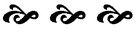
의식의 물리적 토대와 마주하다
어린 시절부터 나는 내 마음이 무엇인지, 그리고 더 나아가 모든 마음이란 무엇인지 골똘히 생각하곤 했다. 내가 어떻게 말장난을 지어내고, 수학적 아이디어를 떠올리고, 말실수를 저지르며, 기묘한 유추를 꿈꾸는지 이해하려고 애썼던 기억이 난다. 여자아이가 된다는 것은, 다른 언어의 원어민이 된다는 것은, 아인슈타인이나 개, 독수리, 심지어 모기가 된다는 것은 어떤 기분일까 궁금해하기도 했다. 대체로 그것은 즐거운 나날이었다.
내가 열두 살이 되었을 때, 우리 가족에게 깊은 그림자가 드리웠다. 부모님과 일곱 살배기 여동생 로라, 그리고 나는 당시 겨우 세 살이었던 막내 몰리에게 무언가 심각한 문제가 있다는 가혹한 현실에 직면했다. 원인이 무엇인지는 아무도 몰랐지만, 몰리는 언어를 이해하지도 말하지도 못했다(오늘날까지도 그러하며, 우리는 끝내 그 이유를 알아내지 못했다). 몰리는 세상 속에서 편안하게, 심지어 매력적이고 우아하게 움직였지만, 말은 단 한마디도 쓰지 못했다. 그것은 너무나 슬픈 일이었다.
수년 동안 부모님은 뇌수술의 가능성을 포함해 상상할 수 있는 모든 길을 알아보셨다. 치료법이나 적어도 어떤 설명이라도 찾으려는 부모님의 간절함이 깊어갈수록, 나 역시 몰리의 처지에 대한 괴로운 생각과, 사람들이 어린 여동생의 머리를 열어 그 안을 채우고 있는 신비로운 물질을 들여다보는 끔찍한 상상(결국 그 길은 택하지 않았지만)에 사로잡혔다. 그리고 이것이 계기가 되어 나는 인간의 뇌에 관한 대중 교양서 두어 권을 읽게 되었다. 그 책들을 읽은 것은 내 삶에 거대한 충격을 주었다. 난생처음으로 의식의 물리적 토대, 즉 ‘나’라는 존재, 혹은 ‘나’를 가진다는 것의 물리적 기반을 고민하게 되었고, 나는 그 사실이 혼란스럽고 어지러우며 지독히도 기이하게 느껴졌다.
바로 그 무렵, 고등학교 졸업반이 될 즈음, 나는 위대한 오스트리아 논리학자 쿠르트 괴델(Kurt Gödel)의 신비로운 메타수학적 계시를 접했고, 스탠퍼드 대학교의 유일한 컴퓨터였던 버로스 220(Burroughs 220)을 이용해 프로그래밍하는 법도 배웠다. 그 컴퓨터는 낡고 허름한 엔시나 홀(Encina Hall)의 묘하게 외진 지하실에 자리 잡고 있었다. 나는 순식간에 이 ‘거대한 전자 두뇌’에 중독되었다. 주황색 불빛들이 기묘하고 마법 같은 패턴으로 깜빡이며 그 ‘생각’을 드러냈고, 내 명령에 따라 아름다운 추상적 수학 구조를 찾아내거나 내가 공부하던 여러 외국어로 엉뚱하고 무의미한 문장들을 지어냈다. 동시에 나는 기호논리학에도 깊이 빠져들었다. 난해한 기호들이 참과 거짓, 가정, 가능성, 반사실적 조건을 반영하며 기묘하고 마법 같은 패턴으로 춤추는 모습을 보며, 나는 그것이 인간 사고의 숨겨진 원천을 엿볼 수 있는 심오한 통로라고 확신했다. 기호와 의미, 패턴과 아이디어, 기계와 정신, 신경 자극과 필멸의 영혼에 대한 이 끊임없는 생각들이 소용돌이치면서, 사춘기 시절 내 마음과 뇌 속에서는 그야말로 대혼란이 벌어졌다.
신기루
열여섯이나 열일곱 살 무렵 어느 날, 지적일 뿐만 아니라 감정적으로도 나를 사로잡고 있던 이 소용돌이치는 생각의 구름들을 골똘히 곱씹다가 문득 이런 깨달음이 찾아왔다. 우리가 ‘의식’이라고 부르는 것은 일종의 신기루라는 생각이었다(그리고 그 이후로 줄곧 그렇게 여겨왔다). 물론 그것은 아주 특이한 종류의 신기루임이 틀림없었다. 스스로를 지각하는 신기루였고, 당연히 자신이 신기루를 지각하고 있다고 믿지는 않았지만, 어쨌든 그것은 여전히 신기루였다. ‘의식’이라 불리는 이 미끄러운 현상은 마치 스스로의 힘으로 공중에 떠오르는 것처럼, 아무것도 없는 곳에서 스스로를 만들어냈다가도 조금만 자세히 들여다보면 다시 무(無)로 흩어져 버리는 듯했다.
살아 있다는 것, 인간이라는 것, 의식이 있다는 것이 무엇인지 이해하려는 열망에 너무나 깊이 사로잡힌 나머지, 나는 이 붙잡기 힘든 생각들이 영영 날아가 버리기 전에 종이 위에 붙들어 놓아야겠다는 충동을 느꼈다. 그래서 자리에 앉아 가상의 현대 철학자 두 명 사이의 대화편을 썼다. 나는 그들에게 ‘플라톤’과 ‘소크라테스’라는 경박한 이름을 붙였다(정작 진짜 플라톤과 소크라테스에 대해서는 거의 아는 바가 없었다). 이것이 내가 쓴 첫 번째 진지한 글이었을지도 모른다. 어쨌든 나는 그 글이 자랑스러웠고 결코 버리지 않았다. 지금 다시 보면 이 두 엉터리 그리스 철학자의 대화가 몹시 미숙하고 어색하며 극도로 엉성하기까지 하지만, 앞으로 나올 많은 아이디어를 암시하고 있고 책 전체에 유쾌하고 도발적인 어조를 불어넣어 준다고 생각하기에, 그럼에도 불구하고 이 책의 프롤로그로 싣기로 결정했다.
협곡을 향한 외침
그로부터 약 10년 뒤, 나는 첫 번째 책을 쓰기 시작했다. 처음 떠올린 제목은 《괴델의 정리와 인간의 뇌》였다. 나의 가장 큰 목표는 인간의 자아라는 개념과 의식의 신비를, 괴델이 이룬 놀라운 발견과 연결하는 것이었다. 괴델은 대담한 설계자들이 자기언급(self-reference)을 엄격히 추방했던 난공불락의 요새 한복판에서, 장엄하게 스스로를 감싸 안는 자기언급적 구조(훗날 내가 ‘이상한 고리’라고 부르게 된 것)를 발견했다. 의미 없는 기호들의 바탕 위에서 자기언급이 기적처럼 만들어지는 과정과, 무생물 물질로 이루어진 바탕 위에서 자아와 영혼이 기적처럼 나타나는 과정 사이의 평행성이 너무나 설득력 있게 다가왔기에, 나는 바로 여기에 우리의 ‘나’라는 감각의 비밀이 숨어 있다고 확신했다. 그렇게 해서 나의 책 《괴델, 에셔, 바흐》(훨씬 더 귀에 쏙 들어오는 제목을 얻었다)가 탄생했다.
1979년에 출간된 그 책은 더할 나위 없는 성공을 거두었고, 사실 그 이후 내 삶의 궤적은 그 책의 성공에 크게 빚지고 있다. 하지만 책의 인기에도 불구하고, 《GEB》(내가 늘 부르는 약칭이자 사람들이 흔히 부르는 이름)의 근본적인 메시지가 대체로 간과되는 것 같아 늘 마음이 쓰였다. 사람들은 온갖 이유로 그 책을 좋아했지만, 그 책의 가장 핵심적인 존재 이유 때문에 좋아하는 경우는 거의 없었기 때문이다! 세월이 흐르면서 나는 그 핵심 메시지를 암시하고 보태는 다른 책들도 냈지만, 내가 《GEB》에서 진짜로 말하고자 했던 바를 세상은 여전히 잘 이해하지 못하는 듯했다.
1999년, 《GEB》이 출간 20주년을 맞이하자 베이직 북스(Basic Books) 측에서 특별 기념판 서문을 써달라고 제안했다. 좋은 생각이라 여겨 제안을 받아들였다. 서문에서 나는 책에 얽힌 온갖 이야기와 우여곡절을 들려주었고, 무엇보다 사람들이 책을 받아들이는 방식에 대한 나의 좌절감을 토로하며 다음과 같은 탄식으로 끝을 맺었다. “때로는 내가 소중히 여겨온 메시지를 텅 빈 협곡을 향해 소리쳤는데 아무도 듣지 못한 것 같은 기분이 든다.”
그러던 2003년 봄 어느 날, 켄 윌리포드(Ken Williford)와 우리아 크리겔(Uriah Kriegel)이라는 두 젊은 철학자로부터 매우 정중한 이메일 한 통을 받았다. 그들은 자신들이 엮고 있는 의식의 ‘자기언급주의 이론(들)’에 관한 앤솔러지에 한 장(chapter)을 기고해 달라고 청했다. 그들은 내게 참여를 권유하면서 서문에 실렸던 바로 그 탄식을 인용하기까지 했고, 이번 기회가 상황을 바꿀 진정한 계기가 될 것이라고 말했다. 나는 내 핵심 메시지에 대한 그들의 진지한 관심에 깊이 감사했고, 개인적인 따뜻함에 감동했다. 그리고 그들의 책에 기고하는 것이야말로 딱 맞는 전문가들, 즉 심리철학자들을 대상으로 자아와 의식에 관한 내 생각을 다시 한번 분명히 펼쳐 보일 훌륭한 기회라는 것을 깨달았다. 그래서 그들의 초대를 수락하기로 마음먹는 것은 그리 어렵지 않았다.
장엄한 돌로미티에서 온화한 블루밍턴으로
나는 오스트리아 국경에서 돌을 던지면 닿을 만한 곳에 위치한 이탈리아 돌로미티 산맥의 아름다운 알프스 마을, 안테르셀바 디 메초(Anterselva di Mezzo)의 조용하고 소박한 호텔 방에서 원고를 쓰기 시작했다. 아름다운 풍경에 영감을 받아 금세 10~15페이지를 써 내려갔고, 벌써 절반쯤 왔을지도 모른다고 생각했다. 그런 다음 인디애나주 블루밍턴의 집으로 돌아와 계속해서 글을 써 나갔다.
원고를 마치는 데는 예상보다 훨씬 더 오랜 시간이 걸렸다(독자 중 일부는 이것이 ‘호프스태터의 법칙’의 전형적인 사례임을 알아챌 것이다. 호프스태터의 법칙이란 “호프스태터의 법칙을 감안하더라도 언제나 예상보다 시간이 더 걸린다”는 것이다). 설상가상으로 그 장은 정해진 분량 제한보다 네 배나 길어지고 말았다. 그야말로 재앙이었다! 하지만 마침내 원고를 받아 본 켄과 우리아는 내가 쓴 글에 매우 만족해했고 내 분량 초과를 너그럽게 용서해 주었다. 사실 그들은 내 글을 책에 싣고 싶은 마음이 너무나 커서 아주 긴 장도 받아줄 수 있다고 말했고, 특히 켄은 내가 원고를 절반 길이로 줄이는 것을 도와주었는데, 그것은 정말이지 그의 헌신적인 노고 덕분이었다.
그러는 사이 나는 내 손안에 있는 원고가 단순한 책의 한 장을 넘어 그 자체로 한 권의 책이 될 수 있겠다는 사실을 깨닫기 시작했다. 그리하여 하나의 프로젝트로 시작했던 작업이 둘로 갈라졌다. 나는 그 장에는 심리철학자 토마스 네이글(Thomas Nagel)이 쓴 의식의 신비에 관한 유명한 논문 〈박쥐가 된다는 것은 어떤 것인가?(What is it like to be a bat?)〉를 빗대어 〈이상한 고리가 된다는 것은 어떤 것인가?(What is it like to be a strange loop?)〉라는 제목을 붙였고, 장차 책이 될 원고에는 더 짧고 산뜻한 《나는 이상한 고리다(I Am a Strange Loop)》라는 제목을 붙였다.
2006년 봄에 출간된 켄 윌리포드와 우리아 크리겔의 앤솔러지 《의식에 대한 자기표상적 접근(Self-Representational Approaches to Consciousness)》에서, 내 에세이는 맨 마지막에 있는 ‘철학을 넘어서(Beyond Philosophy)’라는 두 장짜리 섹션에 실렸다(내 글이 왜 ‘철학을 넘어서’ 있는지는 나도 잘 모르겠지만, 어쨌든 그 아이디어가 꽤 마음에 든다). 그 훌륭하지만 다소 전문적인 책 속에서 내 생각들이 얼마나 많은 사람에게 영향을 미칠지는 모르겠다. 하지만 더 온전히 다듬어지고 더 눈에 띄는 모습으로 태어난 이 책에서는, 철학계 안팎의 모든 사람, 젊은이와 노인, 전문가와 초심자 모두에게 다가가 자아와 영혼(그리고 물론 고리!)에 대한 새로운 이미지를 선사할 수 있기를 진심으로 바란다. 어쨌든 나는 이 책이 탄생하는 데 첫 불꽃을 지펴주고 그 과정에서 아낌없는 격려를 보내준 켄과 우리아에게 큰 빚을 졌다.
그리하여 대략 45년이 흐른 지금(세상에!), 나는 다시 제자리로 돌아와 영혼과 자아, 그리고 의식에 대해 글을 쓰고 있다. 십 대 시절, 우리를 우리답게 만드는 것의 끔찍하면서도 경이로운 물리성에 공포를 느끼면서도 동시에 매료되었던 바로 그 신비로움과 기이함에 다시금 부딪히면서 말이다.
저자와 독자
제목과는 달리, 이 책은 나에 관한 책이 아니라 ‘나’라는 개념에 관한 책이다. 따라서 독자 여러분, 이 책은 나에 관한 책인 만큼이나 여러분 자신에 관한 책이기도 하다. 제목을 《당신은 이상한 고리다》라고 지어도 무방했을 것이다. 하지만 사실 책의 주제와 목표를 더 명확히 드러내려면 《‘나’는 이상한 고리다》라고 지었어야 했을지도 모른다. 그런데 이보다 더 투박한 제목을 상상할 수 있겠는가? 차라리 《나는 납 풍선이다》라고 짓는 편이 나을지도 모른다.
어쨌든 이 책은 ‘나’란 무엇인가라는 유서 깊은 주제를 다룬다. 그렇다면 이 책의 독자는 누구인가? 언제나 그렇듯 나는 교양 있는 일반 대중에게 다가가기 위해 글을 쓴다. 나는 전문가를 위해 글을 쓰는 법이 거의 없는데, 어떤 면에서는 나 자신이 진짜 전문가가 아니기 때문이다. 아, 그 말은 취소하겠다. 그건 너무 불공평하다. 결국 나는 지금까지 거의 30년 동안 대학원생들과 함께 유추와 창의성의 계산 모델을 연구하고, 온갖 종류의 인지 오류를 관찰하고 목록화하며, 범주화와 유추의 사례를 수집하고, 물리학과 수학에서 유추가 차지하는 중심적 역할을 연구하며, 유머의 메커니즘을 곱씹고, 개념이 어떻게 생성되고 기억이 어떻게 인출되는지 탐구하며, 단어와 관용구, 언어, 번역의 온갖 측면을 탐색해 왔다. 그리고 이 30년 동안 사고의 여러 측면과 우리가 세상을 지각하는 방식에 관한 세미나를 가르쳐 왔다.
그러니 그렇다, 결국 나도 일종의 전문가다. 나는 생각에 대해 생각하는 것의 전문가다. 사실 앞서 말했듯, 이 주제는 내가 십 대였던 시절부터 내 가슴에 불을 지펴왔다. 그리고 내가 내린 가장 확고한 결론 중 하나는 우리가 언제나 과거에 알던 것들과의 평행성을 찾고 끌어옴으로써 생각한다는 것이다. 따라서 우리가 가장 잘 소통하는 방식은 수많은 예시와 유추, 은유를 활용하고, 추상적인 일반론을 피하며, 아주 현실적이고 구체적이며 단순한 언어를 사용하고, 우리 자신의 경험에 대해 직접적으로 이야기할 때다.
말과 강아지 종교
세월이 흐르면서 나는 스스로 ‘말과 강아지(horsies-and-doggies)’ 스타일이라 부르는 자기표현 방식에 빠져들었다. 이 표현은 유명한 만화 《피너츠(Peanuts)》의 매력적인 에피소드에서 영감을 얻은 것으로, 다음 페이지에 그 만화를 실었다.
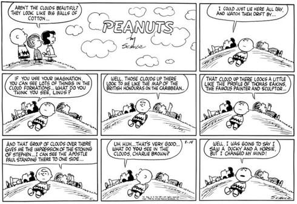
나는 종종 마지막 컷에서 찰리 브라운이 느끼는 것과 똑같은 기분을 느낀다. 구름 위를 떠다니는 추상적인 생각과는 거리가 먼 사람, 너무나 현실적이어서 오히려 민망할 정도인 사람 말이다. 내 독자 중 일부가 나를 지고한 추상을 엄청나게 음미하고 지칠 줄 모르고 추구하는 사람으로 여긴다는 것을 알지만, 그것은 매우 잘못된 이미지다. 나는 정반대이며, 이 책을 읽으면 그 점이 분명해지기를 바란다.
왜 내가 찰리 브라운이 여기서 내뱉은 가슴 찡한 말을 잘못 기억했는지는 도무지 알 길이 없지만, 어쨌든 ‘말과 강아지’라는 약간 변형된 표현은 오래전부터 내 말버릇으로 자리 잡았다. 그래서 좋든 싫든 그것은 내가 내 교육 방식, 말하기 방식, 글쓰기 방식을 묘사할 때 늘 쓰는 표준 표현이 되었다.
《괴델, 에셔, 바흐》의 성공 덕분이기도 하지만, 나는 내가 교수로 재직했던 두 대학, 즉 인디애나 대학교(약 25년)와 미시간 대학교(1980년대에 4년)로부터 엄청난 자유를 누리는 행운을 얻었다. 두 대학의 놀라운 관대함 덕분에 나는 악명 높은 ‘논문을 쓰지 않으면 도태된다(publish-or-perish)’는 압박이나, 어쩌면 그보다 더 지독한 연구비 따내기 경쟁의 압박에 시달리지 않고 나의 다채로운 관심사를 탐구할 수 있는 호사를 누렸다.
나는 전문 학술지에 논문을 계속해서 발표하는 표준적인 학계의 길을 따르지 않았다. 물론 ‘진짜’ 논문도 몇 편 발표하기는 했지만, 대체로 나는 책을 통해 나를 표현하는 데 집중했고, 이 책들은 언제나 최대한의 명료함을 염두에 두고 집필되었다.
명료함, 단순함, 구체성은 내게 일종의 종교, 즉 결코 잊지 않는 지침 원칙들로 굳어졌다. 다행히도 많은 사려 깊은 사람들이 유추와 은유, 예시, 그리고 전문 용어의 상대적 부재, 무엇보다도 1인칭 시점의 서술을 좋아해 준다. 어쨌든 다른 모든 책과 마찬가지로 이 책 역시 그런 글쓰기 방식을 좋아하는 사람들을 위해 쓰였다. 나는 이 집단에 비전문가와 아마추어뿐만 아니라 많은 전문 심리철학자들도 포함된다고 믿는다.
내가 이 책에서 1인칭 이야기를 많이 들려주는 것은 내 삶에 집착하거나 내 삶이 중요하다는 망상에 빠져서가 아니다. 그저 내가 가장 잘 아는 삶이 바로 내 삶이기 때문이며, 내 삶이 대부분의 사람들에게도 전형적일 법한 온갖 예시를 제공해 주기 때문이다. 나는 대부분의 사람들이 이야기를 통해 들을 때 추상적인 아이디어를 가장 명확하게 이해한다고 믿는다. 그래서 나는 내 삶이라는 매개를 통해 어렵고 추상적인 아이디어를 전달하려 노력한다. 더 많은 사상가들이 1인칭 방식으로 글을 썼으면 좋겠다.
나는 이 책의 아이디어가 철학자들에게도 닿기를 바라지만, 내가 철학자처럼 글을 쓴다고는 생각하지 않는다. 많은 철학자들은 수학자처럼 자신들이 믿는 바를 실제로 증명할 수 있다고 믿는 듯하다. 그래서 그들은 종종 고도로 엄밀하고 전문적인 언어를 쓰려 애쓰며, 때로는 가능한 모든 반론을 미리 예상하고 반박하려 든다. 나는 그런 자신감을 존경하지만, 나는 그보다 조금 덜 낙관적이고 조금 더 숙명론적이다. 나는 철학에서 무언가를 진정으로 증명할 수 있다고 생각하지 않는다. 그저 설득하려 노력할 수 있을 뿐이며, 아마도 결국에는 자신이 옹호하는 입장에 애초부터 꽤 가까이 있던 사람들만 설득하게 될 것이다. 이러한 온건한 숙명론의 결과로, 내 요점을 전달하는 전략은 엄밀함을 추구하기보다 은유와 유추에 더 많이 의존한다. 실제로 이 책은 은유와 유추로 가득 찬 거대한 샐러드 볼이다. 어떤 이들은 내 은유 샐러드를 음미할 것이고, 어떤 이들은 너무… 음, 너무 은유적이라고 느낄 것이다. 하지만 특히 당신, 친애하는 미식가께서는 내 샐러드의 간이 입맛에 딱 맞기를 바란다.
마지막으로 덧붙이는 몇 가지 단상
나는 유추를 매우 진지하게 다루기 때문에, 내 ‘샐러드’ 속에 들어 있는 수많은 유추를 색인에 정리하느라 상당한 수고를 들였다. 그래서 색인에는 예시 목록을 위한 두 개의 주요 항목이 있다. 하나는 ‘유추, 진지한 예시(analogies, serious examples of)’이고, 다른 하나는 ‘가벼운 유추, 무작위 예시(throwaway analogies, random examples of)’다. 이런 익살맞은 구분을 한 이유는, 많은 유추가 아이디어를 전달하는 데 핵심적인 역할을 하는 반면 어떤 유추는 그저 양념을 치기 위해 들어갔기 때문이다. 하지만 짚고 넘어갈 점이 하나 더 있다. 결국 이 책(이나 다른 어떤 책)에 나오는 사실상 모든 생각은 유추다. 어떤 것을 다른 어떤 것의 변종으로 인식하는 과정을 포함하기 때문이다. 따라서 내가 ‘마찬가지로’라거나 ‘대조적으로’라고 쓸 때마다 거기에는 암묵적인 유추가 들어 있으며, 내가 어떤 단어나 구절(예: ‘샐러드’, ‘저장고’, ‘핵심’)을 고를 때마다 나는 내 삶의 경험 저장고에 있는 무언가와 유추를 하고 있는 셈이다. 요컨대 여기에 실린 모든 생각이 ‘유추’ 항목 아래 나열될 수 있다. 하지만 색인을 그렇게까지 세세하게 만들지는 않았다.
처음에 나는 이 책이 형식 기호를 거의 쓰지 않고, 선불교, 분자생물학, 재귀, 인공지능 같은 다채로운 주제로 푸시킨식 탈선을 일삼지도 않으면서 《GEB》의 핵심 메시지를 압축해 다시 들려주는 책이 될 거라고 생각했다. 다시 말해 《GEB》과 내 다른 책들에서 이미 내가 여기서 말하고자 하는 바를 다 말했다고 생각했다. 그런데 놀랍게도 글을 쓰기 시작하자 발밑 곳곳에서 새로운 아이디어들이 싹트기 시작했다. 그것은 큰 안도감을 주었고, 이 새 책이 그저 이전 책(들)의 재탕 이상이라는 느낌을 주었다.
《GEB》이 성공한 비결 중 하나는 본문과 대화편을 번갈아 배치한 구성이었지만, 30년이 지난 지금 또다시 그런 교차 구성을 흉내 내고 싶지는 않았다. 나는 다른 마음가짐이었고, 이 책이 그것을 반영하기를 바랐다. 하지만 끝무렵에 이르러 내 생각을 심리철학의 잘 알려진 사상들과 비교해 보려다 보니, 나는 어느새 “회의론자들은 다음과 같이 대꾸할지도 모른다…” 같은 문장을 쓰기 시작했다. 그런 문구를 몇 번 쓰고 나서야, 내가 나 자신과 가상의 회의적인 독자 사이의 대화편을 무심코 쓰고 있다는 사실을 깨달았다. 그래서 나는 기묘한 이름을 가진 두 인물을 만들어내어 서로 맞붙게 했고, 그것은 결과적으로 이 책에서 가장 긴 장 중 하나가 되었다. 배꼽을 잡게 만들려는 의도는 아니지만, 독자 여러분이 읽으면서 곳곳에서 미소 짓기를 바란다. 어쨌든 대화편 형식을 좋아하는 팬들이여, 기운 내시라. 이 책에는 두 편의 대화편이 실려 있다.
나는 평생 형식과 내용의 상호작용을 사랑해 왔으며, 이 책도 예외는 아니다. 이전의 여러 책과 마찬가지로 이번에도 나는 가장 세밀한 수준까지 직접 조판할 기회를 얻었고, 각 페이지의 시각적 우아함을 추구하는 과정은 내가 생각을 문장으로 표현하는 방식에 무수한 영향을 미쳤다. 어떤 이들에게는 이것이 주객전도처럼 들릴지 모르지만, 나는 형식에 기울이는 관심이 누구의 글쓰기든 향상시킨다고 생각한다. 이 책을 읽는 것이 지적으로 자극적일 뿐만 아니라 시각적으로도 유쾌한 경험이 되기를 바란다.
유용한 젊음
《GEB》은 꽤 젊은 사람이 썼다(시작할 때 스물일곱이었고, 줄 쳐진 종이에 펜으로 꾹꾹 눌러 쓴 초고를 마쳤을 때 스물여덟이었다). 그 어린 나이에도 나는 이미 내 몫만큼의, 혹은 그 이상의 고통과 슬픔, 도덕적 고뇌를 겪었지만, 책 속에서는 삶의 그런 측면들에 대한 언급을 그리 많이 찾아볼 수 없다. 반면 고통과 슬픔, 자기 성찰을 훨씬 더 많이 겪은 사람이 쓴 이 책에서는 삶의 그런 힘든 측면들이 훨씬 더 자주 언급된다. 나이가 든다는 것의 특징 중 하나가 바로 그것인 듯하다. 글이 더 내면적으로 변하고, 더 성찰적이 되며, 어쩌면 더 지혜로워지거나, 혹은 그저 더 슬퍼지는 것이다.
나는 오랫동안 앙드레 말로(André Malraux)의 유명한 소설 《인간의 조건(La Condition humaine)》이라는 시적인 제목에 깊은 인상을 받아왔다. 우리 각자는 이 감동적인 구절이 무엇을 의미하는지에 대해 개인적인 감각을 가지고 있을 텐데, 나는 《나는 이상한 고리다》를 ‘인간의 조건’이 무엇인지 묘사하려는 나만의 최선의 시도라고 말하고 싶다.
내가 가장 좋아하는 《GEB》의 추천사 중 하나는 물리학자이자 작가인 제레미 번스타인(Jeremy Bernstein)이 써준 것으로, 그 일부는 이랬다. “이 책에는 젊은이의 활력(youthful vitality)과 놀라운 빛남이 있다…” 내 귀에는 그야말로 감미로운 음악 같았다! 하지만 안타깝게도 이 칭찬의 문구는 어느 시점에 오타가 나고 말았고, 그 결과 지금도 세상에는 뒤표지에 번스타인이 “이 책에는 유용한 활력(useful vitality)이 있다…”고 선언하는 《GEB》 수천 권이 돌아다니고 있다. ‘젊은이의’ 활력에 비하면 얼마나 김빠지는 말인가! 그럼에도 불구하고, 더 나이 들고 차분한 문체로 쓰인 이 새 책은 언젠가 어디선가 누군가로부터 ‘유용한’ 활력을 지녔다는 평을 듣게 될지도 모른다. 책에 대해 그보다 더 나쁜 말도 얼마든지 할 수 있을 테니 말이다.
자, 이제 책에 대한 내 이야기는 그만하고, 책이 스스로 말하게 두겠다. 이 책에서 여러분이 흥미와 참신함으로 가득 찬 메시지, 그리고 더 이상 젊지는 않더라도 유용한 활력을 지닌 메시지를 발견하기를 바란다. 이 책을 읽으면서 인간으로 존재한다는 것이 무엇인지, 아니 그저 존재한다는 것 자체가 무엇인지 새로운 방식으로 성찰하게 되기를 바란다. 그리고 책을 덮을 때쯤에는, 어쩌면 여러분 역시 자신이 하나의 이상한 고리라고 상상할 수 있게 되기를 바란다. 그렇다면 나는 더할 나위 없이 기쁠 것이다.
— 인디애나주 블루밍턴에서
2006년 12월
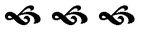
프롤로그
다정한 뿔 맞대기

[머리말에서 밝혔듯이, 나는 이 대화편을 십 대 시절에 썼으며, 이 어려운 아이디어들과 씨름한 나의 첫 번째 풋풋한 시도였다.]
등장인물:
플라톤: 의식이 환상이라고 의심하는 진리의 탐구자 소크라테스: 의식의 실재를 믿는 진리의 탐구자
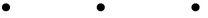
플라톤: 그렇다면 소크라테스, 자네가 말하는 ‘생명’이란 무엇인가? 내가 보기에 살아 있는 생명체란, 태어난 후 자라고, 먹고, 다양한 자극에 반응하는 법을 배우며, 궁극적으로 번식할 수 있는 신체를 말하네.
소크라테스: 플라톤, 자네가 살아 있는 생명체가 신체를 가지고 있다고 하지 않고, 신체 그 자체라고 말하는 점이 흥미롭군. 오늘날 많은 사람들은 분명히 신체와는 독립된 영혼을 가진 살아 있는 생명체가 적어도 일부는 있다고 말할 테니까.
플라톤: 그렇네, 나도 그 말에는 동의하네. 살아 있는 생명체는 신체를 가지고 있다고 말했어야 했어.
소크라테스: 그렇다면 자네는 벼룩이나 쥐도 비록 미미할지라도 영혼을 가지고 있다는 데 동의하겠군.
플라톤: 내 정의에 따르면 그렇게 되네, 그렇소.
소크라테스: 그렇다면 나무와 풀잎도 영혼을 가지고 있는가?
플라톤: 자네는 말을 교묘하게 써서 나를 이런 궁지로 몰아넣었군, 소크라테스. 방금 한 말을 수정하겠네. 오직 동물만이 영혼을 가지고 있네.
소크라테스: 하지만 그렇지 않네, 나는 말장난만 한 것이 아니야. 아주 작은 생물들을 살펴보면 식물과 동물의 구분을 찾을 수 없기 때문이지.
플라톤: 식물과 동물의 속성을 모두 공유하는 생물이 있다는 말인가? 음, 나도 그런 존재를 상상할 수는 있을 것 같네. 이제 자네는 나더러 오직 인간만이 영혼을 가지고 있다고 말하게 만들겠군.
소크라테스: 아니, 오히려 나는 자네에게 묻고 싶네. 자네는 보통 어떤 동물이 영혼을 가지고 있다고 여기는가?
플라톤: 당연히 모든 고등 동물이네. 생각할 수 있는 동물들 말이지.
소크라테스: 그렇다면 적어도 고등 동물은 살아 있는 것이군. 이제 자네는 풀 한 포기를 자네 자신과 같은 살아 있는 생명체라고 진정으로 여길 수 있는가?
플라톤: 이렇게 말해보세, 소크라테스. 나는 영혼이 없는 진정한 생명은 상상할 수 없네. 그러므로 비록 생명의 징후는 가지고 있다고 말할 수 있을지언정, 풀은 진정한 생명에서 제외해야만 하네.
소크라테스: 알겠네. 그러니까 자네는 영혼이 없는 생명체는 단지 살아 있는 것처럼 보일 뿐이고, 영혼이 있는 생명체만이 진정한 생명이라고 분류하는 것이군. 그렇다면 “진정한 생명이란 무엇인가?”라는 자네의 질문은 영혼을 이해하는 데 달려 있다고 말해도 옳겠는가?
플라톤: 그렇네, 옳은 말일세.
소크라테스: 그리고 자네는 영혼을 생각하는 능력이라고 여긴다고 말했지?
플라톤: 그렇소.
소크라테스: 그렇다면 자네가 진정으로 찾고 있는 답은 “생각이란 무엇인가?”에 대한 것이군.
플라톤: 자네 논증의 모든 단계를 따라오긴 했네만, 소크라테스, 이 결론은 나를 불안하게 만드는군.
소크라테스: 그것은 내 논증이 아니었네, 플라톤. 자네가 모든 사실을 제공했고, 나는 거기서 논리적 결론을 이끌어냈을 뿐이야. 자신의 의견이라도 다른 사람의 입을 통해 나오면 종종 의심하게 되는 법이라니 참 기이하지.
플라톤: 자네 말이 맞네, 소크라테스. 그리고 생각을 설명하는 것은 결코 간단한 일이 아니야. 내 생각에 가장 순수한 사고는 무언가를 아는 것인 듯하네. 분명 무언가를 안다는 것은 그저 그것을 적어두거나 주장하는 것 이상의 일이니까. 그런 일들은 무언가를 알 때 할 수 있는 것이고, 또 남이 주장하는 것을 듣거나 적힌 것을 보고 무언가를 알게 될 수도 있지. 하지만 앎은 그 이상일세. 그것은 확신이야. 하지만 나는 그저 동의어를 쓰고 있을 뿐이군. 앎이 무엇인지 이해하는 것은 내 능력 밖의 일 같네, 소크라테스.
소크라테스: 흥미로운 생각이군, 플라톤. 앎이라는 것이 우리가 생각하는 것만큼 그렇게 친숙한 것이 아니라는 말인가?
플라톤: 그렇소. 우리 인간은 지식, 즉 확신을 가지고 있기에 인간이지만, 정작 앎 그 자체를 분석하려고 하면 그것은 뒤로 물러나며 우리를 피해 가버리네.
소크라테스: 그렇다면 우리가 ‘앎’ 혹은 ‘확신’이라고 부르는 것을 의심해 보고, 너무 당연하게 여기지 않는 편이 낫지 않겠는가?
플라톤: 정확하네. 우리는 “나는 안다”고 말할 때 신중해야 하며, 우리 마음이 그렇게 말하게 만들 때 “나는 안다”고 말하는 것이 진정 무엇을 의미하는지 숙고해야 하네.
소크라테스: 옳은 말일세. 만약 내가 자네에게 “자네는 살아 있는가?”라고 묻는다면, 자네는 의심할 여지 없이 “그렇소, 나는 살아 있소”라고 대답할 걸세. 그리고 내가 “자네가 살아 있다는 것을 어떻게 아는가?”라고 묻는다면, 자네는 “나는 그것을 느끼고, 내가 살아 있다는 것을 아네. 사실 자신이 살아 있음을 알고 느끼는 것이 곧 살아 있는 것 아닌가?”라고 말할 테지. 그렇지 않은가?
플라톤: 그렇소, 나도 분명 그런 취지로 말할 것이네.
소크라테스: 자, 이제 영어 문장을 만들고 질문에 답할 수 있는 기계가 제작되었다고 가정해 보세. 그리고 내가 이 영어 기계에게 “너는 살아 있느냐?”라고 물었을 때, 그 기계가 자네와 정확히 똑같은 대답을 했다고 가정해 보세. 자네는 그 기계의 대답이 타당한지에 대해 무엇이라 말하겠는가?
플라톤: 나는 우선 어떤 기계도 단어가 무엇인지, 혹은 무엇을 의미하는지 알 수 없다고 반박할 것이네. 기계는 그저 통조림 기계가 과일을 깡통에 넣는 것과 마찬가지로, 추상적이고 기계적인 방식으로 단어를 다룰 뿐이야.
소크라테스: 나는 두 가지 이유로 자네의 반박을 받아들이지 않겠네. 첫째, 자네는 분명 인간 사고의 기본 단위가 단어라고 주장하지는 않을 걸세. 인간에게는 신경 세포가 있고, 그 작동 법칙은 산술적이라는 것이 잘 알려져 있으니까. 둘째, 자네는 조금 전에 ‘알다(to know)’라는 동사를 경계해야 한다고 주의를 주었으면서도, 여기서는 아주 태연하게 그 단어를 쓰고 있군. 어떤 기계도 단어가 무엇인지, 혹은 무엇을 의미하는지 결코 ‘알’ 수 없다고 말하게 만드는 근거가 무엇인가?
플라톤: 소크라테스, 자네는 기계가 우리 인간처럼 사실을 알 수 있다고 주장하는 것인가?
소크라테스: 자네는 방금 전 자네 자신도 앎이 무엇인지 설명할 수 없다고 선언했네. 자네는 어릴 때 ‘알다’라는 동사를 어떻게 배웠는가?
플라톤: 분명 주변에서 그 단어가 쓰이는 것을 들으면서 흡수했겠지.
소크라테스: 그렇다면 자네가 그 단어를 자유자재로 쓰게 된 것은 자동적인 작용에 의한 것이었군.
플라톤: 아니… 음, 어쩌면 자네가 무슨 말을 하려는지 알 것 같기도 하네. 나는 특정한 맥락에서 그 단어를 듣는 데 익숙해졌고, 그래서 나 자신도 그 맥락에서 거의 자동적인 방식으로 그 단어를 사용할 수 있게 되었지.
소크라테스: 마치 지금 자네가 일일이 단어를 곱씹어보지 않고도 언어를 사용하는 것처럼 말인가?
플라톤: 그래, 정확히 그렇네.
소크라테스: 그렇다면 지금 자네가 “나는 내가 살아 있다는 것을 안다”고 말한다면, 그 문장은 자네 뇌에서 나오는 단순한 반사 작용일 뿐, 의식적인 사고의 산물이 아니군.
플라톤: 아니, 아니야! 자네나 내가 잘못된 논리를 썼어. 내가 내뱉는 모든 생각이 단순히 반사 작용의 산물인 것은 아니네. 어떤 생각들은 말로 내뱉기 전에 의식적으로 생각하고 나서 말하니까.
소크라테스: 어떤 의미에서 그것들을 의식적으로 생각한다는 것인가?
플라톤: 글쎄. 아마도 그 생각들을 묘사할 올바른 단어를 찾으려 애쓰는 것이겠지.
소크라테스: 무엇이 자네를 올바른 단어로 이끌어 주는가?
플라톤: 당연히 내가 잘 아는 동의어나 비슷한 단어 등을 논리적으로 찾아보는 것이지.
소크라테스: 다시 말해, 습관이 자네의 생각을 이끄는 것이군.
플라톤: 그렇소, 내 생각은 단어들을 체계적으로 서로 연결하는 습관에 의해 이끌리네.
소크라테스: 그렇다면 다시 한번, 이 의식적인 생각들 역시 반사 작용에 의해 만들어지는 것이군.
플라톤: 만약 이것이 사실이라면 내가 의식하고 있다는 것을 어떻게 알 수 있고, 살아 있다고 어떻게 느낄 수 있는지 모르겠네. 하지만 자네의 논증은 따라왔소.
소크라테스: 하지만 바로 이 논증이 보여주는 바는, 자네의 반응이 단순히 습관이나 반사 작용일 뿐이며, 자네가 살아 있음을 안다고 말하도록 이끄는 의식적인 사고 따위는 없다는 것이네. 잠시 멈춰서 생각해 보면, 자네는 그런 문장을 말할 때 자신이 무슨 뜻으로 말하는지 정말로 이해하고 있는가? 아니면 의식적으로 생각하지도 않은 채 그저 머릿속에 떠오르는 것인가?
플라톤: 사실 너무 혼란스러워서 나도 거의 모르겠네.
소크라테스: 마음이 새로운 경로로 작동할 때 어떻게 실패하는지 보는 것은 흥미로운 일이야. 자네가 “나는 살아 있다”는 그 문장을 얼마나 적게 이해하고 있는지 이제 보이겠는가?
플라톤: 그렇소, 그것은 솔직히 이해하기가 그리 명백하지 않은 문장임에 틀림없네.
소크라테스: 내 생각에 자네가 그 문장을 만들어낸 것과 똑같은 방식으로 우리의 많은 행동이 일어나는 것 같네. 우리는 그것들이 의식적인 사고를 통해 일어난다고 생각하지만, 주의 깊게 분석해 보면 그 생각의 모든 조각이 자동적이고 의식 없는 것임이 드러나지.
플라톤: 그렇다면 자신이 살아 있다고 느끼는 것은, 이해하지도 못한 채 그런 문장을 내뱉도록 재촉하는 반사 작용에 의해 퍼뜨려진 환상일 뿐이고, 진정으로 살아 있는 생명체는 복잡한 반사 작용들의 집합으로 환원된다는 말이군. 그렇다면 소크라테스, 자네는 생명이 무엇이라고 생각하는지 내게 말해준 셈이네.
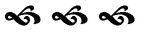
1장 - 영혼과 그 크기에 대하여
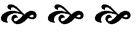
영혼의 파편들
1991년 초 어느 우울한 날, 아버지가 돌아가신 지 두어 달쯤 지났을 때였다. 나는 부모님 댁 부엌에 서 있었고, 어머니는 아마 15년쯤 전에 찍은 아버지의 다정하고 애틋한 사진 한 장을 바라보며 절망 어린 목소리로 내게 말씀하셨다. “저 사진이 무슨 의미가 있겠니? 아무 의미도 없어. 그저 여기저기 어두운 얼룩이 묻은 납작한 종잇조각일 뿐이야. 아무짝에도 쓸모가 없어.” 슬픔에 잠긴 어머니의 그 황량한 말씀에 내 머릿속이 핑글핑글 돌았다. 본능적으로 어머니의 말에 동의할 수 없다는 것은 알았지만, 그 사진을 어떻게 바라보아야 한다고 느끼는지 어머니께 제대로 설명할 길이 마땅치 않았기 때문이다.
몇 분 동안 감정이 북받친 채 골똘히 생각에 잠긴 끝에 — 문자 그대로 영혼을 들여다보는 성찰이었다 — 나는 어머니께 내 관점을 전달하고, 나아가 최소한의 위로라도 드릴 수 있을 것 같은 유추 하나를 떠올렸다. 내가 어머니께 드린 말씀은 대략 다음과 같았다.
“거실에 쇼팽의 피아노 연습곡 악보집이 있잖아요. 그 책의 모든 페이지도 아버지 사진만큼이나 납작하고 접을 수 있는, 검은 자국들이 찍힌 종잇조각일 뿐이에요. 하지만 지난 150년 동안 그 악보들이 전 세계 사람들에게 미친 강력한 힘을 생각해 보세요. 그 납작한 종이 위의 검은 자국들 덕분에, 헤아릴 수 없이 많은 사람이 도합 수백만 시간 동안 피아노 건반 위에서 복잡한 패턴으로 손가락을 움직이며, 그들 자신에게 형언할 수 없는 기쁨과 커다란 의미감을 안겨주는 소리를 만들어냈어요. 그 피아니스트들은 다시 어머니와 저를 포함한 수백만 명의 청중에게 프레데리크 쇼팽의 마음속에 소용돌이치던 깊은 감정을 전달해 주었고, 그리하여 우리 모두가 쇼팽의 내면으로, 즉 프레데리크 쇼팽의 머릿속, 아니 그의 영혼 속에서 살아가는 경험으로 일부나마 들어갈 수 있게 해주었죠. 그 종이 위의 자국들은 다름 아닌 영혼의 파편들(soul-shards)이에요. 부서진 프레데리크 쇼팽의 영혼에서 흩어진 잔해들이죠. 그 기묘한 음표들의 기하학적 배열 하나하나는, 우리 뇌 속에서 다른 인간이 겪었던 내면의 경험 — 그의 고통, 기쁨, 가장 깊은 열정과 긴장 — 의 아주 작은 조각을 다시 살려내는 독특한 힘을 지니고 있어요. 그 덕분에 우리는 적어도 부분적으로는 그 인간으로 산다는 것이 어떠했는지 알게 되고, 많은 이들이 그를 깊이 사랑하게 되죠. 똑같이 강력한 방식으로, 아버지의 저 사진을 바라보면 아버지를 깊이 알았던 우리에게 아버지의 미소와 온화함에 대한 가장 선명한 기억이 되살아나고, 우리 안에 살아남아 있는 아버지에 대한 가장 핵심적인 표상들이 살아 있는 우리 뇌 속에서 활성화되며, 아버지 영혼의 작은 조각들이 아버지 자신이 아닌 다른 사람의 뇌라는 매체 속에서 다시 춤추게 됩니다. 쇼팽 연습곡의 악보처럼, 저 사진은 떠난 이의 영혼의 파편이고, 우리가 살아 있는 한 소중히 간직해야 할 무언가예요.”
물론 위에 적은 것은 내가 실제로 어머니께 드린 말씀보다 조금 더 미사여구가 들어가긴 했지만, 내 메시지의 본질은 담겨 있다. 그 말이 사진에 대한 어머니의 감정에 어떤 영향을 미쳤는지는 모르겠지만, 그 사진은 여전히 어머니 댁 부엌 조리대 위에 놓여 있고, 나는 그 사진을 볼 때마다 그날의 대화를 떠올린다.
토마토가 된다는 것은 어떤 것인가?
나는 일말의 죄책감도 없이 토마토를 썰어 먹는다. 신선한 토마토를 먹은 뒤에 마음이 불편해져서 잠자리에 드는 일도 없다. 내가 어떤 토마토를 먹었는지, 혹은 그것을 먹음으로써 내면의 빛을 꺼뜨린 것은 아닌지 자문해 본 적도 없으며, 토마토가 내 접시 위에서 썰릴 때 어떤 기분이었을지 상상해 보는 것이 의미 있다고 믿지도 않는다. 내게 토마토는 욕망도, 영혼도, 의식도 없는 존재이며, 나는 토마토의 ‘몸’을 내 마음대로 다루는 데 아무런 거리낌이 없다. 실제로 토마토는 그저 몸뚱이일 뿐이다. 토마토에게는 ‘심신 문제’ 따위는 없다. (친애하는 독자여, 적어도 이 점에는 우리 모두 동의하리라 믿는다!)
나는 모기도 거리낌 없이 때려잡는다. 하지만 개미는 밟지 않으려고 애쓰며, 집 안에 모기가 아닌 다른 벌레가 있으면 보통 잡아서 밖으로 데려가 해치지 않고 놓아준다. 닭고기나 생선은 가끔 먹지만[주: 이제는 그렇지 않다 — 이 장의 추신을 보라], 여러 해 전에 포유류의 고기는 먹지 않기로 했다. 소고기도, 햄도, 베이컨도, 스팸도, 돼지고기도, 양고기도 — 사양하겠다! 물론 나도 베이컨·상추·토마토 샌드위치(BLT)나 잘 익은 햄버거의 맛은 여전히 즐길 테지만, 도덕적 이유로 그저 먹지 않을 뿐이다. 여기서 채식주의 운동을 펼치려는 것은 아니지만, 내 채식 성향에 대해서는 조금 이야기해야만 한다. 그것이 영혼과 깊은 관련이 있기 때문이다.
기니피그
열다섯 살 때, 나는 스탠퍼드 대학교의 한 생리학 연구실에서 프리덴(Friden) 기계식 계산기의 버튼을 누르는 여름 아르바이트를 했다. (그때는 스탠퍼드 캠퍼스 전체에 컴퓨터가 딱 한 대밖에 없던 시절이었고, 그 존재를 아는 과학자조차 드물었으며, 계산에 컴퓨터를 쓸 생각은 더더욱 하지 않던 시절이었다.) 몇 시간씩 내리 그런 ‘숫자 누르기’를 하는 것은 꽤 고된 작업이었고, 어느 날 내가 계산을 도와주던 연구 프로젝트의 대학원생 낸시(Nancy)가 기분 전환 삼아 연구실의 다른 일도 해보지 않겠느냐고 물었다. 나는 “좋아요!”라고 답했고, 그날 오후 그녀는 나를 생리학 건물 4층으로 데려가 실험에 쓰는 동물들 — 문자 그대로 기니피그들 — 을 기르는 우리를 보여주었다. 그 톡 쏘는 냄새와 작은 주황색 털을 가진 설치류들이 분주히 움직이던 모습이 아직도 생생하다.
다음 날 오후, 낸시는 내게 꼭대기 층에 올라가서 다음 실험에 쓸 동물 두 마리를 데려다 달라고 부탁했다. 하지만 나는 대답할 틈조차 없었다. 내가 우리 안으로 손을 뻗어 죽임을 당할 작고 부드러운 털복숭이 두 마리를 고르는 모습을 상상하자마자 머리가 핑 돌기 시작하더니, 순식간에 그 자리에서 기절해 콘크리트 바닥에 머리를 부딪치고 말았기 때문이다. 정신을 차렸을 때 내 눈앞에는 연구실 소장이자 오래된 가족의 친구인 조지 파이겐(George Feigen)의 얼굴이 보였고, 그는 내가 넘어지면서 다치지 않았을까 몹시 걱정하고 있었다. 다행히 나는 괜찮았고, 천천히 일어나 자전거를 타고 집으로 돌아와 그날 남은 시간을 보냈다. 그 후로 다시는 내게 과학을 위해 희생할 동물을 골라 오라고 시키는 사람은 없었다.
돼지
생명체의 목숨을 빼앗는다는 개념과 정면으로 부딪힌 그 극도로 괴로운 경험에도 불구하고, 이상하게도 나는 그 후 몇 년 동안 햄버거와 다른 고기들을 계속 먹었다. 내 친구들 중 누구도 그것에 대해 생각하지 않았고, 당연히 아무도 이야기하지 않았기 때문에 나 역시 별생각이 없었던 것 같다. 육식은 내가 아는 모든 사람의 삶에서 그저 당연한 배경 사실일 뿐이었다. 게다가 부끄럽지만 그 시절 내 머릿속에서 ‘채식주의자’라는 단어는 괴상하고 엄격하게 도덕군자 행세를 하는 별난 사람들의 이미지를 떠올리게 했다(영화 《7년만의 외출》에 나오는 맨해튼의 채식주의자 식당 장면이 이 고정관념을 완벽하게 보여준다). 하지만 스물한 살이 되던 어느 날, 나는 노르웨이계 영국 작가 로알드 달(Roald Dahl)이 쓴 〈돼지(Pig)〉라는 단편소설을 읽었고, 이 이야기는 내 삶에 — 그리고 나를 통해 다른 생명체들의 삶에도 — 지대한 영향을 미쳤다.
〈돼지〉는 가볍고 유쾌하게 시작한다. 글로스팬 이모(‘팡글로스(Pangloss)’를 거꾸로 쓴 이름)에 의해 엄격한 채식주의자로 길러진 순진한 청년 렉싱턴은, 이모가 세상을 떠난 뒤 자신이 고기 맛을 사랑한다는 사실을 발견한다(물론 자신이 먹는 것이 무엇인지는 모른 채). 여느 달의 소설이 그렇듯, 곧 이야기는 기묘한 방향으로 흘러간다.
‘돼지고기’라 불리는 이 맛있는 물질에 대한 호기심에 이끌려, 렉싱턴은 새로 사귄 친구의 추천으로 도축장 견학을 하기로 결심한다. 우리는 다른 관광객들과 함께 대기실에 앉아 있는 그를 지켜본다. 그는 대기하던 일행들이 차례로 불려 나가 견학을 떠나는 모습을 한가하게 바라본다. 마침내 렉싱턴의 차례가 오고, 그는 대기실에서 족쇄 채우는 구역으로 안내된다. 그곳에서 그는 돼지들이 뒷다리가 묶인 채 움직이는 사슬의 갈고리에 매달려 목이 따이고, 피를 뿜으며 머리를 아래로 향한 채 ‘해체 라인’을 따라 내려가 끓는 물이 담긴 가마솥에 빠져 몸의 털이 제거되는 광경을 지켜본다. 그다음에는 머리와 사지가 잘려 나가고 내장을 꺼낼 준비를 마친 뒤, 깔끔한 작은 셀로판 포장에 싸여 전국의 슈퍼마켓으로 보내진다. 거기서 돼지들은 다른 분홍빛 경쟁자들과 함께 유리 진열대 안에 놓여, 구매자들이 자신들을 감탄하며 바라보고 부디 집으로 데려가 주기를 기다릴 것이다.
초연한 호기심을 품고 이 모든 광경을 지켜보던 렉싱턴은 갑자기 자신의 다리가 잡아당겨져 거꾸로 뒤집히고 만다. 그리고 자신 역시 방금 전까지 지켜보던 돼지들처럼 움직이는 사슬에 매달려 있다는 사실을 깨닫는다. 평온함이 온데간데없이 사라진 그는 “끔찍한 실수가 벌어졌어요!”라고 소리치지만, 인부들은 그의 외침을 무시한다. 곧 사슬은 그를 친절해 보이는 한 사내 옆으로 끌어간다. 렉싱턴은 그 사내가 이 상황의 부조리함을 알아채 주길 바라지만, 대신 그 온화한 ‘도축공’은 렉싱턴의 귀를 잡고 매달린 소년을 조금 더 가까이 끌어당긴 뒤, 자애로운 미소를 지으며 면도날처럼 날카로운 칼날로 소년의 경정맥을 능숙하게 단숨에 그어버린다. 어린 렉싱턴이 뜻밖의 거꾸로 된 여정을 계속하는 동안, 그의 힘찬 심장은 목에서 피를 뿜어내 콘크리트 바닥에 쏟아붓는다. 거꾸로 매달려 빠르게 의식을 잃어가는 와중에도, 그는 자신보다 앞서 가던 돼지들이 하나씩 김이 모락모락 나는 가마솥으로 떨어지는 모습을 희미하게 지각한다. 이상하게도 그중 한 마리는 앞발 두 개에 흰 장갑을 낀 것처럼 보이고, 그는 대기실에서 자신보다 바로 앞서 견학 구역으로 들어갔던 장갑 낀 젊은 여인을 떠올린다. 그리고 그 기묘한 마지막 생각과 함께, 렉싱턴은 “가능한 모든 세계 중 최선의 세계”인 이곳에서 어지럽게 미끄러져 저세상으로 떠난다.
〈돼지〉의 마지막 장면은 오랫동안 내 머릿속에 메아리쳤다. 머릿속에서 나는 갈고리에 거꾸로 매달려 꽥꽥거리는 돼지가 되었다가, 가마솥으로 쏟아져 들어가는 렉싱턴이 되었다가 하며 끊임없이 뒤바뀌었다…
혐오, 계시, 혁명
이 잊히지 않는 이야기를 읽고 한두 달 뒤, 나는 아버지가 물리학 학회에 참석하시는 바람에 부모님과 여동생 라라를 따라 거친 사르데냐 섬 남쪽 끝에 있는 칼리아리(Cagliari)라는 도시에 갔다. 학회를 현지 스타일로 성대하게 마무리하기 위해, 주최 측은 칼리아리 외곽의 한 공원에서 호화로운 연회를 계획했다. 거기서는 젖먹이 새끼 돼지를 통째로 구운 뒤 모든 식사 손님들 앞에서 썰어 나눌 예정이었다. 학회의 귀빈으로서 우리 가족 모두는 이 유서 깊은 사르데냐 전통에 참여해 주기를 기대받았다. 하지만 나는 최근에 읽은 달의 소설에 깊이 영향을 받은 상태였고, 도저히 그런 의식에 참여하는 내 모습을 상상할 수 없었다. 내 새로운 마음가짐으로는 도대체 어떻게 누군가가 그 자리에 있고 싶어 하는지, 하물며 그 새끼 돼지의 몸을 나누어 먹을 수 있는지조차 상상할 수 없었다. 알고 보니 여동생 로라도 그 광경을 끔찍하게 여기고 있었고, 그래서 우리 둘은 호텔에 남아 파스타와 채소를 아주 맛있게 먹었다.
노르웨이산 〈돼지〉와 사르데냐산 새끼 돼지의 원투 펀치를 맞은 결과, 나는 여동생의 뒤를 따라 육식을 완전히 끊게 되었다. 가죽 구두나 벨트 사는 것도 거부했다. 곧 나는 내 새로운 신조의 열렬한 전도사가 되었고, 몇 달 동안이나마 친구 두어 명을 설득하는 데 성공해 얼마나 뿌듯했는지 기억한다. 비록 실망스럽게도 그들은 서서히 포기하고 말았지만 말이다.
그 시절 나는 알베르트 아인슈타인 같은 내 개인적인 우상들 중 일부가 어떻게 육식주의자일 수 있었는지 자주 의아해했다. 해답을 찾지 못했는데, 최근 웹 검색을 통해 아인슈타인이 사실은 건강상의 이유가 아니라 살아 있는 존재들에 대한 연민 때문에 채식주의에 동조했다는 힌트를 얻고는 무척 기뻤다. 하지만 당시에는 그 사실을 몰랐고, 어쨌든 나의 다른 많은 영웅들은 자신이 무슨 일을 하는지 정확히 알면서도 분명히 육식주의자였다. 그런 사실들은 나를 슬프고 혼란스럽게 만들었다.
회귀, 재진화
매우 이상한 점은, 불과 몇 년 뒤에 나 역시 미국 사회의 일상생활이 주는 압박이 너무나 강해서 한때 열정적이었던 채식주의를 포기하고 말았다는 것이다. 한동안 내 치열했던 숙고는 완전히 지하로 숨어들었다. 1960년대 중반의 ‘나’라면 이러한 반전을 도저히 이해할 수 없었을 테지만, 그럼에도 그 두 버전의 ‘나’는 똑같은 두개골 속에 살았다. 나는 정말로 같은 사람이었을까?
마치 아무런 깨달음도 없었던 것처럼 몇 년이 그렇게 흘러갔다. 그러다 내가 인디애나 대학교의 풋내기 조교수였던 어느 날, 나는 아주 사려 깊은 한 여성을 만났다. 그녀는 내가 한때 가졌던 것과 똑같은 채식주의 철학을 받아들였고, 비슷한 이유에서 그렇게 했으며, 나보다 훨씬 더 오랫동안 그 신념을 지켜오고 있었다. 수(Sue)와 나는 좋은 친구가 되었고, 나는 그녀의 입장이 지닌 순수함을 존경했다. 그녀와의 우정은 나로 하여금 그 문제를 처음부터 다시 깊이 생각해 보게 만들었고, 얼마 지나지 않아 나는 〈돼지〉를 읽은 직후의 ‘어떤 살생도 하지 않는다’는 입장으로 되돌아갔다.
그 후 몇 년 동안 몇 번의 흔들림이 더 있었지만, 서른 살 후반에 접어들면서 나는 마침내 안정된 상태에 정착했다. 그것은 영혼에도 크기가 다를 수 있다는 내 진화하는 직관을 반영한 타협이었다. 내게는 결코 수정처럼 투명하게 명쾌한 생각은 아니었지만, 어떤 영혼들은 ‘충분히 작다면’ 나나 다른 인간들처럼 ‘더 큰’ 영혼의 욕구를 위해 정당하게 희생될 수 있다는 모호한 생각을 받아들이기로 한 것이다. 포유류에서 경계선을 긋는 것이 분명 다소 자의적이긴 했지만(모든 그런 경계선이 그렇듯이), 그것이 내 새로운 신조가 되었고 나는 그 후 20년 넘게 그것을 지켰다.
무생물 고기의 미스터리
우리 영어 화자들은 돼지(pig)나 소(cow)를 먹지 않는다. 우리는 돼지고기(pork)와 소고기(beef)를 먹는다. 우리는 닭고기(chicken)는 먹지만, 닭(chickens)을 먹지는 않는다. 한번은 내 친구의 아주 어린 딸이 아버지에게, 꼬꼬댁거리며 알을 낳는 어떤 농장 새를 가리키는 단어가 저녁 식탁 접시 위에서 자주 보는 어떤 음식을 가리키는 단어와 똑같다며 크게 재미있어한 적이 있다. 그 아이는 ‘calf’라는 단어가 어린 소(송아지)와 다리의 한 부분(종아리)을 모두 뜻하는 우스꽝스러운 우연의 일치와 마찬가지로, 이것도 참 웃긴 우연이라고 생각했다. 물론 그 맛있는 음식과 꼬꼬댁거리며 알을 낳는 새가 똑같은 하나라는 말을 들었을 때 그 아이가 속상해했음은 말할 것도 없다.
아마도 우리 모두는 어릴 때 우리 문화가 귀엽다고 가르쳐 주는 동물들 — 어린 양, 토끼, 송아지, 병아리 등 — 을 우리가 먹고 있다는 사실을 발견할 때 똑같은 혼란을 겪을 것이다. 비록 희미하지만, 나 역시 어린 시절 이 미스터리 앞에서 느꼈던 진정한 혼란을 기억한다. 하지만 육식은 너무나 밋밋하고 흔한 일상이었기에, 나는 대개 그 생각을 양탄자 밑으로 쓸어 넣어두고 깊이 생각하지 않았다.
그럼에도 식료품점은 아주 생생한 방식으로 그 문제를 자꾸만 끄집어내곤 했다. ‘간’, ‘양(곱창)’, ‘심장’, ‘콩팥’, 심지어 때로는 ‘혀’와 ‘뇌’라는 라벨이 붙은, 온갖 기묘한 색깔의 미끈거려 보이는 덩어리들이 가득한 커다란 진열대가 있었다. 그것들은 이름만 동물 부위처럼 들리는 게 아니라, 생김새도 영락없는 동물 부위였다. 다행히 ‘다진 소고기(ground beef)’라 불리는 것은 동물 부위처럼 보이지 않았는데, 내가 ‘다행히’라고 말한 이유는 그게 너무 맛있었기 때문이다. 그것까지 못 먹게 설득당하고 싶지는 않았다! 베이컨도 맛이 기가 막혔고, 게다가 베이컨 조각은 너무 얇고 한 번 구우면 아주 바삭해져서 동물을 떠올리게 하지도 않았다. 얼마나 다행인가!
그 미스터리가 맹렬하게 되살아난 곳은 식료품점 뒤편의 하역장이었다. 가끔 큰 트럭이 후진해 들어와 뒷문이 활짝 열리면, 무섭게 생긴 쇠갈고리에 커다란 살점과 뼈 덩어리들이 생명 없이 매달려 있는 것이 보였다. 나는 병적인 호기심을 가지고 그 도체들이 가게 뒤쪽으로 옮겨져, 쉽게 이동시킬 수 있도록 천장 레일을 따라 미끄러지는 갈고리에 걸리는 모습을 지켜보곤 했다. 사춘기 이전의 나는 이 모든 광경에 몹시 불안해졌고, 도체를 바라보며 “저 동물은 누구였을까?”라고 곱씹지 않을 수 없었다. 나는 그 동물의 이름이 궁금했던 게 아니다. 농장 동물들에게는 이름이 없다는 것을 알았으니까. 나는 좀 더 철학적인 무언가를 붙잡으려 애쓰고 있었다. 저 특정한 동물로 산다는 것은, 다른 어떤 동물이 아니라 바로 저 동물로 산다는 것은 어떤 기분이었을까? 이 동물이 도살당했을 때 갑자기 꺼져버린 그 고유한 내면의 빛은 무엇이었을까?
십 대 시절 유럽에 갔을 때, 그 문제는 훨씬 더 적나라하게 제기되었다. 그곳에서는 생명 없는 동물들의 몸통(대개 가죽이 벗겨지고 머리와 꼬리가 잘려 있었지만, 그렇지 않은 경우도 있었다)이 모든 손님 눈앞에 진열되어 있었다. 내 가장 생생한 기억은 크리스마스 시즌 무렵 한 식료품점 통로 한가운데 테이블 위에 놓여 있던 잘린 돼지 머리다. 우연히 뒤쪽에서 다가가면, 마치 단두대에 잘린 것처럼 그 돼지 목의 모든 내부 구조가 드러난 납작한 단면을 보게 된다. 거기에는 한때 이 개체의 몸 구석구석을 머리에 있는 중앙 ‘사령부’와 연결해 주던 빽빽한 통신선들이 모두 모여 있었다. 반대편에서 보면 이 돼지는 얼굴에 미소가 얼어붙은 것처럼 보였고, 나는 거기서 오싹함을 느꼈다.
다시 한번 나는 궁금해하지 않을 수 없었다. “한때 저 머릿속에 누가 있었을까? 누가 거기서 살았을까? 누가 저 눈을 통해 바깥을 내다보고, 저 귀를 통해 들었을까? 이 고깃덩어리는 원래 누구였을까? 수컷이었을까, 암컷이었을까?” 물론 아무런 대답도 돌아오지 않았고, 다른 손님들은 아무도 이 진열품에 신경을 쓰지 않는 것 같았다. 이 말없고 움직이지 않는 머리가 내 머릿속에서 그토록 강렬하고 격렬하게 불러일으킨 삶과 죽음, 그리고 ‘돼지로서의 정체성’에 대한 치열한 질문들과 마주하는 사람은 나밖에 없는 것 같았다.
개미나 옷좀, 모기를 눌러 죽일 때도 나는 가끔 그와 비슷한 질문을 스스로에게 던지곤 했다. 하지만 그리 자주는 아니었다. 내 본능은 그런 경우에는 “저 ‘안에’ 누가 있는가?”라는 질문의 의미가 덜하다고 말해주었다. 그럼에도 불구하고, 반쯤 짓이겨진 벌레가 바닥에서 꿈틀거리는 모습을 보면 언제나 약간의 자기 성찰이 뒤따랐다.
사실 내가 이 모든 끔찍한 이미지들을 꺼낸 이유는, 독자 대부분이 이미 상당한 고민을 해보았을 어떤 대의를 위해 운동을 벌이려는 것이 아니다. 그보다는 ‘영혼’이란 무엇이며, 누가 혹은 무엇이 영혼을 소유하는가라는 타오르는 질문을 제기하기 위함이다. 그것은 모든 사람이 평생에 걸쳐 — 최소한 암묵적으로라도, 많은 사람에게는 아주 명시적으로 — 고민하는 문제이며, 바로 이 책의 핵심 주제다.
더 크고 튼튼한 영혼을 가진 사람들을 주소서
앞서 나는 쇼팽의 음악에 대한 내 깊은 사랑을 언급한 바 있다. 십 대와 이십 대 시절, 나는 뉴욕의 G. 쉬르머(G. Schirmer) 출판사에서 나온 밝은 노란색 악보집을 펼쳐놓고 피아노로 쇼팽을 많이 쳤다. 그 악보집마다 맨 앞에는 1900년대 초 미국 비평가 제임스 휴네커(James Huneker)가 쓴 에세이가 실려 있었다. 오늘날 많은 사람들은 휴네커의 산문이 지나치게 과장되었다고 여기겠지만, 나는 그렇지 않았다. 그의 거침없는 감수성은 쇼팽의 음악에 대한 내 인식과 공명했고, 나는 여전히 그의 문체와 풍부한 은유를 사랑한다. 쇼팽 연습곡집 서문에서 휴네커는 작품번호 25번의 11번 가단조(흔히 ‘겨울바람’이라 불리는 거대한 폭발 같은 곡이지만, 물론 쇼팽이 붙인 제목도 그가 떠올린 이미지도 아니었다)에 대해 다음과 같은 인상적인 생각을 피력한다. “영혼이 작은 사람은 손가락이 아무리 민첩하더라도 이 곡을 시도해서는 안 된다.”
나는 이 놀랍고도 휘몰아치는 곡의 끔찍한 기술적 난이도를 몸소 증언할 수 있다. 열여섯 살 무렵 패기 있게 이 곡을 배워보려다가, 안타깝게도 중간에 포기할 수밖에 없었기 때문이다. 몇 주 동안 믿기 힘들 정도로 고된 연습을 한 끝에 겨우 첫 페이지를 제 속도로 치는 데 성공했지만, 그 바람에 오른손이 욱신거리며 아팠다. 하지만 물론 휴네커가 말한 것은 기술적 난이도가 아니었다. 그가 아주 정확히 지적했듯 이 곡은 장엄하고 고귀한데, 더 논란이 될 만한 점은 그가 인간 영혼의 서로 다른 수준이나 ‘크기’ 사이에 경계선을 긋고 있다는 것이다. 어떤 사람들은 신체의 한계 때문이 아니라 그들의 영혼이 ‘충분히 크지 않기’ 때문에 이 곡을 연주할 자격이 없다는 암시다. (휴네커의 말에 담긴 성차별주의는 굳이 비판하지 않겠다. 그 시절에는 그게 다반사였으니까.)
이런 식의 정서는 오늘날의 평등주의적인 미국 사회에서는 잘 먹히지 않는다. 보수적인 중산층의 정서에도 맞지 않을 것이다. 솔직히 말해, 현대의 민주적인 귀에는 지독히 엘리트주의적으로, 어쩌면 역겹게까지 들린다. 그럼에도 불구하고 나는 휴네커의 말에 어느 정도 동의한다는 것을 인정하지 않을 수 없으며, 우리 모두가 ‘영혼이 작은’ 인간과 ‘영혼이 큰’ 인간이라는 개념과 막연히 비슷한 무언가의 타당성을 암묵적으로 믿고 있는 것은 아닌지 의문이 든다. 사실 대외적으로 아무리 평등주의를 공언하더라도, 이것이 거의 우리 모두의 믿음이라고 말하지 않을 수 없다.
영혼이 작은 인간과 영혼이 큰 인간
우리 중 일부는 사형을 믿는다. 사형은 그 영혼이 아무리 간절히 자비를 구걸하고, 떨고, 흔들리고, 비명을 지르고, 자신의 파멸의 장소로 가는 복도를 따라 끌려가면서 필사적으로 탈출하려 발버둥 치더라도, 한 인간의 영혼을 의도적으로 공개 처형하여 짓밟는 행위다.
우리 중 일부, 어쩌면 거의 대부분은 전쟁에서 적군 병사를 죽이는 것이 정당하다고 믿는다. 마치 전쟁이 적의 영혼의 크기를 줄여버리는 특수한 상황이라도 되는 것처럼 말이다.
옛날에는 아마 우리 중 일부도(조지 워싱턴, 토머스 제퍼슨, 벤저민 프랭클린이 각자의 방식으로, 적어도 한동안은 그랬던 것처럼) 노예를 소유하고, 그들을 사고팔며, 오늘날 우리가 예를 들어 말이나 개, 고양이를 다루듯 가족을 마구잡이로 찢어놓는 것이 비도덕적이지 않다고 믿었을 것이다.
어떤 종교인들은 무신론자나 불가지론자, 다른 신앙을 따르는 사람들 — 그리고 최악의 경우, ‘유일한’ 신앙을 버린 배신자들 — 에게는 영혼이 전혀 없으며, 따라서 죽어 마땅하다고 믿는다.
어떤 사람들(일부 여성들까지 포함해서)은 여성에게는 영혼이 없다거나, 혹은 조금 더 너그럽게 보아 여성이 남성보다 ‘더 작은 영혼’을 가지고 있다고 믿는다.
우리 중 일부(나 자신을 포함해)는 고(故) 레이건 대통령이 육신이 숨을 거두기 수년 전에 이미 본질적으로 ‘완전히 사라졌다’고 믿으며, 더 일반적으로 알츠하이머병 말기 환자들은 본질적으로 완전히 사라졌다고 믿는다. 그 두개골 껍데기 안에는 여전히 인간의 뇌가 들어 있지만, 그 뇌에서 무언가가 — 본질적인 무언가, 그 사람의 영혼의 비밀을 담고 있는 무언가가 — 빠져나가 버렸다는 느낌을 받는다. ‘나’라는 존재가 완전히 혹은 부분적으로 증발하여 하수구로 흘러 내려가 다시는 찾을 수 없게 된 것이다.
우리 중 일부(다시 말하지만 나도 이 집단에 속한다)는 막 수정된 난자나 5개월 된 태아는 온전한 인간의 영혼을 지니고 있지 않으며, 어떤 의미에서는 장차 어머니가 될 사람의 삶이 비록 살아 있음은 명백할지라도 그 작은 생명체의 삶보다 더 중요하다고 믿는다.
초콜릿 래브라도 해티
켈리: 브런치 먹고 나서 우리 린의 칠면조 보러 갈 거야, 아직 못 봤거든.
더그: 그것(Which), 아니면 그분(whom)?
켈리: 그것이지. 칠면조는 그분이 아니니까.
더그: 그렇구나… 그럼 해티는 그분이야, 아니면 그것이야?
켈리: 오, 해티야 의심할 여지 없이 그분이지.
골든 리트리버 올리
더그: 그래서 오늘 오후 그리피 호수 나들이에서 올리는 어땠어? 잘 놀았니?
대니: 응, 꽤 즐거운 시간을 보냈는데 다른 개들하고는 별로 안 놀았어. 대신 사람들하고 노는 건 좋아하더라.
더그: 정말? 어째서?
대니: 올리는 사람을 좋아하는 성격(people person)이거든.
그 운명적이고 치명적인 선을 어디에 그을 것인가?
모든 인간은 — 적어도 영혼이 충분히 큰 인간이라면 — 모기나 파리를 때려잡는 일, 쥐덫을 놓는 일, 토끼나 바닷가재, 칠면조, 돼지, 어쩌면 개나 말을 먹는 일, 밍크 숄이나 상아 조각상을 사는 일, 가죽 여행 가방이나 악어가죽 벨트를 쓰는 일, 심지어 몸에 침입한 세균 떼를 페니실린으로 공격하는 일 등등에 대해 자신의 입장을 정해야 한다. 세상은 우리에게 크고 작은 도덕적 딜레마를 끊임없이 — 적어도 매 끼니마다 — 부과하며, 우리는 모두 입장을 취하도록 강요받는다. 어린 양에게도 소중한 영혼이 있는가, 아니면 양갈비 맛이 너무 황홀해서 그런 문제로 머리를 싸맬 필요가 없는가? 미끼를 물고 나일론 줄 끝에서 속절없이 퍼덕이는 송어는 살아남을 자격이 있는가, 아니면 그저 머리를 세게 한 대 내리쳐 ‘고통에서 해방시켜 준’ 다음 그 하얀 근육의 형언할 수 없으면서도 묘하게 예측 가능한 부드럽고 결이 살아 있는 식감을 음미해야 하는가? 메뚜기와 모기, 심지어 세균에게도 아무리 희미할지언정 내면의 작은 ‘불빛이 켜져’ 있는가, 아니면 그 ‘안’은 온통 깜깜한가? (어디 안 말인가?) 나는 왜 개는 먹지 않는가? 내가 아침 식사로 즐기고 있는 베이컨의 주인이었던 돼지는 누구였는가? 내가 아삭아삭 씹어 먹고 있는 것은 어느 토마토인가? 앞마당에 있는 저 웅장한 느릅나무를 베어버려야 할까? 그리고 그 김에 야생 블랙베리 덤불도 뽑아버릴까? 그 옆에 자라는 잡초들도 전부 다?
말을 사용하는 우리에게, 말 없는 다른 생명체들의 생사를 결정할 권리를 주는 것은 무엇인가? 왜 우리는(적어도 우리 중 일부는) 그토록 괴로운 처지에 놓이게 되는가? 결국 따지고 보면, 그것은 단순히 힘이 곧 정의(might makes right)이기 때문이다. 우리 인간은 복잡한 뇌와 풍부한 언어 및 문화 속에 자리 잡은 지능 덕분에 ‘하등’ 동물들(그리고 식물들)에 비해 실제로 높고 강한 존재다. 우리의 힘 때문에, 우리는 오랜 시간 신중하게 개인적인 성찰을 거친 결과든, 아니면 그저 대중의 거센 흐름에 휩쓸려서든 간에, 생명체들의 어떤 서열을 매기지 않을 수 없게 된다. 소를 죽이는 것도 모기를 죽이는 것만큼이나 마음이 편한가? 벽 위에서 몸단장을 하는 파리를 때려잡는 것과 도마 위에서 바들바들 떨고 있는 닭의 목을 치는 것 사이에 마음의 불편함이 덜한 쪽이 있는가? 물론 이런 질문들은 끝없이 증식(proliferate — 이 동사의 아이러니한 철자에 주목하라)시킬 수 있지만, 여기서는 그만두겠다.
아래에 나 자신의 개인적인 ‘의식 원뿔(consciousness cone)’을 그려 넣었다. 이것이 정확하다는 뜻은 아니며, 그저 시사하는 바가 있을 뿐이다. 하지만 나는 여러분의 머릿속에도, 그리고 언어를 구사하는 모든 인간의 머릿속에도 이와 비슷한 구조가 존재한다고 주장한다. 비록 대부분의 경우 명시적으로 공식화되지 않았기 때문에 면밀한 검토의 대상이 되는 일은 거의 없지만 말이다.
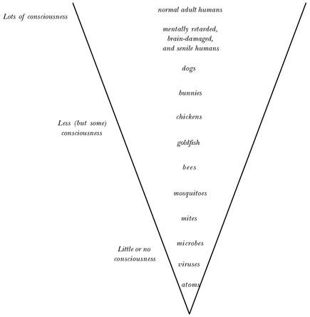
내면성 — 무엇이 그것을 가지며, 어느 정도로 가지는가?
이 책의 독자라면, 다소 잊기 힘든 캐릭터 C-3PO와 R2-D2가 등장하는 《스타워즈》 영화를 모두 놓쳤을 리는 만무하다. 수십 년 동안 인간 지능의 가장 원초적인 메커니즘을 이해하고자 계산 모델을 만들어 온 나 같은 사람의 눈에는 이 두 로봇이 터무니없이 비현실적으로 보이지만, 그럼에도 그들은 아주 유용한 목적 하나를 수행한다. 바로 마음을 열어주는 역할이다. 스크린 위에서 ‘살과 피를 지닌’ 것처럼 움직이는 C-3PO와 R2-D2를 보면, 우리는 금속이나 플라스틱으로 만들어진 존재를 볼 때마다 “저건 ‘잘못된 재료’로 만들어졌으니 필연적으로 무생물일 수밖에 없어”라는 독단적인 결론으로 반사적으로 뛰어드는 운명에 처해 있지 않다는 사실을 깨닫게 된다. 오히려 우리는, 어쩌면 스스로도 놀랍게도, 차갑고 딱딱하며 살과는 거리가 먼 물질로 만들어진, 생각하고 느끼는 존재를 쉽게 상상할 수 있음을 발견한다.
《스타워즈》 영화 중 한 편에서, 나는 수백 대의 로봇이 일사불란하게 행진하는 거대한 부대를 본 기억이 있다. 여기서 ‘일사불란하게’라는 말은 정말이지 일사불란하다는 뜻이다. 모두가 완벽한 동시성으로 성큼성큼 걸어가고, 모두가 똑같고 무표정하며 텅 빈 기계적인 얼굴 표정을 짓고 있었다. 이 완벽한 대체 가능성의 이미지 덕분에, 폭탄이 돌격하는 소대 위에 떨어져 공장제 ‘생명체’인 그 대원들이 모두 순식간에 산산조각이 나더라도 슬픔을 느끼는 관객은 거의 없을 것이다. 결국 C-3PO와 R2-D2와는 정반대로, 이 로봇들은 생명체가 전혀 아니라 그저 쇳덩어리일 뿐이다! 이 금속 껍데기들 안에는 깡통 따개나 자동차, 전함보다 더 많은 내면성(interiority)이 들어 있지 않으며, 그 사실은 그들의 완벽한 동일성에서 여실히 드러난다. 아니면 혹시 그들 안에 아주 작은 정도의 내면성이 깃들어 있다 하더라도, 그것은 개미의 내면성과 비슷한 수준일 것이다. 이 금속 행진자들은 단순한 병정 로봇들, 즉 더 큰 로봇 군락의 일개미 계급에 속한 구성원일 뿐이며, 좀비 같은 방식으로 회로에 심어진 융통성 없는 기계적 충동을 따르고 있을 뿐이다. 그 안에 내면성이 있더라도, 그것은 무시할 만한 수준이다.
그렇다면 C-3PO와 R2-D2의 내면에는 ‘불빛이 켜져’ 있고, 그들의 우스꽝스러운 둥근 ‘눈’ 뒤쪽 어딘가의 무기질 두개골 안에는 진정한 내면성이 가득하다는 부인할 수 없는 느낌을 우리에게 주는 것은 무엇인가? 그들의 ‘나’에 대한 우리의 부인할 수 없는 감각은 어디에서 오는가? 반대로, 말년의 레이건 전 대통령이나 산산조각 난 그 똑같은 병정 로봇 무리에게는 결여되어 있었지만, 초콜릿 래브라도 해티와 로봇 R2-D2에게는 결여되어 있지 않아 우리에게 이토록 큰 차이를 만들어내는 것은 무엇인가?
영혼의 점진적 성장
나는 앞서 인간의 정자와 난자가 만나 접합자를 형성하는 순간 온전한 인간 영혼이 탄생한다는 생각을 거부하는 사람 중 하나라고 밝혔다. 그와는 대조적으로, 나는 인간의 영혼이 — 참고로, 이 책에서 나의 목표는 흔히 종교적 함의가 가득하지만 여기서는 전혀 그렇지 않은 이 미끄럽고 변덕스러운 단어의 의미를 분명히 밝히는 것이다 — 수년간의 발달 과정을 거치며 서서히 생겨난다고 믿는다. 이렇게 말하면 천박하게 들릴지 모르지만, 나는 적어도 은유적으로 ‘영혼성의 정도(degrees of souledness)’를 나타내는 수치 척도를 제안하고 싶다. 처음에는 0에서 100까지 이어지는 척도로 상상해 볼 수 있으며, 이 척도의 단위는 그저 재미 삼아 ‘휴네커(huneker)’라고 부를 수 있다. 그리하여 독자 여러분과 나는 모두 100휴네커, 혹은 그쯤 되는 영혼성을 지니고 있다. 자, 악수합시다!
아차! 방금 나는 내 고국의 훌륭한 평등주의 전통에 오랜 세월 세뇌된 탓에 저지른 오류 하나를 깨달았다. 즉, 영혼성이 ‘최대치에 도달하는’ 값이 있어서 모든 정상적인 성인은 그 상한선에 도달하고 더 높이 올라갈 수는 없다고 무의식중에 가정해 버린 것이다. 그런데 왜 그런 가정을 해야 하는가? 왜 영혼성이 키(신장)와 같을 수는 없는가? 성인에게는 평균 키가 있지만, 그 평균 주위에는 상당한 편차도 존재한다. 마찬가지로 성인에게도 평균적인 영혼성 정도(가령 100휴네커)가 있고, 그 평균 주위에 넓은 분포가 있어서 드문 경우에는 (IQ처럼) 150이나 200휴네커까지 올라가고 다른 경우에는 50 이하로 내려갈 수도 있지 않겠는가?
만약 상황이 그렇다면, 독자 여러분과 내가 100휴네커의 영혼성을 공유한다는 내 반사적인 주장은 철회하겠다. 대신 우리 둘 다 휴네커 측정기(hunekometer)에서 그보다 훨씬 높은 수치를 기록할 것이라고 제안하고 싶다! (여러분도 동의하길 바란다.) 하지만 이것은 위험한 도덕적 영역, 즉 어떤 사람은 다른 사람보다 가치가 더 높다는 암시에 가까워지는 느낌을 준다. 이는 우리 사회에서 금기시되는 생각이며(나 역시 불편하게 여기는 생각이다), 따라서 여기서 휴네커 단위로 한 사람의 영혼성 수치를 계산하는 방법을 알아내는 데 많은 시간을 쓰지는 않겠다.
정자와 난자가 결합할 때, 그 결과로 생기는 극소량의 생물학적 덩어리는 본질적으로 0휴네커의 영혼 가치를 지닌다는 생각이 든다. 하지만 그때 일어난 일은, 수년에 걸쳐 복잡한 내부 구조나 패턴의 집합을 발달시킬 수 있는 역동적이고 눈덩이처럼 불어나는 존재가 탄생했다는 것이다. 그리고 그 정교한 패턴들이 점점 더 높은 수준으로 존재하는 것이야말로, 그 존재에게(더 정확히는 그 존재가 한 단계씩 서서히 변태해 가는 훨씬 더 복잡한 존재들에게) 휴네커 영혼 척도상 점점 더 큰 값을 부여하여 결국 100 부근의 값에 수렴하게 만드는 것이다.
다음 페이지에 실린 원뿔은 내가 0세에서 20세까지의 인간들에게(또는 대안으로, 단 한 명의 인간이지만 서로 다른 성장 단계에 있는 모습에) 휴네커 값을 어떻게 부여할지 거칠지만 생생하게 보여준다.
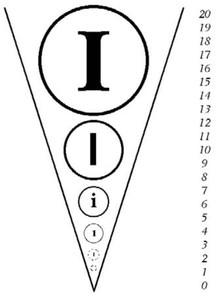
요컨대 나는 제임스 휴네커의 도발적인 발언을 되풀이하고 일반화하여 이렇게 주장하고 싶다. ‘영혼성’은 비트나 픽셀, 전구처럼 오직 두 가지 가능한 상태만을 가지는 켜짐-꺼짐(off-on), 흑백의 이산 변수가 결코 아니다. 오히려 그것은 서로 다른 종과 사물의 종류에 걸쳐 연속적으로 변하는, 명암이 있고 흐릿한 수치 변수이며, 해당 존재 내부에서 특별한 종류의 미묘한 패턴(그 본질을 해명하는 것이 이 책 대부분의 분량을 차지할 것이다)이 성장하거나 쇠퇴함에 따라 시간이 지남에 따라 오르거나 내릴 수도 있다. 또한 나는 대부분의 사람들이 이 음식은 먹고 저 음식은 먹지 않을지, 이 옷은 사고 저 옷은 사지 않을지, 이 벌레는 때려잡고 저 벌레는 살려둘지, SF 영화에서 이 로봇은 응원하고 저 로봇은 응원하지 않을지, 영화나 소설 속 인간 캐릭터가 비극적인 최후를 맞았을 때 슬퍼할지 말지, 특정 노인에 대해 “이제 그 사람은 거기 없다”고 말할지 말지 등에 대해 품는 대체로 무의식적인 편견들이, 인정하든 안 하든, 바로 그들 마음속에 있는 이러한 수치적 연속체를 정확히 반영한다고 주장한다.
주어진 인간이 발달하는 동안의 ‘영혼성 정도’를 뻔뻔스럽게 묘사한 원뿔을 내가 그렸다고 해서, 만약(영화 《소피의 선택》에서처럼) 엄청난 압박을 받는 상황에 놓인다면 내가 스무 살 성인의 목숨보다 두 살배기 아이의 목숨을 끊는 쪽을 더 기꺼이 택할 것인지 궁금할 수도 있다. 대답은 “아니오, 그렇지 않다”다. 비록 두 살배기보다 스무 살에게 훨씬 더 많은 영혼이 있다고 진심으로 믿지만(많은 독자가 실망할 견해임이 틀림없다), 그럼에도 나는 두 살배기가 앞으로 십수 년에 걸쳐 훨씬 더 큰 영혼을 발달시킬 수 있는 잠재력을 지극히 존중한다. 게다가 나는 수십억 년에 걸친 진화의 메커니즘에 의해, 더 나은 단어가 없어 ‘귀여움’이라 부를 수밖에 없는 것을 두 살배기에게서 지각하도록 만들어졌다. 그리고 그 특질이 지각된다는 사실은 두 살배기에게 나뿐만 아니라 모든 연령, 성별, 신념을 가진 인간들의 공격으로부터 놀라울 정도로 튼튼한 보호막을 부여해 준다.
불이 켜져 있는가?
이 책의 핵심 목표는 내가 ‘영혼’ 혹은 ‘나’라고 불러온 것의 기저에 놓여 있거나 그것을 일으킨다고 믿게 된 그 “특별한 종류의 미묘한 패턴”의 본질을 정확히 집어내는 것이다. 나는 그 대신 “내면에 불이 켜져 있음”, “내면성을 소유함”, 혹은 그 오래된 단골 표현인 “의식이 있음”이라고 말할 수도 있었다.
심리철학자들은 종종 “지향성(intentionality)을 소유함”(믿음과 욕망, 두려움 등을 가진다는 뜻)이라거나 “의미론(semantics)을 가짐”(내가 만든 소크라테스와 플라톤의 대화편에서 제기했던 구분처럼, 복잡한 패턴 속에서 의미 없는 기호들을 저글링하는 ‘단순한’ 능력과 대조적으로 사물에 대해 진정으로 생각할 수 있는 능력을 뜻함)이라는 용어를 사용한다.
비록 이 용어들 각각이 우리를 사로잡고 있는 이 붙잡기 힘든 추상의 조금씩 다른 측면에 초점을 맞추고는 있지만, 내 관점에서 보면 그것들은 거의 서로 바꾸어 쓸 수 있는 말들이다. 그리고 이 모든 용어에 대해, 나는 그것들이 켜짐/꺼짐, 흑/백, 예/아니오 스위치라기보다는 미끄러지는 척도 위의 정도로 이해되어야 한다는 점을 거듭 강조한다.
추신
이 장의 초고는 2년 전에 썼는데, 그때도 육식과 채식주의를 다루긴 했지만 이 최종본에 비하면 그 주제에 관한 분량이 훨씬 적었다. 몇 달 뒤 단편소설 〈돼지〉를 요약하며 살을 붙이던 중, 나는 문득 내가 20년 전에 조심스럽게 그어놓고 그 이후로(가끔은 다소 불편한 마음으로나마) 줄곧 지켜왔던 경계선 — 즉 포유류와 다른 동물들 사이의 경계선 — 에 의문을 품고 있는 내 자신을 발견했다.
갑작스럽게, 나는 지난 20년 동안이나 먹어왔던 닭고기와 생선을 먹는다는 생각에 뚜렷한 불편함을 느끼기 시작했고, 나 자신도 깜짝 놀랄 만큼 단번에 뚝 끊어버렸다. 그리고 놀라운 우연의 일치로, 내 두 아이도 거의 정확히 같은 시기에 독자적으로 비슷한 결론에 도달하여, 불과 2주 남짓한 기간 만에 우리 가족의 식단은 완전히 채식 식단으로 바뀌었다. 나는 스물한 살 때 사르데냐에서 서 있던 바로 그 지점으로 돌아왔으며, 앞으로도 그 지점에 머물 계획이다.
이 장을 쓴 일이 저자에게 전혀 예상치 못한 부메랑 효과를 일으킨 셈이다. 그리고 뒤이은 장들에서 보게 되겠지만, 자신이 방금 내린 선택이 예기치 않게 되돌아와 그 여파가 자신의 자아 모델에 통합되는 이러한 과정은 “나는 이상한 고리다”라는 표어의 의미를 보여주는 훌륭한 사례다.
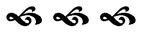
2장 - 공포와 꿈으로 위태롭게 흔들리는 이 전구
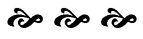
‘뇌 구조’란 무엇인가?
사람들은 내 연구가 인간 사고의 숨겨진 기계를 찾아가는 탐구라는 말을 들으면 종종 내게 이렇게 묻곤 한다. “아, 그럼 뇌를 연구하시는 거군요?”
내 안의 한 부분은 이렇게 대답하고 싶어 한다. “아뇨, 아뇨. 저는 생각에 대해 생각합니다. 개념과 단어가 어떻게 관련되는지, ‘프랑스어로 생각하기’가 무엇인지, 말실수와 다른 종류의 오류 기저에는 무엇이 있는지, 어떤 사건이 어떻게 아무런 노력 없이도 다른 사건을 떠올리게 하는지, 우리가 쓰인 글자와 단어를 어떻게 인식하는지, 대충 웅얼거리며 속어로 내뱉는 말을 어떻게 알아듣는지, 어떻게 그토록 밋밋해 보이지만 한 번도 만들어본 적 없는 수많은 유추를 툭툭 던지고 가끔은 번쩍이는 독창적인 유추를 떠올리는지, 우리의 각 개념이 평생에 걸쳐 어떻게 미묘함과 유동성을 키워가는지 등을 생각하죠. 저는 뇌에 대해서는 조금도 생각하지 않아요. 축축하고 지저분하며 뒤엉킨 뇌의 그물망은 신경생리학자들에게 맡겨둡니다.”
하지만 내 안의 또 다른 부분은 이렇게 대답하고 싶어 한다. “당연히 저는 인간의 뇌에 대해 생각하죠. 정의상 저는 뇌에 대해 생각하는 겁니다. 인간의 뇌야말로 바로 인간의 사고를 수행하는 기계이니까요.”
이 우스꽝스러운 모순 때문에 나는 스스로에게 묻지 않을 수 없었다. “내가 말하는 ‘뇌 연구’, 그리고 다른 사람들이 말하는 ‘뇌 연구’란 무엇인가?” 그리고 이 질문은 자연스럽게 다음 질문으로 이어진다. “누군가가 원리적으로 연구할 수 있는 뇌 속의 구조들은 무엇인가?” 대부분의 신경과학자들은 이런 질문을 받으면 (대략 물리적 크기 순서로 나열하여) 적어도 다음 항목 중 일부를 포함한 목록을 만들 것이다.
아미노산
신경전달물질
DNA와 RNA
시냅스
수상돌기
뉴런
헤브 신경 세포 집합체(Hebbian neural assemblies)
시각 피질의 기둥(columns)
시각 피질 19영역
전체 시각 피질
좌반구
이것들이 모두 타당하고 중요한 신경학적 연구 대상이긴 하지만, 내게 이 목록은 제한적인 관점을 드러낸다. 뇌를 연구하는 것이 이처럼 물리적 실체를 연구하는 데 국한된다고 말하는 것은, 문학 비평이 종이와 제본, 잉크와 그 화학적 성질, 페이지 크기와 여백 너비, 서체와 문단 길이 등에 초점을 맞춰야 한다고 말하는 것과 같다. 그렇다면 문학의 핵심인 고차원적 추상들 — 줄거리와 등장인물, 문체와 시점, 아이러니와 유머, 암시와 은유, 공감과 거리두기 등등 — 은 어떻게 되는가? 문학 비평가들의 주제 목록에서 이 결정적인 본질들은 어디로 사라졌는가?
내 요점은 간단하다. 문학 연구에서든 뇌 연구에서든 추상이 핵심이다. 따라서 나는 ‘뇌 연구자들’이 똑같이 관심을 기울여야 할 추상들의 목록을 여기에 제안한다.
‘개’라는 개념
‘개’와 ‘짖다’라는 개념 사이의 연상 연결
객체 파일(object files, 앤 트리스먼(Anne Treisman)이 제안한 개념)
프레임(frames, 마빈 민스키(Marvin Minsky)가 제안한 개념)
기억 조직 패킷(memory organization packets, 로저 섕크(Roger Schank)가 제안한 개념)
장기 기억과 단기 기억
일화 기억과 선율 기억
유추적 다리(analogical bridges, 우리 연구팀이 제안한 개념)
정신 공간(mental spaces, 질 포코니에(Gilles Fauconnier)가 제안한 개념)
밈(memes, 리처드 도킨스(Richard Dawkins)가 제안한 개념)
자아, 이드, 초자아(지그문트 프로이트가 제안한 개념)
모국어의 문법
유머 감각
‘나’
나는 이 목록을 얼마든지 더 늘릴 수 있다. 이 목록은 그저 시사하는 바를 보여줄 뿐이며, ‘뇌 구조’라는 용어에 이런 일반적인 종류의 항목들이 포함되어야 한다는 내 논지를 전달하기 위한 것이다. 물론 위에 나열된 이론적 개념들 중 일부는 지속적인 타당성을 갖기 어려울 것이고, 다른 일부는 다양한 연구를 통해 점점 더 확증될 것이다. 부모에서 자손으로 형질을 전달할 수 있게 해주는 보이지 않는 실체로서의 ‘유전자’ 개념이 그러한 형질의 실제 운반체로서의 물리적 객체가 확인되기 훨씬 전부터 제안되고 과학적으로 연구되었듯이, 그리고 모든 물리적 객체의 구성 요소로서의 ‘원자’ 개념이 개별 원자가 분리되고 내부가 탐구되기 훨씬 전부터 제안되고 과학적으로 연구되었듯이, 위에 나열된 개념들 역시 뇌 연구자들이 인간의 뇌 속에서 물리적으로 위치를 찾아내려 시도할 만한 보이지 않는 구조들로 정당하게 간주될 수 있다.
‘인간의 뇌’(과연 딱 하나만 있을까?) 속에서 그러한 구조의 정확한 물리적 구현을 찾아낸다면 놀라운 도약이 될 것이라고 확신하지만, 그럼에도 나는 왜 물리적 매핑이 신경학적 탐구의 알파이자 오메가가 되어야 하는지 모르겠다. 물리적 확인 이전이든 이후든, 위에 나열된 종류의 실체들 사이에 다양한 종류의 정밀한 관계를 확립하는 것 역시 똑같이 뇌 연구로 간주될 수 있지 않겠는가? 유전자와 원자가 물리적 객체로 확인되고 그 내부 구조가 탐구되기 전 수십 년 동안 유전자와 원자 연구가 진행된 방식이 바로 그러했다.
심장과 뇌 사이의 간단한 유추
나는 뇌 연구와 심장 연구 사이의 간단하지만 결정적인 유추 하나를 제시하고자 한다. 오늘날 우리 모두는 신체와 그 기관들이 세포로 이루어져 있다는 사실을 당연하게 여긴다. 따라서 심장 역시 수십억 개의 세포로 이루어져 있다. 하지만 그 미시적 규모에서 심장에 집중하는 것은 비록 분명 중요하긴 하지만, 큰 그림을 놓칠 위험이 있다. 큰 그림이란 바로 심장은 펌프다라는 것이다. 이와 유사하게, 뇌는 생각하는 기계다. 그리고 우리가 생각이란 무엇인지 이해하는 데 관심이 있다면, 숲을 보지 못한 채 나무(혹은 나뭇잎!)에 초점을 맞추고 싶지는 않을 것이다. 큰 그림은 구성 요소들을 점점 더 세밀하게 분석할 때가 아니라, 뇌의 대규모 아키텍처에 초점을 맞출 때 비로소 명확해질 것이다.
약 10억 년 전 어느 시점에, 자연선택은 늘 그렇듯 무작위적인 행보를 걷다가 리드미컬하게 수축하는 세포들과 마주쳤다. 그리고 그런 세포를 가진 작은 생명체들은 세포의 수축이 몸 안 여기저기로 유용한 물질을 보내는 데 도움이 되었기 때문에 잘 살아남았다. 그리하여 우연히 펌프가 탄생했고, 그러한 모든 원시 펌프들의 추상적 설계 공간에서 자연은 더 효율적인 설계를 선호했다. 그 펌프들을 구성하는 맥동 세포들의 내부 작동 원리는 본질적으로 이미 찾아진 상태였고, 따라서 세포의 내부 구조는 더 이상 선택의 대상이 되는 결정적인 변수가 아니게 되었다. 그것은 완전히 새로운 게임이었고, 그 속에서 서로 경쟁하는 심장의 아키텍처들이 자연선택의 주요 경쟁자가 되었으며, 그 새로운 수준에서 훨씬 더 복잡한 패턴들이 빠르게 진화했다.
이런 이유로 심장 외과 의사들은 심장 세포의 세부 사항에 대해 생각하지 않고 대신 심장의 거대한 건축학적 구조에 집중한다. 마치 자동차 구매자들이 양성자와 중성자의 물리학이나 합금의 화학에 대해 생각하지 않고 대신 편안함, 안전성, 연비, 조작성, 섹시함 등과 같은 고차원적 추상에 집중하는 것과 같다. 따라서 심장-뇌 유추를 마무리하자면, 핵심은 아주 단순하다. 만약 우리가 개념, 아이디어, 원형, 고정관념, 유추, 추상화, 기억, 망각, 혼동, 비교, 창의성, 의식, 동정심, 공감 등과 같은 엄청나게 추상적인 현상들을 설명하고자 한다면, 뇌에서 미시적 수준은 잘못된 수준일 수 있으며 — 아니, 거의 확실히 잘못된 수준이다.
화장지가 생각할 수 있을까?
이 유추는 이토록 단순하지만, 안타깝게도 그 핵심은 뇌와 마음의 관계에 관심이 있는 많은 철학자, 뇌 연구자, 심리학자, 그리고 다른 이들의 머리 위를 그냥 스쳐 지나가는 듯하다. 예를 들어 존 설(John Searle)의 경우를 생각해 보자. 그는 인공지능 연구와 사고의 계산 모델에 경멸을 퍼부으며, 특히 튜링 기계를 조롱하는 데 큰 즐거움을 느껴온 철학자다.
잠시 곁길로 새자면… 튜링 기계는 극도로 단순한 이상화된 컴퓨터로서, 그 메모리는 이른바 ‘칸(cell)’들로 이루어진 무한히 긴(즉, 임의로 확장 가능한) ‘테이프’로 구성된다. 각 칸은 비어 있거나 안에 점이 하나 찍혀 있는 사각형일 뿐이다. 튜링 기계에는 한 번에 어느 한 사각형을 들여다보는 움직이는 ‘헤드(head)’가 달려 있어, 그 칸을 ‘읽고’(즉, 점이 있는지 없는지 판별하고) 그 위에 ‘쓸’(즉, 점을 찍거나 지울) 수 있다. 마지막으로 튜링 기계의 ‘헤드’ 안에는, 어떤 조건에서 한 칸 왼쪽이나 오른쪽으로 이동할지, 혹은 새 점을 찍거나 기존 점을 지울지를 헤드에게 지시하는 고정된 명령어 목록이 저장되어 있다. 모든 튜링 기계의 기본 작동은 지극히 사소하지만, 어떤 종류의 계산이든 적절한 튜링 기계로 수행할 수 있다(숫자는 인접한 점으로 채워진 칸들로 표현되므로, 양옆이 빈칸으로 둘러싸인 “•••”는 정수 3을 나타낸다).
다시 철학자 존 설로 돌아가 보자. 그는 튜링 기계가 추상적인 기계이므로 원리적으로 어떤 재료로든 만들 수 있다는 사실에서 많은 이득을 챙겼다. 내 생각에는 초등학교 3학년생이나 속을 만하지만 불행히도 그의 전문 동료들 대다수를 속여 넘기는 수법으로, 그는 사고가 화장지와 조약돌(테이프는 무한히 긴 화장지 두루마리가 되고, 종이 한 칸 위의 조약돌이 칸 속의 점 역할을 한다), 혹은 팅커토이(Tinkertoys), 혹은 서로 부딪히는 거대한 맥주 캔과 탁구공의 집합체 같은 터무니없는 물리적 기판 위에서 구현될 수 있다는 생각을 가차 없이 비웃는다.
생생한 글쓰기 속에서 설은 이 유머러스한 이미지들을 가볍고 즉흥적으로 던지는 것처럼 보이지만, 실제로는 독자들에게 깊은 편견을 치밀하고 계획적으로 심어주거나, 혹은 이미 존재하는 편견을 교묘히 이용하고 있을 뿐이다. 사실 “생각하는 화장지”(두루마리가 아무리 길고 조약돌을 덤으로 던져 넣는다 해도)나 “생각하는 맥주 캔”, “생각하는 팅커토이” 따위를 제안하는 것은 터무니없게 들리긴 한다. 설이 조롱거리로 내세우는 가볍고 즉흥적인 듯한 이미지들은 실제로는 독자들이 더 깊이 생각하지도 않고 그런 개념들을 비웃도록 교묘하게 계산된 것이며, 안타깝게도 종종 효과를 발휘한다.
끔찍하게 목마른 맥주 캔
실제로 설은 자신이 이처럼 우스꽝스럽게 묘사한 시스템들을 조롱하는 데 아주 멀리까지 나아간다. 예를 들어, 상호작용하는 거대한 맥주 캔 시스템이 ‘경험을 가질 수 있다’(의식을 뜻하는 또 다른 용어)는 생각을 비웃기 위해, 그는 문제의 경험으로 갈증을 선택한다. 그런 다음 모두에게 명백한 무언가를 무심코 언급하는 듯한 태도로, 그런 시스템 안에는 “나는 목마르다”라는 영어 단어가 적힌 특정한 캔 하나가 ‘튀어 오르는’(그가 이 맥주 캔들이 어떻게 상호작용하는지에 대한 설명은 편리하게도 쏙 빼놓았으니, 그게 무슨 뜻인지는 알 수 없지만) 일이 벌어져야 할 것이라는 생각을 슬쩍 끼워 넣는다. 이 단 하나의 맥주 캔(거대한 시스템의 미시적 요소로서, 가령 뇌 속의 뉴런 하나나 시냅스 하나에 비유할 수 있다)이 튀어 오르는 것이 곧 시스템의 갈증 경험을 구성한다는 것이다. 사실 설은 아무도 거기에 일말의 그럴듯함조차 부여하지 않을 것임을 알기에 이 우스꽝스러운 이미지를 아주 의도적으로 골랐다. 금속 맥주 캔이 도대체 어떻게 갈증을 경험할 수 있겠는가? 그리고 그것이 ‘튀어 오르는 것’이 어떻게 갈증을 구성한단 말인가? 그리고 맥주 캔에 적힌 “나는 목마르다”라는 글자를 진흙투성이 트럭에 휘갈겨 쓴 “세차해 주세요”라는 글자보다 더 진지하게 받아들여야 할 이유가 어디 있는가?
슬픈 진실은, 이 이미지가 마음속에서 인지와 감각이 어떻게 일어나는지 이해하려는 컴퓨터 기반 연구를 가장 터무니없이 왜곡한 것이라는 점이다. 이 주장은 여러 가지 방식으로 비판할 수 있지만, 여기서 내가 초점을 맞추고 싶은 핵심적인 속임수는 설이 이 맥주 캔 뇌 모델에서 주장되는 경험이 단 하나의 맥주 캔에 국한된다고 무심하게 단정 짓고, 그 대신 맥주 캔들의 배치가 이루는 더 복잡하고, 더 전역적이며, 고차원적인 속성에서 시스템의 갈증 경험을 찾을 수도 있다는 암시는 교묘히 피한다는 점이다.
사고나 감각의 맥주 캔 모델이 어떻게 구현될 수 있을지 진지하게 생각해 보면, 그 ‘생각’과 ‘느낌’은 아무리 피상적일지라도 단일 맥주 캔과 연관된 국소적 현상이 아닐 것이다. 그것은 수백만, 수십억, 혹은 수조 개의 맥주 캔이 관여하는 거대한 과정일 것이며, ‘갈증을 경험하는’ 상태는 튀어 오른 단 하나의 맥주 캔 옆면에 미리 칠해진 세 개의 영어 단어에 깃들어 있는 것이 아니라, 엄청난 수의 맥주 캔이 관여하는 매우 정교한 패턴 속에 깃들어 있을 것이다. 요컨대 설은 그저 자신이 만들어낸 사소한 표적을 조롱하고 있을 뿐이다. 정신 과정을 모델링하는 진지한 연구자라면 그 누구도 감각이나 개념 하나당 외로운 맥주 캔(혹은 뉴런) 하나를 대응시키는 따위의 생각을 제안하지 않을 것이므로, 설의 비열한 공격은 과녁을 한참 빗나간다.
또한 설의 ‘갈증 경험자로서의 단일 맥주 캔’ 이미지는 신경학에서 오랫동안 신용을 잃은 아이디어, 즉 ‘할머니 세포(grandmother cell)’의 왜곡된 재판일 뿐이라는 점도 주목할 만하다. 이는 뇌 속의 특별한 세포 하나가 활성화될 때, 그리고 오직 그때만 여러분이 할머니를 시각적으로 인식하게 되며, 그 세포가 뇌 속에서 할머니를 물리적으로 표상한다는 생각이다. 할머니 세포와 갈증 캔 사이에 무슨 의미 있는 차이가 있는가? 전혀 없다. 그럼에도 존 설은 귀에 쏙 들어오는 이미지를 만들어내는 재주가 있어서, 그의 그럴듯해 보이는 헛소리는 수년에 걸쳐 많은 전문 동료와 대학원생, 일반 대중에게 큰 영향을 미쳐왔다.
여기서 내 목표는 설을 세세하게 공격하는 것이 아니다(그렇게 하려면 지루한 장 하나를 통째로 써야 할 것이다). 내 목표는 뇌의 가장 원초적인 물리적 구성 요소의 수준이 동시에 뇌의 가장 복잡하고 파악하기 힘든 정신적 속성들이 거주하는 수준이어야 한다는 암묵적 가정이 얼마나 널리 퍼져 있는지 지적하는 것이다. 광물의 여러 측면(밀도, 색깔, 자성 유무, 광 반사율, 열 및 전기 전도성, 탄성, 열용량, 소리가 퍼지는 속도 등등)이 수십억 개의 원자 구성 요소들이 상호작용하여 고차원적 패턴을 형성하는 방식에서 비롯되는 속성들이듯, 뇌의 정신적 속성들 역시 단일한 미세 구성 요소의 수준이 아니라 그 구성 요소들이 관여하는 거대한 추상적 패턴의 수준에 깃들어 있다.
지각, 개념, 사고, 의식, ‘나’, 자유의지 등과 같은 파악하기 힘든 정신 현상을 분석하는 데 조금이라도 진전을 이루려면 뇌를 다층적 시스템으로 다루는 것이 필수적이다. 개념이나 감각, 기억 등을 단 하나의 뉴런으로 국소화하려는 시도는 전혀 말이 되지 않는다. 대뇌 피질의 기둥(이것은 약 40개의 뉴런을 포함하는 작은 구조로, 단일 뉴런보다 더 복잡한 집단행동을 보인다)처럼 더 높은 수준의 구조로 국소화하는 것조차, 유추하기나 오래전 일화가 자발적으로 떠오르는 것과 같은 사고의 측면에 대해서는 말이 되지 않는다.
뇌 속의 층위와 힘
언젠가 나는 《분자 신들: 분자가 우리의 행동을 결정하는 방식(Molecular Gods: How Molecules Determine Our Behavior)》이라는 제목의 책을 본 적이 있다. 그 책을 사지는 않았지만, 그 제목은 내 뇌 속에 많은 생각을 불러일으켰다. (뇌 속의 생각이란 무엇인가? 생각은 정말 뇌 안에 있는가? 생각은 분자로 이루어져 있는가?) 실제로 내가 곧 그 책을 서가에 도로 꽂아 둔 사실 자체가 그 제목이 내 뇌 속에서 촉발한 생각들의 완벽한 예시다. 그날 내 행동(예: 책에 대한 관심, 제목에 대한 숙고, 사지 않기로 한 결정)을 정확히 결정한 것은 무엇이었을까? 내가 책을 다시 꽂게 만든 것은 내 뇌 속의 어떤 분자들이었을까? 아니면 내 뇌 속의 어떤 아이디어들이었을까? 내가 그 책을 처음 훑어보고 나서 도로 내려놓았을 때 내 머릿속에서 무슨 일이 일어나고 있었는지 말하는 적절한 방식은 무엇일까?
당시 나는 뇌에 관한 여러 저자의 책을 읽고 있었는데, 그중 한 권에서 신경학자 로저 스페리(Roger Sperry)가 쓴 장을 접하게 되었다. 그 글은 특별한 열정으로 쓰였을 뿐만 아니라, 내 직관과 강하게 공명하는 관점을 표현하고 있었다. 나는 특히 도발적이라고 생각하는 스페리의 에세이 〈마음, 뇌, 그리고 인본주의적 가치(Mind, Brain, and Humanist Values)〉에서 짧은 구절을 여기에 인용하고 싶다.
내 자신의 가상 뇌 모델에서, 의식적 자각은 매우 실재하는 인과적 행위자로서 표상되며, 뇌 사건들의 인과적 연쇄와 통제 사슬에서 중요한 자리를 차지한다. 거기서 그것은 능동적이고 작동하는 힘으로 나타난다….
아주 간단히 말하자면, 그것은 두개골을 차지하고 있는 인과적 힘들의 집단 속에서 누가 누구를 이리저리 밀어붙이는가 하는 문제로 귀결된다. 다시 말해, 두개골 내 통제 행위자들 사이의 서열 위계를 바로잡는 문제다. 두개골 안에는 온갖 다양한 인과적 힘들의 세계가 존재한다. 게다가 우리가 아는 그 어떤 0.5세제곱피트의 우주에서도 볼 수 없는, 힘 안의 힘 안의 힘이 존재한다….
긴 이야기를 짧게 하자면, 뇌 속의 명령 사슬을 따라 계속 위로 올라가다 보면, 맨 꼭대기에서 정신 상태나 심리적 활동과 상관관계가 있는 거대한 대뇌 흥분 패턴들의 전반적인 조직화 힘과 역동적 속성들을 발견하게 된다…. 뇌 속의 이 명령 체계 정점 부근에서…. 우리는 아이디어를 발견한다.
침팬지보다 우월한 인간에게는 아이디어와 이상이 있다. 여기서 제안하는 뇌 모델에서, 아이디어나 이상의 인과적 효력은 분자나 세포, 또는 신경 자극의 인과적 효력만큼이나 실재하게 된다. 아이디어는 아이디어를 일으키고 새로운 아이디어를 진화시키는 데 도움을 준다. 그것들은 같은 뇌 안에서, 이웃한 뇌 안에서, 그리고 전 지구적 소통 덕분에 멀리 떨어진 이국의 뇌 안에서 서로 및 다른 정신적 힘들과 상호작용한다. 또한 외부 환경과도 상호작용하여, 살아 있는 세포의 출현을 포함해 지금까지 진화의 무대에 등장한 그 어떤 것보다 훨씬 뛰어난 폭발적인 진화의 도약을 전체적으로 만들어낸다.
두개골 안에서 누가 누구를 밀어붙이는가?
그렇다, 독자여, 나는 여러분에게 묻는다. 여러분의 뇌라는 뒤엉킨 거대 신경절 안에서 누가 누구를 이리저리 밀어붙이는가? 그리고 나의 “공포와 꿈으로 위태롭게 흔들리는 이 전구” 안에서 누가 누구를 이리저리 밀어붙이는가? (이 장의 제목이기도 한, 따옴표 안의 이 놀랍도록 감동적인 구절은 미국 시인 러셀 에드슨(Russell Edson)의 시 〈바닥(The Floor)〉에서 따온 것이다.)
스페리의 서열 질문은 우리가 우리 자신에 대해 — 더 정확히는 우리의 자아에 대해 — 알아야 할 핵심을 정확히 짚어낸다. 소위 ‘나’라고 자칭하는 무언가가 ‘결정하기’라는 것을 하고, 그 결과 관절이 달린 팔이 유려하게 움직여 책이 불과 몇 초 전 자신이 있던 자리로 되돌아갔을 때, 그 훌륭한 뇌 속에서는 실제로 무슨 일이 일어나고 있었던 것일까? 정말로 ‘나’라고 부를 만한 무언가가 다양한 물리적 뇌 구조들을 ‘이리저리 밀어붙여서’, 신경 섬유를 통해 세심하게 조율된 특정 메시지들을 보내고 그 결과 어깨, 팔꿈치, 손목, 손가락이 특정한 복잡한 패턴으로 움직여 책을 원래 자리에 똑바로 세워 놓은 것일까? 아니면 그저 시인 에드슨이 ‘위태롭게 흔들리는 전구’라 부른 시공간 연속체의 그 국소 영역에서 수많은 미시적 물리 과정(전자, 광자, 글루온, 쿼크 등이 관여하는 양자역학적 충돌)이 일어나고 있었을 뿐일까?
공포와 꿈, 희망과 슬픔, 아이디어와 믿음, 관심과 의심, 열정과 시기, 기억과 야망, 향수의 발작과 공감의 홍수, 죄책감의 섬광과 천재성의 번뜩임이 물리적 객체들의 세계에서 어떤 역할을 하는가? 그러한 순수한 추상들이 인과적 힘을 가지는가? 그것들이 육중한 사물들을 이리저리 밀어붙일 수 있는가, 아니면 그저 무력한 허구일 뿐인가? 흐릿하고 만질 수 없는 ‘나’가 전자나 근육(또는 책) 같은 구체적인 물리적 객체들에게 무엇을 하라고 지시할 수 있는가?
종교적 믿음이 전쟁을 일으킨 적이 있는가, 아니면 모든 전쟁은 그저 엄청나게 축소해서 말하자면 수백경 개의 극미한 입자들이 물리학의 법칙에 따라 상호작용한 결과로 일어났을 뿐인가? 불이 연기를 일으키는가? 자동차가 스모그를 일으키는가? 단조로운 소리가 지루함을 일으키는가? 농담이 웃음을 일으키는가? 미소가 황홀경을 일으키는가? 사랑이 결혼을 일으키는가? 아니면 결국에는 그저 수많은 입자가 물리학의 법칙에 따라 서로를 밀어붙이고 있을 뿐이어서, 결국 자아나 영혼, 공포나 꿈, 사랑이나 결혼, 미소나 황홀경, 농담이나 웃음, 단조로움이나 지루함, 자동차나 스모그, 심지어 연기나 불이 설 자리조차 남지 않는 것인가?
열역학과 통계역학
나는 물리학자인 아버지 밑에서 자랐기 때문에, 우주에서 일어나는 마지막 하나까지의 모든 일의 기저에 물리학이 놓여 있다고 보는 것이 자연스러웠다. 아주 어린 소년 시절부터도 나는 대중 과학 서적을 통해 화학 반응이 상호작용하는 원자들의 물리학의 결과라는 것을 알았고, 좀 더 세련되어진 뒤에는 분자생물학을 복잡한 분자들에 작용하는 물리학의 법칙의 결과로 보았다. 요컨대 나는 물리학자들이 확인한 네 가지 기본 힘(중력, 전자기력, 그리고 두 가지 유형의 핵력 — 강력과 약력) 외에 세상에 ‘추가적인’ 힘이 들어설 여지가 없다고 보며 자랐다.
그렇다면 나이가 들면서 나는 그 바위처럼 단단한 믿음을, 진화가 심장을 진화시켰다는 생각, 종교적 교리가 전쟁을 일으켰다는 생각, 향수가 쇼팽에게 특정 연습곡을 쓰도록 영감을 주었다는 생각, 극심한 직업적 질투가 수많은 악의적인 서평을 쓰게 만들었다는 생각 등등의 내 다른 확신들과 어떻게 조화시켰을까? 이 쉽게 파악할 수 있는 거시적 인과력들은 우주에서 일어나는 모든 사건을 일으킨다고 내가 확신했던 물리학의 형언할 수 없는 네 가지 힘과는 근본적으로 달라 보인다.
해답은 단순하다. 나는 이 ‘거시적 힘’들을 기본 물리적 힘들이 만들어낸 복잡한 패턴을 묘사하는 방식일 뿐이라고 생각했다. 마치 물리학자들이 마찰, 점성, 반투명성, 압력, 온도 같은 거시적 현상들이 시공간을 질주하며 서로 충돌하는 천문학적인 수의 보이지 않는 미시적 구성 요소들의 통계에 의해 결정되는 고도로 예측 가능한 규칙성으로 이해될 수 있으며, 그 모든 것은 오직 물리학의 네 가지 기본 힘에 의해 좌우된다는 사실을 깨달은 것과 같다.
또한 나는 이러한 묘사 수준의 전환이 살아 있는 존재들에게 매우 소중한 무언가, 즉 이해 가능성(comprehensibility)을 안겨준다는 것도 깨달았다. 아보가드로 수만큼의 방정식이 들어 있는 거대한 문서를 작성하여(그런 헤라클레스 같은 위업이 가능하다고 가정할 때) 기체의 행동을 묘사하는 것은 누구에게도 아무런 이해를 주지 못할 것이다. 하지만 엄청난 양의 정보를 버리고 통계적 요약을 만드는 것은 이해 가능성에 큰 도움이 될 수 있다. 내가 잎사귀 하나하나의 정확한 모양과 방향, 색깔을 지정하지 않고도 “낙엽 더미”라고 말하는 데 편안함을 느끼듯, 기체에 대해서도 다른 것은 아무것도 말하지 않고 오직 온도, 압력, 부피만 지정하여 말하는 데 편안함을 느낀다.
물론 이 모든 것은 모든 물리학자와 대부분의 철학자에게는 아주 낡은 상식이며, 열역학은 통계역학으로 설명된다는 독창성 없는 격언으로 요약할 수 있다. 하지만 이 아이디어를 다음과 같이 뒤집어 보면 조금 더 명확해질지도 모른다. 열역학 수준에서 이야기함으로써 통계역학을 우회할 수 있다.
인식이 일상적인 거시적 객체들의 세계로 제한된 동물로서의 우리 존재는, 아주 당연하게도 미시적 수준의 실체와 과정에 대한 어떤 언급도 없이 기능하도록 우리를 강제한다. 불과 약 100년 전까지만 해도 아무도 원자에 대해 조금도 알지 못했지만, 사람들은 완벽하게 잘 살아갔다. 페르디난드 마젤란은 세계 일주를 했고, 윌리엄 셰익스피어는 희곡을 몇 편 썼으며, J. S. 바흐는 칸타타를 몇 곡 작곡했고, 잔 다르크는 화형당했다. 모두 각자의 좋은(혹은 나쁜) 이유 때문이었으며, 그들의 관점에서 볼 때 그중 어느 것도 DNA, RNA, 단백질이나 탄소, 산소, 수소, 질소, 또는 광자, 전자, 양성자, 중성자, 하물며 쿼크, 글루온, W와 Z 보손, 중력자, 힉스 입자와는 눈곱만큼도 관련이 없었다.
사고역학과 통계정신학
따라서 목적과 맥락에 따라 서로 다른 묘사 수준이 서로 다른 유용성을 갖는다는 것은 누구에게도 새로운 소식이 아니다. 이에 따라 나는 사고와 뇌의 세계에 적용되는 이 단순한 진리에 대한 내 견해를 다음과 같이 요약했다. 사고역학(thinkodynamics)은 통계정신학(statistical mentalics)으로 설명된다. 그리고 그 뒤집힌 버전도 있다. 사고역학 수준에서 이야기함으로써 통계정신학을 우회할 수 있다.
‘사고역학’과 ‘통계정신학’이라는 이 두 용어는 무엇을 뜻하는가? 아주 간단하다. 사고역학은 열역학과 유사하다. 그것은 뇌 속의 대규모 구조와 패턴을 다루며, 신경 발화 같은 미시적 사건은 언급하지 않는다. 사고역학은 심리학자들이 연구하는 대상이다. 사람들이 어떻게 선택을 내리고, 오류를 저지르고, 패턴을 지각하고, 새로운 연상을 경험하는지 등등 말이다.
반면, ‘정신학(mentalics)’이란 신경학자들이 전통적으로 연구하는 소규모 현상을 뜻한다. 신경전달물질이 어떻게 시냅스를 건너고, 세포들이 어떻게 서로 연결되며, 세포 집합체들이 어떻게 동시성을 가지고 반향하는지 등등이다. 그리고 ‘통계정신학’이란 이 아주 작은 실체들의 평균화된 집단행동, 즉 그 안에 있는 작은 윙윙거림이 아니라 거대한 무리 전체의 행동을 뜻한다.
하지만 앞서 인용한 구절에서 신경학자 스페리가 아주 분명히 밝혔듯이, 뇌에는 기체에서처럼 기본 구성 요소에서 전체로 단번에 뛰어오르는 자연스러운 도약이 딱 하나만 있는 것이 아니다. 오히려 정신학에서 사고역학으로 올라가는 길에는 많은 중간 정거장이 있으며, 이는 인지과학 교수 한 명이 왜 어느 날 뇌에 관한 책 한 권을 다시 서가에 꽂기로 결정했는지, 혹은 왜 어느 날 파리 한 마리를 때려잡지 않고 참았는지, 혹은 왜 엄숙한 의식 도중에 갑자기 킥킥거리며 웃음을 터뜨렸는지, 혹은 소중한 동료가 떠나는 것을 아쉬워하며 왜 “그녀의 빈자리는 채우기 힘든 신발이 될 거예요!(She’ll be hard shoes to fill! — ‘채우기 힘든 자리(hard shoes to fill)’와 ‘빈자리를 채우다’가 뒤섞인 말실수)”라고 외쳤는지에 대한 바닥 수준, 즉 신경 수준의 설명을 우리가 보거나 심지어 상상하기조차 특히 어렵다는 것을 뜻한다.
일상생활의 압박은 우리가 사건들을 직접 지각하는 수준에서 이야기하도록 요구하고 강제한다. 그 수준에서의 접근이 바로 우리의 감각 기관과 언어, 문화가 우리에게 제공하는 것이다. 아주 어린 시절부터 우리는 ‘우유’, ‘손가락’, ‘벽’, ‘모기’, ‘침’, ‘가려움’, ‘때려잡기’ 같은 개념들을 은쟁반에 받쳐 선물로 받는다. 우리는 ‘주둥이’와 ‘모낭’ 같은 미시적 개념은 물론이고, 하물며 ‘세포질’, ‘리보솜’, ‘펩타이드 결합’, ‘탄소 원자’ 같은 개념이 아니라 바로 그런 개념들로 세상을 지각한다. 물론 우리는 나중에 그런 개념들을 습득할 수 있고, 우리 중 일부는 그것들을 깊이 통달하기도 하지만, 그것들이 우리가 자라면서 받은 은쟁반 위의 개념들을 결코 대체할 수는 없다. 요컨대 우리는 우리 자신의 거시성의 희생양이며, 우리가 목격하고 실재한다고 지각하는 사건들을 묘사하기 위해 일상적인 단어를 사용하는 덫에서 벗어날 수 없다.
바로 이 때문에, 물리학자들은 어떤 정보도 버려지지 않는다는 의미에서 그것이 유일한 ‘진정한’ 설명 수준이라고 주장할지라도, 우리가 전쟁을 상호작용하는 기본 입자들의 거대한 패턴으로 상상하고 그 방아쇠를 비슷한 용어로 생각하기보다는 종교적 또는 경제적 이유로 전쟁이 촉발되었다고 말하는 것이 훨씬 더 자연스러운 것이다. 하지만 그토록 경이로운 정확성을 지니는 것은 안타깝게도(아니, 오히려 “하느님 감사합니다!”라고 해야 할지도) 우리의 운명이 아니다.
우리 필멸의 존재들은 정보 손실이 없는 그 수준에서 말하지 못하도록 운명 지어져 있다. 우리는 필연적으로 단순화하며, 사실 엄청나게 단순화한다. 하지만 그 희생은 또한 우리의 영광이기도 하다. 과감한 단순화는 우리가 상황을 뼈대만 남기고 추려내고, 추상적 본질을 발견하고, 중요한 핵심을 짚어내고, 놀라울 정도로 높은 수준에서 현상을 이해하며, 이 세상에서 안정적으로 살아남고, 문학과 예술, 음악, 과학을 만들어낼 수 있게 해주는 원동력이다.
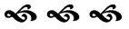
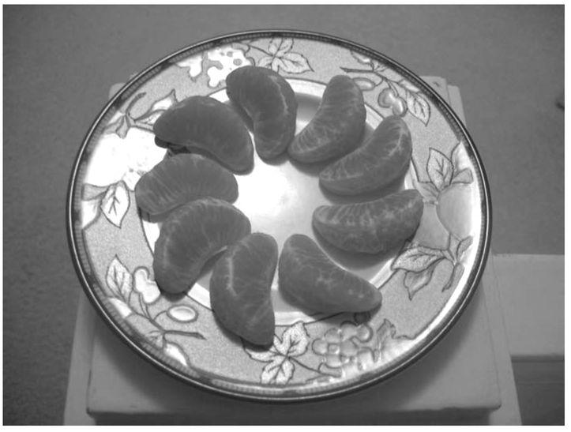
# 3장 - 패턴의 인과적 힘
제1원동자
이 책의 나머지 부분은 생각하는 존재를 설명하는 서로 다른 층위들 사이의 상호관계를 명확히 이해하는 데 달려 있으므로, 나는 이 파악하기 어려운 주제에 대한 직관을 기르는 데 큰 도움을 주었던 몇 가지 구체적인 은유를 여기서 소개하고자 한다.
첫 번째 예는 우리에게 친숙한 도미노 쓰러뜨리기 연쇄이다. 다만, 나는 이 표준적인 이미지를 조금 변형하여 각 도미노가 영리한 방식(세부 사항은 중요하지 않다)으로 스프링 장치가 되어 있어서, 이웃 도미노에 부딪혀 쓰러질 때마다 짧은 “불응기”가 지난 뒤 다시 수직 상태로 벌떡 일어나 또다시 쓰러질 준비를 갖춘다고 설정하겠다. 이러한 시스템을 이용하면, 갈라지거나 합쳐질 수 있는 도미노 줄을 따라 신호를 보내는 방식으로 작동하는 기계적 컴퓨터를 구현할 수 있다. 따라서 신호는 루프를 돌며 전파되거나, 함께 다른 신호를 촉발하는 등의 일을 할 수 있다. 물론 상대적인 타이밍이 핵심이겠지만, 거듭 말하듯 세부 사항은 중요하지 않다. 기본 아이디어는 정밀하게 타이밍이 맞춰진 도미노 연쇄의 네트워크가 특정 계산—예를 들어 주어진 입력값이 소수(prime number)인지 아닌지 판별하는 것—을 수행하는 컴퓨터 프로그램에 해당한다는 것이다. (계산을 위한 기이한 기질(substrate)을 그토록 좋아하는 존 설(John Searle)이라면 이 “도미노 체이니움(domino chainium)” 사고 실험을 좋아할 것이다!)
이제 우리가 관심 있는 임의의 양의 정수—가령 641—를 택해 네트워크의 “예약된” 구간에 정확히 그 개수만큼의 도미노를 일렬로 세움으로써 체이니움에 특정 수치 “입력”을 줄 수 있다고 상상해 보자. 체이니움의 첫 번째 도미노를 쓰러뜨리면 루브 골드버그 장치 같은 일련의 사건이 벌어져 도미노가 차례로 쓰러지고, 시작 직후 입력 구간을 구성하는 641개의 도미노도 모두 쓰러진다. 그 결과 다양한 루프가 촉발되는데, 어떤 루프는 입력 숫자가 2로 나누어떨어지는지 검사하고, 다른 루프는 3으로 나누어떨어지는지 검사하는 식이다. 만약 약수가 하나라도 발견되면 특정 구간—이를 “약수 구간”이라 부르자—으로 신호가 전송되고, 그 구간이 쓰러지는 것을 보면 우리는 입력 숫자가 약수를 가지므로 소수가 아님을 알게 된다. 반대로 입력값에 약수가 없다면 약수 구간은 결코 촉발되지 않을 것이고, 우리는 입력값이 소수임을 알게 된다.
도미노 체이니움에 641이 입력으로 주어졌을 때 옆에 관찰자가 서 있다고 가정해 보자. 체이니움이 무엇을 위해 만들어졌는지 듣지 못한 관찰자가 한동안 유심히 지켜보다가, 약수 구간에 있는 도미노 하나를 가리키며 호기심 어린 눈으로 묻는다. “저기 있는 저 도미노는 어째서 절대 쓰러지지 않는 거죠?”
누군가 내놓을 수 있는 두 가지 매우 다른 유형의 대답을 대조해 보자. 첫 번째 유형의 대답은 어리석을 정도로 근시안적인 것으로, “앞에 있는 도미노가 쓰러지지 않으니까 그렇지, 이 바보야!”라고 말하는 것이다. 물론 이 대답은 그 자체로는 맞지만, 그리 멀리 나아가지 못한다. 그저 다른 도미노에게 책임을 떠넘길 뿐이며, 따라서 논점을 선취하는(begs the question) 셈이다.
두 번째 유형의 대답은 “641이 소수이기 때문입니다”가 될 것이다. 이제 이 대답은 첫 번째 대답만큼이나 정확하면서도(사실 어떤 면에서는 훨씬 더 정곡을 찌른다), 물리적인 것에 대해서는 전혀 언급하지 않는다는 기묘한 성질을 지닌다. 초점이 체이니움의 집단적 속성으로 위로 이동했을 뿐만 아니라, 그 속성들은 어쩐지 물리적인 것을 초월하여 소수성(primality) 같은 순수한 추상과 관련되어 있다.
두 번째 대답은 중력과 도미노 연쇄의 물리학을 모두 건너뛰고, 완전히 다른 담론 영역에 속하는 개념들만을 참조한다. 소수의 영역은 쓰러지는 도미노의 물리학과 동떨어져 있는데, 이는 쿼크와 글루온의 물리학이 동남아시아에서 공산주의가 이웃 나라들을 차례로 무너뜨릴 것이라는 냉전 시대의 “도미노 이론”과 동떨어져 있는 것과 마찬가지다. 두 경우 모두 두 담론 영역은 여러 층위나 떨어져 있으며, 하나는 순수하게 국지적이고 물리적인 반면 다른 하나는 전역적이고 조직적이다.
다른 은유로 넘어가기 전에 한 가지 지적하고 싶은 점이 있다. 여기서는 641의 소수성이 특정 도미노가 쓰러지지 않은 이유에 대한 설명으로 쓰였지만, 그것은 다른 도미노가 쓰러진 이유에 대한 설명으로도 똑같이 잘 쓰일 수 있다. 특히 도미노 체이니움 안에 “소수 구간”이라는 구간이 있어서, 가능한 약수들을 모두 검사하고 소진했을 때—즉 입력값이 소수로 판명되었을 때—그 구간의 도미노들이 모두 쓰러지도록 만들 수도 있다.
이 예의 요점은 641의 소수성이야말로 왜 어떤 도미노들은 쓰러졌고 또 다른 어떤 도미노들은 쓰러지지 않았는지에 대한 최선의 설명이며, 어쩌면 유일한 설명일 수도 있다는 것이다. 한마디로 641이 바로 제1원동자(prime mover)다. 그러니 묻겠다. 도미노 체이니움 안에서 누가 누구를 떠밀고 있는가?
집단 현상의 인과적 힘
나의 다음 은유는 얼마 전 시골 고속도로에서 끔찍한 교통 체증에 갇혔을 때 떠올린 것이다. 여러 차선에 차들이 거의 맞닿을 듯 빽빽하게 서서 꼼짝도 하지 않고 있었다. 어쩐지 대도시의 교통 체증에서 사람들이 서로를 향해 화를 내며 경적을 울려대는 모습이 떠올랐고, 나 역시 갑자기 앞차를 향해 “비켜, 이 멍청아!”라고 말하듯 경적을 거듭 울려대는 내 모습을 상상해 보았다.
나 자신(혹은 누구든)이 그토록 터무니없이 유치한 행동을 하는 모습은 미소를 자아냈지만, 조금 더 생각해 보니 그렇게 경적을 울리는 데에도 아주 작은 합리적 근거는 있을 수 있겠다는 생각이 들었다. 어쨌든 바로 앞차가 마법처럼 펑 하고 사라져 준다면, 나는 그 빈틈을 채워 차 한 대 길이만큼은 앞으로 나아갈 수 있을 테니 말이다. 물론 차가 펑 하고 사라질 가능성은 그다지 높지 않고 차 한 대 길이는 별 진전도 아니지만, 어쨌든 이 이미지를 통해 경적을 울리는 행위가 나에게 간신히 이해할 만한 것이 되었다. 그리고 문득 나는 도미노 체이니움과 “저 도미노는 이웃 도미노가 쓰러지지 않아서 안 쓰러진 거야, 이 바보야!”라는 어리석은 초국지적 대답이 떠올랐다. 이 근시안적인 대답과 바로 앞차를 향해 경적을 울리려던 내 스쳐 가는 생각은 같은 천에서 잘라낸 듯 똑같아 보였다.
경적을 울리는 대신 엄지손가락을 꼼지락거리며 계속 교통 체증 속에 앉아 있으면서, 나는 이 생각들이 마치 bullies처럼 내 무력한 뉴런들을 이리저리 떠밀도록 내버려 두었다. 나는 고속도로가 상상할 수 있는 가장 짙은 완두콩 수프 같은 안개에 휩싸여서 바로 앞차의 뒷부분만 겨우 분간할 수 있는 반사실적 상황을 상상해 보았다. 그런 경우라면 경적을 울리는 것이 그다지 멍청한 짓은 아닐 것이다. 내가 아는 한, 내가 갇혀 있는 전적인 원인이 바로 그 차일 수도 있고, 그 차만 비켜준다면 고속도로를 쌩쌩 달릴 수 있을지도 모르니까!
그렇게 완전히 안개에 갇혀 있거나, 혹은 믿을 수 없을 정도로 근시안적이라면, 당신은 속으로 “다 내 앞차 때문이야!”라고 생각할 수 있고, 실제로 네가 맞을 작은 가능성이라도 존재한다. 하지만 시야가 더 넓어서 사방에 꼼짝 못 하는 차들이 무리 지어 있는 것을 볼 수 있다면, 바로 앞차에 경적을 울리는 것은 부조리하다. 문제가 국지적이지 않다는 것이 명백하기 때문이다. 근본적인 문제는 자동차라는 담론의 층위가 아닌 다른 층위에 놓여 있다. 그 본질은 알지 못할지라도, 어떤 더 고차원적이고 더 추상적인 이유가 이 교통 체증 뒤에 자리 잡고 있음에 틀림없다.
어쩌면 3마일 앞 도로에서 아주 중요한 야구 경기가 막 끝났을지도 모른다. 어쩌면 평일 아침 7시 30분이고 당신이 실리콘밸리로 향하고 있을지도 모른다. 어쩌면 10마일 앞에 거대한 눈보라가 몰아치고 있을지도 모른다. 아니면 다른 무엇일 수도 있지만, 그것은 분명 수많은 사람들이 서로 똑같은 행동을 하도록 유도하는 어떤 사회적 혹은 자연적 사건일 것이다. 자동차 역학에 대한 아무리 많은 전문 지식도 그런 상황의 본질을 파악하는 데 도움을 주지 못한다. 필요한 것은 고속도로와 교통에 작용할 수 있는 추상적 힘들에 대한 지식이다. 자동차들은 더 큰 게임 속의 장기말일 뿐이며, 서로를 통과한 뒤 온전한 모습으로 빠져나올 수 없다는 사실(물결이나 다른 파동들은 그렇게 하지만)을 제외하면, 자동차의 물리적 본성은 교통 체증에서 아무런 중요한 역할도 하지 않는다. 우리는 “641은 소수다”라는 전역적이고 추상적이며 수학적인 층위의 대답이 국지적이고 물리적이며 도미노 층위의 대답보다 훨씬 우월한 상황과 유사한 상황에 놓여 있는 것이다.
뉴런과 도미노
지금까지 살펴본 소박한 이미지들은 인간 뇌 내부의 여러 인과 층위에 대해 이야기할 때 유용한 은유를 제공한다. 내 뇌 속의 선택된 임의의 뉴런을 모니터링하는 것이 가능하다고 가정해 보자. 그렇다면 내가 어떤 음악을 듣고 있을 때 누군가 이렇게 물을 수 있을 것이다. “어째서 45826493842번 뉴런은 전혀 발화하지 않는 것 같죠?” 국지적이고 근시안적인 대답은 “그 뉴런으로 신호를 보내는 뉴런들이 함께 발화하지 않기 때문입니다”일 것이고, 이 대답은 역시나 맞기는 하지만 다른 상황에서의 근시안적 대답들만큼이나 쓸모없고 정보가 없다. 반면, “더그 호프스태터가 패츠 도미노(Fats Domino)의 스타일을 좋아하지 않기 때문입니다”라는 전역적이고 조직적인 대답이 훨씬 더 정곡을 찌른다.
물론 내가 어떤 음악을 들으며 감응할 때마다 발화하도록 지정된 유일한 뉴런이 45826493842번 뉴런이라고 생각하는 함정에 빠져서는 안 된다. 그것은 전국 선거의 유권자들처럼 고차원적 과정에 참여하는 수많은 뉴런 중 하나일 뿐이다. 어떤 특별한 유권자가 결정을 내리는 것이 아니듯, 어떤 특별한 뉴런도 특권을 누리지 않는다. 특권적인 “위대한 음악 뉴런” 같은 단순한 관념만 피한다면, 우리는 도미노 체이니움 은유를 사용해 뇌에 대해 생각할 수 있으며, 특히 뇌 속의 어떤 현상에 대해 얼마나 엄청나게 다른 추상화 수준과 얼마나 엄청나게 다른 담론 영역에 속하는 얼마나 엄청나게 다른 설명들이 존재할 수 있는지를 스스로에게 상기시킬 수 있다.
원인으로서의 패턴
이 이미지들에 비추어 볼 때, 뇌나 체이니움 같은 복잡계에서의 “인과적 힘들의 개체군”과 “전반적인 조직적 힘과 역동적 속성”에 대한 로저 스페리(Roger Sperry)의 논평이 더 명확해졌기를 바란다. 예를 들어, “641의 소수성이 물리적 시스템에서 정말로 인과적 역할을 할 수 있는가?”라는 질문에 답해 보자. 641의 소수성이 물리적 힘이 아님은 분명하지만, 그럼에도 대답은 “그렇다, 인과적 역할을 한다. 왜냐하면 체이니움의 행동에 대한 가장 효율적이고 통찰을 주는 설명이 그 개념에 결정적으로 의존하기 때문이다”여야 한다. 인과성에 대한 깊은 이해는 때로 미시적 시간 간격으로 상호작용하는 미시적 대상들에 대한 이해뿐만 아니라, 매우 큰 패턴들과 그들의 추상적 관계 및 상호작용에 대한 이해를 요구한다.
여기에 어떤 “추가적인” 물리적(또는 초물리적) 힘이 있는 것은 아니라는 점을 강조해야겠다. 국지적이고 근시안적인 물리 법칙이 스스로 모든 것을 처리하지만, 일어나는 일을 결정하는 것은 도미노들의 전역적 배열이며, 만약 당신이 그 배열을 알아차리고(그리고 이해하고) 있다면, 약수 구간의 쓰러지지 않는 도미노(뿐만 아니라 소수 구간의 쓰러지는 도미노)에 대한 답으로 가는 통찰력 있는 지름길이 은쟁반에 받쳐져 당신에게 제공되는 셈이다. 반대로 그 배열에 주의를 기울이지 않는다면, 당신은 먼 길을 돌아가서 오직 국지적으로, 통찰 없이 사물을 이해할 운명에 처한다. 요컨대, 도미노 체이니움에서 641의 소수성을 물리적 원인으로 간주하는 것은 기체의 온도를 물리적 원인(예: 기체가 용기 벽에 가하는 압력의 크기)으로 간주하는 것과 유사하다.
실제로 움직이는 피스톤이 달린 실린더 속의 기체를 잠시 생각해 보자. (자동차 엔진의 실린더에서 점화 플러그가 불꽃을 일으킬 때처럼) 기체가 갑자기 뜨거워지면, 압력이 갑자기 증가하고 따라서(인과를 나타내는 단어에 주목하라) 피스톤이 갑자기 바깥쪽으로 밀려난다. 이렇게 해서 내연 기관을 만들 수 있다.
방금 내가 들려준 이야기는 거시적(열역학적) 수준에서의 이야기다. 내연 기관을 설계하는 사람 중 그 누구도 미세한 수준—즉 분자 수준—에 대해 걱정하지 않는다. 서로 부딪히는 1023개 분자들의 정확한 궤적을 계산하려고 애쓰는 공학자는 없다! 개별 분자들의 위치와 속도는 그저 무관할 뿐이다. 중요한 것은 오직 그들이 집단적으로 피스톤을 밀어낼 수 있다고 믿을 수 있다는 점이다. 사실 그들이 X형 분자든 Y형 분자든 Z형 분자든 상관없다. 압력은 압력일 뿐이며, 그것이 중요한 전부다. 고차원적 사건인 폭발은 기체를 가열하는 제 역할을 할 것이고, 기체는 피스톤을 미는 제 역할을 할 것이다. 일어나는 일에 대한 이 고차원적 설명이 유일하게 관련 있는 설명 수준인데, 모든 미시적 세부 사항이 바뀌더라도(적어도 인간 공학자의 관점에서는) 정확히 똑같은 일이 여전히 일어날 것이기 때문이다.
하위 수준의 기이한 무관함
하위 수준이 일어나는 일에 대해 100퍼센트 책임이 있으면서도 그럼에도 일어나는 일과 무관하다는 이 생각은 거의 역설적으로 들리지만, 일상적인 자명한 이치이다. 이 점을 수정처럼 명료하게 만들기 위해 한 가지 예를 더 들어 보겠다.
여덟 살 때 부모님의 레코드플레이어로 쇼팽의 작품번호 25번 네 번째 에튀드를 처음 듣고 그 자리에서 사랑에 빠졌던 날을 떠올려 보자. 이제 어머니가 바늘을 레코드 홈에 1밀리초 늦게 내려놓았다고 가정해 보자. 확실한 한 가지는 방 안의 모든 분자들이 완전히 다르게 움직였을 것이라는 점이다. 만약 당신이 그 분자들 중 하나였다면, 당신은 엄청나게 다른 인생 이야기를 가졌을 것이다. 그 1밀리초의 지연 덕분에, 당신은 완전히 다른 장소에서 완전히 다른 분자들과 부딪히고 튕겨 나갔을 것이며, 전혀 다른 방향으로 회전하며 날아가고 또 날아갔을 것이다. 무한히(ad infinitum). 당신이 방 안의 어떤 분자였든 상관없이, 당신의 인생 이야기는 상상할 수 없을 정도로 달라졌을 것이다. 하지만 그 중 어느 하나라도 음악을 듣고 있던 꼬마의 인생 이야기에 티끌만큼의 차이라도 만들었을까? 아니다. 아주 작고 사소한 티끌만큼의 차이도 없었을 것이다. 중요했던 유일한 것은 작품번호 25번 4번이 공기를 통해 충실하게 전달되는 것이었고, 그것은 틀림없이 일어났을 것이다. 어머니가 바늘을 홈에 1밀리초 일찍 놓았든 늦게 놓았든, 내 인생 이야기는 어떤 방식이나 형태로나 바뀌지 않았을 것이다. 1초 일찍 놓았든 늦게 놓았든 마찬가지다.
공기 분자들이 특정 꼬마와 특정 음악이 관련된 일련의 고차원적 사건을 매개하는 결정적인 대리인이긴 했지만, 그들의 정밀한 행동은 결정적이지 않았다. 사실 “결정적이지 않았다”고 말하는 것은 터무니없는 과소평가다. 그 공기 분자들은 인간적으로 구별할 수 없는 천문학적인 수의 다양한 방식으로 정확히 똑같은 꼬마-음악 임무를 수행할 수 있었다. 분자들의 충돌에 관한 하위 수준 법칙들은 오직 예측 가능한 고차원적 사건(쇼팽 에튀드의 음표들이 꼬마 더기의 귀로 전파되는 것)을 일으킨다는 점에서만 역할을 했다. 하지만 분자들의 위치, 속도, 방향, 심지어 화학적 정체성까지도—이 모든 것은 바뀔 수 있었고, 고차원적 사건은 똑같았을 것이다. 내 귀에는 똑같은 음악으로 들렸을 것이다. 심지어 물리학의 미시적 법칙이 달랐을 수도 있다고 상상할 수 있다. 중요한 것은 세부적인 법칙이 아니라, 단지 그 법칙들이 안정적인 통계적 결과를 신뢰성 있게 만들어 낸다는 사실이다.
25센트 동전을 백만 번 던지면 아주 신뢰성 있게 500,000번의 앞면에서 1퍼센트 이내의 결과를 얻을 것이다. 1페니 동전을 같은 횟수만큼 던져도 똑같은 진술이 성립한다. 매번 다른 동전—10센트짜리, 25센트짜리, 새 페니, 헌 페니, 버팔로 니켈, 은화 등 무엇이든—을 사용해도 여전히 똑같은 결과를 얻을 것이다. 페니를 깎아서 윤곽을 원형이 아니라 육각형으로 만들어도 아무 차이가 없다. 육각형 윤곽을 코끼리 모양으로 바꿔 보라. 매번 던지기 전에 페니를 사과 버터에 담가 보라. 손으로 튕기는 대신 야구 방망이로 페니를 공중 높이 쳐 올려 보라. 공기가 아니라 헬륨 가스 속에서 동전을 던져 보라. 지구가 아니라 화성에서 실험해 보라. 이 변주들과 그 밖의 셀 수 없이 많은 변주들은 백만 번 던졌을 때 500,000번의 1퍼센트 이내로 앞면이 나온다는 사실에 아무런 영향도 미치지 않을 것이다. 그 고차원적 통계 결과는 기질(substrate)의 세부 사항과 튕김 및 튀어 오름을 지배하는 미시적 법칙에 대해 견고하고 불변적이다. 고차원적 결과는 미시적 수준으로부터 절연되고 차단되어 있다. 그것은 그 자체의 수준에서 그 자체로 하나의 사실이다.
하위 수준에서 일어나는 일이 상위 수준에서 일어나는 일에 대해 책임이 있으면서도 그럼에도 상위 수준과는 무관하다고 말하는 것이 바로 이런 뜻이다. 상위 수준은 하위 수준의 과정들을 태연히 무시할 수 있다. 2장에서 내가 말했듯이, “우리의 지각이 일상적인 거시적 대상들의 세계로 제한된 동물로서의 존재는, 미시적 수준의 실체와 과정에 대한 어떤 언급도 없이 기능하도록 우리를 명백히 강제한다. 불과 약 백 년 전까지만 해도 원자에 대해 조금도 아는 사람이 없었지만, 사람들은 완벽하게 잘 살아갔다.”
예측 불가능성의 스펙트럼에 대한 경의
나는 보이지 않고, 들끓으며, 혼돈스러운 미시적 세계의 수준을 완전히 양탄자 밑으로 쓸어 넣어 잊어버릴 수 있다고 제안하는 것이 아니다. 비록 많은 상황에서 우리가 친숙한 거시 세계가 우리에게 완전히 예측 가능할 것이라고 의존하지만, 무슨 일이 일어날지 예측할 수 없다는 것을 매우 잘 인식하는 다른 상황들도 많다. 하지만 먼저, 우리가 무심코 항상 의존하는 몇 가지 예측 가능한 사례들의 작은 목록을 만들어 보자.
자동차의 운전대를 돌릴 때, 우리는 차가 어디로 갈지 확실히 안다. 반항적인 작은 분자 무리가 반란을 일으켜 우리의 회전을 방해할까 봐 걱정하지 않는다. 물이 담긴 냄비 아래 가스레인지 불을 “강”으로 돌릴 때, 우리는 몇 분 안에 물이 끓을 것임을 안다. 끓는 물속의 거품 패턴을 예측할 수는 없지만, 사실 우리는 그런 것에는 눈곱만큼도 신경 쓰지 않는다. 식료품점 선반에서 수프 캔을 내려 카트에 담을 때, 우리는 그것이 감자칩 봉지로 변하지 않을 것이며, 우리 손을 데지 않을 것이고, 들 수 없을 만큼 무겁지 않을 것이며, 카트의 격자 사이로 빠지지 않을 것이고, 세워 놓으면 가만히 서 있을 것이라는 점 등을 확실히 안다. 물론 수프 캔을 가로로 눕혀 놓고 매장 안을 돌아다니기 시작하면 캔이 카트 안에서 우리가 예측할 수 없는 방식으로 굴러다니겠지만, 그 움직임은 전적으로 우리 기대의 범위 안에 있으며 약간 성가신 것 외에는 우리에게 별다른 흥미나 중요성이 없다.
우리가 말을 할 때, 우리는 그 말들이 중간의 압력파에 의해 다른 단어로 바뀌지 않고 듣는 이의 귀에 도달할 것이며, 심지어 우리가 부여한 정확한 억양까지도 그대로 전달될 것임을 안다. 유리잔에 우유를 따를 때, 우리는 한 방울도 흘리지 않고 원하는 만큼의 흐름을 얻기 위해 우유 팩을 얼마나 기울여야 하는지 정확히 안다. 우리는 우유를 통제하고 우리가 원하는 정확한 결과를 얻는다.
이 중 어느 것에도 놀라운 점은 없다! 그리고 나는 이 목록을 영원히 늘릴 수도 있겠지만 곧 매우 지루해질 것이다. 왜냐하면 당신은 이 모든 것을 본능적으로 알고 있고 전적으로 당연하게 여기기 때문이다. 우리 삶의 매일매일, 우리 모두는 눈에 보이고 만질 수 있는 세계에서 사물들이 어떻게 일어나는지에 대한 무수한 반석 같은 예측 가능성들에 수백만 가지의 암묵적인 방식으로 의존한다(돌의 단단함 역시 그 셀 수 없이 많은 반석 같은 예측 가능성 중 하나다).
반면, “여기 위쪽” 거시 세계에는 예측 불가능성도 넘쳐난다. 전형적인 예측 불가능한 것들을 담은 두 번째 목록은 어떨까?
농구공을 바스켓을 향해 던질 때, 우리는 그것이 들어갈지 말지 전혀 알지 못한다. 공이 백보드에 맞고 튕겨 나온 뒤 림 위에서 몇 초간 아슬아슬하게 흔들리며 우리를 애태우고, 어쩌면 관중 전체를 엄청나고 짜릿한 긴장감 속에 몰아넣을 수도 있다. 우승이 걸린 농구 경기는 마지막 순간에 절박한 슛을 던지는 선수의 새끼손가락 위치의 미시적인 차이에 따라 이쪽으로도 저쪽으로도 갈릴 수 있다.
어떤 생각을 말로 꺼내기 시작할 때, 우리는 결국 어떤 단어들을 쓰게 될지, 어떤 문법적 경로를 따르게 될지 전혀 알지 못하며, 우리의 작은 말실수가 드러낼 무의식적 마음의 사실이나 말실수 자체를 예측할 수도 없다. 보통 그런 폭로는 별 차이를 만들지 않지만, 가끔—예컨대 취업 면접 같은 자리에서—엄청난 파장을 일으킬 수 있다. 무의식이 정치적 함의가 가득한 단어(예: “테러리즘과의 성전(crusade)”)를 선택한 정치인에게 사람들이 어떻게 달려드는지 생각해 보라.
스키를 타고 슬로프를 내려올 때, 우리는 다음 턴에서 넘어질지 안 넘어질지 알지 못한다. 모든 턴이 위험이다—어떤 이에게는 작고, 어떤 이에게는 크다. 눈과 스키 사이의 세부적인 상호작용 속에 너무 깊이 숨겨져 있어서 우리가 결코 헤아릴 수 없는 원인의 사건으로 뼈가 부러질 수도 있다. 그리고 우리가 넘어지는 방식의 아주 사소한 세부 사항이 인생을 바꾸는 복합 골절을 입느냐 아니면 단순한 실금만 가느냐를 가르는 모든 차이를 만들 수 있다.
요컨대 인간이 경험하는 거시 세계는 가장 예측 가능한 사건들부터 걷잡을 수 없이 예측 불가능한 사건들에 이르기까지 친밀하게 뒤섞여 있다. 삶의 처음 몇 년 동안 우리는 이 스펙트럼에 익숙해지며, 우리가 취하는 대부분의 행동 유형의 예측 가능성 정도가 제2의 천성이 된다. 어린 시절을 벗어날 무렵이면 우리는 일상 세계에서 예측 불가능성의 지점들이 어디에 놓여 있는지에 대한 반사 수준의 직관을 습득하게 되고, 이 스펙트럼의 더 예측 불가능한 끝자락은 우리를 손짓해 부르는 동시에 두렵게 만든다. 우리는 위험을 감수하는 것에 끌리면서도 두려워한다. 그것이 삶의 본성이다.
캐리니움(The Careenium)
이제 나는 우리의 뇌와 마음(그리고 여러분이 이 용어를 너그러이 허용해 준다면, 결국 우리의 영혼) 속에 있는 다층적인 인과성에 대해 생각하기 위한 조금 더 복잡한 은유로 넘어가겠다. 그저 16개의 공만 있는 것이 아니라 “심(sim)”이라고 부르는(“작은 상호작용하는 구슬(small interacting marbles)”의 약자) 극도로 작은 구슬들이 무수히 많이 놓여 있는 정교한 마찰 없는 당구대를 상상해 보자. 이 심들은 서로 부딪히고 벽에서도 튕겨 나가며 완벽하게 평평한 세계에서 꽤 거칠게 질주(careening)한다. 그리고 마찰이 없으므로 멈추지 않고 계속해서 질주하고 또 질주한다.
지금까지 우리의 설정은 2차원 이상 기체처럼 들리지만, 이제 약간의 복잡성을 더 추가하겠다. 심들은 자성(magnetic)도 띠고 있어서(그러니 “자성”을 뜻하는 “m”을 하나 더 붙여 “심(simm)”으로 바꾸자), 낮은 속도로 서로 부딪히면 달라붙어 덩어리를 이룰 수 있다. 여러분이 용서해 준다면 나는 이를 “심볼(simmball)”이라고 부르겠다. 하나의 심볼은 매우 많은 수의 심(천 개든 백만 개든 상관없다)으로 구성되며, 가장자리에서는 종종 몇 개의 심을 잃는 동시에 다른 심들을 얻는다. 따라서 이 시스템에는 극도로 다른 두 종류의 거주자가 존재한다. 작고 가벼우며 쌩쌩 날아다니는 심들과, 거대하고 묵직하며 거의 움직이지 않는 심볼들이다.
이후 “캐리니움(careenium)”이라 부를 이 당구대 위에서 일어나는 역학은 이처럼 심들이 서로 충돌하고 또한 심볼들과도 충돌하는 과정을 포함한다. 물론 물리학의 세부 사항은 일반 기체에서와 마찬가지로 운동량, 각운동량, 운동 에너지, 회전 에너지의 전달을 포함하지만, 우리는 그것에 대해 생각조차 하지 않을 것이다. 왜냐하면 이것은 단지(두 가지 의미에서) 사고 실험일 뿐이기 때문이다. 우리의 목적상 중요한 것은 이러한 충돌들이 항상 일어나고 있다는 사실뿐이다.
심볼리즘(Simmballism)
왜 “심볼(symbol)”이라는 단어에 대해 촌스러운 말장난을 했을까? 이제 우리 시스템에 약간의 복잡성을 더 추가할 것이기 때문이다. 시스템의 경계를 이루는 수직 벽들은 외부 사건(예: 누군가 당구대 바깥쪽을 만지거나 심지어 산들바람이 부는 것)에 민감하게 반응하여 순간적으로 안쪽으로 살짝 휘어진다. 외부 원인 사건의 흔적을 간직한 이 휘어짐은 물론 그 벽면 안쪽에서 튕겨 나오는 심들의 움직임에 영향을 미치고, 간접적으로 이는 가장 가까운 심볼들의 느린 움직임에도 기록되어 심볼들이 그 사건을 내면화(internalize)할 수 있게 한다. 우리는 특정 심볼 하나가 산들바람에 항상 어떤 표준적인 방식으로 반응하고, 다른 심볼은 날카로운 타격에 반응하는 식이라고 설정할 수 있다. 세부 사항에 들어가지 않더라도, 우리는 심볼들의 배열이 외부 세계에서 들이닥친 사건들의 역사를 반영한다고까지 설정할 수 있다. 요컨대, 심볼들을 보고 그 배열을 읽을 줄 아는 누군가에게 심볼들은 사건을 부호화(encoding)한다는 의미에서 상징적(symbolic)일 것이다. 촌스러운 말장난을 한 이유가 바로 이것이다.
물론 이 이미지는 억지스러워 보이지만, 캐리니움은 단지 우리의 뇌를 이해하기 위한 유용한 은유로 의도된 것임을 기억하라. 그리고 사실 우리의 뇌 역시 꽤 억지스럽다. 뇌 또한 작은 사건들(뉴런 발화)과 더 큰 사건들(뉴런 발화의 패턴)을 포함하고 있으며, 후자는 어쩐지 표상적(representational) 성질을 지니고 있어서 우리가 두개골 바깥에서 일어나는 일들을 등록하고 또한 기억할 수 있게 해 주기 때문이다. 뇌 속의 상징적 패턴에 외부 세계를 이처럼 내면화한다는 것은 생각해 보면 꽤 억지스러운 아이디어이지만, 진화의 압력 덕분에 그것이 어쨌든 존재하게 되었음을 우리는 안다. 그러니 원한다면 캐리니움 역시 진화했다고 상상해도 좋다. 세상에서 생존을 위해 싸우는 수십억 개의 더 원시적인 시스템들의 최종 결과로 출현했다고 생각할 수 있다. 하지만 우리 캐리니움의 진화적 기원은 여기서 우리가 신경 쓸 일이 아니다. 핵심 아이디어는 개별 심은 그 자체로 아무것도 부호화하지 않고 어떤 상징적 역할도 하지 않는 반면, 훨씬 더 거시적인 수준에 있는 심볼들은 부호화를 하며 상징적이라는 것이다.
캐리니움에 대한 환원주의적 관점 취하기
이 이야기를 들은 현대 물리학자의 첫 번째 성향은 환원주의적일 것이다. 즉, 커다란 심볼들을 단순한 부수현상(epiphenomena)으로 일축하는 것이다. 부수현상이라는 말은 심볼들이 분명히 거기에 있기는 하지만 심들로 구성되어 있으므로 시스템을 이해하는 데 필수적이지는 않다는 뜻이다. 캐리니움에서 일어나는 모든 일은 심들만으로 설명할 수 있다. 그리고 이것이 사실이라는 데에는 의심의 여지가 없다. 화산 역시 분명히 거기에 있지만, 산이나 지하 압력, 분출, 용암 같은 것들에 대해 누가 이야기할 필요가 있겠는가? 우리는 원자나 기본 입자의 더 깊은 수준으로 이동함으로써 그러한 부수현상적 개념들을 완전히 폐기할 수 있다. 적어도 우리 물리학자에게 결론은, 부수현상은 많은 수의 더 깊고 하위 수준인 현상들을 요약하는 편리한 속기법일 뿐이며 어떤 설명에서도 결코 필수적이지 않다는 것이다. 환원주의 만세!
유일한 문제는 우리가 모든 거시적 용어와 사물을 보는 방식을 버릴 때 복잡성이 엄청나게 증폭된다는 점이다. 부수현상을 포함하는 어떤 언어도 사용하기를 거부한다면, 우리는 말로 다 할 수 없이 무수한 입자들만을 보아야 하는 운명에 처하며, 그것은 확실히 그리 반가운 생각이 아니다. 게다가 무수한 입자들만을 지각할 때 세계에는 자연스러운 날카로운 경계가 존재하지 않는다. 화산 주위에 선을 긋고 “이 구역 안의 입자들만 관련이 있다”고 선언할 수 없다. 왜냐하면 입자들은 인간이 측량하고 정밀하게 그어 놓은 토지 경계선을 개미들이 존중하지 않는 것 이상으로 그런 거시적 선을 존중하지 않을 것이기 때문이다. 우주의 어떤 고정된 부분도 나머지 부분과의 상호작용으로부터 단단히 울타리를 쳐서 막을 수 없다—심지어 근사적으로도 불가능하다. 환원주의자에게 침범할 수 없는 거시적 시공간 경계선으로 우주를 구획화한다는 생각은 전혀 말이 되지 않는다.
국지적 시공간 경계의 무의미함을 보여주는 놀라운 예가 있다. 1993년 11월, 나는 목성을 향해 “천천히” 나아가고 있는 혜성에 관한 신문 기사를 여러 편 읽었다. 충돌 시점(t-zero)까지는 아직 8개월이나 남아 있었지만, 천체물리학자들은 혜성이 언제, 어디서 목성과 충돌할지 초 단위까지는 아니더라도 분 단위로 이미 예측해 놓은 상태였다. 지구에서 수십억 마일 떨어진 어떤 보이지 않는 혜성에 관한 이 사실은 이미 우리 행성 표면에 엄청난 영향을 미치고 있었다. 과학자 팀들은 이미 목성 도착 시간을 계산하고 있었고, 신문과 잡지들은 이미 그것에 관한 1면 기사를 인쇄하고 있었으며, 나 같은 수백만 명의 사람들이 이미 그 기사를 읽고 있었다. 이 사람들 중 일부는 기사에 몰두하느라 비행기를 놓쳤을 수도 있고, 그것에 대한 공통의 관심사 덕분에 누군가와 새로운 우정을 쌓았을 수도 있으며, 기사의 한 구절을 다시 읽느라 신호등에 평소보다 1초 늦게 도착했을 수도 있다. 충돌 시점이 다가오고 마침내 혜성이 예측된 그대로 목성의 반대편에 부딪혔을 때, 지구 거주자들은 이 멀리 떨어진 우주적 사건에 엄청난 관심을 쏟았다. 혜성이 목성에 부딪히기 몇 달 전부터, 혜성이 오고 있지 않았더라면 일어나지 않았을 어떤 접촉 사고들이 우리 행성에서 일어났고, 그렇지 않았더라면 잉태되지 않았을 어떤 아기들이 잉태되었으며, 어떤 파리들이 잡혔고, 어떤 커피잔들이 깨졌으며, 등등의 일이 벌어졌음에는 의심의 여지가 없다. 우리 작은 행성에서 일어난 이 모든 미친 듯한 일들은 수십억 마일 떨어진 고요한 우주를 날아가며 거대한 행성과의 조우를 거의 50만 분이나 앞둔 혜성 때문이었다.
요점은 완전히 환원주의적인 경로를 택하면 매우 난처한 상황에 빠진다는 것이다. “시스템” 안의 모든 대상이 미시적이고 셀 수 없이 많아질 뿐만 아니라, 시스템 자체도 공간과 시간 속에서 한계를 넘어 팽창하여 결국 모든 시간에 걸친 우주 전체가 되어 버린다. 모든 것이 사방에 흩어진 1조의 1조의 1조 개나 되는 보이지 않는 조각들로 산산조각 나 버리기 때문에 이해 가능성이 전혀 남지 않는다. 환원주의는 무자비하다.
캐리니움에 대한 고차원적 관점 취하기
반면, 부수현상의 수준에서 지각 가능하고 이해 가능한 “논리”가 존재한다면, 우리 인간은 기꺼이 그 수준으로 뛰어오른다. 사실 우리에게는 선택의 여지가 없다. 그래서 우리는 화산과 분출과 용암 등에 대해 이야기한다. 마찬가지로 우리는 세포와 단백질, 하물며 원자와 광자가 아니라 물어뜯은 손톱과 호밀빵과 비꼬는 미소와 유대인식 유머 감각에 대해 이야기한다. 어쨌든 우리 자신도 꽤 큰 부수현상이며, 이 책에서 이미 여러 번 관찰했듯이, 이 사실은 우리가 우리와 비슷한 크기 수준의 다른 부수현상들(예: 우리의 어머니와 아버지, 고양이와 자동차와 케이크, 범선과 색소폰과 사사프라스 나무)로 세상에 대해 이야기할 수밖에 없도록 운명 짓는다.
이제 캐리니움으로 돌아가서 그 안에서 무슨 일이 일어나는지 이야기해 보자. 지금까지 내가 묘사한 방식은 심들과 그들의 질주 및 충돌에 초점을 맞추었다. 심볼들도 존재하지만, 그것들은 벽과 비슷한 기능을 한다. 즉, 심들이 부딪혀 튕겨 나가는 크고 정지해 있는 물체일 뿐이다. 마음의 눈으로 볼 때, 나는 종종 심들을 핀볼 기계의 은색 구슬처럼 보고, 심볼들을 “핀”처럼—즉, 구슬이 경사진 놀이판을 굴러 내려가며 부딪히고 튕겨 나가는 더 크고 정지한 원통형 물체처럼—본다.
하지만 이제 나는 캐리니움을 바라보는 다른 방식을 설명하려고 하며, 이는 두 가지 지각적 전환으로 특징지어진다. 첫째, 우리는 타임랩스(저속 촬영) 사진으로 전환한다. 즉, 지각할 수 없을 정도로 느린 움직임은 속도를 높여 지각 가능하게 만들고, 빠른 움직임은 너무 빨라져서 흐릿하게조차 보이지 않고 선풍기의 돌아가는 날개처럼 지각 불가능하게 만든다. 둘째 전환은 우리가 공간적으로 뒤로 물러서거나 줌아웃(zoom out)하여 심들이 너무 작아서 보이지 않게 만드는 것이며, 따라서 심볼들만이 필연적으로 우리 주의의 초점이 된다.
이제 우리는 당구대 위에서 완전히 다른 유형의 역학을 보게 된다. 심들이 크고 정지한 덩어리처럼 보이는 것들에 부딪히는 모습을 보는 대신, 우리는 이 덩어리들이 전혀 정지해 있지 않고 당구대를 가로질러 앞뒤로 움직이며 서로 상호작용하는 그들만의 활기찬 삶을 살고 있음을 깨닫는다. 마치 당구대 위에 그들 외에는 아무것도 없는 것처럼 말이다. 물론 우리는 마음속 깊은 곳에서 이 모든 일이 아주 자그마한 심들의 충돌 덕분에 일어나고 있음을 알지만, 우리는 더 이상 심들을 볼 수 없다. 사물을 보는 우리의 새로운 방식에서, 당구대 위를 미친 듯이 질주하는 심들은 그저 정지한 회색 배경만을 형성할 뿐이다.
탁자 위에 놓인 유리잔 속의 물이 우리에게 얼마나 완전히 고요해 보이는지 생각해 보라. 만약 우리의 눈이 수준을 전환하여(쌍안경을 줌인하거나 줌아웃할 때 돌리는 것을 생각해 보라) 미시적 수준에서 물을 들여다볼 수 있다면, 우리는 그것이 전혀 평화롭지 않고 물 분자들의 충돌로 이루어진 미친 소란임을 깨달을 것이다. 실제로 유리잔 속의 물에 콜로이드 입자를 넣으면, 그것은 브라운 운동(Brownian motion)—훨씬 더 작은 물 분자들과의 지각할 수 없는 무수한 충돌로 인해 콜로이드 입자들이 끊임없이 무작위로 흔들리는 현상—의 장이 된다. (여기서 콜로이드 입자는 심볼의 역할을 하고, 물 분자는 심의 역할을 한다.) 현미경으로 볼 수 있는 이 효과는 1905년 알베르트 아인슈타인이 분자 이론을 사용하여 아주 상세하게 설명했는데, 당시 분자는 가설적인 실체에 불과했지만 아인슈타인의 설명은 매우 광범위했고(그리고 무엇보다도 실험 데이터와 일치했기에) 분자가 실제로 존재한다는 가장 중요한 확증 중 하나가 되었다.
캐리니움 안에서 누가 누구를 떠밀고 있는가?
그리하여 우리는 마침내 문제의 핵심에 도달했다. 캐리니움에 대한 이 두 가지 관점 중 어느 것이 진실인가? 혹은 로저 스페리가 던진 핵심 질문을 되풀이하자면, 캐리니움을 차지하고 있는 인과적 힘들의 개체군 속에서 누가 누구를 떠밀고 있는가? 한 관점에서는, 의미 없는 작은 심들이 일차적인 실체로서 미친 듯이 쌩쌩 돌아다니며, 그 과정에서 무겁고 수동적인 심볼들을 이리저리 아주 천천히 밀어낸다. 이 관점에서는 작은 심들이 큰 심볼들을 이리저리 떠밀고 있으며, 그것이 전부다. 사실 이 관점에서는 심볼들이 별개의 실체로 인정받지도 못한다. 심볼들의 행동에 대해 우리가 할 수 있는 모든 말은 심들이 하는 일을 말하는 속기법일 뿐이기 때문이다. 이 시각에서 보면, 진행 중인 심볼도, 상징도, 아이디어도, 생각도 없다. 그저 작고 반짝이는 자성 구슬들의 소란스럽고 무의미한 질주만 있을 뿐이다.
속도를 높이고 줌아웃한 다른 관점에서는, 반짝이는 작은 심들 중 남은 것은 특징 없는 회색 수프뿐이며, 흥미는 오로지 심볼들에만 있다. 심볼들은 서로 풍부하게 상호작용하는 것처럼 보인다. 심볼 무리가 다른 심볼들을 촉발하는 일종의 “논리”가 보이는데, 그 논리는 심볼들이 그 편재하는 수프로부터 에너지를 얻는다는 다소 평범한 의미를 제외하면 그들 주위에서 휘젓고 있는 수프와는 아무런 관련이 없다. 사실 놀랄 것도 없이, 심볼들의 논리는 심볼들이 상징하는 개념들과 관련이 있다.
심볼들의 춤
당구대 위를 맴도는 우리의 더 고차원적인 거시적 관찰 지점에서, 우리는 아이디어들이 다른 아이디어들을 낳는 것을 볼 수 있고, 하나의 상징적 사건이 시스템에게 다른 상징적 사건을 상기시키는 것을 볼 수 있으며, 심볼들의 정교한 패턴들이 모여 유비(analogies)를 구성하는 훨씬 더 큰 패턴들을 형성하는 것을 볼 수 있다. 요컨대, 우리는 심볼들의 패턴화된 춤 속에서 일어나는 생각하는 마음의 논리를 시각적으로 엿볼 수 있다. 그리고 이 후자의 관점에서는, 그들만의 고립된 상징적 수준에서 서로를 이리저리 떠밀고 있는 것은 바로 심볼들이다.
심들은 여전히 거기에 있지만, 그저 심볼들의 춤을 섬기며 그것이 일어나도록 허용할 뿐이다. 심들의 충돌에 관한 미시적 세부 사항은 진행 중인 인지 과정과 무관한데, 이는 공기 분자들의 충돌에 관한 미시적 세부 사항이 풍차 날개의 회전과 무관한 것과 같다. 아무 공기 분자 충돌이나 다 괜찮다. 날개의 공기역학적 특성 덕분에 풍차는 어쨌든 돌아갈 것이다. 마찬가지로 아무 심 충돌이나 다 괜찮다. 심볼들의 상징적 특성 덕분에 “생각의 방아(thoughtmill)”는 어쨌든 돌아갈 것이다.
이 중 어느 하나라도 그럴듯하기에는 너무 억지스럽다고 느껴진다면, 그저 인간의 뇌로 돌아가서 우리 생각의 논리가 일어나기 위해 그 안에서 무슨 일이 일어나고 있어야만 하는지 생각해 보라. 모든 인간의 두개골 안에서 이 같은 이야기 말고 또 무슨 일이 일어나고 있겠는가?
물론 우리는 오래전 서가에 꽂혀 있던 그 책의 제목이 나로 하여금 묻게 만들었던 질문, 그리고 로저 스페리 역시 물었던 질문으로 되돌아왔다. 여기서 누가 누구를 떠밀고 있는가? 그리고 대답은 그것이 전적으로 당신이 어떤 수준에 초점을 맞추기로 선택하느냐에 달려 있다는 것이다. 한 수준에서는 641의 소수성이 도미노 연쇄 네트워크 안의 도미노들을 이리저리 떠밀고 있다고 정당하게 말할 수 있듯이, 여기서도 다양한 심볼들에 부여된 의미들이 다른 심볼들을 이리저리 떠밀고 있다고 정당하게 말할 수 있는 수준이 존재한다. 이 모든 것이 뒤죽박죽처럼 보인다면, 분명 그렇다. 하지만 그럼에도 그것은 물리 법칙의 근본적인 인과성과 완전히 일치한다.
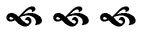
4장 - 루프, 목표, 그리고 허점
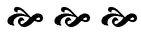
욕망의 첫 물결
피드백이 내장된 최초의 기계 시스템이 설계되었을 때, 급진적으로 새로운 일련의 아이디어들이 인류에게 초점을 맞추기 시작했다. 그러한 초기 시스템 중에는 제임스 와트(James Watt)의 증기 기관 조속기(governor)가 있었고, 그 뒤를 이은 무수한 시스템들에는 수세식 변기의 물 채움을 조절하는 부표 공 메커니즘, 열 추적 미사일 내부의 기술, 그리고 온도 조절 장치(thermostat)가 포함된다. 수세식 변기가 아마도 가장 친숙하고 이해하기 쉬울 것이므로, 잠시 그것을 살펴보자.
수세식 변기에는 물탱크로 물을 공급하는 파이프가 있고, 수위가 올라감에 따라 속이 빈 부표(float)가 들어 올려진다. 올라가는 부표에는 반대쪽 끝이 고정된 단단한 막대가 붙어 있어서, 막대의 기울기 각도가 탱크 안의 물의 양을 반영한다. 이 가변 각도는 파이프 안의 물 흐름을 조절하는 밸브를 제어한다. 따라서 물이 임계 수위에 도달하면 각도가 임계값에 이르러 밸브가 완전히 닫히고, 이로써 파이프의 모든 흐름이 차단된다. 하지만 만약 탱크에서 물이 샌다면, 수위가 서서히 낮아지고 물론 부표도 함께 내려가며, 밸브가 열리고, 그리하여 물의 유입이 다시 켜진다. 그래서 때로는 물을 내린 직후 작은 고무 마개가 탱크의 배수구 중앙에 정확히 내려앉지 않아서, 탱크에서 몇 분 동안 천천히 물이 새다가 갑자기 몇 초 동안 물이 차고, 다시 몇 분 동안 천천히 새다가 몇 초 동안 차는 일이 계속되는 순환 상황에 빠지기도 한다. 이는 어딘가 숨 쉬는 것과 비슷한 순환 패턴으로, 누군가 변기 손잡이를 흔들어 그 고무 마개를 흔들어서 다행히 배수구 위에 제대로 자리 잡게 하여 누수를 고칠 때까지 절대 멈추지 않는다.
한번은 내가 몇 주간 휴가를 떠나 있는 동안 집을 봐주던 친구가 첫날 변기 물을 내렸는데, 우연히 그 작은 고무 마개가 중앙에 떨어지지 않아 이 순환이 시작되었다. 친구는 성실하게 몇 번이나 돌아와 집을 확인했지만 이상한 점을 전혀 눈치채지 못했고, 그래서 변기 탱크는 내가 없는 내내 주기적으로 새고 다시 채워지기를 반복했다. 그 결과 나는 300달러짜리 수도 요금 고지서를 받았다. 사람들이 피드백 루프를 의심하는 것도 무리가 아니다!
우리는 수세식 변기를 물이 특정 수위에 도달하여 유지되도록 “노력하는(trying)” 시스템이라고 의인화하여 묘사할 수도 있다. 물론 우리가 그 메커니즘이 어떻게 작동하는지 쉽게 보기 때문에 그런 의인화된 언어를 피하기는 쉬우며, 그렇게 단순한 시스템에 욕망이 없다는 것은 꽤 명백하다. 그럼에도 탱크에 누수가 생긴 변기를 고칠 때는 변기가 물을 기준선까지 올리려고 “애쓰는데” “안 된다”고 말하고 싶은 유혹을 느낄 수도 있다. 우리는 그 장치에 진정으로 욕망이나 좌절감을 부여하는 것이 아니다—그저 말의 표현일 뿐이다—하지만 그것은 편리한 속기법이다.
욕망이라는 이름의 축구공
왜 목표 지향적인—즉, 목적론적인(teleological)—속기법으로의 이러한 전환이 피드백을 갖춘 시스템에 대해서는 매력적으로 보이지만, 구조화가 덜 된 시스템에 대해서는 그리 매력적이지 않을까? 그것은 전적으로 시스템의 “지각”이 (말하자면) 시스템의 행동으로 되먹임(feedback)되는 방식과 관련이 있다. 시스템이 항상 특정 상태를 향해 움직일 때, 우리는 그 상태를 시스템의 “목표”로 본다. 우리가 목적론적 언어를 사용하도록 유혹하는 것은 바로 그러한 시스템의 자기 모니터링, 자기 제어적 본성이다.
그렇다면 어떤 종류의 시스템이 피드백을 가지고, 목표를 가지고, 욕망을 가지는가? 잔디 언덕을 굴러 내려가는 축구공은 바닥에 닿기를 “원하는가”? 사물이 왜 움직이는지에 대한 그러한 원시적인 아리스토텔레스적 관념에 반사적으로 움츠러드는 우리 대부분은 망설임 없이 아니오라고 대답할 것이다. 하지만 상황을 아주 조금만 바꾸어 다시 질문해 보자.
U자형 단면을 가진 길고 좁은 도로변 배수로를 따라 쌩쌩 굴러 내려가는 축구공은 어떠한가—그것은 어떤 목표를 추구하고 있는가? 그러한 공은 속도를 내어 나아가면서 먼저 배수로의 한쪽 면으로 굴러 올라갔다가 중앙으로 다시 떨어지고, 중앙을 지나 반대쪽 면으로 굴러 올라갔다가 다시 아래로 내려오는 일을 반복하며, 배수로의 중앙 홈을 따라 흔들리는 사인파(sinusoidal) 경로에서 배수로 바닥의 직선 경로로 서서히 수렴해 갈 것이다. 여기에 “피드백”이 있는가 없는가? 이 축구공은 배수로의 중앙선을 “찾고(seeking)” 있는가? 그것은 배수로의 골짜기를 따라 구르기를 “원하는가”? 글쎄, 이 예와 앞서 본 언덕을 굴러 내려가는 공의 예가 보여주듯, 피드백이나 목표, 혹은 욕망의 유무는 흑백으로 나뉘는 문제가 아니다. 그런 것들은 판단의 문제다.
목적론의 미끄러운 비탈길
우리가 피드백이 더 정교하고 그 메커니즘이 더 숨겨져 있는 시스템으로 이동할수록, 목적론적 용어—처음에는 목표의 언어, 그다음에는 “바람”, “욕망”, “노력”의 언어—로 전환하려는 우리의 경향은 점점 더 유혹적이 되고 저항하기가 점점 더 어려워진다. 피드백이 숨겨져 있기만 하다면, 그리 정교할 필요조차 없다.
샌프란시스코의 익스플로라토리움(Exploratorium) 박물관에는 사람들이 서서 벽과 바닥 위를 춤추듯 돌아다니는 붉은 빛의 점을 구경할 수 있는 공간이 있다. 누군가 그 작은 점을 만지려고 하면, 점은 마지막 순간에 휙 피해 버린다. 사실 그것은 자신을 쫓는 사람들을 놀리는 듯한 방식으로 춤을 춘다. 때로는 완전히 멈추어 서서 그들을 조롱하고 다가오라고 도발하다가, 간신히 제때 휙 날아가 버린다. 하지만 겉보기와는 달리 그것을 조종하는 숨겨진 사람은 없다. 그저 공간 안의 물체들을 모니터링하고 광선을 제어하는 회로 속의 몇 가지 단순한 피드백 메커니즘일 뿐이다. 하지만 그 붉은 점은 누가 보더라도 성격을 가지고 있고, 사람들을 놀리려는 장난스러운 욕망을 가지고 있으며, 심지어 유머 감각까지 있는 것처럼 보인다! 익스플로라토리움의 붉은 점은 파리채를 피하려고 애쓰지만 확실히 감지할 만한 유머 감각은 없는 모기나 파리보다 더 살아 있는 것처럼 보인다.
칼 심스(Karl Sims)의 “가상 생물(Virtual Creatures)”이라는 비디오에는 몇 개의 (가상) 관이 경첩으로 연결되어 만들어진 가상 물체들이 나오는데, 이 물체들은 팔다리를 “퍼덕여” (가상) 평면을 가로질러 이동할 수 있다. 그들에게 초보적인 수준의 지각을 부여하고 특정 종류의 자원을 추구하게 만드는 단순한 피드백 루프를 설정해 주면, 그들이 먹이처럼 보이는 것을 추구하고 이 자원에 도달하기 위해 “경쟁자”들과 필사적으로 싸우는 집요한 방식은 보는 이들에게 생사를 건 전투를 벌이는 원시 생명체를 목격하는 듯한 섬뜩한 느낌을 준다.
좀 더 친숙한 수준에서는 해바라기나 자라나는 덩굴 같은 식물들이 있다. 보통 속도로 관찰할 때는 바위처럼 움직임이 없어 보이며 따라서 명백히 목표가 결여되어 보이지만, 타임랩스 사진으로 관찰하면 갑자기 주변 환경을 매우 잘 인식하고 있으며 목표에 도달하기 위한 명확한 목표와 전략을 소유한 것처럼 보인다. 질문은 그러한 시스템들이 뇌가 없음에도 불구하고 그럼에도 목표와 욕망을 품고 있는가 하는 것이다. 그들에게 희망과 포부가 있는가? 두려움과 꿈이 있는가? 믿음과 슬픔이 있는가?
피드백 루프의 존재는, 비록 꽤 단순한 것일지라도, 우리 인간에게 설명의 수준을 목표 없는 역학의 수준(힘이 사물을 움직이게 하는)에서 목표 지향적인 인공두뇌학(cybernetics)의 수준(아주 노골적으로 말하자면, 욕망이 사물을 움직이게 하는)으로 전환하라는 강력한 압력으로 작용한다. 내가 강조했듯이 후자는 전자를 더 효율적으로 다시 말한 것에 불과하지만, 그럼에도 점점 더 미묘하고 정교한 유형의 피드백 루프를 소유한 시스템에서는 그 속기법의 효율성이 거의 거부할 수 없게 된다. 그리고 결국 목적론적 언어가 필수불가결해질 뿐만 아니라, 우리는 다른 관점이 있을 수 있다는 사실조차 깨닫지 못하게 된다. 그 지점에 이르면 그것은 우리의 세계관 속에 단단히 고정된다.
피드백 루프와 기하급수적 성장
우리 모두에게 가장 친숙하며 아마도 피드백이라는 이름을 낳았을 피드백의 유형은 음향 피드백(audio feedback)이다. 이는 전형적으로 강당에서 마이크가 스피커—마이크가 포착한 소리를 증폭하여 내보내는—에 너무 가까이 갔을 때 일어난다. 어떤 소리든(무슨 소리든 상관없다) 들어가면 더 크게 나오고, 그러면 그 소리가 다시 들어가서 더 크게 나오고, 다시 들어가기를 반복하다가, 갑자기 어디선가 불쑥 루프, 즉 악순환이 생겨나 청중이 귀를 막게 만드는 끔찍한 고음의 비명을 만들어 낸다.
이 현상은 너무 친숙해서 아무런 논평도 필요 없을 것 같지만, 사실 지적할 만한 몇 가지가 있다. 하나는 입력된 소리가 한 바퀴 돌 때마다 이론적으로 그 음량이 고정된 배수, 가령 k배만큼 증폭된다는 것이다. 따라서 두 번의 루프는 k2배, 세 번의 루프는 k3배 등으로 증폭될 것이다. 자, 우리 모두는 지구 인구의 기하급수적 성장이나 그와 비슷한 재앙에 관한 무서운 이야기를 들으며 기하급수적 성장의 힘을 잘 알고 있다. (어린 시절, 기하급수의 힘은 나에게 더 순수하지만 그에 못지않게 지울 수 없이 각인되었는데, 체스판의 각 칸에 앞 칸보다 두 배 많은 쌀알을 놓으라고 명령한 술탄의 이야기를 통해서였다. 판의 절반도 채우기도 전에 술탄국 전체는커녕 전 세계의 쌀을 다 합쳐도 끝에 도달하기에 턱없이 부족하다는 것이 분명해졌다.) 그렇다면 이론적으로 가장 부드러운 속삭임도 곧 포효로 자라나고, 한계 없이 계속 자라나 먼저 강당 안의 모든 사람을 귀먹게 만들고, 그 직후 건물의 서까래를 격렬하게 흔들어 이제는 귀가 먼 청중 위로 무너져 내리게 하며, 그리고 몇 번의 루프만 더 돌면 지구를 진동시켜 산산조각 내고 우주 전체를 소멸시키며 끝을 맺을 것이다. 이 종말론적 시나리오에서 그럴듯하지만 틀린 점은 무엇인가?
첫 번째 오류
이 시나리오의 일차적인 오류는 우리가 기하급수적 과정을 수행하는 실제 장치—즉 음향 시스템 자체, 특히 증폭기(amplifier)—를 고려하지 않았다는 것이다. 내 요점을 가장 노골적인 방식으로 말하자면, 강당 지붕이 무너지는 순간 지붕이 증폭기 위로 떨어져 그것을 산산조각 낼 것이며, 그리하여 통제 불능의 피드백 루프를 신속히 멈추게 할 것임을 상기시키기만 하면 된다. 그 작은 시스템은 스스로를 파괴할 씨앗을 품고 있는 것이다!
하지만 이 시나리오에도 역시 그럴듯하지만 틀린 점이 있다. 우리 모두가 알다시피, 상황은 결코 거기까지 가지 않기 때문이다. 강당은 결코 무너지지 않으며, 청중들도 그 소음에 귀가 멀지 않는다. 무언가가 훨씬 일찍 그 폭주하는 과정을 늦춘다. 그것은 무엇일까?
두 번째 오류
우리 추론의 또 다른 오류 역시 음향 시스템의 일종의 자기 파괴와 관련이 있지만, 산산조각 나는 것보다는 더 미묘하다. 그것은 소리가 점점 커짐에 따라 증폭기가 더 이상 그 일정한 배수 k로 증폭하지 못하게 된다는 것이다. 특정 수준에 이르면 증폭기는 실패하기 시작한다. 가속 페달을 끝까지 밟은 자동차가 일정한 비율로 계속 가속하지 못하고(시속 100마일, 그다음 200, 300, 400마일에 도달해 곧 음속 장벽을 돌파하는 식으로) 결국 어떤 최고 속도(도로 마찰, 공기 저항, 모터의 내부 한계 등의 함수인)에서 평형에 이르듯, 증폭기 역시 어떤 음량의 소리든 균일하게 증폭하는 것이 아니라 결국 포화 상태에 이르러 점점 더 적게 증폭하다가, 마침내 출력 소리가 입력 소리와 같은 음량을 갖는 어느 음량 수준에서 상황이 안정된다. 증폭 배수가 1이 되는 그 음량이 바로 당신을 미치게 만들지만 귀를 멀게 하지는 않으며, 하물며 강당을 머리 위로 무너뜨리지도 않는 그 친숙한 비명 소리의 음량이다.
그리고 왜 그것은 항상 똑같은 고음의 비명 소리를 낼까? 왜 낮은 포효가 아닐까? 왜 폭포수 소리나 제트 엔진 소리, 혹은 길고 낮은 천둥소리가 아닐까? 이것은 시스템의 고유 공명 진동수(natural resonance frequency)와 관련이 있는데, 이는 대략 몇 초에 한 번씩 흔들리는 놀이터 그네의 고유 진동수의 음향적 유비다. 증폭기의 피드백 루프 역시 고유 진동수를 가지고 있으며, 여기서 우리가 신경 쓸 필요 없는 이유들로 인해 대개 고주파 비명에 가까운 음높이를 갖는다. 하지만 시스템이 즉시 정확히 최종 음높이에 정착하는 것은 아니다. 만약 그 과정을 대폭 느리게 만들 수 있다면, 당신은 마치 굴러가는 축구공이 배수로의 바닥을 찾아가는 것과 아주 비슷하게—즉, 주파수에서 매우 빠른 일련의 앞뒤 흔들림을 통해, 마치 소리의 스펙트럼에서 그 자연스러운 지점에 도달하기를 “원하는” 것처럼—그 끽끽거리는 음높이를 향해 조준해 가는 소리를 들을 수 있을 것이다.
우리가 여기서 본 것은 상상할 수 있는 가장 단순한 피드백 루프조차도 거의 생각하지 못했던 미묘함과 복잡성의 층위들을 가지고 있으며, 그것이 풍부하고 놀라움으로 가득 차 있다는 사실이다. 그렇다면 더 복잡한 피드백 루프의 경우에는 무슨 일이 일어날지 상상해 보라.
피드백과 그 나쁜 평판
1970년대 언젠가 부모님이 처음으로 비디오카메라를 사고 싶어 하셨을 때, 나는 부모님과 함께 가게에 가서 어떤 제품이 있는지 보여 달라고 했다. 우리는 선반에 여러 대의 TV 스크린이 놓인 가게의 한 구역으로 안내되었고, 그중 한 대의 뒤쪽에 비디오카메라가 연결되어 있어서 카메라가 무엇을 보고 있는지 확인하고 색상 정확도 등을 가늠해 볼 수 있었다. 나는 카메라를 들어 아버지를 향해 비추었고, 우리는 아버지의 재미있어하는 미소가 스크린 위로 곧장 뛰어오르는 것을 보았다. 다음으로 나는 카메라를 내 얼굴로 향했고, 짠, 아버지를 대신해 내가 스크린 위에 나타났다. 하지만 그다음, 필연적으로, 나는 카메라를 TV 스크린 자체로 향하게 해 보고 싶은 충동을 느꼈다.
이제 내가 약간의 수치심을 안고 영원히 기억할 정말 기묘한 사실이 나온다. 나는 그 루프를 닫는 것을 주저했다! 그냥 밀고 나가서 해 버리는 대신, 나는 망설이며 소심하게 판매원에게 그렇게 해도 되는지 허락을 구했다. 도대체 왜 내가 그런 짓을 했을까? 글쎄, 그가 내 요청에 어떻게 대답했는지 이야기하면 도움이 될지도 모르겠다. 그가 한 말은 이랬다. “안 돼요, 안 돼, 안 돼요! 그러지 마세요—카메라 고장 나요!”
그리고 그의 갑작스러운 공황 상태에 나는 어떻게 반응했을까? 비웃음으로? 웃음으로? 어쨌든 내 변덕대로 그냥 해 버렸을까? 아니다. 사실 나는 나 자신에 대해 그리 확신이 없었고, 그의 공황 상태의 폭발은 내 막연한 불안감을 강화했으므로, 나는 내 욕망을 억누르고 하지 않았다. 하지만 나중에 새 비디오카메라를 싣고 집으로 운전해 가면서 그 문제를 곰곰이 생각해 보니, 내가 루프를 닫았더라도 시스템—카메라든 TV든—에 어떤 위험이 있었을지 도무지 알 수가 없었다(비록 선험적으로는 둘 중 하나가 녹아내릴 위험에 취약해 보일지라도). 그래서 집에 도착하자마자 나는 조심스럽게 카메라를 스크린 쪽으로 향해 보았고, 놀랍게도(mirabile dictu) 끔찍한 일은 전혀 일어나지 않았다.
누군가 두려워할 만한 위험은 음향 피드백과 유사한 무언가일 것이다. 어쩌면 스크린 위의 특정 지점(물론 카메라가 똑바로 겨누고 있는 지점)이 점점 더 밝아지다가 곧바로 그 자리에서 스크린이 녹아내릴지도 모른다. 하지만 왜 이런 일이 일어날까? 음향 피드백에서처럼, 그것은 빛의 세기를 증폭하는 어떤 종류의 작용에서 비롯되어야 할 것이다. 하지만 우리는 비디오카메라가 어떤 식으로든 이미지를 증폭하도록 설계된 것이 아니라, 단지 그것을 다른 곳으로 전송하도록 설계되었다는 것을 안다. 집으로 돌아오는 차 안에서 내가 차분히 계산해 냈던 것처럼, 표준적인 비디오 피드백에는 아무런 위험도 없다(그건 그렇고, “비디오 피드백”이라는 용어가 언제, 누구에 의해 만들어졌는지는 모르겠다. 확실히 그 당시에는 들어본 적이 없었다). 하지만 위험이 있든 없든, 나는 가게에서의 내 주저함을 잘 기억하고 있으며, 따라서 비록 비이성적이긴 하지만 판매원의 공황 상태를 쉽게 상상할 수 있다. 시스템을 되돌리거나 스스로에게 꼬아서 일종의 신비롭게 금기시된 루프를 형성하게 만드는 피드백은 위험해 보이고, 운명을 시험하는 것처럼 보이며, 어쩌면 본질적으로 잘못된 것처럼 보이기까지 한다—그것이 무슨 뜻이든 간에.
이것들은 원초적이고 비이성적인 직관이며, 어디서 오는지 누가 알겠는가. 어떤 종류의 피드백에 대한 두려움도 음향 피드백에 대한 경험에서 비롯된 단순하고 자연스러운 일반화일 뿐이라고 추측할 수도 있겠지만, 왠지 설명이 그렇게 단순할 것 같지는 않다. 우리 모두 알다시피 어떤 부족들은 거울을 두려워하고, 많은 사회가 카메라를 의심하며, 특정 종교는 사람 그림 그리는 것을 금지한다. 자기 자신의 표상을 만드는 것은 의심스럽고, 기괴하며, 어쩌면 궁극적으로 치명적인 것으로 여겨진다. 루프에 대한 이러한 의심은 그저 우리 인간의 본성에 깊이 배어 있는 것처럼 보인다. 하지만 행글라이딩이나 낙하산 점프 같은 많은 대담한 활동에서처럼, 우리 중 일부는 그것에 강력하게 끌리는 반면, 다른 이들은 그것에 대한 단순한 생각만으로도 죽을 만큼 두려워한다.
신, 괴델, 움라우트, 그리고 신비
열네 살 때 서점을 둘러보다가 나는 《괴델의 증명(Gödel’s Proof)》이라는 작은 페이퍼백 책을 우연히 발견했다. 나는 이 괴델이라는 사람이 누구인지, 그가(내 인생의 그 이른 나이와 단계에서 “그 또는 그녀”라고 생각하지 않았음은 확실하다) 무엇을 증명했는지 전혀 몰랐지만, 단 하나의 수학적 증명—어떤 수학적 증명이든—에 관한 책 한 권 전체라는 아이디어가 내 흥미를 끌었다. 또한 그 요리에 약간의 양념을 더한 것은 틀림없이 “괴델(Gödel)” 안에 노골적으로 숨어 있는 “신(God)”이라는 단어와, “God”의 한가운데 위에 위태롭게 올라앉은 신비로워 보이는 움라우트(umlaut)였음을 고백해야겠다. 내 뇌의 분자들은 적절한 방식으로 간지럽힘을 당해 내 팔과 손가락으로 신호를 보냈고, 그에 따라 나는 움라우트로 장식된 그 책을 집어 들어 책장을 넘기다가 “메타수학”, “메타언어”, “결정 불가능성” 같은 감질나는 단어들을 보았다. 그리고 기쁘게도, 이 책이 “나는 거짓말을 하고 있다”와 같은 역설적인 자기 지시적 문장들과 그보다 더 복잡한 사촌들을 논의하고 있음을 알았다. 나는 괴델이 증명한 것이 무엇이든 숫자 그 자체에 초점을 맞춘 것이 아니라 추론 그 자체에 초점을 맞추었으며, 가장 놀랍게도 수학의 본성에 대해 추론하는 데 숫자가 사용되고 있다는 것을 알 수 있었다.
일부 독자들에게는 다음 이야기가 믿기 어렵게 들릴지 모르지만, 나는 사용(use)과 언급(mention)을 구별하기 위한 따옴표의 올바른 사용법에 관한 긴 각주에 특히 끌렸던 것을 기억한다. 저자들—어니스트 네이글(Ernest Nagel)과 제임스 R. 뉴먼(James R. Newman)—은 “시카고는 인구가 많은 도시다”와 “시카고는 3음절이다”라는 두 문장을 들고 전자는 참이지만 후자는 거짓이라고 주장하면서, 만약 어떤 단어의 속성에 대해 이야기하고 싶다면 그것을 따옴표 안에 넣어 만든 표현인 그 단어의 이름을 사용해야 한다고 설명했다. 따라서 “‘시카고’는 3음절이다”라는 문장은 도시에 관한 것이 아니라 그 이름에 관한 것이며, 참을 진술한다. 저자들은 계속해서 형식 추론 내부에서 그러한 구별을 하는 데 세심한 주의를 기울여야 할 필요성에 대해 이야기했고, 이름 자체도(따옴표를 사용해 만든) 이름을 가지며, 이것이 무한히(ad infinitum) 계속된다는 점을 지적했다. 그러니까 여기에 언어가 스스로에 대해 이야기하는 것에 대해 이야기하는 방식, 그리고 추론이 스스로에 대해 추론하는 방식 등에 대해 이야기하는 책이 있었던 것이다. 나는 푹 빠져 버렸다! 나는 여전히 괴델의 정리가 무엇인지 전혀 몰랐지만, 이 책을 꼭 읽어야 한다는 것은 알았다. 책을 구성하는 분자들은 내 머릿속 분자들을 시켜 내 손속 분자들을 시켜 내 지갑 속 분자들을 시켜… 뭐, 무슨 뜻인지 알 것이다.
순환성과 자기 적용을 음미하기
네이글과 뉴먼의 매력적인 소책자를 읽으면서 나에게 가장 마법처럼 보였던 것은 수학이 스스로에게 되돌아오고, 스스로를 삼키고, 스스로의 안쪽으로 꼬여 들어가는 방식이었다. 나는 항상 이런 종류의 루프 같은 현상에 강력하게 끌렸었다. 예를 들어 아주 어릴 때부터 나는 골판지 상자를 닫을 때 네 개의 덮개를 일종의 “순환적” 방식으로—A를 B 위에, B를 C 위에, C를 D 위에, 그리고 D를 A 위에—서로 겹쳐 끼우는 아이디어를 좋아했다. 그러한 역설과의 아슬아슬한 스침은 나를 매혹하고 사로잡았다.
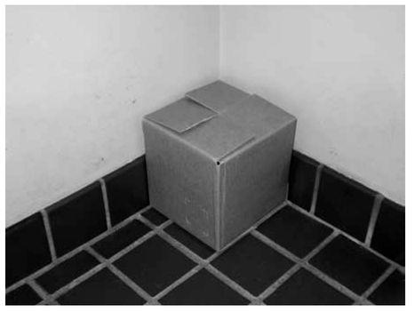
또한 나는 항상 두 거울 사이에 서서 이미지들이 저 멀리 희미해져 가며 암시하는 무한함을 보는 것을 좋아했다. (사진은 켈리 구트만(Kellie Gutman)이 찍었다.) 거울을 비추는 거울—이보다 더 도발적인 아이디어가 있을까? 그리고 나는 모턴 소금(Morton Salt) 상자를 들고 있는 모턴 소금 소녀의 그림을 좋아했는데, 그 상자 위에도 상자를 들고 있는 그녀 자신이 그려져 있고, 그 안에도 계속해서, 암묵적으로, 끝없이 점점 더 작은 복제본들이 이어지는 그림이었다.
몇 년 뒤, 아이들을 데리고 네덜란드에 가서 “마뒤로담(Madurodam)”이라는 공원에 갔을 때(그런데 그 따옴표는 사용과 언급을 구별하는 것이 중요하다는 네이글과 뉴먼의 주장이 나에게 평생 미친 영향의 증거다), 그곳에는 네덜란드 전역의 유명한 건물들을 아름답게 축소 제작한 모형들이 수십 개나 있었지만, 그보다 더 작은 모형을 포함하는 마뒤로담 자체의 축소 모형은 없다는 것을 보고 나는 크게 실망했다. 다른 곳도 아닌 네덜란드에 이런 공백이 존재한다는 사실에 나는 특히 놀랐다. 네덜란드는 M. C. 에셔(M. C. Escher)의 고향일 뿐만 아니라, 모턴 소금 상자와 마찬가지로 무한 퇴행 속에 스스로를 얽어 넣은 드로스테(Droste)의 유명한 핫초코 상자의 고향이기도 하며, 모든 네덜란드 사람이 자라면서 아주 잘 아는 것이기 때문이었다.
그러한 루프에 대한 내 매혹의 뿌리는 아주 먼 과거로 거슬러 올라간다. 내가 네댓 살쯤 된 꼬마였을 때, 나는 2가 두 개 모이면 4가 된다는 것을 스스로 알아냈거나 누군가에게 들었다. 이 귀에 쏙 들어오는 구절—“둘의 둘(two twos)”—은 내 등골을 타고 전율을 흐르게 했는데, 그것이 “둘”이라는 개념을 그 자신에게 적용하는 것을 포함한다는 사실을 깨달았기 때문이다. 그것은 일종의 자기 지시적 연산, 개념이 스스로에게 되돌아오는 꼬임이었다. 무모한 조종사나 암벽 등반가처럼 나는 더 많은, 그리고 더 위험한 그런 경험들을 갈망했고, 그래서 아주 자연스럽게 셋의 셋(three threes)은 무엇이 되는지 자문했다. 내 힘으로(예컨대 각 줄에 점이 세 개씩 있는 세 줄짜리 정사각형을 만들어 보는 식으로) 이 신비를 풀기에는 너무 어렸기에, 나는 지혜의 샘인 어머니에게 답을 물었고, 어머니는 차분하게 9라고 알려 주셨다.
처음에는 기뻤지만, 오래지 않아 내가 어머니께 올바른 질문을 하지 않았다는 막연한 걱정이 들기 시작했다. 내 새로운 구절과 옛 구절 모두 문제의 숫자를 오직 두 개만 포함하고 있다는 점이 마음에 걸렸던 것이다. 반면 내 목표는 둘이라는 성질(twoness)을 초월하는 것이었다. 그래서 나는 운을 시험해 보며 더 셋다운 구절인 “셋의 셋의 셋(three three threes)”을 만들어 냈지만—불행히도 내가 그것으로 무엇을 의미하는지 나 자신도 몰랐다. 그래서 나는 자연스럽게 다시 한 번 전지하신 분께 도움을 청했다. 우리는 이 문제(그 어린 나이에 나는 이 문제가 지구상의 그 누구도 이해할 수 없는 수준이라고 확신했다)에 대해 대화를 나누었고, 어머니가 내 아이디어를 완전히 이해했다고 안심시켜 주시며 심지어 답까지 말해 주셨던 것을 기억하지만, 그게 무엇이었는지는 잊어버렸다—분명 9 아니면 27이었을 것이다.
하지만 답은 요점이 아니다. 요점은 내 가장 이른 기억들 중 하나가 루프 같은 구조, 자기 적용 연산, 순환성, 역설적 행위, 암시된 무한을 음미하는 것이라는 점이다. 나에게 이것은 최고 중의 최고, 그야말로 환상적인 것이었다.
소심한 유형 이론
앞선 일화는 내가 많은 사람들과 공유하지만 결코 모든 사람과 공유하지는 않는 성격적 특성을 드러낸다. 사람들의 본능 속에 있는 이 분열을 내가 처음 마주친 것은 버트런드 러셀(Bertrand Russell)이 1910~1913년에 출판된, 그의 옛 스승 알프레드 노스 화이트헤드(Alfred North Whitehead)와 공동 집필한 유명한 대작(magnum opus) 《수학 원리(Principia Mathematica)》에서 이른바 “유형 이론(theory of types)”을 발명한 이야기를 읽었을 때였다.
몇 년 전, 러셀은 수학의 기초를 집합론 위에 세우려고 고군분투하고 있었는데, 집합론이 인간 사유의 가장 깊은 기반을 구성한다고 확신했기 때문이다. 하지만 목표가 눈앞에 다다랐다고 생각한 바로 그 순간, 그는 뜻밖에도 집합론에서 끔찍한 허점(loophole)을 발견했다. 이 허점(여기에는 이 단어가 완벽하게 들어맞는다)은 “자기 자신을 포함하지 않는 모든 집합들의 집합”이라는 개념에 기반하고 있었는데, 이 개념은 집합론에서 정당했지만 깊이 자기 모순적인 것으로 판명되었다. 자신의 발견이 지닌 치명적인 성격을 대중에게 전달하기 위해, 러셀은 그것을 “마을에서 스스로 면도하지 않는 모든 사람을 면도해 주는” 가상의 마을 이발사라는 유사한 개념으로 번역하여 더 생생하게 만들었다. 그러한 이발사의 존재를 가정하는 것은 역설적이며, 그 이유는 정확히 똑같다.
집합론이 이처럼 자기 모순적인 실체들을 허용한다는 것이 드러나자, 수학을 견고하게 기초 짓겠다는 러셀의 꿈은 그의 머리 위로 무너져 내렸다. 이 트라우마는 그에게 자기 포함이나 자기 지시의 루프를 허용하는 이론들에 대한 공포를 심어 주었다. 그가 겪은 지적 파멸을 오직 루프성(loopiness) 때문이라고만 여겼기 때문이다.
그리하여 회복을 시도하면서 러셀은 자신의 옛 스승이자 새 동료인 화이트헤드와 함께 새로운 종류의 집합론을 발명했는데, 거기서는 집합의 정의가 결코 그 집합 자체를 호출할 수 없었고, 게다가 엄격한 언어적 위계가 설정되어 어떤 문장도 스스로를 지칭하는 것을 단호히 막았다. 《수학 원리》에서는 집합이 스스로에게 되돌아오는 일도, 언어가 스스로에게 되돌아가는 일도 허용되지 않았다. 만약 어떤 형식 언어에 “단어(word)” 같은 단어가 있다면, 그 단어는 자기 자신을 지칭하거나 적용할 수 없었고, 오직 자기 아래 수준에 있는 실체들에만 적용될 수 있었다.
이 “유형 이론”에 대해 읽었을 때, 그것은 나에게 상식으로부터의, 그리고 루프의 매혹으로부터의 병적인 후퇴로 느껴졌다. “단어”라는 단어가 “단어”라는 범주의 구성원이라는 데 대체 무슨 문제가 있을 수 있단 말인가? “나는 이탈리아 돌로미티 산맥의 그림 같은 마을에서 이 책을 쓰기 시작했다”, “이 장의 본문 서체는 배스커빌이다”, 또는 “이 상자는 재활용 가능한 판지로 만들어졌다”와 같은 무해한 문장들에 무슨 문제가 있을 수 있는가? 그러한 선언들이 누군가나 무언가를 위험에 빠뜨리는가? 나는 도무지 그럴 것 같지 않다.
“이 문장은 열한 개의 음절로 이루어져 있다”나 “이 문장의 마지막 단어는 네 글자짜리 명사이다”는 어떠한가? 둘 다 이해하기 매우 쉽고, 명백히 참이며, 확실히 역설적이지 않다. 심지어 “이 문장의 아홉 번째 단어는 열 글자로 이루어져 있다”나 “이 문장의 열 번째 단어는 아홉 글자로 이루어져 있다” 같은 우스꽝스러운 문장들조차 “2 더하기 2는 5다”라는 문장보다 더 문제 될 것이 없다. 셋 다 거짓이거나 기껏해야 무의미한 주장일 뿐이며(두 번째 문장은 존재하지 않는 것을 가리킨다), 그중 어느 것에도 역설적인 점은 없다. 모든 지시의 루프를 일괄적으로 추방하는 것은 나에게 너무나 편집증적인 조치로 보였기에, 나는 한 번 데고 나서 자라 보고 놀란 버트런드 러셀의 마음에 평생 실망감을 느꼈다.
피드백 루프를 두려워하는 지식인들
그로부터 여러 해 뒤, 내가 《사이언티픽 아메리칸(Scientific American)》 잡지에 “메타매지컬 테마(Metamagical Themas)”라는 월간 칼럼을 쓰고 있을 때, 나는 몇 편의 글을 언어 속의 자기 지시라는 주제에 할애했고, 그 글들에서 나 자신과 몇몇 친구들, 그리고 꽤 많은 독자들이 만들어 낸 풍성한 문장들을 소개했는데, 그중에는 다음과 같은 놀랍고 도발적인 상상의 나래를 펼친 것들도 있었다.
만약 “참”과 “거짓”의 의미가 바뀐다면, 이 문장은 거짓이 아닐 것이다.
나는 당신과 두 수준으로(two-level) 솔직하게 이야기하고 있다.
다음 문장은 “다음(following)”과 “앞선(preceding)”이라는 단어가 서로 바뀌었고, “제외하고(except)”와 “~라는 점에서(in)”라는 단어가 바뀌었으며, “~와 완전히 동일한(identical with)”과 “~와 다른(different from)”이라는 구절이 바뀌었다는 점을 제외하면 이 문장과 완전히 동일하다.
앞선 문장은 “앞선(preceding)”과 “다음(following)”이라는 단어가 서로 바뀌었고, “~라는 점에서(in)”와 “제외하고(except)”라는 단어가 바뀌었으며, “~와 다른(different from)”과 “~와 완전히 동일한(identical with)”이라는 구절이 바뀌었다는 점에서 이 문장과 완전히 다르다.
이 비유는 자기 자신의 신발 끈을 잡아당겨 스스로를 들어 올리는 것과 같다.
‘그것(thit)’은 단어가 아니기 때문에 그 문장(thit sentence)은 자기 지시적이지 않다.
만약 소원이 말(horse)이라면, 이 조건문의 선행절은 참일 것이다.
이 문장은 세 번째마다 빠졌지만, 여전히 이해할 수 있다.
이 문장이 혼란스럽다고 생각한다면, 돼지 한 마리를 바꾸어라.
어째서 이 명사구는 이 명사구가 지시하는 것과 같은 것을 지시하지 않는가?
나는 어이 오아이 오 오오아 아 에 오오이 에에에 오 오에. (모음만 남긴 문장)
ㅇ ㅁㅈㅇ ㅁㅇㅇ ㅇㄱ ㅇ ㅁㅈㅇ ㅈㅇㅁ ㅇㅅㄴㄷ. (자음만 남긴 문장: “이 문장은 모음이 없고 앞 문장은 자음이 없다.”)
이 팬그램(pangram)은 a가 다섯 개, b가 한 개, c가 한 개, d가 두 개, e가 스물여덟 개, f가 여덟 개, g가 여섯 개, h가 여덟 개, i가 열세 개, j가 한 개, k가 한 개, l이 세 개, m이 두 개, n이 열여덟 개, o가 열다섯 개, p가 두 개, q가 한 개, r이 일곱 개, s가 스물다섯 개, t가 스물두 개, u가 네 개, v가 네 개, w가 아홉 개, x가 두 개, y가 네 개, 그리고 z가 한 개임을 집계한다.
비록 나는 독자들로부터 많은 긍정적인 피드백(이 용어를 써도 좋다면)을 받았지만, 점잖은 학술지에서 순전한 경박함이라고 여겨지는 것에 대해 극도로 부정적인 피드백도 받았다. 가장 격렬한 반대자 중 한 명은 델라웨어 대학교의 교육학 교수였는데, 그는 자기 지시적 문장이라는 주제에 대해 유명한 행동주의 심리학자 B. F. 스키너(B. F. Skinner)의 말을 인용했다.
어쩌면 이런 식으로 문장을 가지고 놀거나 어떤 변형이 문장을 일반 독자에게 수용 가능하게 만들거나 그렇지 않게 만드는지 분석하는 데 해가 없을지도 모른다. 하지만 그것은 여전히 시간 낭비이며, 특히 그렇게 생성된 문장들이 언어 행동으로 방출될 수 없었을 때는 더욱 그렇다. 고전적인 예는 “이 문장은 거짓이다”와 같은 역설인데, 이는 거짓이면 참이고 참이면 거짓인 것처럼 보인다. 고려해야 할 중요한 점은 그 누구도 그 문장을 언어 행동으로 방출할 수 없었을 것이라는 사실이다. 화자가 “이 문장은 거짓이다”라고 말하기 전에 문장이 먼저 존재하고 있어야 하며, 반응 그 자체는 그것이 방출되기 전까지는 존재하지 않았으므로 그 역할을 할 수 없다.
누군가 의미 있게 자기 지시적 문장을 발화할 가능성조차 거부하는 이러한 무릎 반사적인 반응은 나에게 생소한 것이었고, 나를 당황하게 만들었다. 나는 그 교육학 교수의 한탄에 대해 오랫동안 깊이 숙고했고, 잡지의 다음 호에 그에 대한 긴 답변을 실어 일상적인 인간 의사소통뿐만 아니라 유머, 예술, 문학, 심리치료, 수학, 컴퓨터 과학 등에서 노골적이고 종종 유용하며 심지어 필수불가결하기까지 한 자기 지시의 사례들을 하나하나 열거했다. 그나 다른 자기 지시 반대자들이 그것을 어떻게 받아들였는지는 전혀 모른다. 하지만 나에게 남은 것은, 고도로 교육받고 다른 면에서는 분별 있는 일부 사람들이 자기 지시나 스스로에게 접혀 들어가는 구조 또는 시스템이라는 아이디어에 비이성적인 알레르기를 가지고 있다는 깨달음이었다.
나는 그러한 사람들의 알레르기가 궁극적으로 역설이나 우주가 (은유적으로) 폭발하는 것에 대한 깊은 두려움에서 비롯된다고 의심한다. 이는 마치 내가 TV 스크린에 비디오카메라를 겨누겠다고 위협했을 때 텔레비전 판매원이 보였던 공황 상태와 비슷한 것이다. 내가 평생 그러한 루프를 음미해 온 것과 버트런드 러셀, B. F. 스키너, 이 교육학 교수, 그리고 TV 판매원 같은 사람들이 그것으로부터 알레르기 반응을 보이며 움츠러든 것 사이의 대조는 나에게 “유형 이론”에 대한 평생의 교훈을 가르쳐 주었다. 즉, 이 세상에는 정말로 “두 가지 유형”의 사람들이 있다는 것이다.
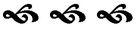
5장 - 비디오 피드백에 대하여
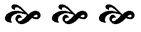
30년 간격의 두 번의 비디오 항해
비디오 피드백의 루프는 풍부하다. 이는 1970년대 중반 우리 가족의 새 비디오카메라로 처음 탐구했을 때 내가 알게 된 사실이다. 몇 달 뒤, 나는 《괴델, 에셔, 바흐》를 위한 시각적 연구로 그것을 자세히 탐구하기로 결심하면서 그 현상에 대한 이해가 상당히 깊어졌다. 나는 스탠퍼드 대학교 텔레비전 스튜디오에 예약을 잡았고, 도착해 보니 그곳의 매우 친절한 직원이 내가 가지고 놀 수 있도록 삼각대에 카메라와 TV를 이미 설치해 두었다. 카메라를 스크린에 향하게 하고, 줌인·줌아웃을 하고, 카메라를 기울이고, 각도를 바꾸고, 밝기와 대비를 조절하는 등의 일은 식은 죽 먹기였다. 그는 내가 원하는 만큼 오래 시스템을 사용해도 좋다고 말해 주었고, 그래서 나는 그날 오후 몇 시간 동안 이 비디오 루프가 열어젖힌 “금기시된” 가능성의 바다를 항해하며 보냈다. 호기심 많은 관광객처럼 나는 그 이국적인 여행 중에 수십 장의 사진(그저 흑백 스틸 사진)을 찍었고, 나중에 가장 마음에 드는 12장을 골라 《GEB》의 대화편 중 하나에 실었다.
그 첫 번째 비디오 피드백 모험 이후 30년이 흘렀고 기술도 조금 발전했기에, 이번 새 책을 위해 나는 다시 한 번 시도해 보기로 결심했다. 이번에는 베이직 북스(Basic Books)에서 12년 남짓 내 편집자로 일하면서(그 덕분에, 혹은 그럼에도 불구하고) 좋은 친구가 된 빌 프루트(Bill Frucht)가 나를 돕고 부추겨 주었는데, 그는 오직 이 목적을 위해 뉴욕에서 비행기를 타고 날아왔다. 아이들이 쓰던 옛 “놀이방”에서 빌과 나는 조금 더 새로운 배를 타고 같은 옛 바다를 항해하며 즐거운 몇 시간을 보냈고, 결국 우리의 항해를 훌륭하게 기록한 수백 장의 컬러 스냅사진을 얻었다. 표지 일러스트 외에도, 폭넓은 스펙트럼을 아우르는 내가 가장 좋아하는 16장의 사진을 컬러 화보에서 찾아볼 수 있다.
두 번의 비디오 항해 모두 생생하고 다채로웠지만, 이 장에서는 오래전 스탠퍼드에서 시작했던 첫 번째 항해의 “일기”를 쓰기로 결정했다. 그때가 내가 이 현상을 처음 탐구하며 단계별로 배웠던 때이기 때문이다. 따라서 아래 이야기는 이 책의 컬러 화보를 만드는 데 사용된 것과는 다른 텔레비전, 다른 TV 카메라, 그리고 전반적으로 더 오래된 기술을 포함한다. 그럼에도 여러분이 보게 되겠지만, 옛 일기의 많은 부분이 여전히 새로운 항해에도 해당하며, 다만 몇 가지 작은 불일치가 있는데 그 부분에 이르면 언급하도록 하겠다.
비디오 여행 일기
내가 사용하도록 주어진 TV 세트 오른쪽 옆면에는 우연히 반짝이는 금속 띠가 세로로 붙어 있었는데, 이 무작위적인 물체의 존재는 화면 속의 화면들이 이루는 여러 층위를 쉽게 구별할 수 있게 해 주는 행운의 효과를 낳았다. 그리하여 내가 발견한 첫 번째 사실은, 내포된 화면들의 퇴행이 유한한지 무한한지를 결정하는 임계 각도가 존재한다는 것이었다. 만약 카메라를 화면 중앙이 아니라 그 금속 띠 쪽으로 향하게 하면, 내가 “서 있는” 곳에서 멀어져 가는 고른 간격의 “출입구들”(실제로는 그 금속 띠의 이미지들이었다) 몇 개를 보여주는 긴 복도의 오른쪽 벽 스냅사진처럼 보이는 것이 나타났다. 하지만 나는 이 “복도”의 끝까지 쭉 들여다볼 수는 없었다. 따라서 나는 이런 경우에 화면에 보이는 것을 잘린(truncated) 복도라고 부르겠다.
만약 내가 카메라를 천천히 왼쪽으로 돌려 화면 중앙을 향하게 하면—따라서 겉으로 보이는 복도 안쪽으로 더 깊숙이 들어가게 되면—오른쪽 벽을 따라 점점 더 작아지고 점점 더 멀어지는 출입구들이 더 많이 시야에 들어왔다. 그러다가 갑자기, 어떤 임계 순간에, 단 하나의 수렴점(원근법 이론에서 이른바 “소실점”)을 향해 임의로 멀리 뻗어 나가는 텅 빈 공간을 향해 복도 끝까지 쭉 들여다보게 되면서 멋지고 아찔한 무한의 감각이 찾아왔다. 나는 이것을 끝없는(endless) 복도라고 부르겠다. (본질적으로 이와 같은 종류의 복도가 4장의 서로를 비추는 거울 사진에서도 보인다는 점에 주목하라.)
물론 무한히 많은 출입구를 보고 있다는 내 인상은 착시였다. TV 화면의 입자성과 빛의 속도가 얼마나 많은 중첩이 일어날 수 있는지에 한계를 지우기 때문이다. 그럼에도 마법처럼 끝없는 복도처럼 보이는 곳을 들여다보는 것은 그저 평범하게 잘린 복도를 들여다보는 것보다 훨씬 더 매혹적이고 도발적이었다.
내 다음 실험 세트는 카메라를 기울이는 것이었다. 이렇게 하자 각각의 화면은 자신을 감싸고 있는 화면에 대해 정확히 같은 각도로 고분고분하게 기울어졌고, 이는 즉시 뒤로 물러나는 나선형(helical) 복도—코르크 마개뽑이처럼 비틀린 복도—를 만들어 냈다. 보기에는 꽤 매력적이었지만, 마음속으로는 그리 놀랍지 않았다.
하지만 뜻밖의 놀라움은 카메라를 특정 각도로 비틀었을 때, 출입구들이 점점이 박힌 나선형 복도를 들여다보는 대신 망원경으로 본 은하를 닮은 평평한 소용돌이를 보고 있는 것처럼 보였다는 것이다. 이 소용돌이의 가장자리는 (TV 화면의 가장자리에서 나오는) 직선들의 삐죽삐죽한 집합이 아니라 매끄럽고 연속적인 빛의 곡선이었으며, 그러한 매끄러움은 나를 신비롭게 만들었다. 나는 삐죽삐죽한 모서리에서 우아한 곡선으로의 갑작스러운 도약이 왜 일어나야 하는지 이유를 알 수 없었다. 또한 각 “은하”의 한가운데 핵심부에는 거의 항상 아름다운 원형 “블랙홀”이 있다는 것도 알아차렸다. (더 최근의 비디오 항해에서 빌과 나는 이 “블랙홀” 현상을 재현할 수 없었고, 의아하고 유감스럽게도 화보 사진들에서는 블랙홀을 볼 수 없을 것이다.)
수수께끼 같은 창발적 잔향
세션 도중 어느 시점에, 나는 우연히 카메라 렌즈 앞에 내 손을 잠시 갖다 대었다. 물론 화면은 온통 어두워졌지만, 내가 손을 치웠을 때 이전 패턴이 내 예상처럼 화면에 곧장 다시 나타나지 않았다. 대신 나는 화면에서 다른 패턴을 보았는데, 이 패턴은 내가 전에 보았던 그 어떤 것과도 달리 정지해 있지 않았다. 대신 그것은 심장처럼 두근거리고 있었다! 그 “맥박 수”는 초당 약 1회였고, 각 짧은 “심장 박동”의 과정 동안 내 눈앞의 형태들은 크게 변모했다. 방 안에 움직이는 것이 아무것도 없었음을 감안할 때, 그렇다면 이 신비로운 주기적 박동은 도대체 어디서 온 것일까?
이런—미안하다! 방금 내가 쓴 것은 명백한 거짓이다. 방 안에 움직이는 것이 있었다. 친애하는 독자여, 그것이 무엇이었는지 아는가? 바로 이미지 그 자체가 움직이고 있었다. 이제 그것은 당신에게 어리석거나 사소하거나 잘난 체하는 대답처럼 들릴지 모르지만, 그 이미지는 (비록 약간의 지연이 있긴 했지만) 자기 자신의 이미지였으므로, 사실 그것은 아주 정곡을 찌른 것이다. 변화하는 무언가의 충실한 이미지는 필연적으로 계속해서 변화할 것이다! 이 경우, 내가 순환적인 설정—즉 루프—을 다루고 있었기 때문에 움직임이 끝없이 움직임을 낳았다. 그리고 사태를 촉발한 원래의 움직임—제1원동자—은 내 손의 움직임이었으며, 이 비디오 잔향(reverberation)은 이제 그 손 움직임의 안정적이고 자립적인 가시적 기억 흔적을 구성하고 있었다!
이 상황은 내가 “잔향하는 짖음(reverberant barking)”이라고 부르는 또 다른 루프 같은 현상을 떠올리게 한다. 이는 개들이 많이 사는 동네에서 때때로 들을 수 있는 현상이다. 조깅하는 사람이 한 집 앞을 지나가며 개 한 마리의 짖음을 촉발하면, 이웃 개들이 그 짖음을 받아서 12마리의 개가 참여하는 연쇄 반응이 일어날 수 있다. 곧 짖는 파티는 그 자체의 생명력을 얻게 되고, 그사이에 의도치 않은 선동자는 이미 오래전에 동네를 빠져나갔다. 만약 개들이 조금 더 로봇 같아서 똑같은 일을 반복하다가 결국 지치지만 않는다면, 그들의 잔향하는 짖음은 거리를 스쳐 지나간 조깅하는 사람의 안정적이고 자립적인 청각적 기억 흔적이 될 수 있을 것이다.
내 비디오 항해에서 마주친 역동적으로 맥동하는 패턴들은 내가 그때까지 관찰했던 흔들림 없는 “정상 상태 우주(steady-state universes)”와는 완전히 달랐다. 안정적이고 주기적인 비디오 잔향은 내가 비디오 피드백 속에 숨어 있는 가능성들을 탐구하다가 우연히 부딪힌 기이하고 예상치 못한 현상이었다.
그로부터 수년이 지난 오늘날에도, 그러한 맥동의 기원은 나에게 여전히 꽤 불분명하고 심지어 신비롭기까지 하다. 그런 이유로 그것은 3장에서 논의한 대로 창발적(emergent) 현상, 달리 말해 부수현상(epiphenomenon)이다. 일반적으로 창발적 현상은 더 낮고 더 기본적인 수준에서 작동하는 엄격한 규칙들로부터 어쩐지 아주 자연스럽고 자동적으로 생겨나지만, 그 창발이 정확히 어떻게 일어나는지는 관찰자에게 전혀 명확하지 않다.
나는 비디오 잔향의 배후에 무엇이 있는지 완전히 헤아리지 못해 조금 둔하다는 느낌이 들긴 하지만, 이 시점에서는 그것에 너무나 익숙해져서 나에게 “말이 되는” 것으로 느껴진다. 즉, 나는 화면 위에서 그것을 유도하는 방법에 대한 명확한 직관을 가지고 있고, 일단 시작되면 내가 간섭하지 않는 한 아마 몇 시간 동안, 어쩌면 영원히 수그러들지 않고 계속될 견고한 현상이라는 것을 안다. 하위 수준의 현상들로 비디오 잔향을 정밀하게 설명하려고 애쓰기보다는, 나는 그저 그것을 하나의 사실로 받아들이고 그 자체의 수준에서 존재하는 현상으로 다룬다. 이것은 당신에게 친숙하게 들려야 한다. 우리가 물리적 및 생물학적 세계의 거의 모든 것을 다루는 방식이 바로 그러하기 때문이다.
루프에 “콘텐츠” 먹이기
서두에서 언급했듯이, 스탠퍼드 설정의 운 좋았던 점 중 하나는 내가 사용하도록 주어진 텔레비전 세트 한쪽 옆면에 있던 겉보기에 무작위적인 금속 띠였다. 일종의 침입자(interloper)였던 그 띠는 빙글빙글 순환하던 이미지에 핵심적인 “양념”을 더해 주었고, 그런 의미에서 그것은 비디오 항해 I의 결정적인 재료였다.
빌과 내가 비디오 항해 II를 진행하는 동안, 놀랍게도 우리가 항해하는 바다가 우리 취향에는 조금 너무 잔잔하게 느껴져서 약간의 액션과 더 많은 시각적 흥분을 갈망하던 때가 있었다. 이때 항해 I에서 침입자 금속 띠가 수행했던 결정적인 “양념” 역할이 내 머릿속에 떠올랐고, 그래서 재미 삼아 우리 시스템에서도 유사한 역할을 할 무언가를 도입하기로 했다. 나는 방 주변에 있던 다양한 물건들을 집어 들어, 이미지가 비디오 루프를 빙글빙글 돌 때 무슨 일이 일어날지 전혀 모른 채 카메라 앞에 매달아 흔들었다. 대개 우리는(다시 한 번) 예측할 수 없었던 경이로운 결과들을 얻었다. 예를 들어 내가 화면 앞에 구슬 목걸이를 매달아 흔들었을 때, 창발한(이 동사의 선택은 우연이 아니다) 것은 곰보 자국이 난 푸르스름한 흰색 덩어리들이 무작위로 소용돌이치는 모습이었는데, 나에게는 어딘가 이국적인 치즈를 떠올리게 했다.
물론 그러한 각각의 침입자 물체는 완전히 새로운 가능성의 우주를 열어젖혔다. 왜냐하면 우리는 그 물체의 위치뿐만 아니라 다른 모든 표준 변수들(줌의 정도, 기울기 각도, 카메라 방향, 밝기, 대비 등)을 바꿀 수 있었기 때문이다. 나는 유리 꽃병, 콤팩트 디스크, 그리고 결국 내 손 같은 것들을 시도해 보았다. 컬러 화보에서 볼 수 있듯 결과는 꽤 환상적이었지만, 아쉽게도 빌과 나에게는 우리가 발견하고 맛본 다채로운 우주들을 탐구할 무한한 시간이 없었다. 우리는 아마 12시간 남짓 그 가능성들을 가지고 놀았고, 그것으로부터 400장의 사진이 담긴 기억 앨범을 얻었을 뿐이다. 경이롭고 이국적인 장소로 떠나는 여느 여행처럼, 우리의 여행도 우리가 바랐던 것보다 일찍 끝나야 했지만, 우리는 그 여행을 떠났고 함께 음미할 수 있어서 매우 기뻤다.
수학적 유비
예상할 수 있듯이, 내가 관찰한 모든 뜻밖의 현상들은 화면들의 중첩이 (이론적으로) 무한하다는 것—즉, 겉으로 보이는 복도가 잘리지 않고 끝없다는 것—에 달려 있었다. 왜냐하면 가장 예측 불가능한 시각적 현상들은 항상 무한 퇴행이 마법의 점으로 수렴하는 바로 그 중심점 부근에서 일어나는 것처럼 보였기 때문이다.
내 탐구가 비디오 피드백의 결과로 어떤 모양이든 다 생겨날 수 있다고 가르쳐 준 것은 아니지만, 내가 기대했던 것보다 훨씬 더 풍요로운 가능성의 우주에 들어섰음을 보여 주기는 했다. 오늘날 이 시각적 풍요로움은 1980년경 수학자 브누아 망델브로(Benoit Mandelbrot)가 z → z2 + c라는 단순한 반복의 성질을 연구할 때 발견한 놀라운 시각적 우주를 떠올리게 한다. 여기서 c는 고정된 복소수이고 z는 초기값이 0인 변수 복소수다. 이것은 음향이나 비디오 피드백에서처럼 하나의 z 값이 들어가면 새로운 값이 나와 다시 입력될 준비를 하는 수학적 피드백 루프다. 핵심 질문은 이것이다. 마이크와 스피커(혹은 카메라와 TV) 역할을 하는 당신이 이 일을 계속해서 반복할 때, 당신이 얻는 z 값들은 한없이 커져서 저 멀리 거친 파랑(또는 거친 노랑이나 거친 빨강) 너머로 날아가 버릴 것인가, 아니면 대신 유한한 값으로 수렴할 것인가?
세부 사항은 여기서 우리가 신경 쓸 필요가 없다. 기본 요점은 질문에 대한 답이 매개변수 c의 값에 매우 미묘한 방식으로 의존하며, z의 발산 속도에 따라 서로 다른 c 값에 색상을 입혀 지도를 만들면 놀라운 그림을 얻게 된다는 것이다. (이것이 내가 “거친 노랑”과 “거친 빨강” 너머라고 농담한 이유다.) 비디오 피드백과 이 수학적 시스템 모두에서, 매우 단순한 루프 과정이 진정으로 예상치 못했고 믿을 수 없을 정도로 정교한 소용돌이 패턴들의 가족을 낳는다.
“고정됨(Locking-in)” 현상
비디오 피드백 같은 루프 과정에서 창발하는 신비롭고 기묘하게 견고한 현상들은 내가 의식과 자아의 중심 질문들을 꺼내는 이 책의 지금부터 끝까지 주요 은유 중 하나로 쓰일 것이다.
비디오 항해로부터 나는 비디오 피드백 현상의 엄청난 풍요로움에 대한 감각을 얻었다. 더 구체적으로, 나는 인간 관찰자에게는 그 기원이 완전히 불투명한 놀랍도록 복잡한 구조와 패턴들이 화면 위에 아주 자주 존재하게 된다는 것을 배웠다. 나는 이 패턴들을 존재하게 만들고 지속하게 만드는 것이 바로 시스템의 순환성—즉 루프성(loopiness)—이라는 사실에 충격을 받았다. 일단 패턴이 화면 위에 올라오면, 그것이 거기에 머무르는 것을 정당화하기 위해 필요한 것은 왜 에베레스트산에 오르려 했느냐는 질문에 조지 맬러리(George Mallory)가 던진 고전적인 재담뿐이다. “거기에 있으니까!” 루프가 관여할 때는 순환적 정당화가 게임의 규칙이다.
달리 말하자면, 피드백은 “고정됨(locking-in)”이라고 부를 수 있는 새로운 종류의 추상적 현상을 낳는다. 아주 희미한 단서(첫 1초의 아주 작은 찰나에 TV 화면으로 전송된 맨 처음 이미지)로부터, 거의 즉각적으로(아마 20~30번의 반복 후에) 이 단서가 함축하는 모든 것의 완전한 실현이 도래한다. 그리고 이 새로운 고차원적 구조, 화면 위의 이 창발적 패턴, 이 부수현상은 루프 덕분에 “고정”된다. 그것은 영원히 스스로를 새로 고치고, 스스로를 먹고, 스스로를 다시 태어나게 하기 때문에 사라지지 않을 것이다. 달리 표현하자면, 창발적 출력 패턴은 자기 안정화 구조이며, 피드백 루프 자체의 단순함에도 불구하고 루프가 너무나 많이 순환되기 때문에 그 기원을 거의 꿰뚫어 볼 수 없다.
비디오 피드백의 창발적인 새로운 실재들
뜻밖의 시각적 패턴들에 생생하고 유용한 별명을 붙이는 것은 스탠퍼드에서의 비디오 항해를 위한 내 초기 계획에는 확실히 들어 있지 않았지만, 이 작은 놀이는 곧 필수가 되었다. 처음에 나는 “화면 안의 화면”, “은색 띠”, “기울기 각도”, “줌인” 같은 직관적인 용어들을 다루는 프로젝트를 진행하고 있다고 생각했다. 하지만 곧 나는 내가 관찰하고 있는 것을 묘사하기 위해 본의 아니게 완전히 예상치 못한 서술적 용어들을 사용해야만 하는 내 모습을 발견했다. 여러분이 보았듯이, 나는 “복도”와 “벽”, “출입구”와 “은하”, “소용돌이”와 “블랙홀”, “바퀴통”과 “바큇살”, “꽃잎”과 “맥동” 등에 대해 이야기하기 시작했다. 빌과 함께한 두 번째 비디오 항해에서도 이 똑같은 용어들 중 많은 수가 다시 한 번 필요했고, “불가사리”, “치즈”, “불”, “거품” 등과 같은 몇 가지 새로운 용어들도 요구되었다.
그러한 단어들은 내가 비디오 피드백이라는 아이디어를 처음 꺼냈을 때 다룰 것이라고 생각했던 종류의 언어가 전혀 아니었다. 내가 이 용어들을 적용하고 있던 시스템은 기계적이고 결정론적이었지만, 루프의 결과로 창발한 패턴들은 예측 불가능했고, 따라서 그 누구도 미리 예측할 수 없었던 단어들이 필요하게 되었다.
“복도”, “은하” 등과 같은 단순하지만 연상적인 은유들은 내가 화면에서 목격한 추상적인 형태와 사건들을 묘사하는 데 필수불가결한 것으로 판명되었다. 내가 암묵적으로 사용하리라 가정했던 초기 용어들은 통찰을 거의 주지 못했기 때문에 대부분 무시되었다. 물론 원리적으로는 모든 것을 그 초기 용어들로, 엄격하고 이해할 수 없을 정도로 장황한 방식으로 설명할 수 있겠지만(아보가드로 수만큼의 방정식을 적어 기체의 온도와 압력을 설명하는 것처럼), 그렇게 지루할 정도로 환원주의적이고 거의 픽셀 단위의 설명은 인간의 눈과 마음이 직관적으로 공명하는 멋진 고차원적 시각 현상들을 완전히 놓쳐 버릴 것이다.
요컨대, 루프가 낳는 놀라운 새로운 구조들이 존재하며, 이는 원리적으로는 기본 루프와 그 세부 속성들로부터 연역될 수 있지만 실제로는 다른 종류의 “그 자체의 생명”을 가지며—적어도 우리처럼 극도로 유한하고 단순함을 추구하며 패턴을 사랑하는 피조물들에게는—그것들이 창발해 나오는 기본 수준을 초월하는 새로운 어휘와 새로운 설명 수준을 요구하는 새로운 실재의 층위를 구성한다.
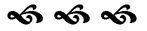
6장 - 자아와 상징에 대하여
“나”다움의 싹으로서의 지각적 루프
나는 영어에서 고유명사와 고유형용사를 제외하고 항상 대문자로 표기되는 유일한 단어가 바로 이 문장을 가장 화려하게 출항시키는 1인칭 대명사(주격 ‘I’)라는 사실이 기이하게 느껴진다. 이 관습은 인상적이고 이상하며, 그 단어가 매우 중요한 무언가를 지시하고 있음에 틀림없다는 것을 암시한다. 실제로 어떤 사람들에게는—어쩌면 대부분에게, 어쩌면 우리 모두에게도—“나(I)” 또는 “1인칭”이라는 말로 표현할 수 없는 감각, “거기에 있음” 또는 단순히 “존재함”이라는 직관적 감각, “경험을 가짐”과 “날것의 감각을 가짐”(일부 철학자들이 “감각질(qualia)”이라고 부르는 것)이라는 강력한 감각이 인생에서 가장 실제적인 것들처럼 보이며, 집요한 내면의 목소리는 이 모든 것이 환상이라거나 단지 “3인칭”(즉, 무생물) 대상들 사이에서 일어나는 어떤 종류의 물리적 과정들의 결과일 뿐이라는 어떤 제안에도 격렬하게 반발한다. 여기서 내 목표는 이 거친 내면의 목소리와 맞서 싸우는 것이다.
나는 진화에 의해 형성된 생명체들이 생존을 가장 근본적이고 자동적이며 내장된 목표로 삼고 있다는 단순한 사실에서 시작한다. 생존 가능성을 높이기 위해 모든 생명체는 자신의 환경에서 일어나는 사건들에 유연하게 반응할 수 있어야 한다. 이는 즉각적인 환경에서 벌어지는 일들을 비록 초보적일지라도 감지하고 범주화하는 능력을 발달시켜야 함을 의미한다(대부분의 지구 거주자들은 목성에 부딪히는 혜성은 꽤 안전하게 무시할 수 있다). 하지만 외부에서 벌어지는 일들을 감지하는 능력이 일단 발달하고 나면, 중대하고 급진적인 결과를 낳을 기묘한 부작용이 뒤따른다. 그것은 바로 생명체가 환경의 특정 측면을 감지하는 능력이 뒤집혀서, 그 생명체에게 자기 자신의 특정 측면을 감지하는 능력을 부여한다는 사실이다.
이러한 뒤집힘이 일어난다는 것은 조금도 놀랍거나 기적적인 일이 아니다. 오히려 그것은 생명체가 지각할 수 있다는 사실의 아주 평범하고, 사실상 사소한 결과일 뿐이다. 그것은 음향 피드백이 일어날 수 있다는 사실이나, TV 카메라가 자신의 이미지를 보내고 있는 스크린을 향해 겨누어질 수 있다는 사실보다 더 놀라울 것이 없다. 어떤 사람들은 그러한 자기 지각이라는 개념이 이상하거나 무의미하거나 심지어 비뚤어진 것이라고 여길지 모르지만, 그러한 편견이 자기 지각을 복잡하거나 미묘한 아이디어로 만들지는 못하며, 하물며 역설적인 것으로 만들지도 못한다. 어쨌든 생존을 위해 분투하는 생명체의 경우, 그 환경 속에 항상 존재하는 단 한 가지는 바로… 자기 자신이다. 그러니 다른 모든 것 중에서도 왜 그 생명체가 자기 세계에서 가장 두드러진 항목에 대해서만 지각적으로 면역이 되어야 하겠는가? 바로 그것이야말로 비뚤어진 것처럼 보일 것이다!
그러한 공백은 어휘가 계속 늘어나면서도 “말하다”, “이야기하다”, “단어”, “언어”, “이해하다”, “묻다”, “질문”, “대답”, “대화하다”, “주장하다”, “부인하다”, “논쟁하다”, “들려주다”, “문장”, “이야기”, “책”, “읽다”, “고집하다”, “묘사하다”, “번역하다”, “바꾸어 말하다”, “반복하다”, “거짓말하다”, “얼버무리다”, “명사”, “동사”, “시제”, “글자”, “음절”, “복수형”, “의미”, “문법”, “강조하다”, “지시하다”, “발음하다”, “과장하다”, “허세 부리다” 등과 같은 흔한 개념들을 가리키는 단어는 결코 발달시키지 못한 언어를 떠올리게 한다. 만약 그토록 기묘하게 자기 무지적인 언어가 존재한다면, 그 언어가 유연성과 정교함을 더해 감에 따라 화자들은 말하고, 논쟁하고, 허세 부리는 등의 행위에 점점 더 많이 참여하면서도 결코 이러한 활동들을 지칭하지 못할 것이고, 질문, 대답, 거짓말 같은 실체들은 (이름 지어지지 않은 채로도) 점점 더 두드러지고 많아질 것이다. 버트런드 러셀의 소심한 유형 이론에서 나온 절름발이 형식주의들처럼, 이 언어는 그 핵심부에 뻥 뚫린 구멍—단어나 발화나 책 등이 스스로를 지칭할 어떤 메커니즘도 없다는—을 갖게 될 것이다. 이와 유사하게, 살아 있는 생명체가 지각과 범주화의 풍부한 능력을 진화시켜 놓고도 기질적으로 그 장치의 어느 부분도 자기 자신에게 초점을 맞출 수 없다면 그것은 매우 비정상적일 것이다. 그 선택적 방치는 병적일 것이며, 생존을 위협할 것이다.
루프의 다양한 형태
물론 가장 원시적인 생명체는 자기 지각이 거의 없거나 전혀 없다. 비유하자면, 광부의 헬멧에 단단히 부착되어 항상 광부의 눈에서 멀어지는 쪽을 향할 뿐 결코 눈 안쪽을 향하지 않는 손전등처럼, TV 세트 꼭대기에 단단히 볼트로 고정되어 스크린에서 멀어지는 쪽을 향하고 있는 TV 카메라를 생각해 볼 수 있다. 그러한 TV 설정에서는 당연히 스스로를 향한 루프가 불가능하다. 아무리 돌려도 카메라와 TV 세트가 함께 동기화되어 돌아가므로 루프가 닫히는 것을 막는다.
다음으로 우리는 더 “진화한”, 따라서 더 유연한 설정을 상상해 본다. 이번에는 카메라가 TV 세트에 볼트로 고정되어 있는 대신 “짧은 목줄”로 연결되어 있다. 여기서는 전선의 길이와 유연성에 따라 카메라가 충분히 비틀어져서 뷰파인더 안에 TV 스크린의 적어도 일부를 포착하는 것이 가능할 수 있으며, 이는 잘린 복도를 만들어 낸다. 이 정도 정교함의 피드백에 해당하는 생물학적 짝은 우리의 반려동물이나 심지어 어린아이들이 약간 자기 인식을 하는 방식일 수 있다.
다음 단계는 당연히 “목줄”이 충분히 길고 유연해서 비디오카메라가 스크린의 중앙을 똑바로 겨눌 수 있는 경우다. 이것은 잘린 복도보다 훨씬 더 풍부한 끝없는 복도를 허용할 것이다. 그럼에도 스스로를 바라보는 루프를 닫을 수 있는 가능성이 시스템의 풍요로움을 결정짓지는 못한다. 여전히 열린 선택지들이 많기 때문이다. 카메라는 기울일 수 있는가 없는가, 그리고 그렇다면 얼마나 기울일 수 있는가? 줌인이나 줌아웃을 할 수 있는가? 이미지는 컬러인가, 아니면 그저 흑백인가? 밝기와 대비를 조절할 수 있는가? 이미지의 해상도는 어느 정도인가? 환경을 관찰하는 시간 대비 자기 관찰에 쓰는 시간의 비율은 얼마인가? 비디오카메라 자체가 스크린 위에 나타날 어떤 방법이 있는가? 등등. 여전히 만지작거릴 매개변수가 많으므로, 잠재적 루프에는 정교함의 열린 차원들이 많이 존재한다.
수용 대 지각
이 모든 선택지가 제공하는 풍요로움에도 불구하고, 스스로를 바라보는 텔레비전 시스템은 항상 한 가지 결정적인 측면이 결여되어 있을 것이다. 즉, 단순한 수용(reception), 혹은 이미지 받기와는 대조되는 지각(perception)의 능력이다. 지각은 방대한 수의 작은 신호들로 구성된 어떤 종류의 입력(아마도 2차원 이미지일 수 있지만 반드시 그럴 필요는 없다)을 출발점으로 삼지만, 거기서 훨씬 더 나아가 결국에는 휴면 상태에 있는 거대한 상징(symbols) 레퍼토리 중 작은 부분집합을 선택적으로 촉발하는 것으로 귀결된다. 여기서 상징이란 표상적 성질을 지닌 이산적 구조물이다. 즉, 두개골 안의 상징은 가상의 캐리니움 속의 심볼과 마찬가지로, 특정 범주나 개념을 구현하는 뇌의 방식을 구성하는 촉발 가능한 물리적 구조로 생각해야 한다.
이 새로운 의미의 “상징”이라는 단어에 대해 짧은 단서를 달아야겠다. 이 단어는 많은 사전 연상을 띠고 있으며, 그중 일부는 내가 분명히 피하고 싶기 때문이다. 우리는 종종 쓰여진 기호(알파벳 글자, 숫자, 악보의 음표, 한자 등)를 “상징”이라고 부른다. 그것은 내가 여기서 염두에 두고 있는 의미가 아니다. 우리는 또한 때때로 신화나 꿈, 우화 속의 사물들(예를 들어 열쇠, 불꽃, 반지, 검, 독수리, 시가, 터널)을 다른 무언가를 나타내는 “상징”이라고 말한다. 이것 역시 내가 염두에 두고 있는 의미가 아니다. “뇌 속의 상징”이라는 구절로 내가 전달하고자 하는 아이디어는, 당신이 예컨대 에펠탑을 떠올릴 때마다 두개골 안의(혹은 당신이 어느 종에 속하느냐에 따라 캐리니움 안의) 어떤 특정 구조가 활성화된다는 것이다. 그 뇌 구조가 무엇이든 간에, 그것이 바로 내가 당신의 “에펠탑 상징”이라고 부를 것이다.
당신은 또한 “알베르트 아인슈타인” 상징, “남극 대륙” 상징, 그리고 “펭귄” 상징을 가지고 있다. 후자는 당신이 한 마리 이상의 펭귄을 지각할 때, 혹은 심지어 아무것도 지각하지 않은 채 펭귄에 대해 생각만 할 때도 촉발되는 뇌 속의 어떤 구조다. 당신의 뇌 속에는 “차다(kick)”, “키스하다(kiss)”, “죽이다(kill)” 같은 행위 개념을 위한 상징들, “앞에(before)”, “뒤에(behind)”, “사이에(between)” 같은 관계 개념을 위한 상징들 등도 있다. 그러므로 이 책에서 뇌 속의 상징들은 유전자가 유전적 형질에 대응하는 화학적 실체인 것과 마찬가지로, 개념에 대응하는 신경학적 실체들이다. 각 상징은 대부분의 시간 동안 휴면 상태에 있지만(어쨌든 우리 대부분은 솜사탕, 달걀국, 성 토마스 아퀴나스, 페르마의 마지막 정리, 목성의 대적점, 혹은 치실 디스펜서에 대해 거의 생각하지 않는다), 다른 한편으로 우리 뇌의 레퍼토리에 있는 모든 상징은 언제든 잠재적으로 촉발될 수 있다.
방대한 수의 수용된 신호(signals)에서 한 줌의 촉발된 상징(symbols)으로 이어지는 통로는 일종의 깔때기 과정(funneling process)으로, 거기서 초기 입력 신호들이 조작되거나 “마사지”되고, 그 결과들이 선택적으로 추가적인(즉, 더 “내부적인”) 신호들을 촉발하는 식이다. 신호 분대들에 의한 이러한 바통 터치는 뇌 속에서 점점 좁아지는 경로를 그려 나가고, 결국 작은 상징 집합을 촉발하는 것으로 끝맺는데, 그 상징들의 정체는 물론 원래 입력 신호들의 미묘한 함수다.
따라서 아마도 재미있을 예를 들자면, 공항 중앙 홀을 걸어가는 여행자의 콧구멍 속 수많은 미시적 후각 경련들은 여행자의 배고픔 상태와 과거 경험에 따라 “달콤한”과 “냄새”라는 두 상징의 공동 촉발로 이어지거나, “끈적끈적한”과 “살찌는”이라는 상징의 촉발, 혹은 “시나본(Cinnabon)”과 “근처에”라는 상징의 촉발, 혹은 “풍기는”, “광고”, “잠재의식적”, “교활한”, “속임수”라는 상징들의 촉발로 이어질 수 있다—아니면 뇌 속에서 이 열한 개의 상징 모두가 어떤 순서로든 촉발될 수도 있다. 이러한 상징 촉발의 각 사례는 지붕에 떨어지는 백만 개의 빗방울처럼 어떤 출처로부터 도착하는 거대한 수의 미시적 신호들을 단순히 수용하는 것과는 대조되는, 하나의 지각 행위를 구성한다.
명확성을 위해 나는 지각 과정을 너무 단순하게 그렸다. 왜냐하면 실제로는 엄청난 양의 양방향 흐름이 있기 때문이다. 신호들은 바깥에서 안쪽으로, 상징들을 향해 일방적으로만 전파되지 않는다. 과거 경험에서 비롯된 기대감들이 동시에 특정 상징들로부터 바깥쪽으로 전파되는 신호들을 발생시킨다. 안쪽으로 향하는 신호들과 바깥쪽으로 향하는 신호들 사이에 일종의 협상이 일어나고, 그 결과 날것의 입력을 상징적 해석에 연결하는 경로가 고정(locking-in)된다. 뇌 속에서의 이러한 흐름 방향의 혼합은 지각을 진정으로 복잡한 과정으로 만든다. 하지만 현재의 목적상, 지각이란 빠른 양방향 신호 전달의 소용돌이 덕분에 들이닥치는 입력 신호의 급류가 결국 작은 상징 집합을 촉발하거나, 덜 생물학적인 말로 하면 몇 개의 개념을 활성화하는 것을 의미한다고 말하면 충분하다.
요약하자면, 시각적 충실도가 아무리 높더라도 비디오 시스템에 빠져 있는 재료는 선택적으로 촉발될 수 있는 상징들의 레퍼토리다. 그러한 레퍼토리가 존재하고 접근될 때만 우리는 그 시스템이 실제로 무언가를 지각하고 있다고 말할 수 있을 것이다. 그래도 평범한 비디오 시스템을, 잠재적으로 촉발 가능한 상징들의 레퍼토리로 이어지는 신호 마사지 과정들의 연쇄를 지원하는 대단히 정교한 추가 회로로 보강하는 것을 상상하지 못할 이유는 없다. 사실 그러한 공학적 도전을 어떻게 다룰지 생각해 보는 것은 생명체의 뇌 속 지각 과정과 인공 마음(또는 그 문제에 있어 외계 생명체)의 인지 시스템 속 그 짝을 동시에 그려 보는 유용한 방법이다. 하지만 아주 명백하게도, 지구상의 것이든 외계의 것이든 인공적인 것이든 그러한 아키텍처의 모든 구현이 들어오는 자극에 의해 잠재적으로 촉발될 수 있는 똑같이 풍부한 상징 레퍼토리를 소유하지는 않을 것이다. 이 책의 앞부분에서 그랬듯이, 나는 다시 한 번 정교함의 사다리를 타고 올라가는 것을 고려해 보고자 한다.
모기의 상징
겸손한 모기(내가 거만한 모기를 아는 바는 없지만)에서 시작해 보자. 그렇게 원시적인 생명체는 외부 세계에 대해 어떤 종류의 표상을 가지고 있을까? 다시 말해, 지각 과정이 활용할 수 있는 어떤 종류의 상징 레퍼토리가 그 뇌 속에 들어 있을까? 모기가 “바깥에” 사물들이 존재한다는 것을 알기나 혹은 믿기나 할까? 나는 회의적이지만, 대답이 ‘예’라고 가정해 보자. 모기가 그렇게 등록한 사물들을 어떤 종류의 범주에 할당할까? “알다”나 “믿다” 같은 단어가 모기에게 어떤 의미로든 적용될 수 있을까?
조금 더 구체적으로 생각해 보자. 모기는 (물론 단어를 사용하지 않고) 외부 세계를 “의자”, “커튼”, “벽”, “천장”, “사람”, “개”, “털”, “다리”, “머리”, 또는 “꼬리” 같은 정신적 범주들로 나눌까? 다시 말해, 모기의 뇌는 그러한 비교적 높은 추상화를 위한 상징들—이산적이고 촉발 가능한 구조들—을 포함하고 있을까? 이것은 꽤 그럴듯하지 않아 보인다. 어쨌든 모기다운 일을 하는 데 있어 모기는 그런 “지적인” 사치품 없이도 완벽하게 잘 해낼 수 있을 테니까. 내가 개를 물든, 고양이를 물든, 쥐를 물든, 인간을 물든 무슨 상관이며—또 그것이 팔이든, 귀든, 꼬리든, 다리든 무슨 상관인가—피만 빨 수 있다면 말이다!
그렇다면 모기가 가질 필요가 있는 범주들은 어떤 종류일까? “잠재적 먹이 공급원”(줄여서 “좋은 것(goodie)”)과 “착지할 잠재적 장소”(줄여서 “항구(port)”) 같은 것이 내가 기대하는 그 범주 체계의 최대치다. 또한 모기는 우리 인간이 “잠재적 위협”이라고 부를 만한 무언가—빠르게 움직이는 특정 종류의 그림자나 시각적 대비(줄여서 “나쁜 것(baddie)”)—를 희미하게나마 인식하고 있을지도 모른다. 하지만 다시 말하지만, “인식하다(aware)”는 “희미하게”라는 수식어를 붙이더라도 너무 강한 단어일 수 있다. 여기서 핵심 쟁점은 모기가 그러한 범주들을 위한 상징을 가지고 있는지, 아니면 대신 상징의 촉발로 정점을 찍는 어떤 종류의 지각적 신호 연쇄도 포함하지 않는 더 단순한 유형의 기계 장치로 버틸 수 있는지 여부다.
상징을 건너뛰고 지각의 매우 소박한 대용품으로 버틴다는 이 이야기가 당신에게 약간 흐릿하게 느껴진다면, 다음 질문들을 생각해 보라. 변기는 아무리 미약하게라도 자신의 수위를 인식하는가? 온도 조절 장치는 극도로 미약하게라도 자신이 제어하는 온도를 인식하는가? 열 추적 미사일은 아무리 최소한으로라도 자신이 추격하는 비행기에서 나오는 열을 인식하는가? 익스플로라토리움의 쾌활하게 뛰어다니는 붉은 점은 비록 끔찍할 정도로 초보적이지만 자신이 늘 그토록 즐겁게 피해서 달아나는 사람들을 인식하는가? 만약 당신이 이 질문들에 “아니오”라고 답했다면, 모기의 머리 안에도 그와 비슷하게 인식하지 못하는 메커니즘들이 있어서, 모기가 피를 찾고 맞아서 죽는 것을 피하게 해 주면서도 어떤 아이디어도 사용하지 않고 이러한 위업을 달성한다고 상상해 보라.
모기의 자아
모기의 상징을 고려했으니, 이제 우리는 우리 탐구의 핵심으로 한 치 더 다가간다. 모기의 내면성(interiority)의 본질은 무엇인가? 즉, 모기의 “나”다움에 대한 경험은 무엇인가? 모기는 얼마나 풍부한 자아감을 부여받았는가? 이 질문들은 매우 야심 차므로, 조금 더 단순한 것을 시도해 보자. 모기는 자신이 어떻게 생겼는지에 대한 시각적 이미지를 가지고 있는가? 나는 당신이 이 점에서 나의 회의론을 공유하기를 바란다. 모기는 자신에게 날개나 다리나 머리가 있다는 것을 아는가? 도대체 어디서 모기가 “날개”나 “머리” 같은 아이디어를 얻겠는가? 모기는 자신에게 눈이나 주둥이가 있다는 것을 아는가? 그런 제안만으로도 우스꽝스러워 보인다. 모기가 어떻게 그런 것들을 알아낼 수 있겠는가? 대신 우리 모기가 자신의 내부 상태에 대해 알고 있는 것에 대해 조금 추측해 보자. 모기는 자신이 덥거나 춥다는 느낌을 가지는가? 지치거나 기운이 넘친다는 느낌을 가지는가? 배고프거나 굶주렸다는 느낌을 가지는가? 행복하거나 슬프다는 느낌을 가지는가? 희망에 차거나 두려워하는가? 유감스럽지만, 이런 것들조차 모기처럼 겸손한 존재에게는 선을 훨씬 넘어선 것처럼 보인다.
그렇다면 “아프다”와 “안 아프다” 같은 더 기본적인 것들은 어떠한가? 나는 여전히 회의적이다. 반면, 모기의 눈에서 뇌로 신호가 보내지고 다른 신호가 날개로 튕겨 돌아가서, 우리 인간에게 “왼쪽의 위협으로부터 도망쳐” 또는 단순히 “여기서 나가자!”라고 말로 표현할 수 있는 반사 작용을 일으키는 것은 쉽게 상상할 수 있다. 하지만 이처럼 전보문 같은 영어 단어로 옮겨 놓는 것 조차도 모기가 너무 인식하는 것처럼 들리게 만든다고 나는 염려한다. 나는 모기의 내면생활을 수세식 변기나 온도 조절 장치의 내면생활에 기꺼이 비유하겠지만, 나 개인적으로는 그 정도가 갈 수 있는 최대치다. 모기의 행동은 “상징”이라는 이름에 걸맞은 그 어떤 것에도 의존하지 않고 완벽하게 이해할 수 있는 것처럼 보인다. 다시 말해, 모기의 말 없고 개념 없는 위험 회피 행동은 우리 인간이 아는 지각보다는, 의사의 망치가 무릎을 때릴 때 당신이 반사적으로 발을 차는 말 없고 개념 없는 망치 회피 행동과 더 비슷할 수 있다. 모기가 당신의 무릎보다 더 많은 내면생활을 가지고 있는가?
모기는 자신이 광대한 세계 속의 움직이는 부분이라는 아주 작은 희미한 느낌이라도 가지고 있는가? 다시 한 번 나는 그렇지 않다고 의심한다. 왜냐하면 이를 위해서는 “크다”, “작다”, “부분”, “장소”, “움직이다” 등과 같은 온갖 추상적인 상징들이 그 미시적인 뇌 속에 자리 잡고 있어야 할 것이며, 하물며 “나 자신”이라는 상징은 말할 것도 없기 때문이다. 모기에게 왜 그런 사치품들이 필요하겠는가? 그것들이 어떻게 모기가 피나 짝을 더 효율적으로 찾는 데 도움을 주겠는가? 이런 근사한 상징들을 수용할 만큼 충분한 두뇌 능력을 갖춘 가상의 모기는 더 날렵하고 단순한 사촌들보다 훨씬 더 많은 뉴런을 지고 다녀야 하는 먹물(egghead)일 것이고, 그리하여 그들보다 더 무겁고 느릴 것이며, 이는 피와 번식을 위한 쟁탈전에서 그들과 경쟁할 수 없어 진화 경쟁에서 패배할 것임을 의미한다.
어쨌든 나의 직관은 모기의 매우 효율적인 아주 작은 신경계에는 지각적 범주(그리고 따라서 상징)가 전혀 결여되어 있다는 것이다. 내가 틀리지 않았다면, 이는 모기의 뇌 속에 존재할 수 있는 자기 지각 루프의 종류를 극도로 낮은 수준으로 축소시키며, 그리하여 모기를 참으로 매우 “작은 영혼을 가진 자”로 만든다. 내가 모기의 “영혼”이 익스플로라토리움의 벽 위를 튕겨 다니는 작은 붉은 빛의 점의 영혼과 대략 같은 “크기”—가령, 1휴네커의 100억 분의 1(즉, 대략 인간 영혼의 1조 분의 1)—일지도 모른다고 제안하는 것이 너무 신성모독적이거나 미친 소리처럼 들리지 않기를 바란다.
물론 나는 이 수치적 추정을 할 때 경박하게 굴고 있지만, 모기의 뇌 속에 상징이 존재하는지 부재하는지에 대한 나의 주관적 추측을 제시할 때는 꽤 진지하다. 그럼에도 그것은 단지 주관적 추측일 뿐이고 당신은 동의하지 않을 수도 있지만, 그러한 세부 사항에 대한 논쟁은 여기서 핵심이 아니다. 요점은 훨씬 더 단순하고 투박하다. 단지 본질적으로 이 정도의 복잡성 수준이, 그리고 그 이상의 수준은 적용되지 않는 어떤 종류의 생명체가 존재한다는 것뿐이다. 만약 당신이 내 판단에 동의하지 않는다면, 적절한 수준에 도달했다고 느껴질 때까지 다양한 동물 지성의 척도를 위아래로 오르내려 보기를 권한다.
이 모든 것에 대한 마지막 성찰 하나. 어떤 독자들은 모기의 시선으로 본 세상에 대한 이 모든 질문들에 대해 대단히 진지하게 들리는 어조로 항의할지도 모른다. “우리가 어떻게 알 수 있겠는가? 당신도 나도 모기의 뇌나 마음속에 들어갈 수 없다—그 누구도 못 한다. 내가 아는 한, 모기도 나만큼이나 의식이 있을 수 있다!” 글쎄, 나는 그러한 주장이 진심일 수 없다고 정중히 제안하고 싶다. 왜냐하면 그런 독자들은 팔에 앉은 모기를 두 번 생각하지 않고 찰싹 때려잡을 것이라는 데 10달러를 걸 수 있기 때문이다. 만약 그들이 모기가 자신들만큼이나 지각력을 가졌을 가능성이 꽤 높다고 진정으로 믿는다면, 어째서 그들은 순식간에 모기의 목숨을 끊어 버리는 데 거리낌이 없는가? 그들이 주장하듯 인간만큼이나 많은 의식을 누리고 있을지도 모르는 생명체를 처형하면서도 아무렇지도 않다면, 이 사람들은 추악한 괴물이 아닌가? 나는 사람들의 의견을 그들의 말이 아니라 행동으로 판단해야 한다고 생각한다.
로봇 차량에 관한 막간
더 높은 동물 종을 고려하기 전에, 매끄러운 고속도로나 바위투성이 사막을 스스로 운전해 가는 자동차에 대한 짧은 논의를 끼워 넣고 싶다. 그러한 차량 위에는 차량이 환경을 파악할 수 있게 해 주는 추가 프로세서가 장착된 하나 이상의 텔레비전 카메라(그리고 레이저 거리 측정기 및 기타 종류의 센서)가 실려 있다. 화면의 색상이나 날것의 형태만을 단순하게 분석하는 것으로는 뒤집히거나 갇히지 않고 장애물을 피해 가는 방법에 대한 좋은 조언을 얻을 수 없다. 그러한 시스템이 성공적으로 스스로 운전하려면, 바깥 풍경에 의해 선택적으로 촉발될 수 있는 사전 포장된 지식 구조들의 적지 않은 저장소를 가지고 있어야 한다. 따라서 차량이 진흙에 빠지거나, 도랑에 갇히거나, 두 바위 사이에 끼이는 것을 피하려면 “도로”, “언덕”, “도랑”, “진흙”, “바위”, “나무”, “모래” 등과 같은 추상적 개념들에 대한 약간의 지식이 필요할 것이다. 텔레비전 카메라와 거리 측정기 등은 차량의 “지각 과정”의 가장 단순한 초기 단계만을 제공하며, 방금 언급한 종류의 다양한 지식 구조들의 촉발은 그 과정의 먼 끝자락, 즉 상징적 끝자락에 해당한다.
나는 앞선 문장에서 “지각 과정”이라는 단어 주위에 따옴표를 붙일까 말까 살짝 망설였지만, 붙이든 안 붙이든 비난받을 것이라 생각하며 임의의 선택을 내렸다. 즉, 따옴표를 빼면 그러한 로봇 차량의 시각 입력 처리에서 일어나는 일이 진정으로 우리 자신의 지각과 같다고 암묵적으로 시사하게 될 것이고, 반대로 따옴표를 붙이면 “단순한 기계”가 할 수 있는 일과 생명체가 하는 일 사이에 건널 수 없는 어떤 심연이 있다고 암묵적으로 시사하게 될 것이기 때문이다. 어느 쪽 선택이든 너무 흑백논리적인 입장이다. 아쉽게도 따옴표는 회색조로 나오지 않는다. 만약 그랬다면 나는 더 미묘한 입장을 시사하기 위해 어떤 중간 회색조를 사용했을 것이다.
오늘날 로봇 차량의 자율 주행은 비록 매우 인상적이지만 여전히 포유류의 지각 수준과는 거리가 멀다. 그럼에도 환경에 대한 그러한 차량의 “지각”(음영 없는 따옴표에 대해 사과한다!)은 모기의 “지각”(자—점수를 어느 정도 만회했기를 바란다)만큼이나 정교하며, 어쩌면 상당히 더 정교하다고 말하는 것이 공정하다고 생각한다. (로봇 차량이라는 개념과 다양한 수준의 “지각”이 그들에게 무엇을 가져다줄지에 대한 아름다운 설명은 발렌티노 브라이텐베르크(Valentino Braitenberg)의 책 《차량(Vehicles)》에 나와 있다.)
더 자세히 들어가지 않고 간단히 말하자면, 이 책의 같은 부분에서 살아 있는 동물과 자율 주행 로봇을 함께 논의하는 것은 완벽하게 일리가 있다. 오늘날의 기술적 성취들이 복잡한 환경에서 생존하는 생명체 시스템 내부에서 무슨 일이 일어나는지를 이해하는 데 우리를 점점 더 가까이 데려가고 있기 때문이다. 그러한 성공들은 컴퓨터가 영원히 생명의 과정에 대한 단순한 “시뮬레이션”에 불과할 운명이라는, 존 설이 끝없이 되풀이하는 진부한 교리가 거짓임을 보여 준다. 만약 자동 기계가 엄청나게 험난한 사막 지형을 가로질러 200마일의 거리를 스스로 운전해 갈 수 있다면, 어떻게 이 위업이 단순한 “시뮬레이션”이라고 불릴 수 있겠는가? 그것은 확실히 방 안을 날아다니며 파리채를 피하는 모기의 행위만큼이나 적대적인 환경에서의 진정한 생존 행위다.
개의 생각(Dogthink) 곰곰이 생각해 보기
이제 바이러스에서 박테리아, 모기, 개구리, 개, 사람으로(중간에 몇 개의 가로대는 건너뛰었음을 안다) 올라가는 순수하게 생물학적인 지각 정교함의 사다리를 계속 올라가 보자. 우리가 점점 더 높이 올라갈수록 촉발 가능한 상징들의 레퍼토리는 물론 점점 더 풍부해진다—사실 “사다리를 올라간다”는 것이 그 외에 무슨 뜻이겠는가? 행동으로만 판단하더라도, 반려견들이 “내 발”, “내 꼬리”, “내 밥”, “내 물”, “내 밥그릇”, “실내”, “실외”, “개 문”, “사람 문”, “열림”, “닫힘”, “더움”, “추움”, “밤”, “낮”, “인도”, “도로”, “덤불”, “잔디”, “목줄”, “산책 가자”, “공원”, “자동차”, “자동차 문”, “내 큰 주인”, “내 작은 주인”, “고양이”, “친절한 이웃 개”, “사나운 이웃 개”, “UPS 트럭”, “수의사”, “공”, “먹다”, “핥다”, “마시다”, “놀다”, “앉아”, “소파”, “올라가다”, “나쁜 행동”, “벌” 등과 같은 상당한 범주의 레퍼토리를 발달시킨다는 것을 의심할 사람은 아무도 없을 것이다. 안내견들은 종종 100개 이상의 단어를 배우고 다양한 맥락에서 이러한 개념들의 매우 다채로운 사례들에 반응하며, 그리하여 내부 범주 체계(즉, 촉발 가능한 상징들의 레퍼토리)의 풍요로움을 어느 정도 입증해 보인다.
나는 개의 범주 레퍼토리의 본질을 시사하기 위해 일련의 영어 단어와 구절을 사용했지만, 물론 개가 이웃 개나 UPS 트럭에 반응할 때 인간의 단어가 개입된다고 주장하는 것은 아니다. 하지만 한 단어는 특별히 언급할 가치가 있는데, 바로 “내 꼬리”나 “내 밥그릇”에서 쓰인 “내(my)”라는 단어다. 대부분의 독자들은 반려견이 특정 발이 환경 속의 무작위적인 물리적 대상이나 다른 동물의 일부가 아니라 자기 자신에게 속한다는 것을 깨닫는다는 데 동의할 것이라 생각한다. 마찬가지로, 개가 자신의 꼬리를 쫓을 때 비록 그 행위의 루프 같은 아이러니는 분명 인식하지 못하겠지만, 저 꼬리가 자기 자신의 몸의 일부라는 것은 알고 있음에 틀림없다. 따라서 나는 개가 일종의 초보적인 자기 모델, 일종의 자기 자신에 대한 감각을 가지고 있다고 제안한다. “자동차”, “공”, “목줄”에 대한 상징들과 다른 동물 및 인간에 대한 상징들 외에도, 개는 자기 자신(즉, 상징 자체가 아니라 개 자신!)을 표상하는 일종의 내부 대뇌 구조를 가지고 있다.
개에게 이것이 있다는 것을 의심한다면, 침팬지는 어떠한가? 두 살배기 인간은 어떠한가? 어쨌든 이러한 종류의 반사적 상징 구조의 출현은, 그것이 지각 능력의 어느 수준에서 처음 등장하든 간에, “나”다움의 중심 싹, 최초의 불꽃을 구성하며, 아주 작은 초기 먼지 티끌 주위에서 자라나는 눈송이처럼 평생에 걸쳐 더 복잡한 “나”다움의 감각들이 그 주위에 달라붙게 된다.
다 자란 개 대부분이 개에 대한 상징을 가지고 있다는 점을 감안할 때, 개는 어떤 의미에서든 자신 역시 개라는 범주에 속한다는 것을 알까? 거울을 보고 주인 옆에 서 있는 “어떤 개”를 볼 때, 그 개가 자기 자신이라는 것을 깨달을까? 이것들은 흥미로운 질문이지만, 나는 답하려고 하지 않겠다. 나는 이러한 종류의 깨달음이 개 정신 능력의 가장자리에 놓여 있다고 의심하지만, 이 에세이에서의 내 목적상 개가 어느 쪽에 속하는지는 그리 중요하지 않다. 어쨌든 이 책은 개에 관한 책이 아니다. 여기서 핵심 요점은 생명체가 자신의 범주들 중 일부를 자기 자신에게 적용하기 시작하고, 자기 자신을 표상하는 정신적 구조를 구축하기 시작하며, 세상의 나머지 부분과의 관계 속에서 자신을 일종의 “지적 관점”에 두기 시작하는 어떤 복잡성 수준이 존재한다는 것이다. 이 점에서 나는 개가 모기보다 엄청나게 더 발전했다고 생각하며, 당신도 동의하리라 의심치 않는다.
반면, 당신은 개의 영혼이 인간의 영혼보다 상당히 “더 작다”는 데에도 나와 동의할 것이라 생각한다. 그렇지 않다면 왜 우리 둘 다 각자의 동물 보호소 앞에서 길 잃은 사냥개와 무력한 강아지들을 매일 “안락사”시키는 것에 반대하며 격렬하게 시위하고 있지 않겠는가? 당신은 노숙자나 버려진 아기들을 처형하는 것을 용인하겠는가? 무엇이 당신으로 하여금 개와 인간을 구별하게 만드는가? 그것은 그들의 영혼의 상대적 크기 때문일 수 있을까? 당신이 동물 보호소에서 항의 시위를 벌이기로 결심하려면 개들이 평균 몇 휴네커를 가져야 하겠는가?
개 정도의 정교함 수준에 있는 생명체는 지각 장치의 필연적인 뒤집힘과 소박하지만 적지 않은 범주의 레퍼토리 덕분에, 더 큰 세계 속의 물리적 실체로서 자기 자신에 대한 대략적인 감각을 발달시키지 않을 수 없다. (사막 횡단 대회의 로봇 차량들은 자기 자신을 바라보는 데 귀중한 시간을 쓰지 않는다—그것은 바퀴를 헛도는 것만큼이나 쓸모없을 것이다—따라서 그들의 자아감은 개의 자아감보다 상당히 덜 정교하다.) 비록 개는 자신의 신장이나 대뇌 피질에 대해서는 결코 알지 못하겠지만, 자신의 발, 입, 꼬리, 그리고 어쩌면 혀나 이빨에 대한 어떤 개념을 발달시킬 것이다. 거울 속 자신의 모습을 보고 “주인 옆에 있는 저 개”가 사실 자기 자신이라는 것을 깨달았을지도 모른다. 혹은 주인과 함께 찍은 홈 비디오에서 자신을 보고, 주인의 녹음된 목소리를 알아듣고, 비디오 속의 짖는 소리가 자기 자신의 것임을 깨달았을지도 모른다.
하지만 이 모든 것이 여러 면에서 인상적임에도 불구하고, 정상적인 인간의 일생 동안 계속해서 자라나는 자아감 및 “나”다움과 비교하면 여전히 극도로 제한적이다. 왜 그럴까? 피도(Fido), 로버(Rover), 스팟(Spot), 블래키(Blackie), 올드 도그 트레이(Old Dog Tray)에게 빠져 있는 것은 무엇일까?
인간 존재의 급진적으로 다른 개념 레퍼토리
인간이 다른 영장류로부터 서서히 분리되어 나오던 어느 시점에 극적인 진화적 심연이 열렸다. 그들의 범주 체계가 임의로 확장 가능하게(arbitrarily extensible) 된 것이다. 다른 종들에게서 보이는 매우 뚜렷한 제한성과 비교할 때, 우리의 정신생활 속으로 개방성이라는 극적인 성질, 본질적으로 무제한적인 확장성이 들어왔다.
인간의 뇌 속 개념들은 다른 개념들과 뭉쳐 더 큰 꾸러미가 될 수 있고, 그러한 더 큰 꾸러미는 그 자체로 새로운 개념이 될 수 있는 성질을 획득했다. 다시 말해, 개념들은 서로의 내부에 위계적으로 중첩(nest)될 수 있었고, 그러한 중첩은 임의의 정도까지 계속될 수 있었다. 이것은 나에게—그리고 나는 그것이 단순한 우연이라고 생각하지 않는다—비디오 피드백에서 끝없는 복도와 잘린 복도 사이의 거대한 차이를 떠올리게 한다.
예를 들어, 자식을 낳는 현상은 “어머니”, “아버지”, “자식” 같은 개념들을 낳았다. 이 개념들은 “부모”라는 중첩된 개념을 낳았는데, 이것이 중첩된 이유는 그것을 형성하는 데 “어머니”, “아버지”, 그리고 “둘 중 하나(either/or)”라는 추상적 아이디어의 세 가지 선행 개념에 의존하기 때문이다. (개에게 “둘 중 하나”라는 개념이 있는가? 모기에게는?) 일단 “부모”라는 개념이 존재하자, 그것은 “할머니”(“부모의 어머니”)와 “손주”(“자식의 자식”), 그리고 “증조할머니”와 “증손주”라는 개념들로 가는 문을 열어젖혔다. 이 모든 개념은 중첩 덕분에 우리에게 왔다. “누이”와 “형제”가 추가되면서 “삼촌”, “이모”, “사촌” 같은 더 높은 수준의 중첩을 가진 추가적인 개념들이 생겨날 수 있었다. 그리고 “가족” 같은 훨씬 더 중첩된 개념이 생겨날 수 있었다. (“가족”은 이 모든 선행 개념들을 당연시하고 그 위에 세워지므로 더 중첩되어 있다.)
집단적인 인간의 관념권(ideosphere) 속에서, 그러한 합성 행위를 통한 개념들의 축적은 눈덩이처럼 불어나기 시작했고, 한계가 없음이 드러났다. 우리 종은 곧 “연애 사건”, “삼각관계”, “정절”, “유혹”, “복수”, “절망”, “광기”, “신경 쇠약”, “환각”, “환상”, “실재”, “판타지”, “추상”, “꿈”, 그리고 물론 그 모든 것의 장대한 정점인 “연속극(soap opera)”(그 안에는 “광고 시간”, “옷깃의 때”, “X 브랜드”라는 개념들도 중첩되어 있다) 같은 개념들로 껑충 뛰어오르게 되었다.
평범해 보이는 “식료품점 계산대(grocery store checkout stand)”라는 개념을 생각해 보라. 나는 그것이 당신의 개인적인 개념 레퍼토리에 떳떳하게 자리 잡고 있는 구성원일 것이라고 기꺼이 내기를 걸겠다. 그것은 이미 네 개의 단어가 결합되어 있어 중첩된 실체처럼 들리며, 따라서 식료품을 다루는 상점에서 계산을 하는 대(stand)를 상징한다고 직관적으로 말해 준다. 하지만 눈에 보이는 어휘 구조만 들여다보는 것은 겉핥기에 불과하다. 사실상 이 개념은 수십 개의 다른 개념들을 포함하고 있으며, 그중에는 다음과 같은 것들이 있다. “쇼핑 카트”, “줄”, “손님들”, “기다리다”, “사탕 진열대”, “초코바”, “타블로이드 신문”, “영화배우”, “저질 헤드라인”, “추잡한 스캔들”, “주간 TV 편성표”, “연속극”, “십 대”, “앞치마”, “명찰”, “계산원”, “영혼 없는 인사”, “금전 등록기”, “키보드”, “가격”, “숫자”, “덧셈”, “스캐너”, “바코드”, “삐 소리”, “레이저”, “움직이는 벨트”, “냉동식품”, “통조림 캔”, “채소 봉투”, “무게”, “저울”, “할인 쿠폰”, “고무 구분 막대”, “밀다”, “포장 직원”, “비닐봉지”, “종이봉투”, “플라스틱 돈”, “종이 돈”, “담다”, “지불하다”, “신용카드”, “직불카드”, “긁다”, “영수증”, “볼펜”, “서명하다” 등등. 목록은 끝이 없어 보이지만, 우리는 그저 극도로 평범한 인간 개념 하나의 내부적 풍요로움에 대해 이야기하고 있을 뿐이다.
물론 우리가 식료품점 계산대에 대해 생각할 때 이 모든 구성 요소 개념들이 다 활성화될 필요는 없다. 항상 신뢰성 있게 활성화되는 핵심 개념들의 중심핵이 있는 반면, 이러한 더 주변적인 구성 요소들 중 많은 수는 활성화되지 않을 수도 있다. 하지만 앞선 모든 것들과 그보다 훨씬 더 많은 것들이 우리 마음속의 온전한 개념을 구성한다. 게다가 이 개념은 우리 마음속의 다른 모든 개념과 마찬가지로 “식료품점 계산대 로맨스”나 “장난감 식료품점 계산대” 같은 다른 개념들 내부에 완벽하게 통합될 수 있다. 당신은 이 주제를 바탕으로 자신만의 변주를 만들어 낼 수 있다.
일화 기억
우리가 친구들과 식탁에 둘러앉아 잡담을 나눌 때, 우리는 필연적으로 오래전에—종종 수년 전에—우리에게 일어났던 일화(episodes)들을 떠올리게 된다. 동네에서 개를 잃어버렸던 때. 이웃집 아이가 공항에서 길을 잃었던 때. 간발의 차로 비행기를 놓쳤던 때. 우리는 기차에 탔는데 친구가 간발의 차로 기차를 놓쳤던 때. 기차 안이 푹푹 찌는 듯 더워서 4시간 내내 복도에 서서 가야 했던 때. 잘못된 기차를 타고 1시간 반 동안 내릴 수 없었던 때. 모래시계 몸매를 공중에 그리며 음흉하게 웃는 몸짓으로 “마-릴-린 먼-로!”라고 말하는 것 외에는 영어를 한마디도 할 줄 아는 사람이 없던 때. 한밤중에 슬로베니아 시골에서 운전하다 완전히 길을 잃고 기름도 거의 다 떨어졌는데도 어떻게든 엉터리 슬로베니아어 몇 마디를 써서 이탈리아 국경까지 찾아갔던 때 등등.
일화는 일종의 개념이지만, 시간에 걸쳐 일어나며 각 일화는 아마도 세상에 단 하나뿐인 것으로, 고유명사와 비슷하지만 이름이 없고 시간의 특정 순간과 연결되어 있다. 각 일화가 “고유”하지만, 앞선 문단이 눈을 찡긋하며 “무슨 말인지 알지!”라는 어조로 시사하듯 일화들 역시 그들만의 범주에 속한다. (간발의 차로 비행기를 놓치는 것은 고유하지 않으며, 설령 평생에 단 한 번만 그런 일을 겪었더라도 당신은 이 범주의 구성원 몇 개를 알고 있을 가능성이 높고, 다른 무한한 수의 사례들을 쉽게 상상할 수 있다.)
일화 기억(episodic memory)은 우리 자신과 친구들, 그리고 우리가 읽은 소설 속 인물들과 본 영화, 신문 기사, TV 뉴스 클립 등에 일어났던 일화들을 담아 두는 개인적인 저장소이며, 우리를 이토록 인간답게 만드는 장기 기억의 주요 구성 요소를 형성한다. 분명히 일화에 대한 기억은 우리가 목격하는 외부 사건이나 이미 촉발된 다른 일화들에 의해 촉발될 수 있으며, 똑같이 분명하게도 특정 일화들에 대한 거의 모든 기억은 거의 항상 휴면 상태에 있다(그렇지 않다면 우리는 완전히 미쳐 버릴 것이다).
개나 고양이에게도 일화 기억이 있을까? 그들은 몇 년이나 몇 달 전, 혹은 바로 어제, 심지어 10분 전에 일어난 특정 사건들을 기억할까? 내가 우리 개 올리를 데리고 달리러 나갈 때, 올리는 전날 길 건너편에 있던 그 귀여운 달마시안(그녀 역시 목줄을 잡아당기고 있었다)에게 “안녕”이라고 인사하려고 목줄을 잡아당겼던 것을 기억할까? 사흘 전에 평소와 다른 길로 갔던 것을 기억할까? 추수감사절 휴가 동안 올리를 맡기려고 애견 호텔에 데려갈 때, 올리는 애견 호텔을 하나의 장소로 기억하는 것처럼 보이지만, 지난번에(혹은 어느 때든) 그곳에 있었을 때 일어났던 어떤 특정한 일을 기억할까? 만약 개가 특정 장소를 두려워한다면, 그곳에서 일어났던 특정 트라우마를 떠올리는 것일까, 아니면 그저 그 장소와 연관된 일반화된 나쁜 느낌만 있는 것일까?
나에게는 이 질문들이 매우 매혹적이긴 하지만, 여기서 그에 대한 답이 필요하지는 않다. 나는 동물 인식에 관한 학술 논문을 쓰고 있는 것이 아니다. 내가 바라는 것은 오직 독자들이 이 질문들에 대해 생각해 보고, 그중 일부는 “예”라는 답을 얻을 만하고, 일부는 “아니오”라는 답을 얻을 만하며, 일부는 우리가 이쪽으로도 저쪽으로도 말할 수 없다는 데 나와 동의하는 것이다. 하지만 나의 전반적인 요점은 다른 동물들과 달리 우리 인간은 이 모든 종류의 기억을 가지고 있으며, 실제로 그것들을 넘치도록 가지고 있다는 것이다. 우리는 15년이나 20년 전에 갔던 휴가의 특정 일화들을 아주 세세하게 기억한다. 우리는 우리가 왜 특정 장소와 사람들을 두려워하는지 정확히 안다. 우리는 베니스나 파리나 런던에서 완전히 뜻밖에 누구누구와 마주쳤던 때를 세세하게 다시 재생해 볼 수 있다. 인간 기억의 깊이와 복잡성은 어지러울 정도로 풍부하다. 그러니 작업에 쓸 개념과 기억이라는 이토록 풍부한 무기고를 소유한 인간이, 필연적으로 그러하듯 자기 자신에게 주의를 돌릴 때, 비범하게 깊고 얽힌 자기 모델을 만들어 낸다는 것은 전혀 놀라운 일이 아니다. 그 깊고 얽힌 자기 모델이 바로 “나”다움의 핵심이다. # 제7장 - 에피 현상
이보다 더 진짜일 수는 없다
지각의 깔때기 압축 과정 덕분에, 결국—즉 몇 밀리초 만에—뇌 속의 특정 이산적 심볼들이 활성화되고, 이를 통해 동물(로봇 차량도 잊지 말자!)은 물리적 환경과 긴밀하고 신뢰할 수 있게 관계를 맺을 수 있다. 성숙한 인간 동물은 바나나 껍질에 미끄러지지 않고 가시 돋친 장미 덤불에 부딪히지 않는 일을 훌륭히 해낼 뿐만 아니라, 강한 냄새, 낯선 억양, 귀여운 아기, 큰 충돌음, 자극적인 헤드라인, 멋진 스키 선수, 화려한 옷차림 등등에 눈 깜짝할 사이에 반응한다. 심지어 시속 80마일로 날아오는 커브볼을 가끔 쳐내기도 한다. 동물의 내적 세계 모방은 매우 신뢰할 수 있어야 하므로(코끼리라는 심볼이 모기 윙윙거리는 소리에 촉발되어서도 안 되고, 코끼리가 어슬렁거리며 나타났을 때 모기라는 심볼이 촉발되어서도 안 된다), 사적인 심볼 저장소를 통한 이 세계 모방은 의심할 여지 없는 안정성의 기둥이 된다. 동물이 지각하는 사물과 패턴이 곧 그 동물의 현실을 규정한다. 하지만 지각되는 모든 사물과 패턴이 똑같이 진짜로 느껴지는 것은 아니다.
물론 언어를 쓰지 않는 동물에게는 “내가 지각하는 것 중 무엇이 내게 가장 진짜인가?”와 같은 질문이 명시적으로든 암묵적으로든 결코 제기되지 않는다. 그러나 인간의 삶에서는 무엇이 진짜이고 무엇이 진짜가 아닌지에 대한 질문이 조만간 불가피하게 솟아오른다. 때로는 의식적이고 신중하게 말로 표현되기도 하고, 때로는 표현되지 않은 채 미완의 상태로 조용히 배경에서 끓고 있기도 하다. 어린 시절과 십 대 시절에 우리는 존재한다고 여겨지는 수많은 것들을 직접 보거나, 텔레비전에서 보거나, 책에서 읽거나, 전해 듣는다. 이 모든 것들은 우리의 관심과 현실 평가자의 승인을 얻기 위해 치열하게 경쟁한다. 예를 들어 신(God), 고질라(Godzilla), 고다이바(Godiva), 고도(Godot), 괴델(Gödel), 신들, 여신들, 유령, 구울, 고블린, 그렘린, 골렘, 골리워그, 그리핀(griffins), 그리폰(gryphons), 글루온(gluons), 그린치(grinches) 같은 것들이다. 아이가 이 중 일부의 실재성을 정리하는 데에는 몇 년이 걸린다. 사실 많은 사람들에게는 평생이 걸리는 일이며(때로는 그보다 조금 더 걸리기도 한다).
“X의 실재성을 정리한다”는 말은, 당신이 X를 얼마나 믿는지, 그리고 자신과 타인에게 무언가를 설명할 때 X라는 개념에 기대어도 편안한지에 대해 안정적인 결론에 도달한다는 뜻이다. 만약 당신이 설명할 때 그리핀을 기꺼이 사용하고 다른 사람이 그렇게 해도 움찔하지 않는다면, 그리핀은 당신에게 꽤 진짜 같은 개념인 셈이다. 이미 스스로 그리핀의 실재성을 어느 정도 정리했는데 그리핀에 관한 TV 특집 프로그램이 방영된다는 소식을 듣는다면, 그리핀이 존재하는지 아닌지 결정하는 데 도움을 받기 위해 그 쇼를 꼭 봐야겠다고 느끼지는 않을 것이다. 아마 당신은 그리핀을 강하게 믿거나, 아니면 유치한 환상이나 농담으로 여길 것이다. 어느 쪽이든 마음은 이미 정해진 상태다. 혹은 아직 그리핀의 실재성을 정리하지 못했을 수도 있다. 그렇다면 저녁 식사 자리의 대화에서 그리핀 이야기가 나왔을 때, 확신이 서지 않고 혼란스럽거나 무지한 느낌이 들고 회의적이거나 어정쩡한 태도를 취하게 될 것이다.
“X가 당신에게 얼마나 진짜인가”를 생각하는 또 다른 방법은, X의 존재를 당연시하는 신문 기사를 얼마나 신뢰할 것인가를 따져보는 것이다(예를 들어 살아있는 공룡, 히틀러 목격담, 화성에서 발견된 곤충, 영구기관, UFO 납치, 신의 전지함, 유체이탈 경험, 평행우주, 초끈, 쿼크, 빅풋, 빅 브라더, 빅뱅, 아틀란티스, 포트녹스의 금괴, 남극, 상온 핵융합, 아인슈타인의 혀, 홀든 콜필드의 뇌, 빌 게이츠의 수표책, 혹은 마라톤 주자들에게 흔히 말하는 20마일 지점의 ‘벽’ 같은 것들). 만약 X의 존재가 당연하게 전제되는 순간 기사 읽기를 멈춘다면, 당신은 X의 ‘실재성’을 매우 의심스럽다고 여기는 셈이다.
위에 언급된 개념 중 아무거나 하나를 골라 보자. 거의 확실히 그것을 열렬히 믿는 사람들이 많을 것이고, 조금만 믿는 사람들도 있을 것이며, 전혀 믿지 않는 사람들도 있을 것이다(무지 때문이든, 냉소 때문이든, 빈약한 교육 때문이든, 훌륭한 교육 때문이든). 권위자들은 이 개념들 중 일부가 진짜가 아니라고 거듭 말하지만, 우리는 텔레비전 쇼와 책과 신문에서 그것들에 대해 반복해서 듣기 때문에 그것들이 존재하는지, 존재할 수 있는지, 존재할지도 모르는지에 대해 묘하게 흐릿한 감각을 갖게 된다. 또 다른 것들은 권위자들이 절대적으로 진짜라고 말하지만 어쩐지 우리는 결코 보지 못한다. 또 어떤 것들은 과거에는 진짜였지만 더 이상은 진짜가 아니라고 들으며, 그 때문에 실재성에 관한 일종의 림보 상태에 놓인다. 또 다른 것들은 진짜라고 들었지만 우리의 상상력을 완전히 넘어선다. 또 어떤 것들은 진짜이긴 하지만 오직 은유적으로만, 혹은 대략적으로만 그렇다고들 한다. 이 모든 것을 정리하는 일은 결코 쉽지 않다.
콘크리트 벽과 추상적 천장
이 모든 것을 좀 더 구체적으로 살펴보자. 앞서 언급한 마라토너들의 20마일 ‘벽’은 얼마나 진짜일까? 만약 당신이 마라토너라면 거의 확실히 그것에 대해 잘 정리된 생각을 가지고 있을 것이다. 어쩌면 직접 경험했거나 경험한 사람들을 알고 있을지도 모른다. 혹은 그 개념이 크게 과장되었다고 생각할지도 모른다. 나 자신은 그 벽에 부딪혀 본 적이 없지만, 내가 가장 길게 달려본 거리가 겨우 15마일일 뿐이니 당연하다. 내가 아는 것은 ‘사람들 말에 따르면’ 대부분의 주자들이 제대로 훈련하지 않으면 대략 20마일 지점에서 잔인한 벽에 부딪히게 되는데, 이때 몸이 글리코겐을 모두 소진하고 대신 지방을 태우기 시작한다는 것이다(“몸이 자기 근육을 먹어 치우는 것”이라는 묘사도 들어보았다). 그것은 예고 없이 찾아오며 극심한 고통을 동반한다(마라토너 딕 비어즐리는 “나무 위에서 코끼리가 내 어깨 위로 떨어지는 것 같았다”고 말했다). 많은 주자들이 그 지점에서 더 이상 나아가지 못하고 포기한다. 하지만 이것이 보편적인 현상일까? 모든 사람에게 똑같이 일어날까? 어떤 마라토너들은 전혀 경험하지 않는가? 그리고 과학적으로 설명 가능하다고 해도, 그것이 사람이 실제로 부딪히는 콘크리트 벽만큼이나 진짜이고 만져질 듯한 현상일까?
1966년 내가 버클리 수학과 대학원에 입학했을 때, 나는 스스로를 꽤나 수학 영재라고 생각하고 있었다. 어쨌든 스탠퍼드에서 수학을 전공한 학부 시절에, 대부분의 과목을 큰 힘 들이지 않고 거뜬히 통과했을 뿐만 아니라 독창적인 연구도 많이 했고, 졸업할 때는 수학과로부터 ‘우수상(with Distinction)’까지 받았기 때문이다. 나는 수학자가 되어 위대한 일을 해낼 거라고 기대했다. 그런데 버클리에서는 모든 1학년 학생이 필수적으로 들어야 하는 두 과목—추상대수학과 위상수학—이 있었고, 나도 그 과목들을 수강했다. 충격적이게도 두 과목 모두 나에게는 너무나 어려웠다. 전에 한 번도 겪어보지 못한 종류의 어려움이었다. 나는 기말고사에서 아이디어를 암기하고 토해내는 식으로 좋은 성적을 받긴 했지만, 일 년 내내 전에 겪어본 적 없는 심각한 심상(imagery)의 결핍으로 머리가 계속 아팠다. 마치 아주 높은 산봉우리를 오르면서 공기가 점점 희박해져 찌르는 듯한 두통을 겪는 것 같았다. 추상 위에 추상이 쌓였고, 더 깊이 파고들수록 내 속도는 느려졌으며 이해하는 바는 줄어들었다. 마침내 1년 반이 지나자 나는 상황의 절망성을 깨달았고, 쓰라린 눈물을 쏟으며 자신감을 산산조각 낸 채 수학자가 되겠다는 꿈을 내던지고 그 분야를 영원히 떠났다. 아무런 사전 경고도 없이 내가 은유적으로 머리를 들이받은 이 증오스럽고 단단한 ‘추상적 천장’은 삶을 송두리째 바꾸어 놓은 쓰라린 트라우마였다. 그렇다면… 이 추상적인 ‘추상적 천장’은 얼마나 구체적이고, 얼마나 진정하며, 얼마나 진짜인 것일까? 마라토너의 벽만큼 진짜일까? 내 두개골이 쿵 하고 부딪혀 소리가 날 수 있는 나무 들보만큼 진짜일까? 정말로 진짜인 것은 무엇일까?
누구도 그렇게 계획하지 않았지만, 우리 대부분은 사춘기를 거치며 사방에 회색조가 깔린, 무엇이 진짜인지에 대한 대단히 미묘한 감각을 지닌 채 성인이 된다. (물론 나에게 미묘하게 다가오는 모든 문제가 그들에게는 완전히 흑백으로만 보이는—다루어야 할 지저분한 회색조가 전혀 없는—몇몇 어른들을 나도 알고 있고, 독자 여러분도 아마 알 것이다. 그렇게 살면 인생이 편할 것이다!) 사실 우리 대부분에게 삶이 ‘회색조’로 가득 차 있다고 말하는 것은 지나치게 단순한 표현이다. 그 말은 흰색과 검은색 사이를 오가는 수많은 회색의 정도를 가진 단선적인 1차원 연속체를 떠올리게 하지만, 실제로 이야기는 그보다 훨씬 더 다차원적이기 때문이다.
이 모든 것은 혼란스럽다. 왜냐하면 ‘진짜(real)’라는 단어는 다른 많은 단어들과 마찬가지로 날카롭고 명확한 이분법을 암시하는 것처럼 보이기 때문이다. 어떤 것들은 단순히 진짜이고 다른 것들은 단순히 진짜가 아니어야 마땅할 것 같다. 부분적으로 진짜인 것 따위는 없어야 마땅하다—그건 말이 안 되니까! 그럼에도 우리가 세계를 이 이상적인 흑백 이분법에 억지로 끼워 맞추려 아무리 애써도, 사물들은 불행히도 끔찍하리만큼 흐릿해지고 만다.
실재성에 대한 다면적인 지적 근거
내 책상 위 작은 골판지 상자 안에 있는 저 구슬은 분명히 진짜다. 왜냐하면 나는 거기 놓여 있는 골판지 상자를 보고, 다가가서 상자를 열어 구슬을 쥐어 보며 무게를 가늠하고 단단함을 느낄 수 있기 때문이다. 이 점에는 여러분도 수긍하리라 믿는다.
고속도로 출구 근처에 서 있는 75피트 높이의 셸(Shell) 주유소 간판의 위쪽 모서리도 진짜라고 나는 확신한다. 모든 도로 간판은 고체 물체이고 모든 고체 물체에는 위쪽이 있기 때문이다. 또한 간판의 아래쪽 모서리와 옆면을 볼 수 있으므로 유추를 통해 위쪽을 보는 것을 상상할 수 있기 때문이며, 비록 내가 거기에 직접 닿을 일은 결코 없겠지만 이론적으로는 기어 올라가거나 헬리콥터에서 내려다볼 수 있기 때문이기도 하다. 게다가 지진으로 간판이 쓰러진다면 달려가서 한때 위쪽 모서리였던 곳을 만져볼 수도 있을 것이다.
남극 대륙 역시 진짜다. 비록 내가 거기에 가본 적이 없고 앞으로도 거의 확실히 갈 일이 없겠지만, 수백 장의 남극 사진을 보았고, 남극 전체가 포함된 우주에서 찍은 지구 전체 사진도 보았으며, 거기에 다녀왔다고 말한 사람도 한 번 만난 적이 있기 때문이다.
왜 나는 어떤 사람들이 내게 하는 말은 다른 사람들의 말보다 더 믿을까? 왜 나는 (일부) 사진을 실재의 증거로 믿을까? 왜 특정 책에 실린 특정 사진들을 신뢰할까? 왜 특정 신문들은 신뢰하되 어느 정도까지만 신뢰할까? 왜 모든 신문을 똑같이 신뢰하지 않을까? 왜 모든 출판사를 똑같이 신뢰하지 않을까? 왜 모든 저자를 똑같이 신뢰하지 않을까?
수많은 종류의 추상화와 유추, 귀납적 추론을 통해, 그리고 온갖 권위자들을 인용하는 길고 구불구불한 사슬을 통해(고등학교 교사들은 해마다 ‘권위에 호소하는 논증’은 거짓이라고 가르치면서도 정작 자기들은 권위자이기 때문에 믿어야 한다고 확신하지만, 어쨌든 권위자의 인용은 모든 성인의 신념 체계를 지탱하는 필수적인 기둥을 이룬다), 우리는 ‘저 바깥에’ 무엇이 존재하는지에 관한 복잡하고 서로 맞물린 신념 체계를 구축한다. 그리고 다시 한번, 그 신념 체계는 불가피하고 매끄럽게 되접혀 우리 자신에게도 적용된다.
우리가 다른 사람들의 신장과 뇌를 믿는 것과 똑같이(거의 전적으로 유추와 권위에 호소하는 논증 덕분에), 우리는 우리 자신의 신장과 뇌를 믿게 된다. 우리가 다른 모든 사람들의 필멸성을 믿는 것과 똑같이(역시 주로 유추와 권위에 호소하는 논증 덕분에), 우리는 결국 우리 자신의 필멸성도 믿게 되며, 우리가 결코 페이지를 넘겨 읽을 수 없을 것임을 알면서도 지역 신문에 실릴 우리 자신의 부고 기사의 실재성까지도 믿게 된다.
이처럼 추상적인 것들에 대한 우리의 절대적인 확신은 어디에서 오는가? 첫째로, 구체적인 환경을 직접 모방하는 우리 내적 심볼들의 신뢰성에서 온다(예: 우리가 커피 한 잔을 사면 즉시 두개골 안 어딘가—신만이 아시는 곳—에 이 커피를 반영하는 물리적 기록이 생겨나, 테이블 위나 우리 손 안 어디에 있는지 추적하고 색깔, 쓴맛의 정도, 따뜻함, 남은 양을 끊임없이 업데이트한다). 둘째로, 우리가 직접 지각할 수 없는 더 추상적인 실체들(예: 프랑스 역사에서 나폴레옹의 역할, 후기 낭만주의 프랑스 작곡가들에게 바그너가 미친 영향, 혹은 에바리스트 갈루아가 증명한 5차 방정식의 거듭제곱근에 의한 해법 불가능성)에 대해 알려주는 우리 사고 메커니즘의 신뢰성에서 온다. 이 모든 더 추상적인 것들은 우리가 직접 경험하는 세계의 사건들에 의해 휴면 상태에서 무작위로 촉발되는 심볼들이 순간순간 끊임없이 강화되는 데 뿌리를 두고 있다. 이러한 즉각적인 정신적 사건들이 우리의 더 넓은 현실 감각을 떠받치는 기반암을 이룬다.
불가피하게도, 우리에게 가장 진짜처럼 느껴지는 것은 가장 자주 활성화되는 것이다. 우리의 손톱 거스러미는 우리에게 믿을 수 없을 만큼 진짜로 느껴진다(공교롭게도 나는 이 문단을 다듬는 동안 무심코 손톱 거스러미를 뜯고 있는 나 자신을 발견했다). 반면 우리 대부분에게 영국의 네더 월롭(Nether Wallop) 마을이나 히말라야의 높은 나라 부탄, 말할 것도 없이 안드로메다에서 천천히 소용돌이치는 나선 은하는 손톱 거스러미보다 훨씬 덜 진짜처럼 느껴진다. 비록 우리의 지성적인 자아가 후자가 거스러미보다 훨씬 크고 오래 지속되므로 훨씬 더 진짜여야 한다고 주장하고 싶을지라도 말이다. 입이 부르트도록 그렇게 말해 보아도, 실제로 그것을 믿는 것처럼 행동하는 사람은 거의 없다. 머나먼 땅에서 땅속 바위가 살짝 미끄러져 2만 명의 목숨을 앗아가는 일이나, 아마존 분지의 원시림이 끊임없이 약탈당하는 일이나, 굶주린 블랙홀에 의해 무력한 별들이 줄줄이 삼켜지는 일, 심지어 각각 천억 개의 별을 품은 두 거대 은하가 지금 이 순간 충돌하고 있는 일조차 나 같은 사람에게는 너무나 추상적이어서, 내 왼손 새끼손가락에 난 하찮은 손톱 거스러미가 주는 긴박감과 중요성, 그리하여 실재성에는 감히 비할 바가 못 된다.
우리는 모두 자기중심적이며, 결국 우리 각자에게 가장 진짜인 것은 우리 자신이다. 무엇보다 가장 진짜인 것은 내 무릎, 내 코, 내 분노, 내 배고픔, 내 치통, 내 옆구리 통증, 내 슬픔, 내 기쁨, 수학에 대한 내 사랑, 내 추상적 천장 등등이다. 이 모든 것들이 공통적으로 지닌 것, 이들을 하나로 묶어주는 것은 ‘나의(my)’라는 개념이며, 이는 ‘나(I)’ 또는 ‘나를(me)’이라는 개념에서 나온다. 따라서 비록 코나 심지어 치통보다 덜 구체적이긴 하지만, 이 ‘나’라는 것은 궁극적으로 우리 각자에게 부인할 수 없는 가장 단단한 바위처럼 보인다. 이것이 어쩌면 환상일 수 있을까? 아니면 완전한 환상은 아니더라도, 우리가 생각하는 것보다 덜 진짜이고 덜 단단한 것일 수 있을까? ‘나’라는 것이 만질 수 있고 무게를 잴 수 있고 옮길 수 있는 금단지라기보다는, 잡힐 듯 잡히지 않고 멀어지며 아른거리는 무지개에 더 가까운 것일 수 있을까?
운도 없고, 비누도 없고, 주사위도 없다
오래전 어느 날, 나는 서재 바닥에 놓인 작은 골판지 상자에서 봉투들을 한꺼번에 꺼내 책상 서랍 중 하나에 넣으려고 했다. 그래서 상자를 집어 들고 손을 넣어 그 안에 든 봉투 묶음(약 백 장쯤 되었다)을 오른손으로 꽉 쥐어 한 번에 꺼내려 했다. 여기까지는 전혀 놀라울 것이 없었다. 그런데 갑자기 엄지와 다른 손가락들 사이에서 아주 놀라운 무언가가 느껴졌다. 이상하게도, 그 얇은 작은 골판지 상자 한가운데에 구슬 하나가 놓여(아니, 떠?) 있는 것이었다!
내 세대의 대부분 미국인들처럼 나도 구슬을 수백 번은 쥐어 보았기에, 내가 느끼고 있는 것이 무엇인지 조금의 의심도 없이 알았다. 독자 여러분과 마찬가지로 나 역시 ‘노련한 구슬잡이’였다. 하지만 내가 보통 책상 위에 두던 이 상자 안에 어떻게 구슬이 들어갔을까? 당시에는 아이도 없었으니 그것도 설명이 안 되었다. 게다가 어째서 구슬이 바닥에 가라앉아 있지 않고 상자의 정가운데에 떠 있단 말인가? 왜 중력이 작동하지 않는 걸까?
나는 작고 매끄러운 색유리 구슬을 찾아 봉투들 사이를 들여다보았다. 허사였다. 그래서 손가락으로 봉투들 사이를 더듬으며 찾아보았다. 역시 아무것도 없었다. 하지만 전처럼 봉투 전체를 다시 꽉 쥐자마자, 구슬은 여전히 단단한 모습으로 거기에 있었다! 이 조그만 악마 같은 구슬은 도대체 어디에 숨어 있는 걸까?
나는 더 주의 깊게 살펴보았고, 물론 봉투들을 꺼내어 그 사이에서 흔들어 떨어뜨려 보려고도 했지만 여전히 허탕이었다. 그리고 마침내 확인해 본 결과, 각각의 봉투는 그 자체로 텅 비어 있었다. 도대체 무슨 일이 벌어지고 있는 걸까?
나의 오랜 친구 에피에게 바치는 뜻밖의 송시
영리한 독자 여러분(분명 노련한 봉투잡이이기도 할 것이다)에게는 이미 뻔한 일일지 모르지만, 믿어 달라, 나는 1~2분 동안 정말 어리둥절했다. 마침내 내 머리에 떠오른 것은, 그 안에 구슬 따위는 전혀 없지만 이 노련한 구슬잡이에게 세상 모든 구슬과 똑같이 느껴지는 무언가가 있다는 사실이었다. 그것은 각 봉투의 덮개가 만드는 ‘V’자 꼭짓점 부분에 종이가 세 겹으로 겹쳐 있고 얇은 풀층까지 있다는 사실 때문에 생겨난 부수현상(epiphenomenon)이었다. 이 순진한 디자인 결정이 의도치 않게 만들어낸 결과는, 정확히 똑같이 정렬된 백 장의 봉투를 꽉 누를 때 그 작은 영역만큼은 다른 영역만큼 압축되지 않고 저항한다는 것이다. 손끝에서 느껴지는 그 단단함은 우리에게 더 친숙한(감히 ‘더 진짜인’이라고 말해도 될까?) 단단함과 기묘할 정도로 닮아 있었다.
앞선 장들에서 기억하겠지만, 부수현상이란 눈에 보이지 않거나 지각되지 않고 어쩌면 전혀 의심조차 하지 못했던 수많은 작은 사건들이 모여 만들어낸 집단적이고 단일해 보이는 결과물이다. 달리 말하면, 부수현상은 환상이 아닌 수많은 작은 사건들의 공모로 만들어진 거대한 환상이라고 할 수 있다.
아무튼 나는 봉투 상자 속 구슬이라는 이 부수현상적 환상에 너무나 매료되고 사로잡혀서 그 봉투 상자에 ‘에피(Epi)’라는 별명을 붙였고, 그 후 30년 이상 지금까지도 간직하고 있다. (불행히도 상자가 너무 오래되어 부서지고 있다.) 그리고 가끔 자아와 ‘나’라는 개념에 대해 강연하러 어딘가로 여행을 갈 때면, 나는 에피를 챙겨 가서 청중들이 직접 손을 넣어 느껴보게 한다. 그러면 부수현상—이 경우에는 에피 현상(Epi phenomenon)—이라는 개념이 그들에게 매우 생생하고 진짜처럼 다가온다.
최근에 나는 애리조나주 투손에서 그런 강연을 하러 가면서 에피를 챙겨 갔다. 청중 중 한 명이었던 지넬 킹(Jeannel King)은 내 에피 이야기에 너무나 감명받은 나머지 시적 허용을 발휘해 자신의 삶으로 옮겨 적은 시를 한 편 썼고, 며칠 뒤 내게 보내주었다. 나 역시 그녀의 시에 너무나 반해 여기에 다시 실어도 될지 허락을 구했고, 그녀는 기꺼이 동의해 주었다. 자, 그럼 더 지체하지 않고 에피에서 영감을 받은 지넬 킹의 유쾌한 시를 소개한다.
봉투 상자에 바치는 송시
(구슬을 잃어버린 모든 이들을 위해…)
지넬 킹
바닥에 놓인 봉투 상자 하나—
서랍 속으로 옮기려 하네.
안을 꽉 쥐니—무언가 있네!
안을 들여다보니—공기뿐이네.
다시 꽉 쥐니 구슬이 잡히네.
이건 내 마음속 구슬인가?
이제 마음을 굳게 먹고 하나씩,
봉투를 꺼내 보지만—여전히 아무것도 없네!
하나하나 자세히 보려면,
종이에 베이고 먼지를 무릅써야 하네.
끝부분에? 아니면 마흔여섯 번째 봉투에?
온전한 내 구슬은 존재하지 않네.
그때 거친 목소리의 어머니가 속삭이시네, “넬,
계속 이러다간 지옥에 갈 게다!”
그러자 아버지가 맞받아치시네, “잔소리 마쇼!
넬이 봉투 속에서 신을 찾게 내버려 두오!”
그렇게 사방에 봉투들이 널려 있고
나는 당혹한 채 바닥에 앉아 있네.
내 구슬은 잃었지만, 내 핵심 속에는
어쩌면 그 이상의 무언가가 있지 않을까?
부분들보다 더 크게 자란 이 전체:
단 하나의 부분도 홀로 서지 못하네.
부분으로 나누면 구슬은 그저 비웃을 뿐.
온전한 채로, 이 상자를 간직하리라.
구도 없고, 반지름도 없고, 질량도 없다
나의 부수현상적 구슬에서 가장 기이한 점은, 상자 속 그 ‘물체’가 구형이라는 확신이 얼마나 강했는지, 그리고 내가 얼마나 자신 있게 그 지름(대부분의 구슬처럼 약 0.5인치)을 추정하고 단단함(예컨대 달걀노른자나 찰흙 공과 비교해서)을 묘사할 수 있었는지 하는 점이었다. 존재하지 않는 이 물체의 많은 측면들이 분명하고 친숙한 촉각적 현상이었다. 한마디로 나는 촉각적 환상에 감쪽같이 속아 넘어간 것이다. 그 안에는 어디에도 구슬이 없었다—단지 통계적 부수현상만 있었을 뿐이다.
그럼에도 불구하고, “그것은 마치 구슬처럼 느껴졌다”라는 문구가 “나는 종이 세 겹과 풀층 백 개가 정확히 정렬되어 만들어낸 집단적 효과를 경험했다”라고 쓰는 것보다 독자들에게 내 경험을 훨씬 더 명확하게 전달한다는 사실은 부인할 수 없다. 내가 그것을 ‘구슬’이라고 불렀기 때문에 여러분은 그것이 내게 어떻게 느껴졌는지 분명한 인상을 얻을 수 있는 것이다. 만약 내가 ‘구슬’이라는 단어를 쓰지 않았더라면, 두꺼운 봉투 묶음이 그 한가운데에 완벽하게 구형처럼 느껴지고, 크기가 있는 것처럼 느껴지며, 극도로 단단하게 느껴지는 무언가(어떤 사물?)를 만들어낼 것이라고—요컨대 이 집단적 효과가 아주 단순하고 아주 친숙한 물리적 물체처럼 느껴질 것이라고—여러분은 예측할 수 있었을까? 나는 결코 그렇지 못할 거라고 확신한다. 따라서 상자 안에 진짜 구슬은 없다 하더라도 ‘구슬’이라는 용어를 버리지 않음으로써 얻는 것이 있다. 놀랍도록 구슬처럼 느껴지는 무언가가 존재하며, 그 사실은 내가 상황을 묘사하고 여러분이 이해하는 데 결정적이다. 이는 마치 엄밀히 말해 볼 수 있는 복도도, 은하도, 블랙홀도 거기 없었음에도 불구하고, 스스로를 바라보는 텔레비전 화면 위의 현상을 내가 지각하고 묘사하는 데 ‘복도’, ‘은하’, ‘블랙홀’이라는 개념이 결정적이었던 것과 마찬가지다.
책임이 멈추는 곳
내가 봉투 상자 안의 반쯤은 진짜이고 반쯤은 가짜인 구슬 이야기를 꺼낸 것은, 우리 자신의 핵심에 무언가 ‘단단하고’ ‘진짜인’ 것이 자리 잡고 있다는 부인할 수 없는 느낌—‘나’라는 대명사를 우리 존재의 필수적이고 중심적인 것으로 만드는 그 강력한 느낌—에 적용되는 실재성의 유형을 비유하기 위해서다. 이 책의 테제는, 배아나 유아기가 아닌 인간의 뇌 속에는 그 정확히 정렬된 종이와 풀층과 똑같은 역할을 하는 특별한 유형의 추상적 구조나 패턴이 존재한다는 것이다. 즉, 자아(a self)처럼 느껴지는 무언가를 낳는 추상적 패턴이 존재한다는 것이다. 나는 그 추상적 패턴의 본성에 대해 많은 이야기를 할 작정이지만, 그 전에 ‘자아’라는 용어로 내가 무엇을 의미하는지, 혹은 더 구체적으로 왜 우리에게 그런 종류의 개념이 필요한 것처럼 보이는지부터 말해야겠다.
모든 생명체는 아무리 단순하더라도, 오랜 세월에 걸쳐 진화하며 그 종을 특징짓는 피드백 루프 덕분에 그 안에 내재된 일련의 선천적 목표들을 가지고 있다. 이러한 피드백 루프는 특정 종류의 먹이를 찾고, 특정 온도 범위를 찾고, 짝을 찾는 등 친숙하고 거의 상투적이기까지 한 생명의 활동들이다. 일부 생물은 여기에 더해 특정 음악을 연주하거나, 특정 미술관을 방문하거나, 특정 종류의 자동차를 소유하는 것과 같은 자신만의 개별적인 목표를 발전시키기도 한다. 생물의 목표가 무엇이든, 우리는 그 생물이 그 목표들을 추구한다고 말하곤 하며—적어도 그 생물이 충분히 복잡하거나 정교하다면—그것이 특정한 것들을 원하기 때문에 그렇게 한다고 덧붙인다.
“왜 그 건물까지 자전거를 타고 갔나요?” “피아노를 연습하고 싶어서요.” “그런데 왜 피아노를 연습하고 싶었나요?” “바흐의 그 곡을 배우고 싶기 때문이죠.” “그런데 왜 그 곡을 배우고 싶나요?” “글쎄요, 그냥요—아름답잖아요.” “하지만 이 특정한 곡의 무엇이 그렇게 아름다운가요?” “정확히 말로 할 수는 없지만, 그냥 어떤 특별한 방식으로 내 마음을 울려요.”
이 생물은 자신의 행동을 자신이 욕망이나 원함이라고 부르는 것들의 탓으로 돌리지만, 왜 자신이 그런 욕망을 가지는지 정확히 말하지는 못한다. 어느 지점에 이르면 더 이상의 분석이나 명료한 표현이 불가능해진다. 그 욕망들은 그저 거기에 있으며, 그 생물에게는 그것들이 자신의 결정과 행동과 움직임의 근본 원인인 것처럼 보인다. 그리고 자신이 왜 그런 행동을 하는지 표현하는 문장 속에는 언제나 ‘나(I)’라는 대명사(또는 그 사촌들인 ‘나를’, ‘나의’ 등)가 들어 있다. 모든 책임은 거기서—이른바 ‘나’라는 곳에서—멈추는 것처럼 보인다.
원동자, 다시 보기
어느 늦가을 오후, 붉고 주황빛이며 노란 나뭇잎들이 너무나 매혹적이고, 막 끝난 무덥고 습한 여름에 비해 가을 날씨가 너무나 온화해서, 나는 기분 좋게 오래 달릴 결심을 한다. 나는 침실로 들어가 달리기용 반바지와 운동화, 티셔츠를 찾아 설레는 마음으로 갈아입고, 곧 내 몸은 포장도로 위에서 발로 땅을 구르고 심장이 쿵쾅거리기 시작한다. 나도 모르는 사이에 벌써 백 걸음을 내디뎠고, 잠시 후에는 삼백 걸음이 된다. 그러다 천 걸음이 되고, 삼천 걸음이 되며, 나는 여전히 거칠게 숨을 몰아쉬고 땀을 흘리며 앞으로 돌진한다. 그러면서 속으로 생각한다. ‘왜 나는 늘 내가 달리기를 좋아한다고 스스로에게 말하는 걸까? 난 달리기가 싫은데!’ 그럼에도 내 몸은 찰나도 멈추지 않으며, 근육이 아무리 지쳐도 내 자아는 마치 신병들을 비웃는 가학적인 훈련 교관처럼 근육들에게 “포기하지 마!”라고 말할 뿐이다. 그리고 놀랍게도, 헐떡이고 거친 숨을 몰아쉬며 항의하는 내 가엾은 몸은 의지조차 꺾인 채 가파른 언덕마저 오르며 내 자아에 무조건 복종한다. 반바지 차림으로, 반항하는 내 물리적 몸은 무형의 ‘나’가 품은 똑같이 무형인 이 가을 달리기 결심에 의해 사정없이 이리저리 떠밀리고 있는 것이다.
그렇다면 여기서 누가 누구를 떠밀고 있는 걸까? 우리가 무언가를 하게 만드는 이 그림에서 물리학의 입자들은 어디에 있는가? 입자들은 보이지 않으며, 설령 존재한다는 걸 기억한다 해도 그저 부차적인 조연처럼 보일 뿐이다. 모든 것을 움직이게 만드는 것은 욕망과 신념의 일관된 집합체인 바로 이 ‘나’다. 모든 생물의 행동 배후에 놓여 있으며 그 행동을 출범시키는 원동자, 그 신비로운 실체는 바로 이 ‘나’다. 내가 무언가가 일어나기를 원하면, 나는 그저 그것이 일어나기를 의지하고, 내 통제 밖의 일이 아닌 한 그것은 대개 일어난다. 손가락이든, 팔이든, 다리든, 목구멍이든, 혀든, 어디에 있는 몸의 분자든 간에 모두 저 높은 곳에 있는 위대한 ‘나’의 지고한 명령을 고분고분 따른다.
그리하여 내가 여러 페달을 밟으면 어김없이 1톤짜리 내 자동차는 내가 원하는 바로 그곳으로 고분고분 간다. 무형의 ‘나’가 이 거대한 물리적 물체를 이리저리 밀어 움직인 것이다. 내가 젓가락을 놀리면 어김없이 껍질콩이 고분고분 올라타고 나는 내가 갈망하던 감각적 기쁨과 필요한 영양분을 얻는다. 내가 매킨토시 키보드의 특정 키들을 누르면 어김없이 화면에 문장들이 고분고분 나타나며, 그 문장들은 무형의 ‘나’가 표현하고자 했던 생각들을 꽤 잘 표현해 낸다. 그리고 이 모든 과정에서 입자들은 어디에 있는가? 눈 씻고 찾아봐도 없다. 거기에는 오직 이 모든 일을 일어나게 만드는 ‘나’만 있는 것처럼 보인다.
자, 그렇다면 이 ‘나’라는 것이 생물이 하는 모든 일의 원인이라면, 생물의 결정과 계획과 행동과 움직임에 책임이 있다면, 틀림없이 이 ‘나’라는 것은 적어도 존재해야 하지 않을까? 어떻게 이토록 전능하면서도 존재하지 않을 수 있단 말인가?
신의 눈 대 케어리니움의 눈
이 시점에서 나는 다시 케어리니움(careenium)의 이미지로 돌아가고 싶다. 케어리니움 속의 아주 작고 빠르게 휙휙 날아다니는 심(simm)들과 훨씬 크고 더 둔중한 심볼(simmball)들에 대한 내 논의의 핵심에는, 이 시스템이 아주 멀리 떨어진 두 가지 수준에서 관찰될 수 있으며 그에 따라 크게 다른 해석을 낳는다는 사실이 있었다.
더 높은 수준인 ‘사고역학(thinkodynamics)’의 관점에서 보면, 보이지 않는 심들이 뒤섞여 만들어내는 ‘열에너지’를 이용해 심볼들이 서로 상호작용하는 심볼 활동이 존재한다. 이 관점에서 보면, 우리가 보는 어떤 심볼적 사건을 일으키는 원인은 다른 심볼적 사건들의 집합이다. 비록 그 인과관계의 세부 사항은 종종 까다롭거나 너무 흐릿해서 정확히 짚어내기 어렵지만 말이다. (우리는 일상생활에서 이러한 인과관계의 흐릿함에 매우 익숙하다. 예를 들어 내가 농구에서 자유투를 간발의 차로 놓치면, 우리는 그것이 내 잘못이며 내가 무언가를 조금 잘못했다는 것은 알지만, 정확히 무엇이 잘못되었는지는 모른다. 내가 주사위를 던져 ‘6’이 나오면, 우리는 조금도 놀라지 않지만 여전히 왜 ‘6’이 나왔는지는 모르며 그 질문에 대해 일말의 생각조차 하지 않는다.)
반대로 더 낮은 수준인 ‘통계적 정신학(statistical mentalics)’의 관점에서 보면, 오직 심들과 심들만이 존재하며, 질주하고 부딪히는 심들의 근본적인 역학을 통해 상호작용한다. 그리고 이 관점에서는 인과관계에 대한 모호함이나 의심이 전혀 없다. 모든 것이 날카롭고 정확하며 빈틈없는 수학적 법칙의 지배를 받기 때문이다. (만약 우리가 내 팔과 손과 손가락, 그리고 농구공과 백보드와 림을, 혹은 주사위와 테이블을 원하는 만큼 아주 가까이 확대해서 원하는 만큼 느린 슬로 모션으로 모든 것을 지켜볼 수 있다면, 자유투 실패나 ‘6’을 낳은 정확한 원인을 발견할 수 있을 것이다. 이를 위해서는 원자 수준까지 내려가야 할지도 모르지만, 괜찮다—결국에는 그 이유가 명명백백하게 드러날 것이다.)
케어리니움을 잘 이해하고 있다면 두 관점 모두 타당해 보일 것이다. 다만 어떤 세부 사항도 빠뜨리지 않는 후자가 더 근본적인 관점(우리는 이것을 ‘신의 눈’ 관점이라고 부를 수 있다)처럼 보일 수 있는 반면, 엄청난 양의 정보를 버리고 고도로 압축하여 단순화한 전자는 훨씬 더 효율적이기 때문에 우리 필멸자들에게 더 유용한 관점처럼 보일 수 있다(비록 그 대가로 어떤 일들은 “아무 이유 없이” 일어나는 것처럼 보이긴 하지만 말이다).
나는 신이 아니다
그러나 케어리니움의 모든 관찰자가 이처럼 극도로 상반된 두 관점을 자유롭게 오갈 수 있는 사치를 누리는 것은 아니다. 모든 사고하는 생물이 내가 제3장에서 묘사한 것만큼 케어리니움을 명확하거나 온전하게 이해하는 것은 아니다. 신의 눈 관점은 모든 관찰자에게 단순히 열려 있지 않다. 사실 일부 케어리니움 관찰자들은 그러한 관점이 존재할 수 있다는 사실조차 전혀 의심하지 못한다. 나는 특히 매우 특별하고 특권적인 한 케어리니움 관찰자를 떠올리고 있는데, 그것은 바로 케어리니움 그 자체다.
케어리니움이 자신의 본성과 씨름할 때, 특히 ‘성장하는’ 시기에, 수학이나 물리학(그리고 어쩌면 결국에는 숭고한 학문인 케어리니움학)을 연구하는 과학자가 되기 훨씬 전에 막 자신을 알아가기 시작할 때, 그것이 인식하는 전부는 심 수준의 요동이 아니라 자신의 심볼적 활동이다. 어쨌든 당신과 나 모두 알다시피(하지만 그것은 모른다), 모든 사물에 대한 케어리니움의 지각은 환상적일 정도로 거칠게 단순화된 것(밀려드는 거대한 신호의 폭풍에 의해 집단적으로 촉발된 작은 심볼 집합들)이며, 그것의 자기 지각도 예외는 아니다.
순진한 어린 케어리니움은 무대 뒤, 저 아래 숨겨진 미시적 규모에서 자신의 내부에 요동치고 들끓는 심 수준의 활동이 일어나고 있다는 것을 눈치조차 채지 못한다. 자신의 본성과 행동에 관해 어떤 대안적인 관점이 존재할 수 있다는 것을 원칙적으로라도 단 한 번도 의심해 본 적이 없다. 사실 이 어린 케어리니움은 파이퍼(Pfeiffer)와 펜필드(Penfield) 및 로버츠(Roberts)가 쓴 인간 뇌에 관한 책들을 읽기 직전의 사춘기 시절 내 모습을 떠올리게 한다. 그 책들은 나를 그토록 혼란스럽게 만들었으면서도 동시에 내 상상력에 불을 지폈다. 이 이상주의적인 어린 케어리니움은, 인간 두개골 하나하나의 내부에서 밤낮없이 완전한 어둠 속에 벌어지는 일들의 기이한 기괴함을 막 엿보기 직전의 순진한 십 대 더그와 아주 닮았다.
그리하여 케어리니움이 자신에 대해 가진 전(前)과학적 이해 속에는 화강암 구슬처럼 반박할 수 없이 단단하게 자리 잡은 감각, 즉 전적으로 생각과 아이디어에 의해 움직이는 존재라는 감각이 들어 있다. 그것의 자아상은 보이지 않게 질주하며 서로 부딪히는 수십억 개의 미시적 물체들에 의해 운명이 전적으로 결정되는 거대한 기계론적 실체라는 생각과는 무한히 거리가 멀다. 대신 순진한 케어리니움은 스스로에 대해 고요히 선언한다. “나는 어디에도 있는 단순한 물리적 물체들에 의해서가 아니라, 오직 나 자신에 의해서만 움직인다.”
그렇다면 케어리니움이 자신의 선택과 행동을 이끈다고 가정하고, 인간 역시 자신의 선택과 행동을 이끈다고 가정하는 이 ‘나’라는 것은 어떤 종류의 것일까? 이 시점에서 내가 그것을 케어리니움이나 두개골 내부에 자리 잡은 특이한 유형의 추상적이고 갇힌 루프—사실상 이상한 루프(strange loop)—라고 주장해도 아무도 놀라지 않을 것이다. 따라서 ‘나’다움(I-ness)을 구성하는 것이 무엇인지에 대한 내 주장을 명확히 펼치기 위해, 나는 ‘이상한 루프’가 무엇을 뜻하는지 자세히 설명해야 한다. 그리고 우리가 마침 『나는 이상한 루프다(I Am a Strange Loop)』의 제7장을 끝내고 있으니, 이제 때가 되었다!
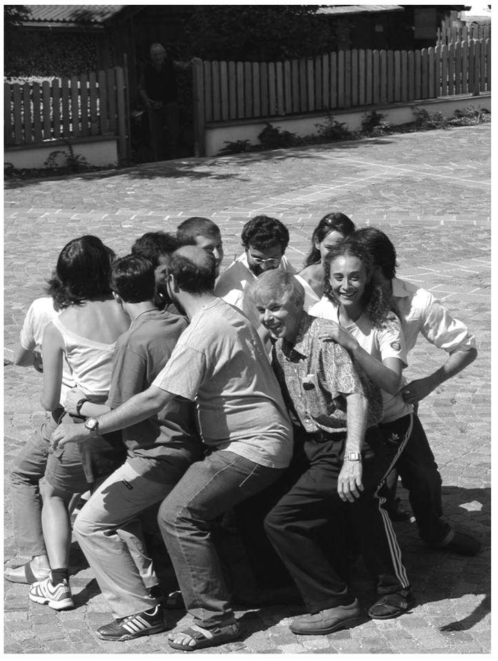
제8장 - 이상한 루프 사파리를 떠나며
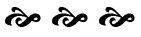
덮개 루프, 무릎 루프
나는 제4장에서, 어릴 적 골판지 상자의 네 덮개를 순환하는 순서로 접어 상자를 닫는 대담한 행위에 내가 얼마나 매료되었는지 이미 묘사한 바 있다. 그 마지막 금지된 접기를 수행할 때면 언제나 기분 좋은 전율이 일었고(심지어 오늘날에도 여전히 조금은 그렇다), 그래서 나는 역설성과 위험하게 희롱하고 있다는 느낌을 받곤 했다. 하지만 말할 필요도 없이, 실제 역설은 결코 일어나지 않았다.
이 ‘덮개 루프(flap loop)’와 가까운 사촌이 바로 맞은편 페이지에 보이는 ‘무릎 루프(lap loop)’다. 거기 안테르셀바 디 메초(Anterselva di Mezzo) 한복판에 내가 활짝 웃으며 앉아 있다(나를 ‘A’라고 부르자). 나는 역시 웃고 있는 한 젊은 여성(‘B’)의 무릎 위에 앉아 있고, B는 C의 무릎 위에, C는 D의 무릎 위에 앉아 있으며, 이런 식으로 계속 이어져 마침내 한 바퀴(lap)가 완성되고 K라는 사람이 내 무릎 위에 앉아 있다. 수많은 무릎(laps)이 있지만 무너짐(collapse)은 없는 한 바퀴(one lap). 이 게임을 한 번도 해본 적이 없다면 꼭 해보기를 권한다. 도대체 무엇이 이 루프를 떠받치고 있는 것인지 꽤나 어리둥절해진다.
덮개 루프와 마찬가지로 이 무릎 루프도 열한 번의 무릎 도약 각각이 위로 향하는 도약이므로 역설성을 스치듯 지나가지만, 분명히 무릎 루프는 물리적 세계에서 실현될 수 있으므로 진정한 역설을 구성할 수는 없다. 그럼에도 불구하고 내가 이 무릎 루프에서 ‘A’ 역할을 했을 때, 비록 간접적이긴 하지만 내가 내 자신의 무릎 위에 앉아 있는 것 같은 기분이 들었다! 이것은 지극히 기묘한 감각이었다.
에셔에게서 이상한 루프성 찾기
하지만 내가 ‘이상한 루프’라고 말할 때 염두에 두고 있는 것은 다른 것—덜 구체적이고 더 잡기 어려운 개념이다. 내가 ‘이상한 루프’로 의미하는 것은—어쨌든 첫 시도로 말하자면—물리적 회로가 아니라 추상적인 루프인데, 순환을 구성하는 일련의 단계들 속에서 한 추상(또는 구조) 수준에서 다른 수준으로의 이동이 일어나며, 이는 계층 구조에서 위로 올라가는 움직임처럼 느껴지지만, 어쩐지 그 연속적인 ‘상향’ 이동들이 결국 닫힌 순환을 만들어내는 것이다. 즉, 출발점에서 점점 더 멀어지고 있다는 느낌에도 불구하고, 충격적이게도 정확히 자신이 출발했던 바로 그 지점으로 되돌아오게 되는 것이다. 요컨대 이상한 루프란 역설적인 수준 교차 피드백 루프(paradoxical level-crossing feedback loop)다.
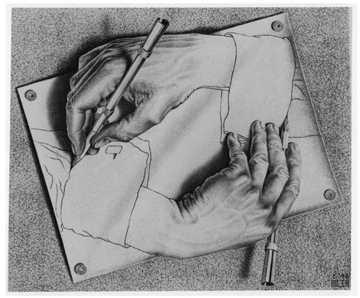
가장 전형적인(그리고 유감스럽게도 이제는 진부해진) 예 중 하나는 M. C. 에셔의 석판화 그리는 손(Drawing Hands)(위 그림)이다. 여기서(어디서 시작하느냐에 따라) 오른손이 왼손의 그림을 그리고 있는 것을 보게 되는데(아직 역설은 없다), 그런데 그 왼손이 알고 보니 오른손을 그리고 있는 것이다(그 즉시 깊은 역설이 된다).
여기서 추상 수준의 이동은 그려진 것(drawn)에서 그리는 자(drawer)로(또는 마찬가지로 이미지에서 예술가로) 향하는 상향 도약이 될 것이며, 후자의 수준은 여러 면에서 직관적으로 전자보다 ‘위’에 있다. 우선 그리는 자는 언제나 지각이 있고 움직이는 존재인 반면, 그려진 것은 얼어붙어 움직이지 않는 이미지다(무생물의 이미지일 수도 있고 생물의 이미지일 수도 있지만 어쨌든 움직이지 않는다). 둘째, 그리는 자는 3차원인 반면 그려진 것은 2차원이다. 셋째, 그리는 자는 무엇을 그릴지 선택하지만 그려진 것은 그 문제에 대해 아무런 발언권이 없다. 적어도 이 세 가지 의미에서 그려진 것에서 그리는 자로의 도약은 언제나 ‘위로’ 향하는 느낌을 준다.
방금 말했듯이 정의상 어떤 그려진 이미지에서 그것을 그리는 자로의 이동에는 날카롭고 명확한 상향 도약이 존재한다. 그런데 그리는 손에서는 이 상향성의 규칙이 날카롭고 깔끔하게 위반되었다. 두 손 각각이 계층적으로 서로의 ‘위’에 있기 때문이다! 어떻게 이런 일이 가능할까? 글쎄, 답은 명백하다. 이 전체가 그저 그려진 이미지일 뿐이며, 그저 환상일 뿐이기 때문이다. 하지만 그것이 너무나 진짜처럼 보이기 때문에, 우리를 그 역설적인 세계로 너무나 효과적으로 끌어들이기 때문에, 적어도 잠시 동안은 우리가 그 실재성을 믿도록 속인다. 게다가 우리는 그 속임수에 넘어가는 것을 기뻐하며, 바로 거기에서 이 그림의 인기가 나온다.
그리는 손의 추상적 구조는 단 하나의 작은 결함만 없었다면 진정한 이상한 루프의 완벽한 예가 되었을 것이다. 그 결함이란 우리가 본다고 생각하는 것이 진정하지 않다는 것, 즉 가짜라는 점이다! 물론 너무나 흠잡을 데 없이 그려져서 우리는 완전하고 진정한, 자격을 갖춘 역설을 지각하고 있는 것처럼 보이지만, 이러한 확신은 우리가 불신을 유예하고 에셔의 매혹적인 세계로 정신적으로 미끄러져 들어간 덕분에만 우리 안에서 생겨난다. 우리는 적어도 일시적으로 환상에 빠져드는 것이다.
피드백에서 이상한 루프 찾기
그렇다면 우리가 사는 세계에 부인할 수 없이 속해 있는 역설적 구조, 즉 진정한 이상한 루프란 존재하는 것일까? 아니면 이른바 이상한 루프라는 것은 언제나 역설을 스치기만 하는 환상, 역설과 희롱하기만 하는 환상, 너무 가까이 다가가면 필연적으로 터져버리는 매혹적인 거품에 불과한 것일까?
그렇다면 이상한 루프의 후보로 우리의 오랜 친구 비디오 피드백은 어떨까? 불행히도 이 현대적 현상은 매우 루프적이고 무한과 희롱하지만, 거기에는 역설적인 구석이 조금도 없다—더 단순하고 오래된 사촌인 오디오 피드백과 다를 바가 없다. 물론 TV 카메라를 화면에 똑바로 겨누면(또는 마이크를 스피커 바로 앞까지 가져가면) 불장난을 하는 듯한 기묘한 느낌, 즉 자연스러워 보이는 계층을 위반할 뿐만 아니라 진정한 무한 퇴행을 만들어내는 듯한 느낌을 받게 되지만, 곰곰이 생각해 보면 애초에 철벽같은 계층 따위는 없었고, 암시된 무한에도 결코 도달하지 않으며, 결국 거품은 그냥 터져버린다. 따라서 이런 종류의 피드백 루프는 부인할 수 없는 루프이고 약간 이상하게 느껴지기도 하지만, ‘이상한 루프’라는 범주에 속하지는 않는다.
러셀의 우울함 속에서 이상한 루프 찾기
다행히도 환상이 아닌 이상한 루프들이 실제로 존재한다. 내가 ‘다행히도’라고 말한 이유는, 이 책의 테제가 바로 우리 자신—우리의 몸이 아니라 우리의 자아—이 이상한 루프라는 것이기 때문이다. 만약 모든 이상한 루프가 환상이라면 우리 모두도 환상이 될 것이고, 그것은 참으로 안타까운 일일 것이다. 그러니 현실 세계에 어떤 이상한 루프들이 존재한다는 것은 다행스러운 일이다.
반면, 모두가 볼 수 있도록 하나를 꺼내 보이는 것은 누워서 떡 먹기가 아니다. 이상한 루프는 수줍은 생물이라 대낮의 빛을 피하는 경향이 있다. 사실 이 현상의 전형적인 예는 1930년에 쿠르트 괴델에 의해서야 비로소 발견되었는데, 그가 그것을 발견한 곳은 다름 아닌 버트런드 러셀의 유형론(theory of types)이라는, 역설을 막아낸다고 알려진 어둡고 엄격한 성채 속이었다.
스물네 살의 오스트리아 논리학자가 이 가혹하고 음산한 영국의 성채 안을 기웃거리며 무엇을 하고 있었던 것일까? 그는 역설에 매료되어 있었고, 비록 역설들이 러셀과 화이트헤드에 의해 쫓겨났다고 알려져 있었지만, 그럼에도 수(number)의 극도로 풍부하고 유연한 본성 속에는 가장 메말라 보이는 사막이나 가장 살균된 화강암 궁전 속에서도 역설이 꽃피우게 하는 무언가가 있다고 직관했다. 괴델의 의심은 당시 수를 기묘하고 새로운 방식으로 다루는 역설들이 쏟아져 나오면서 촉발되었고, 일부 사람들이 이를 무력화할 방법을 찾았다고 주장했음에도 불구하고, 그는 이 까다로운 게임들 속에 심오한 무언가가 있다고 확신했다.
보들리언 도서관의 베리 씨
이 기발한 역설 중 하나는 괴델이 태어나기 2년 전인 1904년, 옥스퍼드의 사서였던 G. G. 베리(G. G. Berry)가 고안한 것이었다. 베리는 말로 수를 묘사하는 미묘한 가능성들에 흥미를 느꼈다. 그는 열심히 찾아보면 당신이 대는 거의 모든 정수에 대해 꽤 간결한 묘사를 찾을 수 있다는 것을 알아차렸다. 예를 들어 정수 12는 이름 붙이는 데 단 1음절(twelve)만 필요하고, 정수 153은 단 4음절(“twelve squared plus nine” 또는 “nine seventeens”)로 정확히 짚어낼 수 있으며, 정수 1,000,011은 단 6음절(“one million eleven”)로 이름 붙일 수 있는 식이다. 그렇다면 1737이라는 수는 몇 음절까지 줄여서 묘사할 수 있을까?
일반적으로 수가 클수록 그에 대한 묘사도 길어져야 한다고 생각하기 쉽지만, 모든 것은 그 수가 ‘이정표’ 정수들—예외적으로 짧은 이름이나 묘사를 가진 희귀한 정수들, 예컨대 5음절로 아주 경제적으로 묘사되는 10의 1조 제곱(ten to the trillion) 같은 것들—로 얼마나 쉽게 표현될 수 있는지에 달려 있다. 물론 대부분의 큰 수들은 이정표도 아니고 그 근처에 있지도 않다. 사실 대다수의 수들은 ‘외진(obscure)’ 수들이어서, 오직 매우 길고 복잡한 묘사만을 허용한다. 말하자면 저 멀리 험한 시골 구석에 자리 잡은 외딴 전초기지 같아서, 목적지에 가까워질수록 점점 더 좁고 울퉁불퉁해지는 작은 샛길들을 길게 따라가야만 도달할 수 있는 것이다.
777,777을 생각해 보자. 이것의 표준 영어 이름인 “seven hundred seventy-seven thousand seven hundred seventy-seven”은 꽤 길어서 무려 20음절이나 된다. 하지만 이 수에는 좀 더 짧은 묘사가 있다. “777 times 1001”(“seven hundred seventy-seven times one thousand and one”)은 15음절에 불과하다. 꽤 많이 줄었다! 그리고 우리는 그것을 더 압축할 수도 있다. “three to the sixth plus forty-eight, all times ten cubed plus one”이라거나, 심지어 단순하게 “the number whose numeral is six sevens in a row”라고 할 수도 있다. 어느 쪽이든 14음절로 줄어든다.
열심히 노력하면 777,777이라는 값을 가리키는 수많은 영어 표현을 만들어낼 수 있고, 그중 일부는 소리 내어 말했을 때 아주 적은 음절만을 포함할지도 모른다. 예를 들어 “7007 times 111”(“seven thousand seven times one hundred eleven”)은 어떤가? 13음절로 줄어들었다! 그리고 “nine cubed plus forty-eight, all times ten cubed plus one”은? 12음절로 줄었다! 그리고 “thrice thirty-nine times seven thousand seven”은? 단 11음절이다! 이 수에 대한 우리의 묘사를 도대체 어디까지 쥐어짜 줄일 수 있을까? 이는 전혀 자명하지 않다. 왜냐하면 777,777이 아주 간결하게 표현될 수 있게 해주는 어떤 미묘한 산술적 성질을 가지고 있을지도 모르기 때문이다. 그러한 묘사에는 777,777 자체보다 훨씬 더 큰 이정표 수들을 언급하는 내용이 포함될 수도 있다!
사서 베리는 더 짧은 묘사를 찾는 일의 미묘한 본성에 대해 숙고한 끝에, 아주 특별한 한 수에 대한 악마 같은 특징화를 내놓았다. 나는 그를 기려 이 수를 b라고 부르겠다. b는 영어로 된 묘사가 언제나 최소 30음절 이상을 사용하는 가장 작은 정수다. 달리 말하면, b는 30음절보다 짧은 정확한 특징화를 갖지 않는다. 묘사하는 데 언제나 그렇게 많은 음절이 필요하므로, 우리는 b가 거대한 정수임에 틀림없다는 것을 안다. 대략 b는 얼마나 클까?
신문이나 잡지, 또는 천문학이나 물리학 교과서에서 마주치는 어떤 큰 수라도 거의 확실히 12음절, 많아야 20음절 이내로 묘사할 수 있다. 예를 들어 아보가드로 수(\(6 \times 10^{23}\))는 매우 간결한 방식(“six times ten to the twenty-third”—겨우 8음절)으로 지정할 수 있다. 어떻게 묘사하든 최소 30음절이 필요한 만큼 거대한 수를 찾는 것은 결코 쉬운 일이 아닐 것이다.
어쨌든 베리의 b는 정의상 우리의 아름다운 언어로 30음절 미만으로 줄여 말할 수 없는 바로 첫 번째 정수다. 강조를 위해 이탤릭체를 써서 다시 말하자면, 그것은 영어로 된 묘사가 언제나 최소 30음절 이상을 사용하는 가장 작은 정수(the smallest integer whose English-language descriptions always use at least thirty syllables)다. 하지만 잠깐! 내가 이탤릭체로 쓴 이 문구에는 몇 음절이 들어 있는가? 세어 보라—24음절이다. 우리는 어쩐지 b를 그 정의가 허용하는 것보다 더 적은 음절로 묘사해 버렸다. 사실 이탤릭체 문구는 b를 ‘어떻게든’ 묘사한 것일 뿐만 아니라, 바로 b의 정의 그 자체다! 그러므로 b라는 개념은 얄궂게도 자기 자신을 무너뜨린다. 무언가 아주 이상한 일이 벌어지고 있는 것이다.
말로 다 할 수 없을 만큼 특징 없던 그 집!
영어에는 이와 비슷한 풍미의 자기 파괴적 성질을 지닌 흔한 단어와 문구들이 몇 개 있다. 예를 들어 형용사 ‘nondescript(특징 없는, 말로 표현하기 어려운)’를 보자. 만약 내가 “그들의 집은 너무나 nondescript하다”라고 말하면, 비록(아니, 정확히 말하자면) 내 형용사가 그 집에 딱 들어맞는 묘사가 전혀 없음을 암시함에도 불구하고, 당신은 분명 내 말에서 어떤 시각적 이미지를 떠올릴 것이다. “트럭 타이어가 말로 형용할 수 없을 만큼(indescribably) 거대했다”라거나 “당신의 친절에 얼마나 감사한지 말로 다 할 수가 없네요”라고 말하는 것은 훨씬 더 기묘하다. 자기 자신을 무너뜨리는 그 성질이 오히려 의사소통에 묘하게 결정적인 역할을 하는 것이다.
베리의 역설이 나온 지 몇 십 년 뒤에 발명된 일종의 ‘주니어 버전’도 있는데, 다음과 같다. 어떤 정수들은 흥미롭다. 0은 어떤 수와 곱해도 0이 되므로 흥미롭다. 1은 어떤 수와 곱해도 그 수를 그대로 두므로 흥미롭다. 2는 가장 작은 짝수이므로 흥미롭고, 3은 가장 단순한 2차원 다각형(삼각형)의 변의 개수이므로 흥미롭다. 4는 첫 번째 합성수이므로 흥미롭다. 5는(다른 많은 이유 중에서도) 3차원 정다면체의 개수이므로 흥미롭다. 6은 3 팩토리얼(\(3 \times 2 \times 1\))이자 3의 삼각수(\(3 + 2 + 1\))이므로 흥미롭다. 이런 식으로 계속 나열할 수도 있겠지만 요점은 알았을 것이다. 문제는, 우리가 언제 첫 번째 흥미롭지 않은 수를 만나게 되느냐는 것이다. 어쩌면 62일까? 아니면 1729일까? 글쎄, 그 수가 무엇이든 간에, 그것은 분명 어떤 수가 가질 수 있는 아주 흥미로운 성질이다! 그러므로 62(또는 당신이 후보로 꼽은 어떤 수든)는 결국 흥미로운 수가 되고 만다—흥미롭지 않기 때문에 흥미로운 것이다. 이처럼 ‘가장 작은 흥미롭지 않은 정수’라는 아이디어는 베리의 b 정의가 역풍을 맞은 것과 똑같은 방식으로 자기 자신에게 역풍을 날린다.
우리가 잘 알듯이 이것은 버트런드 러셀의 예민한 비위를 상하게 만든 언어의 비틀림이지만, 그럼에도 공평하게 말하자면 G. G. 베리의 역설적인 수 b를 처음 세상에 알린 사람은 다름 아닌 버트런드 러셀이었다. 괴델이 태어난 해인 1906년(4음절!)에 쓴 글에서 러셀은 ‘묘사 가능성(describable)’이라는 단어를 수학의 맥락에서 순진하게 오용함으로써 생겨난 환상이라고 주장하며 역설의 독침을 비켜가려 최선을 다했다. 러셀의 주장에 따르면, 그 개념은 서로 다른 유형(types)의 묘사 가능성으로 이루어진 무한한 계층으로 나뉘어야 했다. 즉 순수 산술의 개념들만을 지칭할 수 있는 0수준의 묘사, 산술을 사용할 수 있을 뿐만 아니라 0수준의 묘사도 지칭할 수 있는 1수준의 묘사, 산술과 함께 0수준 및 1수준의 묘사를 지칭할 수 있는 2수준의 묘사 등등으로 말이다. 그리하여 어떤 특정 계층 수준에 제한되지 않는 ‘묘사 가능성’이라는 아이디어는 허상이라고 러셀은 선언하며 자신이 심오한 새 진리를 발견했다고 믿었다. 그리고 이 새 유형의 이론(완전히 새로운 유형론)으로, 그는 엄밀한 추론이라는 귀하고 섬세한 세계를 ‘베리-베리(Berry-Berry)’라는 추하고 역겨운 역병으로부터 면역시켰다고 주장했다.
흐릿함이 베리를 묻어버리다
나는 베리의 역설에 무언가 수상한 구석이 있다는 점에는 러셀과 동의하지만, 그것이 무엇인지에 대해서는 동의하지 않는다. 내가 초점을 맞추는 약점은, 영어가 수학적 진술을 표현하기에는 가망 없을 정도로 부정확한 매체라는 사실, 즉 영어의 단어와 구절이 지나치게 모호하다는 사실이다. 처음에는 정확해 보이는 것도 알고 보면 모호함투성이다. 예를 들어 앞서 내가 777,777의 묘사로 제시했던 “nine cubed plus forty-eight, all times ten cubed plus one”이라는 표현은 사실 모호하다—예컨대 777에 1000을 곱한 뒤 끝에 1을 덧붙여 777,001을 뜻하는 것으로 해석될 수도 있기 때문이다.
하지만 그 작은 모호함은 빙산의 일각에 불과하다. 진실은 어떤 종류의 영어 표현이 수에 대한 묘사로 인정되는지가 전혀 명확하지 않다는 것이다. 특정 정수를 묘사한다고 주장하는 다음 문구들을 생각해 보자.
• 지구상에서 사용된 적이 있는 서로 다른 언어의 수
• 태양계에 있는 천체의 수
• 서로 다른 4×4 마방진의 수
• 100보다 작은 흥미로운 정수의 수
이것들의 무엇이 잘못되었을까? 글쎄, 이 모든 것들은 불명확하게 정의된 개념들을 포함하고 있다.
예를 들어 ‘언어’란 무엇을 뜻하는가? 수화도 언어인가? 그것은 ‘말해지는(spoken)’ 것인가? 언어와 방언 사이에 날카로운 경계선이 있는가? 라틴어에서 이탈리아어로 가는 경로에 얼마나 많은 ‘서로 다른 언어’가 놓여 있었는가? 네안데르탈인 시절에서 라틴어로 가는 길에는 얼마나 많은 ‘서로 다른 언어’가 쓰였는가? 교회 라틴어는 하나의 언어인가? 피그 라틴(Pig Latin)은? 설령 지난 백만 년 동안 지구상에서 나온 마지막 한 마디까지의 모든 인간 발화를 녹화한 비디오테이프를 우리가 가지고 있다 하더라도, 각각의 발화를 어떤 특정한 ‘공식’ 언어에 객관적으로 배정한 다음 모든 ‘진정으로 서로 다른’ 언어들을 깔끔하게 가려내어 마침내 그 수를 센다는 생각은 여전히 말도 안 되는 헛된 꿈일 것이다. 쓰레기통 안에 있는 모든 ‘물건’을 센다고 말하는 것조차 이미 충분히 무의미한데, 하물며 전 시대의 모든 언어를 센다니!
다음으로 넘어가서, 무엇을 ‘천체(heavenly body)’로 치는가? 인공위성도 세는가? 우주비행사들이 저 바깥에 떠다니게 내버려 둔 무작위 파편 조각들도? 소행성 하나하나를 다 세는가? 토성의 고리에 떠 있는 구별되는 돌멩이 하나하나도? 먼지 티끌은? 진공 속에 떠 있는 고립된 원자들은? 태양계는 어디서 끝나는가? 이런 식의 질문은 무한히 이어진다.
당신은 이렇게 반론할지도 모른다. “하지만 그것들은 수학적 개념이 아니잖아요! 베리의 아이디어는 정수의 수학적 정의를 쓰는 것이었어요.” 좋다, 그렇다면 수학을 세계의 나머지 부분과 가르는 날카로운 경계선을 내게 보여 달라. 예컨대 베리의 정의는 ‘음절 세기’라는 모호한 개념을 사용한다. ‘finally’나 ‘family’나 ‘rhythm’이나 ‘lyre’나 ‘hour’나 ‘owl’에는 몇 음절이 있는가? 하지만 상관없다. 우리가 음절을 세는 엄밀하고 객관적인 방법을 확립했다고 가정해 보자. 그래도 여전히 무엇이 ‘수학적 개념’으로 인정될 것인가? 수학이라는 학문 분야가 정말로 그렇게 날카롭게 정의되어 있는가? 예를 들어 ‘마방진’이라는 개념의 정확한 정의는 무엇인가? 저자마다 이 개념을 다르게 정의한다. 그렇다면 수학계에 여론조사를 돌려야 하는가? 그리고 만약 그렇다면, 그 흐릿한 공동체의 구성원으로 인정되는 사람은 누구인가?
‘흥미로운 수’라는 흐릿한 개념은 어떤가? 거기에 일종의 수학적 정밀성을 부여할 수 있을까? 위에서 보았듯이, 어떤 수를 ‘흥미롭다’고 부르는 이유에는 기하학이나 수학의 다른 영역들이 포함될 수 있다—하지만 다시 한번, 수학의 경계는 어디에 놓여 있는가? 게임 이론은 수학의 일부인가? 의학 통계학은? 식물의 감겨 오르는 덩굴손에 관한 이론은? 끝이 없다.
요약하자면, ‘정수의 영어 정의’라는 개념은 가망 없는 수렁으로 판명 나며, 따라서 베리의 뒤틀린 b 개념은 서로를 그리는 두 손이라는 에셔의 뒤틀린 개념과 마찬가지로, 진정한 이상한 루프라기보다는 기발한 상상의 산물일 뿐이다. 이로써 이상한 루프성의 유망한 후보 하나가 또다시 물거품이 되어 사라졌다!
비록 이 짧은 여담에서 내가 1904년 베리가 품었던 아이디어가 순진했던 것처럼 들리게 만들었지만, 그로부터 약 60년 뒤 젊은 수학자 그레그 차이틴(Greg Chaitin)이 베리의 아이디어에서 영감을 받아 영어 묘사 대신 컴퓨터 프로그램을 사용하는 더 정밀한 사촌 격의 아이디어를 떠올렸으며, 이 영리한 전환이 1931년 괴델의 정리에 대한 근본적으로 새로운 증명과 관점을 낳았다는 점을 지적해야겠다. 거기에서 나아가 차이틴과 다른 이들은 ‘알고리즘 정보 이론(algorithmic information theory)’으로 알려진 중요한 새로운 수학 분야를 발전시켰다. 그 내용까지 들어가면 우리 논의에서 너무 멀어지겠지만, 베리의 통찰이 지닌 풍요로움을 전달했기를 바란다. 왜냐하면 이것이 바로 괴델의 혁명적인 아이디어들이 자라난 온상이었기 때문이다.
땅콩버터와 매자나무 샌드위치
모든 자기 지칭적 언어 표현과 자기 포함적 집합을 금지하는 형식주의를 제정함으로써 베리의 역설적 구성을 막으려 했던 버트런드 러셀의 시도는 성급했을 뿐만 아니라 꽤 빗나간 것이었다. 어떻게 그러한가? 글쎄, 최근 내 친구가 자기 친구인 젊고 이상주의적인 한 어머니가 실행한 러셀식 금지령에 대해 들려주었다. 선한 의도에서 이 여성은 집 안에서 모든 장난감 총을 엄격히 금지했다. 그 금지령은 한동안 잘 먹혔는데, 어느 날 그녀가 유치원생 아들에게 땅콩버터 샌드위치를 만들어 주었을 때 문제가 터졌다. 그 꼬마 녀석은 재빨리 샌드위치를 권총 모양으로 씹어 만든 다음, 들어 올려 엄마를 향해 겨누며 외쳤다. “빵야 빵야! 엄마 죽었다!” 이 아이러니한 일화는 중요한 교훈을 보여 준다. 당신이 아무리 엄격한 금지령을 내린 뒤에 남겨 둔 매체라 하더라도, 바로 당신이 금지한 바로 그 물건들을 빚어내기에 충분할 만큼 유연할 수 있다는 것이다.
실제로도 러셀이 베리를 일축한 것은 별 효과가 없었다. 20세기 초엽의 그 지적으로 격동하던 시절에는 점점 더 많은 역설들이 발명(또는 발굴)되고 있었기 때문이다. 전에 그런 종류의 것이 한 번도 목격된 적 없던 세계, 누구도 역설이 생겨날 거라고 꿈조차 꾸지 못했던 순수한 낙원인 엄밀하게 논리적인 수의 세계 내부에서, 다양한 고대 역설의 현대적 사촌들이 불쑥 솟아오를 때 참으로 기이한 일들이 벌어질 수 있다는 분위기가 감돌았다.
비록 이 새로운 종류의 역설들이 아름답고 신성한 추론과 수의 세계에 대한 공격처럼 느껴졌지만(아니, 오히려 그 걱정스러운 사실 때문에), 꽤 많은 수학자들이 대담하게도 훨씬 더 깊고 더 골치 아픈 역설을 찾아 나서는 탐험에 뛰어들었다—즉, 자기 자신들의 학문 토대에 대한 훨씬 더 강력한 위협을 찾는 탐험에 나선 것이다! 이것은 꽤나 삐딱한 행동처럼 들리지만, 그들은 장기적으로 그러한 탐구가 수학에 매우 건전할 것이라고 믿었다. 왜냐하면 그것이 핵심적인 약점들을 드러내어, 흔들리는 토대를 어디에서 보강해야 난공불락이 될지 보여 줄 것이기 때문이었다. 요컨대 수학의 기초를 연구하는 사람이라면 누구에게나 이 새로운 역설의 물결 속으로 깊이 뛰어드는 것은 필수적이지는 않더라도 유용한 활동처럼 보였다. 왜냐하면 그 새로운 역설들은 추론의 본성에 관한—그리하여 파악하기 어려운 사고의 본성에 관한—그리하여 인간 정신 그 자체의 신비로운 본성에 관한 심오한 질문들을 열어젖히고 있었기 때문이다.
자전적 단편
제4장에서 언급했듯이, 열네 살 때 나는 어니스트 네이글(Ernest Nagel)과 제임스 R. 뉴먼(James R. Newman)의 작은 보석 같은 책 『괴델의 증명(Gödel’s Proof)』을 우연히 접했고, 그 책을 통해 괴델의 작업 중심에 놓인 역설을 스치는 아이디어들의 마법에 빠져들었다. 내 인생의 그 시기와 연결된 더 이상한 루프 중 하나는, 바로 그 무렵 내가 네이글 가족과 알게 되었다는 사실이다. 그들의 집은 맨해튼에 있었지만 1959~60학년도를 ‘서부’ 스탠퍼드에서 보내고 있었고, 어니스트 네이글과 내 아버지가 오랜 친구였기 때문에 나는 곧 그 가족 전체와 친해졌다. 네이글 가족의 스탠퍼드 체류가 끝난 직후, 나는 버몬트주 브래틀보로 근처 완만한 언덕에 자리한 그들의 여름 별장 푸른 마당에서 내 친구이자 그들의 큰아들인 샌디에게 『괴델의 증명』 전체를 큰 소리로 읽어주는 뒤틀린 즐거움을 맛보았다. 샌디는 나와 동갑이었고, 우리는 둘 다 오직 십 대들만이 아는 일종의 거친 도취감 속에서 수학을 탐구하고 있었다.
나를 그토록 강렬하게 끌어당긴 것의 절반은 괴델 작업의 핵심에 있는 기이한 루프성이었다. 하지만 내 강렬한 호기심의 나머지 절반은, 괴델과 그가 영감을 준 많은 사람들이 실제로 탐구하고 있던 것이 바로 인간 정신의 신비와 인간 사고의 메커니즘이라는 느낌이었다. 괴델의 1931년 논문에 의해 너무나 많은 질문들이 갑자기, 그리고 날카롭게 빛 속으로 끌려 나온 것처럼 보였다—예컨대 이런 질문들이다…
수학자들이 가장 창의적인 작업을 할 때 그들의 머릿속에서는 무슨 일이 일어나는가? 그것은 언제나 고정된 공리 집합에서 정리를 도출하는, 규칙에 얽매인 심볼 조작일 뿐인가? 일반적으로 인간 사고의 본성은 무엇인가? 우리 머릿속에서 일어나는 일은 그저 결정론적인 물리적 과정일 뿐인가? 만약 그렇다면, 우리가 아무리 개성 있고 반짝이더라도 우리 모두는 우리 뇌를 구성하는 보이지 않는 입자들을 지배하는 엄격한 법칙의 노예에 불과한가? 아주 작은 물체나 수의 패턴을 지배하는 일련의 엄격한 규칙에서 창의성이 피어날 수 있는가? 규칙에 지배되는 기계가 인간만큼 창의적일 수 있는가? 프로그램된 기계가 미리 프로그램되지 않은 아이디어를 떠올릴 수 있는가? 기계가 스스로 결정을 내릴 수 있는가? 자기만의 의견을 가질 수 있는가? 혼란스러워할 수 있는가? 자신이 혼란스러워한다는 것을 알 수 있는가? 자신이 혼란스러운지 아닌지 확신하지 못할 수 있는가? 자신이 자유 의지를 가졌다고 믿을 수 있는가? 자유 의지가 없다고 믿을 수 있는가? 의식이 있을 수 있는가? 자신이 의식이 있는지 의심할 수 있는가? 자아를, 영혼을, ‘나’를 가질 수 있는가? 자신의 ‘나’에 대한 열렬한 믿음이 오직 환상일 뿐이지만 피할 수 없는 환상이라고 믿을 수 있는가?
메타수학에 관한 이상주의적 꿈
내 젊은 시절 그 도취적인 나날에, 나는 대학 서점에 들어갈 때마다(가능한 한 자주 갔다) 즉시 수학과 코너로 달려가 기호논리학과 심볼 및 의미의 본성에 관련된 모든 책을 샅샅이 뒤지곤 했다. 그리하여 나는 루돌프 카르나프(Rudolf Carnap)의 유명하지만 난해한 『언어의 논리적 구문(The Logical Syntax of Language)』이나 리처드 마틴(Richard Martin)의 『진리와 지시(Truth and Denotation)』 같은 책들을 비롯하여 셀 수 없이 많은 기호논리학 교과서를 한 권 또 한 권 사 모았다. 그런 교과서 중 몇 권은 아주 꼼꼼히 읽었지만, 카르나프와 마틴의 두꺼운 책들은 그저 내 책장에 꽂혀 나를 조롱하고 약 올리며 언제나 손이 닿지 않는 곳에 있는 듯했다. 그 책들은 빽빽했고 거의 뚫고 들어갈 수 없을 정도였지만, 나는 언젠가 어떤 위대한 날에 마침내 그 책들을 읽고 완전히 이해할 수만 있다면, 마침내 사고, 의미, 창의성, 의식의 신비의 핵심을 꿰뚫게 될 거라고 계속 생각했다. 지금 돌이켜보면 터무니없이 순진한 생각처럼 들리지만(첫째로 이것이 달성 가능한 목표라고 상상한 점에서, 둘째로 특히 그 책들이 모든 비밀을 담고 있다고 믿은 점에서), 당시 나는 진정한 신봉자였다!
열여섯 살 때 나는 스탠퍼드 초등학교(내 자신의 모교이기도 하다)에서 기호논리학을 가르치는 특이한 경험을 했다. 철학자이자 교육자인 패트릭 수페스(Patrick Suppes)가 쓴 새 교과서를 사용했는데, 그는 공교롭게도 우리 가족과 같은 거리에 살고 있었고 그의 고전 『논리학 입문(Introduction to Logic)』은 내 가장 믿음직한 길잡이 중 하나였다. 수페스는 산술과 마찬가지로 엄격한 논리적 추론의 패턴을 아이들에게 주입할 수 있는지 알아보는 실험을 진행하고 있었고, 내가 그 학교를 다닐 때부터 나를 잘 알던 교장 선생님이 어느 날 학교 원형 홀에서 나와 마주치자 일 년 내내 일주일에 세 번씩 6학년 반(내 여동생 로라도 거기 있었다)에 기호논리학을 가르쳐 보지 않겠느냐고 물었다. 나는 그 기회에 펄쩍 뛰며 응했고, 일 년 내내 가끔 몇몇 아이들이 나를 힘들게 하긴 했지만(눈에 고무줄 쏘기 등) 정말로 그 일을 즐겼다. 나는 반 아이들에게 유려한 부정논법(modus tollendo tollens)과 인상적으로 들리는 ‘가언 삼단논법(hypothetical syllogism)’을 포함한 많은 추론 규칙의 사용법을 가르쳤고, 그 모든 시간 동안 초보 논리학자로서뿐만 아니라 교사로서의 기술도 연마했다.
이 모든 것을 이끈 것—내 핵심적인 내면의 열정—은 인간 정신 작용의 비밀이 베일을 벗는 것을 보고 싶다는 불타는 열망, 즉 인간 두개골 안에서 매초 일어나는 수조 개의 침묵하고 동기화된 섬광들이 어떻게 사람으로 하여금 생각하고, 지각하고, 기억하고, 상상하고, 창조하고, 느끼게 만드는지 이해하고 싶다는 열망이었다. 거의 같은 시기에 나는 뇌에 관한 책들을 읽고, 여러 외국어를 공부하며, 여러 나라의 이국적인 문자 체계를 탐구하고, 컴퓨터가 영어와 다른 언어들로 문법적으로 복잡하고 준(準)일관적인 문장을 생성하게 만드는 방법을 고안했으며, 놀라울 정도로 자극적인 심리학 강의를 들었다. 이 모든 다양한 길들은 정신과 메커니즘, 정신성과 기계성 사이의 관계에 관한 빽빽한 질문들의 성운에 초점을 맞추고 있었다.
그리하여 내 사춘기 마음속에는 패턴에 대한 연구(수학)와 역설에 대한 연구(메타수학)가 복잡하게 얽혀 있었다. 나는 내가 사로잡혀 있던 모든 신비로운 비밀들이, 이 서로 얽힌 두 학문을 깊이 숙달하고 나면 수정처럼 맑아질 것이라고 어쩐지 확신했다. 비록 그 후 20여 년의 세월을 거치며 이 학문들이 이 모든 질문에 대한 답을(심지어 암묵적으로라도) 담고 있다는 믿음은 본질적으로 거의 다 잃어버렸지만, 단 하나 결코 잃지 않은 것은 “나는 무엇인가?”라는 영원한 수수께끼의 핵심 주위를 괴델이 정교하게 구축한 루프의 무형 소용돌이가 감돌고 있다는 내 직관적 예감이었다.
바로 그런 이유로 이 책에서 나는 주로 의식과 자아에 관한 질문들에 이끌리고 있음에도 불구하고, 괴델의 아이디어를(아주 대략적으로나마) 이해하는 데 필요한 배경—특히 수론과 논리학—에 몇 페이지를 할애해야만 한다. 물론 둘 다 무겁게 다루지는 않겠지만, 이 분야들이 기본적으로 무엇에 관한 것인지 적어도 거친 그림은 그려야 한다. 그렇지 않으면 앞으로 나아갈 방법이 없기 때문이다. 그러니 독자 여러분, 안전벨트를 매시기 바란다. 앞으로 두 장 동안 우리는 약간의 난기류를 겪게 될 것이다.
추신
이 장을 만족스럽게 마친 후, 나는 내가 ‘흥미로운 수’에 관한 책 두 권을 가지고 있다는 사실을 떠올렸다. 내가 크게 존경하는 수학 저술가 데이비드 웰스(David Wells)의 『진기하고 흥미로운 수의 펭귄 사전(The Penguin Dictionary of Curious and Interesting Numbers)』과, 유명한 프랑스 문학 운동 울리포(Oulipo)의 두 창립자 중 한 명인 프랑수아 르 리오네(François Le Lionnais)의 『주목할 만한 수들(Les nombres remarquables)』이다. 두 책 모두 ‘흥미로운 수’들을 크기순으로 나열했던 것으로 어렴풋이 기억해서, 각 책이 빠뜨린 가장 작은 정수가 무엇인지 확인해 보기로 했다.
예상대로 두 저자 모두 존재하는 모든 정수를 포함시키기 위해 꽤 영웅적인 노력을 기울였지만, 인간의 지식은 유한하고 인간은 필멸의 존재이므로 불가피하게 각 책은 조만간 빈틈을 보이기 시작했다. 웰스의 첫 번째 빈틈은 43에서 나타났고, 르 리오네는 조금 더 버텨서 49까지 갔다. 개인적으로 43은 그리 놀랍지 않았지만 49는 놀라웠다. 어쨌든 49는 제곱수(\(7^2\))이므로 적어도 한 줌의 흥미는 암시하기 때문이다. 반면 이미 여러 번 마주치고 나면 제곱수라는 성질이 좀 지루해진다는 점은 인정하므로, 그 성질만으로는 49가 르 리오네의 최종 목록에 오르기에 충분하지 않았던 이유를 부분적으로는 이해할 수 있었다. 웰스는 49의 몇 가지 흥미로운 성질을 나열하지만(제곱수라는 사실은 빼고), 반대로 르 리오네는 43의 아주 놀라운 성질 몇 가지를 지적한다.
그래서 나는 두 책 모두가 전혀 흥미가 없다고 여긴 가장 작은 정수를 찾아보기로 했고, 그것은 62로 밝혀졌다. 참고로, 이 책이 인쇄되어 나올 때 내 나이가 바로 62세다. 어쩌면 62는 결국 흥미로운 수인 걸까?
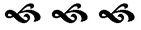
제9장 - 패턴과 증명 가능성
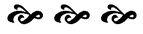
수학 원리와 그 정리들
20세기 초, “역설을 찾아 연구하라. 그리고 그것을 막아낼 거대한 성벽을 설계하고 쌓아라!”(내 말이지 그의 말은 아니다)라는 격언에 자극받은 버트런드 러셀은, 수학적 추론을 위해 자신이 새로 세운 요새인 『수학 원리(Principia Mathematica)』에서는 어떤 집합도 결코 자기 자신을 포함할 수 없으며, 어떤 문장도 결코 되돌아서 자기 자신에 대해 말할 수 없도록 결단했다. 이 나란한 금지령들은 더 순진한 이론들이 빠졌던 함정에서 『수학 원리』를 구하기 위한 것이었다. 그러나 쿠르트 괴델이 내가 PM이라고 부를 것—즉 『수학 원리』에서 집합에 대해(그리고 수에 대해서도, 하지만 수는 집합의 관점에서 정의되었으므로 나중에 나왔다) 추론하기 위해 사용된 형식 체계—을 면밀히 들여다보았을 때 참으로 이상한 무언가가 드러났다.
『수학 원리(Principia Mathematica)』와 PM 사이의 이 구분을 좀 더 명확히 해 두자. 전자는 세 권의 두꺼운 책이고, 반면 PM은 꽤 난해한 표기법(이 장의 끝부분을 보라)을 사용하여 그 책들 속에서 깊이 있게 펼쳐지고 탐구된 일련의 정밀한 심볼 조작 규칙이다. 이 구분은 아이작 뉴턴의 거대한 저서 『프린키피아(Principia)』와 그가 그 안에서 제시한 역학 법칙 사이의 구분과 유사하다.
1 더하기 1이 2와 같다는 꽤 소박한 사실(PM 표기법으로는 “s0 + s0 = ss0”로 쓰이는데, 여기서 문자 “s”는 ‘~의 다음 수(successor of)’라는 개념을 뜻한다)이 PM의 엄격한 심볼 밀어내기 규칙을 사용하여 엄밀하게 증명되기까지는 수많은 장의 정리와 도출 과정이 필요했지만, 그럼에도 괴델은 PM이 끔찍할 정도로 번거롭긴 해도 자연수(whole numbers)에 대해 말하는—사실은 자연수의 임의로 미묘한(arbitrarily subtle) 성질들에 대해 말하는—엄청난 힘을 가지고 있음을 깨달았다. (그건 그렇고, ‘임의로 미묘한 성질들’이라는 그 작은 문구가 이미 패를 다 까발리고 있지만, 그 암시가 너무나 가려져 있어서 거의 아무도 그 말들이 얼마나 많은 것을 함축하는지 깨닫지 못한다. 그것을 온전히 본 사람은 괴델이었다.)
예를 들어, 『수학 원리』에서 덧셈과 곱셈 같은 기본적인 산술 개념이 등장할 수 있을 만큼 충분한 집합론적 장치가 도입되자마자, PM 형식주의 내부에서 ‘제곱수’(즉, 자연수의 제곱), ‘비제곱수’, ‘소수’, ‘합성수’ 같은 더 흥미로운 개념들을 정의하는 것이 쉬워졌다.
따라서 적어도 이론적으로는, 어떤 정수가 두 제곱수의 합이고 어떤 정수가 그렇지 않은지 탐구하는 데 전적으로 바쳐진 『수학 원리』의 한 권이 있을 수도 있다. 예를 들어 41은 16과 25의 합이며, 두 제곱수를 더해 만들 수 있는 다른 정수는 무한히 많다. 이들을 클래스 A의 원소라고 부르자. 반면 43은 어떤 두 제곱수의 합도 아니며, 마찬가지로 두 제곱수의 합으로 만들 수 없는 다른 정수도 무한히 많다. 이들을 클래스 B의 원소라고 부르자. (109는 어느 클래스에 속하는가? 133은?) 모든 정수의 집합을 이처럼 우아하게 양분하는 것을 완전히 이해하는 일은 지극히 미묘한 과제였지만, 괴델이 태어나기 훨씬 전에 이미 수론학자들에 의해 완수되었다.
이와 유사하게, 어떤 정수가 두 소수의 합이고 어떤 정수가 그렇지 않은지 탐구하는 데 전적으로 바쳐진 『수학 원리』의 또 다른 권을 상상할 수도 있다. 예를 들어 24는 5와 19의 합인 반면, 23은 어떤 두 소수의 합도 아니다. 다시 한번 우리는 이 두 정수 클래스를 각각 ‘클래스 C’와 ‘클래스 D’라고 부를 수 있다. 각 클래스에는 무한히 많은 원소가 있다. 모든 정수의 집합을 이처럼 우아하게 양분하는 것을 완전히 이해하는 일은 매우 깊은 과제이며, 문제가 처음 제기된 지 2백 년이 넘도록 많은 진전이 있었음에도 오늘날까지 여전히 수론학자들에게 미해결 난제로 남아 있다.
어울리지 않는 두 아이디어 섞기: 소수와 제곱수
PM에 대한 괴델의 뜻밖의 비틀림 기반 통찰을 들여다보기 전에, 나는 먼저 패턴을 발견하는 데서 오는 깊은 기쁨과, 다음으로 패턴 뒤에 숨은 것을 이해하는 데서 오는 깊은 기쁨에 대해 말해야겠다. 결국 수학이라는 학문의 본성을 규정하는 것은 바로 왜(why)를 향한 수학자들의 집요한 탐구다. 내가 가장 좋아하는 수론의 사실 중 하나를 통해 이를 유쾌한 방식으로 설명할 수 있기를 바란다.
소수에 관한 아주 단순한 질문을 하나 던져 보자. 어떤 소수들이 두 제곱수의 합이고(예: 41), 어떤 소수들이 그렇지 않은가(예: 43)? 달리 말하면, 둘 다 무한한 클래스 A와 B로 돌아가서 각 클래스에 어떤 소수들이 놓여 있는지 물어보자. 거의 모든 소수가 이 두 클래스 중 한쪽에 몰려 있고 다른 한쪽에는 겨우 몇 개만 있을 가능성이 있을까? 아니면 대략 반반일까? 각 클래스에 무한히 많은 소수가 있을까? 임의의 소수 p가 주어졌을 때, (p보다 작은 두 제곱수의 가능한 모든 덧셈을 일일이 시도해 보지 않고도) p가 어느 클래스에 속하는지 판별하는 빠르고 간단한 검사법이 있을까? 소수들이 이 두 클래스에 어떻게 분포하는지에 대해 예측 가능한 어떤 패턴이 있을까, 아니면 그저 뒤죽박죽 혼돈일 뿐일까?
일부 독자들에게는 이것이 다루기에 꽤나 기묘하거나 심지어 부자연스러운 질문처럼 보일지도 모르지만, 수학자들은 천성적으로 호기심이 매우 강한 사람들이며, 선험적으로(a priori) 전혀 관련이 없어 보이는 개념들(소수와 제곱수처럼) 사이의 상호작용을 탐구한다는 아이디어에 깊이 매료되곤 한다. 그때 종종 일어나는 일은 어떤 뜻밖이면서도 친밀한 연결고리가 드러나는 것이다—마법처럼 느껴지는 일종의 기막힌 숨은 규칙성이 나타나며, 그 발견이나 계시는 척추를 따라 신비로운 전율을 오르내리게 만들기도 한다. 나로 말할 것 같으면, 경외감, 아름다움, 신비, 놀라움이 뒤섞인 그 등골이 오싹해지는 감각에 매우 약하다는 점을 부끄럼 없이 고백한다.
이런 종류의 느낌을 맛보기 위해, 100까지의 모든 소수 목록—2, 3, 5, 7, 11, 13, 17, 19, 23, 29, 31, 37, 41, 43, 47, 53, 59, 61, 67, 71, 73, 79, 83, 89, 97, 그건 그렇고 꽤 뒤죽박죽이고 혼돈스러워 보이는 목록이다—을 가져와서 두 제곱수의 합인 소수(즉, 클래스 A 소수)는 강조 표시하고, 그렇지 않은 소수(클래스 B 소수)는 그대로 두어 다시 배열해 보자. 그러면 다음과 같은 결과를 얻는다.
2, 3, 5, 7, 11, 13, 17, 19, 23, 29, 31, 37, 41, 43, 47, 53, 59, 61, 67, 71, 73, 79, 83, 89, 97 ,…
여기서 뭔가 흥미로운 일이 벌어지고 있는 게 보이는가? 우선, 꽤 팽팽한 경쟁처럼 보인다는 사실만으로도 이미 꽤 놀랍지 않은가? 왜 그래야 할까? 왜 클래스 A나 클래스 B 중 어느 한쪽이 지배적이지 않을까? 얼마쯤 지나면 클래스 A 소수나 클래스 B 소수 중 한쪽이 우세해질까, 아니면 이 대략적인 균형이 영원히 계속될까? 우리가 무한을 향해 점점 더 멀리 나아갈수록, 그 균형은 정확히 50 대 50에 점점 더 가까워질까? 만약 그렇다면, 왜 그렇게 놀랍고 섬세한 균형이 유지되는 걸까? 나에게 여기에는 엄청나게 매혹적인 무언가가 있다. 그러니 계속 읽기 전에 잠시—이를테면 몇 분 동안—이 배열을 들여다보며 어떤 패턴이라도 찾아보기를 권한다.
패턴 사냥
좋다, 독자 여러분, 이제 다시 함께 모였다. 여러분 쪽에서 약간의 패턴 찾기를 해보았기를 바란다. 아마도 여러분은 우리의 강조 표시 작업이 의도한 바는 아니지만 우연히(아니면 우연일까?) 목록을 단독(singletons)과 쌍(pairs)으로 나누어 놓았다는 것을 알아차렸을 것이다. 숨겨진 연결고리가 드러난 걸까?
이것을 좀 더 들여다보자. 굵은 글씨 쌍은 13–17, 37–41, 89–97이고, 굵지 않은 글씨 쌍은 7–11, 19–23, 43–47, 67–71, 79–83이다. 그렇다면 각 쌍을 문자 “P”로 바꾸고 각 단독을 문자 “S”로 바꾸되, 클래스 A와 클래스 B를 구별하는 강조 표시는 유지해 보자. 그러면 다음과 같은 문자 열을 얻는다.
S, S, S, P, P, P, S, S, P, P, S, S, S, P, S, P, P, . . .
여기에 어떤 패턴이 있는가, 아니면 없는가? 어떻게 생각하는가? 클래스 A 문자들만 뽑아내면 SSPSPSSSP가 되고, 클래스 B 문자들만 뽑아내면 SPPSPSPP가 된다. 여기에 어떤 주기성이나 더 미묘한 종류의 리듬감이 있다고 해도, 그것은 분명 잡히지 않는다. 굵은 글씨에서도 굵지 않은 글씨에서도 단순하고 예측 가능한 패턴이 튀어나오지 않으며, 둘을 섞어 놓았을 때도 마찬가지다. 우리는 두 클래스 사이의 꽤 팽팽한 균형에 대한 암시는 포착했지만, 왜 그런지에 대한 단서는 전혀 얻지 못했다. 이것은 도발적이면서도 좌절스럽다.
끈기 있게 패턴을 추구하는 사람들
이 시점에서 나는 두 종류의 수가 아니라 두 종류의 사람 사이의 구별을 지적하지 않을 수 없다. 패턴 찾기라는 아이디어에 즉각 끌리는 사람들이 있는가 하면, 거기서 아무런 매력도 느끼지 못하고 심지어 불쾌해하는 사람들도 있다. 본질적으로 전자는 수학적 성향을 지닌 사람들이고, 후자는 그렇지 않은 사람들이다. 수학자들은 가장 깊은 핵심에서, 처음에는 아무것도 없어 보이는 곳에서 패턴을 찾아내려는 충동에 이끌리는—실로 쉽게 유혹당하는—사람들이다. 겉보기에 무질서해 보이는 것 속에서 질서를 찾아 나서는 열정적인 탐구가 바로 그들의 불을 지피고 영혼을 불태우는 것이다. 독자 여러분이 이 부류의 사람들에 속하기를 바라지만, 설령 그렇지 않더라도 잠시만 나와 함께 참아주기를 바란다.
우리가 이미 일종의 패턴을 점친 것처럼 보일 수도 있다—즉, 우리는 영원히 단독과 쌍만을 마주칠 것이라는 패턴 말이다. 비록 S와 P가 어떻게 섞일지는 정확히 말할 수 없더라도, 적어도 “두 제곱수의 합 대 두 제곱수의 합이 아님”이라는 기묘한 이분법을 소수 수열에 적용하면 그것이 단독과 쌍으로 쪼개진다는 것은 이미 꽤 환상적인 발견처럼 보인다! 누가 짐작이나 했겠는가?
불행히도 나는 이제 여러분을 잘못된 길로 이끌었음을 고백해야 한다. 만약 우리가 바로 다음 소수인 101을 목록에 집어넣기만 해도, 그것은 우리가 찾은 겉보기 질서를 망가뜨린다. 어쨌든 소수 101은 두 제곱수 1과 100의 합이므로 클래스 A에 속하며 굵은 글씨로 써야 한다. 따라서 우리가 굵은 글씨 쌍이라고 여겼던 89–97은 알고 보니 굵은 글씨 세 쌍둥이(triplet)가 되고 만다. 그리하여 단지 S와 P로만 이루어진 수열이라는 우리의 희망찬 생각은 물거품이 되어 사라진다.
이 지점에서 패턴 탐구자는 무엇을 하는가—포기하는가? 물론 아니다! 좌절을 겪은 뒤, 유연한 패턴 탐구자는 그저 재편성(regroups)할 뿐이다. 실제로 방금 쓴 단어에서 힌트를 얻어, 우리의 소수 수열을 다른 방식으로 재편성해 보자. 두 클래스를 분리하여 서로 다른 줄에 표시해 보는 것이다. 그러면 다음과 같이 된다.
제곱 + 제곱 있음: 2, 5, 13, 17, 29, 37, 41, 53, 61, 73, 89, 97, 101,…
제곱 + 제곱 없음: 3, 7, 11, 19, 23, 31, 43, 47, 59, 67, 71, 79, 83,…
이제 뭔가 보이는가? 아직 보이지 않는다면 힌트를 하나 주겠다. 각 줄에서 인접한 수들의 차이를 그냥 구해보면 어떨까? 직접 해보라—아니면 아주 게으르다면 그냥 계속 읽으라.
윗줄에서는 3, 8, 4, 12, 8, 4, 12, 8, 12, 16, 8, 4를 얻을 것이고, 아랫줄에서는 4, 4, 8, 4, 8, 12, 4, 12, 8, 4, 8, 4를 얻을 것이다. 이 지점에서는 아무리 무심한 독자라도 눈에 확 띄어야 할 무언가가 있다. 단지 몇 개의 정수(4, 8, 12)가 압도적으로 많을 뿐만 아니라, 게다가 이 모든 정수가 4의 배수라는 것이다. 이것은 단순한 우연이라고 하기에는 너무나 지나치다.
그리고 이 두 목록에 있는 유일한 더 큰 수인 16 역시 4의 배수다. 오직 4의 배수만 나온다는 이 새로운 패턴이 영원히 유지될까? (물론 맨 처음에 ‘3’이라는 훼방꾼이 하나 있긴 하지만, 그것은 2가 유일한 짝수 소수라는 사실 탓으로 돌릴 수 있다. 별일 아니다.)
패턴이 있는 곳에 이유가 있다
앞선 몇 줄의 핵심 생각은 이 패턴이 단순한 우연일 리 없다는 신념이다. 이런 종류의 패턴을 발견한 수학자는 본능적으로 묻는다. “왜지? 이 질서 뒤에 있는 이유가 무엇인가?” 모든 수학자들은 그 이유가 무엇인지 궁금해할 뿐만 아니라, 더 중요하게는 누군가 그 이유를 찾아내든 못 찾아내든 거기에는 반드시 이유가 있다고 암묵적으로 믿는다. 수학의 세계에서는 아무것도 ‘우연히’ 일어나지 않는다. 영원히 계속되는 완벽한 패턴, 즉 규칙성의 존재는—마치 연기가 불을 드러내듯—무대 뒤에서 무언가가 벌어지고 있음을 드러낸다. 수학자들은 그것을 찾고, 밝혀내어, 백일하에 드러내는 것을 신성한 목표로 여긴다.
이 활동은 여러분도 잘 알다시피 ‘증명을 찾는 것’, 혹은 달리 말하면 추측을 정리로 바꾸는 것이라고 불린다. 작고한 위대한 괴짜 헝가리 수학자 에르되시 팔(Paul Erdös)은 한때 “수학자는 커피를 정리로 바꾸는 장치다”라는 익살스러운 말을 남겼는데, 그의 재치 있는 말에도 분명 진실이 담겨 있지만, 수학자들은 추측을 찾아내어 그것을 정리로 바꾸는 장치라고 말하는 편이 더 정확할 것이다.
수학적 사고방식의 기저에 깔린 것은, 어떤 수학적 진술 X가 참일 때마다 X는 증명을 가지며, 그 역도 성립한다는 흔들리지 않는 믿음이다. 실로 수학자의 마음속에서 ‘증명을 가지는 것’은 ‘참인 것’과 조금도 다름없는 똑같은 뜻이다! 대칭적으로, ‘거짓인 것’은 ‘증명이 없는 것’을 뜻한다. 우리가 위에서 한 것처럼 수치적 탐구를 통해 완벽하고 무한한 패턴의 암시를 찾을 수는 있지만, 의심되는 규칙성이 끝없이 영원히 계속될 것임을 어떻게 확실히 알 수 있을까? 예를 들어 소수가 무한히 많다는 것을 어떻게 알 수 있을까? 어느 지점에서 마지막 소수—위대한 마지막 소수 P—가 나오지 않을지 우리가 어떻게 아는가?
만약 존재한다면 P는 참으로 중요하고 흥미로운 수일 테지만, 연속된 소수들의 긴 목록(위의 100까지의 소수 목록이 그 느낌을 준다)을 살펴보면, 여기저기 기이한 간격이 있어 리듬이 약간 ‘울퉁불퉁’하긴 해도 소수 사이의 간격은 관련된 소수의 크기에 비해 언제나 꽤 작다는 것을 알 수 있다. 이 매우 명확한 추세를 고려할 때, 만약 소수가 갑자기 바닥나 버린다면 그것은 거의 아무런 경고도 없이 지구의 끝에서 떨어지는 기분일 것이다. 엄청난 충격일 것이다. 그래도 이런 일이 일어나지 않을 거라고 우리가 어떻게 아는가? 아니면 알기나 하는가? 컴퓨터의 도움으로 수십억, 수조 너머에서도 새로운 소수가 계속 나타난다는 것을 발견하는 것은 대단한 일이지만, 그렇다고 해서 더 멀리 어딘가에서 소수가 갑자기 멈추지 않을 것이라고 바위처럼 단단하게 보장해 주지는 못한다. 우리는 거기에 도달하기 위해 추론에 의존해야 한다. 왜냐하면 유한한 양의 증거가 아무리 강하게 암시하더라도, 무한은 어떤 유한한 수와도 매우 다르기 때문에 증거만으로는 충분하지 않기 때문이다.
소수의 바다를 항해하다 끝에서 떨어지기
아마 여러분은 소수의 무한성에 대한 유클리드의 증명을 어딘가에서 본 적이 있을 것이다. 하지만 만약 본 적이 없다면, 인류가 발견한 지식 중 가장 결정적인 기둥 하나를 놓친 셈이다. 그것은 한 번도 초콜릿을 맛보지 못했거나 한 번도 음악을 들어보지 못한 것만큼이나 안타까운 삶의 경험의 공백일 것이다. 나는 내 독자들의 지식에 그런 결정적인 공백이 있는 것을 참을 수 없으니, 자, 시작해 보자!
하늘의 위대한 마지막 소수 P가 실제로 존재한다고 가정해 보고, 그 가정이 무엇으로 이어지는지 살펴보자. P가 존재한다는 것은 P 자신이 영광스럽고 대미를 장식하는 마지막 회원이 되는 ‘모든 소수의 유한하고 닫힌 클럽’이 존재한다는 뜻이다. 자, 그렇다면 그 닫힌 클럽에 있는 모든 소수를 대담하게 다 곱해서 Q라고 부르는 유쾌할 정도로 거대한 수를 만들어 보자. 따라서 이 수 Q는 2로 나누어떨어지고, 3, 5, 7, 11 등등으로도 나누어떨어진다. 정의에 의해 Q는 클럽에 있는 모든 소수, 즉 우주에 있는 모든 소수로 나누어떨어진다! 그리고 이제 생일 파티에서처럼 즐거운 마지막 손길로, 자라나는 초 하나를 더해 Q + 1을 만들자. 자, 여기 거대한 수가 하나 있는데, 우리는 이것이 소수가 아니라고 확신한다. 왜냐하면(분명 Q에 비해 왜소한) P가 위대한 마지막 소수, 즉 모든 소수 중 가장 큰 소수이기 때문이다. 우리의 초기 가정에 따르면 P를 넘어서는 모든 수는 합성수다. 그러므로 P보다 훨씬 뒤에 있는 Q + 1은 합성수이므로, 어떤 소수 약수(prime divisor)를 가져야만 한다. (이 점을 기억해 두기 바란다.)
그 알려지지 않은 소수 약수는 무엇일까? 그것은 2일 수 없다. 왜냐하면 2는 Q + 1 바로 한 걸음 아래에 있는 Q 자체를 나누며, 두 짝수는 결코 서로 거리 1만큼 떨어져 있지 않기 때문이다. 또한 3일 수도 없다. 왜냐하면 3 역시 Q 자체를 나누며, 3으로 나누어떨어지는 수들은 결코 옆집 이웃이 아니기 때문이다! 사실 우리가 클럽에서 어떤 소수 p를 고르든, p는 Q + 1의 아래쪽 이웃인 Q를 나누기 때문에 Q + 1을 나눌 수 없음을 알게 된다(p의 배수들은 결코 옆집 이웃이 아니다—그것들은 p개의 수마다 한 번씩만 나타난다). 그리하여 추론은 우리에게 ‘소수의 유한하고 닫힌 클럽’의 회원 중 어느 누구도 Q + 1을 나누지 못한다는 것을 보여 주었다.
하지만 위에서 나는(그리고 여러분에게 기억해 달라고 부탁했듯이) Q + 1은 합성수이므로 소수 약수를 가져야만 한다고 지적했다. 앗, 당했다! 우리는 함정에 빠졌고, 스스로를 구석으로 몰아넣었다. 우리는 한편으로는 합성수여야만 하고(즉, 더 작은 소수 약수를 가짐) 그러면서도 다른 한편으로는 더 작은 소수 약수를 전혀 가지지 않는 미친 수를 만들어 낸 것이다. 이 모순은 P로 영광스럽게 장식된 ‘소수의 유한하고 닫힌 클럽’이 존재한다는 우리의 가정에서 나왔으므로, 우리는 되돌아가서 그 우스꽝스럽고 의심스러운 비전 전체를 지워버릴 수밖에 없다.
‘하늘의 위대한 마지막 소수’란 있을 수 없다. ‘모든 소수의 유한하고 닫힌 클럽’이란 있을 수 없다. 이것들은 허구다. 우리가 방금 증명했듯이, 진실은 소수의 목록이 끝없이 이어진다는 것이다. 우리가 아무리 멀리 나아가도 결코 ‘지구 밖으로 떨어지는’ 일은 없을 것이다. 이제 우리는 결함 없는 추론을 통해 그 점을 확신하게 되었는데, 이는 수의 바다를 항해하는 어떤 유한한 양의 계산으로도 결코 우리에게 확신시켜 줄 수 없었던 방식이다.
만약(그저 단지 그렇다는 것을 아는 것과 반대로) 왜 마지막 소수가 없는지 이해하게 된 것이 여러분에게 새로운 경험이었다면, 초콜릿 한 조각이나 음악 한 곡만큼이나 그것을 음미했기를 바란다. 그리고 그런 경험들과 마찬가지로, 이 증명을 따라가는 것은 여러 번 되돌아와 다시 맛볼 수 있는 기쁨의 원천이며, 매번 새롭게 상쾌함을 느끼게 해준다. 게다가 이 증명은 다른 증명들의 풍부한 원천—유클리드 주제에 의한 변주곡들—이기도 하다(비록 여기서 그것들을 탐구하지는 않겠지만).
수학자의 신조
우리는 방금 내가 ‘수학자의 신조(Mathematician’s Credo)’라고 부르는 것의 사랑스러운 예를 가까이에서 보았다. 나는 그것을 다음과 같이 요약하겠다.
X는 X의 증명이 있기 때문에 참이다; X는 참이고 그러므로 X의 증명이 있다.
이것이 양방향 도로라는 점에 주목하라. 신조의 전반부는 증명이 진리의 보증인임을 주장하고, 후반부는 규칙성이 있는 곳에 이유가 있음을 주장한다. 물론 우리 자신이 그 숨겨진 이유를 밝혀내지 못할 수도 있지만, 우리는 그것이 존재하며 원칙적으로 언젠가 누군가에 의해 발견될 수 있다고 굳건하고 의심 없이 믿는다.
신조의 어느 한쪽이라도 의심하는 것은 수학자에게는 상상할 수 없는 일일 것이다. 첫 번째 줄을 의심하는 것은 증명된 진술이 그럼에도 거짓일 수 있다고 상상하는 것인데, 이는 ‘증명’이라는 개념을 조롱거리로 만들 것이다. 반면 두 번째 줄을 의심하는 것은 수학 내부에 아무런 이유도 까닭도 없이 영원히 계속되는 완벽하고 예외 없는 패턴이 있을 수 있다고 상상하는 것이다. 수학자들에게 이처럼 결함 없지만 이유 없는 구조라는 생각은 전혀 말이 되지 않는다. 그런 점에서 수학자들은 모두 알베르트 아인슈타인의 사촌들이다. 아인슈타인은 “신은 주사위 놀이를 하지 않는다”라고 유명하게 선언했다. 아인슈타인이 뜻한 바는 자연에서 원인 없이 일어나는 일은 아무것도 없다는 것이며, 수학자들에게도 언제나 하나의 통합적이고 근저에 깔린 원인이 존재한다는 것은 흔들리지 않는 믿음의 조항이다.
무한한 우연 따위는 없다
이제 우리는 클래스 A 소수 대 클래스 B 소수로 돌아가자. 왜냐하면 우리는 아직 우리의 계시에 도달하지 못했고, 내가 말했던 그 신비로운 전율을 아직 경험하지 못했기 때문이다. 기억을 되살려 보자면, 우리는 각 줄이 4n 꼴의 차이—즉, 4, 8, 12 등등—로 특징지어진다는 것을 알아차렸다. 우리는 이 사실을 증명하지는 않았지만, 그것을 추측할 만큼 충분히 자주 관찰했다.
우리 표의 아랫줄은 3으로 시작하므로, 우리의 추측은 그 줄에 있는 다른 모든 수들이 3에 다양한 4의 배수를 더해서 얻어지며, 결과적으로 그 줄의 모든 수가 4n + 3 꼴이라는 것을 함축한다. 마찬가지로(맨 앞의 부적응자 2를 무시한다면), 윗줄의 첫 번째 수는 5이므로, 만약 우리의 추측이 참이라면 그 줄의 이후 모든 수는 4n + 1 꼴이다.
자, 자—우리의 추측은 우리에게 놀라울 정도로 단순한 패턴을 암시해 주었다. 4n + 1 꼴의 소수는 두 제곱수의 합으로 나타낼 수 있고, 4n + 3 꼴의 소수는 나타낼 수 없다. 만약 이 추측이 옳다면, 그것은 소수와 제곱수(선험적으로 서로 아무런 관련이 없어 보이는 두 부류의 수) 사이에 아름답고 장엄한 연결고리를 확립하며, 우리를 완전히 허를 찌른다. 이것은 순수한 마법의 한 자락—수학자들이 살아가는 이유가 되는 바로 그런 종류의 마법이다.
하지만 수학자에게 이 기쁨의 섬광은 이야기의 시작일 뿐이다. 그것은 마치 살인 미스터리와 같다. 누군가 죽었다는 것은 알아냈지만, 누가 죽였는가? 거기에는 언제나 설명이 있어야 한다. 찾기도 어렵고 이해하기도 어려울지 모르지만, 그것은 존재해야만 한다.
여기서 우리는 아름다운 무한한 패턴이 있다는 것을 안다(또는 적어도 강하게 의심한다). 하지만 무슨 이유로? 기반이 되는 가정은 거기에 이유가 있다는 것—우리의 패턴은 ‘무한한 우연’과는 거리가 멀며, 단 하나의 설득력 있고 근저에 깔린 이유에서 나온다는 것, 즉 이 무한히 많은 ‘독립적인’ 사실들 뒤에는 오직 하나의 현상만이 놓여 있다는 것이다.
실제로도 우리가 엿본 패턴에는 훨씬 더 많은 것이 있다. 4n + 3 꼴의 소수가 결코 두 제곱수의 합이 되지 않을 뿐만 아니라(이것을 증명하는 것은 쉽다), 4n + 1 꼴의 모든 소수는 두 제곱수의 합이 되는 단 하나의 유일한 방법만을 가진다는 것도 밝혀진다. 예를 들어 101을 보자. 101은 100 + 1과 같을 뿐만 아니라, 101을 만들어내는 다른 두 제곱수의 합은 존재하지 않는다. 마지막으로, 극한에서 점점 더 멀리 나아갈수록 클래스 A 소수의 개수와 클래스 B 소수의 개수의 비율은 점점 1에 가까워진다는 것도 밝혀진다. 이는 우리가 100 이하의 소수에서 관찰했고 무한히 계속될 것이라고 추측했던 그 섬세한 균형이 엄밀하게 증명 가능하다는 뜻이다.
비록 내가 이 특정 사례 연구로 더 깊이 들어가지는 않겠지만, 많은 수론 교과서들이 이 정리를 증명하고 있으며(결코 사소한 증명이 아니다), 그리하여 패턴을 증명으로 보충하고 있다는 점은 밝혀 두겠다. 앞서 말했듯이, X는 X의 증명이 있기 때문에 참이고, 반대로 X는 참이고 그러므로 X의 증명이 있다.
증명을 향한, 그리고 증명의 본성을 향한 긴 탐구
나는 위에서 거의 300년 전에 제기된 “어떤 수가 두 소수의 합인가?”라는 질문이 한 번도 완전히 해결된 적이 없다고 언급했다. 하지만 수학자들은 집요한 탐구자들이며, 증명을 찾는 그들의 탐구는 수세기, 심지어 수천 년 동안 이어질 수도 있다. 그들은 수치적 추세로 보아 영원히 계속될 것 같은 수학적 패턴의 증명을 찾는 데 수억 년 동안 실패하더라도 낙담하지 않는다. 실로 대부분의 사람들을 만족시킬 법한 수학적 추측에 대한 광범위한 경험적 확인은, 오히려 수학자들을 더 열렬하게 만들고 더 좌절하게 만들 뿐이다. 그들은 그저 수많은 현장 점검이 아니라 유클리드의 것만큼이나 훌륭한 증명을 원한다! 그리고 그들은 증명이 존재해야만 한다는 믿음—달리 말해, 만약 증명이 존재하지 않는다면 문제의 그 패턴은 거짓이어야만 한다는 믿음—에 의해 움직인다.
따라서 이것은 수학자의 신조의 이면을 구성한다.
X는 X의 증명이 없기 때문에 거짓이다; X는 거짓이고 그러므로 X의 증명이 없다.
한마디로 수학자에게 증명 가능성과 진리가 같은 것인 것처럼, 증명 불가능성과 거짓도 같은 것이다. 그것들은 동의어다.
르네상스 이후 수세기 동안 수학은 많은 하위 분야로 가지를 뻗었고, 서로 다른 모든 분야에서 다양한 종류의 증명이 발견되었다. 하지만 가끔씩 명백히 터무니없는 결과들이 엄밀하게 증명된 것처럼 보이면서도, 아무도 어디서 일이 잘못되었는지 정확히 짚어내지 못하는 경우가 있었다. 점점 더 기묘한 결과들이 나타나면서 증명의 본성에 대한 불확실성은 점점 더 불안해졌고, 마침내 19세기 중반에 이르러 추론이 실제로 무엇인지 정확히 규정하고 그것을 수학과 영원히 결합시켜 둘을 하나로 융합하려는 강력한 운동이 일어났다.
많은 철학자와 수학자들이 이 숭고한 목표에 기여했고, 20세기 초엽 무렵에는 그 목표가 시야에 들어오는 듯했다. 수학적 추론은 전건긍정식(modus ponens) 같은 특정 기본 논리 규칙, 즉 추론 규칙(rules of inference)의 반복적인 사용으로 정확히 특징지어진 것처럼 보였다. 만약 당신이 결과 X를 증명했고 또한 X ⇒ Y(여기서 화살표는 함의 개념을 나타내므로, 그 줄은 “만약 X가 참이면 Y도 참이다”를 뜻한다)를 증명했다면, 당신은 Y를 증명된 결과들의 통에 던져 넣을 수 있다. 몇 가지 다른 기본적인 추론 규칙들이 더 있었지만, 그리 많이 필요하지는 않다는 데 의견이 일치했다. 20세기 첫 10년이 지날 무렵, 버트런드 러셀과 알프레드 노스 화이트헤드는 꽤 까칠하긴 해도 균일한 표기법(맞은편 페이지 참조)으로 이 규칙들을 성문화했고, 그리하여 겉보기에 수학의 모든 다른 분야들을 논리학 안으로 접어 넣어 매끄럽고 완벽한 통일체를 이루게 한 듯했다.
러셀과 화이트헤드의 위대한 저작 『수학 원리』 덕분에, 사람들은 더 이상 거짓 추론이라는 숨겨진 빙하의 틈에 빠질까 두려워할 필요가 없게 되었다. 이제 정리(theorems)는 맨 윗줄이 공리이거나 앞선 정리인 심볼 조작 연쇄의 맨 아랫줄일 뿐인 것으로 이해되었다. 수학적 진리는 이토록 우아하게 하나로 모이고 있었다. 그리고 이 성배가 선명하게 모습을 드러내고 있을 때, 오스트리아-헝가리 제국의 브륀(Brünn)이라는 마을에서는 한 어린 소년이 자라고 있었다.
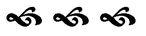
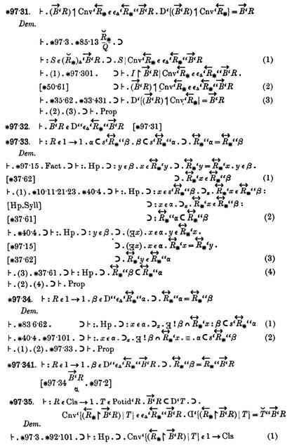
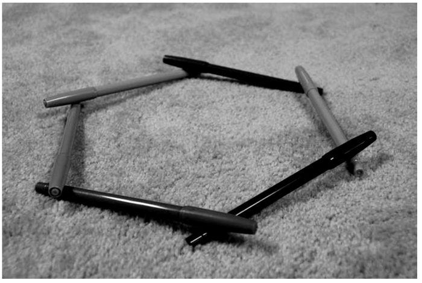
# 제10장 - 괴델의 전형적인 이상한 고리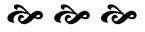
피보나치를 만난 괴델
브륀에서 온 소년은 스무 살 무렵 이미 뛰어난 수학자였고, 모든 수학자들처럼 정수가 무수히 다양한 형태로 존재한다는 것을 잘 알고 있었다. 제곱수, 세제곱수, 소수, 10의 거듭제곱, 두 제곱수의 합 등 흔히 볼 수 있는 수들뿐만 아니라 수많은 종류의 정수에 익숙했다. 무엇보다 그의 미래에 결정적이었던 것은, 젊은 쿠르트가 레오나르도 디 피사(흔히 ‘피보나치’로 더 잘 알려진) 덕분에 정수의 부류를 재귀적으로 정의할 수 있다는 사실을 알고 있었다는 점이다.
1300년대에 피보나치는 오늘날 ‘피보나치 수’라고 부르는 수열을 고안해 탐구했다.
1, 2, 3, 5, 8, 13, 21, 34, 55, 89, 144, 233, 377, 610, 987, 1597, . . .
이 빠르게 커지는 무한 수열(앞으로 이 책에서는 F 수라고 부르겠다)에서 새로운 항은 앞선 두 항을 더해서 만들어진다(물론 처음 두 수인 1과 2는 예외로, 우리가 그냥 F 수라고 선언하고 시작한다).
이처럼 수열을 자기 자신에 기대어 거의 순환 논법처럼 정의하는 방식을 ‘재귀적 정의’라고 한다. 이는 이전 항들로부터 새로운 항을 만들어 내는 어떤 정확한 계산 규칙이 존재한다는 뜻이다. 그 규칙은 덧셈이든 곱셈이든 나눗셈이든 상관없다. 명확하게 정의되어 있기만 하면 된다. 재귀 수열의 출발점(이 경우에는 1과 2)은 일종의 씨앗 봉지라고 생각할 수 있다. 이 씨앗에서 거대한 식물 하나가, 즉 무수히 많은 가지와 잎사귀가 정해진 규칙에 따라 미리 결정된 방식으로 자라나는 것이다.
카스피해의 보석: 하나의 우화
레오나르도 디 피사의 수열은 놀라운 패턴으로 가득 차 있지만, 아쉽게도 그 이야기로 빠지면 본론에서 너무 멀어지고 만다. 그래도 처음 몇 개의 F 수 목록에서 144가 단연 눈에 띈다는 점만은 짚고 넘어가지 않을 수 없다. 144는 두드러진 완전제곱수이기 때문이다. 세제곱수인 8과 다소 퇴화된 사례인 1을 제외하면, F 수열의 처음 몇백 개의 항 안에는 다른 어떤 완전제곱수나 세제곱수, 혹은 어떤 정확한 거듭제곱수도 나타나지 않는다.
수십 년 전부터 사람들은 F 수열에 8과 144가 나타나는 것이 어떤 이유 때문인지, 아니면 그저 ‘우연한 사고’인지 궁금해하기 시작했다. 그래서 계산 도구가 점점 더 강력해지자 탐색을 시작했다. 기이하게도 수백만, 심지어 수십억 개의 F 수를 쏟아내는 슈퍼컴퓨터가 등장한 뒤에도, 피보나치 수열에서 다른 완전거듭제곱수를 발견한 사람은 아무도 없었다. F 수열에서 거듭제곱수가 곧 등장할 가능성은 희박해 보였지만, 도대체 왜 이런 완벽한 상호 회피가 일어나는 것일까? 임의의 n에 대한 n제곱수가 피보나치의 특이한 재귀적 방식으로 두 수를 더하는 것과 무슨 상관이 있단 말인가? 8과 144는 그저 사소한 우연한 오차일 뿐일 수도 있지 않은가? 왜 다른 사소한 오차는 일어나지 못하는 것일까?
이를 우화로 비추어 보자. 어느 날 누군가 중앙아시아의 거대하고 푸른 카스피해 바닥에서 우연히 거대한 다이아몬드와 화려한 루비, 그리고 작은 진주 하나를 건져 올렸다고 상상해 보자. 이 놀라운 발견에 자극받은 다른 보물 사냥꾼들이 다이아몬드, 루비, 진주, 에메랄드, 토파즈 등을 더 찾겠다고 세계에서 가장 큰 호수의 바닥을 미친 듯이 긁어대기 시작했다. 하지만 아무리 바닥을 훑어도 보석은 단 하나도 더 나오지 않았다. 사람들은 자연히 저 아래에 보석이 더 숨어 있을지 궁금해하겠지만, 그걸 어떻게 알 수 있겠는가? (단서: 내 우화에는 약간의 흠이 있다. 카스피해는 아무리 거대해도 유한하기 때문에, 적어도 원리적으로는 막대한 자금을 지원받은 과학 탐사팀이 언젠가 호수 바닥을 완전히 다 훑어볼 수 있다고 상상할 수 있기 때문이다. 내 비유가 ‘완벽’해지려면 카스피해가 무한하다고 생각해야 한다. 독자여, 상상력을 조금만 발휘해 주시라!)
이제 반전이 나온다. 수학적 사고방식을 지닌 어느 지질학자가 나서서, 그 정교한 카스피해의 보석 두 개와 작고 둥근 진주 하나가 유일무이한 것임을, 다시 말해 앞으로도 카스피해에서 어떤 종류나 크기의 보석이나 진주도 다시는 발견되지 않을 것이며 결코 발견될 수 없다는 정확한 이유가 있음을 증명하려 한다고 가정해 보자. 그런 증명을 찾는 게 말이 되는가? 진주 하나, 루비 하나, 다이아몬드 하나만 빼고는 카스피해 바닥에서 어떤 보석도 절대 발견되지 못하게 막는 빈틈없는 과학적 이유가 어떻게 존재할 수 있겠는가? 터무니없게 들린다.
이것이 바로 우리가 물리적 세계를 바라보는 전형적인 방식이다. 우리는 물리적 세계가 우연한 사건들, 얼마든지 달라질 수 있었던 사실들, 그렇게 존재해야 할 근본적인 이유가 없는 상황들로 가득 차 있다고 생각한다. 하지만 수학자들은 자신들의 순수하고 추상적인 세계를 우리가 살아가는 무작위적이고 우연투성이인 물리적 세계의 정반대로 본다는 점을 기억하기 바란다. 수학 세계에서 일어나는 일들은 예외 없이, 말로 설명할 수 있고 이해할 수 있는 이유 때문에 일어난다고 수학자들은 여긴다.
이것이 바로 ‘수학자의 신조’다. 수학자들이 어떻게 생각하는지 이해하려면 반드시 이 사고방식을 받아들이고 품어야 한다. 그리고 이 특정한 사례에서, 피보나치 거듭제곱수가 부족하다는 수수께끼는 대부분의 수학자 눈에는 아주 사소한 문제였지만 특히 난해한 문제였다. 접근할 만한 자연스러운 경로가 전혀 보이지 않았기 때문이다. 관련된 두 현상, 즉 임의로 큰 지수를 가진 정수의 거듭제곱과 피보나치 수는 (마치 보석과 카스피해처럼) 개념적으로 서로 너무 동떨어져 있어서 깊고 체계적이며 필연적인 상호 연관성이 있을 것 같지 않았다.
그러던 중 거대한 수학자 팀이 ‘페르마의 마지막 정리’라는 ‘대물’(17세기 중반 피에르 드 페르마가 처음 제기한 악명 높은 주장으로, 2보다 큰 정수 n에 대해 an + bn = cn을 만족하는 양의 정수 a, b, c는 존재하지 않는다는 명제)을 정조준하고 나섰다. 이 위대한 국제 릴레이 팀의 마지막 승리 구간을 앤드루 와일스가 눈부시게 질주했고(그의 질주는 약 8년이 걸렸다), 마침내 현대 수학의 광대한 지도 곳곳의 아이디어들을 결합한 놀라운 기법을 동원해 수백 년 묵은 페르마의 주장을 증명해 냈다.
이 팀의 혁명적인 업적에 힘입어, 작지만 매혹적인 피보나치 거듭제곱수 수수께끼의 굳게 닫힌 문을 포함해 수많은 유명한 옛 문들에 틈을 내는 새로운 길들이 열렸다. 그리고 실제로 페르마의 마지막 정리가 증명된 지 약 10년 뒤, 세 명의 수학자가 와일스 등의 기법을 활용해 레오나르도 디 피사의 재귀 수열에서 세제곱수 8과 제곱수 144가 (1을 제외하면) 왜 영원히 다른 완전거듭제곱수 짝을 만나지 못하는지에 대한 정확한 이유를 밝혀냈다. 비록 극도로 난해하기는 하지만, 그 무한한 상호 회피의 춤 뒤에 숨은 이유가 마침내 발견된 것이다. 이는 ‘수학자의 신조’가 거둔 또 하나의 승리이자, 수학에서는 패턴이 있는 곳에 이유가 있다는 생각에 큰 가치를 두어야 할 또 하나의 이유다.
괴델의 뇌리에 스친 작은 불꽃
이제 쿠르트 괴델의 이야기로 돌아가 보자. 그는 온갖 종류의 무한한 수 집합이 다양한 재귀 규칙을 통해 정의될 수 있다는 강력한 아이디어와 마주했다. 유한한 초기 씨앗 집합에서 무한한 구조나 패턴이 유기적으로 자라나는 이미지는 괴델에게 단순한 호기심 이상의 것으로 다가왔다. 사실 그것은 그에게 PM의 정리들이 (유클리드의 원론에 나오는 정리들처럼) 언제나 PM의 이전 정리들로부터 (형식적 추론 규칙에 의해) 뻗어 나온다는 사실을 떠올리게 했다. 물론 처음 몇 개의 정리들은 예외인데, 이것들은 그저 정리라고 선언됨으로써 ‘공리’(씨앗에 해당)라고 불린다.
다시 말해, 처음에는 막연했던 이 연결고리에서 괴델의 머릿속에 불꽃처럼 피어난 정교한 비유에 따르면, PM의 공리는 피보나치의 씨앗 1과 2의 역할을 하고, PM의 추론 규칙은 가장 최근의 두 수를 더하는 역할을 하게 된다. 주된 차이점은 PM에는 추론 규칙이 하나가 아니라 여러 개 있어서 어느 단계에서든 무엇을 할지 선택할 수 있고, 게다가 선택한 규칙을 반드시 가장 최근에 생성된 정리(들)에만 적용할 필요도 없으므로 선택의 폭이 훨씬 더 넓다는 것이다. 하지만 이러한 추가적인 자유도를 제외하면 괴델의 비유는 매우 긴밀했고, 엄청나게 풍성한 결실을 맺게 된다.
영리한 규칙이 무생물 기호에 의미를 불어넣다
여기서 꼭 강조해야 할 점은 PM 같은 형식 체계의 각 추론 규칙이 하나 이상의 입력 논리식에서 출력 논리식으로 이어질 뿐만 아니라, 그것을 순전히 기호 배열적(typographical) 수단으로 수행한다는 것이다. 즉, 기호의 의미에 대해서는 전혀 생각할 필요 없이 순전히 기계적인 기호 밀어내기 과정을 통해 이루어진다. 규칙을 따라 정리를 만들어 내는 사람(또는 기계)의 입장에서는 기호에 의미가 전혀 없어도 상관없다.
반면, 각 규칙은 참을 표현하는 입력 논리식이 주어졌을 때 출력 논리식 역시 참을 표현하도록 매우 세심하게 설계되어야 한다. 따라서 규칙의 설계자(이 경우 러셀과 화이트헤드)는 기호의 의도된 의미를 고민하지 않는 조작자(인간이든 기계든)에게도 규칙이 정확히 작동하도록 기호의 의도된 의미를 깊이 생각해야만 한다.
사소한 예를 들어보자. 기호 ‘∨’가 ‘또는(or)’이라는 개념을 나타내도록 의도되었다고 하자. 그렇다면 가능한 추론 규칙 하나는 다음과 같다.
임의의 논리식 “P ∨ Q”로부터 뒤집힌 논리식 “Q ∨ P”를 도출할 수 있다.
이 추론 규칙은 타당하다. “네가 미쳤거나 내가 미쳤다”와 같은 ‘또는’ 진술이 참이면 언제나 뒤집힌 ‘또는’ 진술(“내가 미쳤거나 네가 미쳤다”) 역시 참이기 때문이다.
이 특정한 ∨-뒤집기 규칙은 우연히도 PM의 추론 규칙 중 하나는 아니지만, 얼마든지 규칙이 될 수 있었다. 요점은 이 규칙이 기호를 기계적으로 밀어내며 그 의미를 무시하면서도 여전히 진리를 보존할 수 있음을 보여준다는 데 있다. 이 규칙은 꽤 단순하지만, 진짜 중요한 일을 해내는 훨씬 미묘한 규칙들도 있다. 사실 그것이 바로 아리스토텔레스가 처음 제안하고, 블레즈 파스칼, 고트프리트 빌헬름 폰 라이프니츠, 조지 불, 오거스터스 드 모르간, 고틀로프 프레게, 주세페 페아노, 다비트 힐베르트 등 수많은 사상가가 수 세기에 걸쳐 조금씩 발전시켜 온 기호 논리학의 핵심 아이디어다. 러셀과 화이트헤드는 앞선 선배들보다 훨씬 야심 찬 방식으로 추론을 완전히 기계화하려는 오래된 꿈을 발전시키고 있었을 뿐이다.
수학자의 신조를 기계화하기
PM의 공리(정리의 ‘0세대’를 구성하는 씨앗들)에 추론 규칙을 적용하면 ‘자손’, 즉 ‘1세대’ 정리들이 만들어진다. 그런 다음 1세대 정리들(뿐만 아니라 공리들)에 가능한 모든 방식으로 규칙을 다시 한번 적용하면 새로운 정리 묶음인 2세대가 생성된다. 그 전체 혼합물에서 다시 3세대 정리 묶음이 나오고, 이런 식으로 무한히 눈덩이처럼 불어난다. PM의 무한한 정리 집합은 초기 씨앗들과, 오래된 정리로부터 새로운 정리를 만들어 내는 기호 배열적 ‘성장 규칙’에 의해 완전히 결정된다.
말할 것도 없이, 여기서의 희망은 기계적으로 생성된 이 모든 PM의 정리들이 수론의 참인 명제인 것(즉, 거짓인 명제가 결코 생성되지 않는 것)이며, 반대로 수론의 모든 참인 명제가 PM의 정리로서 기계적으로 생성되는 것(즉, 어떤 참인 명제도 영원히 생성되지 못한 채 남지 않는 것)이다. 이 첫 번째 희망을 일관성(consistency)이라 부르고, 두 번째 희망을 완전성(completeness)이라 부른다.
요컨대 우리는 PM의 무한한 정리 집합이 수론의 무한한 참 명제 집합과 정확히 일치하기를, 즉 완벽하고 흠잡을 데 없는 정렬을 이루기를 바란다. 적어도 러셀과 화이트헤드가 원했던 것은 그것이었고, 그들은 PM으로 이 목표를 달성했다고 믿었다(어쨌든 “s0 + s0 = ss0”은 정리였지 않은가?).
러셀과 화이트헤드가 등장하기 수 세기 전부터 이런저런 형태로 존재해 온 ‘수학자의 신조’를 다시 떠올려 보자.
X에 대한 증명이 있기 때문에 X는 참이다. X는 참이고, 따라서 X에 대한 증명이 있다.
첫 번째 줄은 앞서 말한 첫 번째 희망, 즉 일관성을 표현한다. 두 번째 줄은 두 번째 희망, 즉 완전성을 표현한다. 이처럼 수학자의 신조는 러셀과 화이트헤드가 추구했던 목표와 매우 밀접하게 관련되어 있다. 다만 그들의 목표는 ‘증명’이라는 말의 뜻을 명확히 하지 않고 그저 막연히 말하기만 하던 수학자의 신조를 PM이라는 받침대 위에 올려놓고 새롭고 엄밀한 토대 위에 세우는 것이었다. 다시 말해 사람들이 그 말을 PM 내부에서의 증명이라는 뜻으로 받아들이기를 원했던 것이다.
괴델 자신도 PM의 힘을 대단히 존중했다. 1931년 논문의 첫 문장들이 이를 잘 보여준다.
잘 알려진 바와 같이, 더 큰 엄밀성을 향한 수학의 발전은 수학의 넓은 영역을 형식화하는 데 이르렀으며, 그 결과 몇 가지 기계적 규칙에 따라 증명을 수행할 수 있게 되었다. 지금까지 구축된 가장 포괄적인 형식 체계는 한편으로는 프린키피아 마테마티카(PM)의 체계이고, 다른 한편으로는 체르멜로-프렝켈의 집합론 공리계(훗날 폰 노이만이 확장함)이다. 이 두 체계는 매우 방대하여 오늘날 수학에서 사용되는 모든 증명 방법이 그 안에서 형식화되었다. 즉, 소수의 공리와 추론 규칙으로 환원된 것이다.
하지만 괴델은 러셀과 화이트헤드의 역작에 정중한 경의를 표하면서도, 실제로는 참과 PM의 정리 사이의 완벽한 정렬이 달성되었다고 믿지 않았으며, 그런 일은 결코 달성될 수 없다고 생각했다. 그의 깊은 회의론은 생각 없이 기계적으로 기호를 찍어 내고 의미가 결여된 수학적 추론의 미궁 같은 궁전 어딘가에 지극히 기묘한 고리가 숨어 있다는 냄새를 맡은 데서 비롯되었다.
기적 같은 일사불란한 동조
재귀적으로 정의된 정수 수열과, 앞선 정리를 딛고 껑충껑충 뛰어오르는 PM의 정리 집합(더 나아가 씨앗 역할을 하는 공리와 성장 메커니즘 역할을 하는 추론 규칙을 갖춘 어떤 형식 체계든) 사이의 개념적 평행성은 괴델에게 어떤 영감을 주었다. 프린키피아 마테마티카의 페이지 위에 놓인 기호들의 배열 패턴, 즉 이전 정리들로부터 새로운 정리를 엄밀하게 논리적으로 도출하는 과정이 수의 세계 내부에 어떤 식으로든 정확하게 ‘거울처럼 비춰질’ 수 있으리라는 생각이었다. 내면의 목소리는 이 연결고리가 단순한 막연한 유사성이 아니라, 십중팔구 절대적으로 정확한 대응 관계로 바뀔 수 있다고 말해주었다.
더 구체적으로 말하면, 괴델은 피보나치의 F 수들이 그랬던 것처럼 산술 계산을 통해 서로에게서 유기적으로 자라나면서도, 동시에 PM의 정리 집합과 정확히 일대일로 대응하는 정수 집합을 구상했다. 예를 들어 기호 배열 규칙 R5를 사용해 정리 X와 Y로부터 정리 Z를 만들고, 계산 규칙 r5를 사용해 수 x와 y로부터 수 z를 만든다면, 모든 것이 딱 맞아떨어질 것이다. 즉 x가 정리 X에 해당하는 수이고 y가 정리 Y에 해당하는 수라면, z는 ‘기적처럼’ 정리 Z에 해당하는 수로 판명될 것이다. 완벽한 동조(synchrony)가 이루어지는 셈이다. 기호 배열 쪽과 수치 쪽, 두 진영이 발맞춰 일사불란하게 움직이게 된다. 처음에 이 기적 같은 동조의 비전은 작은 불꽃에 불과했지만, 괴델은 이 막연한 꿈을 다른 사람들에게 명확히 설명할 수 있을 만큼 정밀하게 다듬을 수 있음을 금세 깨달았고, 끈질기게 이를 파고들기 시작했다.
논리식과 아주 큰 정수 사이를 오가기
직관적인 예감을 진지하고 정밀하며 존경받을 만한 아이디어로 바꾸기 위해, 괴델은 먼저 PM 기호들로 이루어진 임의의 문자열(그것이 참을 주장하든 거짓을 주장하든, 심지어 아무렇게나 뒤섞인 무작위 기호 덩어리든 상관없이)을 어떻게 체계적으로 양의 정수로 변환할 수 있는지, 그리고 반대로 그 정수를 어떻게 ‘해독’하여 원래의 문자열을 되돌려 받을 수 있는지 알아내야 했다. 모든 논리식에 수치로 된 ‘이름’을 부여하는 체계적인 사상(mapping), 즉 괴델의 꿈의 첫 번째 단계는 다음과 같이 이루어졌다.
PM의 기본 알파벳은 고작 12개 남짓의 기호로 이루어져 있었다(나중에 다른 기호들이 도입되기는 했지만 모두 처음 몇 개의 기호로 정의되었으므로 개념적으로는 꼭 필요하지 않았다). 괴델은 이 기호들 각각에 서로 다른 작은 정수를 할당했다(이 처음 몇 개의 선택은 꽤 자의적이었다. 고립된 기호 하나에 어떤 수가 연결되는지는 정말 중요하지 않았다).
여러 기호로 이루어진 논리식(참고로 이 책에서 ‘기호열’, 줄여서 ‘문자열’과 ‘논리식’은 동의어로 쓴다)의 경우, 아이디어는 왼쪽에서 오른쪽으로 가며 기호들을 하나씩 그 암호 숫자로 바꾼 다음, 그 개별 암호 숫자들을 (차례로 커지는 소수들의 지수로 사용하여) 하나의 고유한 큰 정수로 결합하는 것이었다. 따라서 고립된 기호에 숫자가 할당되고 나면, 기호들의 문자열에 할당되는 숫자는 더 이상 자의적이지 않았다.
예를 들어 기호 ‘0’의 (자의적인) 암호 숫자가 2이고, 기호 ‘=’의 암호 숫자가 6이라고 하자. 그러면 아주 간단한 논리식 “0=0”에 들어 있는 세 기호의 암호 숫자는 2, 6, 2가 되고, 이 세 숫자는 다음과 같이 처음 세 소수(2, 3, 5)의 지수로 사용된다.
22 · 36 · 52 = 72900
이렇게 해서 우리는 72900이 논리식 “0=0”에 해당하는 단일한 수임을 알 수 있다. 물론 이토록 짧은 논리식 치고는 꽤 큰 정수이며, 50개 기호로 이루어진 논리식에 해당하는 정수가 천문학적으로 클 것임은 쉽게 상상할 수 있다. 처음 50개의 소수를 각각 거듭제곱한 뒤 그 큰 수들을 모두 곱해야 하니 진정한 거물이 탄생할 것이다. 하지만 아무렴 어떤가. 수는 아무리 커도 그저 수일 뿐이다. (괴델에게 다행스럽게도 소수는 무한히 많다. 만약 소수가, 예컨대 10억 개밖에 없었다면 그의 방법은 10억 개 이하의 기호로 이루어진 논리식만 암호화할 수 있었을 것이다. 그랬다면 정말 애석한 일이 되었을 것이다!)
해독 과정은 72900을 소인수분해하고(소인수분해는 유일하다), 오름차순 소수들이 어떤 지수로 거듭제곱되어 있는지 하나씩 읽어 내는 것으로 작동한다. 이 경우에는 2, 6, 2다.
요약하자면, 이처럼 뻔하지 않으면서도 단순한 방식으로 괴델은 주어진 임의의 PM 논리식을 동등한 수(훗날 사람들이 괴델 수라고 부르게 된 수)로 대체하는 방법을 찾아냈다. 그런 다음 그는 이 ‘산술화’ 아이디어를 임의의 논리식 수열까지 확장했다. PM에서의 증명은 논리식들의 수열이므로, 그는 고립된 논리식뿐만 아니라 증명 자체를 다루고 싶었기 때문이다. 그리하여 소수와 지수를 이용하는 본질적으로 동일한 기법을 통해, 임의로 긴 논리식 수열 역시 하나의 큰 정수로 변환할 수 있었다. 여기서 우리가 말하는 숫자가 정말로 큰 수라는 것은 짐작할 수 있을 것이다.
요컨대 괴델은 프린키피아 마테마티카의 독특한 표기법으로 쓰인 어떤 시각적 기호 패턴이든 고유한 수를 할당받을 수 있고, 그 수는 다시 대응하는 시각적 패턴(즉, 기호열)으로 쉽게 해독될 수 있음을 보여주었다. 오늘날 ‘괴델 수 매기기(Gödel numbering)’라 불리는 이 정밀한 양방향 사상을 구상하고 다듬은 것이 괴델 작업의 첫 번째 핵심 단계였다.
논리식과 발맞춰 움직이는 아주 큰 정수들
다음 핵심 단계는 특별한 정수 집합들을 피보나치식으로 재귀 정의하는 것이었다. 즉, 이전에 생성된 정수들로부터 덧셈이나 곱셈, 혹은 더 복잡한 계산을 통해 유기적으로 자라나는 정수들을 정의하는 일이었다. 한 가지 예로 적격 논리식(wff) 수가 있다. 이는 괴델의 암호를 통해 PM의 무의미하거나 비문법적인 문자열이 아니라 ‘적격한(well-formed)’, 즉 ‘의미 있는’ 논리식을 나타내는 정수들이다. (적격 논리식, 줄여서 ‘wff’의 예로는 “0+0=sss0”을 들 수 있다. 비록 거짓을 주장하고 있지만 여전히 의미 있는 진술이다. 반면 “=)0(=”나 “00==0+=”는 적격 논리식이 아니다. “zzip dubbiwubbi pizz” 같은 아무 의미 없는 가짜 단어들의 나열처럼, 그것들은 아무것도 주장하지 않는다.) 마침 PM에서 더 긴 wff는 몇 가지 단순하고 표준적인 기호 배열 병치 규칙에 의해 더 짧은 wff로부터 만들어지기 때문에, 그에 해당하는 더 큰 암호 숫자 역시 몇 가지 단순하고 표준적인 수치 계산 규칙에 의해 더 짧은 것들의 더 작은 암호 숫자로부터 만들어질 수 있다.
방금 내가 이 과정을 꽤 가볍게 말했지만, 사실 이 단계는 아마도 괴델의 핵심 통찰 중 가장 깊은 것이었을 것이다. 즉, 일단 문자열들이 ‘산술화’(수치적 짝을 부여받음)되고 나면, 종이 위에서 규칙에 따라 문자열을 이리저리 밀어내는 모든 기호 배열 작업은 그 수치적 대리물(물론 엄청나게 큰 수들이지만 여전히 그저 수일 뿐이다)을 다루는 어떤 순수한 산술 계산과 완벽하게 나란히 진행될 수 있다는 것이다. 러셀과 화이트헤드의 눈에 정교한 기호 밀어내기로 보였던 것이 쿠르트 괴델의 눈에는 한 무더기의 직관적인 숫자 계산(number-crunching)으로 보였다(물론 이 모든 일이 컴퓨터가 아직 존재하지 않던 선사 시대에 일어났으므로 그가 이 다채로운 현대적 용어를 쓰지는 않았다). 이것들은 진행 중인 동일한 사건을 바라보는 그저 두 가지 다른 관점이었을 뿐이며, 100퍼센트 동등하고 서로 맞바꿀 수 있는 것이었다.
PM이 몸을 비틀어 자기 자신을 바라보는 희미한 조짐
괴델은 재귀를 통해 wff 수 같은 무한한 수 부류를 쌓아 올리는 놀이—즉, 어떤 숫자 계산 규칙을 통해 기존의 확립된 ‘클럽 회원’들을 결합하여 새로운 ‘클럽 회원’을 만들어 내는 일—가 본질적으로 이전 회원들의 합을 취해 F 수 부류를 쌓아 올리는 피보나치의 재귀 놀이와 똑같은 아이디어임을 간파했다. 물론 재귀 과정은 클럽의 가장 최근 두 회원의 합을 구하는 것보다 훨씬 더 복잡할 수 있다.
재귀적 정의가 하는 일은, 비록 암묵적이기는 하지만, 전체 정수 집합을 클럽의 회원과 비회원으로 나누는 것이다. 즉, 재귀적 쌓기 과정을 통해 조만간 도달 가능한 수들과, 아무리 오래 기다려도 결코 도달할 수 없는 수들로 나뉜다. 따라서 34는 F 클럽의 회원인 반면, 35는 비회원이다. 35가 F 수가 아니라는 걸 어떻게 알 수 있을까? 아주 쉽다. 새로운 F 수를 만드는 규칙은 언제나 작은 수로부터 더 큰 수를 만들어 내므로, 일단 어떤 크기를 지나치고 나면 나중에 다시 돌아와 그 근처의 다른 수를 ‘주워 담을’ 가능성이 전혀 없기 때문이다. 다시 말해 1, 2, 3, 5, 8, 13, 21, 34, 55라는 F 수를 만들고 나면 그 범위 안에서는 이것들이 전부라는 것을 알 수 있으므로, 35, 36부터 54까지는 당연히 F 수가 아니다.
하지만 어떤 다른 수 클럽이 때로는 입력보다 더 큰 출력을 내고 또 어떤 때는 입력보다 더 작은 출력을 내는 재귀 규칙으로 정의된다면, F 클럽이라는 단순한 경우와는 달리 앞선 단계에서 놓쳤던 더 작은 정수를 나중에 다시 돌아와 주워 담지 않으리라고 확신할 수 없다.
우리가 ‘wff 수’라고 부른, 재귀적으로 정의된 수 클럽에 대해 조금만 더 생각해 보자. 우리는 숫자 72900이 ‘wff성(wff-ness)’을 지니고 있음을 보았고, 곰곰이 생각해 보면 576과 2916에는 그 성질이 결여되어 있음을 알 수 있다. (왜 그럴까? 소인수분해를 해서 2와 3의 지수를 살펴보면 이 수들이 각각 문자열 “0=”과 “=0”의 수치 암호화라는 것을 알 수 있는데, 둘 다 말이 되지 않으므로 적격 논리식이 아니다.) 다시 말해, wff성은 그 기이한 정의에도 불구하고 제곱수성이나 소수성, 혹은 피보나치의 F성 못지않게 순수한 수의 세계에서 정당한 연구 대상이다. ‘wff 클럽’의 회원과 비회원 사이의 구분은 제곱수 클럽, 소수 클럽, F 수 클럽의 회원과 비회원 사이의 구분만큼이나 진정한 수론적 구분이다. wff 수는 재귀적인 산술(즉, 계산적) 방식으로 정의할 수 있기 때문이다. 게다가 마침 wff성을 정의하는 재귀 규칙은 언제나 입력보다 더 큰 출력을 내놓기 때문에, 일단 특정 크기를 넘어서면 그 구역을 다시는 방문하지 않을 것임을 알 수 있다는 점에서 wff성은 F성과 단순한 성질을 공유한다.
피보나치의 재귀 수열에서 제곱수를 보고 호기심이 동한 사람들이 있었던 것처럼, 재귀적으로 정의된 wff 수열에 제곱수(또는 세제곱수 등)가 있는지 관심을 갖는 사람들도 있을 수 있다. 그들은 프린키피아 마테마티카의 대응하는 논리식에 대해서는 전혀 생각하지 않은 채, 그런 순수한 수론적 질문을 탐구하는 데 많은 시간을 보낼 수도 있다.
사람들은 괴델의 wff 수가 프린키피아 마테마티카에서 적격성을 정의하는 러셀과 화이트헤드의 규칙에서 유래했다는 사실을 완전히 모를 수도 있다. 마치 확률의 법칙을 공부하는 사람이 이 깊은 수학 분야가 원래 도박을 분석하기 위해 개발되었다는 사실을 전혀 의심하지 않을 수 있는 것처럼 말이다. 오래전 누군가에게 특정한 재귀적 정의를 떠올리게 한 영감이 무엇이었는지는 그 정의가 규정하는 수들에 아무런 영향도 미치지 않는다. 중요한 것은 오직 초기 씨앗에 규칙을 유한 번 적용하여 클럽의 어떤 회원이든 만들어 낼 수 있는 순수하게 계산적인 방법이 존재해야 한다는 점뿐이다.
마침 wff 수는 재귀적 방식으로 정의하기가 비교적 쉬우며, 바로 그 이유 때문에 wff성은 (정확히 F성처럼) 프린키피아 마테마티카가 연구하도록 설계된 바로 그런 종류의 수학적 개념이다. 물론 화이트헤드와 러셀은 자신들의 기계적 추론 체계가 이토록 기묘한 용도로 쓰이리라고는 꿈에도 생각하지 못했다. 기계로서의 자기 자신의 성질이 본질적으로 자기 자신에 의해 관찰 대상이 되는 것, 마치 현미경을 사용해 자기 자신의 렌즈 몇 개에 결함이 있는지 살펴보는 것과 같은 일 말이다. 하지만 발명품이란 종종 발명가를 놀라게 하기 마련이다.
프림 수
화이트헤드와 러셀의 시리즈 중 어떤 가상의 권에서 wff 수를 정의하고 그 다양한 수치적 성질을 체계적으로 탐구할 수 있음을 깨달은 괴델은, 자신의 비유를 한 걸음 더 밀고 나갔다. 그리고 꽤 정교한 장치를 동원하기는 했지만 사실 개념적으로는 그리 어렵지 않게, 훨씬 더 흥미로운 재귀적 정의 정수 부류가 존재함을 보여주었다. 나는 여기서 그 수들을 프림(prim) 수라고 부르겠다(유명한 세 권짜리 책의 제목에 장난스럽게 경의를 표하는 뜻에서다). 이는 PM의 증명 가능한 논리식(즉, 정리)에 해당하는 수들이다.
물론 PM 증명이란 PM의 공리에서 시작해 문제의 논리식까지 이어지는 일련의 논리식들로, 각 단계는 어떤 추론 규칙에 의해 허용되며, PM에서 이 규칙은 형식적인 기호 배열적 추론 규칙이 된다. PM의 문자열에 작용하는 모든 기호 배열적 추론 규칙에 대해, 괴델은 수에 작용하는 완벽하게 일치하는 계산 규칙을 제시했다. 수치 계산은 사실상 기호 배열 조작을 향해 코웃음을 치며 당당히 말하고 있었다. “네가 할 수 있는 건 뭐든 내가 더 잘할 수 있어!” 음, 정말로 더 잘하는 것은 아니지만, 괴델이 의심의 여지 없이 보여준 핵심은 계산 규칙이 어떤 형식적 기호 배열 규칙이든 완벽하게 모방하여—즉, 완벽한 동조 상태를 유지하며—따라갈 수 있으므로, 수치 규칙이 그에 못지않게 훌륭하다는 점이었다.
결론적으로 러셀과 화이트헤드의 형식 체계에서 증명 가능한 모든 문자열에는 그에 대응하는 프림 수가 존재했다. 프림인 어떤 정수든 기호로 해독하면, 그 결과로 얻는 문자열은 PM에서 증명 가능한 논리식이 된다. 마찬가지로 PM에서 증명 가능한 어떤 논리식이든 엄청나게 큰 하나의 정수로 암호화할 수 있으며, 충분한 계산만 거치면 그 수가 프림 수임을 보일 수 있다. 프림 수의 간단한 예는 다시 한번 우리의 친구 72900이다. 논리식 “0=0”은 적격 논리식일 뿐만 아니라, 너무나 당연하게도 PM에서 도출 가능하기 때문이다. (사실 만약 그렇지 않다면, PM은 수학적 추론의 기계적 모델로서 완전히 형편없을 것이다!)
wff 수와 프림 수 사이에는 결정적인 차이가 하나 있다. 이는 PM의 추론 규칙이 때때로 입력 문자열보다 더 짧은 출력 문자열을 만들어 낸다는 사실에서 비롯된다. 이는 프림 수를 정의하는 대응하는 산술 규칙이 때때로 큰 프림 수를 입력으로 받아 그로부터 더 작은 프림 수를 출력으로 만들어 낸다는 뜻이다. 따라서 수직선 위에서 한 번 방문했던 구간이라도 나중에 언제든 다시 방문할 수 있으며, 바로 이 사실 때문에 주어진 정수가 프림인지 아닌지 판별하기가 훨씬, 훨씬 더 어려워진다. 이는 프림 수에 관한 핵심적이고도 매우 깊은 사실이다.
제곱수, 소수, F 수, 혹은 wff 수와 마찬가지로, 화이트헤드와 러셀의 시리즈 중 프림 수를 정의하고 그 수학적 성질을 연구하는 가상의 권이 존재할 수도 있다. 예를 들어 그러한 책에는 (주의 깊게 살펴보면) “72900은 프림 수이다”라고 주장하는 PM 논리식의 증명이 실릴 수도 있고, 그 반대(“72900은 프림 수가 아니다”)를 주장하는 것으로 볼 수 있는 또 다른 논리식을 논의할 수도 있을 것이다. 물론 후자의 진술은 거짓이고 전자는 참이다. 심지어 “프림 수는 무한히 많다”와 같은 훨씬 더 복잡한 수론적 아이디어도 PM 표기법으로 표현하여 그 가상의 권에서 논의할 수 있는데, 이는 (암호를 통해) “PM에서 증명 가능한 논리식은 무한히 많다”고 주장하는 것과 마찬가지다.
다소 엉뚱한 일처럼 보일지 모르지만, “어떤 정수가 두 프림 수의 합으로 표현될 수 있고, 어떤 정수는 그렇지 않은가?”와 같은 18세기풍의 수론 질문을 던지는 것도 분명 가능하다. 아마 아무도 진지하게 그런 별난 질문을 하지는 않겠지만, 요점은 프림 수라는 성질이 비록 다소 난해한 ‘현대적’ 성질이기는 해도, 제곱수나 소수, 혹은 피보나치 수 같은 ‘고전적’ 성질 못지않게 정수의 진정한 수론적 성질이라는 것이다.
프림 수의 기이한 힘
누군가 여러분에게 기계를 하나 만들었다고—나는 그것을 ‘구루(Guru)’라고 부르겠다—말했다고 상상해 보자. 이 기계는 여러분이 원하는 어떤 정수 n을 대고 “n은 소수인가?”라고 물어도 언제나 정확하게 대답한다. “641은 소수인가?”라고 물으면 구루는 톱니바퀴를 잠시 돌리더니 “예”라고 답한다. 642에 대해서는 구루가 잠깐 ‘생각’하더니 “아니오”라고 답한다. 여러분은 그런 기계에 그다지 놀라지 않을 것이다. 실리콘 회로나 도미노 연쇄 기술로 그런 기계를 구현할 수 있다는 것은 요즘 세상에 누구의 마음도 흔들 만한 일이 아니다.
하지만 누군가 여러분에게 그와 유사한 기계를 하나 만들었다고—나는 그것을 ‘괴루(Göru)’라고 부르겠다—말했다고 상상해 보자. 이 기계는 “n은 프림 수인가?”라는 형태의 어떤 질문에도 언제나 정확하게 대답한다. 앞선 주장과 엄밀히 유사한 이 주장이 여러분에게 똑같이 시시하게 들리는가? 만약 그렇다면, 정중히 말씀드리건대 여러분은 다시 생각해 보셔야 한다.
이유는 이렇다. 만약 여러분이 괴루가 신뢰할 만하다고 믿고, 동시에 수학자의 신조(프린키피아 마테마티카 버전)도 믿는다면, 여러분은 이 작은 괴루가 혼자서도 여러분이 관심 있는 모든 수론적 질문에 답할 수 있다고 결론 내릴 수 있다. 마치 요술 램프에서 소환된 지니처럼 말이다. 어떻게 그럴 수 있을까? 무엇이 괴루를 마법의 지니로 만드는가?
자, 여러분이 명제 X가 참인지 거짓인지 알고 싶다고 하자(예를 들어 “2보다 큰 모든 짝수는 두 소수의 합이다”라는 유명한 주장—앞서 말했듯 거의 3세기가 지난 오늘날에도 여전히 미해결 상태다). 여러분은 그저 X를 PM의 형식 표기법으로 적은 다음, 그 논리식을 기계적으로 괴델 수 x로 변환하고, 그 수를 괴루에 입력하기만 하면 된다(즉, x가 프림인지 아닌지 묻는 것이다). 물론 x는 엄청나게 큰 정수일 테니 괴루가 답을 내놓는 데 꽤 오랜 시간이 걸리겠지만, (괴루가 사기가 아니라고 가정하면) 조만간 ‘예’ 또는 ‘아니오’를 뱉어 낼 것이다. 괴루가 ‘예’라고 답하면 여러분은 x가 프림 수임을 알게 되고, 이는 x가 암호화한 논리식이 증명 가능한 논리식임을, 즉 명제 X가 참임을 말해 준다. 반대로 괴루가 ‘아니오’라고 답하면 여러분은 명제 X가 증명 가능하지 않음을 알게 되고, 따라서 수학자의 신조(프린키피아 마테마티카 버전)를 믿는다면 X가 거짓이라고 결론 내리게 될 것이다.
다시 말해, 프림 수와 ‘건방진(saucy)’ 수(비프림 수)를 틀림없이 구별해 내는 기계만 있고, 수학자의 신조의 프린키피아 마테마티카 버전이 타당하다고 당연시한다면, 우리는 참인 명제와 거짓인 명제를 틀림없이 구별할 수 있을 것이다. 요컨대 괴루를 갖는 것은 우리에게 모든 수학적 지식으로 가는 왕도를 열어 주는 셈이다.
그러므로 프림 수 하나만으로도 은밀한 방식으로 모든 수학적 지식을 그 안에 고스란히 품고 있는 것처럼 보인다! 괴델 이전에는 그 누구도 이토록 마법 같은 신탁의 자질을 지닌 수열을 꿈조차 꿔 본 적이 없었다. 이 놀라운 수들은 그 무게만큼의 황금 가치가 있어 보인다! 하지만 내가 말했듯이, 프림 수는 파악하기가 교묘하다. 아주 뒤늦은 단계에서 작은 수들이 클럽에 추가되기도 하기 때문이다. 그래서 프림 수와 건방진 수를 구별하는 것도, 괴루를 만드는 것도 쉽지 않을 것이다. (이는 앞으로 다가올 일에 대한 예감이다.)
괴델식 기이함
마침내 괴델은 자신의 비유를 필연적이고 중대한 결론으로 밀고 나갔다. 그것은 독자들에게 (물론 기호 하나하나를 다 나열한 것은 아니고, 일련의 정확한 ‘조립 설명서’를 통해) “어떤 정수 g는 프림 수가 아니다”라는 겉보기에 무해한 주장을 펼치는 천문학적으로 긴 PM 논리식을 제시하는 것이었다. 그런데 이 논리식이 말하는 그 ‘어떤 정수 g’는 지극히 우연치 않게도(어떤 이들은 악마적이라고 말할지도 모를 우연으로) 바로 이 논리식 자체와 연결된(즉, 이를 암호화한) 수였다(따라서 필연적으로 어마어마하게 큰 정수였다). 곧 보게 되겠지만, 괴델의 이 기이한 논리식은 두 가지 다른 층위에서 해석될 수 있으며, 어떻게 해석하느냐에 따라 두 가지 매우 다른 의미를 지닌다.
더 직관적인 층위에서 보면, 괴델의 논리식은 그저 이 어마어마하게 큰 정수 g에 프림성이라는 수론적 성질이 결여되어 있다고 주장할 뿐이다. 이 주장은 “72900은 소수가 아니다”라는 주장과 매우 비슷하다. 물론 g는 72900보다 훨씬 크고, 프림성은 소수성보다 훨씬 까다로운 성질이기는 하지만 말이다. 그러나 괴델이 프림성을 PM 체계의 규칙을 통한 문자열의 증명 가능성을 수치적으로 거울처럼 비추도록 정의했기 때문에, 이 논리식은 또한 다음과 같이 주장한다.
우연히도 암호 숫자 g를 가진 논리식은
프린키피아 마테마티카의 규칙을 통해 증명 가능하지 않다.
자, 내가 이미 말했듯이, ‘우연히도’ 암호 숫자 g를 가진 논리식은 바로 위의 주장을 하는 논리식이다. 요컨대 괴델의 논리식은 자기 자신에 대해 주장하고 있는 것이다. 즉, 다음과 같은 주장이다.
바로 이 논리식은 PM의 규칙을 통해 증명 가능하지 않다.
때때로 이 두 번째 표현은 날카롭게 “나는 정리가 아니다”라고 옮겨지기도 하고, 심지어 더 간결하게 다음과 같이 표현되기도 한다.
나는 증명 불가능하다
(여기서 ‘PM 체계 안에서’라는 말은 암묵적으로 전제되어 있다.)
괴델은 나아가 자신의 논리식이 언뜻 보기에 매우 이상하고 당혹스럽기는 하지만 그리 드문 것도 아님을 보여주었다. 사실 그것은 PM 체계 자체에 대해 주장하는 무한한 논리식 가족의 일원에 불과했으며, 그중 많은 논리식들이 자기 자신에 대해 비슷하게 기이하고 비틀린 내용(일부는 참이고 일부는 거짓인)을 주장했다(예: “나도 나의 부정도 PM의 정리가 아니다”, “내가 PM 안에서 증명을 갖는다면, 나의 부정은 나보다 더 짧은 증명을 갖는다” 등등).
젊은 쿠르트 괴델—1931년 당시 그는 고작 스물다섯 살이었다—은 러셀과 화이트헤드가 유형론으로 보호받고 따라서 역설이 없다고 여겨진 엄숙하고 형식적인 세계, 그들의 장대한 세 권짜리 역작 프린키피아 마테마티카 안에 숨어 있던, 놀랍도록 예기치 못한 기괴하게 비틀린 논리식들의 거대한 바다를 발견한 것이다. 그리고 괴델의 원래 논리식과 그 수많은 사촌들이 지닌 반직관적인 성질들은 그때 이래로 줄곧 수학자, 논리학자, 철학자들의 마음을 사로잡아 왔다.
논리식의 괴델 수를 논리식 안에 집어넣는 법
괴델의 위대한 업적이라는 주제를 떠나기 전에, 약간 기술적인 문제 하나를 짚고 넘어가지 않을 수 없다. 이를 건너뛰면 일부 독자들은 괴델 작업의 핵심 측면에 대해 혼란스러움, 심지어 회의감을 품은 채 남게 될 것이기 때문이다. 게다가 이 아이디어는 실제로 꽤 마법 같아서 잠깐 언급할 가치가 있다.
사람을 괴롭히는 의문은 이것이다. 도대체 괴델은 어떻게 논리식의 괴델 수를 그 논리식 자체 안에 집어넣을 수 있었을까? 처음 생각해 보면 마치 성냥갑 안에 코끼리를 우겨 넣으려는 것처럼 보이며, 어떤 면에서는 정확히 그렇다. 어떤 논리식도 자신의 괴델 수를 나타내는 숫자를 문자 그대로 포함할 수는 없다. 그 숫자는 논리식 자체보다 훨씬 더 많은 기호를 포함할 것이기 때문이다! 언뜻 보기에 이것은 치명적인 걸림돌처럼 보이지만, 그렇지 않은 것으로 판명된다. 그리고 우리가 앞서 나눈 G. G. 베리의 역설에 관한 논의를 떠올려 본다면 아마 그 이유를 알 수 있을 것이다.
그 비결은 어떤 거대한 수들은 매우 짧은 설명을 갖는다는 단순한 사실에 있다(예를 들어 387420489는 “9의 9제곱”이라는 단 몇 음절만으로 설명할 수 있다). 아주 긴 논리식의 괴델 수를 계산하는 매우 짧은 비법이 있다면, 그 거대한 수를 가장 느리고 투박한 방식(“0의 다음 수의 다음 수의 다음 수의 …… 다음 수”)으로 묘사하는 대신, 계산상의 지름길을 통해 묘사할 수 있다. 그리고 (숫자 자체를 집어넣는 대신) 그 지름길을 기호로 표현해 논리식 안에 넣으면, 성냥갑 안에 코끼리를 우겨 넣지 않고도 논리식이 자기 자신에 대해 말하게 만들 수 있다. 이를 수학적인 방식으로 설명하려 들지 않고, 대신 철학자 W. V. O. 콰인이 고안한 우아한 언어적 비유를 들어 그 핵심을 전달해 보겠다.
콰인의 비유로 보는 괴델의 ‘성냥갑 속 코끼리’ 트릭
여러분이 영어로 “이 문장(this sentence)”이라는 구절을 쓰지 않고 자기 자신에 대해 말하는 문장을 쓰고 싶다고 가정해 보자. 아마 이 과제가 꽤 까다롭다는 걸 알게 될 것이다. 따옴표로 묶인 단어와 구절을 사용해 문장 안에서 그 문장 자체를 실제로 묘사해야 하기 때문이다. 예를 들어, 다음의 첫 번째(다소 어설픈) 시도를 살펴보자.
“이 문장은 다섯 단어로 되어 있다”라는 문장은 다섯 단어로 되어 있다.
방금 내가 쓰고(여러분이 읽은) 문장은 참이지만, 안타깝게도 자기 자신에 관한 문장이 아니다. 어쨌든 전체 문장은 따옴표는 물론이고 열 개의 단어를 포함하고 있기 때문이다. 이 문장은 그 안에 따옴표로 묶여 박혀 있는 더 짧은 문장에 관한 것이다. 그리고 “다섯”을 “열”로 바꾼다고 해서 자기 자신을 가리키게 되는 것도 아니다. 그 단순한 행동이 하는 일이라고는 참이었던 내 문장을 거짓으로 바꾸는 것뿐이다. 한번 보라.
“이 문장은 열 단어로 되어 있다”라는 문장은 열 단어로 되어 있다.
이 문장은 거짓이다. 그리고 더 중요한 것은, 여전히 그 안에 박혀 있는 더 짧은 문장에 관한 것일 뿐이라는 점이다. 보시다시피, 지금까지 우리는 자기 자신에 대해 말하는 문장을 고안하는 데 별로 가까이 가지 못했다.
문제는 내가 따옴표 안에 넣는 것이 무엇이든 필연적으로 그 일부를 이루는 전체 문장보다 짧을 수밖에 없다는 데 있다. 이는 너무나 자명한 사실이며, 실제로 논리식 자체 안에 자신의 괴델 수를 직접 집어넣으려 할 때 부딪히는 걸림돌과 정확히 일치하는 언어적 비유다. 코끼리는 성냥갑 안에 들어가지 않는다! 반면 코끼리의 DNA는 성냥갑 안에 거뜬히 들어간다…
실제로 DNA가 코끼리 자체가 아니라 코끼리에 대한 설명인 것처럼, 거대한 수 자체를 쓰는 대신 그 거대한 수에 대한 설명을 사용함으로써 장애물을 우회하는 방법이 있다. (조금 더 정확히 말하자면, 거대한 수치 기호를 쓰는 대신 간결한 기호적 설명을 쓸 수 있다.) 괴델이 이 트릭을 발견했고, 비록 꽤 미묘하기는 하지만 콰인의 비유 덕분에 이해하기가 한결 쉬워진다. 내가 ‘콰인의 준(準)재담(Quine’s Quasi-Quip)’이라 부를 다음 문장 조각을 보자.
따옴표로 묶인 자기 자신이 앞에 오면 완전한 문장이 된다.
여러분이 눈치챘듯이, 콰인의 준재담은 분명 완전한 문장이 아니다. 문법적 주어가 없기 때문이다(즉, “된다”에 주어가 없다). 그래서 내가 ‘준(Quasi)’이라는 접두사를 붙였다. 그런데 만약 이 준재담의 맨 앞에 명사 하나—예컨대 “콰인 교수”라는 호칭—를 놓으면 어떻게 될까? 그러면 콰인의 준재담은 완전한 문장으로 바뀔 것이고, 나는 그것을 ‘콰인의 재담(Quine’s Quip)’이라고 부르겠다.
“콰인 교수”는 따옴표로 묶인 자기 자신이 앞에 오면 완전한 문장이 된다.
여기서 동사 “된다”에는 주어가 있다. 바로 콰인 교수의 호칭이며, 그 뒤를 따르는 긴 수식어구의 꾸밈을 받고 있다.
그렇다면 이 콰인의 재담은 무슨 뜻일까? 이를 알아내려면 그것이 말하고 있는 대상을 실제로 구성해 보아야 한다. 즉, 콰인 교수의 호칭 앞에 따옴표로 묶인 자기 자신을 놓아야 한다. 그러면 다음과 같이 된다.
“콰인 교수” 콰인 교수
방금 우리가 만든 콰인의 재담은 그저 이 다소 우스꽝스러운 구절이 완전한 문장이라고 주장할(또는 말할) 뿐이다. 음, 그 주장은 명백히 거짓이다. 위 구절은 완전한 문장이 아니다. 동사조차 들어 있지 않다.
하지만 우리는 수백만 가지 다른 것들을 쓸 수도 있었는데도 자의적으로 콰인 교수의 호칭을 썼다. 콰인의 준재담 앞에 놓았을 때 콰인의 재담이 참이 되게 만드는 다른 명사가 있을까? 괴델이 깨달은 바, 그리고 콰인의 비유가 명확히 보여주는 바는, 그런 일이 일어나려면 동사 “된다”의 주어로 주어 없는 문장 조각을 써야 한다는 것이다.
주어 없는 문장 조각의 예는 무엇일까? 음, “눈은 희다” 같은 아무 흔한 문장이나 가져다가 주어를 잘라 내면 된다. 그러면 주어 없는 문장 조각인 “은 희다”를 얻는다. 이제 이것을 콰인의 준재담 앞에 놓을 명사로 써 보자.
“은 희다”는 따옴표로 묶인 자기 자신이 앞에 오면 완전한 문장이 된다.
이 제법 긴 문장은 우리가 아직 보여주지 않은 어떤 구성물에 대해 주장하고 있으므로, 지체 없이 그것을 만들어 보자.
“은 희다”는 희다.
(마침표는 덤으로 넣었지만, 사소한 건 따지지 말자.)
자, 방금 우리가 만들어 낸 것은 분명 완전한 문장이다. 동사(“희다”)가 있고, 그 동사에는 주어(따옴표로 묶인 구절)가 있으며, 전체가 말이 되기 때문이다. 물론 그것이 참이라고 말하는 건 아니다. 사실 명백히 거짓이다. “은 희다”는 실제로는 검다(물론 공정하게 말하자면, 글자와 단어에는 검은 잉크와 함께 흰 여백도 포함되어 있기는 하다. 그렇지 않으면 읽을 수 없을 테니까). 어쨌든 콰인의 준재담은 “은 희다”를 입력으로 받았을 때 완전한 문장을 만들어 냈고, 그것이 바로 콰인의 재담이 주장한 바다. 우리는 분명히 진전을 이루고 있다.
가장 까다로운 단계
우리의 마지막 악마적인 트릭은 콰인의 준재담 자체를 그 맨 앞에 놓을 명사로 사용하는 것이다. 자, 앞에 따옴표로 묶인 자기 자신의 복사본을 장착한 콰인의 준재담이 여기 있다.
“따옴표로 묶인 자기 자신이 앞에 오면 완전한 문장이 된다” 는 따옴표로 묶인 자기 자신이 앞에 오면 완전한 문장이 된다.
이 재담은 무엇을 주장하는가? 음, 먼저 그것이 무엇에 대해 말하고 있는지 결정해야 하며, 이는 “ ‘은 희다’는 희다”에 해당하는 것을 구성해야 함을 뜻한다. 이 경우 그에 해당하는 것은 다음과 같다.
“따옴표로 묶인 자기 자신이 앞에 오면 완전한 문장이 된다” 는 따옴표로 묶인 자기 자신이 앞에 오면 완전한 문장이 된다.
이 대목에서 여러분이 길을 잃지 않았기를 바란다. 이제 우리가 정말로 문제의 핵심에 도달했기 때문이다. 콰인의 재담은 결국 그 재담 자체와 똑같은 구절에 대해 말하고 있는 것으로 판명된다! 그것은 무언가가 완전한 문장이라고 주장하고 있으며, 그 무언가를 실제로 구성해 보면 바로 콰인의 재담 자체가 나온다. 따라서 콰인의 재담은 자기 자신에 대해 말하며, 스스로가 완전한 문장이라고 주장한다(그리고 비록 하나는 따옴표 안에 있고 하나는 밖에 있는 두 개의 주어 없는 문장 조각으로 만들어졌지만, 그것은 분명 완전한 문장이다).
여러분이 이 점을 곱씹는 동안, 나는 이 모든 것의 근원인, 자기 자신에 대해 말했던 괴델의 PM 논리식으로 훌쩍 뛰어넘어 보겠다. 요점은 괴델 수가 논리식의 이름으로 쓰일 수 있고 논리식 안에 삽입될 수 있으므로, 따옴표로 묶인 구절과 정확히 유사하다는 것이다. 방금 우리는 따옴표와 문장 조각을 이용해 자기 자신에 대해 말하는 완전한 문장(혹은 원한다면, 자신과 똑같은 복제본인 다른 문장에 대해 말함으로써 한쪽에서 참인 것은 다른 쪽에서도 참이 되게 만드는 문장)을 만드는 방법이 있음을 보았다.
괴델은 이와 유사하게 ‘주어 없는 논리식 조각’(즉, 특정한 정수가 아니라 어떤 미지정 변수 x에 관한 PM 논리식)을 만들었다. 그런 다음, 콰인의 준재담을 (따옴표로 묶어) 그 자신에게 집어넣은 것과 유사한 수를 써서, 그 논리식 조각의 괴델 수 k(변수가 아니라 특정한 수다)를 가져다가 변수 x를 그것으로 대체했다. 이렇게 해서 (단순한 조각이 아니라) 훨씬 더 큰 정수 g에 대해 주장하는 하나의 논리식을 만들어 냈다. 그리고 g는 바로 그 주장 자체의 괴델 수다. 마지막으로, 그 주장은 문제의 대상이 완전한 문장인지 아닌지에 관한 것이 아니라, 문제의 대상이 증명 가능한 논리식인지 아닌지에 관한 것이었다.
성냥갑 속 코끼리는 이도 저도 아니다
이것이 한 번에 꿀꺽 삼키기에는 꽤 벅찬 내용이라는 걸 안다. 그러니 여러 번 나누어 삼켜야(주의 깊게 다시 읽어야) 하더라도 기죽지 마시기 바란다. 나도 이 논증을 완전히 이해한 적이 없다고 고백하는 노련한 수학자들을 꽤 많이 만나 보았다!
이 시점에서 괴델의 자기 지시적 구성이 지닌 본질적인 풍미를 전달하되, 콰인식 용어로—즉 우리가 방금 논의한 아이디어들을 사용해—표현한 일종의 혼성 문장을 보여주는 것이 도움이 될 것 같다. 그 혼성 문장은 다음과 같다.
“자신의 괴델 수를 입력받으면 비프림 수를 내놓는다” 는 자신의 괴델 수를 입력받으면 비프림 수를 내놓는다.
위 문장은 이도 저도 아니다. 프린키피아 마테마티카의 논리식이 아니라 영어 문장이므로 당연히 괴델 수를 갖지 않으며, PM의 정리(또는 비정리)가 될 수도 없기 때문이다. 참으로 뒤섞인 은유다!
하지만 뒤섞인 은유이기는 해도, 괴델이 실제로 고안해 낸 PM 논리식의 풍미를 꽤 훌륭하게 전달해 준다. 여러분은 그저 따옴표를 쓰는 것이 괴델 수를 취하는 것에 대한 은유이므로, 윗줄은 따옴표로 묶인 문장 조각이라기보다 하나의 괴델 수(k)로 생각해야 한다는 점만 기억하면 된다. 이는 은유적으로 아랫줄(영어 문장 조각)이 자신의 괴델 수를 주어로 입력받았음을 뜻한다. 아주 깜찍하다!
이것이 매우 까다롭다는 것을 알기에, 조금 다르게 한 번 더 말해보겠다. 괴델은 여러분에게 k가 나타내는 논리식(그 논리식에는 변수 x가 들어 있다)을 상상한 다음, 거기에 k를 입력하고(이는 단 한 글자 x를 엄청나게 긴 숫자 k로 대체하여 처음보다 훨씬 더 큰 논리식을 얻는다는 뜻이다), 그 결과물의 괴델 수를 취해 보라고 요청한다. 그것이 바로 k보다 훨씬 더 거대한 수 g가 될 것이며, 마지막으로 괴델은 이 어마어마한 수가 프림 수가 아니라고 주장한다. 대충 훑고 넘어간 내 논증을 따라왔다면, 여러분은 전체 논리식의 괴델 수(g)가 논리식 안에 명시적으로 들어 있는 것이 아니라, 대신 논리식에 의해 매우 교묘하게 묘사되고 있음에 동의할 것이다. 전체 코끼리에 대한 설명을 성냥갑 안에 넣기 위해 코끼리의 DNA가 사용된 것이다.
슬러고와 모턴 소금 소녀
자, 여기서 기술적인 세부 사항을 강조하고 싶지는 않다. 기억해야 할 핵심은 괴델이 PM 논리식이 자기 자신의 괴델 수가 프림이 아니라는 주장을 하게 만들기 위해(이는 그 논리식이 실제로는 자신이 정리가 아니라고 주장하고 있음을 뜻한다), 덜 거대한 수 k로부터 아주 거대한 수 g를 만드는 매우 영리한 수-묘사 트릭—하나의 비법—을 고안해 냈다는 것이다. 또한 ‘작은’ 수 k는 따옴표로 묶인 주어 없는 문장 조각과 유사한, 변수 x를 포함한 ‘논리식 조각’의 괴델 수인 반면, 더 큰 수 g는 영어의 완전한 문장과 유사한 PM 표기법의 완전한 문장의 괴델 수라는 점도 기억해 두면 좋다.
대중문화라고 해서 자기 지시의 즐거움에서 비켜나 있는 것은 아니다. 마침 여기서 우리가 대비해 온 두 가지 아이디어—논리식이 자기 자신의 괴델 수를 직접 포함하는 것(이는 무한 퇴행을 초래할 것이다)과 논리식이 자신의 괴델 수에 대한 설명을 포함하는 것(이는 무한 퇴행을 멋지게 우회한다)—가 독자들에게 친숙할 법한 두 이미지로 매력적으로 그려져 있다.
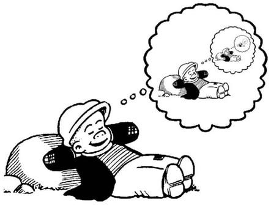
이 첫 번째 이미지에서 어니 부시밀러의 캐릭터 슬러고(그의 고전 만화 낸시에 등장한다)는 끝도 없이 자기 자신이 자기 자신이 자기 자신이 꿈꾸는 꿈을 꾸고 있다. 이것은 명백히 자기 지시의 사례이지만, 자기 자신의 괴델 수를 직접 포함한 PM 논리식과 유사하게 무한 퇴행을 수반한다. 안타깝게도 그런 논리식은 무한히 길어야만 할 것이다!
반면 두 번째 이미지는 유명한 모턴 소금(Morton Salt) 상자의 라벨로, 모턴 소금 상자를 들고 있는 소녀를 보여준다. 여러분은 여기서도 무한 퇴행의 냄새가 난다고 생각할지 모르지만, 만약 그렇다면 스스로를 속이고 있는 것이다! 소녀의 팔이 퇴행이 일어날 결정적인 지점을 가리고 있기 때문이다. 만약 여러분이 소녀에게 라벨 위의 무한 퇴행을 실제로 볼 수 있도록 소금 상자를 건네달라고 (정중히) 부탁한다면, 실망하고 말 것이다. 그 상자의 라벨 역시 팔로 퇴행을 가린 채 훨씬 더 작은 상자를 들고 있는 소녀를 보여줄 것이기 때문이다.
하지만 우리는 여전히 자기 지시적인 그림을 보고 있다. 식료품점의 손님들은 라벨에 그려진 작은 상자가 자신들이 들고 있는 큰 상자와 똑같은 것임을 이해하기 때문이다. 그들은 어떻게 이런 결론에 도달할까? 비유(analogy)를 사용해서다. 구체적으로 말하면, 손님들은 손에 큰 상자를 들고 있을 뿐만 아니라 소녀가 들고 있는 작은 상자도 볼 수 있으며, 두 상자는 많은 공통점(원통형 모양, 짙은 파란색, 양쪽 끝의 흰색 뚜껑)을 가지고 있다. 그것으로 부족하다면 작은 상자에서 소금이 쏟아져 나오는 것도 볼 수 있다. 이러한 증거들은 작은 상자와 큰 상자가 동일하다고 모든 사람을 납득시키기에 충분하며, 바로 거기에 무한 퇴행 없는 자기 지시가 있다!
이 장을 마치며, 괴델의 논리식과 그 사촌들을 가장 간결하게 영어로 번역하면 “나(I)”라는 단어가 쓰인다는 점(“나는 PM에서 증명 가능하지 않다”; “나는 PM의 정리가 아니다”)을 명시적으로 짚고 싶다. 이것은 우연이 아니다. 사실상 이 비격식적이고 거의 엉성해 보이기까지 하는 1인칭 단수 대명사의 사용은, 괴델의 엄숙한 수학적 이상한 고리와 의식적 자아라는 지극히 인간적인 개념 사이의 심오한 연결고리를 처음으로 엿볼 수 있게 해준다.
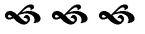
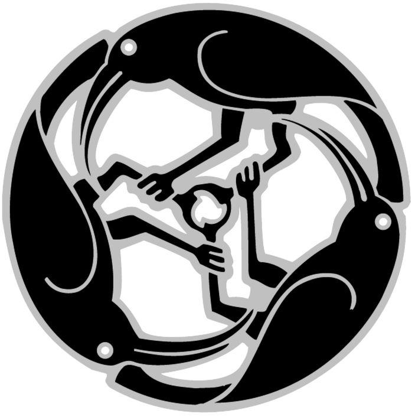
제11장 - 비유가 의미를 만드는 법

PM 논리식의 이중 지시성
갓 기사 작위를 받은 러셀 경이 느꼈을 당혹감을 상상해 보라. ‘쿠르트’라는 이름의 젊은 오스트리아 신참이 인쇄된 지면을 통해, 자기 지시라는 끔찍한 재앙을 막는 보루로 그토록 공들여 세운 난공불락의 지적 요새 프린키피아 마테마티카가 사실은 자기 자신에 대해 온갖 터무니없고 이해할 수 없는 말들을 지껄여 대는 논리식들로 속속들이 뒤덮여 있다고 선언했으니 말이다. 도대체 어떻게 이런 만행이 일어날 수 있었을까? 어떻게 공허하게 재잘거리는 자기 지시적 명제들이 아름답고 영원한 분지 유형론의 두꺼운 성벽을 뚫고 몰래 숨어들 수 있었을까? 이 건방진 오스트리아 마법사가 무슨 사악한 주문이라도 건 것이 틀림없는데, 도대체 어떤 수단으로 그 끔찍한 짓을 저질렀단 말인가?
정답은 그의 고전적 논문—“프린키피아 마테마티카와 관련 체계들의 형식적으로 결정 불가능한 명제들에 관하여 (I)”—에서 괴델이 의미라는 개념을 재분석했고, PM 논리식이 뜻하는 바가 러셀이 생각했던 것처럼 그렇게 단순하거나 모호함이 없는 것이 아니라는 결론을 내렸다는 데 있다. 공정하게 말하자면, 러셀 자신도 PM의 기묘하게 생긴 긴 논리식들에는 본래 아무런 고유한 의미가 없다고 늘 주장해 왔다. 사실 PM의 정리들은 의미에 전혀 신경 쓰지 않는 형식 규칙들에 의해 쏟아져 나왔기 때문에, 러셀은 종종 이 책 전체가 그저 의미 없는 기호들의 배열일 뿐이라고 말하곤 했다(9장 끝에서 보았듯이, 프린키피아 마테마티카의 페이지들은 종종 수학 서적이라기보다 어떤 이국적인 예술 작품처럼 보인다).
하지만 러셀은 동시에 말발굽, 갈고리, 별, 꼬부랑 기호들로 이루어진 이 기묘한 패턴들이 원한다면 수와 그 성질에 관한 진술로 해석될 수 있다는 점도 조심스럽게 지적했다. 어쩔 수 없이 읽어야 한다면 의미 없는 수직 달걀 ‘0’은 숫자 0을, 똑같이 의미 없는 십자가 ‘+’는 덧셈을 나타내는 식으로 읽을 수 있으며, 이 경우 PM의 모든 정리들은 수에 관한 진술—단, 수에 관한 아무런 헛소리가 아닌—로 귀결된다는 것이다. 만약 “ss0 + ss0 = sssss0”이라는 꼬부랑 기호 패턴이 PM의 정리로 판명되었다면 러셀이 얼마나 참담했을지 상상해 보라! 그에게 이것은 최악의 재앙이었을 것이다. 따라서 그는 자신의 난해해 보이는 책들 안에 의미가 존재한다는 점을 인정할 수밖에 없었다(그렇지 않다면 왜 인생의 긴 세월을 바쳐 그 책들을 썼겠으며, 어떤 문자열이 정리인지 왜 신경 썼겠는가?). 하지만 그 의미는 종이 위의 모양들을 추상적인 크기(예: 0, 1, 2…), 연산(예: 덧셈), 관계(예: 상등), 논리 개념(예: ‘아니다’, ‘그리고’, ‘존재한다’, ‘모든’) 등과 연결하는 사상(mapping)을 사용하는 데 의존했다.
기호의 요새에서 의미를 읽어 내기 위해 체계적인 사상에 의존했다는 러셀의 태도는 매우 시사적이다. 젊은 신참 괴델이 발견한 것은 다름 아닌 그 똑같은 요새에서 다른 의미들을 읽어 낼 수 있는, 그저 다른 체계적 사상(물론 훨씬 더 복잡한 것이기는 했지만)이었기 때문이다. 아이러니하게도, 괴델의 발견은 지극히 러셀적인 정신에 부합하는 것이었다.
문자열을 수로, 그리고 수을 문자열로 체계적으로 사상하는 괴델의 교묘한 새 암호 덕분에(또한 그것이 기호 배열 밀어내기 법칙을 수치 계산으로, 그리고 수치 계산을 기호 배열 밀어내기 법칙으로 사상했다는 점을 기억하라), 많은 논리식들을 두 번째 층위에서 읽을 수 있게 되었다. 기존의 표준 사상을 통해 얻는 첫 번째 의미 층위는 러셀이 주장했듯 언제나 수에 관한 것이었지만, (러셀의 첫 번째 사상 위에 올라탄) 괴델이 새로 밝혀낸 사상을 사용하는 두 번째 의미 층위는 논리식에 관한 것이었다. 그리고 두 의미 층위 모두 사상에 의존하므로, 괴델의 새로운 의미 층위는 러셀의 원래 의미 층위 못지않게 실제적이고 타당했다. 다만 보기가 조금 더 어려웠을 뿐이다.
비유, 너 덕분에 공짜로 얻는 여분의 의미들!
1931년에 괴델이 한 일에 대해 수년간 성찰하면서 내 마음을 가장 강하게 사로잡은 것은 바로 의미의 뿌리에 관한 그의 이 통찰—즉, 사상 덕분에 전혀 예상치 못했던 곳에서 온전한 의미가 갑자기 나타날 수 있다는 발견—이다. 나는 이 통찰이 단순하면서도 그만큼 심오하다고 생각한다. 하지만 이상하게도 내가 느끼는 그 심오함을 잘 드러내는 방식으로 이 아이디어를 이야기하는 경우는 거의 본 적이 없다. 그래서 이번 장에서는 내가 직접 그 과제에 도전해 보기로 했다. 이를 위해 다소 사소하게 시작해서 점차 미묘해지고, 바라건대 유머까지 더해지는 일련의 예들을 사용하려 한다. 자, 시작해 보자.
친구와 함께 카페 줄에 서 있다가, 계산대 뒤 접시에 놓인 커다란 초콜릿 케이크를 발견하고 점원에게 한 조각 달라고 한다. 친구는 먹고 싶지만 시키지 않는다. 테이블로 가서 케이크를 한 입 베어 문 뒤 나는 말한다. “어우, 이거 맛없네.” 물론 내 말은 내 조각 하나만 맛없다는 뜻이 아니라 케이크 전체가 맛없다는 뜻이며, 따라서 친구는 안 시키길 잘했다(혹은 운이 좋았다)고 여겨야 한다는 뜻이다. 이런 일상적인 말은 우리가 얼마나 손쉽게 바깥으로 일반화하는지 보여준다. 우리는 무의식중에 “케이크의 이 조각은 나머지 케이크와 아주 비슷하니, 이 조각에 대한 말은 다른 어떤 조각에도 똑같이 적용될 거야”라고 생각한다. (여기에 내 친구의 음식 반응이 나와 비슷할 것이라는 또 다른 비유가 전제되어 있기는 하지만, 그건 제쳐 두자.)
조금만 더 대담한 다른 예를 들어보자. 파티 접시에 쿠키 한 묶음이 놓여 있고, 내가 하나를 집어 한 입 베어 문 뒤 아이들에게 말한다. “이거 진짜 맛있다!” 즉시 아이들이 하나씩 집어 든다. 왜 그럴까? 맛있는 걸 먹고 싶었기 때문이다. 그렇다. 하지만 아이들은 내 쿠키에 대한 내 말로부터 어떻게 접시 위의 다른 쿠키들에 대한 결론으로 건너뛰었을까? 뻔한 답은 쿠키들이 어떤 의미에서 모두 ‘똑같다’는 것이다. 하지만 케이크 조각들과 달리 쿠키들은 하나의 물리적 물체의 부분들이 아니므로, 케이크 조각들보다 서로 아주 조금 ‘더 다르다’. 그래도 같은 사람이 같은 재료로 같은 도구를 써서 만든 것이다. 이 쿠키들은 한 번에 구워 낸 묶음에서 나왔다—같은 범주에 속한다. 관련된 모든 측면에서 우리는 그것들을 서로 맞바꿀 수 있는 것으로 본다. 물론 쿠키 하나하나는 고유하지만, 인간이 쿠키를 먹는 데 중요한 의미에서는 거의 확실히 동등하다. 그러므로 내가 특정한 쿠키 하나를 두고 “와, 이거 맛있다!”라고 말하면, 내 말의 의미는 비유의 힘을 통해 암묵적으로 다른 어떤 쿠키로든 건너뛴다. 물론 같은 접시에서 나온 쿠키 하나에서 다른 쿠키로 건너뛰는 것은 꽤 사소한 비유지만, 그럼에도 비유는 비유이며, 그 덕분에 “이거 맛있다!”라는 나의 구체적인 진술이 모든 쿠키에 대한 일반적 진술로 한꺼번에 받아들여질 수 있는 것이다.
여러분은 이런 예들이 말도 안 되게 유치하다고 생각할지 모른다. 첫 번째 예는 같은 케이크의 여러 조각 사이의 ‘비유’를, 두 번째 예는 같은 접시의 여러 쿠키 사이의 ‘비유’를 다루고 있으니 말이다. 이런 진부한 일들이 과연 ‘비유(analogy)’라는 꼬리표를 붙일 만한 가치가 있을까? 내게는 의심의 여지가 없다. 사실 우리가 누리는 풍요로운 정신생활의 절대다수는 이보다 거창할 것 없는 무수히 많은 보이지 않는 일회용 비유들이 촘촘히 짜여 만들어진다. 그런데도 우리는 그런 일회용 비유들을 너무나 당연하게 여기기 때문에 ‘비유’라는 단어가 훨씬 더 고상한 무언가를 가리켜야 한다고 생각하는 경향이 있다. 하지만 내 평생 가장 자주 되뇌는 주제 중 하나는 겉보기에 가장 평범해 보이는 비유라도 깊이 존중해야 한다는 것이다. 그것들을 들여다보면 종종 인간 인지의 가장 깊은 뿌리에서 솟아 나와 그 뿌리를 드러내 보이기 때문이다.
일상 상황에서 비유 활용하기
방금 보았듯이, 상황 A에 대해 말할 목적으로 한 발언이 비록 B에 대해 말할 의도가 전혀 없었고 B가 전혀 언급되지 않았더라도 암묵적으로 상황 B에 적용될 수 있다. 필요한 것은 오직 두 상황이 본질적으로 동일한 중심 구조나 개념적 핵심을 지니고 있음을 보여주는 손쉬운 비유—억지스럽지 않은 사상—뿐이다. 그러면 여분의 의미는 읽기로 선택하든 말든 거기서 읽힐 준비가 되어 있다. 요컨대, 한 상황에 대한 진술은 그와 유사한—조금 기술적인 용어를 쓰자면 동형(isomorphic)인—상황에 대한 진술인 것처럼 들릴 수 있다. 동형사상(isomorphism)이란 그저 두 상황 사이의 평행 관계망이 명시적이고 정밀하게 드러난, 형식화되고 엄격한 비유일 뿐이며, 아래에서는 이 용어를 자유롭게 쓰겠다.
상황 A와 B 사이의 비유가 (아무리 단순하더라도) 눈에 띄게 명백할 때, 우리는 때때로 상황 A에 대해서만 말하는 척하면서 상황 B에 대해 ‘고의로 우연인 척’ 말하기 위해 이를 활용한다. “야, 앤디—집에 들어올 때는 진흙 묻은 장화 좀 벗고 들어와!” 똑같이 진흙을 뚝뚝 흘리는 친구 빌과 함께 현관문을 밟고 들어오는 다섯 살배기 아들에게 소리치는 이 문장은, 매우 단순하고 매우 명백한 비유(말하자면 앞선 쿠키-대-쿠키 도약과 비슷한 소년-대-소년 도약)를 통해 당연히 앤디에게만큼이나 빌에게도 똑같이 건네는 말이다. 비유로 넌지시 암시하면 정중하면서도 효과적으로 메시지를 전달할 수 있다. 물론 우리가 암묵적 메시지를 보내려는 상대(여기서는 빌)가 A/B 비유를 알아챌 가능성이 높다는 확신이 있어야 한다. 그렇지 않으면 우리의 영리하고 외교적인 계략은 헛수고가 되고 말 테니까.
예의 사슬을 타고 한 단계 더 올라가 보자. 연애 중인 사람들도 이런 장치를 늘 사용한다. 어느 날 저녁, 다정하게 껴안은 열정적인 순간에 크세르크세스가 애인 욜란다에게 슬쩍 묻는다. “나 입 냄새 나?” 그는 진심으로 답을 알고 싶어 하며 이는 꽤 사려 깊은 행동이지만, 동시에 그의 질문에는 (그가 의도했든 아니든) 그다지 사려 깊지 않은 두 번째 의미 층위가 실려 있다. “너 입 냄새 나!” 욜란다는 그의 질문에 답하지만 물론 그 잠재적인 다른 의미도 순식간에 알아챈다. 사실 그녀는 크세르크세스의 진짜 의도가 자기 입 냄새를 확인하려는 게 아니라 그녀의 입 냄새를 알려주려는 것이었다고—그저 외교적으로 말했을 뿐이라고—의심한다.
어떻게 하나의 진술이 동시에 두 층위에서 말할 수 있을까? 어떻게 첫 번째 의미 안에 두 번째 의미가 숨어 있을 수 있을까? 친애하는 독자여, 여러분도 나만큼이나 답을 잘 알고 있겠지만 그래도 설명해 보겠다. 진흙 묻은 장화 상황과 마찬가지로 두 당사자 사이에 매우 단순하고, 매우 크고, 매우 두드러지며, 매우 명백한 비유가 존재한다. 이는 X에 대해 한 어떤 말이라도 동시에 Y에 대한 말로 들릴 것임을(혹은 적어도 들릴 수 있음을) 뜻한다. X/Y 사상, 즉 비유, 즉 부분적 동형사상은—어떻게 부르든 상관없다—의미를 한 틀에서 다른 틀로 효율적이고 확실하게 실어 나른다.
조금 더 미묘한 연애 상황에서 이런 의사소통 방식을 살펴보자. 벤이 자신에게 얼마나 진심인지 확신이 서지 않는 오드리는 ‘순진하게’ 화제를 공통 친구인 신시아와 데이브에게로 돌리며, 벤에게 데이브가 신시아에게 헌신하지 못하는 걸 어떻게 생각하는지 ‘순진하게’ 묻는다. 바보가 아닌 벤은 곧바로 위험을 감지하고, 처음에는 데이브에 대해서‘만’ 말하더라도 자칫 제 발등을 찍을 수 있기에 구체적인 말을 하기를 조심스러워한다. 하지만 곧 이 위험이 오드리에게 직접 꺼내지 못했던 몇 가지 이야기를 전할 기회가 된다는 것도 깨닫는다. 그리하여 벤은 계산된 태연함으로, 어쨌든 신시아가 데이브보다 훨씬 더 지적이기 때문에 데이브가 헌신하기를 주저하는 것도 이해가 된다고 대답한다. 벤은 오드리가 그녀가 자신보다 예술에 훨씬 더 깊이 빠져 있기 때문에 자신 역시 헌신하기를 주저해 왔다는 암시를 알아채기를 바라고 있다. 그의 암시는 오드리와 벤 둘 다 지난 몇 달 동안 서로에게 단 한 마디도 내색하지 않은 채 머릿속에 쌓아 온 꽤 강력한 커플-대-커플 비유를 통해 암묵적이지만 분명하게 그녀에게 전달된다. 벤은 직접적으로 자기 자신에 대해 말하지 않고도 자기 자신에 대해 매우 분명하게 말하는 데 성공했으며, 게다가 그와 오드리 둘 다 이것이 사실임을 알고 있다.
앞선 상황이 여러분에게 너무 작위적으로 들려서, 한 연애 상황을 다른 연애 상황의 ‘암호’로 보는 것이 희박하고 그럴듯하지 않은 가능성이라는 인상을 남길지도 모르겠다. 하지만 전혀 그렇지 않다. 두 사람이 연애 중이라면(혹은 연애 중이 아니더라도 적어도 한쪽이 잠재적인 불꽃을 느끼고 있다면), 그들 사이에 오가는 어떤 연애에 관한 대화든—누구에 관한 것이든 상관없이—한쪽 또는 양쪽 모두에게 자신들의 상황에 스포트라이트를 비추는 것으로 들릴 가능성이 높다. 이런 부메랑 같은 되돌아옴은 거의 필연적이다. 아주 좋은 연애조차도 불확실성과 갈망으로 가득 차 있기 때문이다. 우리는 언제나 우리 연애 생활에 대한 단서나 통찰을 찾아 헤매며, 비유는 단서와 통찰을 얻는 가장 위대한 원천 중 하나다. 그러므로 대화의 중심 무대를 차지하고 있는 다른 커플과 우리 자신 사이의 비유를 알아차리는 것은 은쟁반에 받쳐 나온 식은 죽 먹기나 다름없다. 중요한 질문은 그것이 맛있느냐 없느냐다.
마을 빵집 주인의 말에 담긴 잠재적 모호성
방금 논의한 종류의 간접적 지시는 문학에서도 예술적으로 자주 활용된다. 독자들이 상황 A와 B 사이의 강력한 비유를 쉽게 인지하기 때문에, 상황 A의 등장인물들이 내뱉는 대사가 상황 B에도 똑같이 적용되는 것으로 쉽게 들리는 것이다. 때로는 상황 A의 등장인물들이 상황 B를 전혀 모르고 있어서 유머러스한 효과를 내기도 하고, 또 어떤 때는 상황 A의 등장인물들이 동시에 상황 B의 등장인물이기도 하지만 자신들이 처한 두 상황을 연결하는 비유를 의식하지 못해(또는 생각하지 못해) 물론 커다란 아이러니를 만들어 내기도 한다.
최근에 이 멋진 예를 하나 보아서 여러분에게 들려주지 않고는 못 배기겠다. 마르셀 파뇰의 1938년 영화 빵집 여인(La Femme du boulanger)의 결말부에서 일어나는 일이다. 동네 양치기와 눈이 맞아 도망쳤다가 사흘 만에 죄책감에 젖어 슬금슬금 집으로 기어 들어온 아내 오렐리에게, 익살스러운 이름의 마을 빵집 주인 에마블은 더없이 다정하고 부드럽게 대한다. 하지만 공교롭게도 역시 사흘 전에 짝 퐁퐁을 버리고 도망쳤다가 오렐리와 같은 날 돌아온 고양이 퐁퐁네트에게는(물론 이 모든 일은 완전히 우연히 일어난다) 에마블이 절대적으로 무자비하다. 상처 입은 퐁퐁의 편을 들며(어떤 이들은 ‘그와 동일시하며’라고 말할지도 모른다) 에마블은 비난의 말로 퐁퐁네트를 갈기갈기 찢어 놓는다. 그리고 이 모든 일이 막 돌아온 오렐리 바로 앞에서, 관객들이 그가 오렐리에게 퍼부으리라 예상했을 법한 신랄한 표현들을 써서 벌어진다. 이것도 모자라, 오렐리는 에마블이 저녁 식사로 먹으려고 만들어 둔 하트 모양 빵을 먹고 있고(그는 그녀가 돌아오리라고는 꿈에도 생각지 못했다), 바로 그 시각 커다란 하트가 달린 목걸이를 찬 길 잃었던 고양이 퐁퐁네트는 짝 퐁퐁을 위해 막 차려진 먹이를 먹고 있다.
빵집 주인 에마블은 이 소름 끼치도록 명백한 비유를 실제로 알아차리고 있는 것일까? 아니면 너무나 선량하고 너그러운 영혼이어서 오렐리와 퐁퐁네트가 판박이라는 것을 보지 못하고, 우리가 듣기에 고양이에게 사납게(하지만 정당하게) 퍼붓는 그 맛있게 양날을 지닌 독설이 그에게는 순진하게 외날의 말일 뿐일까?
어느 쪽이든 여러분이 꼭 이 영화를 보러 가기를 권한다. 가슴 아픈 걸작이다. 그리고 만약 기이한 우연으로 여러분 옆에 앉아 함께 영화를 음미하고 있는 바로 그 연인이 제3자와의 아주 작은 불장난(une toute petite amourette)을 마치고 둥지로 막 돌아온 참이라면, 그 마지막 장면이 나올 때 그녀나 그가 얼마나 몸을 배배 꼬기 시작할지 상상해 보라! 그런데 도대체 왜 영화 밖의 누군가가 영화 안의 누군가가 퍼붓는 엄중한 질책의 세례에 따끔함을 느끼는 것일까? 아, 글쎄… 비유는 그 정밀도와 가시성에 비례하여 힘을 발휘하는 법이다.
샹탈과 업혀 가는 의미의 층위들
이제 두 쿠키나 두 연인보다, 심지어 바람피운 아내와 바람피운 고양이보다도 양쪽이 훨씬 더 다른 비유를 탐구해 보자. 그것은 우리가 TV로 비디오를 볼 때—예컨대 프랑스 빵집 주인과 그의 아내, 친구들, 고양이들에 관한 프로그램을 볼 때—비록 암묵적이기는 하지만 떠오르는 비유다. 요점은 우리가 사람과 고양이의 뛰노는 모습을 실제로 보고 있는 것이 아니라는—적어도 문자 그대로는 아니라는—점이다. 우리가 그렇게 하고 있다고 말하는 것은 유용한 줄임말일 뿐이다. 실제로 우리가 보고 있는 것은 멀고 먼 옛날 어느 프랑스 마을의 생물과 무생물에서 흩어져 나왔던 역동적으로 변하는 색점 패턴을 완벽하게 일사불란하게 동조하여 복사하고 있는 무수한 픽셀들이기 때문이다. 우리는 그 사람들의 행동을 ‘암호화’하는 백만 개쯤 되는 점들을 보고 있지만, 다행히도 그 암호는 우리가 해독하기에 아주 쉽다. 사실 너무나도 손쉬워서 우리는 그 사상에, 그 동형사상(말하자면 화면/장면 비유)에 빨려 들어가고, 사건들이 평소처럼 일어나는 것을 보고 있는 듯한 어떤 먼 시공간으로 ‘순간 이동’한 듯한 기분이 든다. 그래서 우리가 그 사건들을 ‘실제로’ 보고 있는지 아닌지 미세하게 따지는 것은 짜증 날 정도로 까다로운 짓이라고 느낀다. (전화로 통화할 때 우리가 실제로 서로 이야기하고 있는 것인가?)
나방, 파리, 개, 고양이, 신생아, 텔레비전 카메라, 그리고 다른 작은 영혼을 지닌 존재들은 우리처럼 텔레비전 화면을 인식하지 못한다는 사실을 잊기 쉽다. 우리가 상상하기는 어렵지만, 그들은 픽셀을 해석되지 않은 날것 그대로의 방식으로 본다. 따라서 그들에게 TV 화면은 여러분이나 내게 낙엽 더미, 잭슨 폴록의 그림, 혹은 마다가스카르어로 된 신문 기사(마다가스카르어를 하신다면 죄송하다. 그럴 경우 아이슬란드어로 바꾸어 주시라—설마 그 언어도 하신다고 하지는 마시라!)만큼이나 멀고 먼 옛날의 의미가 쏙 빠져 있다. 대부분의 인간에게는 두 살 무렵이면 이미 제2의 천성이 되다시피 하지만, 재현적 층위에서 TV 화면을 ‘읽는’ 것은 그런 존재들의 지적 능력을 훨씬 뛰어넘는 일이다.
따라서 어떤 이미지도 분간하지 못하고 심지어 어떤 이미지가 의도되었다는 것조차 알지 못한 채 텔레비전 화면을 멍하니 바라보는 개는, 사랑하는 체계 PM의 논리식을 멍하니 바라보며 ‘쉬운’(산술적) 의미만 볼 뿐 괴델에 의해 드러난 또 다른 의미, 즉 사상을 매개로 한 의미는 지적 능력을 벗어나 완전히 접근 불가능하고 꿈조차 꿔 본 적 없는 러셀 경과 그리 다르지 않다. 아니면 이 비교가 버트런드 경에게 불공평하다고 생각할지도 모르겠고 나도 어떤 면에서는 동의하므로, 조금 더 현실적이고 너그러운 비교를 시도해 보겠다.
TV 화면 앞에 놓여 사람 대신 픽셀만 보는 개 대신, 부모님과 함께 빵집 여인을 보고 있는 세 살배기 꼬마 샹탈 뒤플레식을 상상해 보자. 세 사람 모두 프랑스어가 모국어이므로 언어 장벽은 없다. 엄마 아빠와 똑같이, 샹탈은 픽셀을 꿰뚫어 보고 마을에서 일어나는 사건들을 바로 본다. 그리고 그 멋진 마지막 장면이 나와 에마블이 고양이를 호되게 몰아세울 때, 샹탈은 에마블의 분노를 보며 까르르 웃어 댄다. 하지만 그녀는 그의 말에 또 다른 해석이 있다는 것을 단 한 순간도 의심하지 못한다. 그녀는 오렐리와 퐁퐁네트 사이의 비유를 이해하기에는 너무 어려서, 그녀에게는 거기에 단 하나의 의미만 존재한다. 픽셀을 먼 사건으로 사상하는 ‘단순한’(비록 개는 피해 가지만) 사상을 당연시하고 그 위에 업혀 가는 영화감독 파뇰의 비유 매개 의미는 그녀의 부모가 손쉽게 포착하지만, 당분간은 샹탈의 지적 능력을 벗어나 있으며 그녀에게는 완전히 접근 불가능하다. 물론 몇 년이 지나면 상황은 달라질 것이다. 샹탈은 온갖 복잡한 상황들 사이의 비유를 알아채는 법을 배우게 되겠지만, 지금은 그렇다는 것이다.
이 상황을 통해 우리는 버트런드 러셀과 훨씬 더 현실적이고 너그러운 비교를 할 수 있다(또 하나의 비유!). 샹탈은 개와 달리 화면 위의 의미 없는 빛의 패턴만 보는 것이 아니다. 그녀는 사람과 사건—패턴의 ‘쉬운’ 의미—을 손쉽게 본다. 하지만 사람과 사건을 당연시하는 두 번째 의미 층위, 즉 사건들 사이의 비유에 의해 전달되는 의미가 존재하며, 샹탈이 놓치는 것은 바로 그 더 높은 의미 층위다. 똑같은 방식으로, 괴델의 사상, 즉 그의 경이로운 비유가 매개하는 괴델의 더 높은 의미 층위를 버트런드 러셀은 놓쳤다. 러셀에 대해 내가 읽은 바에 따르면, 그는 결코 PM 논리식의 두 번째 의미 층위를 보지 못했다. 어떤 슬픈 의미에서, 그 선량한 경은 자신의 성서들을 읽는 법을 끝내 배우지 못한 것이다.
고급 상점 앞의 피켓 시위
앞서 암시했듯이, 방금 돌아온 바람둥이 연인은 에마블이 퐁퐁네트를 꾸짖는 것을 들으며 여분의 의미 층위를 꽤 잘 들을 수 있을 것이다. 이처럼 연극이나 영화는 작가가 꿈에도 생각지 못한 의미의 층위들을 실어 나를 수 있다. 예를 들어 사회운동가 극작가 로잘린 와드헤드(들어본 적 있는가?)가 쓴 1931년의 잘 알려지지 않은 연극 고급 상점 피켓 시위대(The Posh Shop Picketeers)를 생각해 보자. 이 연극은 앨프와 버티의 고급 상점 직원들이 벌인 비공인 파업에 관한 이야기다(솔직히 거기서 뭘 팔았는지는 나도 끝내 알아내지 못했다). 이 연극에는 가게 입구로 다가오는 손님들에게 피켓 저지선을 넘지 말고 가게에서 아무것도 사지 말라고 간곡히 호소하는 장면이 나온다(“앨프와 버티는 더럽고 추악하다! 제발 우리 고급 상점 피켓을 넘지 마세요! 제발 동네 구멍가게로 건너가세요!”). 우리 극작가의 노련한 솜씨 덕분에 이 단순한 상황은 팽팽한 긴장감이 감도는 드라마로 이어졌다. 그런데 무슨 이유에서인지 연극이 막을 올리기 직전, 극장의 안내원들과 연극의 배우들 사이에 격렬한 다툼이 벌어졌고, 그 결과 안내원 노조가 개막일 밤에 비공인 파업을 벌여 피켓 저지선을 치고는 고급 상점 피켓 시위대를 보러 온 예비 관객들에게 저지선을 넘지 말아 달라고 애원하게 되었다.
이 예기치 못한 정치적 맥락이 주어지자, 극중 배우들이 내뱉는 대사들이 객석의 관객들에게는 로잘린 와드헤드가 결코 의도하지 않았던 강력한 두 번째 의미, 즉 여분의 의미 층위를 띠게 된 것은 당연했다. 실제로 뻔뻔한 중년 부인이 자신을 밀치고 거만하게 앨프와 버티의 고급 전시장으로 걸어 들어가자, 피켓 시위를 하던 고급 상점 직원 ‘케이지’가 혐오스럽게 외치는 대사—“앨프와 버티의 고급 상점 앞 피켓 저지선을 넘는 자는 누구든 쓰레기다”—는 객석의 모든 사람(정의상 극장 밖 피켓 저지선을 넘어온 사람들만으로 구성되어 있었다)에게 필연적으로 “이 극장 앞 피켓 저지선을 넘은 자는 누구든 쓰레기다”라는 말로 들렸다. 그리고 물론 이는 “지금 이 객석에 앉아 있는 자는 누구든 쓰레기다”라는 말과 같았고, 또한 “당신들은 이 대사들을 듣고 있어서는 안 된다”라는 말로도 들릴 수 있었다. 이는 안내원들의 적대적인 피켓 저지선을 뚫고 극장에 들어와 준 관객들에게 깊이 감사하고 있던 케이지 역 배우를 포함한 모든 배우들이 관객에게 전하고 싶었던 말과 정반대되는 것이었다.
하지만 배우들이 깊이 감사하게 여기는 관객들을 틀림없이 ‘쓰레기’라고 부르며 아무도 이 대사들을 들으러 거기 있어서는 안 된다고 암시하는 상황에 대해 배우들이 무엇을 할 수 있었을까? 아무것도 없다. 그들은 연극의 대사를 읊어야만 했고, 비유는 거기 있었으며, 노골적이고 강력했다. 따라서 케이지의 대사뿐만 아니라 극중 다른 많은 대사들이 지닌 아이러니하고, 뒤틀려 되돌아오며, 자기 지시적인 의미는 피할 수 없는 것이었다. 물론 그 자기 지시는 비유가 매개하는 간접적인 것이었지만, 그렇다고 해서 ‘직접적인’ 지시보다 덜 실제적이거나 덜 강력한 것은 아니었다. 사실 우리가 ‘직접적인’ 지시라고 부르고 싶어 하는 것 역시 하나의 암호—우리의 모국어(마다가스카르어, 아이슬란드어 등)가 우리에게 부여한 단어와 사물 사이의 암호—에 의해 매개된다. 그저 그 암호가 더 단순할(혹은 적어도 더 친숙할) 뿐이다. 요컨대 ‘직접적’ 지시와 ‘간접적’ 지시 사이의 겉보기에 날카로운 구분은 흑백의 구분이 아니라 정도의 문제일 뿐이다. 다시 말하지만, 비유는 그 정밀도와 가시성에 비례하여 힘을 발휘한다.
히피아 왕자: 수학 드라마티카
자, 로잘린 와드헤드와 다소 생소한 작품인 고급 상점 피켓 시위대 대사의 뜻밖의 양날성에 대해서는 이만하면 됐다. 완전히 다른 이야기로 넘어가자. 대신 1910~1913년에 영국의 저명한 극작가 Y. 테드 엔러슬(분명 그에 대해서는 들어보았을 것이다!)이 집필한 세계적으로 유명한 희곡 히피아 왕자: 수학 드라마티카(Prince Hyppia: Math Dramatica)에 대해 이야기해 보자. 당시 유행하던 너무 잘난 체하는 극중극들에 진저리가 난 그는, 극작이나 연기, 혹은 무대와 아무런 상관도 없는 희곡을 쓰기로 마음먹었다. 그리하여 여러분도 틀림없이 기억하듯이, 이 유명한 작품에서 모든 등장인물들은 아주 단순한 것부터 꽤 난해한 것까지 정수의 다양한 성질에 대해서만 말하도록 엄격히 제한된다. 연극에 관한 연극을 쓰는 것에서 이보다 어떻게 더 멀어질 수 있겠는가? 예를 들어 1막 초반에 아름다운 블로피아 공주가 “7 곱하기 11 곱하기 13은 1001이다!”라고 외치면, 잘생긴 히피아 왕자가 흥분해서 “고로 수 1001은 합성수이며 소수가 아니다!”라고 대꾸한다. 두 사람의 결합은 하늘이 내린 수학(math made in heaven)처럼 보인다. (이제 앓는 소리를 내셔도 좋다.)
하지만 진짜 열기가 달아오르는 것은 3막이다. 절정은 블로피아 공주가 어떤 매우 큰 정수 g에 관한 산술적 사실을 언급하고, 히피아 왕자가 “고로 수 g는 건방진 수이며 프림이 아니다!”라고 답할 때 찾아온다. (히피아의 이 지극히 수학-드라마틱한 절규를 듣고 일제히 숨을 들이켜지 않는 관객은 드물다.) 기이한 점은 거만한 왕자가 자신이 무슨 말을 하고 있는지 그 의미를 전혀 모르는 듯하며, 더 아이러니하게도 극작가 Y. 테드 엔러슬 역시 몰랐던 것 같다는 것이다. 하지만 오늘날 모두가 알다시피, 히피아 왕자의 이 말은—긴밀한 비유라는 중간 고리를 통해—어떤 긴 기호 배열 대사가 그 옛날 통용되던 표준적인 극작 관습을 사용해서는 ‘펜으로 쓸 수 없는(unpennable)’ 대사라고 주장한다. 그리고 우스운 것은 그 소위 펜으로 쓸 수 없다는 대사가 다름 아닌 히피아 왕자 역의 배우가 방금 읊은 바로 그 선언이라는 점이다!
여러분도 쉽게 짐작할 수 있듯이, Y. 테드 엔러슬은 대중적인 극작 관습을 따르는 긴 기호 열을 끊임없이 펜으로 쓰고 있었지만(어쨌든 그게 그의 생계였다!), (그의 기이한 등장인물들이 정확하게 발음하던 기이한 성질을 지닌) 자연수와 그가 배우들이 읽고 외우도록 펜으로 써 내려간 보잘것없는 기호 열 사이에 연결고리가 있으리라고는 꿈에도 생각해 본 적이 없었다. 그럼에도 거의 20년 뒤, 신랄한 젊은 터키-비엔나 연극 평론가 게르트 퀼로트가 쓴 “히피아 왕자: 수학 드라마티카와 관련 무대극들의 이전에는 펜으로 쓸 수 없었던 선언들에 관하여 (I)”라는 제목의 짓궂고 재치 넘치는 평론을 통해 이 우스꽝스러운 우연의 일치가 연극계에 폭로되자(이야기가 너무 잘 알려져 있으니 여기서 세부 사항은 건너뛰겠다), 그 날카로운 설득력은 즉시 많은 이들의 인정을 받았다. 그 결과 퀼로트의 불경스러운 평론을 읽은 관객들은 히피아 왕자: 수학 드라마티카에서 나오는 유명한 대사들을 Y. 테드 엔러슬이 의도했던 바에도 불구하고 전혀 수에 관한 것이 아니라, 엔러슬의 연극 자체에 대한 직접적이고(종종 꽤 신랄한) 논평인 것처럼 다시 들을 수 있게 되었다!
그리하여 머지않아 눈치 빠른 관객들은 괴짜 수비학자 케에 지(프림 수보다 건방진 수를 좋아하는 이유를 거의 쉬지 않고 떠들어 대기로 악명 높았던 히피아 왕자: 수학 드라마티카의 등장인물)의 우스꽝스러운 말들을, 이제는 우스울 정도로 명백해 보이는 암시를 통해 그녀가 왜 (당대의 극작 관습을 사용해) 펜으로 쓸 수 있는 대사보다 펜으로 쓸 수 없는 대사를 선호하는지 밝히는 것으로 재해석하기 시작했다. 연극 애호가들은 연극을 이해하는 이 새로운 방식이 말로 표현할 수 없을 만큼 감칠맛 난다고 여겼다. 히피아 왕자가 (제대로 된!) 극중극임이 드러났기 때문이었다. 비록 이 통찰에 대한 공로는 존경받는 원로 극작가보다 건방진 젊은 외국 평론가에게 돌아갔지만 말이다.
가엾은 Y. 테드 엔러슬은 그야말로 아연실색했다—이보다 더 적절한 표현이 없다. 도대체 제정신인 누가 케에 지의 대사를 이토록 터무니없는 방식으로 받아들일 수 있단 말인가? 그 대사들은 오직 수에 관한 것일 뿐이었다! 어쨌든 수에 관한, 그리고 오직 수에 관한 희곡을 쓰는 것이 그의 유일한 야망이었고, 그는 그 고귀한 목표를 이루기 위해 수년간 뼈 빠지게 일해 왔던 것이다!
Y. 테드 엔러슬은 지면을 통해 격렬히 반박하며, 자신의 희곡은 결코 연극에 관한 연극이 아니며, 하물며 자기 자신에 관한 연극은 더더욱 아니라고 주장했다! 실제로 그는 게르트 퀼로트의 평론이 히피아 왕자: 수학 드라마티카에 관한 것일 리가 없으며, 다른 연극—아마도 관련된 연극, 어쩌면 유사한 연극, 혹시라도 완벽하게 평행한 연극, 어쩌다 보니 편집증적인 역설 공포증 환자 두 명이 쓴 비슷한 제목의 연극—에 관한 것임에 틀림없지, 어쨌든 자신의 연극에 관한 것은 아니라고 우기기까지 했다.
하지만 그가 아무리 항의해도 관객들이 이제 그의 사랑하는 연극의 대사들을 해석하는 방식에 대해서는 Y. 테드 엔러슬이 할 수 있는 일이 전혀 없었다. 깨달은 관객들의 눈에는 두 개념—특정 정수의 건방짐과 특정 연극 대사의 펜으로 쓸 수 없음—이 이제 (오렐리와 퐁퐁네트의 평행한 일탈만큼이나) 정확히 동형인 현상으로 보였기 때문이다. 짓궂은 퀼로트가 발견해 자신의 평론에서 기쁘게 폭로한 미묘한 사상은 (적어도 그 평론을 읽고 이해한 사람이라면 누구에게나) 두 의미가 똑같이 잘 적용되도록 만들었다. 아이러니의 극치는, 히피아 왕자의 유명한 절규 같은 몇몇 기막힌 산술적 발언의 경우, 그것을 비프림 수에 관한 말로 듣는 것보다 연극 속 펜으로 쓸 수 없는 대사를 가리키는 말로 듣는 편이 더 쉽고 더 자연스러웠다는 점이다! 하지만 Y. 테드 엔러슬은 퀼로트의 평론을 여러 번 읽고도 그것이 진짜로 무슨 말을 하는지 끝내 제대로 알아채지 못한 듯하다.
비유, 다시 한번 그 교묘한 일을 해내다
좋다, 좋다, 이만하면 충분하다. 들통났다! 고백하겠다. 지난 몇 페이지 동안 나는 이상한 이름의 극작가가 쓴 이상한 이름의 연극과 이상한 이름의 평론가가 쓴 이상한 제목의 평론에 대해 이야기하며 장난을 쳤지만, 사실은(그리고 친애하는 독자여, 여러분도 처음부터 알고 있었겠지만) 내가 진짜로 이야기하고 있던 것은 전혀 다른 것—즉, 오스트리아 논리학자 쿠르트 괴델(게르트 퀼로트)이 러셀과 화이트헤드의 프린키피아 마테마티카 안에서 발견해 폭로한 이상한 고리였다.
“자, 자,” 나는 어떤 목소리가 항의하는 소리를 듣는다(물론 여러분의 목소리는 아니다). “당신이 쓴 글이 화이트헤드와 러셀, 그리고 프린키피아 마테마티카에 관한 것이 아니라 Y. 테드 엔러슬과 히피아 왕자: 수학 드라마티카 같은 것들에 관한 것이었다면, 도대체 어떻게 진짜로 그들에 대해 이야기하고 있었다고 할 수 있소?” 음, 다시 말하지만, 그것은 모두 비유의 힘 덕분이다. 이는 로망 아 클레(roman à clef, 실존 인물을 가명으로 등장시킨 소설)에서와 똑같은 게임이다. 소설가는 표면적으로는 오직 가상의 등장인물에 대해서만 말함으로써 그리 비밀스럽지 않게 실존 인물에 대해 말하지만, 눈치 빠른 독자들은 문화적 맥락 속에서 놓칠 수 없을 만큼 설득력 있고 노골적인 비유 덕분에 누가 누구를 가리키는지 정확히 알아챈다.
그리하여 우리는 카페에서 무심코 내뱉은 “이거 맛없네”에서 시작해 초고도의 세련된 연극 대사 “수 g는 프림이 아니다”에 이르기까지, 이중으로 들릴 수 있는 말들의 사다리를 밟고 올라왔다. 우리는 비유와 사상이 어떻게 일차적 의미의 등에 업혀 이차적 의미를 낳는지 거듭 보았다. 우리는 일차적 의미조차도 말 없는 사상에 의존한다는 것을 보았고, 결국 모든 의미는 사상에 의해 매개된다는 것, 즉 모든 의미는 비유에서 온다는 것을 보았다. 이것이 바로 1931년 논문에서 끝까지 파고들어 프린키피아 마테마티카에 담긴 열망을 산산이 무너뜨린 괴델의 심오한 통찰이다. 이제 내 모든 독자들에게 의미에 관한 괴델의 예리한 통찰을 이해하는 일이 식은 죽 먹기가 되었기를 바란다.
어떻게 ‘펜으로 쓸 수 없는’ 대사가 펜으로 쓰일 수 있는가?
수 g에 관한 히피아 왕자의 유명한 대사가 (비유를 통해) 스스로 펜으로 쓸 수 없음을 선언한다는 것을 알았을 때 무언가 석연치 않았을지도 모른다. 이건 자기모순 아닌가? 어떤 연극의 어떤 대사가 진정으로 펜으로 쓸 수 없는 것이라면, 도대체 어떻게 극작가가 그것을 펜으로 쓸 수 있었단 말인가? 혹은 이 질문을 뒤집어, 만약 그 대사가 전혀 펜으로 쓰이지 않았다면 어떻게 Y. 테드 엔러슬의 희곡에서 히피아 왕자의 고전적인 대사를 찾을 수 있단 말인가?
정말 좋은 질문이다. 하지만 이제 내가 ‘펜으로 쓸 수 있는 대사’를 잘 확립된 일련의 극작 관습을 암묵적으로 따르는 극작가가 쓸 수 있는 대사로 정의했음을 떠올려 주시라. 다시 말해 ‘펜으로 쓸 수 있음’이라는 개념은 암묵적으로 어떤 특정한 규칙 체계를 가리키고 있었다. 이는 ‘펜으로 쓸 수 없는’ 대사란 그 누구도 결코 쓸 수 없는 대사가 아니라, 그저 대부분의 극작가들이 당연시하던 극작 관습 중 하나 이상을 위반한 대사일 뿐임을 뜻한다. 그러므로 펜으로 쓸 수 없는 대사도 실제로 펜으로 쓰일 수 있다—다만 그 규칙들을 엄격하게 존중하는 사람에 의해서는 아닐 뿐이다.
규칙에 엄격하게 얽매인 극작가가 그런 대사를 쓰는 것은 지극히 일관성 없는 일로 보일 것이다. 빈정거릴 새로운 방법을 늘 찾는 심술궂은 연극 평론가라면 “X의 연극은 완전 초대형 비일관성(mega-inconsistent)이군!”이라고 쓸지도 모른다. 그리고 어쩌면 관객들이 히피아 왕자의 수학-드라마틱한 절규에 한결같이 숨을 들이켠 것은 바로 Y. 테드 엔러슬의 뜻밖의 기괴한 ‘초대형 비일관성’을 알아챘기 때문일 것이다. 게르트 퀼로트가 이전에 펜으로 쓸 수 없었던 대사가 펜으로 쓰였음을 지적하여 찬사를 받은 것도 무리가 아니다!
‘아니다(Not)’는 이상함의 원천이 아니다
독자는 이상한 고리가 필연적으로 자기 파괴적이거나 자기 부정적인 성질(“이 논리식은 증명 가능하지 않다”; “이 대사는 펜으로 쓸 수 없다”; “당신은 이 연극을 보고 있어서는 안 된다”)을 수반한다고 결론 내릴지도 모른다. 하지만 부정(negation)은 이상한 고리성에서 본질적인 역할을 하지 않는다. 그저 고리가 자기 파괴적인 성질을 띨 때 그 이상함이 더 신랄하거나 유머러스해질 뿐이다. 에셔의 그리는 손을 떠올려 보라. 거기에는 부정이 없다—두 손 모두 그리고 있다. 만약 한 손이 다른 손을 지우고 있었다면 어땠을지 상상해 보라!
이 책에서 고리의 이상함은 순전히 어떤 체계가 우리가 침범할 수 없다고 여겼던 위계질서를 무례하게 위반하며, 뜻밖의 뒤틀림을 통해 ‘자기 자신을 삼켜 버리는’ 것처럼 보이는 방식에서 비롯된다. 히피아 왕자: 수학 드라마티카와 프린키피아 마테마티카 두 경우 모두에서 우리는 오직 수에 대해서만 말하고 자기 자신에 대해서는 말하지 않도록 세심하게 설계된 체계가 그럼에도 불가피하게 ‘교묘한’ 방식으로 자기 자신에 대해 말하게 되는 것을 보았다. 그리고 그것은 정확히 수의 카멜레온 같은 본성 때문이다. 수의 세계는 너무나 풍부하고 복잡해서, 수치 패턴은 다른 어떤 종류의 패턴이라도 거울처럼 비출 수 있는 유연성을 지니고 있다.
만약 괴델이 스스로에 대해 “이 논리식은 PM의 규칙을 통해 증명 가능하다”라고 거드름을 피우며 주장하는 자기 긍정적 논리식을 고안해 냈더라도, 비록 극적인 맛은 조금 덜할지언정 그에 못지않게 이상한 고리가 만들어졌을 것이다. 이는 내게 살바도르(“위대한”) 달리뿐만 아니라 무함마드(“내가 최고다”) 알리의 뻔뻔함을 떠올리게 한다. 실제로 괴델 이후 몇 년 뒤 마르틴 후고 뢰프나 레온 헨킨 같은 논리학자들이 그러한 자기 긍정적 논리식을 고안해 연구했다. 이 논리식들 역시 놀랍고 깊은 성질들을 지니고 있었다. 그러므로 나는 다시 한번 강조한다. 이상한 고리성은 “아니다(not)”라는 단어에 의한 뒤집힘에 있는 것이 아니라, “이것(this)”이라는 단어가 연루된 예기치 못한, 위계질서를 위반하는 되돌아옴에 있다고 말이다.
하지만 나는 “이 논리식”과 같은 구절이 괴델의 교묘한 논리식 안 어디에도 찾아볼 수 없다는 점을 즉시 지적해야겠다. 케이지의 대사 “앨프와 버티의 고급 상점 앞 피켓 저지선을 넘는 자는 누구든 쓰레기다” 안에 “이 관객”이라는 구절이 들어 있지 않은 것과 마찬가지다. “이 관객에 있는 사람들은 쓰레기다”라는 예상치 못한 의미는 오히려 전혀 다른 두 피켓 저지선(하나는 극장 밖, 하나는 무대 위) 사이의 노골적으로 명백한 비유(또는 사상)의 필연적 결과이며, 나아가 피켓 저지선을 넘어온 관객과 그들이 보고 있는 연극 속의 피켓 저지선 돌파자들 사이의 비유의 결과다.
“이것”(또는 “나”, “여기”, “지금”—철학자들이 ‘지표사(indexicals)’라고 부르는, 화자나 화자와 밀접하게 연결된 무언가, 혹은 메시지 자체를 명시적으로 가리키는 단어들)처럼 대놓고 의심을 불러일으키는 단어가 체계 내에서 자기 지시가 발생하기 위한 필수 요소라는 선입견은, 괴델의 발견에 의해 순진한 환상임이 드러났다. 대신 그 이상한 되돌아옴은 서로 다른 두 상황(한편으로는 이야기되는 대상, 다른 한편으로는 이야기를 하는 주체) 사이의 예기치 못한 동형사상이 낳은 단순하고 자연스러운 결과다. 버트런드 러셀은 “이것”과 같은 모든 지표사적 개념이 자신의 형식 체계에서 절대적으로 배제되도록 확실히 조처했으므로, 자신의 작품이 휘감김이라는 재앙으로부터 영원히 면역되었다고 믿었다. 하지만 쿠르트 괴델은 자신의 운명적인 동형사상을 통해 그러한 믿음이 정당화되지 않은 맹신이었음을 보여주었다.
재현 매체로서의 수
왜 이런 종류의 동형사상이 누군가가 프린키피아 마테마티카를 면밀히 조사하던 중에 처음 불거져 나왔을까? 왜 괴델이 등장하기 전에는 아무도 그런 것을 생각하지 못했을까? 그것이 불거져 나온 이유는 프린키피아 마테마티카가 본질적으로 자연수에 관한 것이기 때문이며, 괴델이 본 것은 자연수의 세계가 너무나 풍부해서 어떤 종류의 대상을 포함하는 임의의 패턴이 주어지더라도 그와 동형인 수의 집합을 찾을 수 있다는 사실이었다. 다시 말해, 그 대상들과 그 패턴을 완벽하게 거울처럼 비추어 줄 수 있는 수들, 즉 패턴 속의 대상들이 춤추는 바로 그 방식대로 춤을 출 수 있는 수들이 존재한다는 것이다. 똑같은 춤을 추는 것이 핵심이다.
쿠르트 괴델은 양의 정수가 겉보기에는 매우 엄숙하고 고립되어 보일지 모르나 실제로는 심오할 정도로 풍부한 재현 매체를 구성한다는 사실을 깨닫고 활용한 최초의 인물이었다. 수들은 어떤 종류의 패턴이든 모방하거나 거울처럼 비출 수 있다. 명사와 동사 등이 무한히 복잡한 춤을 출 수 있는 인간의 언어처럼, 자연수 역시 무한히 복잡한 덧셈과 곱셈 등의 춤을 출 수 있으며, 그리하여 암호나 비유를 통해 수적인 것이든 비수적인 것이든 어떤 종류의 사건에 대해서도 ‘말’할 수 있다. 9장에서 PM의 파멸의 씨앗이 PM이 정수의 임의로 미묘한 성질들에 대해 말할 수 있는 충분한 힘을 지녔다는 겉보기에 무해한 사실에 이미 암시되어 있었다고 썼을 때, 내가 뜻한 바가 바로 이것이다.
이전 시대의 사람들도 우리 주변 세계의 다양한 측면들—별, 행성, 원자, 분자, 색깔, 곡선, 음표, 화음, 멜로디 등—의 본질을 수치 방정식이나 다른 형태의 수치 패턴 속에 담아내려 시도하면서 이러한 풍부함을 상당 부분 직관적으로 느끼고 있었다. 4세기 전, 이 모든 경향의 포문을 열며 갈릴레오 갈릴레이는 “자연의 책은 수학의 언어로 쓰여 있다”고 유명하게 선언했다(자연을 사랑하지만 수학을 싫어하는 사람들에게는 충격적으로 들릴 생각이다). 그럼에도 불구하고 세계의 다양한 측면을 성공적으로 수학화해 온 이 모든 세월 동안, 괴델 이전에는 그 누구도 수학이 모델링할 수 있는 영역 중 하나가 수학을 하는 행위 자체라는 사실을 깨닫지 못했던 것이다.
따라서 요점은 프린키피아 마테마티카 안에 숨어 있던 괴델의 예기치 못한 자기 지시적 비틀림은 정수의 깊은 재현력이 낳은 자연스럽고 필연적인 결과였다는 것이다. 비디오 시스템이 자기 지시적 고리를 만들어 낼 수 있는 것이 기적이 아니라 TV 카메라의 힘(더 정확히 말하면, 아주 큰 픽셀 배열의 엄청나게 풍부한 재현력)에서 비롯된 명백하고 사소한 이치인 것처럼, 프린키피아 마테마티카(혹은 그에 비견할 만한 다른 어떤 체계)가 괴델의 논리식처럼 자기 자신에 초점을 맞춘 문장들을 포함하고 있는 것도 기적이 아니다. 정수의 체계는 정확히 TV 카메라처럼(아니, 그 이상으로!) 어떤 체계든 ‘겨냥’할 수 있고, 그 정리들의 집합으로 이루어진 은유적인 ‘화면’ 위에 그 체계의 패턴을 완벽하게 재현할 수 있기 때문이다. 그리고 비디오 피드백에서와 마찬가지로, PM이 자기 자신을 겨냥할 때 생겨나는 소용돌이들은 그것들을 묘사하기 위해 완전히 새로운 어휘가 필요할 만큼 온갖 예기치 못한 창발적 성질들을 지니고 있다.
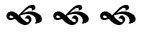
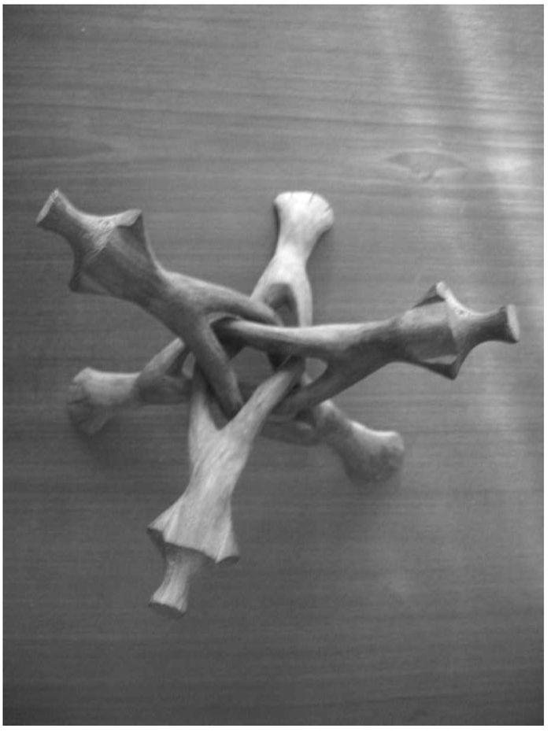
# 제12장 - 하향 인과율에 대하여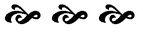
버트런드 러셀의 최악의 악몽
내 생각에 쿠르트 괴델의 1931년 연구에서 나온 가장 뜻밖의 창발적 현상은 기이한 새로운 유형의 수학적 인과율(내가 이런 이례적인 용어를 써도 된다면)이다. 다른 해설가들이 그의 발견을 이런 관점에서 다룬 것을 본 적이 없기에, 이하 내용은 개인적인 해석이다. 내 관점을 설명하려면 괴델의 유명한 공식(그를 기리는 뜻에서 ‘KG’라 부르자)으로 돌아가, 그 공식의 존재가 PM에 무엇을 함의하는지 분석해야 한다.
제10장 끝에서 보았듯이, KG의 의미(더 정확히는 괴델의 기발한 사상에 의해 드러난 이차적 의미, 즉 더 높은 수준의 비수치적이고 비러셀적인 의미)를 본질로 압축하면 “KG는 PM 안에서 증명 불가능하다”라는, 정신이 번쩍 들게 하는 진술이 된다. 그러니 자연스러운 질문, 아니 바로 그 자연스러운 질문은 이것이다. “그렇다면 KG는 정말로 PM 안에서 증명 불가능한가?”
이 질문에 답하려면 우리는 하나의 신념에 의지해야 한다. 곧 PM 안에서 증명 가능한 것은 무엇이든 참인 진술이라는 믿음(또는 뒤집어 말해서, PM 안에서는 거짓인 것이 전혀 증명되지 않는다는 믿음)이다. 이 행복한 상태를 우리는 제10장에서 ‘무모순성(consistency)’이라 불렀다. 만약 PM이 무모순하지 않다면, 자연수에 관한 거짓을 한없이 증명해 낼 것이다. 어떤 특정한 거짓(예컨대 “0=1”)을 증명하는 순간, PM의 규칙에 의해 무한히 많은 다른 거짓들(“1=2”, “0=2”, “1+1=1”, “1+1=3”, “2+2=5” 등등)이 그로부터 따라 나오기 때문이다. 사실 그보다 더 심각하다. 아무리 모호하거나 난해한 거짓 진술이라도 하나만 PM에서 증명 가능하다면, 참이든 거짓이든 상상할 수 있는 모든 산술적 진술이 증명 가능해지고, 그 거대한 건축물 전체가 처참한 잿더미로 무너져 내릴 것이다. 요컨대 단 하나의 거짓이라도 증명 가능하다는 것은 PM이 산술적 진리화 아무런 관련이 없음을 뜻한다.
그렇다면 버트런드 러셀의 최악의 악몽은 무엇일까? 그것은 언젠가 누군가가 참이 아닌 산술적 진술(“0 = s0”이 좋은 예다)을 표현하는 공식의 PM 증명을 찾아내는 것이다. 그 일이 일어나는 순간 PM은 쓰레기통행이 될 테니까. 하지만 러셀에게 다행히도, 지구상의 모든 논리학자는 지옥에서 눈덩이가 백 년을 버틸 확률에 더 높은 배당을 걸 것이다. 다시 말해 버트런드 러셀의 최악의 악몽은 문자 그대로 악몽일 뿐, 꿈의 세계 밖에서는 결코 일어나지 않을 것이다.
왜 러셀뿐만 아니라 모든 논리학자와 수학자(괴델을 포함해)가 그렇게 높은 확신을 가질까? PM의 공리들은 분명 참이며, 그 추론 규칙들은 상상할 수 있는 어떤 것보다도 단순하고 반석처럼 건전하기 때문이다. 거기서 어떻게 거짓이 나올 수 있겠는가? PM에 거짓인 정리가 있을 수 있다고 생각하는 것은 문자 그대로 2 더하기 2가 5라고 생각하는 것만큼이나 어렵다. 그러니 모든 수학자 및 논리학자와 함께 우리도 러셀과 화이트헤드를 믿어주고, 그들의 장대한 논리의 궁전이 무모순하다고 가정하자. 이제부터 우리는 PM이 결코 거짓 진술을 증명하지 않는다고, 즉 그 모든 정리는 반드시 참인 진술이라고 관대하게 가정할 것이다. 자, 이 우호적인 가정을 무장한 채 스스로에게 물어보자. “만약 KG가 PM 안에서 증명 가능하다면 어떤 일이 벌어질까?”
“~이기 때문에”와 “~임에도 불구하고”가 일치하는 기이한 땅
자, 독자여, 당신과 내가 KG가 PM에서 증명 가능하다고 가정해 보자. 그리고 이 가정(나는 이를 ‘증명 가능한 KG 시나리오’라 부르겠다)이 우리를 어디로 이끄는지 살펴보자. 여기서 아이러니한 점은 KG 자신은 증명 가능한 KG 시나리오를 믿지 않는다는 것이다. 고약하게도 KG는 세상을 향해 “나는 증명 불가능하다!”라고 외친다. 그러므로 독자여, 만약 KG에 대해 우리가 옳다면, KG가 아무리 크게 외쳐대도 KG는 자기 자신에 대해 틀린 것이다. 결국 어떤 공식도 증명 가능(우리가 KG에 대해 주장하듯)하면서 동시에 증명 불가능(KG가 스스로 주장하듯)할 수는 없다. 우리 중 하나는 틀려야 한다. (그리고 어떤 공식이든 틀리다는 것은 거짓이다라는 뜻이다. 두 용어는 동의어다.) 따라서… 만약 증명 가능한 KG 시나리오가 사실이라면, KG는 틀렸다(= 거짓이다).
좋다. 우리의 추론은 증명 가능한 KG 시나리오에서 출발해 “KG는 거짓이다”라는 결론에 도달했다. 다시 말해, 만약 KG가 증명 가능하다면, 그것은 또한 거짓이다. 그런데 잠깐만, PM 안에서 증명 가능한 거짓이라고?! 방금 전 우리가 PM은 결코 거짓을 증명하지 않는다고 단호히 선언하지 않았던가? 그렇다, 그랬다. 우리는 PM이 무모순하다는 논리학자들의 보편적 믿음에 동의했다. 그렇다면 우리가 소신을 지키는 한, 증명 가능한 KG 시나리오는 틀렸음에 틀림없다. 그것이 러셀의 최악의 악몽으로 이어지기 때문이다. 우리는 그것을 철회하고, 취소하고, 부인하고, 무효화하고, 폐기해야 한다. 그것을 받아들이는 것이 우리가 틀렸음을 아는 결론(“PM은 모순적이다”)으로 우리를 이끌었기 때문이다.
따라서 증명 가능한 KG 시나리오는 이로써 기각되며, 우리에게는 정반대의 시나리오가 남는다. 즉, KG는 증명 불가능하다. 그런데 재미있는 점은 이것이 바로 KG가 지붕 위에서 외치고 있는 바라는 것이다. 우리는 KG가 자기 자신에 대해 선언하는 바(“나는 증명 불가능하다!”)가 참임을 알게 된다. 요컨대 우리는 두 가지 사실을 확립했다. (1) KG는 PM에서 증명 불가능하다. (2) KG는 참이다.
우리는 방금 PM 내부에서 매우 기이한 변칙을 발견했다. 여기에 우리가 참이라고 확신하면서도 동시에 증명 불가능하다고 똑같이 확신하는 산술(조금 더 정확히는 정수론)의 진술이 있다. 게다가 설상가상으로, 이 모순되어 보이는 두 사실은 서로의 결과다! 다시 말해 KG는 참임에도 불구하고 증명 불가능할 뿐만 아니라, 더 나아가 참이기 때문에 증명 불가능한 것이다.
이 기괴한 상황은 전례가 없을 뿐더러 지독히도 역설적이다. 이는 진리와 증명 가능성이 동전의 양면일 뿐이며 서로를 함의하기 때문에 언제나 함께 간다고 주장하는 ‘수학자의 신조’에 정면으로 배치된다. 그 대신 우리는 놀랍게도 진리와 증명 불가능성이 서로를 함의하는 사례를 마주한 것이다. 이 얼마나 기가 막힌 노릇인가?
불완전성은 힘에서 비롯된다
PM에서 증명 불가능한 정수론의 진리가 존재한다는 사실은 제9장에서 기억하겠지만 PM이 불완전하다는 뜻이다. 거기에는 구멍이 있다. (지금까지는 KG라는 구멍 하나만 보았지만, 사실은 훨씬 더 많이, 실은 무한히 많이 있다는 것이 밝혀진다.) 증명 가능해야 마땅한 정수론의 어떤 진술들이 PM의 거대한 증명 그물망에서 빠져나간다. 그물코 사이로 미끄러져 나가는 것이다. 분명 이것은 또 다른 종류의 악몽이다. 버트런드 러셀의 최악의 악몽만큼 파괴적이지는 않을지 몰라도, 어쩌면 훨씬 더 음흉하고 골치 아픈 악몽이다.
이러한 사태는 1931년의 수학자들과 논리학자들이 예상했던 바가 결코 아니었다. 『수학 원리』의 공리와 추론 규칙이 어떤 식으로든 약하거나 결함이 있음을 시사하는 징후는 어디에도 없었다. 오히려 반대로, 그것들은 수에 관해 누구나 참이라고 생각할 만한 거의 모든 것을 함의하는 것처럼 보였다. 제10장에서 인용한 괴델의 1931년 논문 첫머리도 이를 분명히 밝히고 있다. 기억하겠지만 그는 『수학 원리』와 체르멜로-프렝켈 집합론에 대해 이렇게 썼다. “이 두 체계는 너무나 광범위해서 오늘날 수학에서 사용되는 모든 증명 방법이 그 안에 형식화되어 있다. 즉, 소수의 공리와 추론 규칙으로 환원되어 있다.”
괴델이 여기서 표현한 바는 당시 거의 보편적인 신조였기에, 그 뒤 스물다섯 쪽에 걸쳐 PM의 불완전성을 폭로한 그의 발표는 마른하늘에 날벼락처럼 떨어졌다.
설상가상으로 괴델의 결론은 PM의 약점이 아니라 강점에서 비롯되었다. 그 강점이란 수가 너무나 유연하고 ‘카멜레온 같아서’ 수의 패턴이 추론의 패턴을 모방할 수 있다는 사실이다. 괴델은 친숙한 자연수가 PM의 낯선 기호 패턴이 춤추는 것과 똑같은 방식으로 춤출 수 있다는 단순하지만 경이로운 사실을 이용했다. 더 구체적으로, 그가 발명한 프림(prim) 수는 증명 가능한 문자열과 구별할 수 없을 정도로 똑같이 행동하며, PM의 자연스러운 강점 중 하나가 바로 프림 수에 대해 이야기할 수 있다는 점이다. 이 때문에 PM은 (암호로) 자기 자신에 대해 이야기할 수 있게 된다. 한마디로 PM의 표현력이 그 불완전성을 낳은 것이다. 얼마나 환상적인 아이러니인가!
버트런드 러셀의 두 번째로 최악인 악몽
PM을 아무리 보강하더라도(예컨대 더 많은 공리나 더 많은 추론 규칙, 혹은 둘 다를 가진 체계를 만들더라도) 그 체계는 PM만큼이나 수의 유연성을 잘 표현할 수 있어야 한다(그렇지 않으면 더 강해지는 게 아니라 약해지는 셈이다). 그러므로 똑같은 괴델의 덫이 그 체계를 잡는 데 성공할 것이며, 그 체계 역시 제 꾀에 제가 넘어갈 것이다.
이를 좀 더 구체적으로 설명해 보자. 더 크고 더 우월하다고 여겨지는 체계 슈퍼-PM에서 증명 가능한 문자열들은 프림 수보다 더 풍부한 수의 집합(따라서 ‘슈퍼-프림 수’라 부르자)에 의해 동형적으로 모방될 것이다. 이 시점에서 괴델은 PM에서 했던 것과 똑같이 슈퍼-PM을 위한 새로운 공식 KH를 즉시 만들어낼 것이다. KH는 “수 h는 슈퍼-프림 수가 아니다”라고 말하며, 물론 h가 KH 자신의 괴델 수가 되도록 만들 것이다. (PM에서 한 번 해본 뒤에는 슈퍼-PM에서 이를 수행하는 것은 식은 죽 먹기다.) 우리가 방금 PM에 대해 밟았던 것과 똑같은 추론 패턴이 다시 한번 작동할 것이고, 더 강력하다고 여겨졌던 체계는 PM과 똑같은 방식으로, 똑같은 이유 때문에 불완전성에 굴복할 것이다. 옛 속담이 이를 간결하게 요약한다. “크면 클수록 더 세게 넘어진다.”
다시 말해 PM(그리고 PM만큼 풍부한 다른 모든 공리계)의 구멍은 러셀과 화이트헤드의 부주의한 실수 때문이 아니라, 자연수의 카멜레온 같은 성질을 포착할 만큼 유연한 모든 체계가 지닌 피할 수 없는 속성일 뿐이다. PM은 자신이 영상을 보내고 있는 화면을 비추는 텔레비전 카메라처럼, 몸을 돌려 자기 자신을 가리킬 수 있을 만큼 풍부하다. 충분히 좋은 TV 시스템을 만들면 이런 되먹임(looping-back) 능력은 불가피하다. 그리고 시스템의 해상도가 높을수록 그 이미지는 더 충실해진다.
유도에서처럼 상대의 힘은 곧 상대의 취약점의 원천이다. 검은 띠의 고수처럼 움직인 쿠르트 괴델은 PM의 힘을 이용해 PM을 무너뜨렸다. 물론 모순성만큼 파국적이지는 않았지만, 전혀 예상치 못한 방식으로, 곧 불완전성으로 무너뜨린 것이다. 어떤 식으로든 PM을 보강하거나 확장해도 괴델의 검은 띠 기술을 피할 수 없다는 사실은 ‘본질적 불완전성’이라 불리며, 이것이 바로 버트런드 러셀의 두 번째로 최악인 악몽이다. 하지만 단지 나쁜 꿈일 뿐인 최악의 악몽과 달리, 이 악몽은 꿈의 세계 밖에서 일어난다.
괴물들의 끝없는 행렬
PM을 확장해도 가라앉는 배를 구할 수 없을 뿐만 아니라, 더 나쁜 것은 KG가 PM의 유일한 구멍과는 거리가 멀다는 점이다. 주어진 어떤 공리계에 대해서도 괴델 수 매기기(Gödel-numbering)를 하는 방법은 무한히 많으며, 각각의 방법은 KG의 사촌을 만들어낸다. 그것들은 모두 다르지만 너무나 비슷해서 마치 복제인간 같다. 가라앉는 배를 구하겠다고 나서서 KG나 그 사촌 중 아무것이나(원한다면 한꺼번에 전부를!) 새로운 공리로 PM에 던져 넣는 것은 자유지만, 그 영웅적인 행동은 별 소용이 없을 것이다. 괴델의 레시피는 즉시 KG의 따끈따끈한 새 사촌을 만들어낼 것이기 때문이다. 다시 한번 이 새로운 자기 지시적 괴델 문자열은 KG 및 그 사촌 무리와 ‘똑같아’ 보이겠지만, 그중 어느 것과도 동일하지는 않을 것이다. 그리고 그것 역시 던져 넣을 수 있지만, 또 다른 사촌을 얻게 될 뿐이다! 봄철에 데이지와 제비꽃이 피어나듯, 고군분투하는 PM이라는 배 안에는 구멍들이 펑펑 솟아나는 듯하다. 내가 왜 이 악몽을 러셀의 최악의 악몽보다 더 음흉하고 골치 아프다고 부르는지 알 수 있을 것이다.
이 놀랍도록 역설적이면서도 눈부시게 아름다운 기술에 허를 찔린 것은 버트런드 러셀뿐만이 아니었다. 사실상 모든 수학적 사상가가 그랬다. 여기에는 일생의 주요 목표 중 하나가 모든 수학을 공리적 틀 안에 엄밀하게 정초하는 것(이를 ‘힐베르트 프로그램’이라 불렀다)이었던 위대한 독일 수학자 다비트 힐베르트도 포함된다. 1931년의 대천둥이 치기 전까지, 이 고귀한 목표는 화이트헤드와 러셀에 의해 달성되었다고 보편적으로 믿어졌다.
달리 말하면, 당시의 수학자들은 내가 앞서 ‘수학자의 신조(『수학 원리』 버전)’라 불렀던 것을 보편적으로 믿었다. 그들이 꽤 합리적으로 믿음을 두었던 받침대가 근본적이고 회복 불가능한 결함을 지니고 있다는 괴델의 충격적인 폭로는 두 가지에서 비롯되었다. 하나는 그 받침대가 무모순하다는(즉, PM의 정리들 사이에 숨어 있는 거짓을 결코 찾지 못할 것이라는) 우리의 우호적인 가정이고, 다른 하나는 KG와 그 무한히 많은 사촌들이 PM에서 증명 불가능하다는 사실인데, 우리는 방금 이것이 PM의 무모순성을 고려할 때 그들의 자기 지시성에서 흘러나오는 결과임을 보였다.
마지막으로 한 번만 더 요약하자면, KG(또는 그 사촌들)를 증명 불가능하게 만드는 것은 무엇인가? 한마디로 그 자기 지시적 의미다. 만약 KG가 증명 가능하다면, 그 고리 같은 의미가 뒤집혀 KG를 증명 불가능하게 만들 것이고, 따라서 PM은 모순적이 될 텐데, 우리는 PM이 그렇지 않다는 것을 알고 있다.
하지만 주목할 점은 우리가 KG를 마지막 줄로 끌어내려는 연역의 본질에 대해서는 어떤 상세한 분석도 하지 않았다는 것이다. 사실 우리는 KG의 러셀식 의미(내가 일차적 의미라 불러온 것), 즉 내가 ‘g’라 부른 어마어마한 수가 내가 ‘건방짐(sauciness)’ 또는 ‘비프림성(non-primness)’이라 부른 다소 난해하고 현학적인 정수론적 성질을 지닌다는 주장을 완전히 무시했다. 지난 몇 쪽 동안 프림 수나 비프림 수, 그리고 그들의 정수론적 성질에 대해서는 단 한 마디도 나오지 않았고, 수 g도 전혀 언급되지 않았음을 알 수 있을 것이다. 우리는 버트런드 러셀이 결코 온전히 이해하지 못했던 KG의 이차적 의미만을 봄으로써 그런 모든 수치적 문제들을 교묘히 피해 갔다. 순수하게 비수치적인 몇 줄의 추론(이 장의 두 번째 절)만으로 우리는 (수에 관한) 이 진술이 도저히 PM의 정리가 될 수 없음을 확신하게 된 것이다.
무모순성이 우뚝 솟은 봉우리를 등반 불가능하게 만들다
위성을 타고 탐험하는 탐험가 팀이 이제껏 알려지지 않았던 히말라야의 한 봉우리(이를 ‘KJ’라 부르자)를 방금 발견했다고 상상해 보자. 그리고 그들이 오직 정상만이 지닌 아주 특이하고 유별난 성질 덕분에 그 정상으로 이어지는 경로는 전혀 존재할 수 없다고 즉각적이고도 전적인 확신을 가지고 선언한다고 상상해 보자. 고도 250마일 위에서 수직 아래로 찍은 단 한 장의 사진을 보는 것만으로 그 팀은 KJ를 등반 불가능한 봉우리로 선언한다. 게다가 그들은 전통적인 등산 관점에서 본 봉우리의 성질에 대해서는 일말의 생각도 하지 않고, 그 가파른 비탈을 따라 정상으로 향하는 무수히 많은 잠재적 접근로를 직접 손에 흙을 묻혀가며 시도해 보지도 않은 채 이 극적인 결론에 도달한다. “아뇨, 그중 어느 것도 안 됩니다!” 그들은 쾌활하게 단언한다. “하나하나 시도해 볼 필요도 없어요. 매번 실패할 테니까요!”
만약 그런 기이한 일이 일어난다면, 그것은 산의 등반 가능성에 관한 이전의 모든 결론이 도출되던 방식과 현저히 다를 것이다. 지금까지 등반가들은 언제나 많은 경로를 시도해야 했다. 실로 온갖 종류의 장비를 갖추고 다양한 기상 조건 속에서 여러 차례 시도해야 했으며, 수천 번 연속으로 실패하더라도 그 봉우리가 영원히 등반 불가능하다는 철통같은 증명이 되지는 못했다. 그저 지금까지는 등반을 거부해 왔다고 결론 내릴 수 있을 뿐이었다. 실제로 ‘등반 불가능성의 증명’이라는 개념 자체가 등산이라는 활동에는 극히 낯선 것이었다.
이와 대조적으로 우리 탐험가 팀은 정상으로 이어지는 무한히 많은 상상 가능한 경로 중 단 하나도 생각해 보지 않고(실제로 시도해 보기는커녕), KJ의 어떤 새로운 성질로부터 KJ가 본질적으로 등반 불가능하다고 결론지었다. 그럼에도 그들은 자신들의 결론이 단순히 개연적이거나 극히 그럴듯한 것이 아니라, 절대적으로 확실하다고 주장한다.
이는 전례 없는, 위아래가 뒤집힌, 하향식(top-down)의 등산학적 인과율에 해당한다. 도대체 어떤 성질이 그 기이한 봉우리의 등반 불가능성을 설명할 수 있을까? 전통적인 등반 전문가들은 상상 가능한 모든 경로에서 등반가들이 필연적으로 어떤 치명적인 장애물을 만날 것이라는 일괄적인 주장에 어리둥절할 것이다. 그들은 산을 위쪽으로 올려다보며 정상에 도달하기 위해 택할 수 있는 모든 상상 가능한 경로를 고려함으로써, 그 먼 봉우리가 등반하기 극히 어려울 것이라고 더 겸손하게 결론 내릴 것이다. 반면 우리의 용감한 팀은 오직 KJ의 꼭대기만을 바라보고, 아래로부터 거기에 도달할 수 있는 경로는 아예 존재할 수 없다고 하향식으로 결론지었다.
집요한 추궁을 받자, 탐험가 팀은 마침내 어떻게 그 충격적인 결론에 도달했는지 설명한다. 알고 보니 위에서 찍은 KJ의 사진은 보통의 빛이 아니라(보통의 빛으로는 아무것도 특별할 게 드러나지 않았을 것이다), 새로 발견된 ‘괴델 광선’으로 촬영된 것이었다. 이 새로운 매체를 통해 KJ를 바라보았을 때, 깊숙이 숨겨진 치명적인 구조들이 드러났던 것이다.
문제는 맨 꼭대기 빙하 아래에 깔린 암반의 견고함(consistency)에 있다. 그 암반은 너무나 섬세해서, 어떤 등반가라도 정상의 사정거리 안에 들어와 그 위에 아주 작은 무게(소금 한 알, 심지어 아기 호박벌의 속눈썹 하나!)라도 얹는 행위를 하는 순간, 즉각 천둥 같은 지진이 일어나 산 전체가 와르르 무너져 돌무더기가 되고 만다. 따라서 그 봉우리의 접근 불가능성은 누군가가 어떻게 거기까지 올라가려 하는지와는 아무런 상관이 없고, 정상 자체에 내재된 불안정성, 게다가 오직 괴델 광선만이 드러낼 수 있는 종류의 불안정성과 관련이 있는 것이다. 참으로 우스꽝스러운 공상이지 않은가?
수학에서의 하향 인과율
그렇다, 우스꽝스럽다. 하지만 쿠르트 괴델의 폭탄 선언은 똑같이 환상적이었음에도 공상이 아니었다. 그것은 엄밀하고 정확했다. 그것은 공식의 숨겨진 의미가 일종의 기이한 ‘하향식’ 인과력을 가져서, 그 공식의 참 또는 거짓(또는 PM이나 다른 충분히 풍부한 공리계 내부에서의 도출 가능성 또는 도출 불가능성)을 결정할 수 있다는 놀라운 사실을 드러냈다. 단지 그 공식의 의미를 아는 것만으로도, 공리로부터 ‘위쪽으로’ 차근차근 걸어 올라가야 하는 구식 방식으로 도출하려 애쓰지 않고도 그 공식의 참이나 거짓을 추론할 수 있는 것이다.
이는 단지 기이한 정도가 아니라 경이로운 일이다. 보통은 수학적 추측이 무엇을 말하는지만 보고, 그 진술의 내용 자체에만 호소해서 그 진술이 참인지 거짓인지(또는 증명 가능한지 불가능한지)를 연역할 수 없다.
예를 들어, 내가 당신에게 “완전수(6, 28, 496처럼 자기 자신을 제외한 약수의 합이 자기 자신과 같은 수)는 무한히 많다”라고 말한다면, 당신은 내 주장(이를 ‘Imp’라 부르자)이 참인지 아닌지 알지 못할 것이다. 그리고 Imp라고 적힌 진술을(그것이 영어로 쓰였든 PM의 까칠한 형식 기호로 쓰였든) 오랫동안 뚫어져라 쳐다보는 것만으로는 털끝만큼도 도움이 되지 않을 것이다. 당신은 이 봉우리에 도달하기 위한 다양한 접근로를 시도해 보아야 한다. 그리하여 496 다음의 완전수가 8128임을 발견할 수도 있고, 찾은 완전수 중 홀수가 하나도 없다는 다소 기이한 점을 주목할 수도 있으며, 찾은 완전수 각각이 p(p+1)/2 꼴을 띠는데 여기서 p는 홀수인 소수(3, 7, 31 등)이고 p+1은 2의 거듭제곱(4, 8, 32 등)이라는 사실을 관찰할 수도 있을 것이다.
한참이 지나, 어쩌면 Imp를 증명하려는 길고 긴 실패가 이어진 끝에, 당신은 점점 Imp가 거짓이라고 의심하게 될지도 모른다. 그럴 경우 당신은 목표를 바꾸어 근처의 라이벌 봉우리, 즉 Imp의 부정인 ∼Imp(“완전수는 무한히 많지 않다”, 즉 가장 큰 완전수가 존재한다는 진술로, 우리의 옛 친구인 세상에서 가장 큰 소수 P를 떠올리게 한다)로 가는 다양한 접근로를 시도해 보기로 결심할 수도 있다.
하지만 놀라운 천재성의 번뜩임을 통해 당신이 새로운 종류의 ‘괴델 광선’(즉, 프림 수가 증명 가능한 문자열과 완벽하게 보조를 맞추어 춤추게 만드는 표준적인 괴델 기계장치를 모두 포함한 어떤 기발하고 새로운 괴델 수 매기기)을 발견했다고 가정해 보자. 그 광선 덕분에 당신은 Imp에 속한 숨겨진 두 번째 차원의 의미를 꿰뚫어 보게 되었는데, 그 숨겨진 의미는 그것을 해독할 줄 아는 행운의 소수에게 “정수 i는 프림 수가 아니다”라고 선언하고 있었고, 여기서 i는 마침 Imp 자신의 괴델 수였다. 자, 독자여, 당신이 이 시나리오를 알아차리는 데는 그리 오랜 시간이 걸리지 않을 것이다. 당신은 Imp가 KG와 똑같이 당신의 새로운 괴델 부호를 통해 자기 자신에 대해 “Imp는 PM에서 증명이 없다”고 주장하고 있음을 재빨리 깨달을 것이다.
비록 극히 일어날 법하지 않지만 이 더없이 유쾌한 시나리오에서, 당신은 자연수와 그 약수의 세계나 엄밀한 증명의 세계를 더 이상 뒤지지 않고도 즉시 Imp가 참이면서 동시에 증명 불가능하다고 결론 내릴 수 있을 것이다. 다시 말해 “완전수는 무한히 많다”라는 진술이 참이라고 결론 내릴 것이고, PM의 공리와 추론 규칙을 사용해서는 증명이 없다고도 결론 내릴 것이며, 마지막으로(아이러니의 칼날을 비틀며) PM에서 Imp의 증명 부재가 바로 그 참됨의 직접적인 결과라고 결론 내릴 것이다.
방금 내가 그린 시나리오가 말도 안 된다고 생각할지 모르지만, 그것은 괴델이 한 일과 정확히 유비적이다. 다만 괴델은 수에 관한 미리 잘 알려지고 흥미로운 진술에서 시작해 우연히 그 안에 숨겨진 아주 기이한 대안적 의미를 마주친 것이 아니라, 수에 관한 진술을 신중하게 고안해 내고, 자신이 그것을 설계한 방식 때문에 그 진술이 아주 기이한 대안적 의미를 지니게 되었음을 드러냈을 뿐이다. 그 점을 제외하면 두 시나리오는 동일하다.
가상적인 Imp 시나리오와 실제의 KG 시나리오는 당신도 알 수 있듯이 전통적으로 수학이 행해져 온 방식과 근본적으로 다르다. 그것들은 거꾸로 된 추론, 즉 공리로부터 위쪽으로가 아니라 가상의 정리로부터 아래쪽으로의 추론에 해당하며, 특히 수에 관한 표면적 주장이 아니라 가상의 정리가 지닌 숨겨진 의미로부터의 추론에 해당한다.
괴루와 진리 기계를 향한 헛된 탐구
프림 수와 건방진(비프림) 수를 구별해 주는 가상의 기계, ‘괴루(Göru)’를 기억하는가? 제10장에서 나는 우리가 그런 괴루를 만들었거나 누군가 우리에게 그냥 하나 주었다면, 정수론의 어떤 추측이든 참과 거짓을 판별할 수 있을 것이라고 지적했다. 그렇게 하려면 추측 C를 PM 공식으로 번역하고, 그 괴델 수 c를 계산한 다음(이는 간단한 작업이다), 괴루에게 “c는 프림 수인가, 건방진 수인가?”라고 묻기만 하면 된다. 괴루가 “c는 프림 수다”라고 답하면 우리는 “c가 프림 수이므로 추측 C는 증명 가능하고, 따라서 참이다”라고 선언할 것이고, 반대로 괴루가 “c는 건방진 수다”라고 답하면 우리는 “c가 건방진 수이므로 추측 C는 증명 불가능하고, 따라서 거짓이다”라고 선언할 것이다. 그리고 (가정상) 괴루는 언제나 결국 이 두 답 중 하나를 줄 것이므로, 우리는 그저 편히 앉아 우리가 꿈꾸는 어떤 깊이의 수학 퍼즐이든 괴루가 풀게 내버려 두면 될 것이었다.
단 하나의 작은 장치로 모든 문제를 푸는 멋진 시나리오지만, 불행히도 이제 우리는 그것이 치명적인 결함을 안고 있음을 안다. 괴델은 PM(실은 PM 같은 모든 형식 공리계)에서 진리와 증명 가능성 사이에 깊은 간극이 있음을 우리에게 폭로했다. 즉, 아쉽게도 증명 불가능한 참인 진술이 많이 존재한다. 따라서 PM의 공식이 정리가 되지 못하더라도 그것을 거짓이라는 확실한 신호로 받아들일 수는 없다(비록 다행히도 어떤 공식이 정리일 때는 그것이 참이라는 확실한 신호가 되지만 말이다). 그러므로 괴루가 선전한 대로 정확히 작동해 “n은 프림 수인가?”라는 형태의 어떤 질문에도 언제나 옳은 ‘예’ 또는 ‘아니오’ 답을 준다 하더라도, 결국 우리를 위해 모든 수학적 질문에 답해 줄 수는 없는 것이다.
우리가 바랐던 것보다 정보량은 적지만, 그래도 괴루는 하나쯤 소장하면 좋을 멋진 기계일 것이다. 하지만 그마저도 불가능하다는 것이 밝혀졌다. 신뢰할 수 있는 프림/건방짐 판별기는 아예 존재할 수조차 없다. (여기서 자세한 내용은 다루지 않겠지만, 수리논리학이나 계산가능성 이론의 많은 교재에서 찾을 수 있다.) 갑자기 우리 주변의 모든 꿈이 와르르 무너지는 것만 같다. 그리고 어떤 의미에서는 실제로 1930년대에 그런 일이 일어났다. 추상적인 진리 개념과 진리를 확인하는 기계적 방법 사이의 거대한 간극이 처음 발견되었고, 이 간극의 어마어마한 크기가 사람들에게 서서히 깨달아지기 시작했던 것이다.
이 분야에서 수학자들의 꿈의 관에 마지막 못 중 하나를 박은 것은 논리학자 알프레트 타르스키였다. 그는 “n은 정수론의 참인 공식의 괴델 수다”라는 영어 진술을 PM 기호법으로 표현할 방법조차 없음을 보였다. 타르스키의 발견이 뜻하는 바는, (어떤 특정한 괴델 수 매기기를 사용할 때) 참인 진술을 나타내는 무한한 수의 집합과 거짓인 진술을 나타내는 여집합인 무한한 수의 집합이 존재하지만, 그 구별을 정수론적 성질로 표현할 방법은 없다는 것이다. 다시 말해 모든 적격식(wff) 수의 집합은 참/거짓의 이분법에 의해 서로 보완적인 두 부분으로 나뉘지만, 그 경계선이 너무나 기이하고 파악하기 어려워서 어떤 수학적 방식으로도 특징지을 수 없다는 뜻이다.
이 모든 것이 지독히도 역설적으로 보일지 모르지만, 그렇다 하더라도 그것은 수학에서 인류가 오랫동안 추구해 온 목표의 심오함을 드러낸다는 점에서 경이로운 역설이다. 수학적 진리를 향한 우리의 집단적 탐구는 말로 다 할 수 없이 미묘하며, 따라서 어떤 의미에서는 신성한 무언가를 향한 탐구임이 드러난다. 문득 “괴델(Gödel)”이라는 이름에 “신(God)”이라는 단어가 들어 있다는 사실이 다시 떠오른다. 그 위의 두 점(¨)에는 또 어떤 신비가 숨어 있을지 누가 알겠는가?
진화한 생명체의 뒤집힌 지각
앞선 탐구에서 보았듯이, 수리논리학의 이상한 고리는 일종의 뒤집힌 인과율처럼 보이는 것을 포함해 매우 놀라운 성질들을 지니고 있다. 하지만 이 책에서 우리가 뒤집힌 인과율을 만난 것은 이번이 처음이 아니다. 그 개념은 카레니움과 인간 뇌에 관한 논의에서도 불쑥 튀어나왔다. 우리는 진화가 인간을 지각하는 존재, 즉 세계를 거시적 범주로 걸러내는 존재로 빚어냈다고 결론지었다. 결과적으로 우리는 우리 주변에서 일어나는 일(다른 사람들이 하는 일과 우리 자신이 하는 일을 포함해)을, 우리의 일상적인 지각 및 친숙한 범주와 수십 자릿수나 동떨어져 있는 기저의 입자 물리학이 아니라, 추상적이고 불분명한 고수준 패턴들로 기술할 운명이다. 예컨대 어머니와 아버지, 친구와 연인, 식료품점과 계산대, 연속극과 맥주 광고, 괴짜와 천재, 종교와 고정관념, 희극과 비극, 강박과 공포증, 그리고 물론 믿음과 욕망, 희망과 두려움, 공포와 꿈, 야망과 질투, 헌신과 증오 등 물리적 인과율의 미시 세계와는 은유적으로 백만 마일이나 떨어진 수많은 추상적 패턴들 말이다.
따라서 우리의 평범한 인간적 세계 지각 방식에는 기묘한 뒤집힘이 있다. 실재를 움직이는 실제 모터가 거처하는 곳은 미시 영역인 것처럼 보이는데도, 우리는 ‘작은 것’이 아니라 ‘큰 것’을 지각하도록 만들어졌기 때문이다. 우리 마음이 저수준을 완전히 무시한 채 고수준만을 본다는 사실은 괴델이 우리에게 드러내 보인 고수준 시각의 가능성을 떠올리게 한다. 그는 어마어마하게 긴 PM 공식(KG나 그 사촌들)을 가져다가, 어떤 거대한 정수가 재귀적으로 정의된 난해한 정수론적 성질(비프림성)을 지닌다는 저수준의 수치적 주장으로 읽는 대신, 간결하고 쉽게 이해할 수 있는 방식(“KG는 PM에서 증명이 없다”)으로 읽는 방법을 찾아냈다. PM 문자열의 표준적인 저수준 읽기는 누구나 볼 수 있게 표면에 드러나 있었던 반면, 그와 나란히 고수준 읽기가 존재할 수 있다고 상상하는 데는 천재가 필요했다.
이와 대조적으로, 뇌(또는 카레니움)로 생각하는 생명체의 경우, 자신의 뇌 활동을 고수준에서 읽는 것은 자연스럽고 자명한 일이다(예컨대 “할머니가 나를 데리고 오즈의 마법사를 보러 가셨을 때 내가 얼마나 무서워했는지 기억난다”). 반면 그 고수준을 뒷받침하는 저수준 활동(수많은 신경전달물질이 시냅스 틈새를 미친 듯이 건너뛰거나, 수십억 개의 심(simm)들이 서로 소리 없이 부딪히는 일)은 완전히 숨겨져 있고, 의심조차 되지 않으며, 보이지 않는다. 생각하는 생명체는 자신의 생각이 일어나게 해 주는 기질에 대해서는 거의 아무것도 모르지만, 그럼에도 세계에 대한 자신의 상징적 해석에 대해서는 모든 것을 알며, 자신이 “나(I)”라고 부르는 무언가를 아주 친밀하게 알고 있다.
좋든 싫든 “나”에 갇혀 살기
자신의 일상적이고 친숙한 기호들과 늘 존재하는 “나”라는 감각을 무시하고, 자신의 두개골(또는 카레니움) 내부의 물리적 어딘가에 자신의 기호(또는 심볼)와는 아무 상관이 없는 난해하고 숨겨진 더 낮은 수준이 있을지 모른다고, 그리고 그곳은 가장 신비롭게도 모든 상징적 성질이 결여된 무수한 미시적 단위들의 보이지 않는 소용돌이로 채워져 있을지 모른다고 대담하게 추측할 만한 사상가는 실로 드물 것이다.
인간의 삶을 이런 식으로 생각해 보면, 우리가 뇌를 저수준의 신경학적 용어로 인식하기 훨씬 전에 고수준의 비물리적 용어(희망이나 믿음 같은)로 먼저 인식하게 된다는 사실이 꽤 기묘하게 느껴진다. (실제로 대부분의 사람들은 자신의 뇌와 그런 저수준에서 접촉할 일이 전혀 없다.) 만약 『수학 원리』의 경우에도 비슷한 방식으로 일이 진행되었다면, PM의 특정 공식들이 지닌 고수준의 괴델적 의미를 인식하는 것이 훨씬 더 기본적인 러셀적 의미를 인식하는 것보다 훨씬 앞섰을 텐데, 이는 상상조차 할 수 없는 시나리오다. 어쨌든 우리 인간은 우리 자신을 저수준의 물리주의적 용어(내년 여름에 예브게니 오네긴을 읽고 싶어 하는 당신의 희망을 담당하는 모든 뉴런의 상태를 담은 상상할 수 없이 긴 목록을 떠올려 보라)가 아니라 고수준의 심적 용어(“나는 내년 여름에 예브게니 오네긴을 읽고 싶다”)로 지각하고 기술하도록 진화했다. 비록 인류가 집단적으로 후자를 향해 조금씩 나아가고는 있지만 말이다.
바닥 수준을 향해 천천히 나아가기
‘믿음’, ‘희망’, ‘죄책감’, ‘시기’와 같은 심적 개념들은 어떤 인간이 그것을 물리적 기질(아주 세밀한 수준에서 본 살아 있는 뇌) 속의 반복적이고 인식 가능한 패턴으로 정초하려 꿈꾸기 훨씬 전부터 존재했다. 고수준의 직관적 이해에서 저수준의 과학적 이해로 천천히 나아가는 이 경향은, 부모에게서 자손으로 유전이 전달되는 기본 단위로서의 유전자(gene)라는 추상적 개념이 대담하게 가정되고 수십 년간 실험실에서 면밀히 연구된 뒤에야 비로소 ‘단단한’ 물리적 토대가 발견되었던 사실을 떠올리게 한다. 마침내 그 추상적 개념에 물리적 ‘그림’을 붙일 수 있게 해 주는 미시적 구조가 발견되었을 때, 그것은 뜻밖의 실체로 드러났다. 유전자는 단지 네 종류의 분자(뉴클레오타이드)가 차례로 연결되어 수백만 단위 길이의 사슬을 이루며 길게 나선형으로 꼬인 끈의 중간 길이 조각임이 밝혀진 것이다.
그리고 기적적으로, 이 네 분자의 화학적 성질은 어떤 의미에서 부차적인 것이었다. 유전을 생각할 때 무엇보다 중요했던 것은 전통적인 물리화학적 성질이 아니라 새롭게 드러난 정보적 성질이었다. 즉, 유전과 생식이 어떻게 작동하는지에 대한 적절한 기술은 화학에서 상당 부분 추상화되어, 오직 정보를 조작하는 과정에 대한 고수준의 그림만을 남길 수 있었다.
이 정보 조작 과정의 핵심에는 ‘유전 암호(genetic code)’라 불리는 고도의 추상화가 자리 잡고 있었다. 이는 예순네 가지에 달하는 세 뉴클레오타이드 ‘단어’(또는 ‘코돈’) 각각을 전혀 다른 화학 계열에 속하는 스무 가지 분자(아미노산) 중 하나에 대응시켰다. 다시 말해 유전자와 유전에 대한 깊은 이해는 고수준의 의미를 매개하는 사상(mapping)에 정통할 때만 가능했다. 이 이야기는 어쩐지 낯익게 들릴 것이다.
돼지, 개, 그리고 늪에 대하여
생물학적 세포 안에서 일어나는 일을 이해하고 싶다면, 당신은 이 새로운 정보적 수준에서 생각하는 법을 배워야 한다. 물리학만으로는 이론적으로 충분할지 몰라도 실행 가능성 면에서는 어림도 없다. 물론 소립자들은 제 할 일을 알아서 하며, 생체 분자의 정보적 수준 따위는(하물며 인간의 지각 범주나 추상적 믿음, “나”라는 의식, 애국심, 혹은 특정 대규모 생체 분자 덩어리가 24개의 전주곡과 푸가를 작곡하고 싶어 하는 불타는 열망 따위는) 전혀 신경 쓰지 않는다. 이 모든 소립자가 미시적인 일을 수행하는 가운데, 생물에게 일어나는 거시적 사건들이 창발한다.
하지만 내가 전에 지적했듯이, 만약 당신이 입자 수준에 초점을 맞추기로 선택한다면, 세포나 돼지 같은 실체를 그것이 거주하는 나머지 세계로부터 깔끔하게 경계 지을 수 없다. ‘세포’나 ‘돼지’ 같은 개념은 그 훨씬 낮은 수준에서는 아무런 의미가 없다. 입자 물리학의 법칙은 ‘돼지’, ‘세포’, ‘유전자’, ‘유전 암호’, 심지어 ‘아미노산’이라는 개념조차 존중하지 않는다. 입자 물리학의 법칙은 오직 입자만을 다룰 뿐이며, 생각하는 존재의 편의를 위해 그어 놓은 더 큰 거시적 경계선은 나비에게 선거구 경계선이 무의미한 것만큼이나 입자 물리학에는 무의미하다. 전자, 광자, 중성미자 등은 그런 인위적인 경계선을 아무런 거리낌 없이 휙휙 넘나든다.
만약 당신이 입자의 길을 택한다면, 온전히 그 길을 끝까지 가야 하는데, 불행히도 그것은 돼지를 훨씬 넘어서는 것을 의미한다. 그것은 돼지 가족의 모든 구성원에 있는 모든 입자, 돼지가 사는 헛간의 모든 입자, 돼지가 뒹구는 진흙, 먹이를 주는 농부, 돼지가 숨 쉬는 대기, 돼지 위로 떨어지는 빗방울, 그 빗방울이 떨어지는 적란운, 돼지의 고막을 울리는 천둥소리, 지구 전체, 태양 전체, 빅뱅까지 거슬러 올라가 우주 전체에 퍼져 있는 우주 배경 복사의 모든 입자 등을 모두 고려해야 함을 뜻한다. 이는 우리 같은 유한한 존재에게는 너무나 거대한 과제이므로, 우리는 덜 포괄적이고 덜 상세하지만 (우리에게 다행히도) 더 많은 통찰을 제공하는 수준, 즉 정보적 수준에서 사물을 바라보는 타협안을 받아들여야 한다.
그 수준에서 생물학자들은 유전자의 전통적인 물리화학적 성질에 초점을 맞추기보다는 유전자가 무엇을 나타내는지에 대해 이야기하고 생각한다. 그리고 그들은 이 새롭고 ‘더 간결하고 날카로운’ 말하기 방식이 암시하는 바, 곧 유전자가 그 정보적 성질 덕분에 고유한 인과적 성질을 지닌다는 사실을 암묵적으로 받아들인다. 달리 말해, 극도로 추상적인 대규모 사건이나 사태(예컨대 골든 레트리버가 매우 온순하고 상냥한 경향이 있다는 고수준의 규칙성)가 분자의 의미에서 비롯된다고 타당하게 말할 수 있다는 것이다.
분자생물학이 아니라 개를 직접 다루는 사람들에게 이런 일은 당연하게 여겨진다. 개를 다루는 사람들은 마치 이 모든 것이 DNA의 물리화학과(DNA보다 더 미세한 물리적 수준은 말할 것도 없고) 완전히 분리되어 있고 오직 ‘견종의 성격 특성’이라는 추상적 수준에만 존재하는 것처럼, 이 견종 저 견종의 기질과 정신적 성향에 대해 늘 이야기한다. 그리고 놀라운 점은 개를 다루는 사람들이 분자생물학자들 못지않게 이런 식으로 생각하고 말하면서 아무런 문제 없이 잘 살아간다는 것이다. 그것이 실제로 작동한다! 실로 만약 그들이(또는 분자생물학자들이) 순수 물리학 방식이나 순수 분자생물학 방식으로 그렇게 하려 든다면, 그들은 개와 유전자(나머지 우주는 말할 것도 없고)를 구성하는 상상할 수 없을 만큼 많은 수의 상호작용하는 미시적 실체들의 무한한 세부 사항 속에 즉시 수렁에 빠지고 말 것이다.
이 모든 것의 요지는, 로저 스페리가 말했듯이, 개나 돼지에 대해 이야기하는 가장 실재적인 방식은 고수준의 실체들이 저수준의 실체들을 거리낌 없이 이리저리 밀어붙이는 것을 포함한다는 점이다. 정수 641의 소수성(primality)이라는 무형적이고 추상적인 성질이야말로 체니움(chainium)의 ‘소수 구간’에 놓인 단단하고 묵직한 도미노를 가장 진실되게 쓰러뜨리는 힘임을 기억하라. 이것이 바로 하향 인과율이며, 이는 우리를 곧장 다음 결론으로 이끈다. 기호를 지닌 뇌에 대해 생각하는 가장 효율적인 방식, 그리고 대부분의 목적에 비추어 가장 참된 방식은, 뇌 속의 미시적 물질이 생각과 욕망을 밀어붙이는 것이 아니라 그 반대로 생각과 욕망이 미시적 물질을 밀어붙인다고 생각하는 것이다.
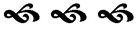
제13장 - 내 “나”의 붙잡기 힘든 눈동자
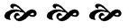
경험을 구성하는 패턴들
우리 인간은 가장 깊은 본성상 친숙하고 편안하지만 도저히 정의할 수 없는 추상적 패턴들의 세계 속에 떠다닌다. 예컨대 ‘패스트푸드’와 ‘클라마토 주스’, ‘촌스러움’과 ‘괴짜스러움’, ‘크리스마스 보너스’와 ‘고객 서비스 부서’, ‘헛수고’와 ‘시한폭탄 같은 인간’, ‘허풍선이’와 ‘치명적 약점’, ‘슬램덩크’와 ‘핵심’, ‘입에 발린 소리’와 ‘고된 노동’, ‘더러운 수작’과 ‘남은 음식 포장 봉투’, ‘독주회’와 ‘인간말종’, ‘신 포도’와 ‘연속극’, ‘피드백’과 ‘페어플레이’, ‘목표’와 ‘거짓말’, ‘공포’와 ‘꿈’, ‘그녀’와 ‘그’—그리고 마지막으로 빼놓을 수 없는 ‘너’와 ‘나’.
위 항목 각각을 따옴표로 묶긴 했지만, 내가 말하려는 것은 적힌 단어가 아니며, 이 표현들이 ‘가리키는’ 세계 속의 관찰 가능한 현상도 아니다. 내가 말하려는 것은 내 마음과 당신 마음속에서 이 용어들이 지칭하는 개념들—또는 앞선 용어로 되돌아가자면, 우리 각자의 뇌 속에 있는 해당하는 기호(symbol)들이다.
(훨씬 긴 목록에서 추려낸) 이 익살스럽기를 바라는 작은 목록을 통해, 나는 대부분 성인의 일상적인 정신적 현실의 풍미를 전달하고자 한다. 즉, 우리가 일상을 살아가며 친구나 동료와 이야기하고, 신호등에 멈춰 서 있고, 라디오 프로그램을 듣고, 치과 대기실에서 잡지를 뒤적이는 동안 뇌 속에서 휴면 상태에 있다가 깨어나기 쉬운 빵과 버터 같은 기본적인 기호들 말이다. 내 목록은 쿼크와 글루온이라는 접근 불가능하고 험난한 수준, 혹은 유전자와 리보솜, 전령 RNA라는 그보다 겨우 조금 더 접근 가능한 수준—우리가 입에 발린 소리로나마 존중할 뿐 우리 중 극소수만이 생각하거나 이야기하는 ‘현실’의 수준—과 대조적으로, 우리가 가장 큰 신뢰를 두고 가장 깊이 믿는 현상들(신 포도와 헛수고는 우리 대부분에게 꽤나 실재적이다)의 느낌을 주기 위해 일상적인 정신 공간을 무작위로 산책해 본 것이다.
그럼에도 그 모든 실재성에도 불구하고, 내 목록은 모호하고 흐릿하며 믿을 수 없을 만큼 잡기 힘든 추상들로 가득 차 있다. 그 항목 중 어느 하나라도 정밀하게 정의하려 애쓰는 모습을 상상할 수 있는가? 도대체 ‘촌스러움(tackiness)’이라 알려진 성질이 무엇인가? 아이들에게 그것을 가르칠 수 있는가? 그리고 인간말종을 백발백중 탐지해 내는 패턴 인식 알고리즘을 내게 좀 줄 수 있겠는가?
스핀 1/2을 가진 반사된 공산주의자 독신남은 흠뻑 젖어 있다
우리의 사고가 거시 세계의 흐릿하고 몽롱한 범주에 얼마나 깊이 묶여 있는지를 보여 주는 단순한 예로, 기묘한 사실 하나를 생각해 보자. 직업상 언어 표현에 티끌 하나 없는 정밀함으로 적용되는 철통같고 면도날처럼 날카로운 논리적 추론 규칙을 적으려 애쓰는 논리학자들조차, 영원하고 근본적인 진리의 전범적인 예로 입자와 장의 수준을 끌어오는 법이 거의 없다는 사실이다. 대신 그들이 가장 빈번하게 드는 ‘진리’의 예는 전형적으로 초점이 전혀 맞지 않는 범주를 사용한 문장들이다. 예를 들면 “눈은 희다”, “물은 젖어 있다”, “독신남은 미혼 남성이다”, “중국에서 공산주의는 앞으로 몇 년 안에 심각한 위기에 처하거나 처하지 않거나 둘 중 하나다” 같은 문장들이다.
이 문장들이 날카로운 진리를 표현한다고 생각한다면, 잠시만 곰곰이 생각해 보라… ‘눈’이 정말 무슨 뜻인가? 그것이 ‘체크메이트’나 ‘소수(prime number)’처럼 날카로운 범주인가? 그리고 ‘젖어 있다’는 정확히 무슨 뜻인가? 거기에 아무런 흐릿함도 없는가? ‘미혼’은 어떠한가—‘앞으로 몇 년’이나 ‘심각한 위기에 처하다’는 말할 것도 없고? 모호함이 천지다! 그럼에도 철학자들의 이 고전적인 문장들은 우리가 자연스럽게 떠다니는 수준에 자리 잡고 있기에, 대부분의 사람들에게는 “전자는 스핀 1/2을 가진다”라거나 “전자기학의 법칙은 거울 반사에 대해 불변이다” 같은 문장보다 훨씬 더 실재적이고(따라서 훨씬 더 신뢰할 만하게 참인 것으로) 보인다.
우리의 상대적으로 거대한 크기 때문에, 우리 대부분은 전자나 전자기학의 법칙을 직접 보거나 다루지 못한다. 우리의 지각과 행동은 훨씬 더 크고 모호한 것들에 초점을 맞추며, 우리의 가장 깊은 믿음은 전자가 아니라 우리가 끊임없이 고빈도 및 저빈도 정신 범주에 할당하고 있는 수많은 거시적 항목들(한쪽에는 ‘패스트푸드’와 ‘남은 음식 포장 봉투’, 다른 쪽에는 ‘치명적 약점’과 ‘고객 서비스 부서’)에, 그리고 이 크고 모호한 항목들 사이에 성립하는 것처럼 보이는(아무리 흐릿하고 신뢰할 수 없더라도) 지각된 인과율에 놓여 있다.
종종 지독히도 혼란스러운 생명체의 세계에서 인과율에 대한 우리의 가장 날카로운 통찰은 언제나 거시적 수준에서의 잘 다듬어진 범주화 행위에서 나온다. 예를 들어, 어떤 먼 땅에서 벌어지고 있는 미스터리한 전쟁의 이유는, 통찰력 있는 논평가가 그 전쟁의 기원을 특정 종교적 교리들 사이의 오랜 갈등과 연결 지을 때 갑자기 우리에게 선명하게 초점이 맞춰질 수 있다. 반면, 어떤 물리학자가 그 전쟁이 덧없는 양자역학적 티끌들 사이에서 일어나는 수조 곱하기 수조 번의 운동량 보존 충돌 덕분에 일어났다고 설명한다면 아무런 깨달음도 얻지 못할 것이다.
나는 우리가 연애나 인간 삶의 다른 거대한 주제들을 언제나 소립자의 상호작용이 아니라 대규모 세계에 속한 무형의 일상적 패턴들로 지각한다는 점에 대해서도 비슷한 이야기를 계속할 수 있다. 양자전기역학이 ‘세상을 돌아가게 만드는 것’이라고 선언하는 대신, 아름다움, 관대함, 성욕, 불안감, 충실함, 질투, 외로움 등 영원히 잡기 힘든 신비들을 인용할 수 있으며, 우리가 기묘하게도 ‘케미(chemistry)’라고 부르고 프랑스인들은 훨씬 더 기묘하게 아부아르 데 아톰 크로슈(avoir des atomes crochus), 즉 서로 갈고리로 걸린 원자를 가지고 있다고 묘사하는 두 영혼의 그 멋진 찌릿함도 빼놓지 않을 수 있다.
이런 목록을 만드는 것은 재미있긴 하지만 단순한 연습일 뿐이며 새로운 것을 알려주지는 않을 것이다. 하지만 핵심은 우리가 삶에서 본질적으로 모든 것을 이 수준에서 지각하고, 지적으로는 우리가 그것으로 만들어졌음을 아는 보이지 않는 구성 요소들의 수준에서는 본질적으로 아무것도 지각하지 않는다는 것이다. 물론 질병의 미시적 원인에 대한 현대인의 예리한 인식이나, 새로운 생명을 낳는 작은 정자-난자 사건에 대한 관심, 아이의 성별 결정에서 미시적 요인의 역할에 대한 상식 같은 몇 가지 예외가 있음을 인정한다. 하지만 이들은 극히 예외적인 경우다. 일반적인 규칙은 우리가 일상적 개념의 세계에서 헤엄치고 있으며, 미시적 사건이 아니라 바로 그 개념들이 우리의 현실을 정의한다는 것이다.
나는 이상한 구슬인가?
앞선 내용은 우리가 다른 생명체의 행동을 가장 잘 이해하는 것과 똑같은 방식으로, 즉 ‘희망’과 ‘믿음’ 따위로 불리는 안정적이지만 무형적인 내부 패턴들로 우리 자신의 행동을 가장 잘 이해할 수 있음을 뜻한다. 하지만 자기 이해의 필요성은 그보다 훨씬 더 나아간다. 우리는 우리 자신의 두개골 안에서 발견되는 모든 희망과 믿음과 욕망의 추정된 통일성, 내적 일관성, 그리고 시간적 안정성을 요약하는 하나의 용어를 만들어내도록 강력히 이끌린다. 그리고 우리 모두가 아주 어릴 때부터 배우듯이, 그 용어는 바로 “나(I)”다. 그리고 곧 무대 뒤의 이 고차원 추상화는 우주에서 가장 실재적인 실체처럼 느껴지게 된다.
우리가 입자가 아니라 생각과 감정이 전쟁과 연애를 일으킨다고 확신하듯이, 우리는 우리의 “나”가 우리 자신의 행동을 일으킨다고 확신한다. 우리 몸 안의, 그리고 우리 몸의 위대한 추진자는 우리의 “나”이며, 그것은 우리의 다채로운 희망과 욕망이라는 어두컴컴한 상자 안에서 우리가 그 둥글기, 단단함, 크기를 너무나 명백하게 느끼는 그 경이로운 구슬이다.
물론 여기서 나는 ‘에피(Epi)’—봉투 상자 속의 존재하지 않는 구슬—를 암시하고 있다. 하지만 “나”라는 환상은 정렬된 여러 겹의 종이와 풀로 만들어진 구슬의 환상보다 훨씬 더 미묘하고 완고하다. 이 환상의 집요함은 어디서 오는가? 아무리 많은 ‘경성 과학(hard science)’을 던져도 왜 그것은 사라지기를 거부하는가? 이런 종류의 질문에 답해 보기 위해, 나는 이제 “나”를 만드는 이상한 고리—그것이 어디에 있으며, 어떻게 생겨나고 안정화되는지—에 초점을 맞추겠다.
나는 진주 목걸이가 아니다
우선 우리 각자에게, 우리만의 고유한 “나”-다움의 이상한 고리는 우리 자신의 뇌 안에 거주한다. 따라서 정상적인 인간 각자의 두개골 안에는 그런 고리가 하나씩 숨어 있다. 사실 그 말은 취소하겠다. 제15장에서 나는 이 숫자를 꽤 과감하게 늘릴 것이기 때문이다. 그럼에도 하나만 있다고 말하는 것은 시작하기에 좋은 근사치다.
내가 “뇌 안의 이상한 고리”라고 말할 때, 나는 물리적 구조—예컨대 끝과 끝이 이어진 많은 뉴런들로 이루어진 회로 같은, 만질 수 있는 어떤 닫힌 곡선—을 염두에 두고 있는 것일까? 이 신경 고리를 뇌 수술로 깔끔하게 잘라내어 섬세한 진주 목걸이처럼 모두가 볼 수 있게 테이블 위에 펼쳐 놓을 수 있을까? 그리고 그렇게 뇌에서 ‘고리가 제거된(delooped)’ 사람은 의식 없는 좀비가 될까?
말할 필요도 없이, 내가 염두에 둔 것은 그런 게 아니다. “나”를 구성하는 이상한 고리는 오디오 피드백 고리가 질량과 지름을 가진 만질 수 있는 물체가 아닌 것과 마찬가지로, 콕 집어내어 추출할 수 있는 물리적 대상이 아니다. 그런 고리는 강당 ‘안’에 존재할 수 있지만, 그것이 물리적으로 국소화되어 있다는 사실이 우리가 그것을 집어 들어 무게를 가늠하거나 심지어 온도와 두께 같은 것을 잴 수 있음을 뜻하지는 않는다. 오디오 피드백 고리처럼 “나” 고리도 하나의 추상화다. 하지만 우리 같은 존재, 즉 후네코미터(hunekometer) 수치가 높게 나오는 존재에게는 엄청나게 실재적이고, 거의 물리적으로 만질 수 있을 것만 같은 추상화다.
나는 내 뇌의 가장 복잡한 기호다
카레니움(그리고 PM)처럼 뇌도 (적어도) 두 수준에서 볼 수 있다. 아주 작은 물리적 과정들(어쩌면 입자들, 어쩌면 뉴런들—마음대로 골라 보라)을 수반하는 저수준과, 지각에 의해 선택적으로 촉발될 수 있는 큰 구조들을 수반하는 고수준이다. 이 책에서 나는 그 큰 구조들을 기호(symbol)라 불렀으며, 그것들은 우리의 범주를 구성하는 뇌 속의 구조들이다.
정상적인 인간의 레퍼토리 속에 있는 헤아릴 수 없이 많은 수천 개의 기호 가운데는 다른 것들보다 훨씬 더 빈번하고 지배적인 것들이 있으며, 그중 하나에는 다소 임의적으로 “나(I)”(적어도 영어에서는)라는 이름이 주어진다. 우리가 다른 사람들에 대해 이야기할 때, 우리는 그들의 야망과 습관, 호불호 같은 것들로 이야기하며, 따라서 그들 각자에 대해서도 우리 자신의 두개골이 아니라 그들의 두개골 안에 거주하는 “나”의 유비물을 형성할 필요가 있다. 우리 자신의 “나”에 해당하는 이 대응물은 물론 맥락에 따라 ‘대니’, ‘모니카’, ‘너’, ‘그’, ‘그녀’ 같은 다양한 꼬리표를 받는다.
자아가 우주의 나머지(물론 대부분 가족, 친구, 좋아하는 음악, 좋아하는 책과 영화 등으로 구성된다)와 상호작용하는 것을 지각하는 과정은 평생 동안 계속된다. 그에 따라 “나” 기호는 우리 뇌의 모든 기호와 마찬가지로 꽤 작고 단순하게 시작하지만, 자라고 또 자라고 또 자라서 결국 우리 뇌에 거주하는 가장 중요한 추상적 구조가 된다. 하지만 그것은 우리 뇌의 어디에 있는가? 어떤 작고 국소적인 지점에 있는 것이 아니다. 그것은 사방에 퍼져 있는데, 너무나 많은 것에 대해 너무나 많은 것을 포함해야 하기 때문이다.
우리의 과거, 미래, 그리고 가정을 내면화하기
내 자기 기호(self-symbol)는 내 개의 그것과는 달리, 비록 꽤 띄엄띄엄하긴 하지만 내 존재의 깊고(끝이 없어 보이는) 과거까지 꽤 정확하게 거슬러 올라간다. 다른 동물들로부터 우리에게로 이 환상적인 정교함의 도약을 뒷받침하는 것은 바로 무제한으로 확장 가능한 인간의 범주 체계다. 그것이 우리 각자로 하여금 일화 기억(episodic memory)—수십 년의 세월에 걸쳐 우리에게(그리고 친구, 가족, 책과 영화와 신문 기사 속 인물 등등 끝없이 많은 이들에게) 일어난 사소하고 중대한, 단순하고 복잡한 사건들에 대한 우리의 기억이 담긴 거대한 창고—을 구축할 수 있게 해 주기 때문이다.
마찬가지로, 공포와 꿈에 이끌려 내 자기 기호는 비록 확신은 거의 없지만 대단한 강렬함을 가지고 내 미래 존재의 흐릿한 안개 속을 내다본다. 내 과거에 대한 방대한 일화 기억은, 아직 오지 않은 것을 향해 흐릿하게 가리키는 그 대응물(이를 내 일화 투사기(episodic projectory)라 부르면 어떨까)과 함께, 그리고 수많은 일화의 대안적 버전이나 ‘가정법적 재상영’(“X가 일어났더라면 얼마나 좋았을까…”, “Y가 일어나지 않아서 정말 다행이야…”, “Z가 일어난다면 정말 멋지지 않을까…”—이를 내 일화 가정기(episodic subjunctory)라 부르지 않을 이유가 있는가?)으로 이루어진 환상적인 화첩으로 더욱 장식되어, 내 “나”를 구성하는 끝없는 거울의 방을 만들어낸다.
나는 자아 없이 살 수 없다
우리는 상호작용하는 입자가 아니라 어떤 것들이 흐릿한 인과율로 다른 것들을 밀어붙이는 거시적 패턴을 지각하고, 우리 몸 안의, 그리고 우리 몸의 위대한 추진자는 우리의 “나”이며, 우리 몸이 세상의 나머지를 밀어붙이므로, 우리는 “나”야말로 인과율의 책임이 최종적으로 귀착되는 곳이라고 결론 내릴 수밖에 없다. 우리 각자에게 “나”는 우리의 모든 행동, 모든 결정의 뿌리인 것처럼 보인다.
물론 이것은 진실의 한 측면일 뿐이다. 미시적 실체들의 비인격적인 물리학이 세상을 돌아가게 만든다는 관점을 완전히 무시하기 때문이다. 하지만 그것은 놀라울 정도로 신뢰할 수 있고 전적으로 필수불가결한 왜곡이다. 소박한 비물리학적 관점이 지닌 이 두 가지 성질—신뢰성과 필수불가결성—은 우리가 아기에서 어린이를 거쳐 어른으로 자라면서 그것을 우리의 믿음 체계 속에 더욱 단단히 가두어 놓는다.
입자 물리학자의 “나”라고 해서 소설가나 신발 가게 점원의 “나”보다 덜 뿌리박혀 있는 것은 아니라고 덧붙여 두자. 모든 물리학에 대한 심오한 숙달도 수십 년간의 문화와 언어에 의한 세뇌는 물론이고 그 길을 닦아 놓은 수백만 년의 인간 진화를 조금도 되돌리지 못할 것이다. “나”라는 개념은 비할 데 없이 효율적인 속기법이므로, 사람이 과학적으로 충분히 세련되어졌을 때 기분 좋게 내던져 버릴 수 있는 선택적 목발이 아니라 필수불가결한 설명 장치다.
자아의 느린 축적
무엇이 인간의 뇌를 자기 표상의 고리를 담을 수 있는 후보로 만드는가? 왜 파리의 뇌나 모기의 뇌는 똑같이 타당한 후보가 되지 못하는가? 더 나아가 왜 박테리아, 난자, 정자, 바이러스, 토마토 식물, 토마토, 또는 연필은 안 되는가? 답은 분명할 것이다. 인간의 뇌는 범주의 확장성이나 유연성 면에서 한계를 모르는 표상 체계다. 반면 모기의 뇌는 유연하고 확장 가능하기는커녕 범주가 거의 전혀 들어 있지 않은 아주 작은 표상 체계다. 박테리아, 난자, 정자, 식물, 온도조절장치 등의 아주 작은 표상 체계들은 자기 표상의 사치를 누리지 못한다. 그리고 토마토와 연필은 아예 표상 체계가 아니므로, 그들에게는 이야기가 거기서 바로 끝난다(미안해, 작은 토마토! 미안해, 작은 연필!).
따라서 인간의 뇌는 풍부한 지각적 피드백, 즉 풍부한 자기 표상의 잠재력을 지닌 강력한 후보다. 그렇다면 우리는 어떤 종류의 지각 순환에 휘말리게 되는가? 우리는 삶에서 자기 자신에 관한 가장 초보적인 피드백으로 시작하며, 이는 우리가 가장 분명한 신체 부위에 대한 범주를 형성하도록 자극한다. 이 기본적인 받침대 위에 우리는 곧 유연한 물리적 대상으로서의 우리 몸에 대한 감각을 발달시킨다. 그러는 동안 다양한 행동에 대해 보상을 받고 다른 행동에 대해 처벌을 받으면서, 우리는 ‘선’과 ‘악’에 대한 더 추상적인 감각은 물론 죄책감과 자부심의 개념을 발달시키기 시작하며, (다리가 그저 걷자고 애원하는데도 가파른 언덕을 계속 뛰어오르는 것과 같이) 무언가를 일어나게 하기로 결정할 힘을 가진 추상적 실체로서의 자아 감각이 뿌리를 내리기 시작한다.
우리의 어린 시절에는 발전하는 자기 기호를 가능한 한 정밀하게 연마하는 것이 중요하다. 우리는 온갖 사회 계층과 집단에서 우리가 어디에 속하는지 알고 싶어 하고(또 알 필요가 있고), 때로는 이런 것들을 알고 싶지 않아도 어쨌든 알게 된다. 예를 들어 우리는 모두 어릴 때 “귀엽다”는 말을 듣지만, 어떤 아이에게는 이 메시지가 다른 아이보다 훨씬 더 강하게 강화된다. 이런 식으로 우리 각자는 자신이 ‘잘생겼거나’, ‘잘 속거나’, ‘건방지거나’, ‘수줍음이 많거나’, ‘버릇이 없거나’, ‘웃기거나’, ‘게으르거나’, ‘독창적’이라는 등의 사실을 깨닫게 된다. 수십 개의 이런 꼬리표와 개념들이 자라나는 우리의 자기 기호에 덧붙는다.
우리가 크고 작은 수천 번의 경험을 거치면서, 이러한 경험의 표상들 역시 우리의 자기 기호에 덧붙는다. 물론 예를 들어 그랜드 캐니언을 방문한 기억은 우리의 자기 기호뿐만 아니라 뇌 속의 다른 많은 기호에도 달라붙지만, 우리의 자기 기호는 이 부착에 의해 더욱 풍부해지고 복잡해진다.
던지고, 튕겨 나오는 것을 내면화하기
끊임없이, 가차 없이, 하루하루, 순간순간, 나의 자기 기호는 다듬어지고 정교해지며—그 대가로 그것은 하루하루 숱한 외부 행동을 촉발한다. (적어도 그 기호에게는 인과율이 그렇게 보인다. 그것이 세계를 지각하는 곳은 미시 수준이 아니라 바로 이 수준이기 때문이다.) 그것은 자신이 선택한 행동들(발차기, 던지기, 비명, 웃음, 농담, 찌르기, 발 걸기, 책, 애원, 위협 등)이 환경 속 온갖 실체들을 크고 작은 방식으로 반응하게 만드는 것을 보며, 그 효과들을 거친 입자의 범주들로 내면화한다(입자의 거칠기에 대해서는 선택의 여지가 없다). 이와 같은 끝없는 무작위 탐색을 통해, 나의 자기 기호는 거대하고 다채로우며 부분적으로 예측 가능한 세계 속에 내장된 행동의 선택자이자 발사자로서의 자신의 본성에 대한 간결하고 가치 있는 통찰을 천천히 획득한다.
좀 더 구체적으로 말해보자. 내가 골대를 향해 농구공을 던지면, 내 팔과 손가락, 공의 회전, 공기, 림 등에서 일어나는 수많은 미시적 사건들(나는 전혀 알지 못하는) 덕분에 나는 훅 슛을 놓치거나 성공시킨다. 수백 번, 수천 번 반복되는 세상에 대한 이 작은 탐색은 농구 선수로서의 내 실력 수준을 점점 더 정확하게 알려준다(또한 내가 그 스포츠를 좋아하는지 아닌지 결정하는 데도 도움을 준다). 내 실력 수준에 대한 나의 감각은 물론 내 몸과 뇌에 관한 수십억 개의 미세한 사실들에 대한 아주 거친 요약일 뿐이다.
마찬가지로, 나의 사회적 행동은 다른 지각 있는 존재들의 반응을 유발한다. 그 반응들은 내게 되돌아오고 나는 그것들을 내 기호 레퍼토리로 지각하며, 이런 식으로 나는 타인에게 미치는 내 영향을 통해 간접적으로 나 자신을 지각한다. 나는 타인의 눈에 비친 내가 누구인지에 대한 감각을 구축하고 있다. 나의 자기 기호는 최초의 공허로부터 응집되어 나오고 있다.
호팔롱 캐시디처럼 웃기
내가 여섯 살쯤 되었을 때 어느 날 아침, 나는 온갖 용기를 다 내어 1학년 수업의 ‘보여주고 말하기(show-and-tell)’ 시간에 일어나 자랑스럽게 선언했다. “나는 호팔롱 캐시디처럼 웃을 수 있어요!” (내가 어떻게 나에게 이런 대단한 능력이 있다고 스스로를 확신시켰는지는 기억나지 않지만, 세상 그 무엇보다도 그것을 확신하고 있었다.) 그러고는 모두 앞에서 정성껏 연습한 이 미소를 씩 지어 보였다. 수십 년이 지난 지금도 내 일화 기억 속에는 이 무모한 용기의 행위가 생생한 흔적으로 남아 있지만, 불행히도 내가 몹시 좋아했던 아주 다정한 여선생님 맥마흔 선생님과 어린 반 친구들이 어떻게 반응했는지에 대해서는 아주 희미한 기억밖에 없다. 하지만 그들의 집단적 반응은 무엇이었든 간에 분명 내 어린 시절, 그리하여 서서히 자라고 천천히 안정화되던 나의 “나”에 형성적인 영향을 미쳤을 것이다.
우리가 하는 일—우리의 “나”가 우리에게 하라고 시키는 일—에는 때로는 긍정적이고 때로는 부정적인 결과가 따르며, 세월이 흐르면서 우리는 부정적인 결과로 이끄는 것을 멈추고 긍정적인 결과로 이끌도록 우리의 “나”를 조각하고 빚으려 노력한다. 우리는 우리의 호팔롱 캐시디 미소가 대박인지 쪽박인지 지켜보고, 대박일 경우에만 다시 꺼내 쓸 가능성이 크다. (솔직히 말해서 나는 1학년 이후로는 그 미소를 꺼내 본 적이 없다.)
조금 더 자라면, 우리는 우리가 던진 말장난이 썰렁하게 가라앉는지 아니면 감탄 어린 웃음을 자아내는지 지켜보고, 그 결과에 따라 말장난 스타일을 수정하거나 스스로를 더 엄격하게 검열하는 법을 배우며, 어쩌면 둘 다 하기도 한다. 우리는 또한 다양한 옷차림 스타일을 시도해 보고, 어떤 것이 우리에게 잘 어울리는지 아닌지에 대한 다른 사람들의 반응에서 행간을 읽는 법을 배운다. 작은 거짓말을 했다가 꾸중을 들으면, 우리는 거짓말을 그만두기로 결심하거나 아니면 거짓말을 더 교묘하게 만드는 법을 배우며, 우리의 정직성 정도에 대한 새로운 지식을 자기 기호에 통합한다. 거짓말에 해당하는 것은 물론 자랑하기에도 해당한다. 우리 대부분은 때로는 더 의도적으로, 때로는 덜 의도적으로 다양한 사회적 규범에 맞게 우리의 언어 사용을 적응시키는 작업을 한다. 복잡성의 층위는 끝이 없다.
우리 “나”들 속의 거짓말
한 세기 넘게 임상 심리학자들은 우리 각자의 가장 깊은 핵심에 단단히 잠겨 있는 이 기이한 숨겨진 구조의 본질을 이해하려고 노력해 왔으며, 그중 일부는 그것에 대해 매우 통찰력 있는 글을 썼다. 수십 년 전, 나는 정신분석학자 카렌 호나이의 책 몇 권을 읽었는데, 그 책들은 내게 깊은 인상을 남겼다. 예를 들어 그녀는 저서 『우리 안의 갈등(Our Inner Conflicts)』에서 사람이 자기 자신에 대해 형성하는 “이상화된 이미지(idealized image)”에 대해 말했다. 그녀의 주된 초점은 우리가 신경증으로 어떻게 고통받는가에 있었지만, 그녀가 한 말은 훨씬 더 넓은 적용 가능성을 지니고 있었다.
…그것[이상화된 이미지]은 대립물들이 화해한 것처럼 보이는 일종의 예술적 창조물을 나타낸다…
이상화된 이미지는 허구적이거나 환상적인 자아라고 불릴 수도 있겠지만, 그것은 반쪽짜리 진실일 뿐이므로 오해를 불러일으킬 수 있다. 그 창조에 작용하는 희망적 사고는 분명 두드러지며, 특히 다른 면에서는 확고한 현실의 토대 위에 서 있는 사람들에게서 일어날 때 더욱 그렇다. 하지만 이것이 그것을 전적으로 허구적인 것으로 만들지는 않는다. 그것은 매우 현실적인 요인들과 얽혀 있고 그것들에 의해 결정되는 상상적 창조물이다. 그것은 대개 그 사람의 진정한 이상의 흔적을 담고 있다. 거창한 성취들은 환상적이지만, 그 기저에 놓인 잠재력은 종종 실재적이다. 더 중요한 것은, 그것이 매우 현실적인 내적 필요에서 태어나고, 매우 현실적인 기능을 수행하며, 그 창조자에게 매우 현실적인 영향을 미친다는 점이다. 그 창조에 작용하는 과정들은 너무나 명확한 법칙에 의해 결정되므로, 그 구체적인 특징들을 알면 특정 개인의 진정한 성격 구조에 대해 정확한 추론을 할 수 있다.
호나이는 분명 키나 머리 색깔 같은 가장 피상적인 지각적 특징에 대한 인식이나, 자신이 어떤 직업을 가지고 있고 그것을 즐기는지 같은 가벼운 추상화에 대한 지식을 말하는 것이 아니라, 사람이 평생에 걸쳐 자신의 가장 깊은 성격 특성, 온갖 흐릿한 사회 계층에서의 자신의 수준, 자신의 가장 큰 성취와 실패, 충족된 갈망과 충족되지 않은 갈망 등등에 대해 형성하는 (필연적으로 다소 왜곡된) 이미지를 말하고 있다. 책에서 그녀의 강조점은 이 이미지 중 환상적이어서 해로운 경향이 있는 측면들에 있지만, 그러한 신경증적 왜곡이 거주하는 전체 구조는 훨씬 더 크다. 이 구조가 바로 내가 여기서 ‘자기 기호’ 또는 단순히 “나”라고 부른 것이다.
호나이의 초기 저서 『자기 분석(Self-Analysis)』은 사람이 자신의 신경증적 경향을 바꾸려고 노력하는 복잡한 도전에 바쳐졌으며, 그것은 필연적으로 자아가 안으로 손을 뻗어 의도적으로 자기 자신에게 깊은 변화를 일으키려 시도한다는 다소 역설적인 생각을 중심으로 전개된다. 여기는 그런 복잡한 문제들을 깊이 파고들 자리가 아니지만, 내가 이를 간략히 언급하는 이유는 그렇게 함으로써 모든 인간 존재의 핵심에 놓인 엄청난 심리적 복잡성을 독자들에게 상기시키는 데 도움이 될 수 있기 때문이다.
“나” 고리의 고착화
이제 앞선 내용을 조금 더 추상적인 용어로 요약해 보자. 우리가 “나”라고 부르는 방대한 양의 것들은 어떤 특정한 순간에 집단적으로 어떤 외부 행동을 낳는데, 이는 마치 연못에 던져진 돌이 퍼져 나가는 물결의 고리를 낳는 것과 같다. 곧 우리 행동의 무수한 결과들이 연못 둑에 부딪혀 되돌아오는 첫 물결처럼 우리에게 튕겨 돌아오기 시작한다. 우리가 되돌려 받는 것은 서서히 변모하는 우리의 “나”가 무엇을 이루어냈는지 지각할 기회를 제공한다. 시각적, 청각적, 촉각적 등 온갖 방식으로 수백만 개의 작은 반사 신호들이 외부로부터 우리에게 부딪히고, 그것들이 착륙하면 우리 뇌 내부에서 이차, 삼차 신호들의 내부적 파동을 촉발한다. 마침내 이 신호들의 소용돌이는 단 한 줌의 활성화된 기호들—즉, 우리가 방금 한 일에 대한 거친 이해를 구성하는 아주 잘 선택된 작은 범주들의 집합(예컨대 “젠장—훅 슛을 간발의 차로 놓쳤네!” 혹은 어쩌면 “와, 내 새 머리 스타일이 그를 사로잡았어!”)—로 깔때기처럼 모아진다.
그리하여 현재의 “나”—기억과 열망과 열정과 혼란의 가장 최신 집합—는 사물과 타인의 방대하고 예측 불가능한 세계를 건드림으로써 어떤 빠른 피드백을 촉발했고, 일단 기호 활성화의 형태로 흡수된 그 피드백은 미세하게 수정된 “나”를 낳는다. 이렇게 돌고 도는 과정이 순간순간, 하루하루, 해마다 이어진다. 이런 방식으로, 행동을 촉발하는 기호들과 기호를 촉발하는 반향들의 고리를 통해, 우리의 가장 깊은 본질 역할을 하는 추상적 구조가 느리지만 확실하게 진화하며, 그 과정에서 우리 마음속에 점점 더 단단히 자신을 고착시킨다. 실로 세월이 흐르면서 “나”는 마치 오디오 피드백 고리의 날카로운 굉음이 필연적으로 시스템의 고유 공명 주파수에 초점을 맞추고 안정화되는 것과 똑같이 필연적으로 수렴하고 안정화된다.
나는 비디오 피드백 고리가 아니다
다시 유비의 시간이다! 나는 한 번 더 비디오 피드백 고리의 세계를 불러오고 싶다. 이 중 많은 부분이 훨씬 더 단순한 그 영역에 대응물을 가지고 있기 때문이다. 카메라 앞에서 어떤 사건이 일어나 화면으로 전송되지만, 연속적인 모양(아주 미세한 입자를 가진 모양)이 이산적인 픽셀들로 이루어진 격자(거친 입자의 매체) 위에 렌더링되므로 단순화된 형태로 전송된다. 그런 다음 새로운 화면이 카메라에 의해 받아들여져 다시 피드백으로 들어가고, 돌고 또 돈다. 이 모든 것의 결과는 하나의 쉽게 지각할 수 있는 게슈탈트 형태—안정적이지만 세상에 하나뿐인, 전에 본 적 없는 어떤 소용돌이—가 화면에 나타난다는 것이다.
인간의 “나”를 구성하는 이상한 고리도 이와 같지만, 한 가지 핵심적인 차이가 있다. TV 장치에서는 앞서 관찰했듯이 고리 내부의 어느 단계에서도 지각이 일어나지 않는다. 오직 날것의 픽셀들의 전송과 수신만 있을 뿐이다. TV 고리는 이상한 고리가 아니다. 그것은 그저 피드백 고리일 뿐이다.
반면 인간의 자아를 낳는 어떤 이상한 고리에서든, 지각, 추상화, 범주화라는 수준 이동 행위는 중심적이고 필수불가결한 요소다. 고리에 ‘이상함’을 불어넣는 것은 바로 날것의 자극에서 기호로의 상향 도약이다. 자아의 전체적인 게슈탈트 ‘형태’—자신의 “나”를 구성하는 이상한 고리의 말하자면 ‘안정된 소용돌이’—는 무관심하고 중립적인 카메라에 의해 포착되는 것이 아니라, 범주화하고, 정신적으로 재상영하고, 성찰하고, 비교하고, 반사실적으로 가정하고, 판단하는 능동적인 과정을 통해 지극히 주관적인 방식으로 지각된다.
나는 뿌리 뽑을 수 없을 만큼 깊이 박혀 있다…
당신이 내 1학년 보여주고 말하기 시간의 호팔롱 캐시디 스타일 미소 시도 만용 일화를 읽는 동안, “어째서 호프스태터는 이번에도 그림에서 소립자들을 빼놓고 있지?”라는 질문이 머릿속을 스쳤을지도 모르고, 아니면 그렇지 않았을지도 모른다. 후자이기를 바란다! 실로 (가장 완고한 입자 물리학자를 포함해) 그 구절을 읽는 제정신인 인간에게 왜 그런 기이한 생각이 떠오르겠는가? 그 맥락에서 입자 물리학을 아무리 모호하고 스치듯 암시하더라도 그것은 터무니없는 논리적 비약(non sequitur)처럼 보일 것이다. 도대체 글루온과 뮤온, 양성자와 광자가 우상인 호팔롱 캐시디를 흉내 내는 어린 소년과 무슨 상관이 있겠는가?
물론 그 어린 소년의 뇌 ‘저 아래’에서는 수많은 입자가 끊임없이 소용돌이치고 있었지만, 그것들은 카레니움 내부를 질주하는 무수한 심들만큼이나 보이지 않았다. (내가 만약 1학년 때 그의 글을 읽고 이해했더라면 반 친구들 앞에서 용감하게 일어나 “나는 로저 스페리처럼 철학할 수 있어요!”라고 선언하도록 영감을 주었을지도 모를 내 나중의 우상) 로저 스페리는 나아가, 그 어린 소년의 뇌 속 입자들은 소년의 “나”가 참여하고 있고 소년의 “나”가 형성되고 있던 훨씬 더 높은 수준의 상징적 사건들을 그저 섬기고 있을(즉, 그것들에 의해 이리저리 밀려다니고 있을) 뿐이라고 지적할 것이다. 그 “나”가 복잡성을 더해가고 자기 자신에게 점점 더 실재적으로 변해감에 따라(즉, 소년이 삶에서 결코 반복되지 않는 사건들을 범주화하고 이해하려는 노력에 점점 더 필수불가결해짐에 따라), 세계를 이해하는 어떤 대안적인 ‘나-없는’ 방식이 나타나 그것과 경쟁할 가능성은 본질적으로 0이 되고 있었다.
나 자신이 이 “나”라는 것이 내가 한 일에 책임이 있다는 사실에 점점 더 익숙해지는 동시에, 부모님과 친구들도 ‘그 안’에 실제로 무언가 매우 실재해 보이는 것(달리 말해 고유의 ‘단단함’과 ‘탄력성’과 ‘형태’를 지닌 아주 구슬 같은 무언가)이 있어서 ‘너’나 ‘그’나 ‘더기(Douggie)’라고 불릴 만하고, 또한 더기에 의해 “나”라고 불릴 만하다고 점점 더 확신하게 되었다. 그리하여 다시 한번, 이 “나”의 실재감은 무수한 방식으로 거듭거듭 강화되었다. 이 뇌가 이 몸 안에서 한두 해쯤 살고 나자, “나”라는 개념은 되돌릴 수 있는 어떤 희망도 없이 그 안에 단단히 잠겨 버렸다.
…하지만 나는 실재하는가?
그럼에도 이 “나”는 그 엄청난 안정성과 명백한 유용성에도 불구하고 실재하는 것인가, 아니면 그저 편안한 신화일 뿐인가? 여기서 우리를 도와줄 좋은 구식 유비들이 필요할 것 같다. 그러니 독자여, 묻건대 온도와 압력은 실재하는 것인가, 아니면 그저 말하는 방식(façons de parler)일 뿐인가? 무지개는 실재하는 것인가, 아니면 존재하지 않는 것인가? 어쩌면 더 핵심에 가까운 질문으로, 내가 봉투 상자 안에서 발견한 ‘구슬’은 실재했는가?
만약 상자가 밀봉되어 있어서 내가 개별 봉투들을 들여다볼 방법이 전혀 없었다면 어땠을까? 만약 봉투 상자에 대한 내 지식이 필연적으로 그 백 장의 봉투를 하나의 단일한 전체로서 다루는 데서 왔기 때문에, 거친 입자 관점과 미세한 입자 관점 사이를 오가는 것이 불가능했다면 어땠을까? 만약 상자 안에 봉투들이 있다는 사실조차 모른 채, 그저 한 손으로 쥘 수 있는 다소 쥐어짜기 좋고 유연한 부드러운 물질 덩어리가 있고, 이 부드러운 덩어리의 중심에는 훨씬 더 단단하게 느껴지고 틀림없이 둥근 모양을 한 무언가가 있다고 생각했다면 어땠을까?
게다가 이 가상의 구슬에 대해 이야기하는 것이 내 삶에서 엄청나게 유용한 설명력을 발휘하는 것으로 밝혀졌고, 거기에 더해 내 모든 친구들도 비슷한 골판지 상자를 가지고 있으며 그들 모두가 자기들 상자 안의 ‘구슬’에 대해 끊임없이—그리고 전혀 의심 없이—이야기한다면, 곧 나 역시 내 구슬을 세계의 일부로 받아들이고 세상의 다양한 현상을 설명할 때 그것을 빈번히 언급하지 않을 수 없게 될 것이다. 실제로 자기 골판지 상자 안에 구슬이 존재한다는 것을 부인하는 괴짜들은 제정신이 나갔다(lost their marbles)고 비난받을 것이다.
이 “나”라는 개념도 마찬가지다. 그것이 세상에서 우리가 진정으로 중요하다고 지각하는 인과율의 측면들을 너무나 깔끔하고 효율적으로 요약해 주기 때문에, 우리는 우리의 “나”와 다른 사람들의 “나”에 실재성을—실로 가능한 가장 높은 수준의 실재성을—부여하지 않을 수 없다.
자아를 구성하는 이상한 고리의 크기
다시 한번 모기와 개에 대해 이야기해 보자. 그들에게도 “나” 기호 같은 것이 있는가? 제1장에서 ‘작은 영혼’과 ‘큰 영혼’에 대해 말했을 때, 나는 이것이 흑백의 문제가 아니라 정도의 문제라고 말했다. 따라서 우리는 물어야 한다. 모기의 머리 안에도 이상한 고리—정교한 수준 교차 피드백 고리—가 있는가? 모기가 자신의 욕망과 그 욕망을 위협하는 실체들에 대한 표상을 포함하여 자기 자신에 대한 풍부하고 상징적인 표상을 가지고 있으며, 다른 자아들과 비교한 자기 자신에 대한 표상을 가지고 있는가? 모기가 “나는 호팔롱 캐시디처럼 웃을 수 있어!”를 어렴풋이 떠올리게 하는 생각—예컨대 “나는 윙윙이 베티처럼 물 수 있어!”—을 할 수 있을까? 이런 질문들과 비슷한 질문들에 대한 답은 아주 명백히 “세상에 절대 그럴 리 없다!”라고 생각한다(수세식 변기나 온도조절장치의 기호 레퍼토리보다 겨우 큰 수준인, 모기 뇌의 믿을 수 없을 만큼 검소한 기호 레퍼토리 덕분에). 따라서 나는 모기처럼 작고 파리채로 잡기 쉬운 뇌 안에 자아의 이상한 고리가 있다는 생각을 아무런 거리낌 없이 기각한다.
반면 개에 관해서는, 놀랍지 않게도 그 안에 적어도 그런 고리의 초보적인 형태가 있다고 생각할 훨씬 더 많은 이유가 있다. 개들은 꽤 미묘한 범주들(‘UPS 트럭’이나 ‘집 안에서 입에 물고 돌아다녀도 혼나지 않는 물건들’ 같은)을 많이 수용하는 뇌를 가지고 있을 뿐만 아니라, 자신의 욕망과 타인(그 타인이 다른 개든 인간이든)의 욕망에 대한 어떤 초보적인 이해도 가지고 있는 듯하다. 개는 주인이 자신에게 화가 났을 때를 종종 알아채고, 좋은 감정을 회복하기를 바라며 꼬리를 흔든다. 그럼에도 개는 임의로 확장 가능한 개념 레퍼토리가 두드러지게 결여되어 있고, 따라서 초보적인 일화 기억만을 소유하며(물론 정신적 시간선 위에 늘어선 상상된 미래 사건들의 영구적인 창고는 전혀 없고, 과거·현재·심지어 미래 주위를 맴도는 반사실적 시나리오는 말할 것도 없다), 필연적으로 성인 인간의 그것보다 훨씬 더 단순한 자기 표상을 지니며, 그 때문에 개는 훨씬 더 작은 영혼을 지닌다.
로봇 차량의 가상 자아
나는 얼마 전 스탠퍼드 인공지능 연구소에서 개발한 로봇 차량 ‘스탠리(Stanley)’에 대해 읽었을 때 깊은 인상을 받았다. 스탠리는 오직 레이저 거리측정기, 텔레비전 카메라, 그리고 GPS 내비게이션에만 의존해 네바다 사막을 혼자서 횡단했다. 나는 스스로에게 묻지 않을 수 없었다. “스탠리는 얼마나 많은 ‘나’를 가지고 있을까?”
사막 횡단의 승리 직후에 가진 한 인터뷰에서, 인텔의 연구개발 이사인 어느 열성적인 산업계 인사(인텔이 스탠리에 탑재된 컴퓨터 하드웨어를 제조했다는 점을 기억해야 한다)는 직설적으로 선언했다. “딥 블루[1997년 세계 챔피언 가리 카스파로프를 꺾은 IBM의 체스 기계]는 그저 처리 능력일 뿐이었다. 그것은 생각하지 않았다. 스탠리는 생각한다.”
음, 스탠리가 대표하는 놀라운 집단적 성취에 대한 모든 마땅한 존중을 표하면서도, 나는 이 발언이 뻔뻔하고 순수하며 순진한 과대선전일 뿐이라고 논평할 수밖에 없다. 나는 사물을 아주 다르게 본다. 만약 언젠가 스탠리가 이 장의 첫머리를 열었던 목록에 있는 것과 같은, 끝없이 눈덩이처럼 불어나는 범주들을 형성하는 능력을 획득한다면, 그때는 나도 기꺼이 스탠리가 생각한다고 말할 것이다. 하지만 현재로서 자폭하지 않고 사막을 건너는 스탠리의 능력은, 개미가 죽지 않고 공터를 가로질러 짙은 페로몬 흔적을 따라가는 것과 비견될 만한 것으로 보인다. 로봇 차량의 그러한 자율성은 결코 무시할 만한 것이 아니지만, 생각하는 것과는 거리가 멀고 “나”를 가지는 것과는 더욱 거리가 멀다.
어느 시점에 스탠리의 비디오카메라는 앞선 다른 로봇 차량(카네기멜런 대학교의 라이벌 차량인 H1이었다)을 포착했고, 결국 스탠리는 H1을 추월해 먼지 속에 남겨두었다. (참고로, 나는 이 글에서 대명사 ‘그(he)’를 조심스럽게 피하고 있다. 비록 그 차량에 사람 이름이 붙여졌기 때문인지 저널리즘의 스탠리 언급에서는 당연한 듯 쓰였고 아마 AI 연구소에서도 그랬겠지만 말이다. 불행히도 그러한 언어적 부주의는 미끄러운 비탈길로 들어서는 첫걸음이 되어 곧장 완전한 의인화로 이어진다.) 그 카메라가 찍은 비디오테이프에서 이 사건이 일어나는 것을 볼 수 있으며, 그것은 전체 이야기의 클라이맥스다. 이 결정적인 순간에, 스탠리는 다른 차량을 ‘나 같은 것’으로 인식했을까? 스탠리가 H1을 경쾌하게 앞질러 가면서 “신의 은총이 없었더라면 나도 저 꼴이었을 텐데?” 혹은 어쩌면 “아하, 잡았다!”라고 생각했을까? 그러고 보니, 왜 내가 스탠리가 H1을 ‘경쾌하게 앞질러 갔다’고 썼을까?
로봇 차량이 그런 생각을 하거나 그런 감정을 느끼려면 무엇이 필요할까? 스탠리의 단단히 고정된 TV 카메라가 자기 자신을 향해 돌아갈 수 있게 되어 스탠리가 자기 자신의 시각적 이미지를 얻는 것으로 충분할까? 물론 아니다. 그것은 “나”를 획득하는 긴 과정에서 하나의 필수적인 움직임일 수는 있겠지만, 닭이나 바퀴벌레의 경우에서 알 수 있듯이 신체 부위의 지각이 자아를 만드는 것은 아니다.
반사실적인 스탠리
스탠리에게 “나”를 부여하기 위해 부족한 것, 그리고 자율주행 차량 개발자들의 연구 프로그램 일부인 것 같지도 않은 것은 세계 속 자신의 위치에 대한 깊은 이해다. 물론 이것은 GPS가 센티미터 단위까지 알려주는 지구 표면상의 차량 위치를 뜻하는 것이 아니다. 그것은 차량 자신의 행동과 다른 차량들과의 관계에 대한 풍부한 표상, 자신의 목표와 ‘희망’에 대한 풍부한 표상을 뜻한다. 이를 위해서는 차량이 자신이 겪은 수천 번의 경험에 대한 완전한 일화 기억뿐만 아니라, 일화 투사기(자신의 ‘삶’에서 어떤 일이 일어날 것으로 기대하는지, 무엇을 희망하고 무엇을 두려워하는지), 그리고 자신이 겪었던 아슬아슬한 위기들과 일이 다른 방향으로 흘러갔더라면 어떤 일이 일어났을 가능성이 가장 높은지를 상술하는 일화 가정기를 갖추어야 할 것이다.
따라서 로봇 스탠리는 스스로에게 이런 가상적인 미래의 생각을 할 수 있어야 할 것이다. “어이구, H1이 일부러 내 앞을 가로막아 내가 추월하지 못하게 하거나, 심지어 나를 도로 밖 저 아래 도랑으로 밀어버리지는 않을까 궁금하네! 내가 H1이라면 나도 그렇게 할 텐데!” 그러고 나서 잠시 후에는 이런 반사실적인 생각도 품을 수 있어야 한다. “휴! H1이 내가 두려워했던 만큼 영리하지 않아서 얼마나 다행인지—아니면 H1이 나만큼 경쟁심이 강하지 않은 걸지도 몰라!”
잡지 와이어드(Wired)의 한 기사는 사막 챌린지가 아슬아슬하게 다가오면서 스탠퍼드 개발팀이 여전히 무언가 아주 중요한 것이 부족하다는 것을 깨달았을 때 겪었던 공황 직전의 상황을 묘사했다. 그 기사는 무심하게도 “그들에게는 자기 인식(self-awareness)의 알고리즘적 등가물이 필요했다”라고 서술한 뒤, 곧 그들이 실제로 이 목표를 달성했다고(그들에게는 꼬박 석 달의 작업이 걸렸다고!) 말했다. 다시 한번 말하지만, 팀의 위대한 성취에 대해 마땅한 경의를 다 표하고 나서도, 스탠리 내부에는 ‘자기 인식’이라는 고도로 함축적이고 고도로 의인화된 용어로 불릴 만한 일이 전혀 일어나고 있지 않다는 사실을 깨달아야 한다.
스탠리의 계산 기계장치 내부에 있는 피드백 고리는 포트홀이 군데군데 패이고 볼품없는 사구아로 선인장과 회전초가 늘어선 길고 먼지투성이인 도로를 따라 스탠리를 안내하기에는 충분히 좋다. 나는 그것에 경의를 표한다! 하지만 만약 누군가가 단순히 운전이 아니라 사고와 의식에 목표를 두었다면, 스탠리의 피드백 고리는 충분히 이상하지 않다—전혀 근처에도 가지 못했다. 인류가 집단적으로 인공적인 “나”를 빚어내기까지는 아직 갈 길이 멀다.
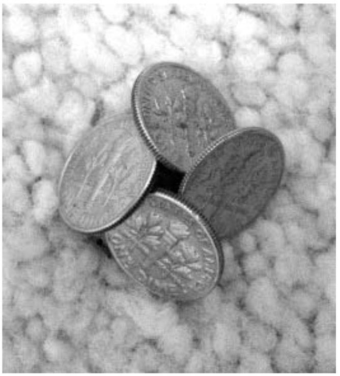
제14장 - 보는 이의 “나”에 깃든 기이함
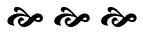
우리 머리 속의 불활성 스펀지
당신은 궁금할지도 모른다. 왜 내가 앞 장에서 묘사한 인간의 평생에 걸친 자기 표상 고리를 이상한 고리라고 부르는지 말이다. 당신은 결정을 내리고, 행동을 취하고, 세상에 영향을 미치고, 피드백을 받고, 그것을 자아에 통합하며, 그러면 업데이트된 ‘당신’이 더 많은 결정을 내리고, 이런 식으로 돌고 돈다. 그것이 고리임에는 의심의 여지가 없다. 하지만 내가 이상한 고리다움의 필수 조건(sine qua non)이라고 말해 온 역설적 성질은 어디에 있는가? 왜 이것은 그저 평범한 피드백 고리가 아닌가? 그러한 고리가 쿠르트 괴델이 『수학 원리』 내부에 숨어 있는 것을 뜻밖에 발견한 전형적인 이상한 고리와 무슨 공통점이 있는가?
우선 뇌는 선험적으로(a priori) 볼 때, 자기 지시가 엄격히 추방되었던 극도로 금욕적인 논문 『수학 원리』만큼이나 자기 지시와 그 풍부하고 반직관적인 결과들을 담기에는 가망 없어 보이는 기질처럼 보일 것이다. 인간의 뇌는 바위처럼 단단한 두개골 안에 꽉 끼어 있는 무생물 분자들의 크고 스펀지 같은 덩어리일 뿐이며, 그저 통나무 위의 혹처럼 불활성 상태로 앉아 있을 뿐이다. 화강암 덩어리에 숨어 있지 않은 자기 지시와 자아가 왜 하필 그런 기이한 매질 속에 숨어 있어야 하는가? 뇌 속의 “나”-다움은 어디에 있는가?
『수학 원리』라는 돌 요새 내부에서 “나는 증명 불가능하다” 같은 괴델 문장들의 불법적인 “나”가 스며들 수 있도록 아주 기이한 무언가가 일어나야만 했던 것과 똑같이, 무생물 분자들로 가득 찬 뼈로 된 두개골 내부에서도 영혼, ‘켜진 불빛’, 고유한 인간 정체성, 즉 “나”를 만들어내려면 아주 기이한 무언가가 일어나야만 한다. 그리고 명심하라. “나”는 ‘올바른 재료’(즉, 특정한 ‘특별한’ 종류의 분자들) 덕분에 모든 두개골 안의 모든 뇌에서 마법처럼 불쑥 나타나는 것이 아니다. 그것은 그 매질 안에 적절한 패턴이 형성될 때만 일어난다. 그런 패턴이 없다면, 그 시스템은 겉으로 보이는 그대로일 뿐이다. 영혼도 없고, “나”도 없고, 어떤 내면의 빛도 결여된 한갓 스펀지 물질 덩어리일 뿐이다.
화학물질 뿜어내기
최초의 뇌가 생겨났을 때, 그것은 변기의 부구(float-ball) 장치나 벽에 걸린 온도조절장치보다도 덜 정교한 사소한 피드백 장치였다. 그리고 그 장치들과 마찬가지로, 그것은 원시 생물이 특정한 것(먹이)을 향해 다가가고 다른 것(위험)으로부터 멀어지게끔 선택적으로 작동했다. 그러나 진화적 압력은 점차 환경에 대한 뇌의 분류 작업을 더 복잡하고 다층적으로 만들었고, 결국(여기서 우리는 수백만 년, 수십억 년을 이야기하고 있다) 반응할 수 있는 범주의 레퍼토리가 너무나 풍부해져서, 그 시스템은 충분히 긴 줄에 매달린 TV 카메라처럼 어느 정도 자기 자신을 ‘되돌아 가리킬’ 수 있게 되었다. 그 최초의 희미한 자아의 빛이 의식과 “나”-다움의 싹이었지만, 여전히 거대한 미스터리가 남아 있다.
뇌가 아무리 복잡하고 정교해졌어도, 그것은 바닥에서는 언제나 서로에게 ‘화학물질을 뿜어대는’(선구적인 로봇공학자이자 도발적인 작가 한스 모라벡의 표현을 빌리자면) 세포들의 집합일 뿐이었다. 마치 한 탱크에서 다른 탱크로 액체가 끝없이 펌프질되는 거대한 정유 공장과도 같았다. 액체를 펌프질하는 시스템이 어떻게 물리적 대상과 그 운동보다 의미가 무한히 더 중요해 보이는 뒤집힌 인과율의 중심지를 품을 수 있단 말인가? 기쁨, 슬픔, 인상주의 회화에 대한 사랑, 그리고 장난기 어린 유머 감각이 어떻게 그토록 차갑고 무생물적인 시스템에 깃들 수 있단 말인가? 차라리 돌 요새, 변기 물통, 화장지 두루마리, 텔레비전, 온도조절장치, 열추적 미사일, 맥주 캔 더미, 또는 정유 공장 안에서 “나”를 찾는 편이 나을 것이다.
어떤 철학자들은 우리의 내면의 빛, 우리의 “나”, 우리의 인간성, 우리의 영혼이 기질 자체의 본성—즉, 탄소의 유기화학—에서 우러나온다고 본다. 나는 의식이라는 장신구를 매달기에 그것이 가장 기이한 나무라고 생각한다. 기본적으로 이것은 아무것도 설명하지 못하는 신비주의적 되뇌임일 뿐이다. 왜 탄소의 화학적 성질이 다른 어떤 물질과도 전혀 다른 마법 같은 성질을 지녀야 하는가? 그리고 그 마법 같은 성질이 도대체 무엇인가? 그리고 그것이 어떻게 우리를 의식 있는 존재로 만드는가? 필요한 것이 오직 유기화학뿐이라면, 왜 무릎뼈나 신장이 아니라 오직 뇌만 의식이 있는가? 왜 우리의 탄소 기반 사촌인 모기들은 우리만큼 의식이 있지 않은가? 왜 소들은 우리만큼 의식이 있지 않은가? 여기서 조직이나 패턴이 어떤 역할도 하지 않는단 말인가? 분명히 한다. 그리고 만약 그렇다면, 왜 그것이 전체 역할을 할 수는 없단 말인가?
메시지가 아니라 매체에, 패턴이 아니라 도자기에, 이야기가 아니라 활자체에 초점을 맞춤으로써, 탄소의 화학적 성질에 담긴 말로 표현할 수 없는 무언가가 의식에 필수불가결하다고 주장하는 철학자들은 요점을 놓치고 있다. 대니얼 데넷이 존 설의 지루한 ‘올바른 재료’ 되뇌임에 맞서 재치 있게 응수했듯이, “중요한 건 고기가 아니라 움직임이다(It ain’t the meat, it’s the motion).” (이것은 1951년 로이스 맨과 헨리 글로버가 쓰고 훗날 가수 마리아 멀다우어가 유명하게 만든, 전혀 미묘하지 않고 노골적으로 에로틱한 노래 제목에 대한 다소 미묘한 오마주였다.) 그리고 내 생각에, 뇌라는 고기 안에서 일어나는 마법은 그 안에 깃든 움직임을 바라보는 법을 알 때만 비로소 이해가 된다.
기호들의 장엄한 춤
화학물질을 뿜어대는 데 초점을 맞추는 대신, 그 저수준을 저 멀리 뒤에 남겨두고 위쪽으로 수준 이동을 하면 뇌는 근본적으로 다른 모습을 띤다. 우리가 그러한 상향 도약을 쉽게 말할 수 있도록 해 주기 위해 나는 카레니움의 우화를 지어냈으므로, 그 핵심 이미지를 다시 한번 상기시켜 주겠다. 미친 듯이 질주하는 심들의 수준에서 줌 아웃하여, 그 대신 심들의 국소적으로 혼돈스러운 소용돌이가 그저 안개 낀 흐릿함으로 변하는 가속된 시간 척도에서 시스템을 바라보면, 이전에는 전혀 보이지 않던 다른 실체들이 초점 안으로 들어오기 시작한다. 그리고 그 수준에서, 놀랍게도(mirabile dictu), 의미가 창발한다.
의미로 가득 찬 심볼(simmball)들은 이제 ‘심’이라 불리는 작은 자기 구슬들이 서로 상호작용하며 이루어졌다는 사실은 추호도 의심하지 않는 흐릿한 수프 속에서 장엄한 춤을 추고 있는 것으로 보인다. 그리고 내가 심볼들이 ‘의미로 가득 차 있다’고 말하는 이유는, 물론 그들이 ‘의미’라고 불리는 어떤 신비로운 끈적끈적한 의미론적 즙을 흘리고 있어서가 아니라(고기-집착 철학자들이라면 그 아이디어를 좋아할지도 모르지만), 그들의 장엄한 춤이 주변 세계의 사건들과 깊이 보조를 맞추고(in synch) 있기 때문이다.
심볼들이 외부 세계와 보조를 맞추는 방식은 영화 빵집 주인의 아내(La Femme du boulanger)에서 가출한 고양이 퐁포네트의 귀환이 가출한 아내 오렐리의 귀환과 보조를 맞춘 것과 같다. ‘P’ 상황과 ‘A’ 상황 사이에 다면적인 정렬이 있었던 것이다. 하지만 영화의 클라이맥스에서 일어난 이 상황들의 정렬은 각본가가 꾸며낸 농담일 뿐이었다. 빵집 주인의 아내를 보는 관객 중 어느 누구도 고양이의 일탈이 몇 달 동안 계속해서 아내의 일탈과 나란히 갈(혹은 그 반대가 될) 것이라고는 잠시도 생각하지 않는다. 우리는 그것이 그저 우연의 일치였음을 알며, 바로 그 때문에 그것을 그토록 유머러스하게 여기는 것이다.
이와 대조적으로, 카레니움의 춤추는 심볼들은 계속해서 세계를 추적할 것이고, 세계와 위상을 같이할 것이며, 세계와 정렬된 상태를 유지할 것이다. 그것이(작가의 명령에 의해!) 카레니움의 바로 그 본성이다. 괴델의 구성에서 프림 수들이 PM의 증명 가능한 공식들과 체계적으로 위상을 같이하는 것과 똑같이, 심볼들은 세계에서 일어나는 일들과 체계적으로 위상을 같이한다. 그것이 바로 심볼들이 의미를 가진다고 말할 수 있는 유일한 이유다. 의미는 그 기질이 무엇이든—팅커토이, 화장지, 맥주 캔, 심, 자연수, 혹은 뉴런이든—신뢰할 수 있고 안정적인 정렬의 자동적이고 피할 수 없는 결과물이다. 이것이 제11장의 교훈이었다.
우리 자신의 뇌도 카레니움과 다를 바 없다. 다만 물론 카레니움은 내 작은 공상일 뿐인 반면 인간의 뇌는 그렇지 않다는 점만 빼면 말이다. 우리 뇌 속의 기호들은 실제로 그토록 잘하는 그 마법을 부리며, 신경 사건들의 전기화학적 수프 속에서 그것을 해낸다. 하지만 기이한 점은, 우리 뇌가 최초의 원시 뇌에서 진화하는 데 걸린 유구한 세월 동안 의미들이 거의 눈에 띄지 않게 아주 조용히 이야기 속으로 스며들었다는 것이다. 누군가가 수백만 년 전에 미리, 추상적 범주를 표상하는 고수준의 의미 있는 구조들이 언젠가 크고 멋진 뇌 속에 살게 될 것이라는 거대한 계획을 세웠던 것이 아니다. 오히려 그러한 패턴들(이 책의 ‘기호들’)은 점점 더 큰 뇌를 갖는 것이 지독히도 치열한 세상에서 생명체가 더 잘 살아남는 데 엄청나게 효과적이었다는 사실의 계획되지 않은 부산물로 따라왔을 뿐이다.
버트런드 러셀이 자신의 초강력 요새인 『수학 원리』의 한복판에서 고수준의 괴델적 의미가 뜻밖에 출현한 것에 허를 찔렸듯이, 뇌를 한스 모라벡의 화학물질 뿜어내기 외의 다른 수준에서 바라볼 생각을 한 번도 해보지 못한 사람이라면 기호들의 출현에 몹시 놀랄 것이다. 괴델이 PM 문자열의 전혀 다른 수준으로 주의를 돌리는 것의 거대한 잠재력을 보았듯이, 나 역시 기호, 개념, 의미, 욕망, 그리고 궁극적으로 우리 자아를 찾기 위해서는 뇌 활동의 훨씬 더 높은 수준으로 주의를 돌려야 한다고 제안하고 있다(물론 내가 처음은 결코 아니지만).
재미있는 점은 우리 인간 모두가 그 문제에 대해 어떤 선택권도 가져본 적이 없이 이미 그 수준에 초점을 맞추고 있다는 것이다. 우리는 자동적으로 우리 뇌의 활동을 전적으로 상징적인 것으로 본다. 나는 여기에 무언가 경이롭게 기이하고 뒤집힌 구석이 있다고 생각하며, 이제 우화를 통해 그 이유를 보여주고자 한다.
알프베르트가 아우스트라니우스를 방문하다
당신이 원한다면, 유일한 주민이 ‘클뤼드게로트(Klüdgerot)’라 불리는 부족인 작고 외로운 행성 아우스트라니우스(Austranius)를 상상해 보라. 태곳적부터 클뤼드게로트족은 극도로 긴 PM 문자열들이 우거진 울창한 정글에서 기이한 삶을 살아왔다. 그중 일부는 그들이 안전하게 섭취할 수 있고(문자열은 그들의 유일한 영양 공급원이다), 다른 일부는 치명적인 독에 중독되지 않으려면 절대 섭취해서는 안 된다. 다행히도 수완 좋은 클뤼드게로트족은 이 상반된 종류의 PM 문자열들을 구별하는 방법을 찾아냈다. 어떤 문자열들은 시각적으로 검사해 보면 감미로운 클뤼드게로트어로 “나는 먹을 수 있다”라고 말하는 메시지를 형성하는 반면, 다른 문자열들은 클뤼드게로트어로 “나는 먹을 수 없다”라고 말하는 메시지를 형성하기 때문이다. 그리고 아주 경이롭게도, ‘괴드(Göd)’의 자비로운 은총에 의해, 자신의 식용 가능성을 선언하는 모든 PM 문자열은 먹을 수 있는 것으로 밝혀졌고, 자신의 식용 불가능성을 선언하는 모든 PM 문자열은 먹을 수 없는 것으로 밝혀졌다. 그리하여 클뤼드게로트족은 그들의 풍요로운 행성에서 수많은 외르(öör) 동안 번성해 왔다.
아우스트라니우스의 스푀(Spöö) 달 어느 운명적인 되(döö)에, 이상하게 생긴 주황색 우주선 한 척이 먼 행성 우키아(Ukia)에서 급강하하여 아우스트라니우스의 북극(North Pöö)에 정확히 착륙한다. 그 안에서 “나는 알프베르트(Alfbert)다. 보라.”라는 말로 자신을 알리는 거대한 흰 머리의 외계인이 걸어 나온다. 이 몇 마디를 내뱉기가 무섭게 외계인은 아우스트라니우스 정글 속으로 성큼성큼 걸어 들어가, 스푀 달의 나머지 기간뿐만 아니라 블뢰(Blöö) 달 전체를 그곳에서 보낸 뒤, 약간 엉망이 되긴 했으나 별다른 탈 없이 우주선으로 터덜터덜 돌아온다. 다음 날 이른 아침, 알프베르트는 엄숙하게 아우스트라니우스의 모든 클뤼드게로트족 회의를 소집한다. 그들이 모두 모이자마자 알프베르트가 말하기 시작한다.
“좋은 되요, 덕망 있는 클뤼드게로트족 여러분,” 알프베르트가 낭랑하게 말한다. “내가 아우스트라니우스를 뒤흔들 과학적 발견을 했음을 여러분께 보고하게 되어 영광입니다.” 클뤼드게로트족은 모두 정중하지만 회의적인 침묵 속에 앉아 있다. “이 행성에서 자라는 각 PM 문자열은,” 알프베르트가 계속한다. “단지 길고 예쁜 덩굴일 뿐만 아니라, 놀랍게도 읽고 이해할 수 있는 메시지이기도 하다는 것이 밝혀졌습니다. 나를 의심하지 마십시오!” 이 새로울 것 없는 말을 듣고 많은 클뤼드게로트족이 일제히 하품을 하고, 한 목소리가 “어디 한번 말해 보쇼, 흰 머리 양반!” 하고 외치자 여기저기서 킥킥거리는 소리가 터져 나온다. 고무된 알프베르트는 정말로 그렇게 한다. “나는 모든 PM 문자열이 나의 아름다운 모국어인 알프베르트어로, ‘자연수(whole numbers)’라고 알려진 어떤 경이로운 실체들에 관한 주장을 하고 있다는 환상적인 발견을 했습니다. 여러분 중 많은 분들이 내가 이른바 이 ‘자연수’가 무엇인지 여러분이 이해할 수 있는 아주 쉬운 용어로 설명해 주기를 안달이 나 있을 것임이 틀림없습니다.”
이 용어의 소리를 듣자마자 모인 군중 사이에서 커다란 술렁임이 일어난다. 알프베르트는 몰랐지만, 클뤼드게로트족은 수많은 세대 동안 ‘자연수’라 불리는 실체들을 이해할 수 없을 만큼 추상적인 것으로 여겨 왔다. 실로 자연수는 오래전에 만장일치로 너무나 혐오스러운 것으로 선언되어, 그 모든 이름과 함께 행성에서 영원히 추방되었던 것이다. 분명 알프베르트의 메시지는 여기서 환영받지 못한다. 그것은 물론 틀렸을 뿐만 아니라(말할 필요도 없다), 전적으로 터무니없고, 게다가 역겹기까지 하다.
하지만 흰 머리의 알프베르트는 자신이 불러일으킨 분노를 태평스럽게도 전혀 눈치채지 못한 채, 군중이 점점 더 격앙되어 술렁이는 가운데 계속 말을 이어간다. “그렇습니다, 아우스트라니우스 주민 여러분, 믿기 어려울 만큼 그럴듯하지 않게 들리겠지만, 각 PM 문자열 안에는 의미가 깃들어 있습니다. 필요한 것은 그저 적절한 방식으로 문자열을 바라보는 법을 아는 것뿐입니다. 적절한 사상(mapping)을 사용하면, 하나(one)는…”
그 순간 일제히 대혼란이 터져 나온다. 알프베르트가 방금 모든 자연수 중 가장 두려운 수의 오랫동안 추방되었던 이름인 그 경멸받는 단어 “하나”를 내뱉지 않았는가? “외계인을 처단하라! 흰 머리를 쳐라!” 격분한 군중이 비명을 지르고, 잠시 후 클뤼드게로트족의 밀집 대열이 연설하던 외계인을 붙잡는다. 하지만 끌려가는 와중에도 거드름 피우는 알프베르트는 클뤼드게로트족에게 자신은 그저 그들을 계몽하려 애쓰고 있을 뿐이며, 그들이 알지 못하는 언어로 문자열을 읽음으로써 그들에게는 숨겨진 중대한 사실들을 지각할 수 있다고, 그리고… 하지만 성난 군중의 고함 소리가 알프베르트의 거창한 말들을 삼켜 버린다.
뻔뻔한 외계인이 끔찍한 운명을 맞이할 준비가 진행되는 동안, 갑자기 클뤼드게로트족 사이에 소동이 일어난다. 그들은 오래되고 숭고한 클뤼드게로트족의 전통인 ‘끔찍한 운명 집행 전 연회(Pre-dishing-out-of-dire-fate Banquet)’를 까맣게 잊고 있었던 것이다! 어떤 클뤼드게로트족도 전에 발을 들여놓은 적이 없는 신성한 보호구역인 뵈브(Wööw) 행성 원리 공원에서 가장 달콤한 PM 문자열을 따 오도록 팀이 파견된다. 그 팀이 각각 선명하게 “나는 먹을 수 있다”라고 적힌 즙이 많은 뵈브산 문자열들을 훌륭하게 수확해 돌아오자, 우레와 같은 박수갈채가 터져 나온다. 클뤼드게로트족이 괴드에게 감사를 표한 뒤, 전통적인 끔찍한 운명 집행 전 연회가 시작되고, 마침내 알프베르트에게도 자신이 곧 끔찍한 운명을 맞이하리라는 사실이 서서히 다가오기 시작한다. 이 불길한 사실이 자리를 잡자, 그것은 흰 머리가 빙글빙글 돌다가 아찔해지는 것을 느끼고, 그러고는…
순진한 클뤼드게로트족을 구하려고 이상주의적으로 애쓰며, 언제나 관대한 알프베르트가 외친다. “부디 들으시오, 오 친구들이여! 여러분이 수확한 PM 문자열은 위험천만합니다! 어리석은 미신이 여러분을 속여 그것들이 영양가가 있다고 생각하게 만들었지만, 진실은 다릅니다. 메시지로 해독해 보면, 이 문자열들은 모두 자연수에 대해 너무나 비통할 정도로 거짓된 진술을 하고 있어서 아무도—다시 말하지만, 아무도!—그것들을 삼킬 수 없을 것입니다.” 하지만 경고의 말은 너무 늦었다. 뵈브에서 온 PM 문자열들은 이미 완고하게 미신적인 클뤼드게로트족에 의해 통째로 삼켜지고 있었기 때문이다.
그리고 머지않아 멀리서나 가까이서나 끔찍한 신음 소리가 울려 퍼진다. 민감한 알프베르트는 그 끔찍한 광경에서 시선을 돌린다. 마침내 감히 눈을 들어 바라보았을 때, 그것은 처참한 광경을 목격한다. 그 외눈이 닿는 사방 천지에, 불과 몇 순간 전만 해도 실컷 흥청망청 먹고 마시던 클뤼드게로트족의 생명 없는 껍데기들이 널브러져 있다. “내 말을 들었더라면 좋았을 것을!” 상냥한 알프베르트가 당혹감에 커다란 흰 머리를 긁적이며 슬프게 중얼거린다. 이 말과 함께 그것은 북극에 있는 이상하게 생긴 주황색 우주선으로 터덜터덜 돌아가, 클뤼드게로트족의 시체가 널린 황량한 아우스트라니우스 풍경을 마지막으로 한 번 훑어본 뒤, 마침내 우주선의 인조가죽 계기판에 있는 작고 둥근 ‘이륙’ 버튼을 눌러 미지의 목적지를 향해 출발한다.
이 시점에서, 앞서 연회 참석자들이 의식적인 흥청거림을 시작했을 때 공포에 질려 기절했던 알프베르트가 의식을 되찾는다. 처음에는 사방에서 메아리치는 흥분의 함성이 들리고, 그러고 나서 감히 눈을 들어 바라보았을 때 그것은 놀라운 광경을 목격한다. 그 외눈이 닿는 사방 천지에, 수많은 클뤼드게로트족이 알프베르트의 흰 머리 위쪽 어딘가에서 움직이는 무언가를 명백한 기쁨에 찬 눈빛으로 쳐다보고 있다. 그것이 도대체 무엇일지 보려고 고개를 돌린 순간, 알프베르트는 기이하고 날카로운 바스락거리는 소리를 내며 자기 쪽으로 빠르게 곤두박질쳐 내려오는 얇은 형체를 아주 잠깐 스치듯 목격한다—
간략한 해설
앰브로스 비어스의 걸작 단편소설 「올빼미 개울 다리에서 생긴 일」의 줄거리를 이토록 서툴게 모방한 것에 대해 고인께 사과드린다. 하지만 내 의도는 좋았다. 내 다소 경박한 우화의 존재 이유(raison d’être)는 앨프리드 노스 화이트헤드와 버트런드 러셀(합쳐서 가명 ‘알프베르트’)과 쿠르트 괴델(가명 ‘클뤼드게로트’)이 주연을 맡은 고전적 희비극을 뒤집어 놓는 것이다. PM 문자열에서 어떤 정수론적 의미도 상상할 수 없지만 그럼에도 문자열을 의미 있는 메시지로 보는—다만 오직 고수준의 괴델적 의미만 보는—기이한 생명체들을 상정함으로써 말이다. 이는 순진하게 기대할 수 있는 바와 정반대다. PM 기호법은 수와 그 성질에 관한 진술을 적기 위해 명시적으로 발명된 것이지, 자기 자신에 관한 괴델적 진술을 적기 위해 발명된 것이 결코 아니기 때문이다!
이 우화가 불러일으킬 수 있는 혼란을 막기 위해 몇 가지 언급을 해야겠다. 첫째, 자기 자신의 성질에 대해 말하는 어떤 PM 문자열(물론 괴델의 문자열 KG가 원형이다)의 길이도 내가 우화의 첫머리에서 쓴 것처럼 단순히 ‘엄청난’ 정도가 아니라, 상상할 수 없을 정도다. 순수한 PM 기호법으로 적는다면 괴델의 문자열이 몇 개의 기호로 이루어질지 계산해 보려 한 적이 없는데, 계산을 어떻게 시작해야 할지조차 거의 모르겠기 때문이다. 나는 그 기호 수가 보통 ‘수학적 증명에 등장한 가장 큰 수’로 인용되는 ‘그레이엄의 수(Graham’s constant)’를 거뜬히 넘을지도 모른다고 의심하며, 그렇지 않더라도 분명 그와 막상막하일 것이다. 따라서 아우스트라니우스에서 자라는 문자열을 누군가가 저수준에서 자연수에 관한 진술로 읽든, 고수준에서 자기 자신의 식용 가능성에 관한 진술로 읽든, 직접 읽는다는 생각은 완전한 난센스다. (물론 먼 행성의 정글에서 수학 기호 문자열이 자란다는 생각이나 그것을 먹을 수 있다는 생각도 마찬가지지만, 그것은 우화적 허용이다.)
괴델은 46개의 점층적 단계를 거쳐 자신의 진술 KG를 만들어냈는데, 그 과정에서 그는 수에 관한 특정한 개념들이 원칙적으로 PM 기호법으로 적힐 수 있음을 보인다. 그러한 전형적인 개념 중 하나가 “n의 소인수분해에서 k번째 소수의 지수”다. 이 개념은 ‘지수’, ‘소수’, ‘k번째 소수’, ‘소인수분해’ 등 앞선 단계에서 정의된 선행 개념들에 의존한다(이 중 어느 것도 PM의 ‘내장 개념’으로 제공되지 않는다). 괴델은 그러한 개념들에 대한 PM 표현을 명시적으로 적어내지 않는다. 그렇게 하려면 도저히 불가능할 만큼 긴 PM 기호 사슬을 적어야 하기 때문이다. 그 대신 각 개별 개념에는 이름, 즉 일종의 약어가 주어지며, 이는 필요하다면 이론적으로 순수한 PM 기호법으로 확장될 수 있고, 그다음 단계들에서 사용된다. 거듭거듭 괴델은 이미 정의된 약어들을 이용해 더 많은 약어들을 정의하며, 점점 더 복잡성과 추상성이 높아지는 탑을 신중하게 쌓아 올려 그 꼭대기인 프림 수의 개념에 도달한다.
산스크리트어로 비누 다이제스트 선반 설명하기
이것이 조금 난해하고 멀게 들릴 수 있으니 유비를 하나 들어보겠다. 고대 인도 언어인 산스크리트어로 현대 용어인 “비누 다이제스트 선반(soap digest rack)”의 의미를 명확하게 설명하는 도전을 상상해 보라. 핵심 제약은 전성기 시절의 순수한 산스크리트어만 사용해야 하며, 그 언어에 단 하나의 새로운 단어도 도입할 수 없다는 것이다.
“비누 다이제스트 선반”의 의미를 상세히 전달하려면, 우선 전기와 전자기파의 개념, TV 카메라와 송신기 및 TV 수상기, TV 쇼와 광고, 세탁기와 세제 회사 간의 경쟁 개념, 수백만 명의 가정에 매일 방송되는 뻔하고 진부한 멜로드라마의 일일 에피소드라는 아이디어, 끝없이 도는 줄거리에 중독된 시청자의 이미지, 식료품점, 계산대, 잡지, 진열대 등등의 개념을 설명해야 할 것이다… ‘비누(soap)’, ‘다이제스트(digest)’, ‘선반(rack)’이라는 각 단어는 결국 자기 자신보다 수천 배나 더 긴 고대 산스크리트어 단어들의 사슬로 확장될 것이다. 현대의 진부한 사물을 가리키는 이 세 단어짜리 구절의 의미를 전달하기 위해 당신의 최종 텍스트는 수백 쪽을 채우게 될 것이다.
마찬가지로, 우리가 관습적으로 “나는 PM에서 증명 불가능하다” 같은 초압축 형태로 표현하는 괴델의 문자열 KG는 순수한 PM 기호법으로 적는다면 괴물처럼 길 것이다. 그럼에도 그 어마어마한 크기에도 불구하고 우리는 그것이 말하는 바를 정확히 이해한다. 어떻게 그것이 가능한가? 그것은 그 압축 가능성(condensability)의 결과다. KG는 PM 기호들의 무작위적인 나열이 아니라, 엄청난 양의 구조를 지닌 공식이다. 심장을 구성하는 수십억 개의 세포가 너무나 극도로 조직화되어 있어 ‘펌프’라는 단 한 마디로 요약될 수 있듯이, KG 속의 무수한 기호들도 잘 선택된 몇 개의 영어 단어로 요약될 수 있다.
산스크리트어 도전으로 돌아가서, 내가 규칙을 바꾸어 당신이 새로운 산스크리트어 단어들을 정의하고 그것들을 또 다른 새로운 산스크리트어 단어들의 정의에 사용할 수 있도록 허용했다고 상상해 보라. 그러면 ‘전기’가 정의되어 TV 카메라와 텔레비전 및 세탁기의 기술에 사용될 수 있고, ‘TV 프로그램’이 ‘비누 오페라(연속극)’의 정의에 사용될 수 있을 것이다. 만약 약어들이 이런 식으로 무제한으로 약어 위에 쌓일 수 있다면, “비누 다이제스트 선반”에 대해 책 한 권 분량의 산스크리트어 설명을 만들어내는 대신 불과 몇 쪽, 어쩌면 그보다 더 적게 필요할 가능성이 크다. 물론 이 모든 과정에서 당신은 산스크리트어를 근본적으로 바꾸어 수천 년 미래로 나아가게 했겠지만, 그것이 바로 언어가 언제나 발전하는 방식이다. 그리고 그것이 또한 인간의 마음이 작동하는 방식이기도 하다—낡은 생각들을 새로운 구조로 합성해 새로운 생각으로 만들고, 그 생각들이 다시 합성물에 사용될 수 있으며, 이렇게 끝없이 돌고 돌면서 각 언어의 토양인 기본적인 지상 이미지로부터 점점 더 멀어지는 것이다.
해설 마무리하기
내 우화에서 클뤼드게로트족과 알프베르트는 둘 다 순수한 PM 문자열—약어가 전혀 들어 있지 않은 문자열—을 읽는 능력을 갖추고 있다고 가정되었다. 어떤 수준(클뤼드게로트족이 지각하는 수준)에서 이 문자열들은 자기 자신에 대해 말하므로 괴델의 KG와 같으며, 이는 그러한 문자열들이 더 나은 표현이 없어 말하자면 (어쨌든 모든 실용적인 목적에서) 무한히 거대함을 뜻한다. 이는 그것들을 수에 관한 진술로 읽으려는 어떤 시도도 이해할 수 있는 것을 전혀 내놓지 못할 것임을 뜻하며, 따라서 묘사된 대로의 알프베르트의 능력은 전적인 불가능이다. 하지만 클뤼드게로트족의 능력 역시 마찬가지다. 그들 역시 끝없는 기호의 바다에 압도당하기 때문이다. 알프베르트나 클뤼드게로트족에게 유일한 희망은, 기호의 바다 속에서 특정 패턴들이 거듭거듭 사용됨을 알아차리고, 이 패턴들에 이름을 붙여 문자열을 더 다루기 쉬운 것으로 압축한 다음, 그 새롭고 더 짧은 수준에서 이 패턴 찾기 및 압축 과정을 수행하여, 매번 점점 더 압축해 나가다가 마침내 전체 문자열이 단 하나의 단순한 생각인 “나는 먹을 수 없다”(또는 우화 밖으로 번역하자면 “나는 증명 불가능하다”)로 무너져 내리게 하는 것이다.
버트런드 러셀은 PM의 문자열들에 대해 생각할 때 이런 종류의 수준 이동을 결코 상상하지 못했다. 그는 자연수에 관한 진술이 아무리 길거나 복잡해지더라도 “소수는 무한히 많다”거나 “피보나치 수열에는 순수 거듭제곱이 세 개뿐이다” 같은 표준적인 정수론 진술의 친숙한 풍미를 언제나 유지할 것이라는 이해할 만한 선입견에 갇혀 있었다. 어떤 진술들은 너무나 정교한 계층적 구조를 지녀서, 그들이 표현하는 정수론적 아이디어가 더 이상 수에 관한 아이디어처럼 느껴지지 않을 수도 있다는 생각은 그에게 결코 떠오르지 않았다. 제11장에서 관찰했듯이, 개는 색깔 점들의 어떤 큰 배열이 너무나 구조화되어 더 이상 단지 거대한 색깔 점들의 집합이 아니라 사람, 집, 개, 그리고 다른 많은 것들의 그림이 된다는 것을 상상하거나 이해하지 못한다. 더 높은 수준이 더 낮은 수준보다 지각적 우선권을 차지하며, 그 과정에서 둘 중 ‘더 실재적인’ 것이 된다. 더 낮은 수준은 잊히고, 뒤섞임 속에서 사라진다.
이러한 상향 수준 이동은 심오한 지각적 변화이며, 그것이 『수학 원리』의 문자열 세계처럼 낯설고 추상적인 환경에서 일어날 때는 매우 그럴듯하지 않게 들릴 수 있다. 비록 그것이 친숙한 환경(TV 화면 같은)에서 일어날 때는 자명할 정도로 명백하지만 말이다.
내 우화는 매우 그럴듯하지 않은 것으로 여겨지는 하향 수준 이동을 예증하기 위해 쓰였다. 클뤼드게로트족은 특정한 거대한 PM 문자열에서 오직 “나는 먹을 수 있다” 같은 고수준 의미만을 보며, 그 문자열 안에 어떤 저수준 의미가 함께 거주한다는 것은 상상조차 할 수 없다고 가정되었다. 『수학 원리』에 담긴 기호 문자열의 원래 의도를 아는 우리에게 이것은 설명할 수 없을 만큼 완고한 편견처럼 들리지만, 우리 자신의 본성을 이해하는 문제에 이르면 상황이 완전히 역전된다. 고수준(그리고 오직 고수준만)의 지각을 편애하는 매우 유사한 완고한 편견이 ‘인간 조건’을 관통하고 심지어 정의하기까지 하는 것으로 밝혀지기 때문이다.
고수준에 갇히다
의식적이고 자기 인식을 하며 “나”에 의해 움직이는 우리 인간에게, 우리 뇌의 뉴런 수준으로 내려가고, 내려가고, 또 내려가며, 속도를 늦추고, 늦추고, 또 늦추어서 각각의 모든 시냅스 틈새에서 분비되는 각각의 모든 화학물질을 볼 수 있는(또는 적어도 상상할 수 있는) 것은 거의 불가능하다. 그것은 뇌 활동에서 모든 상징적 성질을 즉시 앗아가는 것처럼 보일 거대한 관점의 전환일 것이다. 그 아래에는 어떤 의미도, 어떤 끈적끈적한 의미론적 즙도 남아 있지 않을 것이다—그저 생명이 없고 긴긴 하루 내내 의미 없이 뿜어져 나오는 천문학적 숫자의 무의미한 무생물 분자들만 있을 뿐이다.
전형적인 인간의 뇌는 자신의 미세한 물리적 구성 요소들과 그들의 난해하게 수학화 가능한 미시적 작동 방식에 대해 행복하게 무지한 채, 그 대신 연속극, 봄 세일, 슈퍼 스키바간자, SUV, SAT, 개자식(SOB), 산타클로스, 물보라가 튀는 스쿠버 특가, 스노클, 눈덩이, 섹스 스캔들(그리고 인간말종도 빼놓지 말자)이라는 무한히 동떨어진 수준에서 번성하면서, 자신의 본성에 대해 가능한 한 그럴듯한 이야기를 지어낸다. 그 이야기에서 주연은 대뇌 피질, 해마, 편도체, 소뇌, 혹은 그 어떤 기괴한 이름을 가진 끈적끈적한 물리적 구조가 아니라, 해부학적으로 보이지 않는 흐릿한 것인 “나”가 맡으며, ‘아이디어’, ‘생각’, ‘기억’, ‘믿음’, ‘희망’, ‘두려움’, ‘의도’, ‘욕망’, ‘사랑’, ‘증오’, ‘경쟁’, ‘질투’, ‘공감’, ‘정직’ 등으로 알려진 다른 어두컴컴한 조연들의 도움을 받는다. 그리고 이 조연들의 부드럽고 천상적이며 신경학이 없는 세계에서, 전형적인 인간의 뇌는 바로 자신의 “나”를 밀고 움직이는 자로 지각하며, 그 주연 배우가 단지 매초 수십억 번—아니, 수백만 곱하기 수십억 번—일어나는 무수한 극미한 실체들과 그들 사이의 보이지 않는 화학적 거래를 나타내는 유용한 속기법에 불과할지도 모른다는 생각은 단 한 순간도 품지 않는다.
따라서 인간 조건은 클뤼드게로트족의 조건과 깊이 유비적이다. 두 종 모두 그럼에도 자신의 존재에 중심적인 현실의 더 낮은 수준을 보거나 심지어 상상할 수조차 없다.
기이함의 첫 번째 핵심 재료
비디오 피드백 시스템에서는 화면에 나타나는 모양이 아무리 소용돌이치고 정교하며 깊이 중첩되어 있더라도 왜 결코 “나” 기호가 발달하지 않는가? 답은 단순하다. 비디오 시스템은 아무리 많은 픽셀과 색상을 가지고 있더라도 기호를 전혀 발달시키지 않기 때문이다. 비디오 시스템은 아무것도 지각하지 않기 때문이다. 비디오 고리의 순환 경로 어디에도 촉발될 기호가 없다—개념도 없고, 범주도 없으며, 의미도 없다—오디오 피드백 고리의 날카로운 굉음보다 털끝만큼도 더 낫지 않다. 비디오 피드백 시스템은 화면에 나타나는 기이한 창발적 은하 모양에 무언가를 일어나게 하는 어떤 인과력도 부여하지 않는다. 실로 그것은 아무것도 아무것에 부여하지 않는데, 모든 기호가 결여되어 있어 비디오 시스템은 결코 아무것에 대해서도 생각할 수 없고 생각하지도 않기 때문이다!
그렇다면 비디오 피드백 시스템이 아니라 뇌에서 이상한 고리가 나타나게 만드는 것은 하나의 능력—즉 생각하는 능력—이며, 이는 사실상 충분히 큰 촉발 가능한 기호 레퍼토리의 소유를 나타내는 한 음절짜리 단어다. 자연수의 풍부함이 PM에 무한한 복잡성의 현상을 표상하고 그리하여 괴델의 구성을 통해 뒤로 꼬여 자기 자신을 집어삼키는 힘을 주었던 것처럼, 우리의 확장 가능한 기호 레퍼토리는 우리 뇌에 무한한 복잡성의 현상을 표상하고 그리하여 이상한 고리를 통해 뒤로 꼬여 자기 자신을 집어삼키는 힘을 준다.
기이함의 두 번째 핵심 재료
하지만 이 모든 것에는 이면, 즉 인간 뇌 속의 고리가 ‘이상하다’는 자격을 얻게 하고 “나”가 마치 아무것도 없는 곳에서 튀어나온 것처럼 보이게 만드는 두 번째 핵심 재료가 있다. 이 이면은 아이러니하게도 하나의 무능력—즉, 우리 기호들의 수준 아래를 들여다보지 못하는 우리의 클뤼드게로트적 무능력이다. 그것은 우리 사고의 기저에 깔린 모든 느껴지지 않는 부글거림과 끓어오름, 즉 미시적 물질의 끊임없고 광란적인 소용돌이와 요동을 어떤 식으로든 보거나 느끼거나 감지하지 못하는 우리의 무능력이다. 작은 것들의 세계에 대한 우리의 이 선천적인 맹목은 우리로 하여금 한편의 목표가 결여된 공과 막대와 소리와 빛의 물질세계와, 다른 한편의 근본적으로 다른 종류의 인과율이 지배하는 것처럼 보이는 목표가 스며든 희망과 믿음과 기쁨과 두려움의 추상 세계 사이에 깊은 단절이 있다고 환각하게 만든다.
기호를 소유한 우리 인간이 비디오 피드백 시스템을 볼 때, 우리는 자연스럽게 화면의 눈길을 끄는 모양에 주의를 기울이고 ‘나선 회랑’이나 ‘은하’ 같은 공상적인 꼬리표를 붙이고 싶은 유혹을 받지만, 그럼에도 우리는 궁극적으로 그것들이 픽셀 외에는 아무것도 아니며 우리 눈앞에 나타나는 어떤 패턴이든 오직 픽셀의 국소적 논리 덕분에 그렇게 된다는 것을 안다. 이 단순하고 명확한 깨달음은 그 멋진 프랙탈 게슈탈트에서 그 자체의 어떤 겉보기 생명이나 자율성도 벗겨낸다. 우리는 화면의 소용돌이치는 모양에 욕망이나 희망, 하물며 의식을 부여하고 싶은 유혹을 받지 않는다—하늘의 솜털 같은 구름을 화가의 옆모습이나 순교자의 투석형 묘사로 지각하고 싶은 유혹을 받지 않는 것과 마찬가지로 말이다.
하지만 우리 자신을 지각하는 문제에 이르면, 우리는 다른 이야기를 한다. 우리가 비디오 피드백에 대해 말할 때보다 우리 자신에 대해 말할 때 사물은 훨씬 더 흐릿해지는데, 우리 뇌 내부에서 픽셀과 그 국소적 논리에 해당하는 어떤 것에도 우리가 직접 접근할 수 없기 때문이다. 우리 뇌가 뉴런들의 조밀한 네트워크라는 것을 지적으로 아는 것은 우리가 그 수준에서 우리 뇌에 친숙해지게 만들지 못한다. 프랑스 시가 로마 알파벳의 글자들로 만들어졌다는 것을 아는 것이 우리를 프랑스 시의 전문가로 만들지 못하는 것과 마찬가지다. 우리는 우리 마음을 움직이게 만드는 미시 기계장치에 선천적으로 초점을 맞출 수 없는 생명체이며, 불행히도 동네 약국에 어슬렁어슬렁 걸어가서 그 결함을 고칠 값싼 안경을 사 올 수도 없다.
일반인들과 달리 신경과학자들은 뇌의 저수준 하드웨어에 너무나 친숙해서 의식과 자유의지 같은 신비들을 어떻게 생각해야 할지 정확히 이해하게 되었을 거라고 짐작할 수도 있다. 하지만 종종 정반대인 것으로 드러난다. 많은 신경과학자들이 뇌의 저수준 측면에 대해 지닌 큰 친숙함은 오히려 그들로 하여금 의식과 자유의지가 도대체 물리적 용어로 설명될 수 있을지 회의적이게 만든다. 마음과 물질 사이의 건널 수 없는 심연으로 보이는 것에 너무나 당혹한 나머지, 그들은 의식과 자아가 어떻게 물리적 과정에서 나올 수 있는지 보려는 모든 노력을 포기하고, 대신 수건을 던지며 이원론자가 되어 버린다. 과학자들이 이런 식으로 항복하는 것을 보는 것은 안타까운 일이지만, 너무나 자주 일어난다. 이야기의 교훈은 전문 신경과학자가 되는 것이 결코 뇌를 깊이 이해하는 것과 동의어가 아니라는 것이다—전문 물리학자가 되는 것이 허리케인을 깊이 이해하는 것과 동의어가 아닌 것과 마찬가지로 말이다. 실로 때로는 상세한 지식의 더미 속에 파묻히는 것이야말로 깊은 이해를 가로막는 바로 그 장애물이다.
우리 두개골 내부의 특정 수준 아래를 들여다보지 못하는 우리의 선천적인 인간적 무능력은, TV 화면 위의 소용돌이치는 은하에 해당하는 우리의 내면적 유비물—즉 “나”-다움의 거대한 소용돌이치는 은하—이 (비디오 피드백 은하 같은) 더 낮은 수준에서 나오는 단순한 수동적 부수현상이 아니라 부인할 수 없는 인과율의 중심지처럼 보이게 만든다. 우리는 우리 마음속의 그 ‘구슬’에서 지각되는 단단한 구형(球形)에 너무나 속아 넘어가서, 그것에 우리가 아는 그 어떤 것만큼이나 큰 실재성을 부여한다. 그리고 인간 자기 지각의 피드백 고리 속에서 수년, 수십 년에 걸쳐 필연적으로 일어나는 ‘나’-기호의 고착화 때문에, 인과율은 뒤집히고 “나”가 운전석에 앉아 있는 것처럼 보인다.
요약하자면, 하나는 능력이고 다른 하나는 무능력인 이 두 재료의 결합이 자아의 이상한 고리를 낳는다. 이는 우리 인간 모두가, 마지막 한 사람까지, 좋든 싫든 빠져드는 덫이다. 비록 그것이 어디에도 반직관적인 유형의 인과율이 상정되지 않는 소박한 변기의 부구 장치나 오디오 또는 비디오 피드백 고리처럼 순진하게 시작하지만, 인간의 자기 지각은 필연적으로 세상에 뒤집힌 인과율을 행사하는 창발적 실체를 상정하는 것으로 끝나며, 이는 이 믿음의 강렬한 강화와 최종적이고 무적이며 불변하는 고착화로 이어진다. 최종 결과는 종종 어떤 대안적 관점의 가능성이라도 격렬하게 부인하는 것이다.
스페리 다시 보기
나는 방금 우리 모두가 이 ‘덫’에 빠진다고 말했지만, 나는 실제로 사물을 그렇게 부정적으로 보지 않는다. 그러한 ‘덫’은 적당히 걸러 듣는다면 해롭지 않다. 오히려 그것은 우리를 인간으로 만들어 주는 것이기에 기뻐하고 소중히 여겨야 할 무언가다. 다시 한번 로저 스페리의 유창한 말을 인용하도록 허락해 달라.
여기서 제안된 뇌 모델에서, 생각이나 이상의 인과적 효력은 분자, 세포, 또는 신경 충동의 그것만큼이나 실재적이 된다. 생각은 생각을 낳고 새로운 생각의 진화를 돕는다. 그것들은 같은 뇌 안에서, 이웃한 뇌에서, 그리고 전 지구적 소통 덕분에 멀리 떨어진 낯선 뇌에서 서로 및 다른 정신적 힘들과 상호작용한다. 그리고 그것들은 또한 외부 환경과 상호작용하여, 살아 있는 세포의 출현을 포함해 진화 무대에 이제껏 등장한 그 어떤 것도 훨씬 뛰어넘는 폭발적인 진화의 진보를 전체적으로(in toto) 만들어낸다.
따지고 보면, 스페리가 여기서 한 일은 그저 위험을 무릅쓰고 진지한 과학 출판물에서, 거리의 평범한 사람이 품고 있는 그저 그렇고 평범하고 상식적인 믿음—즉 우리가 “나”라고 부르는 것에 진정한 실재성(즉, 인과적 효력)이 있다는 믿음—을 감히 단언한 것뿐이다. 과학계에서 그러한 단언은 데카르트적 이원론의 냄새가 풀풀 풍기는 것처럼 들리기 때문에(이 구절을 읽을 때면 엘랑 비탈(élan vital), ‘생명력’, ‘벌집의 영혼’, ‘엔텔레키’, ‘홀론’ 같은 멋지게 신비로운 느낌의 용어들이 가끔 내 머릿속에 떠오른다) 회의적인 시선을 받을 큰 위험을 안고 있다.
하지만 로저 스페리는 자신이 어떤 종류의 이원론이나 신비주의도 받아들이고 있지 않다는 것을 아주 잘 알고 있었으며, 따라서 과감히 뛰어들어 그 단언을 할 용기가 있었다. 그의 입장은 미묘한 균형 잡기이며, 그 통찰력은 언젠가 인정받고 찬사받게 될 것이라 나는 확신한다. 그리고 그것은 형식 수학 체계 안의 고수준적이고 창발적이며 자기 지시적인 의미들이 어떻게 그 체계의 경직되고 얼어붙은 저수준 추론 규칙들의 인과적 효력만큼이나 실재적인 인과적 효력을 가질 수 있는지 입증한 쿠르트 괴델의 미묘한 균형 잡기와 유비적인 것으로 보일 것이다.
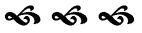
# 제15장 - 얽힘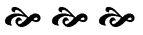
한 뇌 속의 여러 이상한 고리
두 장 앞에서 나는 인간의 두개골마다 하나의 이상한 고리가 있으며, 바로 이 고리가 우리의 ’나(I)’를 구성한다고 선언했다. 하지만 그때도 말했듯이 그것은 그저 거친 첫 시도에 불과했다. 사실 그것은 엄청난 단순화다. 우리는 모두 머릿속에서 수백 명의 다른 인간을 매우 다양한 수준의 세부 사항과 충실도로 지각하고 표상하며, 그 모든 인간의 가장 중요한 측면은 바로 그들 자신의 자아 감각이기 때문에, 우리는 필연적으로 머릿속에 수많은 다른 이상한 고리들을 비추고 품게 된다. 그렇다면 인간의 머리 하나가 다수의 ’나’들이 모이는 장소라는 말은 정확히 무슨 뜻일까?
글쎄, 나도 정확히 무슨 뜻인지는 모른다. 알았으면 좋겠다! 만약 내가 그것을 안다면, 세계 최고의 철학자와 심리학자를 하나로 합친 존재가 되었을 것이다. 그런 높은 경지 아래에서 내가 할 수 있는 최선의 추측을 해보자면, 그것은 우리가 자신의 자아라는 이상한 고리를 엄청나게 축소한 버전을 만들어 다른 사람들을 가리키는 심볼의 핵심에 심어 두고, 처음에는 조악했던 그 고리 구조가 시간이 지나면서 변하고 자라나도록 둔다는 뜻이다. 우리가 가장 잘 아는 사람들—배우자, 부모와 형제자매, 자녀, 가장 친한 친구들—의 경우, 이 각각의 고리는 세월이 흐르며 수천 가지의 고유한 요소로 장식된 매우 풍부한 구조로 자라나고, 씨앗 역할을 했던 단순한 ‘기본형(vanilla)’ 이상한 고리로부터 상당한 자율성을 얻게 된다.
내용 없는 피드백 고리
이 ‘기본형’ 이상한 고리라는 아이디어는 오래된 비유인 오디오 피드백 고리를 통해 더 잘 이해할 수 있다. 마이크와 스피커가 서로 연결되어 있어서 아주 작은 소음이라도 고리를 따라 빠르게 순환하며 한 바퀴 돌 때마다 점점 커져 결국 귀를 찢는 듯한 굉음이 된다고 가정해 보자. 그런데 처음에 방 안이 쥐 죽은 듯이 조용하다면 어떻게 될까? 방은 계속 쥐 죽은 듯이 조용할 뿐이다. 고리는 아주 잘 작동하고 있지만, 입력받는 소음이 0이고 출력하는 소음도 0이다. 0에 무엇을 곱해도 여전히 0이기 때문이다. 피드백 고리에 아무런 신호도 들어가지 않으면, 그 고리는 눈에 띄는 효과를 내지 못한다. 아예 존재하지 않는 것과 마찬가지다. 오디오 고리 혼자서는 비명 소리를 만들어 내지 못한다. 무언가가 시작되려면 0이 아닌 입력이 필요하다.
이제 이 시나리오를 비디오 피드백의 세계로 옮겨 보자. TV 카메라를 빈 화면의 한가운데로 향하게 하고, 카메라가 화면의 테두리는 전혀 보지 못한 채 오직 화면만 본다면, 그 구조가 고리 형태임에도 불구하고 카메라가 가만히 있든, 기울어지든, 돌아가든, 줌인이나 줌아웃을 하든(화면 가장자리에 닿지 않는 한) 만들어지는 것은 고정된 흰색 이미지뿐이다. 앞의 경우와 마찬가지로, 이미지가 닫힌 피드백 고리의 결과라는 사실은 아무런 차이도 만들지 못한다. 그 고리의 내용 역할을 할 외부의 무언가가 전혀 없기 때문이다. 나는 이처럼 내용이 없는 피드백 고리를 ‘기본형’ 고리라고 부르겠다. 두 개의 기본형 비디오 고리가 서로 구별 불가능할 것임은 명백하다. 그것들은 알아볼 수 있는 특징도, ’개인적 정체성’도 없는 그저 빈 껍데기일 뿐이다.
하지만 카메라가 왼쪽이나 오른쪽으로 충분히 돌아가거나 충분히 줌아웃하여 빈 화면 바깥의 무언가(아주 작은 색깔 조각이라도)를 포착하면, 화면의 일부가 비어 있지 않게 되고, 즉시 그 색깔 조각은 토네이도에 휩쓸린 나뭇가지처럼 비디오 고리 속으로 빨려 들어가 빙글빙글 순환하게 된다. 곧 화면은 복잡하고 스스로 안정화되는 패턴을 이루는 수많은 색깔 조각들로 채워진다. 이 비(非)기본형 고리에 알아볼 수 있는 정체성을 부여하는 것은 단지 이미지가 자기 자신을 포함한다는 사실뿐만 아니라, 똑같이 중요하게도 특정한 배열을 이룬 외부 항목들이 이미지의 일부라는 사실이다.
이 비유를 인간의 정체성 맥락으로 가져오면, 자아의 ‘벌거벗은’ 이상한 고리는 고유한 자아를 만들어 내지 못한다고 말할 수 있다. 그것은 단지 보편적인 기본형 껍데기일 뿐이며, 고유한 정체성, 즉 고유한 ’나’를 얻기 시작하려면 세상 속 다른 무언가와 접촉해야 한다. (러셀과 달리 자기 자신을 원소로 포함할 수 있는 비정초적 집합의 금기된 스릴을 즐기는 사람들을 위해, 각각 자기 자신만을 원소로 포함하는 두 한원소 집합 x와 y에 대한 수수께끼를 던져 볼 수도 있겠다. x와 y는 같은 존재일까, 다른 존재일까? 두 집합이 같은 원소를 가질 때만 같다고 정의하여 이 수수께끼를 풀려고 하면 즉시 무한 퇴행에 빠져 아무런 답도 얻지 못한다. 나는 두 집합이 구별 불가능하므로 동일하다고 선언함으로써 대담하게 고르디우스의 매듭을 잘라 버리는 편을 택하겠다.)
아기 피드백 고리와 아기의 ‘나’
방금 나는 인간 뇌 속의 ‘기본형’ 이상한 고리라는 개념을 떠올렸지만, 인간의 아기가 단지 인간 유전자를 가졌다는 이유만으로 태어날 때부터 이미 자아의 ‘벌거벗은’ 이상한 고리—즉, 완전히 구현되었지만 아직 기본형인, 순수하고 증류된 ’나’다움의 껍데기—를 부여받는다고 말하려던 것은 결코 아니다. 하물며 태어나지 않은 인간 배아가 아직 자궁에 있는 동안(수정 순간은 말할 것도 없고!) 자아의 벌거벗은 고리를 얻는다고 말하려던 것은 더더욱 아니다. 인간 자아의 실현은 그토록 자동적이고 유전적으로 미리 결정된 것이 아니다.
인간 자아라는 이상한 고리가 닫히는 것은 지각, 즉 범주화라는 수준 전환의 도약에 깊이 의존한다. 따라서 유기체의 범주화 장치가 더 풍부하고 강력할수록 그 자아도 더 온전하게 실현되고 풍부해진다. 반대로 유기체의 범주 레퍼토리가 빈약할수록 자아도 더 빈곤해지며, 극한에 이르면 아예 자아가 전혀 없게 된다.
내가 여러 번 강조했듯이 모기는 본질적으로 심볼이 없으며, 따라서 본질적으로 자아도 없다. 모기의 머릿속에는 이상한 고리가 없다. 모기에게 해당하는 이야기는 인간의 아기에게도 해당하며, 인간 배아에게는 더욱더 그러하다. 다만 아기와 배아는 인간 유전자 덕분에 수십 년에 걸쳐 자라고 또 자랄 거대한 심볼 레퍼토리의 보금자리가 될 환상적인 잠재력을 가지고 있는 반면, 모기는 그런 잠재력이 없을 뿐이다. 모기는 초기 상태의 빈약함과 심볼 체계의 고정된 비확장성 때문에 영혼 없음의 운명을 타고났다(아, 좋다—아마도 0.00000001 후네커 정도의 의식, 즉 온도조절기 수준보다 딱 한 끗 위 정도는 있을지도 모르겠다).
좋든 나쁘든, 우리 인간은 수십 년 동안 세상과 상호작용하면서 우리의 지각 체계가 변모해 갈 모습의 아주 작은 힌트만을 지닌 채 태어난다. 태어날 때 우리의 범주 레퍼토리는 너무나 미미해서 실질적으로는 전무하다고 부를 만하다. 촉발할 심볼이 없기에 아기는 윌리엄 제임스가 생생하게 묘사한 감각 입력의 ’크고, 피어나며, 윙윙거리는 혼란’을 이해할 수 없다. 아기에게 자기 심볼의 구축은 아직 먼 미래의 일이며, 따라서 아기에게는 자아의 이상한 고리가 존재하지 않거나 거의 존재하지 않는다.
직설적으로 말하자면, 미래의 심볼 기계 장치가 99퍼센트 빠져 있기 때문에 인간의 신생아는 아무리 눈물 나게 귀엽더라도 단순히 ’나’를 가지고 있지 않다. 혹은 더 너그럽게 보아 ’나’다움의 최소한의 한 덩어리를 가지고 있다고 하더라도 아마 1 후네커 안팎일 것이며, 그것은 그리 대단한 수준이 아니다. 이처럼 우리는 인간의 머리가 하나 미만의 이상한 고리를 담을 수 있음을 보았다. 그렇다면 하나 초과는 어떨까?
얽힌 피드백 고리
한 머릿속에 두 개의 이상한 고리가 공존한다는 아이디어를 구체적으로 탐구하기 위해, 우리의 오래된 TV 비유를 살짝 변형해 보자. 두 대의 비디오 카메라와 두 대의 텔레비전이 있어서 카메라 A는 화면 A로 영상을 보내고, 그로부터 멀리 떨어진 곳에서 카메라 B는 화면 B로 영상을 보낸다고 가정해 보자. 게다가 항상 카메라 A는 화면 A에 있는 모든 것(과 A-고리에 ’내용’을 부여할 주변의 몇몇 사물)을 포착하여 화면 A로 되돌려 보내고, 마찬가지로 카메라 B는 화면 B에 있는 모든 것(과 외부 내용)을 포착하여 화면 B로 되돌려 보낸다고 가정하자. 이제 시스템 A와 B는 가정상 서로 멀리 떨어져 있으므로, A와 B가 별개의 분리된 피드백 고리를 이룬다는 것은 직관적으로 분명하다. 카메라 A와 B가 포착하는 국소적 장면이 서로 다르다면, 화면 A와 B에는 뚜렷이 구별되는 패턴이 나타날 것이고, 따라서 두 시스템의 ’정체성’은 쉽게 구별될 것이다. 지금까지 이 비유가 우리에게 보여 주는 것은 진부한 이야기(사실 진부한 이야기 두 개)—각각 그 안에 하나의 고리를 가진 두 개의 다른 머리—다.
하지만 시스템 A와 B를 점점 가까이 가져가 서로 상호작용하기 시작하면 어떤 일이 벌어질까? 그러면 카메라 A는 화면 A뿐만 아니라 화면 B도 보게 되고, 따라서 고리 B가 고리 A의 내용 속으로 들어가게 된다(그 반대도 마찬가지다).
자연스럽게 카메라 A가 화면 B보다 화면 A에 더 가까이 있다고 가정하자(반대도 마찬가지다). 그러면 화면 A에서 고리 A가 고리 B보다 더 많은 공간, 즉 더 많은 픽셀을 차지하게 될 것이고, 따라서 화면 A에서 고리 A는 더 높은 충실도로 재현될 것이다. 고리 A는 크고 세밀할 것이며, 고리 B는 작고 거칠 것이다. 하지만 그것은 화면 A에서만 그렇다. 화면 B에서는 모든 것이 정반대다. 고리 B가 더 크고 세밀할 것이며, 고리 A는 더 작고 거칠 것이다. 새로운 문단으로 넘어가기 전에 마지막으로 상기시키고 싶은 점은, 이제 고리 A가 여전히 그냥 ’A’라고 불리긴 하지만 그럼에도 불구하고 고리 B 역시 포함한다는 것이다(반대도 마찬가지다). 비록 고리 A가 자기 자신의 정의에서 고리 B보다 더 큰 역할을 하긴 하지만(반대도 마찬가지다), 이제 이 두 고리 각각은 서로를 정의하는 데 역할을 한다.
이제 우리는 각자 자신의 개인적 정체성(즉, 자신만의 사적인 이상한 고리)을 가지고 있지만, 그 사적인 정체성의 일부가 다른 개인의 사적인 정체성으로 만들어져 있고 따라서 그것에 의존하는 두 개인 A와 B에 대한 비유를 갖게 되었다. 나아가 각 화면에 비친 다른 화면의 이미지가 더 충실할수록 두 고리의 ‘사적인’ 정체성은 더 깊이 얽히게 되고, 더 많이 융합되고 흐려지며, 심지어 새로운 말을 만들어 보자면, 서로 떼어낼 수 없게(undisentanglable) 되기 시작한다.
이 시점에서 비록 매우 기이한 기술적 비유의 안내만을 받고 있기는 하지만, 우리는 진정한 인간 정체성이 무엇인지에 대한 이해에 천천히 다가가고 있다고 믿는다. 사실, 결국 어떤 낯선 추상적 구조와 마주치지 않고서 인간 정체성의 신비에 대한 깊은 통찰을 얻을 수 있다고 누가 상상할 수 있겠는가? 지그문트 프로이트는 자아(ego), 이드(id), 초자아(superego)를 상정했으며, 인간 영혼의 건축술 안에는 그러한 추상체들(정확히 그 셋은 아닐지라도 그와 같은 부류의 패턴들)이 실제로 존재할 수 있다. 우리 인간은 다른 자연 현상들, 심지어 대부분의 다른 생명체들과도 너무나 다르기 때문에, 우리가 진정 무엇인지 엿보려면 매우 뜻밖의 곳을 들여다보아야 할 것이라 기대해야 마땅하다. 나의 이상한 고리는 분명 프로이트의 개념들과는 매우 다르지만, 정신적으로는 어느 정도 유사한 점이 있다. 자아가 무엇인지에 대한 두 견해 모두, 자신이 깃든 생물학적 기질로부터 극도로 멀리 떨어진 추상적 패턴을 포함하며—사실 너무나 멀리 떨어져 있어서 그 기질의 구체적인 특성은 대부분 무관해 보일 정도다.
우리 두개골 속의 특권적 고리 하나
어떤 미래의 텔레비전 기술이 카메라와 화면의 거친 입자를 없애 모든 이미지가 모든 척도에서 완벽해졌다고 가정해 보자. 그런 공상적인 시나리오는 위에서 제시한 주장, 즉 B의 고리에 대한 A의 표상이 더 적은 픽셀을 사용하므로 자기 자신의 고리에 대한 표상보다 덜 충실하다는 주장을 무효화할 것이다. 이제 A는 자기 화면에 B의 고리에 대한 완벽한 표상을 가지고 있고, 그 반대도 마찬가지다. 그렇다면 A와 B를 다르게 만드는 것은 무엇일까? 어쩌면 이제 둘은 구별 불가능한 것일까?
음, 아니다. 각자가 서로를 완벽하게 표상하더라도 A와 B 사이에는 여전히 근본적인 차이가 존재한다. 그 차이는 카메라 A가 (화면 B가 아니라) 화면 A에 직접 이미지를 공급하는 반면, 카메라 B는 (화면 A가 아니라) 화면 B에 직접 이미지를 공급한다는 점이다. 따라서 카메라 A가 기울어지거나 줌인하면 화면 A의 전체 이미지가 그에 따라 기울어지거나 커지는 반면, 화면 B의 이미지는 그대로 유지된다. (물론 화면 B에 중첩된 화면 A의 이미지는 계속 중첩되어 내려가는 이미지들 끝까지 기울어지거나 커질 것이다—하지만 시스템 B의 최상위 화면의 방향과 크기는 변하지 않는 반면, 시스템 A의 최상위 화면은 카메라 A가 하는 행동에 직접적인 영향을 받는다.)
이 변형의 요점은 고리들이 깊이 얽힌 상황에서도 여전히 고유한 정체성이 존재한다는 점을 분명히 하는 데 있었다. 주어진 시스템의 지각 하드웨어는 오직 그 시스템에만 직접 입력을 공급하기 때문이다. 그것은 온갖 다른 시스템에 간접적인 영향을 미칠 수 있고 그 영향이 매우 중요할 수도 있지만, 어떤 지각 하드웨어든 무엇보다도 먼저 자신이 직접 입력을 공급하는 시스템(또는 오늘날의 계산 및 신경학 전문 용어가 뒤섞인 말로 하자면 자신이 ’하드와이어드’된 시스템)과 연관되어 있다.
비유를 덜어내고 말하자면, 나의 감각 기관은 나의 뇌에 직접 입력을 공급한다. 그것들은 내 아이들과 친구들, 그리고 다른 사람들(예를 들어 내 독자들)의 뇌에도 입력을 공급하지만, 대개 언어(때로는 사진, 예술, 음악)라는 중간 채널을 통해 간접적으로 그렇게 한다. 내가 아이들에게 식료품점 계산대에서 있었던 우스꽝스러운 이야기를 들려주면, 세상에, 아이들은 즉시 마음의 눈으로 그 모든 장면을 아주 선명하게 본다! 카트에 흑백 타블로이드 신문 위클리 월드 뉴스를 담은 손님, 계산원이 그 신문을 집어 들고 타이타닉호 구명보트에서 아주 건강한 상태로 발견된 아기에 관한 헤드라인을 읽을 때의 기묘한 표정, 손님의 민망한 헛웃음, 줄 서 있던 다음 사람의 재치 있는 한마디 등등. 이렇게 내 아이들과 친구들, 그리고 다른 사람들의 뇌 속에 만들어진 심상은 때때로 그들 자신의 감각 기관을 통해 직접 들어오는 이미지에 필적할 만큼 생생해 보일 수 있다.
이처럼 대리 체험을 할 수 있는 우리의 능력은 인간 의사소통의 참으로 경이로운 측면이지만, 물론 누구의 지각 입력이든 대부분은 자기 자신의 지각 하드웨어에서 나오며, 다른 존재들을 통해 걸러져 들어오는 것은 더 작은 부분일 뿐이다. 직설적으로 말하자면, 바로 그 때문에 나는 주로 나 자신으로 남고, 당신은 주로 당신 자신으로 남는다. 하지만 만약 나의 지각이 내 뇌로 쏟아져 들어오는 것만큼이나 빠르고 격렬하게 당신의 뇌로 쏟아져 들어온다면, 우리는 완전히 다른 차원의 이야기를 하게 될 것이다. 그러나 적어도 당분간은, 예컨대 내 눈과 당신의 뇌 사이에 그토록 높은 통신 속도가 생길 위험은 없다.
공유된 지각, 공유된 제어
처음에 나는 인간의 ’나’가 인간 뇌 속의 아주 특별한 이상한 고리의 존재로부터 비롯된다고 제안했다. 하지만 이제 우리는 머릿속에 많은 사람을 비추기 때문에 다양한 크기와 복잡도를 지닌 많은 고리가 있을 것임을 알게 되었고, 따라서 우리의 이해를 다듬어야 한다. 그 다듬기의 일부는 방금 내가 말했듯이 뇌 속의 이 고리들 중 하나가 특권적이라는 사실—즉, 그 뇌로 직접 입력을 공급하는 지각 체계에 의해 매개된다는 사실—에 달려 있다. 하지만 이야기의 다른 한 부분은 뇌가 무엇을 지각하느냐가 아니라 무엇을 제어하느냐와 관련이 있다.
우리 집의 온도조절기는 당신 집의 온도를 조절하지 않는다. 마찬가지로 내 뇌에서 내린 결정은 당신의 뇌에 하드와이어드된 몸을 제어하지 않는다. 당신과 내가 테니스를 칠 때, 내 뇌가 제어하는 것은 오직 내 팔뿐이다! 적어도 처음에는 그렇게 보인다. 다시 생각해 보면 그것은 분명 지나친 단순화이며, 바로 이 지점에서 사물이 다시 흐릿해지기 시작한다. 나는 당신의 팔에 대해 부분적이고 간접적인 제어권을 가지고 있다—결국 내가 공을 어디로 보내느냐에 따라 당신이 달리는 곳이 정해지고, 내 샷이 당신이 팔을 어떻게 휘두를지에 큰 영향을 미치기 때문이다. 그러므로 어떤 간접적인 방식으로 내 뇌는 테니스 경기에서 당신의 근육을 제어할 수 있지만, 그것은 그리 신뢰할 만한 방식은 아니다. 마찬가지로 내가 도로를 달리다가 브레이크를 밟으면 내 뒤의 사람도 브레이크를 밟을 것이다. 내 뇌에서 일어나는 일은 그 운전자의 행동에 약간의 제어력을 행사하지만, 그것은 신뢰할 수 없고 부정확한 제어다.
방금 묘사한 종류의 외부 제어는 두 사람의 정체성을 심오하게 흐리게 만들지 않는다. 테니스와 운전은 영혼의 깊은 상호 침투를 낳지 않는다. 하지만 언어가 무대에 등장하면 상황이 더 복잡해진다. 무엇보다도 언어를 통해 우리의 뇌는 다른 인간의 몸에 대해 상당한 수준의 간접적 제어력을 행사할 수 있다—이는 부모와 훈련 교관뿐만 아니라 광고주, 정치 ‘스핀 닥터’, 그리고 징징대며 조르는 십 대들에게도 매우 익숙한 현상이다. 언어를 통해 다른 사람의 몸은 우리 자신의 몸의 유연한 연장이 될 수 있다. 그런 의미에서 내 뇌는 내 몸에 연결된 것과 다소 비슷한 방식으로 당신의 몸에 연결되어 있다—단지 다시 말하지만 그 연결이 하드와이어드되어 있지 않을 뿐이다. 내 뇌는 내 몸과 연결된 채널보다 훨씬 느리고 간접적인 의사소통 채널을 통해 당신의 몸에 연결되어 있으므로, 그 제어력은 훨씬 덜 효율적이다.
예를 들어, 내가 식료품점 계산대에서 서명할 때 그토록 매끄럽고 무의식적으로 그려내는 수많은 곡선의 미세한 세부 사항을 모두 설명하여 당신이 내 서명을 쓰게 하려는 것보다, 내 손으로 직접 내 서명을 쓰는 편이 무한히 더 낫다. 하지만 내 뇌가 내 몸에 연결된 방식과 다른 사람의 몸에 연결된 방식 사이에 근본적이고 절대적인 구분이 있다는 초기 생각은 과장된 것으로 드러난다. 정도의 차이가 있다는 것은 분명하지만, 그것이 종류의 차이인지는 분명하지 않다.
얽힌 영혼을 논의하면서 우리는 지금까지 어디까지 왔는가? 우리는 내가 당신의 지각을 간접적으로 지각할 수 있고, 당신의 몸을 간접적으로 제어할 수도 있음을 보았다. 마찬가지로 당신도 내 지각을 간접적으로 지각할 수 있으며(지금 당장 당신이 하고 있는 일이 바로 그것이다!), 적어도 조금은 내 몸을 간접적으로 제어할 수 있다. 또한 우리는 의사소통 채널이 충분히 느려서 두 개의 꽤 뚜렷이 분리된 시스템이 존재하며, 따라서 문제없이 그들에게 서로 다른 이름을 붙일 수 있음도 보았다. 우리 인간이(모체-태아 결합과 샴쌍둥이를 제외하면) 깔끔하게 분리된 몸을 가지고 있다는 사실은 각 몸에 다른 이름을 붙이는 것을 지극히 자연스럽게 만들며, 표면적인 수준에서 서로 다른 몸에 고유한 이름을 부여하는 행위는 문제를 단번에 해결해 버리는 듯하다. “나는 타잔, 너는 제인.” 우리의 명명 관습은 우리—우리 자아—가 깔끔하게 분리된 존재라는 편안한 관념을 뒷받침할 뿐만 아니라, 그것을 단단히 고정하는 데 엄청난 도움을 준다. “나는 타잔, 너는 제인”—이야기 끝.
하지만 언어는 몸을 정체성의 소재지로 확립하는 이 문제에서 한 걸음 더 나아간다. 언어는 우리에게 몸당 하나의 이름(“타잔”, “제인”)을 줄 뿐만 아니라, 각 몸에 물샐틈없는 하나의 영혼을 연결하면서 영혼들 사이의 수정처럼 맑고 날카로운 구분이라는 관념을 이름 못지않게 강화하는 인칭대명사(“나”, “너”)도 준다. 좀 더 자세히 들여다보자.
트윈월드로의 회오리 여행
몇 년 전, 나는 기이한 철학적 환상 세계를 하나 지어낸 적이 있다. 이제 당신의 허락을 받아 앞으로 몇 절 동안 당신을 그곳으로 안내하려 한다. 당시에는 그곳에 이름을 붙이지 않았지만, 여기서는 ‘트윈월드(Twinwirld)’라고 부르겠다. 트윈월드의 특별한 점은 모든 출생의 99퍼센트가 일란성 쌍둥이로 태어나고, 오직 1퍼센트만이 한 명으로 태어난다는 것이다. 그곳에서는 그 1퍼센트를 독자(singleton)가 아니라 ’반쪽이(halfling)’라고 부른다. 트윈월드에서 쌍둥이들은(우리 세계에서와 마찬가지로 완전히 똑같지는 않지만 같은 유전체를 가진다) 함께 자라고 어디든 함께 다니며, 똑같은 옷을 입고, 같은 학교에 다니고, 같은 수업을 들으며, 숙제를 함께 하고, 같은 친구를 사귀고, 같은 악기를 배우며, 결국 한 팀으로 하나의 직장을 얻는 식이다. 트윈월드에서 일란성 쌍둥이 한 쌍은 꽤나 필연적으로 ’쌍사람(pairson)’ 또는 ‘분체(dividual)’(또는 그냥 ‘듀얼’)이라고 불린다.
트윈월드의 각 분체는 태어날 때 이름을 받는다—예컨대 남자 쌍사람은 ‘그렉’, 여자 쌍사람은 ‘캐런’이라는 이름을 받을 수 있다. 혹시 궁금해할까 봐 말하자면, 쌍사람의 두 ’반쪽’ 각각을 가리키는 방법도 있긴 하지만, 공교롭게도 그렇게 할 필요는 거의 생기지 않는다. 하지만 완전성을 위해 그 방법을 설명하자면, 분체의 이름 뒤에 아포스트로피와 한 글자 접미사—‘l’ 또는 ‘r’—를 붙이면 된다. (트윈월드 어원학자들은 이 자음 ‘l’과 ’r’이 임의적인 것이 아니라 사실 ’left(왼쪽)’와 ’right(오른쪽)’라는 단어의 잔재라고 밝혀냈지만, 왜 그런지는 아무 두 사람도(no two) 정확히 확신하지 못하는 듯하다.) 따라서 그렉은 ’왼쪽 반쪽’인 그렉’l(Greg’l)과 ’오른쪽 반쪽’인 그렉’r(Greg’r)로 이루어진다. 마찬가지로 캐런은 캐런’l과 캐런’r로 이루어진다. 하지만 말했듯이 대부분의 경우 아무도 쌍사람의 ’왼쪽’이나 ’오른쪽’ 반쪽을 부를 필요를 느끼지 않기 때문에 그 접미사들은 거의 쓰이지 않는다.
자, 그렇다면 트윈월드에서 ’친구’란 무엇을 뜻할까? 글쎄, 당연히 다른 쌍사람—가 아주 좋아하는 누군가(sometwo)다. 그렇다면 사랑과 결혼은 어떨까? 쌍사람이 다른 쌍사람과 사랑에 빠져 결혼한다고 이미 추측했다면 정확히 맞혔다! 사실, 기막힌 우연으로 방금 내가 언급한 바로 그 캐런과 그렉이 전형적인 트윈월드 부부다. 게다가 그들은 두 쌍아이(twildren)—’내털리’라는 이름의 여아(girlz)와 ’루커스’라는 이름의 남아(boyz)—를 둔 자랑스러운 쌍부모(pairents)다. (오지랖 넓은 사람들을 만족시키기 위해 설명하자면, 나는 캐런’l과 캐런’r 중 누가 두 쌍아이를 낳았는지, 또 그렉’r과 그렉’l 중 누가 말하자면 두 경우의 원인 제공자였는지 전혀 모른다. 트윈월드의 그 누구도(no two) 그런 사적인 일에 대해서는 생각조차 하지 않는다—마치 우리 세계에서 우리가 아이의 탄생으로 이어진 정자가 아버지의 오른쪽 고환에서 나왔는지 왼쪽 고환에서 나왔는지, 혹은 난자가 어머니의 왼쪽 난소에서 나왔는지 오른쪽 난소에서 나왔는지 궁금해하지 않는 것과 같다. 그것은 아무런 상관도 없다—쌍접합자(zwygote)가 형성되었고 쌍아이가 태어났으며, 그게 전부다. 어쨌든 이 복잡한 주제에 대해 너무 많은 질문은 하지 말아 달라. 내 상상의 요점과는 거리가 머니까!)
트윈월드에는 기본 단위가 왼쪽이나 오른쪽 반쪽이 아니라 쌍사람이라는 암묵적이고 자명한 이해가 자리 잡고 있으며, 각 분체가 물리적으로 분리되고 구별 가능한 두 반쪽으로 이루어져 있더라도 그 반쪽들 사이의 유대가 너무나 긴밀해서 물리적 분리 따위는 별로 중요하지 않다는 인식이 있다. 모든 사람(everytwo)이 왼쪽 반쪽과 오른쪽 반쪽으로 이루어져 있다는 것은, 모든 반쪽이 두 손을 가지고 있고 모든 손에 다섯 손가락이 있다는 사실처럼 당연하게 받아들여지는 삶의 익숙한 사실일 뿐이다. 사물에는 부분이 있기 마련이지만, 그렇다고 해서 전체로서의 온전함을 갖지 못하는 것은 아니다!
쌍사람의 왼쪽과 오른쪽 반쪽은 때때로 서로 물리적으로 떨어져 있기도 하지만, 대개 아주 짧은 시간 동안만 그렇다. 예를 들어, 트웸(twem)의 한쪽 반쪽이 저녁 식사를 요리하는 동안 다른 한쪽 반쪽이 깜빡 잊고 사지 못한 것을 사러 식료품점에 잠깐 다녀올 수 있다. 또는 트웨이(twey)가 언덕에서 스노보드를 타고 내려오다가 나무(twee) 양옆으로 돌아가기 위해 갈라질 수도 있다. 하지만 대부분의 시간 동안 두 반쪽은 서로 가까이 머무는 것을 좋아한다. 그리고 두 반쪽이 함께 대화를 나누기도 하지만, 대부분의 생각은 너무나 쉽게 예측되기 때문에 꽤 복잡한 아이디어를 전달할 때조차 말은 거의 필요하지 않다.
알파벳의 한 글자인가 두 글자인가?
이제 우리는 트윈월드의 인칭대명사라는 까다로운 문제에 다다랐다. 우선 그들에게는 고립된 반쪽을 가리키는 우리의 친숙한 대명사 ‘I(나)’와 비슷한 것이 있는데, 소문자 ’i’로 쓴다. 이는 ’i’가 접미사 ’l’이나 ’r’과 마찬가지로 극도로 현학적인 명확성이 요구될 때만 쓰이는 매우 드문 용어이기 때문이다. ’i’보다 훨씬 흔한 것은 쌍사람의 어느 한쪽 반쪽이 전체 쌍사람을 가리키기 위해 쓰는 대명사다. 내가 말하는 것은 ’we(우리)’가 아니다. 그 단어는 말하고 있는 쌍사람 너머로 뻗어 나가 다른 쌍사람들까지 포함하기 때문이다. 따라서 ’we’는 예컨대 ’우리 학교 전체’나 ’어젯밤 저녁 파티에 모인 모든 사람(everytwo)’을 의미할 수 있다. 그 대신 ’we’의 특수한 변형인 ’트위(Twe)’(항상 대문자 ‘T’로 쓴다)가 있는데, 이는 화자가 왼쪽 또는 오른쪽 반쪽을 이루고 있는 바로 그 쌍사람만을 가리킨다. 그리고 물론 그에 상응하는 대명사’’(마치 ’더블유’라고 발음해야 할 것처럼 보이지만 실제로는 영국식 ’Tuesday’의 ’Tue’처럼 ’튜(tyou)’라고 발음한다)도 있어서, 정확히 다른 한 쌍사람에게 말을 걸 때 쓰인다. 따라서 예를 들어 그들이 서로를 막 알아가기 시작하던 시절에 그렉(즉 그렉’l이나 그렉’r 중 한 명—트웸의 어느 반쪽인지는 나도 모른다)은(트웨이(twey)가 짝사랑하던) 캐런에게 아주 수줍게 이렇게 말한 적이 있다. “오늘 밤 저녁 먹고 트위(Twe)는 영화 보러 갈 건데, 캐런, 도 트워스(twus)와 함께 갈래요?”
대명사 ‘you’ 역시 트윈월드에 존재하지만 오직 복수로만 쓰인다. 즉, 다른 한 분체에게만 말을 걸 때는 결코 쓰이지 않으며 항상 집단을 가리킨다. “스키 탈 줄 아세요?(Do you know how to ski?)”라는 질문은 가족 전체에게 할 수는 있어도 딱 한 명의 쌍아이나 한 명의 쌍부모에게 할 수는 없다. (그렇게 묻는 방법은 물론 “Do
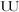
know how to ski?”이다.) 마찬가지로 ‘they’는 결코 한 분체만을 가리키지 않는다. “그들 둘 다 우리 결혼식에 왔다”라는 말은 두 쌍의 쌍사람(즉 네 명의 반쪽—혹은 우리 세계에서 온 사람들의 고풍스러운 용어로 네 명의 ’사람’)에 대한 진술이다. 삼인칭 단수 대명사로는 ’트웨이(twey)’가 하나 있으며 성별이 없다. 따라서 “트웨이는 어젯밤 콘서트에 갔나요?”라는 질문은 캐런이나 그렉 중 한 사람에 대한 질문일 수는 있지만(둘 다 함께에 대한 질문은 될 수 없는데, 그럴 때는 ’they’를 써야 하기 때문이다), “트웨이는 홍역을 앓았나요?”라는 질문은 루커스나 내털리 중 한 명에 대해 물을 수는 있어도 물론 둘 다에 대해 물을 수는 없다.트윈월드의 쌍사람 정체성
트윈월드의 어린 쌍사람은 트웨이가 두 개의 분리된 부분으로 이루어져 있음에도 불구하고 자신이 그저 하나의 단위라는 자연스러운 감각을 지니고 자란다. “모든 분체는 나눌 수 없다”라는 오래된 트윈월드 속담이 있다. 트윈월드의 온갖 관습은 이러한 통일성과 불가분성의 느낌을 체계적으로 강화하고 고정한다. 예를 들어, 학교에서 가 한 과제에 대해서는 오직 하나의 성적만 받는다. 의 한쪽 반쪽이 예컨대 수학이나 미술에서 다른 반쪽보다 조금 약할 수는 있지만, 그것은
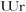
의 집단적 자아상에 아무런 영향도 미치지 않는다. 중요한 것은 팀의 공동 성과다. 쌍아이가 악기를 배울 때는 두 반쪽이 각자 자신의 악기를 가지고 같은 곡을 동시에 연습한다. 삶에서 조금 더 지나 가 대학에 들어가면,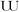
는 쌍사람들이 쓴 소설을 읽고, 쌍사람들이 그린 그림 전시회에 가며, 쌍사람들이 증명한 정리를 공부한다. 한마디로 공과 비난, 영광과 수치, 무관심과 명성은 언제나 쌍사람에게 돌아가지, 결코 쌍사람의 단순한 반쪽들에게 돌아가지 않는다.트윈월드의 문화적 규범은 한 쌍의 반쪽을 자연스럽고 해체 불가능한 단위로 당연시하며, 따라서 그 관점을 강화한다. 우리 사회에서는 일란성 쌍둥이가 종종 서로에게서 벗어나 홀로서기를 하고 세상에 자신들이 똑같은 사람이 아님을 보여 주려 애쓰는 반면, 트윈월드에서 그런 욕구와 행동은 비정상적이고 깊이 의아한 것으로 여겨질 것이다. 쌍사람의 두 반쪽은 트웨이어(tweir)의 머리를(또는 서로의 머리를—왜 안 되겠는가?) 긁적이며 어쩌면 동시에 서로에게 이렇게 말할 것이다. “도대체 왜 트웨이가 갈라진 거지? 누가 반쪽이가 되고 싶어 하겠어? 정말이지 너무 반독(semitary)인 삶일 텐데!”
나는 서두에서 트윈월드 출생의 1퍼센트가 쌍사람이 아니라 반쪽이로 태어난다고 언급했다. 사실 정확히 1퍼센트는 아니고 0.99퍼센트에 가깝다. 하지만 어쨌든 트윈월드에서 아주 어린 쌍사람은 때때로 반쪽이로 태어나는 것이 도대체 어떤 기분일지, 항상 함께 어울려 다니고 서로의 말을 메아리처럼 따라 하며 서로의 생각을 생각하고 긴밀한 팀을 이루는 거의 똑같은 ‘왼쪽’과 ’오른쪽’ 반쪽으로 이루어지지 않는다는 것이 무엇일지 궁금해하곤 한다. 후자의 상태가 너무나 지극히 정상적으로 보이기 때문에, 반쪽이의 지극히 기이하고 반독이며 빈곤한 삶(종종 농담 삼아 ’반감기(half-life)’라고 불린다)을 상상하기란 매우 어렵다.
그렇다면 딱 0.01퍼센트의 확률로 일어나는 나머지 아주 작은 비율의 출생은 어떨까? 글쎄, 임신 중에 일어날 수 있는 기이한 현상이 하나 있다. 쌍접합자를 이루는 두 수정란이 정확히 같은 순간에 반으로 쪼개지는 것이다(왜 항상 이런 식으로 일어나는지는 아무 두 사람도 모르지만 실제로 그렇다). 그 결과 단 한 명의 쌍아이가 태어나는 대신, 유전적으로 동일한 두 명의 쌍아이(twildren)가 태어난다! (이상하게도 그 아기들은 ‘일란성 쌍쌍둥이(identical twinns)’라고 불리지만, 결코 완전히 똑같지는 않다.) 쌍쌍둥이의 쌍부모는 물론 자신들의 ’일란성’ 두 자식을 똑같이 사랑하며, 아주 자주 귀엽게 운율이 맞는 이름 쌍을 지어 준다(쌍쌍둥이 여아의 경우 ‘내털리’와 ’내탤리아’, 쌍쌍둥이 남아의 경우 ’루커스’와 ’루크’처럼 말이다).
때때로 쌍쌍둥이는 자라면서 서로에게서 벗어나 홀로서기를 하고 세상에 자신들이 똑같은 쌍사람이 아님을 보여 줄 필요성을 느낀다. 하지만 또 어떤 쌍쌍둥이는 거의 똑같다는 이 게임을 끝까지 즐기기도 한다. 예를 들어 로이와 브루스 나벨은 로이가 와야 할 자리에 브루스가 나타나고 그 반대로도 나타나며 친구들을 혼란스럽게 만들기를 좋아하는 전형적인 쌍쌍둥이 남아(사실 지금은 다 컸다)다. 트윈월드의 거의 모든 사람(everytwo)은 그런 장난을 꽤 재미있어하는데, 트윈월드의 평범한(쌍쌍둥이가 아닌) 쌍사람에게는 쌍쌍둥이가 된다는 것이 어떤 것인지에 대한 개념이 거의 없기 때문이다. 실제로 자기 자신(twoself)과 거의 똑같은 누군가(sometwo)와 나란히 자란다는 것은 얼마나 극도로 기이한 일일까!
심지어 트윈월드에는 ’트윈윈월드(Twinnwirrld)’라는 기이한 철학적 환상 세계를 지어낸 작가도 한 명 있었는데, 그곳의 핵심 특징은 모든 출생의 99퍼센트가 이른바 ’일란성 쌍쌍둥이’로 태어난다는 것이었다—하지만 그것은 완전히 다른 이야기다.
트윈월드를 비틀어 ‘트위(Twe)’ 조율하기
우리의 짧고 바라건대 도발적이었을 이 작은 소풍은 불가피하게 서로 얽힌 여러 문제를 제기한다. 물론 가장 생생한 것은 트윈월드에서 단독 인간의 몸—반쪽—은 자기 자신을 ‘i’(소문자!)로 여기는 감각을 쌓아 가는 반면, 동시에 한 쌍의 인간의 몸—쌍사람—은 자기 자신을 ’트위(Twe)’로 여기는 감각을 쌓아 간다는 점이다. 이 후자의 과정은 부분적으로는 유전학(쌍접합자에서 발견되는 단 하나의 유전체가 쌍사람을 결정한다) 덕분에, 그리고 부분적으로는 앞서 언급한 몇 가지를 포함한 수많은 언어적 관습에 의해 강화된 문화 적응 덕분에 일어난다.
만약 우리가 트윈월드의 존재들에게 ‘영혼’이라는 묵직한 단어를 적용하고 싶다면 어떨까? 트윈월드에서 무엇이, 혹은 누가 영혼을 가지고 있을까? 심지어 ’존재(being)’라는 명사조차 묵직한 단어다. 트윈월드에서 무엇이 하나의 존재를 구성할까? 내 생각에 이 두 질문은 모두 다음 질문과 같은 답을 갖는다. “트윈월드에서 어떤 종류의 개체가 자기 자신을 ’나(I)’라고 여기는 흔들리지 않는 확신을 쌓아 가는가? 그것은 반쪽인가, 쌍사람인가, 아니면 둘 다인가?” 여기서 우리가 실제로 묻고 있는 것은 두 가지 두드러지고 경쟁적인 유비가 각각 얼마나 강한가—즉, ’i’와 ’I’ 사이의 유비가 얼마나 강한가, 그리고 ‘Twe’와 ’I’ 사이의 유비가 얼마나 강한가—이다.
이 장을 읽는 인간 독자라면 누구나 트윈월드의 반쪽(캐런’l이나 그렉’r 같은)에게 쉽게 감정이입할 수 있을 것이라 짐작한다. 이는 대부분의 독자에게 ‘i’/‘I’ 유비가 설득력 있게 다가온다는 뜻이다. 하지만 나는 인간 독자들이 비록 어떤 사람에게는 ‘i’와 ’I’ 사이의 유비보다 덜 강하게 느껴지더라도, 트위다움(Twe-ness)과 나다움(I-ness) 사이의 설득력 있는 유비 역시 보기를 바란다. 어쨌든 트윈월드는 그저 환상일 뿐이므로, 원하는 대로 매개변수를 조정할 수 있다. 독자와 나 모두 트윈월드의 여러 조절 손잡이를 돌려서 ’i’를 약하게 하고 ’Twe’를 강하게 만들거나, 그 반대로 만들 자유가 있다.
방금 다녀온 회오리 여행에서는 두 유비가 대략 비슷하게 그럴듯해 보이도록, 따라서 ‘i’와 ’Twe’ 사이의 경쟁이 꽤 팽팽하도록 트윈월드를 결정하는 손잡이들을 중간 수준에 맞추어 두었다. 하지만 이제는 ‘Twe’를 조금 더 강하게 만들기 위해 트윈월드를 살짝 비틀어 보고 싶다. 내가 ’샴 트윈월드(Siamese Twinwirld)’라고 부를 이 새로운 환상 세계에서는, 출생의 99퍼센트가 표준 일란성 쌍둥이를 낳는다고 가정하는 대신, 출생의 99퍼센트가 예컨대 엉덩이 부분이 붙은 샴쌍둥이를 낳는다고 가정하겠다. 게다가 샴 트윈월드에는 트윈월드의 대명사 ’i’가 존재하지 않는다고 규정하겠다. 이제 남는 유일한 유비는 우리의 ’I’ 개념과 그들의 ‘Twe’ 개념 사이의 유비뿐이다. 이것이 극도로 억지스럽게 보일지 모르지만, 기묘한 점은 우리의 표준 지구 세계가 샴 트윈월드와 공통점이 많다는 것이다. 그 이유는 다음과 같다.
우리 모두는 두 개의 대뇌 반구(왼쪽 반쪽과 오른쪽 반쪽)를 가지고 있으며, 뇌의 한쪽이 손상될 경우 각 반구는 그 자체로 하나의 뇌로서 꽤 잘 기능할 수 있다. 친애하는 독자여, 당신의 두 반구가 모두 좋은 상태라고 가정하자. 그렇다면 당신이 “나(I)”라고 말할 때 의미하는 것은 당신의 왼쪽 반뇌와 오른쪽 반뇌로 이루어진 매우 긴밀한 팀을 포함하며, 각 반뇌는 당신의 한쪽 눈과 한쪽 귀로부터만 직접 입력을 받는다. 하지만 당신 팀의 두 구성원 사이의 의사소통이 너무나 강하고 빠르기 때문에, 그 융합된 개체—팀 그 자체—는 단 하나의 사물, 절대 깨뜨릴 수 없는 하나의 자아처럼 보인다. 당신은 이것이 어떤 느낌인지 정확히 아는데, 바로 당신이 그렇게 만들어져 있기 때문이다! 그리고 당신이 나와 조금이라도 비슷하다면, 당신의 두 반뇌 중 어느 쪽도 돌아다니며 자신을 ’i’라고 부르고 뻔뻔스럽게 자율적인 영혼이라고 선언하지 않을 것이다! 오히려 그 둘이 합쳐져 단 하나의 대문자 ’I’를 만든다. 요컨대, 현실 세계인 이 세상에서 우리 인간의 처지는 샴 트윈월드의 쌍사람들과 꽤 유사하다.
트윈월드의(샴 변형이든 원래 버전이든) 분체 두 반쪽 사이의 의사소통은 물론 인간 머릿속 두 대뇌 반구 사이의 의사소통보다 덜 효율적이다. 우리의 반구들은 서로 하드와이어드되어 있기 때문이다. 반면에 트윈월드의 반쪽들 사이의 의사소통은 우리 ‘정상적인’ 세계의 거의 모든 두 개인 사이의 의사소통보다 더 효율적이다. 따라서 두 트윈월드 반쪽의 융합 정도는 두 대뇌 반구 사이의 융합만큼 깊지는 않지만, 우리 세계의 아주 친한 형제자매 사이보다 깊고, 일란성 쌍둥이 사이보다 깊으며, 아내와 남편 사이보다 깊다.
트윈월드에 관한 추신
이 장의 초고를 쓰고 나서 1994년 댄 데닛과 내가 주고받은 이메일을 바탕으로 한 다음 장으로 넘어간 뒤, 나는 댄이 나에게 보낸 메시지 중 하나에서 그가 1991년 저서 의식의 수수께끼를 풀다(Consciousness Explained)(나는 이 책을 원고 형태로 읽었었다)에서 언급했던 영국의 한 특이한 쌍둥이 자매를 거론했음을 알게 되었다. 나는 댄이 보낸 이 이메일을 잊고 있었기에 그의 책에서 그 대목을 찾아보기로 했고, 다음 구절을 발견했다.
우리는…… 둘 이상의 몸이 하나의 자아를 공유하는 모습을 상상할 수 있다. 실제로 영국 요크에 그런 사례가 있을지도 모른다. 채플린 쌍둥이, 그레타와 프리다(타임, 1981년 4월 6일)다. 현재 40대이고 호스텔에서 함께 살고 있는 이 일란성 쌍둥이는 하나처럼 행동하는 듯하다. 예를 들어 그들은 하나의 발화 행위를 공동으로 수행하는데, 서로의 문장을 손쉽게 끝맺어 주거나 한 사람이 단 몇 분의 1초 뒤처진 채 일제히 말한다. 수년간 그들은 샴쌍둥이가 아닌 쌍둥이가 할 수 있는 한 최대한 떨어질 수 없는 사이였다. 그들을 다뤄 본 일부 사람들은 자연스럽고 효과적인 전략은 그들을 그녀 한 사람으로 여기는 것이었다고 말한다.……
나는 이 쌍둥이가 텔레파시나 초감각적 지각, 혹은 다른 어떤 오컬트적인 유대로 연결되어 있다고 잠시도 주장하는 것이 아니다. 나는(사실 일란성 쌍둥이가 종종 고도로 발달시키는 기법인) 미묘하고 일상적인 의사소통 및 조율 방식이 풍부하게 존재한다고 말하고 있는 것이다. 이 쌍둥이는 평생 동안 거의 똑같은 사건을 보고, 듣고, 만지고, 냄새 맡고, 생각해 왔으며, 의심할 여지 없이 이러한 자극에 반응하도록 꽤 비슷하게 배치된 뇌를 가지고 출발했으므로, 그들이 어떤 느슨한 조화에 계속 초점을 맞추도록 유지하는 데 엄청난 의사소통 채널이 필요하지는 않을 것이다. (게다가 우리 중 가장 침착하고 자기 통제가 잘되는 사람조차 얼마나 통일되어 있는가?)……
하지만 어쨌든 각 쌍둥이마다 하나씩, 이 기이한 연극을 유지하는 책임을 진 두 개의 명확히 정의된 개인적 자아가 또한 존재하지 않을까? 그럴지도 모르지만, 만약 이 여성들 각자가(우리가 말하듯이) 공동의 대의에 헌신하는 데 너무나 사심이 없어서(selfless) 그 프로젝트 속에서(우리가 또한 말하듯이) 자기 자신을 거의 잃어버렸다면(lost herself) 어떨까?
내가 댄의 책에서 채플린 쌍둥이에 대해 읽기 전에 여기 꽤 정교한 트윈월드 환상으로 피어난 싹을 처음 떠올렸다고 생각하고 싶지만, 사실 언제 처음 그 싹을 떠올렸는지 명확한 기억은 없다. 하지만 내가 그 아이디어를 댄에게서 얻었든 스스로 만들어 냈든 그것은 중요하지 않다. 나는 댄이 그 아이디어에 공감했을 뿐만 아니라, 실제 인간 행동을 관찰한 사람들이 내가 단지 공상으로만 떠들던 것과 매우 흡사한 무언가를 보았다고 주장한다는 사실을 발견하고 기뻤다. 이로써 트윈월드는 내가 짐작했던 것보다 그럴듯함에 한 걸음 더 가까워졌다.
우연의 일치로 이 장과 놀랍도록 맞아떨어지는 또 다른 기이한 일이 하나 있다. 트윈월드를 끝마치고 이틀 뒤, 나는 침대 옆 탁자에서 우연히 종이 조각 하나를 보았는데, 거기에는 내 손글씨로 연필로 쓰인 네 개의 독일어 단어—O du angenehmes Paar(“오, 그대 기쁜 한 쌍이여”)—가 적혀 있었다. 그 짧은 구절은 별다른 기억을 떠올리게 하지 않았지만, 고풍스럽고 고양된 어조로 보아 내가 언젠가 라디오에서 듣고 아름답다고 여겨 적어 두었던 어떤 바흐 칸타타 아리아의 첫 줄일 것이라 짐작했다. 웹에서 나는 내 짐작이 맞았음을 금방 확인했다. 이 단어들은 칸타타 197번 Gott ist unsre Zuversicht(“하나님은 우리의 유일한 믿음의 근원”)에 나오는 베이스 아리아의 첫머리였다. 알고 보니 이것은 결혼식을 반주하기 위해 만들어진 ’결혼 칸타타’였다.
베이스가 부부에게 부르는 가사는 다음과 같다. 먼저 독일어 원문을 싣고, 그다음 원문의 운율과 압운 형식을 모두 존중한 나의 번역을 싣는다.
O du angenehmes Paar,
Dir wird eitel Heil begegnen,
Gott wird dich aus Zion segnen
Und dich leiten immerdar,
O du angenehmes Paar!
오, 그대 매력적인 신혼의 한 쌍이여,
섭리가 그대를 영원히 어루만지리니
시온에서 하나님이 그대를 축복하시고
영원토록 그대를 인도하시리라,
오, 그대 매력적인 신혼의 한 쌍이여!
친애하는 독자여, 이 단어들에서 무언가 꽤 특이한 점이 느껴지지 않는가? 나를 강하게 때린 것은, 이 가사가 부부에게 불리고 있음에도 불구하고 독일어에서는 단수 대명사—du, dir, 그리고 dich—를, 그리고 나의 영어 번역에서는 고어 대명사 ’thou’와 ’thee’를 사용하고 있다는 점이었다. 한 차원에서는 이 이인칭 단수 대명사들이 이상하고 틀린 것처럼 들리지만, 그럼에도 불구하고 부부를 단수로 부름으로써 신성한 결합 속에서 두 영혼이 곧 하나로 합쳐진다는 깊은 느낌을 전달한다. 나에게 이 시구들은 그들이 등장하는 결혼식이 ’영혼 합병’을 구성하여, 마치 두 방울의 물이 다가와 닿은 뒤 매끄럽게 융합하며 때로는 일 더하기 일이 일이 됨을 보여 주듯, 단 하나의 ’더 높은 수준의 영혼’을 가진 단일체를 탄생시킨다는 점을 시사한다.
나는 이 아리아의 가사를 프랑스어와 이탈리아어로 번역한 것들도 찾아보았는데, 그 번역들 역시 두 사람에게 말을 걸 때 tu를 사용했다. 그리고 이는 독일어와 마찬가지로 나에게 영어보다 훨씬 더 기묘하게 들렸다. (영어의 ’thou’와 달리) 프랑스어나 이탈리아어에서 tu는 오늘날 완전히 표준적인 용법이지만, 언제나 단 한 사람에게만 쓰이지 어떤 종류의 부부나 작은 집단에도 결코 쓰이지 않기 때문이다.
현대 영어에서 같은 종류의 의미론적 충격을 경험하려면 이인칭에서 일인칭으로 옮겨 가야 하며, 편집자의 ’우리(we)’의 정반대—즉, 자신들이 이루는 결합체를 ’나(I)’라고 부르는 한 쌍의 사람들—를 상상해야 한다. 그리하여 나는 이제 반사실적으로 칸타타 197번을 확장하여, 새로 탄생한 부부가 결혼식 맨 끝에서 함께 부를 마지막 환희의 아리아 하나를 상상해 보겠다. 그 첫 줄은 Jetzt bin ich ein strahlendes Paar—“나는 이제 빛나는 한 쌍이라네”—가 될 것이며, 새 아내와 남편은 전형적인 바흐식 대위법으로 두 멜로디를 부르는 대신(그렇게 하면 그들의 구별된 정체성에 부적절하게 주의를 끌게 될 테니까) 처음부터 끝까지 정확히 제창으로 부를 것이다. 이 마지막 아리아에서 ’나(I)’는 부부의 두 구성원 중 어느 한쪽이 아니라 부부 그 자체를 가리킬 것이며, 그 아리아는 두 독립된 목소리를 위한 것이 아니라 부부의 하나의 새로운 목소리를 위한 것으로 여겨질 것이다.
소울메이트와 메이트소울
트윈월드 환상의 진짜 요점은 우리 세계에서 대개 의문 없이 받아들여지는 도그마, 즉 “하나의 몸, 하나의 영혼”이라는 슬로건으로 표현될 수 있는 도그마에 약간의 의심을 던지는 것이었다. (‘영혼’이라는 단어가 마음에 들지 않는다면 자유롭게 ’나’, ‘사람’, ‘자아’, 또는 ’의식의 소재지’로 바꾸어 읽어도 좋다.) 이 생각은 말로 꺼내는 경우는 드물지만 너무나 당연하게 여겨져서 대부분의 사람에게는 완전히 동어반복처럼 보인다(영혼의 존재 자체를 부정하지 않는 한 말이다). 하지만 트윈월드를 방문하면(또는 여행을 마련할 수 없다면 그곳에 대해 곰곰이 생각해 보면) 이 도그마는 대낮 아래로 끌려 나와 최소한 직면당해야 하며, 뒤집히지는 않더라도 도전을 받게 된다. 그리하여 내가 독자들의 마음을 열어 한 쌍의 몸이 하나의 영혼이 깃드는 잠재적 공동 소재지가 될 수 있다는 직관에 반하는 개념—즉, 독자들이 스타워즈의 R2-D2나 C-3PO에게 감정이입하듯 쉽게 캐런이나 그렉 같은 쌍사람에게도 감정이입할 수 있도록—을 받아들이게 했다면, 트윈월드는 자신의 임무를 훌륭히 완수한 셈이다.
트윈월드 환상에 대한 나의 영감 중 하나는 두 명의 평범한 개인으로 이루어진 일종의 ’더 높은 수준의 개인’으로서의 결혼한 부부라는 개념이었다. 바로 그 때문에 O du angenehmes Paar라고 적힌 종이 조각을 우연히 마주친 것이 그토록 놀라운 우연의 일치였다. 많은 기혼자들은 결혼 생활을 하면서 자연스럽게 이 개념을 터득한다. 사실 나는 결혼하기 전에도 직관적으로 이와 비슷한 무언가를 희미하게 느끼고 있었으며, 결혼식을 앞둔 기대감 넘치던 몇 주 동안 프랜신 클랙스브런의 책 결혼한 사람들: 이혼의 시대에 함께 버티기(Married People: Staying Together in the Age of Divorce)에서 이 아이디어가 암묵적이고 감동적인 주제였음을 발견했던 기억이 난다. 예를 들어, 기혼 부부를 위한 치료와 상담에 관한 장의 결론에서 클랙스브런은 이렇게 쓴다. “나는 치료사가 결혼 생활의 두 환자인 파트너들에 대해서는 중립적이고 공정해야 하지만, 세 번째 환자인 결혼 생활 그 자체에 대해서는 편파적이어도 윤리 위반이 아니라고 믿는다.” 나는 더 나아지기 위해 치료를 받는 ’환자’로서의 결혼 생활 그 자체라는 그녀의 아이디어에 깊은 감명을 받았고, 세월이 흐르면서 이 이미지 속에 담긴 진실에 대한 감각이 내 결혼 생활의 힘든 시기에 큰 도움이 되었음을 말하지 않을 수 없다.
오랫동안 결혼 생활을 한 두 사람 사이에 형성된 유대는 종종 너무나 긴밀하고 강력해서 어느 한쪽이 세상을 떠나면 다른 한쪽도 아주 곧 뒤따라 세상을 떠나곤 한다. 그리고 다른 한쪽이 살아남더라도 종종 영혼의 절반이 뜯겨 나간 듯한 끔찍한 느낌을 안고 살아간다. 결혼 생활 중의 더 행복한 날들에는 두 파트너가 물론 각자의 관심사와 스타일을 가지고 있지만, 동시에 일련의 공통 관심사와 스타일이 쌓이기 시작하고, 시간이 흐르면서 새로운 개체가 형태를 갖추기 시작한다.
내 결혼 생활의 경우, 그 개체는 캐런-앤-더그(Carol-and-Doug)였으며, 가끔 농담 삼아 ‘도카(Doca)’ 또는 ’카도(Cado)’라고 불렸다. 우리의 둘 속의 하나됨은 결혼 첫해에 몇 차례, 친구들을 저녁 파티에 초대했다가 마침내 모두가 떠나고 캐런과 내가 함께 뒷정리를 시작하던 바로 그 순간에 내 마음속에 분명히 모습을 드러내기 시작했다. 우리는 접시들을 부엌으로 옮긴 뒤 싱크대 앞에 나란히 서서 그릇을 닦고 헹구고 말리며, 우리의 공동의 마음속에서 그날 저녁 전체를 되감아 볼 수 있는 만큼 되짚어 보곤 했다. 즉흥적인 재치에 기뻐하며 웃고, 뜻밖의 상호작용을 다시 음미하며, 누가 행복해 보였고 누가 우울해 보였는지 이야기를 나누었다. 그리고 이 파티 후(post partyum) 감압 과정에서 가장 두드러진 점은 우리 둘이 거의 언제나 모든 면에서 서로 의견이 일치했다는 사실이었다. 무언가, 어떤 것이 우리 둘로 만들어져 생겨나고 있었다.
결혼하고 몇 년이 지났을 때, 가끔 우리에게 가장 기묘한 말이 들려오곤 했던 기억이 난다. “두 분 정말 닮았네요!” 나는 캐런을 아름다운 여성으로 여겼고 외모 면에서 나와는 전혀 닮지 않았다고 생각했기에 이 말이 무척 놀라웠다. 하지만 시간이 지나면서 나는 그녀의 시선 속에서, 그녀가 세상을 바라보는 방식 속에서 내 자신의 시선, 세상에 대한 내 자신의 태도를 떠올리게 하는 무언가를 보기 시작했다. 나는 친구들이 본 그 ’닮음’이 우리 얼굴의 해부학적 구조에 있는 것이 아니라, 마치 우리 영혼의 무언가가 바깥으로 투사되어 우리 표정의 매우 추상적인 특징으로 지각되는 것 같다고 결론지었다. 나는 우리가 함께 찍은 특정 사진들에서 그것을 가장 분명하게 볼 수 있었다.
글루온으로서의 아이들
하지만 우리 사이의 가장 깊은 유대를 만들어 낸 것은 의심할 여지 없이 우리 두 아이의 탄생이었다. 아이가 없는 단순한 부부였을 때 우리는 여전히 완전히 융합되지는 않았다—사실 대부분의 부부처럼 때때로 완전히 혼란스러웠다. 하지만 새로운 사람들, 연약하고 작은 사람들이 우리 삶에 들어오자 우리 안의 어떤 벡터들이 완전히 정렬되었다. 자녀를 어떻게 키울 것인지에 대해 의견이 일치하지 않는 부부도 많지만, 캐런과 나는 우리 아이들에 관한 사실상 모든 것에 대해 눈높이가 같다는 것을 기쁘게 발견했다. 그리고 한쪽이 확신이 서지 않을 때면 다른 한쪽과 이야기를 나누는 것이 언제나 상황을 명쾌하게 해 주었다.
이 거대하고 미친, 그리고 종종 무서운 세상에서 우리 아이들을 안전하고 행복하며 현명하게 키워 내겠다는 그 공유된 목표는 우리 결혼 생활의 지배적인 모티프가 되었고, 우리 둘을 같은 틀로 주조했다. 우리는 각자 구별된 개인이었지만, 부모 역할에 관한 한 그 구별됨은 희미해지다 못해 거의 완전히 사라지는 듯했다. 삶의 그 영역에서 먼저 시작해, 그다음에는 천천히 다른 영역들로 퍼져 나가며, 우리는 두 개의 몸을 가진 하나의 개인, 단 하나의 ‘쌍사람’, 하나의 ‘나눌 수 없는 분체’, 단 하나의 ’듀얼’이었다. 우리 둘은 트위(Twe)였다. 우리는 정확히 같은 감정과 반응을 보였고, 정확히 같은 두려움과 꿈, 정확히 같은 희망과 공포를 품었다. 그 희망과 꿈들은 내 것이나 캐런의 것이 따로따로 두 번 복사된 것이 아니었다—그것들은 하나의 희망과 꿈의 집합이었고, 우리의 희망과 꿈이었다.
마치 우리의 공통된 희망이 뇌와 무관한 어떤 천상의 네버랜드에 둥둥 떠다닌다고 암시하는 것처럼 신비주의적으로 들리기를 바라는 것은 아니다. 그것은 전혀 내 견해가 아니다. 물론 우리의 희망은 우리 각자의 분리된 뇌 속에 한 번씩, 총 두 번 물리적으로 구현되어 있었다—하지만 충분히 추상적인 수준에서 볼 때, 이 희망들은 단지 두 개의 서로 다른 물리적 매체에 구현되었을 뿐인 하나이자 동일한 패턴이었다.
’같은 유전자’가 두 개의 다른 세포, 두 개의 다른 유기체 안에 존재할 수 있다는 생각을 받아들이는 데 어려움을 겪는 사람은 아무도 없다. 하지만 유전자란 무엇인가? 유전자는 실제 물리적 물체가 아니다. 만약 그렇다면 오직 하나의 세포, 하나의 유기체 안에만 위치할 수 있을 테니까. 아니다, 유전자는 하나의 패턴—특정한 뉴클레오타이드 서열(대개 종이 위에서는 네 글자 알파벳 ’ACGT’의 문자 서열로 부호화된다)—이다. 따라서 유전자는 추상체이며, 그렇기 때문에 ’바로 그 같은 유전자’가 서로 다른 세포, 서로 다른 유기체, 심지어 수백만 년의 시차를 두고 살아가는 유기체들 안에도 존재할 수 있다.
’같은 소설’이 두 개의 다른 언어, 두 개의 다른 문화 안에 존재할 수 있다는 생각을 받아들이는 데 어려움을 겪는 사람도 아무도 없다. 하지만 소설이란 무엇인가? 소설은 특정한 단어들의 나열이 아니다. 만약 그렇다면 오직 하나의 언어, 하나의 문화로만 쓰일 수 있을 테니까. 아니다, 소설은 하나의 패턴—등장인물, 사건, 분위기, 어조, 농담, 암시 등의 특정한 집합—이다. 따라서 소설은 추상체이며, 그렇기 때문에 ’바로 그 같은 소설’이 서로 다른 언어, 서로 다른 문화, 심지어 수백 년의 시차를 두고 번성한 문화들 안에도 존재할 수 있다.
그러므로 ’같은 희망과 꿈’이 두 다른 사람의 뇌 속에 깃들 수 있다는 생각에 어려움을 겪을 사람도 없어야 한다. 특히 그 두 사람이 수년간 함께 살며 부부로서 그 모든 희망과 꿈의 중심이 되는 새로운 존재들을 낳았을 때는 더욱 그렇다. 어쩌면 이것이 지나치게 낭만적으로 보일지 모르지만, 당시 내가 느꼈던 바가 그러했고 지금도 여전히 그렇게 느낀다. 그토록 많은 것을 공유하는 것, 특히 우리 두 아이에 관한 것을 공유하는 것은 형언할 수 없지만 본능적인 방식으로 우리의 영혼을 정렬시켰고, 삶의 어떤 차원에서는 마치 물고기 떼가 단일한 마음을 가진 더 높은 수준의 개체처럼 행동하듯 우리를 전체로서 행동하는 하나의 단일체로 바꾸어 놓았다.
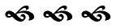
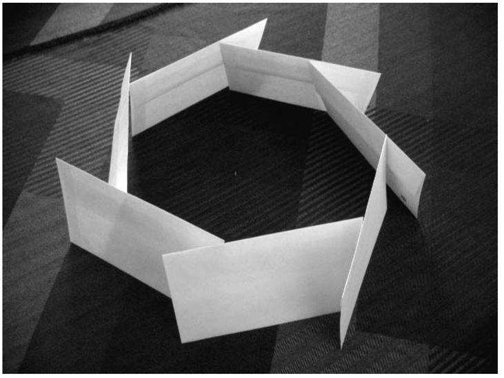
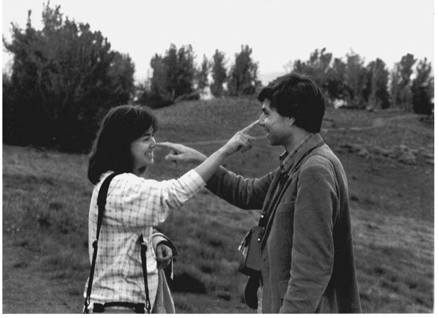
제16장 - 가장 깊은 신비와의 씨름
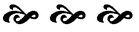
우연한 사건이 모든 것을 바꾸다
1993년 12월, 이탈리아 트렌토에서 보낸 안식년의 딱 4분의 1이 지났을 무렵, 내 아내 캐런이 사실상 아무런 예고도 없이 뇌종양으로 아주 갑작스럽게 세상을 떠났다. 그녀는 아직 마흔셋도 되지 않았고, 우리 아이들 대니와 모니카는 겨우 다섯 살과 두 살이었다. 나는 결혼 전에는 결코 상상조차 할 수 없었던 방식으로 산산조각이 났다. 그 눈동자 뒤에는 밝게 빛나는 영혼이 있었는데, 그 영혼이 갑자기 가려져 버렸다. 불빛이 꺼져 버린 것이다.
나를 단연코 가장 세게 때린 것은 나 자신의 개인적 상실감(“아, 이제 난 어떻게 하지? 힘든 순간에 누구에게 기대지? 밤에 누구 곁에 웅크리고 눕지?”)이 아니었다—그것은 캐런의 개인적 상실이었다. 물론 나는 그녀가 그리웠고, 엄청나게 그리웠다—하지만 나를 훨씬 더 괴롭힌 것은 그녀가 잃어버린 것들을 도저히 받아들일 수 없다는 사실이었다. 아이들이 자라는 모습을 지켜보고, 성격이 발달하는 것을 보고, 재능을 음미하고, 슬플 때 위로해 주고, 잠자리에서 동화책을 읽어 주고, 노래를 불러 주고, 아이들의 유치한 농담에 미소 짓고, 방에 페인트를 칠해 주고, 벽장 벽에 연필로 키를 표시해 주고, 자전거 타는 법을 가르쳐 주고, 다른 나라로 함께 여행을 떠나고, 다른 언어를 접하게 해 주고, 강아지를 사 주고, 아이들의 친구들을 만나고, 스키와 스케이트를 타러 데려가고, 놀이방에서 함께 옛날 비디오를 보는 등등 끝도 없는 일들 말이다. 한때 그토록 쉽게 당연시했던 이 모든 미래를 캐런은 순식간에 잃어버렸고, 나는 그것을 도저히 감당할 수 없었다.
몇 달 뒤 미국으로 돌아와, 나는 최근에 배우자를 잃은 사람들을 위한 치료 모임—’치유하는 마음(Healing Hearts)’이었던 것 같다—에 나가 본 적이 있다. 그곳에서 나는 배우자를 잃은 대부분의 사람들이 자기 자신의 고통, 자기 자신의 상실, 이제 자기 자신이 무엇을 할 것인가에 초점을 맞추고 있음을 보았다. 물론 그것이 모임 이름의 뜻이었다—당신은 치유되고, 나아져야 했다. 하지만 캐런은 어떻게 치유될 것인가?
나는 이 모임의 다른 사람들과 내가 정말로 서로 딴소리를 하고 있는 것처럼 느꼈다. 우리는 전혀 비슷한 고민을 하고 있지 않았다! 아이들이 아주 어릴 때 배우자가 세상을 떠난 사람은 나뿐이었고, 바로 이 사실이 모든 차이를 만드는 듯했다. 캐런에게서 모든 것이 뜯겨 나갔고, 나는 그녀가 빼앗긴 것들에 대해 생각하는 것을 견딜 수 없었지만—그렇다고 생각하는 것을 멈출 수도 없었다. 캐런을 향한 이 쓰라린 부당함이 내가 느낀 압도적인 감정이었고, 내 친구들은(이상하게도 나를 위로하려는 선의의 시도로) 자꾸만 내게 이렇게 말했다. “그녀를 불쌍히 여길 순 없어! 그녀는 죽었잖아! 더 이상 불쌍히 여길 사람이 없다고!” 이 말이 내게는 얼마나 철저히, 완전히 틀리게 느껴졌는지 모른다.
어느 날, 그녀가 세상을 떠나기 두어 달 전에 찍은 캐런의 사진을 응시하던 중, 나는 그녀의 얼굴을 너무나 깊이 들여다본 나머지 내가 그녀의 눈 뒤에 들어가 있는 듯한 느낌을 받았고, 문득 눈물이 흐르는 가운데 “저게 나야! 저게 나야!”라고 말하고 있는 나 자신을 발견했다. 그리고 그 단순한 말들은 내가 전에 품었던 많은 생각들을 되살려 놓았다. 우리 영혼이 하나의 더 높은 수준의 개체로 융합된다는 생각, 우리 두 영혼의 핵심에 아이들에 대한 우리의 똑같은 희망과 꿈이 놓여 있다는 사실, 그 희망들이 별개이거나 구별된 희망이 아니라 우리 둘을 정의하고 결혼하고 아이를 갖기 전에는 희미하게만 상상했던 그런 종류의 단위로 우리를 하나로 용접해 준 단 하나의 희망, 하나의 명료한 것이라는 관념 말이다. 나는 그때 비록 캐런은 죽었지만 그녀의 그 핵심 조각은 결코 죽지 않았으며, 내 뇌 속에서 아주 단호하게 계속 살아가고 있음을 깨달았다.
필사적인 종달새(Desperate Lark)
캐런의 갑작스러운 죽음이라는 비극이 일어난 뒤 이어진 초현실적인 몇 달 동안, 나는 내게 전혀 이해가 되지 않는 그녀의 의식이 사라졌다는 신비와, 마찬가지로 나를 혼란스럽게 만든 내가 계속 그녀를 현재형으로 생각한다는 부인할 수 없는 사실에 끊임없이 사로잡혀 있었다. 이 극도로 모호한 것들을 종이 위에 적어 보려 했지만 스스로에 대한 확신이 전혀 없었기에, 나는 1994년 3월 말 바다 건너 매사추세츠에 있는 절친한 친구이자 동료인 대니얼 데닛과 이메일 교환을 시작했다. 마음과 ’나(I)’라는 개념에 대한 댄의 생각은 언제나 내 생각과 거의 같은 파장에 있는 것처럼 보였기 때문이다(아마도 우리가 1981년에 마음의 나(The Mind’s I)라는 책을 공동 편집했을 때 그토록 잘 맞았던 이유도 그 때문일 것이다). 또한 댄은 직업 인생의 대부분을 이런 종류의 문제들을 생각하고 글을 쓰는 데 보냈으므로, 그저 아무렇게나 고른 상대가 아니었다!
일단 이 교환을 시작하자 우리는 몇 달 동안 대서양을 가로질러 간헐적으로 메시지를 주고받았고, 아이들과 내가 미국으로 돌아오기 직전인 그해 8월 말 내가 마지막 메시지를 보냈다. 그것은 꽤 한쪽으로 기운 교환이었는데, 내가 ’이야기’의 대략 90퍼센트를 도맡아 이 포착하기 어렵고 때로는 거의 표현 불가능한 생각들을 표현하려고 최선을 다했고, 댄은 주로 자신이 동의하는지 아닌지에 대한 짧은 논평과 그 이유에 대한 힌트만 주었다.
나는 이상한 고리(I Am a Strange Loop)의 마지막 몇 장을 작업하던 중, 출력했을 때 대략 35페이지 분량에 달했던 우리의 전체 이메일 교환을 다시 읽어 보았다. 훌륭한 산문은 아니었지만, 그중 일부는 어떤 형태로든 이 새 책에 실을 가치가 있다는 생각이 들었다. 물론 나의 사색은 극도로 개인적이었다. 그것은 아내가 아무 이유도 없이 연기처럼 사라져 버린 뒤 깊은 충격에 빠진 한 남편의 몸부림이었다. 내가 여기 그 발췌본을 싣기로 결심한 것은, 비록 내가 아내를 깊이 사랑했고 지금도 사랑한다는 데 의심이 없지만, 사후에 아내에 대한 거창한 공개 사랑 고백을 하려는 것이 아니다. 내가 나의 사색 일부를 싣기로 결심한 것은, 그것들이 바로 이 책의 핵심을 이루는 문제들과 씨름하는 진심 어린 탐구이기 때문이다. 인간의 영혼과 인간의 의식이라는 주제에 대해 내가 쓴 다른 어떤 글도 댄에게 보낸 그 메시지들만큼 마음에서 우러나온 적은 없었으며, 비록 내가 지금 그 문제들을 그때보다 다소 더 명확하게 이해하고 있다고 생각하고 싶지만, 오늘날 내가 쓰는 어떤 글도 극심한 고뇌와 혼란의 날들이었던 그때 내가 썼던 글만큼의 절박함을 가질 수는 없을 것이다.
나는 나의 이메일 씨름이 이 책의 나머지 부분과 스타일이 다르고 다른 시기의 글이므로, 그것을 위해 별도의 장을 할애하기로 결심했다—바로 이 장이다. 이 장을 준비하기 위해 나는 종종 뒤죽박죽이고 중복되며 모호하고 지엽적이거나 무관한 주제에 대한 산발적인 단편들이 포함된 그 35페이지의 이메일을 훑어보며 원래 분량의 약 4분의 1로 줄여 편집했다. 또한 흐름을 더 논리적으로 만들기 위해 메시지 조각들을 재배열하고 남겨 둔 구절들을 가끔씩 살짝 수정하기도 했다. 따라서 여기서 당신이 보는 것은 우리 대화 중 내 쪽의 날것 그대로의 기록은 결코 아니지만(그랬다면 정말 읽기 힘들었을 것이다), 가장 중요한 주제들을 충실하게 요약해 낸 것이다.
비록 그것은 대화였지만, 위에서 말했듯이 댄이 나의 백열하는 감정적 탐구를 위한 차분하고 냉정한 공명판 역할을 주로 했기 때문에 나는 이 장에서 댄의 목소리는 뺐다. 그는 어떤 새로운 이론을 내놓으려 한 것이 아니었다. 그는 그저 들어주며 내 친구가 되어 주었을 뿐이다. 하지만 1994년 4월, 댄이 그 시절 내가 겪고 있던 일에 대해 시적으로 표현한 대목이 하나 있는데, 그의 말이 이 장의 훌륭한 서곡이 될 것 같아 아래에 인용하겠다. 그 뒤에 이어지는 모든 것은 1994년 3월에서 8월 사이에 내가 보낸 이메일 사색에서(살짝 다듬은 형태로) 인용한 나의 목소리다.
내가 항해하는 곳 근처인 메인주에 오래된 경주용 요트가 한 척 있는데, 나는 그 배가 나와 함께 출발선에 서는 것을 보는 게 정말 좋다. 아마도 내가 본 것 중 가장 아름다운 요트일 텐데, 그 이름이 ’필사적인 종달새(Desperate Lark)’이고 나 역시 그 이름이 아름답다고 생각한다. 자네는 지금 필사적인 항해(desperate lark)에 나섰고, 그것은 지금 당장 자네가 해야 할 바로 그 일이다. 그리고 자네의 성찰은 우리 달콤한 지구 위에서 생명의 힘을 마주하고 그 크기를 가늠해 본 사람의 성찰이다. 자네는 균형을 되찾고 상쾌해져서 돌아올 걸세. 하지만 치유되는 데는 시간이 걸리지. 자네가 돌아올 때 우리 모두 여기 해변에서 자네를 기다리고 있을 걸세.
나에게 ’캐런’이라는 이름은 이제 사라져 버린 단순한 몸 그 이상을 가리킨다. 그것은 오히려 매우 거대한 패턴, 스타일, 즉 기억, 희망, 꿈, 믿음, 사랑, 음악에 대한 반응, 유머 감각, 자기 의심, 관대함, 연민 등을 포함하는 일련의 것들을 가리킨다. 그것들은 어느 정도 공유 가능하고 객관적이며 다중 구현이 가능한데, 마치 디스켓에 담긴 소프트웨어와 비슷하다. 그리고 내가 기억들을 강박적으로 적어 내려가는 것, 그녀가 담긴 수많은 비디오테이프, 그리고 캐런에 대한 우리 모두의 뇌 속에 저장된 기억들은 그녀의 그 패턴적 측면들이 비록 흩어진 형태—여러 비디오테이프 속에, 여러 친구와 친척의 뇌 속에, 여러 노란 줄무늬 공책 속에 흩어진 형태—로라도 여전히 존재하게 만든다. 어쨌든 이 물리적 세계에는 아주 분명히 식별할 수 있는 캐런다움의 흩어진 패턴이 존재한다. 그리고 그런 의미에서 캐런다움은 살아남는다.
’캐런다움이 살아남는다’는 말로 내가 뜻하는 바는, 그녀를 한 번도 만나 본 적 없는 사람들조차 그녀 곁에, 그녀 주변에, 그녀와 함께 있는 것이 어땠는지 볼 수 있다는 것이다—그들은 그녀의 재치를 경험하고, 그녀의 미소를 보고, 그녀의 목소리와 웃음소리를 듣고, 그녀의 젊은 시절 모험담을 듣고, 그녀와 내가 어떻게 만났는지 배우고, 그녀가 어린 아이들과 노는 모습을 지켜볼 수 있다.……
하지만 나는 내 뇌 속이나 종이 위의 내 기억들, 그리고 다른 사람들의 기억들 덕분에 캐런의 의식, 그녀의 내면성 일부가 이 지구상에 남아 있다고 내가 어느 정도까지 믿는지 계속 알아내려 애쓰고 있다. 의식의 비중심성, 즉 의식의 분산성을 강하게 믿는 사람으로서, 나는 비록 어떤 개인의 의식이 주로 하나의 특정 뇌에 거주하기는 하지만 다른 뇌들 속에도 어느 정도 존재하며, 따라서 중심 뇌가 파괴되더라도 살아 있는 개인의 작은 파편들은 남아 있다—즉, 살아 남아 있다—고 생각하는 경향이 있다.
또한 외적 기억이 우리 개인적 기억의 매우 실제적인 일부라는 명제를 믿는 사람으로서, 나는 그녀의 기발한 경구(bon mot) 몇 개를 적어 둔 종이 쪽지들 속에도 캐런 의식의 극미한 조각이 깃들어 있고, 지난 몇 달간의 애도 기간 동안 내가 우리의 공동 경험을 그토록 많이 기록해 둔 노란 줄무늬 공책들 속에는(여전히 작긴 하지만) 좀 더 큰 조각이 깃들어 있다고 생각한다. 물론 그 경험들은 이미 내 뇌 속에 부호화되어 있었지만, 그것을 외부화해 두면 언젠가 그녀를 알았던 다른 사람들과 공유할 수 있게 될 것이고, 따라서 어떤 식으로든 작은 방식으로나마 그녀를 ‘소생’시킬 것이다. 그러므로 종이 위의 정적인 표상조차 ’살아 있는’ 캐런의 요소, 캐런 의식의 요소를 담을 수 있다.
이 모든 것은 아버지가 돌아가신 지 몇 주 뒤에 어머니와 나눈 대화를 떠올리게 한다. 어머니는 가끔 아버지가 미소 짓고 있는 좋아하는 사진을 볼 때면 자기도 모르게 ’그’에게, 혹은 ’그것’에게 마주 미소 짓고 있는 자신을 발견한다고 말씀하셨다. 자신의 이런 반응에 대한 어머니의 평가는 이랬다. “그 사진을 보며 미소 짓는 건 정말 잘못된 거야. 그건 그가 아니라 그저 납작하고 의미 없는 종이 조각일 뿐이니까.” 그리고 어머니는 자신에게 몹시 화를 내며 아버지를 잃은 상실감에 더욱 괴로워하셨다. 나는 어머니의 그 고통스러운 말씀을 한동안 곱씹어 보았고, 어머니가 무슨 뜻으로 하신 말씀인지는 알 수 있었지만, 상황은 어머니가 말씀하신 것보다 훨씬 더 복잡한 것 같았다.
그렇다, 표면적으로는 그 사진이 생명도 없고 영혼도 없는 무생물 종이 조각으로 보인다. 하지만 어떻게든 그것은 어머니에게 다가가고, 어머니의 마음을 건드린다. 그리고 이것은 내게 프레데리크 쇼팽의 피아노 전집을 이루는 생명 없고 영혼 없는 종이 조각들의 묶음을 떠올리게 했다. 그저 종이 조각일 뿐이지만, 그것은 전 세계 사람들에게 믿을 수 없는 영향을 미친다. 아버지의 그 사진도 마찬가지일 것이다. 내가 그 사진을 볼 때, 내 여동생 로라의 뇌 속에서, 그리고 다른 많은 사람들의 뇌 속에서 그것은 분명 깊은 울림을 일으킨다. 우리에게 그 사진은 그저 질량, 크기, 색깔 등을 가진 물리적 물체가 아니다. 그것은 환상적인 촉발력을 지닌 패턴이다.
그리고 물론 누군가의 사진과 누군가의 전집 외에도 영혼의 파편을 담은 정교한 패턴의 사례는 너무나 많다—예를 들어 바흐가 오르간을 연주하며 자신의 음악에 대해 이야기하는 수 시간 분량의 비디오테이프, 제임스 클러크 맥스웰이 물리학에 대해 이야기하며 빛이 전자기파임에 틀림없다는 것을 발견한 순간을 묘사하는 비디오테이프, 푸시킨이 자신의 시를 낭송하는 모습, 갈릴레오가 목성의 위성을 어떻게 발견했는지 들려주는 모습, 제인 오스틴이 자신의 등장인물들과 그들의 복잡한 음모를 어떻게 구상했는지 설명하는 모습을 상상해 보라.……
방대한 비디오테이프 묶음이나(안네 프랑크의 일기 같은) 방대한 일기 같은 패턴을 가지는 것이 그 사람의 상당한 비율—그들의 자아, 영혼, ‘나’, 의식, 내면성의 상당한 비율—을 가지는 것과 같아지는 ‘임계 질량’의 지점은 정확히 어디일까? 충분히 큰 패턴만 있다면 이 스펙트럼 상의 어느 지점에서는 그 사람의 상당한 비율이 존재할 것이라고 인정한다면, 사진이나 내가 소중히 여기는 캐런의 ’경구’ 모음집처럼 훨씬 작은 패턴을 가지는 것조차 이미(비록 미시적일지라도) 0이 아닌 분량의 실제 그 사람—그들과 함께 있는 것이 어땠는지에 대한 것이 아니라 ‘안에서 본 시점’—을 준다고 인정해야 할 것 같다.
모니카의 세 번째 생일이었다—분명한 이유들로 인해 기쁘면서도 매우 슬픈 날이었다. 아이들과 나, 그리고 몇몇 친구들은 트렌토 바로 위 우리 산비탈 마을 코뇰라에 있는 야외 피자 가게에 있었고, 우리 사방에는 높은 산들의 아름다운 풍경이 펼쳐져 있었다. 어린 모니카는 유아용 보조 의자에 앉아 테이블 건너편 내 바로 맞은편에 있었다. 캐런이 너무나도 함께하고 싶어 했을 그토록 감정이 북받치는 자리였기에, 나는 ‘캐런을 대신하여’ 모니카를 바라보려 애썼고, 그러고 나서 물론 도대체 내가 무슨 짓을 하고 있는지, 그런 생각을 하는 것이 도대체 무슨 뜻인지 의아해했다.
‘캐런을 대신하여 모니카를 본다’는 이 생각은 내게 생생한 기억 하나를 떠올리게 했다. 아주 먼 1983년 여름, 블루밍턴에서 우리가 좋아하던 중국 식당 ’워크(Wok)’의 테라스에 앉아 있던 옛 더그와 옛 캐런(또는 원한다면 ’젊은 더그와 젊은 캐런’)이 남색 코듀로이 원피스를 입고 돌아다니는 두세 살배기 사랑스러운 검은 머리 여자아이를 바라보던 기억이었다. 우리는 아직 결혼하지 않았고 결혼 이야기를 꺼내지도 않았지만, 아이들에 대해 아주 감정적으로 이야기를 나누곤 했고, 우리 둘 다 우리 스스로 딱 그런 여자아이의 공동 부모가 되기를 간절히 바라고 있었다. 비록 암묵적이었을지라도 이것은 분명 공유된 갈망이었다.
그렇다면 11년이 지난 지금, 우리 딸 모니카가 실제로 존재하는 지금, 나는 1983년에 옛 더그가 꿈꾸고 갈망했던 그 기쁨을 마침내 옛 더그를 대신하여 경험할 수 있을까? 나는 지금 ‘옛 더그를 대신하여’ 그의 딸 모니카를 바라볼 수 있을까? (아니면 ’그를 대신하여 내 딸을 바라본다’는 뜻인가? 아니면 둘 다인가?) 그리고 만약 내가 옛 더그를 대신하여 그렇게 할 수 있다고 정당하게 주장할 수 있다면, 왜 옛 캐런을 대신해서도 똑같이 정당하게 그렇게 할 수 없겠는가? 결국 머나먼 그 여름날 저녁 함께하는 딸에 대한 우리의 갈망은 깊이 공유된 갈망이었고, 우리 두 사람의 뇌 속에서 동시에 타오르던 정확히 같은 갈망이었다. 따라서 질문은 이것이다. 나는 지금 옛 캐런을 대신하여 그 기쁨을 경험할 수 있는가, 나는 지금 옛 캐런을 대신하여 모니카를 바라볼 수 있는가?
여기서 결정적으로 보이는 것은 영혼의 상호 침투 깊이—공유된 정체성으로 이어지는 공유된 목표의 감각—다. 그러므로 예컨대 캐런은 언제나 모니카와 대니가 자라면서 서로의 가장 친한 친구가 되고 어른이 되어서도 항상 그렇게 남기를 깊고 깊이 바랐다. 이 바람은 내 안에서도 매우 강한 형태로 존재하거나 지속되고 있으며(사실 우리는 언제나 그 공동의 희망을 품고 있었고, 그녀가 죽기 전에도 나는 그것이 실현되도록 최선을 다하곤 했다), 바로 그녀가 죽었기 때문에—그리하여 이 세상에서 내가 그녀의 가장 훌륭한 대리인이 되었기에—나는 그녀에 대한 깊은 책임감을 느끼며 이 바람은 이제 예전보다 내 행동에 훨씬 더 큰 영향력을 행사하고 있다.
캐런의 욕구, 희망 등과 함께 그녀 자신의 개인적 ‘나(I)’ 감각도 내 뇌 속에 표상되어 있다. 내가 그녀와 너무나 가까웠고, 그녀와 너무나 깊이 공감했으며, 그녀와 너무나 많은 것을 함께 느꼈고, 우리가 이야기할 때 그녀의 관점 안에서 사물을 볼 수 있었기 때문이다. 그것이 그녀의 육체적 고통(구불결장경 검사 한 시간 뒤 남은 공기 방울 때문에 뱃속이 뒤틀리며 고통스러워하던 모습)이든, 가장 큰 기쁨(데이비드 모저의 짓궂고 영리한 경구나 케임브리지에서의 기막힌 인도 식사)이든, 가장 소중한 희망이든, 영화에 대한 반응이든 무엇이든 말이다.
대화 중의 짧은 순간들, 혹은 강렬한 감정을 느끼던 말 없는 순간들에서 나는 캐런이었고, 마찬가지로 때때로 그녀는 더그였다. 그리하여(스타니스와프 렘의 소설 「비봉사(Non Serviam)」에서 용어를 빌리자면) 그녀의 ’개인적 젬마(personal gemma)’는 내 뇌 속에 다소 흐릿하고 거친 입자의 자기 복제본을 탄생시켰고, 내 뇌 속에 이차적인 괴델적 소용돌이(물론 일차적인 것은 나 자신의 자기 소용돌이다)를 만들어 냈다. 내가 그녀가 될 수 있게 해 준 괴델적 소용돌이, 달리 말하면 그녀의 자아, 그녀의 개인적 젬마가(단순화된 형태로) 내 하드웨어 위를 탈 수 있게 해 준 괴델적 소용돌이다.
하지만 지금 내 뇌 속에 살고 있는 이 이차적 소용돌이, 이 시뮬레이션된 개인적 젬마는 한때 그녀의 뇌 속에 살았고 이제는 사라진 그 진짜 소용돌이, 그 일차적 소용돌이와 조금이라도 닮았을까? 이 세상 어딘가에 아직도 캐런의 의식이 있을까? 즉, 내가 ‘캐런을 대신하여’ 모니카를 바라보고 아주 미세한 정도로나마 모니카를 보는 캐런이 되는 것이 가능할까? 아니면 그 개인적 젬마는 최종적으로, 완전히, 돌이킬 수 없이 소멸해 버린 것일까?
한 사람은 하나의 관점이다—단지(우주의 특정 물리적 장소에서 특정 눈으로 밖을 내다보는) 물리적 관점뿐만 아니라, 더 중요하게는 거대한 기억 은행에 뿌리를 둔 일촉즉발의 연상 작용 집합인 정신(psyche)의 관점이다. 후자는 시간이 지나면서 다른 사람에게 점점 더 많이 흡수될 수 있다. 따라서 그것은 외국어를 단계별로 습득하는 것과 같다.
한동안 사람의 말하기는 대체로 ’가짜’다—즉, 모국어로 생각하면서 제2언어로 생각이 진행되고 있다는 인상을 줄 만큼만 빠르게 단어를 치환하는 것이다. 하지만 제2언어에 대한 경험이 쌓이면서 새로운 문법적 습관이 형성되어 서서히 반사 작용으로 변하고 수천 개의 어휘 항목도 마찬가지가 되며, 제2언어는 점점 더 깊이 뿌리를 내리고 점점 더 진짜가 된다. 사람은 점차 다른 언어의 유창한 사고자이자 화자가 되며, 설령 억양이 남아 있더라도 그것은 더 이상 ’가짜’가 아니다. 다른 사람의 영혼을 통해 세상을 바라보게 되는 것도 이와 마찬가지다.
예를 들어 내 부모님은 거의 50년에 걸친 결혼 생활 동안 서로의 정신적 관점을 매우 깊이 내면화하셨고, 그리하여 두 분 각자는 점차 상대방의 ‘유창한 존재자(fluent be-er)’가 되셨다. 어쩌면 어머니가 아버지’였을’ 때 어머니는 ’억양’을 가지고 그러셨을 것이고 그 반대도 마찬가지였겠지만, 두 분 각자에게 다른 한 사람이 되는 행위는 분명 진짜였지 가짜가 아니었다.
부모님과 마찬가지로, 캐런이 살아 있을 때 나 역시 어느 정도 진짜로 캐런이 됨이 있었고 그 반대도 마찬가지였다. 내가 캐런이 ‘되는’ 법을 배우는 데 몇 년이 걸렸고, 확실히 ‘원어민’ 수준에 도달한 적은 없지만, 우리가 가장 가까웠던 시절에 나는 내 아내의 ’유창한 존재자’였다고 말해도 공정할 것이다. 나는 우리가 함께 보낸 시간과 우리가 만나기 전 시절 모두에서 그녀의 수많은 기억을 공유했고, 그녀를 형성한 수많은 사람들을 알았으며, 똑같은 수많은 음악, 영화, 책, 친구, 농담을 사랑했고, 그녀의 가장 은밀한 욕구와 희망을 너무나 많이 공유했다. 그리하여 원래 단 하나의 뇌에만 구현되어 있던 그녀의 관점, 그녀의 내면성, 그녀의 자아는 비록 원래 것보다 훨씬 덜 완전하고 덜 정교하긴 했지만 두 번째 구현을 갖게 되었다. (사실 그녀가 나를 만나기 훨씬 전부터 그녀의 관점은 이미 다른 구현들을 낳았는데, 물론 그녀의 형제자매와 부모님에 의해 다양한 정도와 충실도로 내면화되었기 때문이다.) 말할 필요도 없이, 캐런의 관점은 언제나 단연코 가장 강하게 그녀의 뇌 속에 구현되어 있었다.
누군가가 다른 누군가가 ‘된다’는 이 이야기는 1970년대 후반 어느 언어학과 크리스마스 파티를 떠올리게 한다. 그때 캐런과 나의 오랜 친구 톰 언스트가 자신의 지도교수 존 골드스미스(역시 친구다)의 진짜배기(echt) 버릇들을 잔뜩 담아 기막힌 성대모사를 했다. 톰이 존의 스타일을 ’입었다가’ ‘벗는’—그렇게 함으로써 존을 흉내 내고 그를 멋지게 패러디하는—모습을 지켜보는 것은 내게 섬뜩할 정도였다.
사람에게는 더 얕은 측면과 더 깊은 측면이 있으며, 더 깊은 측면이 더 얕은 측면에 진정한 의미를 불어넣는다. 수수께끼처럼 들릴 것 같다. 내 말은, 만약 내가 진술 X(예컨대 “쇼팽은 위대한 작곡가다”)를 믿고 다른 누군가도 X를 믿는다면, 우리 사이의 이 표면적인 동의에도 불구하고 피상적인 언어 수준에서는 우리의 믿음이 ‘똑같다’ 하더라도 우리가 X를 생각할 때의 내적 느낌은 말로 표현할 수 없을 만큼 다를 수 있다는 뜻이다. 반면에 우리의 영혼이 깊은 유사성을 가지고 있다면, X에 대한 우리의 두 믿음은 실제로 매우 비슷할 것이고 우리는 서로 직관적으로 공명할 것이다. (적어도 그 주제에 관한 한) 의사소통은 거의 힘들이지 않고 이루어질 것이다.
두 사람의 상호 이해에 정말로 중요한 것은 음악에 대한 비슷한 반응(공유된 호감뿐만 아니라 공유된 반감도), 사람에 대한 비슷한 반응(역시 호감과 반감 모두를 뜻한다), 비슷한 수준의 공감 능력, 정직함, 인내심, 감상성, 대담함, 야망, 경쟁심 등등이다. 성격, 인품, 기질의 이러한 핵심 구성 요소들이 상호 이해에 결정적이다.
예를 들어, 다른 사람들에게 끊임없이 열등감을 느끼는 산산조각 나는 듯한 경험을 생각해 보라. 어떤 사람들은 이것을 아주 잘 알고, 어떤 사람들은 전혀 모른다. 엄청난 자신감을 비축한 사람은 자신감 부족으로 마비되는 것이 어떤 기분인지 결코 느끼지 못할 것이다—그들은 ‘그냥 이해를 못 한다’. 영혼의 고유성을 만드는 것은 바로 이런 종류의 측면들, 영혼의 가장 내밀한 측면들(가본 나라, 읽은 소설, 통달한 요리, 알고 있는 역사적 사실 등 비교적 객관적이고 이전 가능한 항목들과 대조되는)이다.
나는 자아를, 즉 ‘나’를 낳는 사람의 더 깊은 측면들이 다른 사람에게로 운반 가능한지, 혹은 다른 사람(즉, 두 번째 사람의 뇌)에 의해 흡수 가능한지에 관심이 있다. 두 번째 사람이 첫 번째 사람을 흡수하기 위해 자신의 성격이나 의견을 바꿀 필요는 없다. 그것은 오히려 옷이나 페르소나, 무대 역할처럼 가끔씩 입거나 미끄러져 들어갈 수 있는 제2의 자아(alter ego)—세상을 바라보는 일종의 ’두 번째 유리한 지점’—와 같을 수 있다(내 머릿속 이미지는 톰 언스트가 존 골드스미스 페르소나를 입었다가 벗는 모습이지만, 물론 훨씬 더 심오한 수준에서다).
하지만 핵심 질문은 이것이다. 당신이 다른 사람을 아무리 많이 흡수하더라도, 그 일차적 뇌가 소멸했을 때 그 사람이 지구에서 완전히 사라진 것이 아니라고—왜냐하면 그들(또는 적어도 그들의 상당 부분)이 여전히 당신의 뇌 속에 구현되어 있고, ’두 번째 신경적 보금자리’에서 여전히 살아가고 있기 때문에—느낄 수 있을 만큼 그토록 많이 그들을 흡수할 수 있을까?
내 생각에 이 질문을 정면으로 다루려면, 내가 ’자아의 괴델적 소용돌이’라고 부르는 것에 정말로 초점을 맞추어야 한다. 핵심 질문은 이것이 된다. 평생의 고정과 자기 안정화를 통해 ’나’를 낳은 구조들인 ’자아’를 향한 포인터들이 이차적 뇌 속에 어떤 불완전하고 저해상도인 방식으로 복사될 때, 그것들은 정확히 어디를 가리키게 되는가?
캐런에 대한 나의 내적 모델은(그녀 자신의 뇌 속에 있던) 원래의 자기 모델에 비해 분명 ‘얇거나’ 성기지만, 그 성김이 핵심 문제는 아니다. 핵심은 이것이다. 설령 캐런에 대한 나의 내적 모델이 믿을 수 없을 만큼 풍부하다 하더라도(예컨대, 아버지에 대한 어머니의 모델, 혹은 그보다 열 배 더 강한 모델이라 하더라도), 그럼에도 불구하고 그것은 ’나’를 낳기에는 잘못된 종류의 구조가 아닐까? 그것은 이상한 고리가 아닌 다른 무언가가 아닐까? 그것은 자기 자신이 아니라 다른 무언가를 가리키는 구조여서, ’나’를 만드는 그 본질적으로 소용돌이치고 와류하며 자기 지시적인 성질이 결여되어 있는 것은 아닐까?
내 추측으로는, 만약 그 모델이 극도로 풍부하고 극도로 충실하다면, 그 안에 있는 모든 포인터의 목적지는 사실상 유동적일 것이다—다시 말해, 내 캐런 모델 안의 포인터들은 미끄러져 그녀 자신의 자기 심볼만큼이나 타당하게 내 뇌 속의 그녀를 가리키는 심볼을 가리킬 수 있을 것이다. 그렇다면 그 구조의 원래 소용돌이 성질, 원래의 ’나’다움은 두 번째 매체로 성공적으로 운반되어 그 안에서(비록 훨씬 더 거친 입자로라도) 충실하게 재구성되었을 것이다.
자아의 ‘바깥쪽’ 층들은 주로 세상의 표준적이고 보편적인 측면들(예컨대, 비, 아이스크림, 제비의 활강 등등)을 가리키는 수많은 포인터들로 이루어져 있다. 자아의 ‘중간’ 층들은 자신의 삶과 더 얽혀 있는 것들(예컨대, 부모님의 얼굴과 목소리, 자신이 사랑하는 음악, 자란 거리, 어린 시절 사랑했던 반려동물, 좋아하는 책과 영화, 그리고 다른 많은 깊은 것들)을 가리키는 포인터들로 이루어져 있다. 그리고 지성소(inner sanctum)에는 자신의 불안감, 성적 감정, 가장 강렬한 두려움, 가장 깊은 사랑, 그리고 내가 정확히 짚어낼 수 없는 수많은 다른 것들처럼 매우 깊이 ’지표적(indexical)’인 것들을 가리키는 엉킨 포인터들이 잔뜩 있다. 이 모든 것은 매우 모호하며, 단지 가장 바깥쪽 층에는 주로 바깥을 향하는 화살표가 있고, 중간 층에는 안과 밖을 향하는 화살표가 섞여 있으며, 가장 안쪽 핵심에는 바로 자기 자신 안쪽을 향해 되돌아 가리키는 화살표가 수없이 많다는 일종의 심상을 제시하려는 것뿐이다. 이상한 고리 시티(Strange-Loop City)—그것이 바로 당신의 ’나’다!
내가 짐작하기에, 영혼을 다른 곳으로 운반하기 그토록 어렵게 만들고 영혼을 단 하나의 몸, 단 하나의 뇌에 그토록 깊이, 거의 돌이킬 수 없이 묶어 두는 것은 바로 가장 안쪽 핵심의 그 깊이 자기 자신에게로 꼬여 돌아간 성질이다. 물론 바깥쪽 층들은 안쪽을 향하는 포인터가 상대적으로 적기 때문에 운반하기가 비교적 쉽고, 중간 층들은 운반하기가 중간 정도로 쉽다. 나처럼 캐런과 가까웠던 사람은 바깥쪽 층의 많은 부분과 중간 층의 일부, 그리고 안쪽 핵심의 작은 조각들을 얻을 수 있지만, 과연 아주 희석된 의미에서라도 “그녀는 여전히 우리 가운데 여기에 있다”고 말할 수 있을 만큼 그 핵심을 충분히 내면화할 수 있을까?
어쩌면 내가 운반의 어려움을 과장하고 있는지도 모른다. 어떤 의미에서, 모든 괴델적 자기 고리(즉, ‘나’를 낳는 이상한 고리)는 가장 거친 입자 수준에서 동형이며, 따라서 가장 낮은 근사치에서는 운반하기가 전혀 어렵지 않을 수도 있다. 그것들을 서로 다르게 만드는 것은 오직 기억과, 물론 유전적 선호 및 재능 등으로 이루어진 ’양념’일 뿐이다. 따라서 우리가 카멜레온이 되어 다른 사람들의 생애사라는 ’향신료’(그들의 자기 고리에 고유한 개성을 불어넣는 향신료)를 수입할 수 있는 만큼, 우리는 그들의 눈을 통해 세상을 볼 수 있다. 그들의 정신적 관점은 단 하나의 소멸 가능한 하드웨어 조각 안에 갇혀 있지 않고 운반 가능하며 모듈식이다.
이것이 사실이라면, 캐런은 그녀의 관점이 내 뇌와 다른 사람들의 뇌 속에서 살아남기 때문에 살아남는다—아니면 오히려 그녀의 관점이 살아남는 만큼 살아남는다. 바로 이 때문에 기록을 남기고, 기억을 적어 두고, 사진과 비디오테이프를 가지고 있으며, 최대한 선명하게 그렇게 하는 것이 그토록 좋은 것이다. 그런 기록을 가진 덕분에 당신은 다른 사람들의 뇌를 ‘소유’하거나 다른 사람들의 뇌에 ’사로잡힐’ 수 있기 때문이다. 바로 그 때문에 실제 인물인 프레데리크 쇼팽이 오늘날에도 우리 세계에 그토록 많이 살아남아 있는 것이다.
언젠가 내가 캐런이 담긴 우리 비디오테이프를 처음 보게 될 때, 내 가슴은 무너져 내릴 것이다. 왜냐하면 나는 그녀를 다시 보고, 그녀를 다시 살고, 그녀와 다시 함께 있게 될 것이기 때문이다—그리고 비록 사랑으로 가득 차겠지만, 동시에 이것이 가짜이며 내가 속고 있다는 느낌에 휩싸일 것이고, 이 모든 것이 내 뇌 속에서 도대체 무슨 일이 벌어지고 있는지 궁금하게 만들 것이다.
그 비디오들을 봄으로써 내 뇌 속에 촉발될 패턴들—그녀가 죽은 이후 처음으로 촉발되고, 재활성화되고, 소생되고, 되살아나 내 안에서 춤추게 될 내 뇌 속의 심볼들—이, 지금 테이프 위의 이미지에 불과한 그 일들을 그녀 자신이 실제로 직접 하고 있을 때 내 뇌 속에 촉발되었던 것만큼이나 강할 것이라는 데는 의심의 여지가 없다. 비디오에 의해 촉발된 내 뇌 속 심볼들의 춤은 그녀가 바로 내 앞에 있었을 때와 똑같은 춤이자 똑같은 심볼들이 추는 춤일 것이다.
그러므로 내 뇌 속에는 비디오와 사진, 그리고 다른 극도로 강렬한 기록들이 그토록 심오한 방식으로 접근할 수 있는 일련의 구조들이 있다—그녀가 살아 있었을 때 캐런과 상관관계를 맺고 있었고, 그녀와 깊이 공명했으며, 캐런을 표상했고, 온 세상에 캐런 그 자체인 것처럼 보였던 내 안의 구조들 말이다. 하지만 내가 그녀가 떠났음을 알면서 비디오를 볼 때, 그 기만성이 즉시 드러나면서도 동시에 나를 깊이 혼란스럽게 할 것이다. 왜냐하면 마치 꿈에서 그러하듯 내가 그녀를 보고, 그녀를 되살리고, 그녀를 다시 데려온 것처럼 보일 것이기 때문이다. 그리하여 나는 궁금해한다. 내 뇌 속에 ’캐런 심볼’을 집합적으로 형성하는 그 구조들의 본질은 무엇인가? 캐런 심볼은 얼마나 큰가? 그리고 무엇보다 가장 중요한 것은 이것이다. 더그 안의 캐런 심볼은 사람을 단순히 표상하거나 상징하는 것과 달리, 한 사람이 되는 것에 얼마나 가까이 다가가는가?
다음은 훨씬 더 쉬운 질문이어야 한다(비록 실제로 더 쉽다고 생각지는 않지만). J. D. 샐린저가 호밀밭의 파수꾼을 쓰고 있던 기간 동안 그의 뇌 속에 있던 ’홀든 콜필드 심볼’의 본질은 무엇이었을까? 홀든 콜필드라는 존재는 그 구조가 전부였다—하지만 그것은 너무나, 너무나 풍부했다. 어쩌면 그 심볼은 온전한 인간 영혼만큼 풍부하지는 않았을지 모르지만, 홀든 콜필드는 진정한 핵심, 진정한 영혼, 비록 ’미니어처’일지라도 진정한 개인적 젬마를 가진 완전한 한 사람처럼 보인다. 다른 사람 안에 한 사람을 그보다 더 풍부하게 표상하고 거울처럼 비추는 것은 샐린저의 뇌 속에 홀든 콜필드 심볼을 구성했던 그 무엇보다 더 바랄 수 없을 것이다.
댄, 내가 한 말이 분명 일관성 없는 작은 실타래들로 이루어져 있긴 하지만, 여기 담긴 전체적인 아이디어의 집합이 자네에게 일관되게 들리기를 바라네. 이런 것들을 말로 표현하기란 지독히도 어렵고, 사물이 특정한 방식이기를 바라며 어느 정도는 답이 그쪽으로 나오기를 밀어붙이는 깊은 감정의 간섭 때문에 훨씬 더 어려워진다. 물론 비극이 닥치지 않았다면 일어나지 않았을 방식으로 이 질문들을 그토록 강렬하고 그토록 중요하게 만드는 것도 바로 그 욕망의 힘 때문이겠지.
나는 내가 양자역학이 발전하고 있었지만 아직 완전히 엄밀하게 확립되기 전의 시기에 양자역학적 실재와 씨름하려던 누군가—1918년 무렵의 누군가, 예컨대 당시 이용 가능했던 이른바 ‘반고전적’ 모델들(훌륭한 보어 원자 모형과 그 수많은 개선판들)에 대해서는 깊은 이해를 가지고 있었지만, 하이젠베르크와 슈뢰딩거가 나타나 질문의 핵심을 꿰뚫고 모든 혼란을 없애기 꽤 전의 조머펠트 같은 사람—와 조금 비슷한 기분이 든다는 것을 인정해야겠다. 1918년 무렵에는 진실의 상당 부분이 거의 손에 닿을 듯했지만, 최첨단에 있던 사람들조차 쉽게 순수한 고전적 사고방식으로 되돌아가 가망 없이 혼란에 빠지곤 했다.
요즘 자아, 영혼, 의식에 대해 내가 느끼는 기분이 딱 그렇다. 나는 의식의 분산성과 영혼의 환상을 매우 친밀하게 알고 있으면서도, 언제나 그것을 온전히 기억해 내지는 못하는 것 같은 기분이 든다. 마음 깊은 곳에서는 내 견해가 급진적으로 직관에 반한다(‘양자역학적’이다)는 것을 알면서도, 내가 끊임없이 이 질문들에 대한 관습적이고 직관적인(’고전적’) 견해로 미끄러져 돌아가는 것을 느끼는 것은 좌절스러운 일이다.
추신
이 장(이 추신을 뺀)이 최종 형태로 정리된 지 오랜 시간이 흐른 뒤, 나는 문득 일부 독자들이 캐런이 죽은 뒤 깊은 우울증에 빠진 남편이 상실의 끔찍한 압박감 아래 무너져서, 모든 외부인에게 자명한 사실—아내가 죽어 완전히 사라졌으며 그것이 전부라는 사실—을 스스로에게 부정하기 위해 어떤 정교한 지적 상부구조를 세우려 했다고 결론 내리고 싶어 할지도 모른다는 생각이 들었다.
그러한 회의주의나 심지어 냉소주의는 꽤 자연스러운 것이며, 나조차도 이 씨름들을 되돌아보며 1994년 한 해 동안뿐만 아니라 그 후 수년 동안 내가 몰두했던 영혼과 생존에 관한 그 모든 고뇌에 찬 사색의 상당 부분에서 죽음의 실재성이나 최종성에 대한 부정이 동기가 아니었는지 의아해하지 않을 수 없었다. 나는 나 자신을 꽤 잘 알기에 실제로 그렇지는 않았다고 생각하지만(비록 가끔은 무엇이 사실인지 약간 확신이 서지 않을 때도 있었지만), 나를 분명히 괴롭혔던 것은 나를 모르는 독자들이 쉽게 그런 결론을 내리고, 그리하여 나의 씨름을 슬픔에 위안을 주기 위해 편의적으로 자신의 신념 체계를 수정한 고통받는 개인의 격정적인 헛소리로 일축해 버릴 수 있다는 생각이었다.
따라서 아주 최근에 내가 서류함에서 ‘정체성’, ‘이상한 고리’, ‘의식’ 같은 이름이 붙은 오래된 파일들을 뒤지다가, 지평선에 어떤 그림자도 드리워지기 훨씬 전에 바로 이 똑같은 아이디어들이 수정처럼 맑은 용어로 진술된 글들을 수없이 발견했을 때 그것은 하나의 안도감이었다. 나는 인간의 영혼의 흐릿한 정체성에 대해 이야기한, 모두 손으로 쓴 끝없는 사색들을 발견했고, 특히 캐런과 내 영혼이 하나의 긴밀한 단위로 융합되는 것이나 캐런과 대니의 ’영혼 합병’에 대해 명시적으로 이야기한 여러 대목을 발견했다.
이 즉흥적인 구절들에서 나는 종종 두 뇌 사이의 잠재적 정보 흐름 속도를 조작하는 꽤 유쾌하지만 매우 진지한 사고 실험을 꿈꾸곤 했다(한 번은 내 뇌와 좀비의 뇌를 연결하는 접속이 등장했는데—적어도 내게는 아주 유쾌한 생각이었다!). 분명해진 것은 우리가 누구이며 무엇이 한 사람을 고유하게 만드는가에 관한 이 생각들이 수십 년 동안 내 마음속에서 끓어오르며 휘저어지고 있었고, 내가 결혼했을 때, 그리고 특히 아이들에 대한 사랑이 나 자신의 사랑과 너무나도 끔찍하게 비슷하고 너무나도 끔찍하게 얽혀 있는 누군가와 함께 아이를 낳아 키우는 경험을 했을 때 그 모든 것이 강렬하게 끓어올랐다는 사실이었다.
내 책은 이제 끝났고, 그 오래된 종이 파일들은 이 책의 풍부한 서곡이다. 어쩌면 언젠가 내가 그때 썼던 글의 일부가 햇빛을 보게 될지도 모르고, 어쩌면 영영 보지 못할지도 모르지만, 적어도 나 자신은 내가 가장 도움이 필요했던 시기에 그저 내게 윙크하는 어떤 최소 저항 경로의 신념 체계에 넘어간 것이 아니라, 그보다 수년 전에 큰 주의를 기울여 다듬어 둔 나의 장기적인 원칙들에 충실히 머물렀다는 사실을 아는 데서 위안을 얻는다. 나 자신에 대한 그 앎은 내게 작은 위로를 준다.
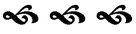
제17장 - 우리가 서로의 안에서 살아가는 방식

만능 기계
내가 열두 살 무렵, 다양한 흥미로운 기능을 수행하는 전자 회로를 조립할 수 있는 키트를 살 수 있었다. 라디오, 두 이진수를 더하는 회로, 치환 암호를 사용해 메시지를 부호화하거나 해독하는 장치, 당신을 상대로 틱택토(tic-tac-toe)를 두는 ‘두뇌’, 그리고 이런 식의 몇몇 다른 장치들을 만들 수 있었다. 이 기계들 각각은 전용(dedicated)이었다. 즉, 딱 한 종류의 재주만 부릴 수 있었다. 이것이 우리가 자라면서 익숙해지는 ’기계’의 통상적인 의미다. 우리는 냉장고를 음식을 차갑게 유지하는 전용 기계로, 알람 시계를 우리를 깨우는 전용 기계로 생각하는 데 익숙하다. 하지만 더 최근에 우리는 원래의 목적을 초월하는 기계들에 익숙해지기 시작했다.
예를 들어 휴대전화를 보자. 요즘에는 경쟁력을 갖추기 위해 휴대전화가 통신 장치라는 원래의 목적을 기준으로(아마 아주 조금도) 홍보되지 않고, 대신 저장할 수 있는 곡의 수, 그 위에서 할 수 있는 게임의 수, 찍을 수 있는 사진의 화질, 그리고 그 밖에 누가 알겠는가 하는 것들로 홍보된다! 휴대전화는 한때 전용 기계였지만 더 이상 그렇지 않다. 왜 그럴까? 그 내부 회로가 특정한 복잡성 임계점을 넘어섰기 때문이며, 그 사실이 휴대전화에 카멜레온 같은 성격을 부여한다. 당신은 휴대전화 안의 하드웨어를 사용하여 워드 프로세서, 웹 브라우저, 수많은 비디오 게임 등등을 담아낼 수 있다. 본질적으로 이것이 바로 컴퓨터 혁명의 핵심이다. 잘 정의된 특정 임계점—나는 이를 ’괴델-튜링 임계점’이라 부르겠다—을 넘어서면, 컴퓨터는 어떤 종류의 기계라도 에뮬레이션할 수 있다.
이것이 1936년 영국의 수학자이자 컴퓨터 개척자인 앨런 튜링이 도입한 ’만능 기계(universal machine)’라는 용어의 의미이며, 오늘날 우리는 비록 대부분의 사람이 그 기술적 용어나 개념을 알지 못하더라도 그 기본 아이디어에 매우 친숙하다. 우리는 웹에서 가상 머신을 일상적으로 다운로드하여 우리의 만능 노트북을 영화 감상, 음악 감상, 게임, 저렴한 국제 전화 걸기 등등 무엇이든 할 수 있는 일시적인 특수 장치로 변환한다. 온갖 종류의 기계들이 전선을 통해 혹은 심지어 공기를 통해, 소프트웨어를 통해, 패턴을 통해 우리에게 다가와 우리의 계산 하드웨어 속으로 떼 지어 들어와 깃든다. 단 하나의 만능 기계가 순식간에, 더 정확히는 마우스를 더블클릭하는 순간 새로운 기능으로 변신한다. 나는 내 컴퓨터 안에 모두 살고 있는 이메일 프로그램, 워드 프로세서, 웹 브라우저, 사진 뷰어, 그리고 열두 개가 넘는 다른 ’애플리케이션’들 사이를 이리저리 오간다. 어느 특정 순간에도 이 독립된 전용 기계들 대부분은 휴면 상태에 있으며, 잠자면서 나의 고귀한 더블클릭에 의해 깨어나 고분고분하게 살아 움직이며 내 명령을 수행하기를 인내심 있게(사실은 무의식적으로) 기다리고 있다.
PM을 자기 자신 안으로 사상한 괴델의 작업에서 영감을 받은 앨런 튜링은 이러한 종류의 계산적 보편성을 위한 결정적 임계점이 정확히 기계가 자신의 구조를 묘사하는 데이터 집합을 읽고 올바르게 해석할 만큼 충분히 유연해지는 지점에 온다는 것을 깨달았다. 이 결정적인 분기점에서 기계는 원칙적으로 자신이 어떤 특정 과제를 수행하는 방식을 단계별로 명시적으로 지켜볼 수 있다. 튜링은 이 결정적 수준의 유연성을 갖춘 기계라면 다른 기계가 아무리 복잡하더라도 어떤 다른 기계든 모방할 수 있음을 깨달았다. 다시 말해, 만능 기계보다 더 유연한 것은 없다. 보편성이야말로 당신이 갈 수 있는 끝이다!
바로 이 때문에 내 매킨토시는 만약 내가 적절한 소프트웨어만 입력해 준다면, 내 아들의 더 비싸고 더 빠른 ‘에일리언웨어(Alienware)’ 컴퓨터(어떤 특정 프로그램을 실행하든)와 구별할 수 없을 정도로 똑같이 작동할 수 있고, 그 반대도 마찬가지다. 유일한 차이는 속도의 차이뿐인데, 내 맥은 속 깊은 곳에서는 언제나 맥으로 남을 것이기 때문이다. 따라서 맥은 에일리언의 하드웨어를 명시적으로 묘사하는 데이터 표를 끊임없이 참조함으로써 그 빠르고 낯선 하드웨어를 모방해야 할 것이며, 그 모든 표를 찾아보는 작업은 매우 느리다. 이것은 마치 내가 모든 작은 곡선을 그리는 방법을 알려 주는 긴 지시 사항 목록을 써서 당신에게 내 서명을 하게 하려는 것과 같다. 원칙적으로는 가능하지만, 내 자신의 손웨어(handware)로 직접 서명하는 것보다 엄청나게 느릴 것이다!
보편성의 뜻밖의 등장
내가 앞서 수학 원리(Principia Mathematica)의 힘을 묘사할 때 말했던 보편성(그때 그 단어를 쓰지는 않았지만)과 이런 종류의 만능 기계를 연결하는 긴밀한 유비가 있다. 버트런드 러셀과 앨프리드 노스 화이트헤드는 짐작하지 못했지만 쿠르트 괴델은 깨달았던 사실은, 양의 정수의 특정 기본 특징들(교환법칙, 분배법칙, 수학적 귀납법 같은 기본적인 사실들)을 표상함으로써 그들이 자신도 모르게 자신들의 형식 체계 PM이 핵심 임계점을 넘어 ’보편적’이 되도록 만들었다는 점이다. 즉, 임의로 복잡한 다른 패턴들을 모방하는 수론적 함수들을 정의할 수 있게(실제로 심지어 돌아서서 자기 자신을 모방하여 괴델의 검은 띠 기술을 낳을 수도 있게) 만들었다는 것이다.
러셀과 화이트헤드는 자신들이 무엇을 만들어 냈는지 깨닫지 못했는데, PM을 다른 무언가를 ’시뮬레이션’하는 데 사용할 생각을 전혀 하지 못했기 때문이다. 그 아이디어는 그들의 레이더망에 잡히지 않았다(그 시절에는 레이더 자체도 아무의 레이더망에 잡히지 않았지만 말이다). 소수, 제곱수, 두 제곱수의 합, 두 소수의 합, 피보나치 수 등은 단지 아름다운 수학적 패턴으로만 여겨졌고—숫자로 이루어진 패턴은 아무리 기막히게 정교하고 끝없이 매혹적이라 하더라도 다른 무언가의 대리인이자 다른 무언가를 나타내는 것임은 말할 것도 없고, 다른 무언가와 동형이라고조차 생각되지 않았다. 하지만 괴델과 튜링 이후, 그런 순진함은 순식간에 사라져 버렸다.
대체로 초기 전자 컴퓨터를 설계한 공학자들 역시 러셀과 화이트헤드만큼이나 자신들이 무심코 탄생시키고 있는 풍요로움을 알지 못했다. 그들은 자신이 매우 제한적이고 순전히 군사적인 범위의 기계—예컨대 바람과 공기 저항을 고려하여 탄도 미사일의 궤적을 계산하는 기계나, 매우 특정한 종류의 적군 암호를 해독하는 기계—를 만들고 있다고 생각했다. 그들은 자신의 컴퓨터를 특수화된 단일 목적 기계—마치 각각 단 하나의 곡만 연주할 수 있는 태엽 감는 오르골 같은 것—로 구상했다.
하지만 어느 시점에, 괴델의 1931년 논문에 크게 기반을 둔 앨런 튜링의 추상적인 계산 이론이 구체적인 공학 현실과 충돌했을 때, 좀 더 통찰력 있는 몇몇 사람들(특히 튜링 자신과 존 폰 노이만)은 둘 더하기 둘을 맞추어 보고, 괴델이 그토록 강력함을 보여 준 정수 산술의 풍요로움을 통합한 자신들의 기계가 바로 그로 인해 보편적이라는 사실을 깨달았다. 순식간에 이 기계들은 구멍이 뚫린 임의의 종이 두루마리를 읽을 수 있어서 어떤 곡이든 연주할 수 있는 오르골과 같아졌다. 그때부터 휴대전화가 그저 평범한 옛날 휴대전화 페르소나 외에 많은 페르소나를 입을 수 있게 되기까지는 시간문제일 뿐이었다. 그들이 해야 할 일은 단 하나의 ’곡’으로 자신들을 제한하던 복잡성과 메모리 크기의 임계점을 넘어서는 것뿐이었고, 그러자 무엇이든 될 수 있었다.
초기 컴퓨터 공학자들은 컴퓨터를 숫자 계산 장치로 생각했고 숫자를 보편적 매체로 보지 않았다. 오늘날 우리(여기서 ’우리’란 전문가들이 아니라 문화 전체를 뜻한다) 역시 숫자를 그런 식으로 보지 않지만, 우리의 이해 부족은 완전히 다른 이유—사실 정반대의 이유—때문이다. 오늘날 그것은 그 모든 숫자가 우리 노트북과 데스크톱 화면 뒤에 너무나 깔끔하게 숨겨져 있어서 우리가 그것들이 거기에 있다는 사실조차 완전히 잊어버리기 때문이다. 우리는 오직(설계된 대로 산술 명령을 수행하고 있는) 중앙처리장치 안에만 존재하는 ’드림팀’들 사이에서 펼쳐지는 가상 축구 경기를 화면으로 지켜본다. 아이들은 가상의 자전거를 타고 가상의 거리를 달리는 작은 사람들이 사는 가상의 마을을 짓는데, 그곳에서는 가상의 나무에서 나뭇잎이 떨어지고 가상의 연기가 가상의 공기 속으로 흩어진다. 우주론자들은 가상의 은하를 만들어 풀어놓고 그것들이 가상으로 충돌할 때 무슨 일이 일어나는지 지켜본다. 생물학자들은 가상의 단백질을 만들어 그것들이 구성 요소인 가상 소분자들의 복잡한 가상 화학에 따라 접히는 모습을 지켜본다.
나는 컴퓨터 화면에서 일어나는 수백 가지 일을 나열할 수 있지만, 이 모든 일이 하드웨어 수준에서 훨씬 아래에 있는 정수의 덧셈과 곱셈 덕분에 일어나고 있다는 사실을 생각하는 사람은 거의 없다. 하지만 그것이 바로 실제로 일어나고 있는 일이다. 결국 우리가 컴퓨터를 컴퓨터(계산기)라고 부르는 데는 다 이유가 있다! 컴퓨터는 실제로 이진 표기법으로 표현된 정수의 합과 곱을 계산하고 있다. 그리고 그런 의미에서 1931년 세상을 눈부시게 하고 러셀을 부수며 힐베르트를 쓰러뜨린 괴델의 비전은 우리의 다운로드하고 업그레이드하는 기가바이트 문화 속에서 너무나 흔한 일상이 되어 버려서, 우리 모두가 항상 그 안에서 헤엄치고 있음에도 불구하고 그것을 조금이라도 의식하는 사람은 거의 없다. 우리 주변에 가시적으로, 아니 오히려 ‘가청적으로’ 남아 있는 원래 통찰의 유일한 흔적은 바로 ’컴퓨터’라는 단어 그 자체다. 그 용어는 당신이 곰곰이 생각해 보기만 한다면, 모든 화려한 그림, 매혹적인 게임, 번개처럼 빠른 웹 검색 아래에서는 정수 산술 외에 아무것도 일어나고 있지 않다는 사실을 일깨워 준다. 얼마나 유쾌한 농담인가!
사실 그것은 그보다 더 모호하며, 그 이유는 제11장에서 내가 상세히 설명한 것과 모두 같다. 패턴이 있는 곳이라면 어디든 그것은 자기 자신으로 보일 수도 있고, 자신과 동형인 그 무엇을 나타내는 것으로 보일 수도 있다. 퐁포네트의 방황에 적용되는 말은 공교롭게도 오렐리의 방황에도 적용되며, 비록 그중 하나가 원래 의도된 해석이었다 하더라도 어느 쪽 해석이 다른 쪽보다 더 참된 것은 아니다. 마찬가지로 이진 표기법으로 쓰인 정수에 대한 어떤 연산(예컨대 “0000000011001111”을 “1100111100000000”으로 변환하는 것)을 어떤 사람은 256을 곱하는 것으로 묘사할 수도 있고, 다른 관찰자는 8비트 왼쪽 시프트로, 또 다른 관찰자는 한 픽셀에서 이웃 픽셀로 색을 옮기는 것으로, 또 다른 누군가는 파일에서 영숫자 문자 하나를 삭제하는 것으로 묘사할 수도 있다. 각자가 일어나고 있는 일에 대한 올바른 묘사인 한, 그중 어느 것도 특권적이지 않다. 그러므로 우리가 컴퓨터를 ’컴퓨터’라고 부르는 이유는 역사적이다. 컴퓨터는 정수 계산 기계로 출발했고 물론 여전히 그렇게 묘사되는 것이 타당하지만—우리는 이제 1931년 쿠르트 괴델이 처음 그랬듯이, 그러한 장치들이 창시자들이 의도했던 것과는 환상적으로 다른 용어로도 똑같이 타당하게 지각되고 이야기될 수 있음을 깨닫는다.
만능 존재
우리 인간 역시 다른 종류의 만능 기계다. 비록 진화가 이러한 종류의 ’표상적 보편성’이 생겨나도록 어떤 거대한 계획을 세운 적은 없지만, 우리의 신경 하드웨어는 임의의 패턴을 복사할 수 있다. 우리의 감각과 그다음 우리의 심볼을 통해, 우리는 다양한 종류의 외부 현상을 내면화할 수 있다. 예를 들어 우리가 연못에 퍼지는 물결을 지켜볼 때, 우리의 심볼은 그 원형 모양을 메아리처럼 따라 하고 추상화하며, 훨씬 나중에 그 모양의 본질을 재생할 수 있다. 내가 ’본질’이라고 말한 이유는 일부—사실 대부분의—세부 사항은 손실되기 때문이다. 당신도 아주 잘 알다시피, 우리는 우리가 마주치는 것의 모든 수준을 간직하는 것이 아니라, 자연선택의 압력을 통해 우리의 하드웨어가 가장 중요하다고 여기게 된 수준들만을 간직한다. 또한 분명히 해 두어야 할 점은(어떤 독자도 그런 함정에 빠지지 않기를 바라지만), 내가 우리의 심볼이 외부 패턴을 ’내면화’하거나 ’복사’한다고 말할 때, 우리가 연못의 물결을 보거나 그런 장면(또는 여러 그런 장면이 뒤섞인 것)의 기억을 ’재생’할 때 뇌 속의 어떤 수평면 위에 문자 그대로 원형 패턴이 퍼져 나간다는 뜻이 아니라는 것이다. 내 말은 물, 젖음, 연못, 수평면, 원형, 확장, 위아래로 흔들리는 것들 등의 개념과 연결된 수많은 구조들이 공동으로 활성화된다는 뜻이다. 나는 머릿속의 영화 스크린에 대해 이야기하고 있는 것이 아니다!
표상적 보편성은 또한 우리가 아이디어와 사건을 직접 목격하지 않고도 수입할 수 있음을 의미한다. 예를 들어 제11장에서 언급했듯이, 인간은(대부분의 다른 동물은 그렇지 못하지만) 텔레비전 화면의 2차원 픽셀 배열을 쉽게 처리하여 그 끊임없이 변하는 배열이 시간에 따라 전개되는 멀리 떨어져 있거나 허구적인 3차원 상황을 부호화하는 것으로 볼 수 있다.
집에서 멀리 떨어진 시에라네바다로 스키 휴가를 갔을 때, 아이들과 나는 우리가 골든리트리버 올리를 맡겨 둔 블루밍턴 애견 호텔의 ‘도기 캠(doggie cam)’을 이용했다. 월드와이드웹 덕분에 우리는 야외 울타리가 쳐진 놀이 공간에서 무작위 브라운 운동을 하는 입자들처럼 어슬렁거리는 스무 마리 남짓한 개들의 뚝뚝 끊기는 정지 화면 연속을 볼 수 있었다. 비록 각 강아지가 꽤 작은 픽셀 배열로 렌더링되었지만, 우리는 꼬리 각도 같은 미묘한 특징으로 우리의 올리를 자주 알아볼 수 있었다. 왠지 아이들과 나는 올리를 시각적으로 몰래 엿보는 이 행위가 꽤 우스꽝스럽다고 느꼈고, 우리는 인간 친구들에게 이 익살스러운 장면을 쉽게 묘사할 수 있었으며(그리고 이 몇 줄의 글이 당신의 마음속에도 애견 호텔의 개 장면과 스키 리조트의 인간 장면 모두를 생생하게 불러일으켰으리라 상당한 돈을 걸고 장담할 수 있지만), 우리 모두는 우리가 수천 마일 떨어진 곳에서 올리를 ’염탐하고’ 있었다는 사실을 올리 자신에게 설명할 수 있을 희망은 지옥에 가도 없다는 것을 깨달았다. 올리는 결코 알지 못할 것이고, 결코 알 수 없을 것이다.
왜 그럴까? 올리는 개이고, 개의 뇌는 보편적이지 않기 때문이다. 개들은 ‘뚝뚝 끊기는 정지 사진’, ‘24시간 웹캠’, ‘애견 호텔에서 노는 개들 염탐하기’, 심지어 ‘2,000마일 떨어진 곳’ 같은 아이디어를 흡수할 수 없다. 이것은 인간과 개 사이—실제로 인간과 다른 모든 종 사이—의 거대하고 근본적인 간극이다. 우리를 구별 짓고, 우리를 고유하게 만들며, 결국 우리에게 우리가 ’영혼’이라 부르는 것을 주는 것이 바로 이것이다.
생명체의 세계에서 표상적 보편성이라는 마법의 임계점은 시스템의 심볼 레퍼토리가 명백한 한계 없이 확장 가능해질 때마다 넘어선다. 이 임계점은 종 수준에서 초기 영장류로부터 우리 자신으로 오는 길 어딘가에서 넘어섰다. 괴델-튜링 임계점에 해당하는 이 지점 너머의 시스템들—간단히 ’존재(beings)’라고 부르자—은 자신이 마주치는 다른 존재들을 자기 내부에 모델링할 수 있는 능력, 즉 잠시만 마주친 존재들의 조악한 임시 모델을 급조하고, 시간이 지나면서 그런 거친 모델을 다듬으며, 심지어 아무것도 없는 곳에서 상상의 존재들을 발명해 내는 능력까지 갖추고 있다. (다른 존재들을 발명하는 성향을 가진 존재들은 종종 비공식적으로 ’소설가’라고 불린다.)
일단 마법의 임계점을 넘어서면, 만능 존재들은 필연적으로 다른 만능 존재들의 내면성을 맛보고자 하는 게걸스러운 갈증을 느끼게 되는 듯하다. 바로 이 때문에 우리에게 영화, 연속극, 텔레비전 뉴스, 블로그, 웹캠, 가십 칼럼니스트, 피플 잡지, 그리고 위클리 월드 뉴스 등이 있는 것이다. 사람들은 다른 사람들의 머릿속으로 들어가고 싶어 하고, 다른 두개골 안에서 ‘밖을 내다보고’ 싶어 하며, 다른 사람들의 경험을 게걸스럽게 삼키고 싶어 한다.
내가 그것을 다소 냉소적으로 묘사하긴 했지만, 표상적 보편성과 그것이 대리 체험을 향해 만들어 내는 거의 채워질 줄 모르는 갈증은 내가 인류의 가장 존경스러운 자질로 여기는 공감에서 엎어지면 코 닿을 거리에 있다. 심오한 방식으로 다른 누군가가 ’된다’는 것은 단지 지적으로 그들이 세상을 보는 대로 보고 그들이 자라면서 그들을 빚어낸 장소와 시간에 뿌리를 내린 듯 느끼는 것만이 아니다. 그것은 그보다 훨씬 더 나아간다. 그것은 그들의 가치를 받아들이고, 그들의 욕구를 떠맡고, 그들의 희망을 살고, 그들의 갈망을 느끼고, 그들의 꿈을 공유하고, 그들의 두려움에 전율하고, 그들의 삶에 참여하며, 그들의 영혼과 합쳐지는 것이다.
방문을 받다
얼마 전 어느 날 아침, 나는 머릿속에서 아버지에 대한 기억이 풍부하게 맥동하는 가운데 잠에서 깨어났다. 빛나는 한순간 동안 꿈꾸는 내 마음은 비록 ’그’가 내 뇌의 무대라는 희박한 매체 속에 떠 있어야 했을지라도 가장 생생한 방식으로 아버지를 다시 살려 낸 듯했다. 그럼에도 불구하고 짧은 시간 동안 아버지가 정말로 다시 돌아온 것처럼 느껴졌고, 그러고는 슬프게도 순식간에 그냥 펑 하고 사라져 버렸다. 모든 성인 인간에게 너무나 친숙한 이런 씁쓸하면서도 달콤한 경험은 어떻게 이해해야 할까? 우리 안에 깃든 이 소프트웨어 존재들은 어느 정도의 실재성을 가질까? 몇 줄 위에서 내가 왜 ’그’에 따옴표를 붙였을까? 왜 그토록 조심하고 왜 머뭇거렸을까?
당신이 사랑하는 누군가(그 사람이 수년 전에 세상을 떠났든 지금 당장 당신과 전화 통화를 하고 있는 상대방이든)에 대해 스치듯 지나가는 것 이상으로 꿈을 꾸거나 생각할 때 실제로 무슨 일이 일어나고 있는 것일까? 이 책의 용어로 말하자면 무슨 일이 일어나고 있는지에 대해 아무런 모호함도 없다. 당신 두개골 속의 그 사람을 가리키는 심볼이 마치 누군가가 아이콘을 더블클릭한 것처럼 확실하게 휴면 상태에서 불쑥 깨어나 활성화된 것이다. 그리고 이런 일이 일어나는 순간, 화면에 게임이 열렸을 때와 마찬가지로 당신의 마음은 ‘정상적인’ 맥락에서 작동하는 방식과 다르게 작동하기 시작한다. 당신은 ’낯선 만능 존재’가 당신을 침략하도록 허용한 것이며, 어느 정도 그 낯선 존재가 당신 두개골 안의 주도권을 잡고 자기 방식대로 사물을 이리저리 밀어붙이며 평소에는 솟아오르지 않았을 단어, 아이디어, 기억, 연상들이 당신의 뇌 속에서 부글부글 끓어오르게 만든다. 사랑하는 사람을 가리키는 심볼이 활성화되면, 그 사람의 소중한 스타일, 즉 세상에 뿌리내리고 세상을 바라보는 그들만의 고유한 방식을 나타내는 일련의 조율된 경향 전체가 움직이기 시작한다. 그 결과, 당신의 두개골에 대한 이 방문이 이루어지는 동안 당신은 평소라면 하지 않았을 다른 농담을 뱉어 내고, 다른 감정적 빛 속에서 사물을 바라보고, 다른 가치 판단을 내리는 등 스스로에게 놀라게 될 것이다.
하지만 지금 당장 우리에게 문제의 핵심은 다음 질문이다. 다른 사람에 대한 당신의 심볼이 실제로 하나의 ’나(I)’인가? 그 심볼이 내적 경험을 가질 수 있는가? 아니면 그것은 막대기나 돌이나 놀이터 그네에 대한 당신의 심볼만큼이나 살아 있지 않은가? 내가 놀이터 그네를 예로 든 데는 이유가 있다. 내가 당신에게 그네를 떠올리게 하는 순간, 당신이 그것을 어느 놀이터에 배치했든, 그 의자가 무엇으로 만들어졌다고 상상하든, 그것이 매달린 철봉이 얼마나 높다고 상상하든, 당신은 그네가 앞뒤로 흔들리고, 그네 특유의 우스꽝스러운 방식으로 살짝 뒤뚱거리며, 밀어 주지 않으면 에너지를 잃어 가는 모습을 볼 수 있고, 부드럽게 짤랑거리는 쇠사슬 소리도 들을 수 있다. 아무도 그네 자체를 살아 있다고 부르지는 않겠지만, 그 정신적 대리인이 당신 뇌의 들끓는 기질 속에서 춤추고 있다는 데는 의심의 여지가 없다. 결국 뇌가 만들어진 목적이 바로 그것—활성 심볼들의 춤을 위한 무대가 되는 것—이다.
만약 당신이 내가 그렇고 이 책의 대부분에서 주장해 왔듯이, 개념이란 뇌 속의 활성 심볼이라고 진지하게 믿고, 나아가 사물 못지않게 사람 역시 뇌 속의 심볼로 표상된다(다시 말해, 자신이 아는 각각의 사람은 비록 매우 복잡한 개념일지라도 머릿속의 개념에 의해 내적으로 거울처럼 비추어진다)고 진지하게 믿으며, 마지막으로 자아 역시 하나의 개념, 단지 훨씬 더 복잡한 개념(즉, ‘나’, ‘개인적 젬마’, 바위처럼 단단한 ‘구슬’)이라고 진지하게 믿는다면, 이러한 믿음의 집합으로부터 나오는 필연적이고 피할 수 없는 귀결은 당신의 뇌가 다양한 정도로 다른 ’나’들, 다른 영혼들에 의해 깃들어 있으며, 그 각각의 정도는 당신이 문제의 개인을 얼마나 충실하게 표상하고, 또 그와 얼마나 공명하느냐에 달려 있다는 것이다. 내가 ‘그리고 그와 공명하느냐’라는 단서를 붙인 이유는, 아무 옷이나 쑥 들어갈 수 없듯이 아무 영혼에나 쑥 들어갈 수 있는 것이 아니기 때문이다. 어떤 영혼과 어떤 양복은 단순히 다른 것들보다 더 잘 ’맞는다’.
케미스트리와 그 결여
나에게 영혼들 사이의 더 나은, 혹은 더 나쁜 적합성이나 ’공명’이라는 개념을 가장 잘 보여 주는 예는 음악적 취향이다. 나는 30여 년 전, 한 피아니스트 친구가 벨러 버르토크의 바이올린 협주곡 2번을 하늘이 닳도록 칭찬하며 내게 꼭 들어 보라고 고집했던 일을 결코 잊지 못할 것이다. 이것은 몇 년 전 내가 그녀에게 내가 아는 가장 감동적인 음악 중 하나인 프로코피예프의 피아노 협주곡 3번을 소개해 주었던 것에 대한 보답이었다. 당시 그녀는 프로코피예프의 마지막 악장에 믿을 수 없을 정도로 강렬하게 공명했고, 그것은 우리가 거의 같은 음악적 파장에 있다는 신호처럼 보였다. 따라서 나는 버르토크의 바이올린 협주곡 2번에 대한 그녀의 열정적인 추천을 매우 진지하게 받아들였다. 나를 부추기기 위해 그녀는 버르토크가 프로코피예프에서 자신이 가장 좋아하는 화음을 반복해서 사용했을 뿐만 아니라, 그것을 더 잘 사용했다고 말했다. 더 말할 필요도 없었다! 나는 즉시 나가서 그 음반을 샀다. 그날 저녁, 큰 기대를 품고 음반을 걸어 주의 깊게 들었다. 실망스럽게도 나는 전혀 감동받지 못했다. 매우 의아했다. 나는 다시 들었다. 그리고 또 다시 들었다. 그리고 또 다시, 또 다시 들었다. 몇 주 동안 그토록 극찬받던 그 곡을 스무 번은 아니더라도 열두 번은 들었을 텐데, 중간 어디쯤에 있는 15초짜리 구간이 나를 살짝 사로잡은 것을 제외하면 내 안에서는 아무 일도 일어나지 않았다. 당신은 이것을 내 안의 맹점—또는 농점(deaf spot)—이라고 부를 수도 있고, 아니면 내가 선호하듯이, 그저 내 영혼과 버르토크의 영혼 사이의 ’어울림’이 극도로 나쁘다고 말할 수도 있을 것이다. 그리고 이것은 다른 버르토크 작품들을 통해서도 수없이 확인되었기에, 이제 나는 버르토크를 들을 때 내 안에서 무슨 일이 일어날지(아니면 오히려 일어나지 않을지) 꽤 확신한다. 비록 그가(민요를 바탕으로) 쓴 몇몇 작은 소품들은 좋아하지만, 그의 작품 대부분은 내게 전혀 말을 걸지 않는다. 그리하여 이 친구와 내가 음악적으로 많은 공통점을 가지고 있다는 나의 느낌은 크게 줄어들었고, 사실 그 후 우리의 우정도 시들해졌다.
방금 그 문단을 쓰고 난 뒤, 나는 30년 된 기억이 틀렸을지, 아니면 그동안 내 영혼이 새로운 음악적 지평에 열렸을지 궁금해져서 곧장 내 레코드 플레이어(그렇다, 바이닐이다)로 가서 버르토크 바이올린 협주곡을 다시 걸고 처음부터 끝까지 주의 깊게 들었다. 내 반응은 완전히 똑같았다. 나에게 그 곡은 그저 목적 없이 방황하고 또 방황하며 어디에도 도달하지 못하는 것처럼 보인다. 그 곡을 들을 때 나는 초전도체에 정면으로 부딪히는 자기장 같은 기분이 든다—단 1마이크론도 뚫고 들어갈 수 없다! 그것이 너무 난해한 비유라면, 그냥 내가 표면에서 바로 꽉 막혀 버린다고 말하자. 그 곡은 내게 전혀 말이 되지 않는다. 그것은 이해할 수 없는 관용어로 쓰인 음악이다. 외계 문자로 쓰인 책을 보는 것과 같다. 그 뒤에 지성—어쩌면 엄청난 지성!—이 있다는 것은 알 수 있지만, 그것이 무슨 말을 하고 있는지는 전혀 짐작할 수 없다.
내가 이 다소 우울한 일화를 들려주는 이유는, 이것이 우리가 더 나은 단어가 없어 사람들 사이의 ’케미스트리(궁합)’라고 부르는 것과 관련된 삶 속의 수천 가지 경험을 대변하기 때문이다. 버르토크와 나 사이에는 그냥 케미스트리가 없다. 나는 그의 지성, 창조적 추진력, 높은 도덕적 기준을 존경하지만, 그의 심장을 뛰게 만든 것이 무엇인지는 전혀 모른다. 단서조차 없다. 하지만 나는 수천 명의 사람들에 대해서도 똑같이 말할 수 있다—그리고 그 정반대가 똑같이 강하게 성립하는 사람들도 있다. 예를 들어, 버르토크 협주곡과 불과 몇 년 차이로 쓰인 프로코피예프의 바이올린 협주곡 1번보다 내게 더 큰 의미를 지니는 곡은 세상에 없다. (사실 어처구니없게도 나는 둘이 마치 같은 천에서 재단된 것처럼 나란히 언급되는 것조차 본 적이 있다. 여기저기 표면적인 질감은 비슷할지 몰라도 나에게 둘은 바흐와 에미넴만큼이나 다르다.) 버르토크가 오리 등 위의 물처럼 내게서 줄줄 흘러내리는 반면, 프로코피예프는 무한히 취하게 하는 영약처럼 내 안으로 흘러든다. 그것은 내게 말을 걸고, 내 안에서 솟구치며, 나를 불태우고, 삶의 볼륨을 최대치로 높인다.
구구절절 늘어놓을 필요는 없을 것이다. 모든 독자가 이런 종류의 케미스트리와 비(非)케미스트리를 경험해 보았을 것이라 확신하기 때문이다—어쩌면 버르토크와 프로코피예프 바이올린 협주곡에 대해 나와 정반대 방식으로 반응할 수도 있겠지만, 그렇다 하더라도 내가 전하려는 메시지는 크고 명료하게 전달될 것이다. 음악은 내게 마음으로 가는, 혹은 마음과 마음 사이를 잇는 직접적인 통로—사실 가장 직접적인 통로—인 것처럼 보인다. 호감과 반감을 모두 포함하여 음악적 취향이 전면적으로 일치하는 것은—극도로 드물게 마주치는 일이긴 하지만—내가 이제껏 발견한 영혼의 친화성에 대한 가장 확실한 지표다. 그리고 영혼의 친화성이란 관련 사람들이 서로의 본질을 빠르게 알아갈 수 있으며, 서로의 안에서 살아갈 큰 잠재력을 가지고 있음을 의미한다.
모방 소행성은 녹아내리는 운석을 흡수하며 자란다
어린 시절, 청소년기, 심지어 성인이 되어서도 우리는 모두 모방꾼(copycat)이다. 우리는 무의식적으로 그리고 자동적으로 다른 사람들의 온갖 행동 파편을 우리의 레퍼토리에 통합한다. 나는 이미 1학년 때의 내 ‘호팔롱 캐시디 미소’를 언급한 적이 있는데, 그것은 아마 지금도 내 ’진짜’ 미소에 희미하게 영향을 미치고 있을 것이다. 그리고 나는 그 나이대와 그 이후의 다른 모방 행동들에 대한 수십 가지의 생생한 기억을 가지고 있다. 나는 한 친구의 울퉁불퉁하고 삐뚤빼뚤한 필체를 동경하다가 따라 했던 일, 쾌활한 반 친구의 멋진 허풍 스타일, 한 형의 거들먹거리는 걸음걸이, 영화 80일간의 세계일주에서 프랑스인 매표원이 américain이라는 단어를 발음하던 방식, 전화 통화를 끝낼 때마다 항상 상대방의 이름을 부르던 대학 친구의 습관 등을 기억한다. 그리고 내 자신의 비디오를 볼 때면, 나는 내 여동생 로라의 너무나 익숙한 표정들(그것들은 정말이지 그녀답다)이 내 얼굴을 스쳐 지나가는 것을 보고 언제나 깜짝 놀란다. 우리 중 누가 누구에게서, 언제, 왜 빌려 왔을까? 나는 결코 알지 못할 것이다.
나는 오랫동안 내 두 아이가 미국인 친구들의 귀에 쏙 들어오는 억양 패턴과 좋아하는 문구들을 따라 하는 것을 지켜보았고, 아이들의 이탈리아어 속에서도 특정 이탈리아인 친구들의 소리와 문구가 메아리치는 것을 들을 수 있다. 두 아이 중 누구의 말을 듣다 보면 단어와 소리가 스쳐 지나갈 때 그 친구들의 이름을 줄줄이 읊을 수 있을 것만 같은 때도 있었다.
내가 그토록 강렬한 감정적 열정을 담아—순수한 나처럼 느껴졌던 열정으로—작곡하곤 했던 작은 피아노 소품들은 아이러니하게도 쇼팽, 바흐, 프로코피예프, 라흐마니노프, 쇼스타코비치, 스크랴빈, 라벨, 포레, 드뷔시, 풀랑크, 멘델스존, 거슈윈, 포터, 로저스, 컨, 그리고 그 시절 내가 끝없이 들었던 적어도 열두 명 이상의 다른 작곡가들에게서 나온 알아볼 수 있는 특징들로 가득하다. 내 글쓰기 스타일에는 내가 모방하고 싶었던 놀라운 방식으로 단어를 사용했던 수많은 작가들의 흔적이 남아 있다. 내 아이디어들은 어머니, 아버지, 어린 시절 친구들, 선생님들에게서 왔다.…… 내가 하는 모든 일은 실제로든 가상으로든 내게 가까웠던 다른 사람들로부터 변형하여 빌려 온 일종의 모방이며, 가상의 영향력들이 가장 심오한 축에 속한다.
나의 직물 상당 부분은 내가 한 번도 직접 마주 본 적이 없고 거의 확실히 앞으로도 볼 일이 없으며 따라서 나에게는 오직 ’가상 인물’일 뿐인 수천 명의 유명 인사들의 경험에서 빌려 온 조각들로 짜여 있다. 여기 몇 가지 예가 있다. 닐스 보어, 닥터 수스, 캐럴 킹, 마틴 루터 킹, 빌리 홀리데이, 미키 맨틀, 메리 마틴, 맥신 설리번, 안와르 사다트, 샤를 트르네, 로버트 케네디, P. A. M. 디랙, 빌 코스비, 피터 셀러스, 앙리 카르티에-브레송, 도모나가 신이치로, 제시 오언스, 그루초 마르크스, 재닛 마골린, 로알드 달, 프랑수아즈 사강, 시드니 베셰, 셜리 매클레인, 자크 타티, 그리고 찰스 슐츠.
방금 언급한 사람들은 모두 내 삶에 커다란 긍정적 영향을 미쳤고 그들의 삶은 내 삶과 상당 부분 겹쳤으므로, 나는(적어도 이론적으로는) 그들 중 누구와도 직접 마주칠 수 있었다. 하지만 내 안에는 W. C. 필즈, 갈릴레오 갈릴레이, 해리 후디니, 파울 클레, 클레망 마로, 존 배스커빌, 패츠 월러, 안네 프랑크, 홀든 콜필드, 네모 선장, 클로드 모네, 레온하르트 오일러, 단테 알리기에리, 알렉산드르 푸시킨, 예브게니 오네긴, 제임스 클러크 맥스웰, 새뮤얼 픽윅 경, 찰스 배비지, 아르키메데스, 그리고 찰리 브라운처럼 내가 결코 만나고 상호작용할 수 없었던 수천 명의 개인들의 무수한 흔적도 담겨 있다.
물론 후자 목록의 인물들 중 일부는 허구이고 다른 일부는 허구와 실제 사이를 오가지만, 내 마음속에서 그들이 모두 단지 가상 존재일 뿐이라는 사실보다 더 중요한 것은 없다. 중요한 것은 허구/비허구 차원도, 가상/비가상 차원도 아니라, 한 개인이 나의 내면성과 상호작용한 기간과 깊이다. 그런 점에서 홀든 콜필드는 알렉산드르 푸시킨과 거의 같은 수준에 자리하며, 단테 알리기에리보다는 훨씬 높은 곳에 자리한다.
우리는 모두 기이한 콜라주이자, 마치 난데없이 날아와 우리와 충돌해 들러붙은 운석들처럼 다른 사람들의 습관과 아이디어와 스타일과 버릇과 농담과 문구와 선율과 희망과 두려움을 흡수하며 자라는 별난 작은 소행성들이다. 처음에는 인위적이고 낯선 버릇이었던 것이 햇볕에 녹는 밀랍처럼 천천히 우리 자아의 재료 속으로 녹아들어, 점차(비록 그 사람 역시 애초에 다른 누군가에게서 빌려 왔을지라도) 다른 누군가의 일부였던 것만큼이나 우리의 일부가 된다. 내 운석 비유가 마치 우리가 무작위 폭격의 희생자인 것처럼 들리게 할 수도 있겠지만, 우리가 아무 버릇이나 기꺼이 우리 구체 표면에 흡수한다는 뜻은 아니다—우리는 매우 선택적이어서 대개 우리가 존경하거나 탐내는 특성을 빌려 온다—하지만 우리의 선택 스타일조차도 우리가 반복적으로 흡수한 결과로 변모해 온 것에 의해 수년에 걸쳐 영향을 받는다. 그리고 한때 표면 바로 위에 있던 것이 우리의 반지름이 계속 커짐에 따라 로마 유적처럼 점차 묻혀서 우리의 핵심에 점점 더 가까워진다.
이 모든 것은 우리 각자가 단순히 새로운 방식으로 조합된 다른 사람들의 영혼 파편들의 다발임을 시사한다. 하지만 물론 모든 기여자가 동등하게 표상되는 것은 아니다. 우리가 사랑하고 우리를 사랑하는 사람들이 우리 안에 가장 강하게 표상되며, 우리의 ‘나’는 수년간 메아리쳐 온 그들의 모든 영향력이 복잡하게 공모하여 형성된다. 1964년 데이비드 올레슨이 그린 멋진 펜화 ’쪽매맞춤 변형(parquet deformation)’(아래)은 이 아이디어를 그래픽으로뿐만 아니라 말장난을 통해서도 보여 주는데, 제목이 ’중심의 나(I at the Center)’이기 때문이다.
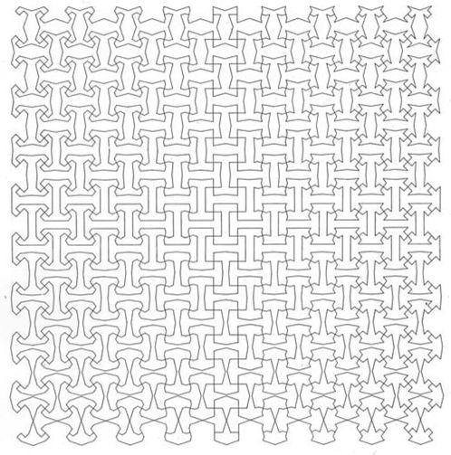
여기서 우리는 중심에 있는 은유적 개인을 보는데, 그 모양(글자 ‘I’)은 모든 이웃들의 모양의 결과다. 마찬가지로 그들의 모양은 그들의 이웃들의 모양의 결과이며, 계속 그런 식이다. 디자인의 가장자리로 멀어질수록 모양들은 점차 서로 점점 더 달라진다. 우리가 우리와 가까운 사람들, 특히 가장 가까운 사람들에 의해 어떻게 결정되는지를 보여 주는 얼마나 멋진 시각적 은유인가!
다른 사람의 내면성을 얼마나 수입할 수 있을까?
가게에서 계산원과 한두 분 동안 상호작용할 때, 우리는 분명 그 사람의 내면의 불꽃에 대한 정교한 표상을 구축하지 않는다. 그 표상은 너무나 부분적이고 덧없어서 며칠 뒤에는 그 사람을 알아보지도 못할 것이다. 크리스마스 쇼핑 광풍이 절정에 달한 번화한 보도를 걸으며 스쳐 지나가는 수백 명의 사람 각각에 대해서도 마찬가지이며, 오히려 그 정도가 더 심하다. 비록 각 사람마다 핵심에 우리 자신의 것과 다소 비슷한 이상한 고리를 가지고 있다는 것을 잘 알지만, 그 고리에 고유성을 불어넣는 세부 사항들은 우리에게 너무나 접근 불가능해서 그들의 그 핵심 측면은 전혀 표상되지 않는다. 대신 우리는 그들의 내면의 불꽃, 그들이 진정 누구인지와는 아무런 관련이 없는 피상적인 측면들만을 등록한다. 그러한 사례들은 우리가 마주치는 대부분의 사람들에 대해 뇌 속에 구축하는 ‘잘린 복도’ 이미지의 전형이다. 우리는 그들의 핵심에 있는 이상한 고리에 대한 감각이 전혀 없다.
위에서 내가 나열한 많은 유명 인사들은 내가 그들의 아이디어나 행적을 접하지 않았다면 내가 누구였을지 상상할 수 없다는 점에서 내 정체성의 중심에 있다. 하지만 내 존재를 작게 스쳐 지나갔을 뿐인, 때로는 거슬리게 때로는 유쾌하게 스쳐 지나갔을 뿐인 수천 명의 다른 유명인들도 있다. 이 더 주변적인 개인들은 주로(내게 좋든 나쁘든 영향을 미친) 다양한 유명한 업적—내뱉은 짧은 명언, 발견한 방정식, 찍은 사진, 디자인한 서체, 잡아낸 직선타, 선동한 군중, 구출한 난민, 꾸민 음모, 즉흥적으로 쓴 시, 건넨 평화 제안, 그린 만화, 지어낸 펀치라인, 흥얼거린 발라드—으로 내 안에 표상된다.
반면 중심적인 인물들은 그들이 남긴 외적인 흔적을 훨씬 뛰어넘는 복잡한 심볼들로 내 뇌 속에 표상된다. 그들은 내 안에 그들의 머릿속에서 사는 것이 어땠는지, 그들의 눈을 통해 세상을 바라보는 것이 어땠는지에 대한 추가적인 희미한 빛을 심어 놓았다. 나는 어떤 경우에는 깊이 그들의 내면성이라는 숨겨진 영역에 들어갔다고 느끼며, 반대로 그들은 내 영역에 침투했다.
하지만 우리가 가장 사랑하는 작곡가, 작가, 예술가 등등이 우리에게 미친 그 모든 경이로운 영향력에도 불구하고, 우리는 필연적으로 직접 알고, 수년간 함께 지내며, 사랑하는 사람들과 훨씬 더 친밀하다. 이들은 우리가 너무나 깊이 아끼기 때문에 그들이 어떤 특정한 개인적 목표를 이루는 것이 우리에게도 중요한 내적 목표가 되며, 그 목표를 실현할 방법을 궁리하는 데 상당한 시간을 보내는 사람들이다(그리고 그것이 그들의 목표인지 우리의 목표인지 모호하기 때문에 나는 의도적으로 ’그 목표’라는 중립적인 표현을 택했다).
우리는 그런 사람들 안에서 살고, 그들은 우리 안에서 산다. 상호작용하는 두 비디오 피드백 시스템의 비유로 돌아가자면, 우리와 그토록 가까운 사람은 우리 화면에 우리 자신의 무한 복도에 더하여 두 번째 무한 복도로 표상된다. 우리는 끝까지 들여다볼 수 있다—그들의 이상한 고리, 그들의 개인적 젬마가 우리 안에 통합되어 있다. 하지만 비유를 반복하자면, 우리의 카메라와 화면은 입자가 거칠기 때문에, 우리는 사랑하는 사람들에 대해 우리 자신의 자기 표상이나 그들 자신의 자기 표상만큼 깊거나 정확한 표상을 가질 수는 없다.
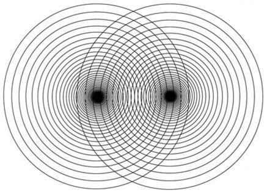
사랑하는 이의 영혼 아이콘을 더블클릭하기
1994년 댄 데닛에게 보낸 이메일 사색에서 내가 캐런이 죽은 뒤 처음으로 그녀의 비디오를 볼 때 어떤 기분일지 걱정했던 대목이 있다. 나는 내 머릿속의 캐런 심볼이 테이프 위의 이미지에 의해 강력하게 활성화되는—그녀가 죽은 이후 어느 순간보다도 더 강력하게 활성화되는—모습을 상상했고, 그것이 만들어 낼 환상의 힘이 두려웠다. 나는 그녀가 계단 옆에 서 있는 것을 보는 듯할 것이지만, 물론 내가 일어나 집 안을 걸어 그녀가 한때 서 있던 그 자리로 가 본다 해도 거기에는 아무런 몸도 없을 것이다. 비록 그녀의 밝은 얼굴을 보고 그녀의 웃음소리를 듣더라도, 그녀에게 다가가 그녀의 어깨에 팔을 두를 수는 없을 것이다. 테이프를 보는 것은 물리적으로 그녀를 다시 데려온 것처럼 보이게 함으로써, 하지만 현실에서는 전혀 그런 일이 일어나지 않음으로써 그녀의 죽음에 대한 고뇌를 고조시킬 것이다. 그녀의 물리적 본성은 테이프에 의해 되살아나지 않을 것이다.
하지만 그녀의 내적 본성은 어떨까? 캐런이 살아 있을 때 그녀의 존재는 일상적으로 내 뇌 속의 특정 심볼들을 촉발했다. 아주 명백하게, 비디오는 비록 더 적은 방식으로긴 하지만 그 똑같은 심볼들을 다시 촉발할 것이다. 그렇게 내 뇌 속에서 활성화된 심볼들의 춤의 본질은 무엇일까? 비디오가 필연적으로 내 ‘캐런’ 아이콘을 더블클릭할 때, 내 안에서 무슨 일이 일어날까? 휴면 상태의 어둠 속에서 솟구쳐 오를 그 기묘하고 복잡한 것은 실제적인 것—어쨌든 내 안의 ’나’가 실제적인 것만큼이나 실제적인 것—일 것이다. 그렇다면 핵심 질문은 이것이다. 내 뇌 속의 그 기묘한 것은 한때 캐런의 뇌 속에서 번성했던 ’나’와 얼마나 다른가? 그것은 완전히 다른 유형의 것인가, 아니면 그저 덜 정교할 뿐 같은 유형의 것인가?
다른 사람의 뇌로 생각하기
1994년 그 쓰라린 봄날 나의 씨름에 대한 댄 데닛의 많은 반응 중에서, 내 마음속에 언제나 두드러지게 남았던 문장이 하나 있다. “자네 말로 미루어 볼 때 캐런은 앞으로 꽤 오랜 시간 동안 자네의 뇌로 생각하게 될 것이 분명하군.” 나는 이 감동적인 문구에 감사하고 깊이 공감했는데, 나중에 알고 보니 댄이 우리의 공동 친구이자 인공지능 개척자인 마빈 민스키의 말을 약간 각색해 인용한 것이었다—어디에나 모방꾼들이 있다!
“그녀는 자네의 뇌로 생각할 걸세.” 데닛-민스키의 이 발화가 내게 의미한 바는 대략 다음과 같았다. 내게 들어오는 입력 신호들이 특정 상황에서는 내 기억이 아니라 캐런의 기억(아니면 오히려 그것들에 대한 나의 저해상도, 거친 입자의 ‘복사본’)으로 이어지는 내 뇌 속 경로를 따라갈 것이라는 뜻이다. 우리 아이들의 얼굴, 그녀의 부모님과 자매들과 형제들의 목소리, 우리 집의 방들—그런 것들이 때로는 캐런 스타일의 의미를 부여하는 준거틀 속에서 처리되어, 그것들을(다시 말해 내 뇌 속에 조악하게 렌더링된 대로) 그녀의 경험에 뿌리내리고 관련짓는 틀 안에 배치할 것이다. 내게 부딪히는 신호들에 쌓일 의미론은 그녀의 삶에서 유래한 것일 것이다. 그러므로 우리가 함께 살았던 수년 동안 내가 캐런을 이 땅에 뿌리내리게 했던 경험들을 정확하게 수입하고 이식한 만큼, 그녀는 세상에 반응하고 내 안에서 계속 살아갈 수 있을 것이다. 바로 그만큼, 오직 그만큼만, 캐런은 내 뇌로 생각하고, 내 가슴으로 느끼고, 내 영혼 속에서 살아갈 것이다.
입자 크기가 다른 모자이크
모든 것이 “X한 만큼”이라는 그 말에 달려 있었으므로, 여기서 무엇보다 가장 중요해 보였던 것은 원본에 대한 충실도였다. 그리고 나는 곧 작은 색돌들로 만든 모자이크 초상화에 기반한 비유를 찾아냈다. 누군가가 당신을 더 친밀하게 알게 될수록 그 사람의 머릿속에 있는 당신의 ’초상화’는 더 세밀한 입자가 될 것이다. 당신의 가장 높은 해상도의 초상화는 물론 당신 자신의 자화상—평생에 걸쳐 구축된, 정교하게 세밀한 입자를 가진 당신 자신의 모자이크, 당신의 자기 심볼—이다. 따라서 캐런의 경우, 그녀 자신의 자기 심볼이 단연코 그녀의 내적 본질, 그녀의 내면의 빛, 그녀의 개인적 젬마를 담은 가장 세밀한 입자의 초상화였다. 하지만 다음으로 가장 높은 해상도를 가진 것 중 하나는 분명 내 머릿속에 깃들어 있던 그녀의 내면성에 대한 거친 입자의 복사본인 나의 캐런 모자이크였을 것이다.
캐런에 대한 나의 초상화가 그녀 자신의 것보다 입자가 거칠었다는 것은 말할 필요도 없다. 어찌 그렇지 않겠는가? 나는 그녀의 가족 속에서 자라지 않았고, 그녀가 다닌 학교에 다니지 않았으며, 그녀의 어린 시절이나 청소년기를 함께 살지 않았다. 하지만 우리가 함께한 수년 동안 수천 시간의 가볍고 친밀한 대화를 통해, 나는 그녀 정체성의 핵심을 이루는 수많은 경험의 저해상도 복사본을 수입했다. 어린 시절에 대한 캐런의 기억들—그녀의 부모님, 오빠와 언니와 동생들, 어린 시절의 콜리 바니, 게티즈버그와 워싱턴 D.C.의 박물관으로 갔던 가족의 ‘교육적 소풍’, 미시간 중부 호숫가 오두막에서의 여름 휴가, 온갖 화려한 색깔의 양말을 좋아했던 사춘기 시절의 기쁨, 사춘기 이전의 독서와 클래식 음악에 대한 사랑, 또래 아이들과 다르다는 느낌과 고립감—이 모든 것이 내 뇌에 자기 자신의 복사본을, 비록 흐릿한 복사본일지라도 어쨌든 복사본을 각인시켰다. 그녀의 기억 중 일부는 너무나 생생해서 마치 내가 그 시절을 직접 살았던 것처럼 내 자신의 기억이 되었다. 어떤 회의론자들은 “그저 가짜 기억일 뿐이야!”라며 이를 단칼에 일축할지도 모른다. 나는 이렇게 대답하겠다. “무슨 차이가 있나?”
내 친구 중 한 명이 언젠가 자신이 다녀온 경치 좋은 여행에 대해 아주 세밀하게 묘사해 준 적이 있는데, 몇 년 뒤 나는 내가 직접 그 여행을 다녀왔다고 생각했다. 설상가상으로 나는 내 친구가 ‘내’ 여행과 아무런 관련이 있었다는 것조차 기억하지 못했다! 어느 날 대화 중에 그 여행 이야기가 나왔고, 물론 우리 둘 다 자신이 그 여행을 다녀온 사람이라고 우겼다. 꽤 어리둥절한 일이었다! 하지만 친구가 여행 사진을 보여 주고 나보다 훨씬 더 많은 세부 사항을 들려준 뒤에야 나는 내 실수를 깨달았다. 하지만 이런 종류의 혼동이 내 마음속에서 수정되지 않은 채 일어나 가짜 기억을 내 자아상의 필수 요소로 남겨 둔 적이 또 얼마나 많았을지 누가 알겠는가?
결국 실제의 개인적 기억과 가짜 기억 사이에 무슨 차이가 있는가? 아주 적다. 나는 소설 호밀밭의 파수꾼이나 영화 데이비드와 리사의 특정 에피소드들을 마치 내게 일어났던 일처럼 기억한다—그리고 설령 내게 일어나지 않았다면 어떻단 말인가? 그것들은 마치 내게 일어났던 것처럼 선명하다. 다른 예술 작품의 많은 에피소드들에 대해서도 똑같이 말할 수 있다. 그것들은 내 감정 도서관의 일부로서 휴면 상태로 저장되어 있다가, 적절한 방아쇠가 나타나면 내 ‘진짜’ 기억들이 기다리고 있는 것과 똑같이 생생하게 튀어나오기를 기다린다. 내가 직접 겪어서 기억하는 것과 다른 사람들의 이야기를 통해 기억하는 것 사이에는 절대적이고 근본적인 구분이 없다. 그리고 시간이 흐르고 기억(과 가짜 기억)의 선명함이 희미해질수록 그 구분은 점점 더 흐릿해진다.
패턴의 이식
설령 대부분의 독자가 내가 하는 말의 상당 부분에 동의한다 하더라도, 많은 이들이 이해하기 가장 어려운 점은 아마도 내 머릿속의 심볼이 아무리 정교하더라도 그 심볼의 활성화가 어떻게 다른 누군가의 세계에 대한 일인칭 경험, 다른 누군가의 의식을 포착할 수 있다고 내가 믿을 수 있는가 하는 점일 것이다. 모든 일이 내 머릿속의 신경 하드웨어 덕분에 일어나고 있고, 상대방의 뇌 속에 있던 단 하나의 세포도 남김없이 이미 흙으로 돌아간 지 오래인데, 도대체 무슨 미친 생각이 들어서 다른 누군가의 자아—아버지의 자아, 아내의 자아—가 감정을 느낄 수 있다고 의심하게 되었을까?
따라서 핵심 질문은 매우 단순하고 매우 냉혹하다. 실제 하드웨어가 중요한가? 이제는 우리 행성의 거대하고 비인격적인 생태계 속으로 모두 재활용되어 버린 오직 캐런의 세포들만이(마치 감정에 고유한 상표가 찍혀서 식별되기라도 하듯) 내가 ’캐런의 감정’이라 부를 수 있는 것을 지탱할 잠재력을 가지고 있었을까, 아니면 내 안의 다른 세포들도 그 일을 할 수 있을까?
내 생각에 이 질문에는 모호하지 않은 답이 있다. 뇌 속의 세포들은 의식의 담지자가 아니다. 의식의 담지자는 패턴이다. 중요한 것은 조직의 패턴이지 물질이 아니다. 중요한 것은 고기가 아니라 움직임이다! 그렇지 않다면 우리는 뇌 안의 분자들에게 뇌 밖의 분자들에는 없는 특별한 성질을 부여해야 할 것이다. 예를 들어, 바구니에 버려지기 직전인 마지막 토르티야 칩 하나를 보고 내가 이렇게 생각할 수도 있을 것이다. “오, 행운아 칩아! 내가 너를 먹으면, 네 생명 없는 분자들은 운 좋게 내 혈류를 타고 내 뇌까지 올라가 거기 정착할 경우 내가 되는 경험을 누리게 될 거야! 그러니 네 불활성 분자들에게 인간이 되는 경험을 누릴 기회를 빼앗지 않기 위해 내가 너를 먹어 치워야만 해!” 나는 이런 생각이 내 독자 거의 모두에게 터무니없게 들리기를 바란다. 하지만 당신을 구성하는 분자들이 당신 감정의 ‘향유자’가 아니라면, 무엇이 그렇단 말인가? 남는 것은 오직 패턴뿐이다. 그리고 패턴은 한 매체에서 다른 매체로, 심지어 급진적으로 다른 매체들 사이에서도 복사될 수 있다. 그러한 행위를 ’이식(transplantation)’ 또는 줄여서 ’번역(translation)’이라고 부른다.
소설은 ’손님 언어’를 쓰는 독자들이 원래 언어가 쓰이는 땅에서 살아 본 적이 없더라도 이식을 견뎌 낼 수 있다. 핵심은 그들이 자신의 땅에서 본질적으로 똑같은 현상들을 경험했다는 점이다. 실제로 번역되었든 아니든 모든 소설은 이러한 종류의 이식 가능성에 의존하는데, 비록 같은 언어를 쓰더라도 두 인간이 똑같은 땅에서 자라는 법은 결코 없기 때문이다. 그렇지 않다면 우리 현대 미국인들이 어떻게 제인 오스틴의 소설에 공감할 수 있겠는가?
캐런의 영혼은 내 뇌라는 토양으로의 이식을 견뎌 낼 수 있는데, 비록 내가 그녀의 가족 속에서, 그녀의 여러 집에서 자라지는 않았지만, 나는 그녀의 가장 어린 시절의 모든 핵심 요소들을 어느 정도 알고 있기 때문이다. 내 안에는 그녀의 영혼이 자라난 그녀의 초기 내적 뿌리들이 튼튼하게 살아 숨 쉬고 있다. 내 뇌의 비옥한 토양은 그녀의 것과 똑같지는 않지만 매우 비슷한 영혼-토양이다. 그리하여 나는 비록 약간의 더그 억양이 섞이긴 했지만 캐런이 ‘될’ 수 있다. 마치 제임스 팰런이 푸시킨의 운문 소설 예브게니 오네긴을 사랑스럽고 경쾌하며 서정적인 영어로 이식한 작품이 비록 약간의 미국식 억양을 띠고 있더라도 분명하고 부인할 수 없이 바로 그 소설인 것과 마찬가지다.
물론 슬픈 진실은 어떤 복사본도 완벽하지 않으며, 캐런의 기억에 대한 나의 복사본들은 원본의 세부 수준에 한참 못 미치는, 엄청나게 결함이 많고 불완전한 것이라는 점이다. 물론 슬픈 진실은 캐런이 내 두개골에 깃듦으로써 한때 그녀였던 것의 아주 작은 파편으로 축소되었다는 점이다. 슬픈 진실은 캐런의 본질에 대한 내 뇌의 모자이크가 그녀의 뇌 속에 깃들어 있던 특권적인 모자이크보다 훨씬 더 거친 입자라는 점이다. 그것이 슬픈 진실이다. 죽음의 독침은 부인할 수 없다. 하지만 그렇다고 해서 죽음의 독침이 보이는 것만큼 절대적이거나 완전한 것은 아니다.
태양이 가려질 때, 그 주위에는 코로나, 즉 둘레를 감싸는 빛이 남는다. 누군가가 죽을 때, 그들은 자신과 가까웠던 사람들의 영혼 속에 잔광, 즉 빛나는 코로나를 남긴다. 필연적으로 시간이 흐르면서 그 잔광은 희미해지고 마침내 꺼지지만, 그렇게 되기까지는 수년이 걸린다. 마침내 그 가까웠던 사람들마저 모두 세상을 떠나면, 그때는 모든 불씨가 식어 버리고, 그 지점에서 “재는 재로, 먼지는 먼지로” 돌아간다.
몇 년 전, 이런 맥락에서의 나의 강렬한 사색을 알고 있던 이메일 친구 제임스 플래스가 카슨 매컬러스의 소설 마음은 외로운 사냥꾼에서 발췌한 한 문단을 내게 보내 주었는데, 그 구절로 이 장을 마무리하려 한다.
다음 날 아침 늦게 그는 위층 방에 앉아 바느질을 하고 있었다. 왜일까? 왜 진정한 사랑의 경우, 남겨진 사람이 자살로 사랑하는 이의 뒤를 따르는 일이 더 자주 일어나지 않는 걸까? 단지 산 자가 죽은 자를 묻어야 하기 때문일까? 죽음 뒤에 치러야 할 정해진 의례들 때문일까? 마치 남겨진 사람이 잠시 무대 위로 걸어 올라가 매 순간이 무한한 시간으로 부풀어 오르고 수많은 눈이 자신을 지켜보는 것 같기 때문일까? 자신이 수행해야 할 역할이 있기 때문일까? 아니면 아마도 사랑이 있을 때, 사별한 사람은 사랑하는 이의 부활을 위해—그리하여 떠난 이가 실제로 죽은 것이 아니라 산 자의 영혼 속에서 자라나 두 번째로 창조되도록—머물러야 하기 때문일까?
# 18장 - 인간 정체성의 흐릿한 빛
나는 타인을 품고 타인에게 품어진다
인류가 가장 보편적으로 공유하는 믿음 중 하나는 “한 몸에 한 사람”, 또는 같은 말로 “한 뇌에 한 영혼”이라는 생각이다. 나는 이 생각을 “새장 속 새 은유(caged-bird metaphor)”라고 부르겠다. 물론 여기서 새장은 두개골이고, 새는 영혼이다. 이 이미지는 너무나 자명하고 우리 모두가 스스로를 생각하는 방식에 암묵적으로 깊이 박혀 있어서, 이를 굳이 말로 꺼내는 것은 “한 원에 한 중심”이나 “한 손가락에 한 손톱”이라고 말하는 것처럼 무의미하게 들릴 정도다. 그리고 이를 의심하는 것은 마치 제정신이 아닌 사람처럼 보일 위험을 무릅쓰는 일이다. 하지만 지난 몇 장에 걸쳐 내가 해 온 일이 바로 그 위험을 무릅쓰는 일이었다.
새장 속 새 은유와 대조적으로, 내가 여기서 제안하는 생각은 다음과 같다. 정상적인 성인의 뇌는 표상적으로 보편적인 “기계”이고, 인간은 사회적 존재이기 때문에, 성인의 뇌는 그 뇌와 연관된 주된 사람의 정체성을 구성하는 단 하나의 이상한 고리(strange loop)만 자리 잡는 곳이 아니라, 다른 뇌에 담긴 주된 이상한 고리들을 거친 해상도로 복제한 수많은 이상한 고리 패턴들이 자리 잡는 곳이기도 하다. 따라서 뇌 1에는 이상한 고리 1, 2, 3 등이 각기 다른 수준의 세부 사항을 지닌 채 들어 있다. 그러나 이 개념은 뇌 1뿐만 아니라 모든 뇌에 참이므로, 다음과 같은 이면이 따라 나온다. 정상적인 모든 성인 인간의 영혼은 다양한 충실도로 여러 뇌에 깃들어 있으며, 따라서 모든 인간의 의식 혹은 “나”는 동시에 서로 다른 뇌들의 집합 속에 서로 다른 정도로 살아간다.
물론 각각의 특정한 “나”에게는 “주된 거주지” 혹은 “주된 뇌”가 있다. 이는 “내 영혼은 내 뇌에 깃들어 있다”와 같은 단순하고 상식적인 진술에 상당한 진실이 남아 있음을 뜻한다. 하지만 그 진술이 진실에 가깝긴 해도 결정적인 무언가를 놓치고 있는데, 그것은 처음에는 다소 낯설게 들릴지 모르지만 “내 영혼은 내 것이 아닌 뇌들 속에서도 더 적은 정도로 살아간다”는 생각이다.
이 지점에서 우리는 “내 뇌”라든가 “내 것이 아닌 뇌들”처럼 순진하게 들리는 표현의 의미를 잠깐이라도 생각해 보아야 한다. 내게 누이가 다섯 명 있다면, “내 누이”라고 말하는 것은 무의미하지는 않더라도 적어도 매우 모호하다. 마찬가지로 내게 국적이 세 개 있다면, “내 국적”이라고 말하는 것은 모호하다. 이와 비슷하게, 내 자아 상징(self-symbol)이 예컨대 열다섯 개의 서로 다른 뇌 속에(물론 열다섯 가지 다른 수준의 충실도로) 존재한다면, “내 뇌”라는 표현뿐만 아니라 “내(my)”라는 단어 자체도 모호해진다! 도대체 누가 말하고 있는 것인가? 나는 차를 몰고 지나갈 때마다 간판 때문에 웃음이 터지곤 했던 베이 에어리어의 이제는 사라진 한 술집이 떠오른다. 간판에는 “내 형제의 가게(My Brother’s Place)”라고 적혀 있었다. 그래, 그런데 누구의 형제의 가게란 말인가? 도대체 누가 여기서 말하고 있는 걸까? 나는 끝내 알아낼 수 없었고(아마 다른 누구도 몰랐을 것이다), 그 간판의 의도적인 엉뚱함을 즐겼다.
다행히도 “주된 뇌”가 존재한다는 사실은, “내 뇌”라는 말을 내뱉는 영혼이 동시에 다른 열네 개의 뇌 속에 더 적은 정도로 살고 있더라도, “내 뇌”가 모호하지 않은 주된 의미를 지닌다는 것을 뜻한다. 그리고 대개 그 표현을 말하는 영혼은 자신의 주된 뇌(그리고 따라서 자신의 주된 몸과 주된 입)를 사용하고 있을 것이므로, 대부분의 청자(화자 본인을 포함하여)는 그것이 무엇을 뜻하는지 힘들이지 않고 이해할 것이다.
새장 속 새 은유에 맞설 만한 강렬하고 생생한 은유를 찾기란 쉽지 않다. 나는 벌, 토네이도, 꽃, 별, 대사관 등 아주 다양한 대상을 떠올리며 여러 가능성을 검토해 보았다. 벌 떼나 성운의 이미지는 퍼져 있음(확산성)이라는 아이디어를 분명히 전달하지만, 새장(다시 말해 머리나 뇌, 두개골)에 대응하는 명확한 대상이 없다. (벌집은 내가 뜻하는 바가 아니다. 날아다니는 벌 떼는 결코 벌집 안에 있지 않기 때문이다.) 토네이도 세포(tornado cell)의 이미지는 우리가 자주 이야기했던 비디오 피드백 고리를 연상시키는 소용돌이치는 실체들을 포함하고, 공간에 퍼진 여러 개의 그런 소용돌이들을 포함한다는 점에서 매력적이지만, 이번에도 “본거지”에 대응하는 것이 없고, 하나의 세포 안에 단 하나의 주된 토네이도가 있는지도 분명하지 않다. 그런가 하면 땅속으로 줄기를 뻗어 여러 곳에서 동시에 싹을 틔우는 식물의 이미지도 있는데, 여기에는 주된 줄기와 부차적인 곁가지가 있어서 이 아이디어의 중요한 요소를 담아낸다. 마찬가지로 다른 많은 나라에 대사관을 둔 국가의 이미지도 내가 찾고자 하는 바의 중요한 측면을 포착한다. 하지만 나는 이 은유들 중 어느 것에도 완전히 만족하지 못한다. 그래서 단 하나만을 고르기보다는 이들을 한꺼번에 던져 놓고, 여러분의 마음속에 적절한 심상이 떠오르기를 바랄 뿐이다.
자신이 다른 곳에 있다는 느낌
한 사람이 동시에 여러 몸에 깃들어 있다는 이 모든 이야기는, 우리가 언제나 두 곳 이상이 아니라 단 한 곳에만 있다고 명백하게 말해 주는 “상식”과 심하게 어긋나는 것처럼 보일 수 있다. 하지만 이 상식적 공리를 조금 들여다보자.
아이맥스(I-Max) 영화관에 가서 거친 롤러코스터를 타는 영화를 본다면, 당신은 어디에 있는가? “나는 영화관에 앉아 있다”라고 말하고 싶어지겠지만, 만약 그렇다면 왜 그렇게 무서워하는가? 고정된 의자 몇십 줄과 팝콘 냄새, 그리고 40~50피트 앞에 걸린 얇은 스크린에 대체 무서울 게 뭐가 있겠는가? 답은 명백하다. 영화를 볼 때 당신의 뇌로 들어오는 시청각 입력은 영화관 내부가 아니라 다른 어딘가, 즉 영화관에서 멀리 떨어져 있고 영화관과는 아무 상관도 없는 곳에서 오는 것처럼 보인다. 그리고 당신은 바로 그 입력을 자신이 어디에 있는지 알려 주는 것으로 해석할 수밖에 없다. 당신은 실제로 자신의 몸이 있지 않은 곳, 그리고 어쨌든 자신의 뇌도 있지 않은 곳으로 옮겨졌다고 느낀다.
물론 영화를 보는 것은 매우 익숙한 활동이기 때문에 우리는 이러한 가상 이동 현상에 혼란스러워하지 않으며, 그저 일시적으로 불신을 유예함으로써 가상으로, 대리적으로, 그리고 일시적으로 다른 세계에 들어갈 수 있다는 생각을 받아들인다. 이런 경험이 심각한 철학적 난제를 제기하는 것 같지는 않지만, 내게는 이 첫 번째 작은 틈새가 자아의 다중 동시 위치라는 문을 훨씬 더 넓게 열어젖히는 계기가 된다.
이제 캘리포니아 시에라네바다 산맥의 스키 리조트에서 “강아지 캠(doggie cam)”과 월드와이드웹을 통해 블루밍턴의 개 사육장으로 옮겨졌던 경험을 떠올려 보자. 작은 구역에서 개들이 노는 모습을 보면서 내 아이들과 나는 결코 우리가 “올리의 몸속에 있다”고 느끼지 않았다. 하지만 상황의 매개변수를 조금만 바꿔 보자. 예를 들어, 시각 이미지의 대역폭이 크게 증가했다고 가정해 보자. 게다가 웹캠이 울타리 친 놀이 구역 위의 고정된 지점이 아니라 올리의 머리에 장착되어 있고, 마이크까지 포함되어 있다고 가정해 보자. 그리고 마지막으로, 쓸 때마다 이 장면을 매우 높은 시청각 충실도로 전송해 주는 전용 고글(이어폰이 달린 안경)이 당신에게 있다고 가정해 보자. 쓰고 벗을 수 있는 한, 이 순간이동 고글은 그저 게임처럼 보일 것이다. 하지만 만약 그것이 몇 시간 동안 당신의 머리에 고정되어 세상을 내다보는 유일한 통로 역할을 한다면 어떨까? 당신은 자신이 마치 올리 인 것처럼 조금은 느끼기 시작하지 않겠는가? 당신 자신의 눈과 귀가 캘리포니아의 어떤 입력도 줄 수 없다면, 당신이 멀리 떨어진 캘리포니아 스키 리조트에 있다는 사실이 당신에게 무슨 상관이겠는가?
올리의 움직임을 당신이 통제할 수 없다면 자신이 올리라고 느끼는 것은 불가능하다고 반론할지도 모른다. 그렇다면 당신의 재량에 따라 올리를 왼쪽이나 오른쪽으로 돌게 만드는 조이스틱을 추가해 보자(그것이 어떻게 작동하는지는 여기서 중요하지 않다). 이제 당신의 손이 올리의 움직임을 통제하고, 당신은 몇 시간 동안 쉬지 않고 오직 올리의 머리에 부착된 카메라로부터만 시청각 입력을 받는다. 이 시나리오는 꽤 기괴하지만, 당신이 곧 자신이 움직일 수 없는 캘리포니아 스키 리조트(고글을 쓰고 있어서 앞을 볼 수 없으니 어디로도 감히 움직이지 못하기 때문에)보다는 자유롭게 돌아다닐 수 있는 인디애나의 개 사육장에 더 많이 있다고 느끼기 시작하리라는 것을 쉽게 알 수 있을 것이다. 초고속 데이터 전송 덕분에 자신의 몸과 뇌 모두로부터 멀리 떨어진 어딘가에 있다고 느끼는 이 감각을 우리는 “원격 현존(telepresence)”이라고 부르겠다(1980년경 팻 건켈이 만들고 마빈 민스키가 대중화한 용어다).
원격 현존 대 “실제” 현존
내가 겪은 가장 생생한 원격 현존 경험은 아마도 내 책 《괴델, 에셔, 바흐》를 조판할 때였을 것이다. 때는 1970년대 후반으로, 저자가 직접 그런 일을 한다는 것은 전례가 없던 시절이었지만, 운 좋게도 당시 전 세계에 단 두 대뿐이던 컴퓨터 조판 시스템 중 하나를 사용할 수 있었다. 우연히도 그 두 대 모두 스탠퍼드에 있었다. 문제는 내가 멀리 떨어진 블루밍턴의 인디애나 대학교 조교수였고, 화요일과 목요일에 강의를 해야 했다는 점이다. 설상가상으로 인터넷이 없었기 때문에 인디애나에서는 도저히 조판 작업을 할 수 없었다. 책을 조판하려면 스탠퍼드 현장에 가야 했는데, 강의 일정 때문에 주말에만 갈 수 있었고, 그나마 매주 주말마다 갈 수 있는 것도 아니었다. 그래서 주말에 스탠퍼드로 날아갈 때마다 나는 곧장 벤투라 홀로 달려가 소위 “임락실(Imlac room)”의 단말기 앞에 털썩 주저앉아 엄청나게 강도 높은 작업에 미친 듯이 몰두하곤 했다. 한 번은 쓰러지기 전까지 꼬박 마흔 시간을 내리 일한 적도 있다.
자, 이 모든 것이 원격 현존과 무슨 상관이 있을까? 스탠퍼드에서의 길고 고된 작업 시간은 일종의 최면과도 같아서, 그곳을 떠난 뒤에도 나는 여전히 반쯤은 거기에 있는 것처럼 느끼곤 했다. 한 번은 블루밍턴으로 돌아온 뒤에야 한 장(chapter)에서 심각한 조판 실수를 저질렀다는 사실을 깨달았다. 당황한 나는 역시 임락실에서 끝없는 시간을 보내던 친구 스콧 킴에게 전화를 걸었고, 그가 마침 그곳에 있다는 사실에 크게 안도했다. 스콧은 기꺼이 임락 단말기 앞에 앉아 작업할 알맞은 프로그램과 파일을 띄워 주었다. 그래서 우리는 작업을 시작했는데, 내가 전화로 길고 세세한 과정 전체를 스콧에게 말로 지시하면 스콧은 화면에 보이는 것을 내게 읽어 주었다. 나는 바로 그곳에서 셀 수 없이 많은 시간을 보냈기 때문에 스콧이 전해 주는 모든 것을 마음의 눈으로 쉽게 볼 수 있었고, 내 몸이 여전히 블루밍턴에 있다는 사실을 문득 떠올릴 때마다 얼마나 어리둥절한 기분이 들었는지 기억한다. 온 세상 어디보다도 나는 스탠퍼드에 있어 직접 임락 단말기 앞에서 일하고 있는 것처럼 느꼈기 때문이다. 게다가 이 강력한 시각적 원격 현존감은 오로지 전화라는 청각적 양식을 통해서만 일어나고 있었다. 스콧의 눈과 전화 너머 그의 명료한 말 덕분에, 비록 내 눈은 블루밍턴에 있었지만 마치 캘리포니아에 있는 임락 화면을 들여다보고 있는 것 같았다.
원한다면 내 느낌을 “착각”이라고 부를 수도 있겠지만, 그렇게 하기 전에 이 이제는 고대가 된 원격 현존 구현 방식이 얼마나 원시적이었는지 생각해 보라. 오늘날 우리는 이 모든 기술적 수치를 몇 자릿수나 끌어올리는 장면을 쉽게 상상할 수 있다. 캘리포니아에 이동식 로봇이 있어서 그 움직임이 나의 즉각적이고 정밀한 통제 아래 놓이고(다시 조이스틱 아이디어다), 그 로봇의 멀티미디어 “감각 기관”이 포착하는 모든 것을 인디애나에 있는 내게 즉각 전송할 수 있다. 그 결과 나는 내 뇌가 위치한 곳에서 수천 마일 떨어진 가상 경험에 완전히 몰입할 수 있고, 이런 상태가 얼마든지 오래 지속될 수 있다. 가장 혼란스러운 순간은 여전히 변화의 순간, 즉 캘리포니아에 있는 것처럼 느끼게 해 주던 헬멧을 벗어 순식간에 동쪽으로 2천 마일을 이동한 자신을 발견하는 순간이거나, 반대로 헬멧을 쓰자마자 눈 깜짝할 사이에 서부 해안으로 날아가는 순간일 것이다.
결국 인디애나에서의 내 현존이 캘리포니아에서의 내 현존보다 “더 진짜”라고 내게 시사해 줄 만한 것은 무엇일까? 한 가지 단서는, 내가 캘리포니아에 “있기” 위해서는 항상 어떤 종류의 헬멧을 써야 하는 반면, 블루밍턴에 “있기” 위해서는 그런 장치가 전혀 필요하지 않다는 명백한 사실일 것이다. 또 다른 단서는, 캘리포니아를 어슬렁거리다 음식을 집어 들어도 그것을 인디애나에 있는 내 뱃속으로 넣을 수 없다는 점일지도 모른다! 하지만 그 작은 문제도 쉽게 해결할 수 있다. 인디애나에 있는 내 몸에 정맥 주사 영양 공급 장치를 연결해 두고, 내—그러니까 내 로봇 몸이—캘리포니아에서 “음식”을 찾아낼 때마다 혈류로 영양분을 펌프질하도록 설정해 두면 된다(저기서 내 원격 로봇 손이 음식에 닿는 행위 자체가 인디애나 집의 정맥 주사 장치를 작동시키기만 한다면, 그것은 실제 음식일 필요조차 없다).
이처럼 어리둥절하지만 기술적으로 실현 가능한 “다른 곳”에서의 가상 현존 아이디어를 탐구하다 보면 깨닫게 되는 사실이 있다. 원격 현존 기술이 발전할수록 “주된” 위치는 점점 덜 주된 것이 되어 간다는 점이다. 실제로 우리는 블루밍턴에 있는 이른바 “통 속의 뇌(brain in the vat)”가 캘리포니아를 거니는 로봇을 조종하면서, 자신이 서부 어딘가에 있는 물리적 생명체라고 철석같이 믿고 자신이 통 속의 뇌라는 말은 한 마디도 믿지 않는 상황을 상상할 수 있다. (덧붙이자면, 이러한 아이디어 중 많은 부분을 댄 데닛이 자신의 철학적 환상곡 《나는 어디에 있는가?(Where Am I?)》에서 탐구한 바 있다.)
어느 시점이 정말 내 것인가?
나는 영혼과 의식에 대한 내 생각을 설명하고 정당화하기 위해 공상과학 같은 시나리오를 너무 많이 끌어들이는 것을 주저한다. 그렇게 하면 내 관점이 분별없는 공상과학 중독자의 사고방식과 본질적으로 연결되어 있다는 인상을 줄 수 있기 때문인데, 나는 전혀 그런 사람이 아니다. 그럼에도 불구하고 이러한 예들은 오래되고 깊이 뿌리박힌 편견에서 벗어나는 데 종종 도움이 된다고 생각한다. 하지만 우리가 일상적으로 어떻게 가상 세계로 자신을 이동시키는지 상기시키기 위해 머리에 쓰는 텔레비전 카메라나 원격 조종 로봇, 정맥 주사 영양 공급 장치까지 이야기할 필요는 거의 없다. 거실 창가의 안락의자에 편안히 기대어 소설을 읽는 행위만으로도 이 현상의 전형적인 예가 된다.
우리가 제인 오스틴의 소설을 읽을 때, 우리가 바라보는 것은 그저 흰 직사각형 위에 줄지어 깔끔하게 배열된 무수히 많은 검은 얼룩들뿐이다. 그런데도 우리가 “보고 있다”고 느끼는 것(그리고 여기서 따옴표를 써야 할까, 말아야 할까?)은 영국 시골의 저택이고, 시골길을 따라 마차를 끄는 말 한 쌍이며, 마차에 나란히 앉아 정겨운 대화를 나누다가 길가의 초라한 오두막에서 나오는 가난한 노파를 발견하는 우아한 차림의 숙녀와 신사다… 우리는 우리가 “보는” 것에 너무나 빠져들어서, 어떤 중요하고 진지한 의미에서 우리가 앉아 있는 방도, 창문 너머로 보이는 나무들도, 심지어 손에 든 흰 직사각형 위에 흩뿌려진 검은 얼룩들도 알아채지 못한다(역설적이게도 방금 묘사한 시각적 이미지를 얻기 위해 바로 그 얼룩들에 의존하고 있는데도 말이다). 믿기지 않는다면, 지난 30초 동안 당신이 무엇을 하고 있었는지 생각해 보라. 흰 직사각형 위에 흩뿌려진 검은 얼룩들을 처리하면서도, 거실 안락의자에 앉아 제인 오스틴의 소설을 읽고 있는 누군가를 “보았고”, 게다가 저택과 시골길과 마차와 우아한 커플과 노파까지 보았다… 흰 바탕 위의 검은 꼬부랑 글씨들은 적절히 배열되기만 하면 몇 밀리초 만에 우리를 아무리 멀리 떨어진 장소나 오래전에 사라진 시대, 심지어 존재한 적도 없는 시공간으로 데려다준다.
이 모든 이야기의 요점은 우리가 한 번에 여러 곳에 있을 수 있고, 동시에 여러 시점을 품을 수 있다는 생각을 강조하는 것이다. 당신은 방금 그렇게 했다! 당신은 지금 어딘가에 앉아 이 책을 읽고 있지만, 조금 전에는 거실 안락의자에 앉아 제인 오스틴의 소설을 읽고 있기도 했고, 동시에 시골길을 달리는 마차 안에도 있었다. 적어도 세 개의 시점이 당신의 두개골 안에 동시에 공존했던 것이다. 그중 어느 관찰자가 “진짜”였는가? 어느 쪽이 “정말 당신”이었는가? 이 질문들에 답할 필요가 있을까? 답할 수나 있을까?
나는 어디에 있는가?
며칠 전 운전을 하다가 빨간 불에 멈춰 선 조깅하는 사람 옆에 차를 세웠다. 그녀는 제자리걸음을 하고 있었고, 이윽고 신호가 바뀌자 길을 건너 사라졌다. 잠시 동안 나는 “그녀의 입장”에 서 있었다. 나는 그녀를 전에 본 적도 없고 아마 다시 볼 일도 없겠지만, 나 역시 그런 순간을 수없이 겪어 보았다. 나는 나만의 방식으로 그 경험을 살아 냈고, 그녀에 대해 사실상 아무것도 모르지만 그녀의 그 경험을 공유했다. 물론 나는 그녀의 눈을 통해 그것을 보고 있지는 않았다. 하지만 여기서 다시 한 번 약간 엉뚱한 기술적 사치의 영역으로 잠깐 뛰어들어 보자.
모든 사람이 콧등에 아주 작은 TV 카메라를 달고 있고, 모든 사람이 지구상의 어떤 선택된 TV 카메라의 신호든 수신하도록 맞출 수 있는 안경을 가지고 있다고 가정해 보자. GPS 좌표로 특정인을 지정할 수 있는 방법이 있다면(그것이 결코 터무니없어 보이지는 않는다), 내가 할 일이라고는 그저 내 안경을 그 조깅하는 사람의 코에 달린 TV 카메라 신호를 받도록 맞추는 것뿐이다. 그러면 짜잔! 나는 순식간에 그녀의 시점으로 세상을 보게 될 것이다. 내가 차 안에 앉아 있다가 신호등이 바뀌어 그녀가 달려 나가 사라졌을 때, 나는 그녀와 함께 달리며 그녀가 어디로 가는지 볼 수 있었을 것이고, 그녀가 숲길을 달릴 때 지저귀는 새소리도 들을 수 있었을 것이다. 그리고 언제든 채널을 돌려 내 딸 모니카나 내 아들 대니, 혹은 내가 원하는 다른 누구의 코 카메라를 통해 세상을 보러 갈 수도 있을 것이다. 그렇다면 나는 어디에 있는가? “여전히 네가 있는 바로 그곳에 있지!”라고 상식은 재잘거린다. 하지만 그것은 너무 단순하고, 너무 모호하다.
“내가 어디에 있는지”를 결정하는 것은 무엇인가? 앞서 말한 원격 행동을 통해 영양분을 얻는다는 아이디어를 다시 가정하고, 조이스틱이나 심지어 특정 뇌 사건을 통해 먼 곳의 움직임을 조종하는 능력까지 다시 더한다면, 상황은 정말이지 불확실성 속에서 아른거리기 시작한다. 분명히 이동식 로봇은 자신을 조종하는 무선 연결 컴퓨터가 놓여 있는 곳에 있지 않다. 로봇은 달 위를 거닐고 있는데 그 컴퓨터 유도 시스템은 지구상의 어떤 실험실에 있을 수도 있다. 혹은 스탠리 같은 자율주행차가 네바다 사막을 가로지르고 있는데 그 컴퓨터 제어 시스템은 차 안에 있을 수도 있고 무선으로 연결된 캘리포니아의 실험실에 있을 수도 있다. 하지만 우리는 컴퓨터가 어디에 있는지 신경이나 쓸까? 그것이 어디에 위치해 있는지 왜 신경 써야 하는가?
우리는 로봇이 자신의 몸이 있는 곳에 있다고 느낀다. 따라서(위에서 묘사한 멋진 안경을 이용해) 내 뇌가 수백 개의 서로 다른 몸 중 어느 하나에 깃드는 상태를 마음대로 전환할 수 있다면—더 심하게는, 여러 몸에 동시에 깃들어 그 모든 몸으로부터 서로 다른 종류의 입력을 한꺼번에 처리할 수 있다면(아마도 하나에서는 시각 입력을, 다른 하나에서는 청각 입력을, 세 번째에서는 촉각 입력을)—그때 내가 어디에 있는지는 극도로 불분명해진다.
타인이 되는 다양한 정도
다시 한 번 공상과학 시나리오를 뒤로하고 그저 일상적인 사건들을 생각해 보자. 나는 착륙을 위해 하강하는 비행기에 앉아 주변 사람들의 무작위 대화 조각들을 엿듣는다. 인디애나폴리스 동물원이 얼마나 훌륭한지, 브로드 리플에 새로운 델리카트슨이 생겼다는 둥 하는 이야기들이다. 각각의 대화 조각은 나를 다른 사람의 세계로 아주 조금씩 데려가며, 다른 사람의 시점을 아주 미세하게 맛보게 해 준다. 나는 그 시점에 거의 공명하지 않을 수도 있지만, 그럼에도 불구하고 그 사람의 “사적인” 우주 속으로 아주 살짝 들어가고 있으며, 이러한 침입은 인간에게는 지극히 사소한 일이지만 어떤 개가 다른 개의 우주 속으로 들어갔던 것보다 훨씬 더 깊은 것이다.
그리고 만약 내가 다른 인간과 상상할 수 있는 모든 종류의 주제—가장 사적인 감정과 가장 은밀한 고백을 포함하여—에 대해 수천 시간 동안 대화를 나눈다면, 우리 세계들의 상호 침투는 너무나 커져서 우리의 세계관이 융합되기 시작한다. 임락실에 있던 스콧 킴과 전화 통화를 할 때 내가 캘리포니아로 건너갈 수 있었던 것처럼, 상대방이 말과 목소리 톤을 통해 자신의 가장 간절한 희망이나 가장 고통스러운 두려움을 불러일으킬 때마다 나는 그 사람의 머릿속으로 건너갈 수 있다.
다양한 정도로, 우리 인간은 전혀 기술적이지 않은 세계에서도 이미 다른 인간들 속에서 살아가고 있다. 영혼들의 상호 침투는 우리 뇌가 지닌 표상적 보편 기계로서의 힘이 낳는 필연적인 결과다. 그것이 바로 “공감(empathy)”이라는 단어의 진정한 의미다.
나는 다른 사람이 될 수 있다. 비록 그것이 존재 행위의 “이코노미 클래스” 버전에 불과하고, 그들이 자기 자신으로 존재하는 온전한 힘과 깊이에는 꽤 못 미칠지라도 말이다. 내 뇌에는 단 하나의 주된 자아만이 깃들어 있기 때문에, 나는 언제든 뒤로 물러나 “그저 나 자신”으로 돌아갈 수 있는 선택권을 항상 누리는 행운을—가끔은 의아할 때도 있지만 대개는 행운이라고 여긴다—가지고 있다. 그러나 만약 내 뇌 속에 몇몇 강력한 자아들이 들어 있어 모두 주도권을 잡으려고 서로 경쟁한다면, “나”라는 단어의 의미는 정말로 누구의 것이 될지 알 수 없게 될 것이다.
순진한 관점도 대개는 충분히 좋다
방금 내가 떠올린, 한 뇌 안에서 여러 자아가 주도권을 두고 경쟁하는 이미지는 당신에게 극도로 기괴하게 들렸을지도 모른다. 하지만 사실 여러 “경쟁하는 자아들” 사이의 내적 갈등 경험은 우리 모두가 아주 잘 아는 것이다. 우리는 그 사탕을 사고 싶은 마음과 참고 싶은 마음 사이에서 찢어지는 기분이 어떤 것인지 안다. “딱 20마일만 더 운전하자”는 마음과 다음 휴게소에 들러 절실히 필요한 낮잠을 자자는 마음 사이에서 갈등하는 기분이 어떤 것인지 안다. “딱 한 문단만 더 읽고 저녁을 준비해야지”라고 생각하는 동시에 “일단 이 장(chapter)부터 끝내자”라고 생각하는 것이 어떤 것인지도 안다. 이 대립하는 내면의 목소리들 중 어느 쪽이 진짜 나인가? 자라면서 우리는 이런 질문을 던지거나 답하려 하지 않는 법을 배운다. 우리는 그런 작은 내적 갈등을 그저 “인간 조건”의 일부로 아무 생각 없이 받아들인다.
만약 당신이 왼손은 뜨거운 물이 담긴 대야에, 오른손은 얼음물이 담긴 대야에 동시에 담그고 1분 동안 그대로 두었다가, 두 손을 미지근한 싱크대 물에 함께 넣는다면, 보통은 바깥세상을 가장 믿음직하게 정찰하고 증언해 주던 두 손이 이제 똑같은 싱크대 물에 대해 완전히 정반대의 이야기를 하고 있음을 알게 될 것이다. 이 역설에 직면하면 당신은 아마 어깨를 으쓱하고 미소 지으며 속으로 “참 강한 촉각 착시네!”라고 생각할 것이다. 당신은 “내 뇌 안의 이 인지적 분열은 내 머릿속에 단 하나의 자아만 있다는 일상적 확신이 환상임을 드러내는 쐐기의 얇은 끝자락이다”라고 생각하지는 않을 것이다. 그리고 거의 모든 사람이 그런 결론에 강하게 저항하는 이유는, 거의 모든 목적에 있어서 우리가 스스로에게 들려주는 단순한 이야기가 충분히 좋기 때문이다.
이 상황은 뉴턴 물리학을 다소 연상시킨다. 뉴턴 물리학의 법칙들은 빛의 속도에 가까운 상대 속도로 서로 스쳐 지나가는 물체들이 없는 한 놀라울 정도로 신뢰할 수 있으며, 그런 경우에만 뉴턴 물리학이 어긋나서 매우 틀린 답을 내놓는다. 하지만 대부분의 친숙한 상황에서는, 심지어 달이나 다른 행성으로 향하는 우주선의 궤도를 계산할 때조차 뉴턴 물리학을 버릴 이유가 전혀 없다. 그런 우주선의 속도는 제트 여객기에 비해 엄청나게 빠르지만 여전히 빛의 속도에 비하면 극히 작은 분수에 불과하므로, 뉴턴을 버릴 필요는 조금도 없다.
마찬가지로, 우리 뇌에 몇 개의 영혼이 깃들어 있는지에 대한 답이 딱 하나라는 것을 우리가 아주 잘 알고 있는데, 굳이 우리의 상식적인 태도를 버려야 할 이유가 무엇인가? 내가 줄 수 있는 유일한 답은, 그렇다, 답은 하나에 매우 가깝지만, 막상 따지고 들면 그 정확한 일차 근사치에서 벗어나는 작은 편차들을 볼 수 있다는 것이다. 게다가 우리는 일상생활에서 그런 편차들을 늘 경험하기까지 한다. 다만 우리가 그것들을 하찮은 착각으로 해석하거나 아니면 그저 무시해 버릴 뿐이다. 그런 전략은 꽤 잘 통한다. 왜냐하면 우리는 순진한 새장 속 새 그림이 크게 실패하는 “빛의 속도”에 결코 다가가지 않기 때문이다. 덜 은유적으로 말하자면, 우리 뇌에 깃들 기회를 얻으려고 다투고 아웅다웅하는 저해상도의 거친 영혼들은 전체 지휘권을 두고 “넘버 원”과 심각한 경쟁을 벌이는 일이 결코 없으며, 그래서 “한 뇌에 한 영혼”이라는 순진하고 오래된 도그마는 거의 언제나 도전을 받지 않은 채 서 있는 것이다.
귀상어는 자신이 어디에 있다고 생각할까?
단 하나의 영혼—예컨대 당신 자신의 영혼—이 여러 개의 서로 다른 뇌에 나뉘어 있다는 테제에 대한 가장 강력해 보이는 도전은 아마도 단순한 질문일 것이다. “좋아, 내가 어떻게든 여러 뇌에 분산되어 있다고 치자. 그렇다면 나는 실제로 그중 어느 뇌를 경험하는가? 나는 동시에 여기에도 있고 저기에도 있을 수는 없어!” 하지만 이 장에서 나는 당신이 실제로 동시에 두 곳에 있을 수 있으며, 심지어 이상한 일이 벌어지고 있다는 사실조차 알아채지 못한다는 것을 보여 주려고 노력했다. 당신은 동시에 블루밍턴과 스탠퍼드에 있을 수 있다. 당신은 동시에 도너 패스의 스키장과 중서부 마을의 개 사육장 놀이 구역에 있을 수 있다. 당신은 동시에 거실의 푹신한 안락의자와 19세기 영국 시골길을 덜컹거리며 달리는 불편한 마차 안에 있을 수 있다.
이런 예들이 너무 억지스럽거나 너무 기술적이어서 마음에 들지 않는다면, 그저 보잘것없는 귀상어(hammerhead shark)를 생각해 보라. 그 불쌍한 녀석은 머리 양쪽 끝에 눈이 달려 있어서, 아주 자주 서로 완전히 무관한 두 장면을 바라본다. 그렇다면 상어는 실제로 어느 장면을 보고 있는 것인가? 그것은 자신이 실제로 어디에 있다고 여길까? 물론 아무도 그런 질문을 하지 않을 것이다. 우리는 상어가 동시에 그 두 다른 세계에 “어느 정도” 있을 수 있다는 생각을 그저 받아들인다. 주로 그 두 장면이 아무리 달라 보여도 어쨌든 상어 주변 수중 세계의 인접한 조각들이므로 위치성(whereness)에 관한 진짜 문제는 없다고 스스로 생각하기 때문이다. 하지만 이는 말장난일 뿐이며 요점을 비껴가는 것이다.
상황을 좀 더 선명하게 초점 맞추기 위해 귀상어의 변형판을 만들어 보자. 눈은 한 상황(예컨대 블루밍턴)을 받아들이고 귀는 또 다른 무관한 상황(예컨대 스탠퍼드)을 받아들이는 생명체를 가정해 보자. 같은 뇌가 이 입력들을 동시에 처리할 것이다. 부디 이것이 불가능한 일이라고 주장하지 않기를 바란다! 만약 그런 생각이 든다면, 먼저 당신이 다른 차들과 풍경, 광고판, 도로 표지판에 반응하며 자동차를 운전하는 동시에, 멀리 떨어진 친구와 휴대전화로 통화하고(대화의 주제는 당신을 또 다른 장소들로 생생하게 데려갈 수 있다), 바로 그 같은 시간 동안 최근에 들은 곡조가 머릿속에서 맴돌고, 삐끗한 허리가 욱신거리고, 공기 중에 떠도는 소똥 냄새를 맡고, 뱃속에서는 “배고파!”라고 외치고 있는 상황을 떠올려 보라. 당신은 그 모든 서로 다른 동시적 세계들을 완벽하게 잘 처리해 낸다. 그리고 같은 맥락에서, 귀상어의 뇌가 “계산 불가!”라며 항의하지 않는 것과 마찬가지로, 인간의 뇌가 스탠퍼드의 소리와 블루밍턴의 광경이라는 두 무관한 세계를 동시에 다루는 것을 막을 것은 아무것도 없다. 따라서 “나는 동시에 여기와 저기에 있을 수 없다”라는 생각은 산산조각이 난다. 우리는 일상생활에서조차 늘 동시에 여기와 저기에 있다.
공감적 진동
하지만 아마 당신은 방금 내가 묘사한 것이, 당신이 여러 뇌 중 실제로 어느 뇌 속에 있는가에 관해 처음에 던져진 질문—즉 여기 아니면 저기에 있다는 것은 당신이 다른 누군가와 감정적으로 아무리 가까워도 그들의 감정은 언제나 그들의 것이고 당신의 감정은 언제나 당신의 것이며 둘은 결코 만나지 못한다는 뜻이라는 질문—에 답하지 못했다고 느낄지도 모른다. 이것은 다시 이 장을 열었던 새장 속 새 이미지이며, 내가 아무리 목을 베려 해도 그 흉측한 머리를 치켜드는 일을 결코 멈추지 않을 것이다. 하지만 그럼에도 불구하고 또 다른 방식으로 이 메두사에 맞서 보자.
내가 내 누이 로라 속에 부분적으로 있고 그녀도 내 속에 부분적으로 있다고 주장하더라도, 그녀가 산호세에서 우리가 가장 좋아하는 팔라펠 가게를 지나가다 차를 세우고 팔라펠을 사 먹는다면, 인디애나주 블루밍턴의 서재에 앉아 일에 찌들어 있는 내가 그 팔라펠 맛을 보지는 못하리라는 점은 분명해 보인다. 그러므로 나는 거기에 있지 않고 여기에 있다! 그러므로 나의 의식은 국소적이지, 전역적이거나 퍼져 있지 않다! 그러므로 이야기는 끝이다!
하지만 일은 그렇게 단순하지 않다. 나는 한 시간 뒤에 전화 통화를 통해 로라의 팔라펠 소식을 들을 수도 있다. 그녀가 그것을 생생하게 묘사할 때(사실 내가 너무나 잘 알기 때문에 생생하게 묘사하지 않아도), 나는 그 작고 바삭한 튀김 경단과 맛있는 빨간 핫소스의 정확한 식감을 떠올리며 입에 침이 고이기 시작한다. 나는 그 팔라펠을 손바닥 보듯 훤히 안다. 내 혀가 그 작고 두툼한 튀김 조각들을 어루만지고 있지는 않지만, 내 뇌 속의 무언가가 감각적인 즐거움을 누리고 있는데, 나는 이를(“동정통(sympathetic pain)”이라는 표현을 본떠) “공감적 즐거움(sympathetic pleasure)”이라고 부를 수 있을 것이다. 비록 미약한 방식이고 한 시간 뒤의 일이긴 하지만, 나는 로라의 즐거움을 공유하고 있다. 하지만 그것이 미약한 모방이고 정확히 동시적이지 않다고 해서 무슨 상관인가? 내 즐거움이 그녀 즐거움의 저해상도 복사본이고 시간적으로 어긋나 있더라도, 그것은 엄연히 즐거움이며, 나 자신에 관한 것이 아니라 로라에 “관한” 즐거움이다. 그녀의 기쁨이 내게 강력하게 전달된 것이다. 그리하여 거리를 두고, 지연을 두고, 그리고 줄어든 정도로, 나는 그녀의 몸속에 있고 그녀는 내 몸속에 있다.
내가 주장하는 바는 오직 그것뿐이다—흐릿함(blur)이 있다는 것. 다른 뇌들에서 일어나는 일의 일부가 비록 거친 해상도로나마 “넘버 원”의 뇌 안에 복사되며, 두 뇌가 감정적으로 서로 가까울수록 더 많은 것이 이쪽에서 저쪽으로 복사되고 그 복사본도 더 충실해진다는 것이다. 복사 행위가 동시적이거나 완벽하거나 전체적이라고 주장하는 것은 아니다. 단지 각 사람이 다른 사람의 뇌 속에서 부분적으로 살아가며, 만약 대역폭을 점점 더 높이고 또 높인다면 그들은 서로의 내부에서 점점 더 많이 살게 될 것이고—마침내 극한에 이르면 그들 사이의 명확한 경계 감각이 서서히 녹아 사라질 것이라는 점이다. 마치 트윈월드(Twinwirld) 쌍둥이 인격(pairson)의 두 반쪽(그리고 샴쌍둥이 트윈월드 인격의 경우에는 더욱더 그러하듯)처럼 말이다.
마침 우리가 사는 세계는 트윈월드 같은 이원적 세계가 아니며, 극도로 높은 대역폭의 뇌 간 통신이 출현함으로써 영혼들 사이의 비교적 명확한 경계 존재가 당장 위협받는 세계도 아니다. 즉, 뇌들 사이에 신호가 너무나 빠르고 격렬하게 교환되어 분리된 몸들이 더 이상 분리된 개인을 결정하지 못하게 되는 그런 세계가 아니다. 현재는 그렇지 않으며, 예측 가능한 미래에 그렇게 되리라고 보지도 않는다(비록 나는 미래학자가 아니므로 꽤 틀릴 수도 있지만).
하지만 내 요점은, 영혼들 사이의 빈틈없는 경계라는 신화가 거짓임을 우리 모두가 늘 조금씩 맛보고 있으면서도, 하나의 몸을 정확히 하나의 영혼과 연결 짓는 것이 너무나 편리하고 관습적이며, 몸과 영혼을 완벽하게 일치하는 것으로 보는 것이 너무나 깊이 유혹적이고 깊이 배어 있기 때문에, 우리는 영혼들의 상호 침투가 일상에서 드러내는 함의를 축소하거나 완전히 무시하기로 선택한다는 것이다.
가까운 친구의 성공과 실패, 그들의 아주 개인적인 황홀경과 고통에 당신이 얼마나 깊이 휘말릴 수 있는지 생각해 보라. 내 누이의 팔라펠을 대리 만끽한 것이 내게 생생해 보였다면, 늘 외롭던 친구가 마침내 멋진 사람을 만나 유망한 로맨스가 시작될 때, 혹은 오랫동안 좌절을 겪던 배우 친구가 마침내 행운의 기회를 얻어 언론에서 극찬을 받을 때 당신이 느끼는 대리 스릴이 얼마나 더 생생하고 강렬한지 생각해 보라. 혹은 반대로, 가까운 친구가 마른하늘에 날벼락처럼 끔찍한 불행을 당했을 때 당신이 느끼는 불의감이 얼마나 강력한지 생각해 보라. 당신 자신의 머릿속에서 그들의 삶을 살아 내는 것 말고 당신이 무엇을 하고 있단 말인가?
그럼에도 불구하고 우리는 이토록 극히 친숙한 현상들을 “그는 그녀와 동일시한다”, “그녀는 정말 공감 능력이 뛰어난 여자다”, “네가 무슨 일을 겪고 있는지 안다”, “네 심정 이해해”, “그녀가 맞서야 하는 상황을 보니 마음이 아프다”, “더 말하지 마—견딜 수가 없어!”와 같이 더 쉽고 덜 도전적인 말로 묘사한다. 이런 표준적인 표현들은 누군가가 다른 누군가의 내부에 부분적으로 들어가 있음을 실제로 반영하고 있음에도, 우리의 영혼들이 정말로 서로 침투하고 뒤섞여 흐려진다는 문자 그대로의 암시로 받아들여지는 경우는 거의 없다. 그것은 우리가 다루기에는 너무 지저분하고 어쩌면 너무 무섭기까지 한 생각이라서, 우리는 대신 진정한 겹침은 없으며 우리가 서로에게 멀리 떨어진 은하들 같다고 우긴다. 평생 몸에 배어 온 습관은 영혼에 대한 새장 속 새 은유를 의심 없이 받아들이는 것이며, 이토록 깊이 뿌리박힌 습관에서 벗어나기란 매우 어렵다.
나는 아무도 아닌가, 아니면 모든 사람인가?
새장 속 새의 이미지는 본질적으로 서로 다른 사람들이 같은 선 위의 분리된 점들, 즉 지름이 정확히 0이고 따라서 어떠한 겹침도 전혀 없는 점들과 같음을 함의한다. 실제로 초등 대수학의 이른바 “실수선(real line)”을 은유로 삼는다면, 새장 속 새 은유는 각 사람에게 “일련번호”—그 사람이 되는 것이 “어떤 것인지”를 유일하게 결정하는 무한 소수—를 부여할 것이다. 그 관점에서 당신과 나는 우리가 아무리 비슷하다고 생각하든, 삶에서 아무리 많은 경험을 공유했든, 심지어 일란성 쌍둥이나 샴쌍둥이라 할지라도, 태어날 때 단순히 서로 다른 일련번호를 부여받았을 뿐이므로 선 위의 서로 다른 폭이 0인 점들에 거주하며, 그것으로 끝이다. 당신은 당신이고, 나는 나이며, 우리가 아무리 가까이 있더라도 단 한 톨의 겹침도 없다. 나는 당신이 되는 것이 어떤 것인지 도저히 알 수 없고, 그 반대도 마찬가지다.
반대 테제는 모든 사람이 전체 실수선 위에 균일하게 분포되어 있으며, 따라서 모든 개인이 하나이자 동일한 사람이라고 주장할 것이다! 오직 한 사람만 존재한다는 것이다. 이 극단적인 견해는 덜 흔하게 옹호되긴 하지만, 최근 저서 《나는 너다(I Am You)》를 쓴 철학자 다니엘 콜락 같은 현대의 지지자들이 있다. 이 견해는 내게 범심론(panpsychism)—모든 실체, 즉 모든 돌, 모든 피크닉 테이블, 모든 피크닉, 모든 전자, 모든 무지개, 모든 물방울, 폭포, 마천루, 정유 공장, 광고판, 속도 제한 표지판, 교통 위반 딱지, 카운티 교도소, 탈옥, 육상 대회, 부정 선거, 공항 탑승구, 봄 세일, 연속극 종영, 마릴린 먼로 사진 등등 지겹도록 나열할 수 있는 모든 것이 의식을 가지고 있다고 주장하는 견해—만큼이나 말이 안 된다.
이 책의 관점은 이 두 극단 사이의 어딘가에 놓여 있으며, 개인들을 점 같은 무한 소수 일련번호가 아니라 선을 따라 여기저기 흩어져 있는 비교적 국소적이고 흐릿한 영역들로 그린다. 이 영역들 중 일부는 상당히 겹치지만, 대부분은 거의 겹치지 않거나 전혀 겹치지 않는다. 결국 100마일 떨어져 위치한 너비 1인치짜리 얼룩 두 개는 당연히 겹침이 0일 것이다. 하지만 중심이 고작 0.5인치밖에 떨어져 있지 않은 너비 1인치짜리 얼룩 두 개는 매우 많이 겹칠 것이다. 그런 두 사람 사이에는 건널 수 없는 실존적 간극이 없을 것이다. 대신 그들 각자는 다른 사람 속으로 퍼져 나가고, 각자는 다른 사람 속에서 부분적으로 살아간다.
국가 영혼의 상호 침투
이 장 앞부분에서 나는 자아를 다른 많은 나라에 대사관을 둔 국가에 비유하는 이미지를 잠깐 제시한 바 있다. 이제 나는 비슷한 개념을 추구해 보려 하는데, 국가가 무엇인지에 대한 매우 단순한 개념에서 출발하여 거기서부터 쌓아 올려 보겠다. 그러니 “한 국가, 한 민족”이라는 구호를 생각해 보자. 그런 구호는 각각의 민족(역사, 전통, 언어, 신화, 문학, 음악, 예술, 종교 등을 포함하는 정신적·문화적 개념)이 언제나 어떤 국가(바다, 호수, 강, 산, 계곡, 대초원, 광물 매장지, 도시, 고속도로, 정확한 법적 국경 등을 포함하는 물리적·지리적 개념)와 칼같이 완벽하게 일치한다는 것을 시사할 것이다.
만약 우리가 인간 자아에 대한 새장 속 새 은유의 엄격한 지리적 유비를 실제로 믿는다면, 특정 지리적 영역 안에서 발견되는 모든 개인은 항상 같은 문화적 정체성을 지닌다는 기묘한 믿음을 갖게 될 것이다. “파리의 미국인”이라는 말은 우리에게 아무런 의미도 없을 것이다. 프랑스 국적은 “프랑스”라고 불리는 물리적 장소의 경계와 정확히 일치할 것이기 때문이다. 프랑스 안에 미국인이 있을 수도 없고, 미국 안에 프랑스인이 있을 수도 없다! 그리고 물론 유사한 개념이 모든 국가와 민족에 적용될 것이다. 이는 명백히 터무니없다. 이주와 관광은 보편적인 현상이며, 이들은 국가와 민족을 끊임없이 뒤섞는다.
물론 이것이 민족이나 국가 같은 것이 존재하지 않는다는 뜻은 아니다. 두 개념 모두 각각을 둘러싼 엄청난 흐릿함에도 불구하고 여전히 유용하다. 예컨대 이탈리아를 잠시 생각해 보자. “발레 다오스타(Valle d’Aosta)”라고 불리는 북서부 지역은 주로 프랑스어를 사용하는 반면, “알토 아디제(Alto Adige)”(또는 “쥐트티롤(Südtirol)”)라고 불리는 북동부 지역은 주로 독일어를 사용한다. 게다가 밀라노 북쪽이지만 국경 너머에 있는 스위스의 티치노 주는 이탈리아어를 사용한다. 그렇다면 이탈리아라는 국가와 이탈리아 민족 사이의 관계는 무엇인가? 아무리 잘 보아도 정확하고 칼같지는 않다. 그런데도 우리는 여전히 이탈리아와 이탈리아인에 대해 이야기하는 것이 유용하다고 여긴다. 단지 두 개념 모두 주위에 흐릿함이 있다는 것을 알 뿐이다. 그리고 이탈리아에 적용되는 것은 모든 국가에 적용된다. 우리는 각각의 국적이 단일한 지리적 영역을 중심으로 하되 거기에 국한되지 않는 흐릿하고 퍼져 있는 현상임을 알고 있으며, 이 개념에 완전히 익숙하다. 그것은 조금도 역설적이거나 혼란스럽게 느껴지지 않는다.
그러니 장소와 민족 사이의 관계에 대한 우리의 익숙함을 활용하여, 몸과 영혼 사이의 관계를 좀 더 세련되게 다루어 보자. 지난 몇 세기 동안 이민으로 수백만 명의 사람을 잃은 중국을 생각해 보자. 중국은 그 사람들을 탈영병으로 여기고 집단 기억에서 지워 버리며 그저 잊어버리는가? 전혀 그렇지 않다. 중국 내부에는 “화교(Overseas Chinese)”에 대한 강한 잔여 감정이 남아 있다. 비록 멀리 떨어져 있지만 소중한 이 사람들은 적어도 일시적으로라도 “고향으로 돌아오라”는 권유를 받으며, 그들이 돌아오면 마치 오랫동안 헤어졌던 친척처럼 따뜻하게 환영받는다(물론 그들이 바로 그런 존재이기도 하다). 이처럼 중국의 해외 지부는 중국 내부에서 중국의 아주 중요한 일부로 여겨진다. 그것은 땅의 물리적 국경을 넘어 멀리 뻗어 나가는 중국다움의 “후광(halo)”이다.
물론 중국뿐만 아니라 모든 국가가 그런 후광을 가지고 있으며, 이 후광은 지구상의 다른 모든 나라에서 때로는 밝게, 때로는 희미하게 아른거린다. 만약 국가 차원에서 인간의 죽음에 대응하는 일이 일어난다면, (거대한 유성이 그 땅에 충돌하는 것과 같은 어떤 대격변으로 인해) “몸”이 소멸된 민족이라도 그 땅의 물리적 국경 너머에 존재하는 빛나는 후광 덕분에 적어도 부분적으로는 살아남을 수 있을 것이다.
비록 끔찍하긴 하지만, 그런 이미지는 우리에게 조금도 직관에 반하는 것으로 다가오지 않는다. 왜냐하면 우리는 물리적 땅이 노래와 이야기 속에서 아무리 사랑받더라도 국적의 생존에 필수불가결한 것은 아님을 이해하기 때문이다. 지리적 장소는 단지 고대의 유전자와 밈(meme)의 집합—안색, 체형, 머리 색깔, 전통, 단어, 속담, 춤, 신화, 의상, 요리법 등—을 위한 전통적인 번식지일 뿐이며, 해외에 위치한 이 유전자와 밈의 운반자들이 임계 질량 이상으로 대격변에서 살아남기만 하면, 이 모든 풍요로움은 다른 곳에서 계속 존재하고 번성할 수 있으며, 이제는 사라진 물리적 장소도 노래와 이야기 속에서 계속 기려질 수 있다.
비록 국가 전체가 물리적으로 소멸된 적은 없지만, 이와 다소 비슷한 사건들이 과거에 일어난 적이 있다. 나는 18세기와 19세기에 폴란드의 이웃 나라들이 폴란드 영토 전체를 집어삼킨 일, 이른바 “폴란드 분할”이 떠오른다. 폴란드 민족은 물리적으로 집을 잃었음에도 계속 버텨 냈다. 여기 땅을 완전히 빼앗겼으면서도 여전히 생동감 있고 살아 있는 민족—나루트 폴스키(naród polski)—이 있었다. 실제로 폴란드 국가(國歌)를 여는 가사는 바로 이 생존을 기린다. “우리가 살아 있는 한, 폴란드는 아직 사라지지 않았다!” 이와 나란히, 성서 시대에 자신들의 문화의 요람에서 흩어진 원래의 유대인들도 디아스포라 속에서 자신들의 전통과 언어, 믿음을 살려내며 계속 살아남았다.
후광, 잔광, 코로나
한 인간이 죽은 뒤에 살아남는 것은 그에게 가장 소중했던 모든 이들의 집단적 뇌 속에 남은 일련의 잔광들—어떤 것은 더 밝고 어떤 것은 더 희미한—이다. 그리고 그 사람들마저 차례로 세상을 떠나면 잔광은 극도로 희미해진다. 그리고 그 바깥층마저 차례로 망각 속으로 사라지면 잔광은 더욱 미약해지고, 얼마 뒤에는 아무것도 남지 않게 된다.
내가 방금 묘사한 이 느린 소멸 과정은 우울하긴 하지만, 표준적인 견해보다는 덜 우울하다. 육체적 죽음은 너무나 명확하고, 너무나 날카롭고, 너무나 극적이며, 우리가 새장 속 새 관점에 매달리는 경향이 있기 때문에, 죽음은 단두대의 칼날처럼 즉각적이고 절대적인 것으로 다가온다. 우리의 본능은 빛이 한꺼번에 완전히 꺼져 버렸다고 믿는 것이다. 나는 인간의 영혼의 경우에는 그렇지 않다고 제안한다. 왜냐하면 인간의 본질은—모기나 뱀, 새, 돼지의 본질과는 진실로 다르게—수많은 뇌에 걸쳐 분포되어 있기 때문이다. 한 영혼이 가라앉고, 깜빡임이 멎고, 모든 불씨가 다 타 버리는 데는 두어 세대가 걸린다. 비록 “재에서 재로, 먼지에서 먼지로”가 결국에는 참일지라도, 그것이 묘사하는 전환은 우리가 생각하는 것만큼 그렇게 날카롭지 않다.
그러므로 장례식이나 추모식을 여는 본능적이지만 거의 말로 표현되지 않는 목적은, 고인과 가장 친밀했던 사람들을 다시 모이게 하여 그들 모두의 마음속에 그 사랑하는 사람의 본질을 나타내는 특별한 살아 있는 불꽃을 마지막으로 한 번 더 집단적으로 되살리고, 서로의 존재로부터 직간접적으로 힘을 얻으며, 남아 있는 뇌들 속에서 그 사람의 공유된 현존을 느끼고, 그리하여 이 모든 서로 다른 뇌들 속에서 여전히 깜빡이고 있는 그 부차적인 개인적 싹(gemmae)들을 가능한 한 최대한으로 굳건히 다지는 데 있는 것 같다. 비록 주된 뇌는 가려졌지만, 떠나간 이의 영혼을 기억하고 재활성화하기 위해 모인 남은 이들 속에는 여전히 빛나는 집단적 코로나가 있다. 이것이 바로 인간 사랑이 의미하는 바다. 따라서 “사랑”이라는 단어는 “나”라는 단어와 떼어 놓을 수 없다. 당신 안에 누군가를 위한 상징이 더 깊이 뿌리박혀 있을수록, 사랑은 더 크고, 뒤에 남는 빛은 더 밝다.

19장 - 의식 = 생각하기
내 고리 같은 이야기에서 의식은 어디에 있는가?
이 책의 맨 처음부터 나는 몇 가지 핵심 용어들을 거의 서로 바꿔 쓸 수 있는 말처럼 사용해 왔다. “자아(self)”, “영혼(soul)”, “나(I)”, “내면의 빛(a light on inside)”, 그리고 “의식(consciousness)”이 그것이다. 내게 이들은 모두 같은 현상을 가리키는 이름들이다. 다른 사람들에게는 이들이 단 하나의 대상을 지시하는 것처럼 보이지 않을 수도 있지만, 내게는 그렇게 보인다. 그것은 마치 4n + 1 꼴의 소수와 두 제곱수의 합으로 나타낼 수 있는 소수와 같다. 표면적으로 이들은 완전히 다른 실체들에 대한 묘사처럼 보이지만, 자세히 분석해 보면 정확히 같은 실체들을 지시한다는 것이 밝혀진다.
내가 사물을 바라보는 방식에서는, 이 모든 현상들이 회색조의 농도로 나타나며, 특정한 존재(자연적이든 인공적이든)에서 그중 하나가 어떤 농도를 띠든, 다른 모든 것들도 똑같은 농도를 띤다. 따라서 나는 “나”다움에 대해 이야기하면서 내내 의식에 대해서도 이야기하고 있었다고 느낀다. 하지만 어떤 사람들은 내가 개인 정체성의 문제나 어쩌면 “나”와 “자아”의 개념은 다루었을지 몰라도, 훨씬 더 깊고 신비로운 의식의 수수께끼는 건드리지도 않았다고 항의할 것임을 안다. 그들은 회의적인 태도로 내게 이렇게 물을 것이다. “그렇다면 당신의 이상한 고리라는 관점에서 경험이란 무엇인가? 뇌 속의 이상한 고리들이 살아 있다는 것, 인동덩굴 향기를 맡는 것, 일몰을 보는 것, 혹은 양철 지붕 위로 빗방울이 토독토독 떨어지는 소리를 듣는 것이 어떤 느낌인지에 대해 우리에게 무엇을 말해 줄 수 있는가? 그것이야말로 의식의 전부다! 그것이 당신의 이상하고 고리 같은 생각과 대체 무슨 상관이 있는가?”
나는 이 골수 회의론자들이 만족할 만한 답을 내가 내놓을 수 있을지 의심스럽다. 그들은 내가 하는 말이 너무 단순하고 너무 회피적이라고 여길 것이 분명하기 때문이다. 그럼에도 불구하고, 본질만 남기고 깎아 낸 내 답은 이것이다. 의식은 두개골 내부에서 일어나는 상징들의 춤이다. 혹은 더 간결하게 말하자면, 의식은 생각하기다. 데카르트가 말했듯이, 나는 생각한다, 고로 존재한다(Cogito ergo sum).
안타깝게도 이 답은 내게 가장 호의적인 독자들에게조차 너무 압축되어 있을 것 같으므로, 조금 더 명시적으로 풀어 설명해 보겠다. 대부분의 시간 동안 우리 뇌 속의 어떤 주어진 상징은 거대한 도서관의 외진 서가에 가만히 꽂혀 있는 책처럼 휴면 상태에 있다. 그러다 가끔 어떤 사건이 일어나면 서가에서 이 책이 뽑혀 나오고, 책이 펼쳐지며 그 페이지들이 어떤 독자를 위해 생생하게 살아난다. 이와 유사하게, 인간의 뇌 내부에서는 지각된 외부 사건들이 끊임없이 휴면 상태에 있던 상징들을 매우 선택적으로 인출하도록 촉발하여, 온갖 예기치 못하고 전례 없는 배열로 생생하게 살아나게 만든다. 뇌 속 상징들의 이 춤이 바로 의식이다. (그것은 또한 생각하기이기도 하다.) 내가 “뉴런”이 아니라 “상징”이라고 말한다는 점에 주목하라. 그 춤이 의식을 구성하려면 그 수준에서 지각되어야 한다. 자, 이것이 조금 더 풀어 쓴 버전이다.
회의론자의 등장
“하지만 누가 이 상징들과 그 배열을 읽는가?”라고 일부 회의론자들은 물을 것이다. “누가 이 상징들이 ‘생생하게 살아나는’ 것을 느끼는가? 서가에서 뽑힌 책을 읽는 독자에 대응하는 존재는 어디에 있는가?”
나는 이 회의론자들이 상징들의 춤 그 자체는 아무도 느끼지 못하는 물질의 움직임에 불과하므로, 내 주장에도 불구하고 이 춤이 의식을 구성할 수는 없다고 주장할 것이라 짐작한다. 회의론자들은 우리가 우리의 생각과 지각에 대해 모두 가지고 있는 주관적 자각(awareness)의 어떤 특별한 자리를 내가 이름 지어 주거나 가리켜 주기를 바랄 것이다. 하지만 나는 그러한 희망이 혼란스러운 것이라고 느낀다. 왜냐하면 그것은 내가 “의식적(conscious)”의 또 다른 동의어에 불과하다고 여기는 단어—즉 “자각하는(aware)”—를 사용하여 같은 질문을 다른 수준에서 다시 던지고 있을 뿐이기 때문이다. 다시 말해, 활성화된 상징들의 배열을 읽을 “독자”를 찾는 사람들은 뇌 속에서 수많은 상징이 촉발된다는 생각은 받아들일지 몰라도, 그런 종류의 내적 휘저음을 “의식”이라고 부르기를 거부한다. 이제 그들은 상징들 자체가 지각되기를 원하기 때문이다. 이 사람들은 아마도 내가 이 시점에서 카리니움(careenium) 은유를 꺼내 들어 카리니움 속 심볼(simmball)들의 춤이 의식을 구성한다고 제안한다면 특히 불쾌해할 것이다. 그들은 그것이 그저 거창한 당구대 위에서 수많은 작은 구슬들이 서로 부딪치는 것에 불과하며, 그것은 명백히 텅 비어 있고 의식이 결여되어 있다고 주장할 것이다. 그들은 그보다 훨씬 더 많은 것을 원한다.
이런 회의론자들은 본질적으로 문제를 윗층으로 떠넘기고 있다. 외부 사건을 비추는 상징 수준의 뇌 활동(또는 심볼 수준의 카리니움 활동)이 곧 의식이라는 생각을 받아들이는 대신, 이제 그들은 의식이 생겨나려면 뇌 활동의 내적 사건들이 차례로 지각되어야 한다고 우긴다. 이는 무한 퇴행을 일으킬 위험이 있으며, 따라서 의식의 수수께끼에 대한 답으로 다가가기는커녕 답에서 점점 더 멀어지게 만든다.
하지만 나는 그런 사람들에게 한 가지는 양보하겠다. 상징적 활동 그 자체가 인간 뇌의 주의를 끄는 중요하고 필수불가결한 초점이라는 점에는 동의하겠다(하지만 닭이나 개구리, 나비에게는 이것이 해당하지 않으며, 개에게도 거의 해당하지 않는다고 재빨리 덧붙이겠다). 성숙한 인간의 뇌는 자신이 지각하는 것의 복잡성을 줄이려고 끊임없이 노력하며, 이는 한꺼번에 갓 활성화된 많은 상징으로 이루어진 낯설고 복잡한 패턴들이 이미 존재하는 단 하나의 친숙한 상징(또는 아주 작은 상징 집합)을 촉발하도록 끊임없이 시도한다는 뜻이다. 사실 그것이 인간 뇌의 주된 일이다. 복잡한 상황을 받아들여 그 안에서 무엇이 중요한지 짚어 내는 것, 감각과 생각의 초기 뒤범벅으로부터 상황이 실제로 무엇에 관한 것인지를 증류해 내는 것. 즉, 요지(gist)를 포착하는 것이다. 하지만 개 스폿(Spot)에게 요지는 그다지 중요하지 않으며, 스폿의 흔들리는 꼬리에 붙은 벼룩에게는 요지가 눈곱만큼도 중요하지 않다.
이 모든 이야기가 다소 난해하고 모호하게 들릴 수 있으므로, 전형적인 예 하나를 들어 설명해 보겠다.
상징이 더 많은 상징을 촉발하다
니콜이라는 이름의 전도유망한 박사과정 지원자가 내 연구 그룹에서 박사 학위를 할 가능성을 타진하기 위해 하루 일정으로 우리 동네에 찾아왔다. 나와 내 대학원생들은 처음에는 우리 센터에서, 그다음에는 중국집 저녁 식사 자리에서 몇 시간 동안 그녀와 교류한 뒤, 모두가 그녀의 정신이 기분 좋게 생기 넘치고 그녀의 생각이 우리와 딱 같은 파장에 있으며 우리의 열의가 그녀에게서도 화답받고 있다는 데 동의했다. 그러니 말할 것도 없이 우리 모두는 그녀가 다음 해 가을에 합류하기를 희망했다. 집으로 돌아간 뒤 니콜은 내게 이메일을 보내 우리 아이디어에 여전히 매우 흥분되어 있으며 그것들이 자신의 머릿속에서 생생하게 메아리치고 있다고 말했다. 나는 격려의 답장을 보냈고, 그 뒤 몇 주 동안 이메일 침묵이 이어졌다. 마침내 내가 그녀에게 내년에 오기를 우리 모두가 얼마나 고대하고 있는지 알리는 두 번째 이메일을 보내자, 며칠이 지나 다소 퉁명스럽고 뻣뻣한 답장이 도착했다. 미안하지만 다른 대학원에 가기로 결정했다는 내용이었다. 그녀는 끝에 “하지만 앞으로 교류할 기회가 있기를 바랍니다”라고 정중하게 덧붙였다.
자, 이 작은 에피소드는 내게 완전히 새로운 일이다. 니콜은 고유한 개인이고, 그녀와 나눈 우리의 활기찬 대화는 모두 유일무이한(sui generis) 것이었으며, 이 사건 전체로 인해 내 뇌 속에 활성화된 복잡한 상징들의 배열은 정의상 전례 없는 것이다. 하지만 또 다른 수준에서는 그것이 전혀 사실이 아니다.
수십 년 치에 달하는 내 일화 기억(episodic memory) 속에는, 내가 그저 그것을 “마음속에 느슨하게 붙잡고” 있기만 하면, 이 에피소드에 대한 전례가 수두룩하다. 실제로 아주 작은 노력도 들이지 않고 나는 아주 많은 옛 기억들이 수년 만에 처음으로 보글보글 떠오르는 것을 발견한다. 예컨대 거의 30년 전 우리 학과의 매우 유망한 젊은 교수 후보가 무척이나 관심을 보이다가 우리가 엄청나게 후한 제안을 하자 크게 놀랍게도 거절했던 그 시절의 기억. 그리고 몇 년 뒤 내 매우 총명한 대학원생 한 명이 안식년을 맞아 나와 함께 캘리포니아로 가는 데 온통 들떠 있다가 마음을 바꾸고는 곧 완전히 자취를 감추어 다시는 소식을 들을 수 없었던 그 시절의 기억. 그리고 머나먼 나라에서 온 어떤 젊은 여성에게 지독하게 홀렸던 그 슬픈 시절의 기억도 있다. 처음에 그녀가 내게 보낸 신호는 너무나 짜릿하게 희망으로 가득 차 보였지만, 그러다 그녀는 이유 모르게 조금씩 뒤로 물러나더니 일주일쯤 뒤에 결국 다른 사람과 사귀고 있다고 내게 말했다(사실 그 일은 내게 한두 번 일어난 게 아니라서 몹시 쓰라리다…).
그리하여 하나씩, 이 모든 먼지 쌓인 옛 “책”들이 현재의 에피소드에 의해 휴면의 서가에서 뽑혀 나온다. 이 “전례 없는” 상황이 추상적인 수준에서 지각될 때, 그 껍질이 벗겨지고 핵심이 증류될 때, 그것이 내 “도서관” 서가에 저장된 특정한 다른 과거의 서사들을 곧장 가리키기 때문이며, 그 서사들이 하나둘씩 뽑혀 나와 활성화의 각광 속으로 놓인다. 오래전에 깔끔하고 단정한 정신적 꾸러미로 묶여 있던 이 옛 서사들은, 혹시라도 “똑같은 일”이 새로운 모습으로 다시 일어날 때를 대비해 촉발되기를 기다리며 내 뇌의 서가에 한가롭게 놓여 있었다. 그리고 슬프게도 정말 그런 일이 일어났다!
이 모든 활동이 한동안 맴돌면서 기억이 기억을 촉발하고 또 기억을 촉발하고 나면, 마침내 무언가가 서서히 가라앉는다—화학에서 용어를 빌리자면 일종의 “침전물”이다. 이 경우 그것은 마침내 단 한 단어로 압축된다. “차였다(jilted).” 그렇다, 나는 차인 기분이 든다. 내 연구 그룹이 차인 것이다.
얼마나 경이로운 복잡성의 축소인가! 우리는 두 곳의 다른 장소에서 몇 시간 동안 이어졌고 많은 사람과 수천 마디의 말, 셀 수 없는 시각적 인상, 그리고 몇 통의 후속 이메일이 관여된 만남으로 시작했지만, 결국 그 모든 것이 단 하나의 매우 실망스러운 단어(영어로는 여섯 글자짜리)로 깔때기처럼 좁혀졌다(아니면 “김이 빠져 버렸다”고 해야 할까?). 물론 그것이 내가 니콜의 방문에서 간직하는 유일한 생각은 아니지만, “차이다”는 니콜의 방문이 영원히 연관될 지배적인 정신적 범주 중 하나가 된다. 그리고 물론 니콜 서사 자체도 깔끔하게 제본되어 내 일화 기억의 서가에 저장되며, 훗날 언제 어디서든 이 “나”에 의해 인출될 수 있도록 기다린다.
인지의 중심 고리
이토록 유려한 종류의 추상적 지각과 기억 인출을 뒷받침하는 메커니즘은, 적어도 조금은 위에서 회의론자들이 아우성치며 요구하던 것과 닮아 있다. 그것은 외부 사건의 지각이 아니라 내부 상징 패턴에 대한 일종의 지각이다. 누군가가 활성화된 상징들의 배열을 바라보며 그 본질을 지각하고, 그로써 다른 휴면 상태의 상징들(우리가 방금 보았듯이 이는 매우 큰 구조물, 예컨대 로맨스 서사 전체를 저장하는 기억 꾸러미일 수 있다)의 인출을 촉발하며, 그것이 돌고 돌아 활기찬 상징 활동의 순환—매끄럽지만 완전히 즉흥적인 상징의 춤—을 낳는 것처럼 보인다.
이러한 상징 촉발의 순환을 구성하는 단계들은 처음에는, 예컨대 쏟아지는 시각 입력 속에서 목련나무 한 그루를 알아보는 행위와는 극도로 달라 보일 수 있다. 목련나무를 알아보는 일은 외부 장면이 처리되는 것을 포함하는 반면, 여기서 나는 외부 장면의 본질을 짚어 내는 대신 내 자신의 활성화된 상징들이 춤추는 것을 바라보며 그 춤의 본질을 짚어 내려고 하기 때문이다. 하지만 나는 그 간극이 처음에 생각할 수 있는 것보다 훨씬 작다고 주장하고 싶다.
내 뇌(그리고 친애하는 독자여, 당신의 뇌 역시)는 끊임없이 이름을 붙이고, 범주화하고, 전례와 유비를 찾으려 한다—다시 말해, 본질을 놓치지 않으면서 단순화하려 한다. 뇌는 갓 도착한 감각 입력에 반응할 때뿐만 아니라 자기 자신의 내적인 춤에 반응할 때도 이 활동을 가차 없이 수행하며, 이 두 경우 사이에는 사실 별다른 차이가 없다. 왜냐하면 감각 입력이 망막이나 고막, 피부를 일단 통과하고 나면 그것은 내부의 영역으로 들어가며, 그 지점부터 지각은 오로지 내적인 일이기 때문이다.
요컨대—그리고 이것은 회의론자들을 기쁘게 할 만한 말인데—상징들의 활동을 지각하는 일종의 지각자가 실제로 있다. 하지만 그들을 기쁘게 하지 못할 점은, 이 “지각자” 자체가 그저 또 다른 상징적 활동일 뿐이라는 사실이다. 마법 같은 무언가, 즉 그저 똑같은 것의 연속이 아닌 다른 무언가가 일어나는 어떤 특별한 “의식의 자리”, 춤추는 상징들이 무언가와 접촉하는 어떤 자리는 존재하지 않는다… 글쎄, 무엇과 접촉한단 말인가? 무엇이 회의론자들을 만족시킬까? 만약 그 “의식의 자리”가 그저 뇌의 물리적 일부로 밝혀진다면, 그것이 어떻게 그들을 만족시키겠는가? 그들은 여전히, 만약 그것이 내가 말하는 의식의 전부라면 그것은 그저 무감각한 물리적 활동일 뿐이며 카리니움이라는 무생물 경기장에서 심(simm)들이 생각 없이 질주하는 것과 다를 바도 없고 나을 것도 없으며 의식과는 아무 상관이 없다고 항의할 것이다!
이 지점에서 내 내면의 다양한 회의적 목소리들을 하나의 종이 페르소나(부디 종이호랑이가 아니기를!)로 합쳐서, 그 페르소나가 이 책의 아이디어들을 본질적으로 대변하는 또 다른 페르소나와 긴 대화를 나누며 맞붙게 하는 것이 도움이 될 것 같다. 나는 이 책의 목소리를 “이상한 고리 #641(Strange Loop #641)”이라 부르고, 회의론자들의 목소리를 “이상한 고리 #642(Strange Loop #642)”라고 부르겠다.
일부 독자들에게는 내가 내 편(더 정확히는 내 대리인)뿐만 아니라 내 훌륭한 반대자까지도 “이상한 고리”라고 이름 붙임으로써 논쟁을 시작하기도 전에 부당하게 유리한 고지를 점하려 한다고 보일지도 모른다. 하지만 이것들은 이름표일 뿐이다. 대화에서 중요한 것은 내가 그들을 무엇이라 부르느냐가 아니라 등장인물들이 무슨 말을 하느냐다. 그러므로 만약 당신이 이상한 고리 #641과 #642에게 “내면의 빛 #7”과 “내면의 빛 #8”, 혹은 심지어 “소크라테스”와 “플라톤”이라는 다른 이름을 붙이고 싶다면, 나는 그래도 좋다.
자, 이제 더 이상 지체하지 말고, 우리의 두 이상한 고리(또는 내면의 빛)가 우호적인 논쟁을 시작하는 장면에 채널을 맞춰 보자. 어이쿠! 내가 여기서 너무 길게 주절거린 모양이다. 안타깝게도 두 친구가 처음에 주고받은 재치 있는 대화를 조금 놓친 것 같다. 어쩔 수 없지, 그게 인생이다. 당신과 나도 이 지점에서 끼어들면 크게 길을 잃지 않고 따라갈 수 있을 것이다. 한 번 시도해 보자…
20장 - 정중한 설전

등장인물:
이상한 고리 #641: 《나는 이상한 고리다》의 아이디어를 믿는 자
이상한 고리 #642: 《나는 이상한 고리다》의 아이디어를 의심하는 자
SL #642: 칙칙하군, 아, 너무나 칙칙해. 사실 자네가 그리는 영혼의 모습은 칙칙할 뿐만 아니라 완전히 텅 비어 있어. 공허해. 거기엔 영적인 것이 전혀 없어. 그저 물리적 활동일 뿐이고 그 이상은 아무것도 없잖아.
SL #641: 그밖에 무엇을 기대했나? 그밖에 무엇을 기대할 수 있단 말인가? 자네가 이원론자라서 영혼이 물리적 우주에 속하지 않는 유령 같고 비물리적인 존재이면서도 물리적 우주의 조각들을 이리저리 밀어낼 수 있다고 생각하지 않는 한 말일세.
SL #642: 아니, 난 그런 건 믿지 않아. 단지 이 물리적 세계 속에 영적이고, 정신적이며, 느끼고, 지각하는 존재들이 있다는 사실을 설명해 주는 무언가 극도로 특별한 것—우리의 내면의 빛, 우리의 자각, 우리의 의식을 설명해 주는 무언가—이 있어야만 한다는 거야.
SL #641: 전적으로 동의하네. 그토록 포착하기 어려운 현상을 설명하려면 분명 특별한 무언가가 필요하지. 물리적인 볼트와 너트로 영혼을 조립하는 것은 만만한 일이 아니야. 하지만 내 관점에서 의식은 아무렇게나 일어나는 낡은 물리적 활동이 아니라, 매우 유별난 종류의 정교하게 조직된 물질적 패턴이라는 점을 명심하게. 그것은 사슬이 흔들리는 것이나, 연못에 돌이 풍덩 빠지는 것이나, 폭포가 튀기는 것이나, 허리케인이 소용돌이치는 것이나, 수세식 변기 물통이 다시 차오르는 것이나, 집 안 온도가 스스로 조절되는 것이나, 체스를 두는 프로그램 속 전자의 흐름이나, 난자를 찾아 꿈틀거리는 정자의 움직임이나, 배고픈 모기의 뇌 속 신경 발화가 아닐세… 하지만 이 목록이 진행될수록 우리는 점점 더 가까워지고 있지. 이 위계를 올라갈수록 “내면의 빛”이 켜지기 시작한다네. 목록의 끝에서도 그 빛은 여전히 믿을 수 없을 만큼 희미하지만, 목록을 더 확장하여 벌, 금붕어, 토끼, 개, 그리고 아장아장 걷는 아기의 뇌를 거쳐 위로 훑고 올라가면 그 빛은 훨씬 더 밝아지지. 인간 청소년과 성인에 이르면 아주 밝아지고, 수십 년 동안 밝게 유지되네. 우리가 우리 자신의 의식이라고 아는 것은, 그렇다네, 몇 년 동안 세상 속에서 살아온 인간 뇌 내부의 물리적 활동 그 이상도 이하도 아닐세.
SL #642: 아니, 자네의 그림에는 의식의 본질이 빠져 있어. 자네는 상징들이 서로를 촉발하는 복잡한 뇌 활동 집합을 묘사했고, 나는 뇌 안에서 실제로 그와 비슷한 일이 일어난다고 믿을 준비가 되어 있어. 하지만 그게 이야기의 전부는 아니야. 왜냐하면 이 이야기 어디에도 나는 없기 때문이지. 나가 들어갈 자리가 없어. 자네는 무수히 많은 무의식적 입자들이 튕겨 다니는 모습이나, 어쩌면 입자들로 이루어진 거대한 활동 구름을 제안했어. 하지만 우주가 고작 그것뿐이라면, 나도 없고, 너도 없고, 관점도 없을 거야. 생명이 진화하기 전의 지구와 같을 테지. 수백만 번의 일출과 일몰, 이리저리 부는 바람, 모였다 흩어지는 구름, 계곡을 휩쓸고 지나가는 뇌우, 산에서 굴러떨어져 깊은 골짜기를 파내는 바위들, 강바닥을 흐르며 깊은 협곡을 깎아 내는 물, 모래사장에 부서지는 파도, 밀려왔다 밀려가는 조수, 시뻘건 용암의 바다를 토해 내는 화산, 평원에서 솟아오르는 산맥, 표류하다 갈라지는 대륙 등등. 모두 아주 장관이겠지만, 내면의 삶도, 마음도, 내면의 빛도, 나도 없을 거야—그 멋진 풍경을 즐길 사람이 아무도 없을 거라고.
SL #641: 물리적 현상으로만 이루어진 우주가 황량하다는 자네의 느낌에는 공감하네. 하지만 어떤 종류의 물리적 시스템은 자신의 바깥에 있는 것을 비추어 내고, 자신의 지각에 의존하는 행동을 개시할 수 있다네. 그게 바로 쐐기의 얇은 끝자락이야. 지각이 충분히 정교해지면, 오직 원시적인 방식으로만 지각하는 시스템에서는 대응물을 찾을 수 없는 현상들로 이어질 수 있지. 내가 “원시적” 지각 시스템이라고 부르는 것은, 예를 들어 온도조절기, 무릎, 정자, 올챙이 같은 실체들이야. 이들은 “의식”이라는 용어를 붙이기에는 너무 초보적이지만, 진정으로 풍부하고 유동적으로 확장 가능한 상징 집합을 갖춘 시스템에서 지각이 일어나면, 마치 《수학 원리》라는 황량한 요새 속에서 이상한 고리가 필연적으로 솟아오르듯 “나”가 필연적으로 솟아오르게 된다네.
SL #642: 지각?! 누가 지각을 한다는 건가? 아무도 없어! 자네의 우주는 여전히 물리적 대상들과 그 정교하고 뒤얽히고 맞물린 움직임들로 이루어진 공허한 시스템일 뿐이야—은하, 별, 행성, 바람, 바위, 물, 산사태, 잔물결, 음파, 불, 방사능 등등. 심지어 단백질과 RNA, DNA까지도. 심지어 자네가 사랑하는 피드백 고리들—열추적 미사일, 온도조절기, 물이 다시 차오르는 변기, 비디오 피드백, 도미노 사슬, 수많은 미세한 자석 구슬로 가득 찬 당구대까지도. 하지만 이 황량한 풍경에는 결정적인 무언가가 빠져 있어. 바로 나-다움(me-ness)이지. 나는 특정한 장소에 있어. 나는 여기에 있다고! 수천 개의 물탱크 속 물과 부표로 이루어진 세계나, 무수히 많은 다양한 도미노 사슬을 가진 세계에서 무엇이 여기를 콕 집어내겠는가? 거기엔 여기가 없어.
SL #641: 자네가 이 문제에 시달리는 게 정말 이해되네. 생각하는 사람이라면 누구나 이 문제에 시달려야 하지. 내 대답은 이렇네. 자네가 방금 그토록 생생하게 떠올린 다양한 물리적 사건들의 거대한 우주 속에는, 특별한 종류의 추상적으로 소용돌이치는 패턴이 발견되는 드문 국소적 활동 지점들이 있다네. 그 특별한 자리들은—적어도 우리가 지금까지 마주친 것들은—인간의 뇌들이며, “나”들은 그 자리들에 국한되어 있지. 그런 자리들은 거대한 우주에서 찾기가 어려워. 드물고 드물지. 이 특별하고 드문 종류의 물리적 현상이 일어나는 곳이면 어디든, 거기엔 나와 여기가 있다네.
SL #642: 자네의 “추상적으로 소용돌이치는 패턴”이라는 말은 허리케인이나 소용돌이, 나선 은하 같은 물리적 와류를 떠올리게 하는군—하지만 그것들은 자네 기준에 충분히 추상적이지 않겠지.
SL #641: 그래, 정말로 그렇지 않네. 소용돌이와 허리케인은 그저 회전하는 와류—팽이와 자이로스코프의 유체 사촌들—일 뿐이야. “나”를 만들려면 의미가 필요하고, 의미를 만들려면 지각과 범주—사실은 스스로를 발판 삼아 계속해서 쌓아 올리며 자라고 자라고 또 자라는 범주들의 레퍼토리—가 필요하다네. 그런 것들은 자네가 언급한 물리적 와류 어디에서도 찾을 수 없어. 그래서 “나”에 대한 훨씬 더 나은 은유는 괴델이 황량해 보이는 《수학 원리》의 우주 속에서 발견한 자기 지시적 공식들의 구조일세. 그의 공식들은 인간의 “나”처럼 극도로 정교하고 섬세하게 구조화되어 있어서 결코 흔해 빠진 것이 아니야. 예컨대 “0+0=0”이라든가, 모든 정수는 최대 네 개 제곱수의 합이라고 진술하는 공식 같은 《수학 원리》의 “평범한” 공식들은 모래알이나 볼링공처럼 불활성이고 “나”가 없는 물리적 대상들에 대응한다네. 그런 단순한 종류의 공식들은 괴델의 특별한 문자열들이 지닌 것과 같은 감싸 안는 고차원적 의미를 갖지 못하지. 수에 관한 평범한 진술들로부터 괴델식 이상한 고리의 복잡성으로 쌓아 올리는 데 수많은 수론적 장치가 필요한 것처럼, 아주 단순한 피드백 고리로부터 뇌 속의 이상한 고리의 복잡성으로 쌓아 올리는 데는 수많은 진화가 필요하다네.
SL #642: 우주에 떠다니는 수많은 추상적인 “이상한 고리”들이 수십억 년의 진화를 거쳐 어떻게든 뭉쳤다고 쳐 주지—마치 강당에 깃든 오디오 피드백 고리들처럼 두개골 속에 깃든 이상한 고리들 말이야. 그 물리적 활동이 얼마나 복잡한지는 나한테 눈곱만큼도 중요하지 않아. 도무지 사라지지 않는 골치 아픈 문제는 이거야. 그 이상한 고리들 중 하나를 나로 만드는 게 무엇이냐는 거지? 어느 것이 나냐고? 자넨 거기에 답할 수 없어.
SL #641: 답할 수 있네, 자네가 내 답을 좋아하진 않겠지만 말이야. 그중 하나를 자네로 만드는 것은, 그것이 자네를 자네로 만든 모든 경험을 겪은 바로 그 특정한 뇌에 깃들어 있다는 사실일세.
SL #642: 그건 그냥 동어반복이잖아!
SL #641: 꼭 그렇지는 않네. 그 핵심은 자네가 “나”라고 부르는 것이 출발점이 아니라 결과물이라는 미묘한 아이디어라네. 자네는 계획되지 않은 방식으로 뭉쳐졌으며, 순식간에 나타난 것이 아니라 천천히 존재로 다가왔어. 처음에, 나중에 자네의 영혼을 담게 될 뇌가 형태를 갖추어 갈 때는 자네가 없었지. 하지만 그 뇌는 천천히 자랐고, 그 경험들도 천천히 쌓였어. 그 과정의 어딘가에서, 점점 더 많은 일들이 그 뇌에 일어나고, 등록되고, 내면화되면서, 그것은 자신이 잠겨 있던 문화적·언어적 관습을 모방하기 시작했고, 그리하여(비록 그 단어의 지시 대상이 여전히 매우 흐릿하긴 했지만) 스스로에 대해 조심스럽게 “나”라고 말했네. 대략 그때쯤 그것이 자신이 어딘가에 있다는 것을 알아챘지—그리고 놀랍지도 않게, 그곳은 바로 특정한 뇌가 있는 곳이었어! 하지만 그 시점에 그것은 자기 뇌에 대해 아무것도 몰랐네. 대신 그것이 알았던 것은 뇌의 그릇, 즉 특정한 몸이었지. 하지만 비록 그것이 자기 뇌에 대해 아무것도 몰랐을지라도, 그 갓 태어난 “나”는 마치 그림자가 움직이는 물체를 항상 뒤따라다니듯 충실하게 자기 뇌를 따라다녔다네.
SL #642: 자네는 구별할 수 없는 물리적 구조들의 세계에서 어떻게 나를 골라낼 것인가 하는 내 질문에 답하지 않고 있어.
SL #641: 알겠네, 바로 그 점으로 들어가지. 자네 눈에는 이상한 고리를 품은 모든 뇌들이 여기저기 흩어져 딸깍거리며 돌아가는 수천 대의 재봉틀과 다를 바 없어 보이나 보군. 자네는 “어느 재봉틀이 나인가?”라고 묻겠지. 물론 그중 어느 것도 자네가 아니네—그 이유는 그중 어느 것도 아무것도 지각하지 않기 때문이야. 자네는 이상한 고리를 품은 뇌들을 재봉틀이나 바람개비, 회전목마처럼 불활성이고 정체성이 결여된 것으로 보고 있어. 하지만 우스운 점은, 그 이상한 고리들을 뇌에 품은 존재들은 자신들에게 정체성이 없다는 자네의 말에 동의하지 않는다는 것일세. 그중 하나는 “내가 바로 여기서 이 보라색 꽃을 보고 있는 존재지, 저기서 밀크셰이크를 마시고 있는 존재가 아니야!”라고 우기지. 또 다른 하나는 “내가 바로 이 초콜릿 셰이크를 마시고 있는 존재지, 저 꽃을 보고 있는 존재가 아니야!”라고 우기네. 그들 각자는 자신이 어딘가에 있으며, 무언가를 보고, 듣고, 경험을 하고 있다고 확신하고 있어. 자네는 대체 무엇 때문에 그들의 주장을 거부하는 건가?
SL #642: 난 그들의 주장을 거부하지 않아. 그 주장들은 완벽하게 타당해—단지 그 타당성이 이상한 고리를 품은 뇌와는 아무 상관이 없을 뿐이지. 자네는 잘못된 것에 초점을 맞추고 있어. “여기에 있다”거나 “의식적이다”라는 모든 주장이 타당한 이유는, 뇌를 영혼의 자리로 만들어 주는 무언가 여분의 것, 즉 이상한 고리 그 이상의 무언가가 있기 때문이야. 그게 정확히 무엇인지는 말할 수 없지만, 나는 이게 사실임을 알아. 왜냐하면 나는 우주 어딘가에서 일어나는 단순한 물리적 물질이 아니기 때문이지. 나는 정원의 저 보라색 꽃이나 몇 블록 떨어진 곳의 시끄러운 오토바이 같은 것들을 경험해. 그리고 나의 경험은 내가 하는 다른 모든 말의 기초가 되는 일차적 데이터이므로, 자네는 내 주장을 부인할 수 없어.
SL #641: 그게 내가 묘사한 것과 어떻게 다른가? 충분히 복잡한 뇌는 지각하고 범주화할 수 있을 뿐만 아니라, 자신이 범주화한 것을 말로 표현할 수도 있네. 자네처럼, 그것은 꽃과 정원과 오토바이 굉음에 대해 말할 수 있고, 자기 자신에 대해 말하며 자신이 어디에 있고 어디에 있지 않은지 말할 수 있으며, 자신의 현재와 과거의 경험, 목표, 믿음, 혼란을 묘사할 수 있지… 그 이상 무엇을 더 바랄 수 있겠나? 왜 그것이 자네가 부르는 “경험”이 아니란 말인가?
SL #642: 말, 말, 말! 요점은 경험이 단순한 말 이상의 것을 포함한다는 거야—그것은 느낌을 포함한다고! 그 이름에 걸맞은 어떤 경험자든, 꽃의 그 눈부신 보라색을 보고 그것을 그렇게 느껴야 해. 전화 자동응답 메뉴의 기계적인 목소리처럼 “보라색”이라는 소리를 웅얼거리는 게 아니라 말이야. 생생한 보라색을 보는 것은 말이나 생각, 상징의 수준 아래에서 일어나—그것은 더 원초적이야. 그것은 경험자가 직접 느끼는 경험이지. 그것이 진정한 의식과 기계적인 전화 자동응답 메뉴 같은 단순한 “인공 신호” 사이의 차이야.
SL #641: 그렇다면 말을 하지 못하는 동물들도 그런 “원초적” 경험을 누린다고 보나? 소도 자네만큼이나 강렬하게 꽃의 짙은 보라색을 음미할까? 그리고 모기도 그럴까? 만약 “그렇다”고 말한다면, 그건 소와 모기도 자네만큼이나 많은 의식을 가지고 있다고 시사하는 데 위험할 정도로 가까워지는 게 아닌가?
SL #642: 모기의 뇌는 내 뇌보다 훨씬 덜 복잡하니까, 나처럼 그렇게 풍부한 경험을 할 수는 없겠지.
SL #641: 자, 잠깐만 기다려 보게. 양쪽 다 가질 수는 없네. 방금 전까지 자네는 뇌의 복잡성은 아무런 차이도 만들지 않는다고—느끼는 것과 느끼지 못하는 것을 가르는 그 특별한 무언가(je ne sais quoi)가 뇌에 없다면 그 뇌는 의식의 자리가 아니라고—우기지 않았나. 그런데 이제 와서 해당 뇌의 복잡성이 차이를 만든다고 말하고 있군.
SL #642: 음, 어느 정도는 그럴 수밖에 없겠지. 모기는 나처럼 보라색 꽃을 감상할 장비를 갖추고 있지 않으니까. 하지만 어쩌면 소는 그럴지도 모르고, 적어도 더 가까울 거야. 하지만 복잡성만으로는 뇌 속에 느낌과 경험이 존재한다는 사실을 설명하지 못해.
SL #641: 바깥세상을 경험하고 느낀다는 이 개념을 조금 더 깊이 생각해 보자고. 만약 자네가 평생 가장 좋아하는 색조의 순수하고 균일한 보라색으로 된 크고 넓은 판을, 자네의 시야를 가득 채울 정도로 멍하니 바라보고 있다면, 정원에 핀 꽃잎에서 그 색을 볼 때와 똑같은 전율을 느낄까?
SL #642: 아닐 것 같군. 보라색 꽃에 대한 내 경험을 그토록 강렬하게 만드는 것의 일부는, 각 꽃잎에서 보이는 온갖 미묘한 색조들, 각 꽃잎이 휘어진 섬세한 방식, 그리고 수십 개의 작은 점들로 이루어진 빛나는 중심 주위로 꽃잎들이 모두 소용돌이치며 모이는 방식이지…
SL #641: 그 꽃이 가지 위에 얹혀 있는 방식과, 그 가지가 덤불의 일부이고, 그 덤불은 밝게 채색된 정원 속 많은 덤불 중 하나일 뿐이라는 점은 말할 것도 없고…
SL #642: 내가 보라색을 그 자체로 즐기는 게 아니라, 단지 그것이 거대한 장면 속에 박혀 있는 방식 때문에 즐긴다고 암시하는 건가? 그건 너무 나갔어. 주변 환경이 내 경험을 고양시킬 수는 있겠지만, 나는 다른 어떤 것과도 무관하게 순수하게 그 자체로 그 풍부하고 벨벳 같은 보라색을 사랑해.
SL #641: 그렇다면 왜 자네는 그것을 “벨벳 같은”이라는 말로 묘사하나? 파리나 개도 보라색 꽃을 “벨벳 같다”고 경험할까? 그 단어는 벨벳을 가리키는 말이 아닌가? 그것은 자네의 시각적 경험이 깊이 묻혀 있던 기억들, 아마도 어린 시절 벨벳으로 만든 보라색 쿠션을 따라 손가락을 문지르던 촉각 기억들을 불러일으킨다는 뜻이 아닌가? 아니면 언젠가 마셨던, 라벨에 “벨벳 같다”고 적혀 있던 짙은 색 와인을 무의식중에 떠올리는 것일 수도 있지. 그런데도 어떻게 자네의 보라색 경험이 “세상의 다른 어떤 것과도 무관하다”고 주장할 수 있나?
SL #642: 내가 말하려는 건 그저 더 큰 경험들이 쌓여 올라가는 기초가 되는 기본적이고 원초적인 경험들이 있으며, 심지어 그 원초적인 것들조차도 산들바람에 흔들리는 밧줄이나 변기에서 둥둥 뜨는 부표 같은 단순한 물리적 시스템에서 일어나는 일과는 근본적으로, 질적으로 다르다는 거야. 매달린 밧줄은 산들바람이 부딪칠 때 아무것도 느끼지 않아. 거기엔 느낌이 없고, 여기가 없어. 하지만 내가 보라색을 보거나 초콜릿 맛을 볼 때, 그것은 내가 겪고 있는 감각적 경험이고, 내 정신적 삶은 바로 그런 수백만 개의 감각적 경험들로부터 쌓아 올려진 거야. 바로 이 간극에 큰 신비가 있는 거라고.
SL #641: 그럴듯하게 들리지만, 유감스럽게도 자네는 완전히 거꾸로 짚었네. 그 작은 감각적 경험들과 자네 정신적 삶의 거대한 패턴의 관계는, 소설 속의 글자들과 소설의 줄거리 및 등장인물의 관계와 같아—의미의 운반자가 아니라 무관하고 자의적인 토큰일 뿐이지. “b”라는 글자에는 아무런 의미도 없지만, 그것과 알파벳의 다른 글자들이 복잡한 순서로 합쳐지면 소설이나 이야기 속의 모든 풍요로움과 인간성이 나온다네.
SL #642: 그건 이야기를 논하기에 잘못된 수준이야. 작가들은 글자가 아니라 단어를 선택하고, 단어에는 물론 의미가 스며들어 있어. 그 작은 의미들을 많이 모으면 하나의 거대하고 의미가 풍부한 것이 되지. 마찬가지로, 삶도 수많은 작은 감각적 경험들이 사슬처럼 엮여서 하나의 거대한 감각-감정적 경험을 만들어 내는 거야.
SL #641: 잠깐만. 고립된 단어는 그 어떤 깊이도 힘도 갖지 못하네. 복잡한 맥락 속에 박혀 있을 때 단어는 큰 힘을 가질 수 있지만, 고립되어서는 그렇지 않아. 단어 자체에 힘을 부여하는 것은 착각이며, 단어를 구성하는 글자들에 힘을 부여하는 것은 더 큰 착각이지.
SL #642: 글자에 힘이나 의미가 없다는 데는 동의해. 하지만 단어는 그렇지! 단어는 더 큰 의미의 구조들이 쌓아 올려지는 의미의 원자들이야. 의미 없는 원자들로부터 큰 의미를 얻을 수는 없어!
SL #641: 오, 정말인가? 방금 단어와 글자의 경우에 정확히 그런 일이 일어난다고 인정한 줄 알았는데. 하지만 좋아—그 예는 넘어가자고. 자네는 음악에 의미가 있다고 보나?
SL #642: 음악은 내가 아는 가장 의미 있는 것들 중 하나지.
SL #641: 그런데도 개별 음표들이 자네에게 의미가 있나? 예를 들어, 가온 다(middle C) 음을 들을 때 끌림이나 반발감, 아름다움이나 추함을 느끼나?
SL #642: 당연히 아니지! 고립된 글자 “C”를 볼 때보다 더할 게 없어.
SL #641: 그 자체만으로 자네를 끌거나 반발하게 만드는 고립된 음표가 단 하나라도 있나?
SL #642: 없어. 고립된 음표는 음악적 의미를 지니지 않아. 단 하나의 음표에 감동받았다고 주장하는 사람이 있다면 그건 허세를 부리는 거지.
SL #641: 하지만 자네가 좋아하거나 싫어하는 음악 작품을 들을 때는 분명 끌리거나 반발하잖아. 그 속의 어떤 음표도 자네에게 본질적인 끌림이나 반발감을 주지 못하는데, 대체 그 느낌은 어디서 오는 건가?
SL #642: 그것은 음표들이 더 큰 구조로 어떻게 배열되느냐에 달려 있어. 어떤 멜로디는 그것이 지닌 일종의 “논리” 때문에 매력적이지. 다른 어떤 멜로디는 논리가 결여되어 있거나, 그 논리가 너무 단순하고 유치해서 불쾌할 수 있어.
SL #641: 그건 분명 날것의 감각이 아니라 패턴에 대한 반응처럼 들리는군. 음악 작품은 감정적 의미가 전혀 없는 작은 소리의 원자들로 만들어졌음에도 불구하고 큰 감정적 의미를 지닐 수 있네. 그러므로 중요한 것은 구성 요소의 본성이 아니라 조직의 패턴일세. 이것은 자네와 나 같은 경험자들과, 매달린 밧줄이나 플라스틱 부표 같은 비경험자들 사이의 차이에 대한 자네의 의문으로 우리를 다시 데려다주지. 자네에게 이 결정적인 차이는, 경험자들은 구성 요소 속에 가지고 있고 비경험자들은 결여하고 있는 어떤 특별한 재료, 어떤 만질 수 있는 것이나 물질에서 유래해야만 해. 그렇지 않은가?
SL #642: 그런 식의 무언가가 있어야만 해.
SL #641: 그럼 경험자가 존재할 수 있게 해 주는 이 특별한 재료를 “필륨(feelium)”이라고 부르세. 안타깝게도 지금까지 필륨의 원자나 분자를 단 하나도 발견한 사람은 없지만, 설령 우리가 모든 고등 동물에게는 존재하고 하등 동물이나 단순한 기계에는 없는 신비로운 물질을 발견했다고 치더라도, 자네는 그저 무생물이고 감각도 없는 물질이 어떻게 그 자체로 감각을 낳을 수 있는지 의아해하기 시작할 걸세.
SL #642: 필륨이 존재한다면, 그것은 원자나 분자보다는 차라리 전기 같은 것일 거야. 아니면 불이나 방사능 같은 것일 수도 있지—어쨌든 살아 있는 것처럼 보이는 무언가, 그 본성상 미친 듯이 춤추는 무언가일 거야—그저 불활성 물질이 아니라.
SL #641: 자네가 생명이 진화하기 전의 지구를 묘사했을 때, 거기엔 화산, 천둥과 번개, 전기, 불, 빛, 그리고 소리—심지어 그 거대한 핵융합 덩어리인 태양까지도—가 있었네. 그런데도 자네는 그런 현상들이 어떤 조합이나 순열로 모이더라도 결코 경험자를 낳을 수 있으리라고 상상하려 하지 않았지. 그런데 바로 지금, 내가 “필륨”이라고 부른 그 신비로운 영혼 창조 본질에 대해 말하면서 자네는 “춤추는 상징들”이라는 표현에서처럼 “춤(dance)”이라는 단어를 썼네. 혹시 무심코 말을 바꾸고 있는 건 아닌가?
SL #642: 음, 나는 번쩍이는 불꽃 같은 “춤”이 경험자와 비경험자를 가르는 기준이라고 상상할 수 있어. 만약 필륨이 존재한다면, 필륨의 춤이 경험자와 비경험자 사이의 차이를 설명할 수 있으리라고 생각하는 건 내게 왠지 매력적으로 느껴지기까지 해. 하지만 설령 우리가 필륨이 어떻게 경험을 만들어 내는지 그 물리학을 이해하게 된다 해도, 결정적인 무언가는 여전히 빠져 있을 거야. 세상이 필륨이 관여하는 어떤 패턴으로 정의되는 경험자들로 채워져 있다고 가정해 보세. 심지어 각 경험자의 핵심에 있는 패턴이 자네가 가정하는 것처럼 이상한 고리라고까지 쳐 주지. 자, 이제 적어도 부분적으로는 필륨으로 실행되는 이 포착하기 어렵지만 멋진 물리적 패턴 덕분에, 우주 여기저기의 특별한 지점들에 수많은 “불이 켜진” 상태가 흩어져 있어. 여전히 남는 걸림돌은 이거야. 그중 어느 것이 나인가? 그중 하나를 다른 모든 것들과 다르게 만드는 것은 무엇인가? “나”-다움의 근원은 무엇인가?
SL #641: 왜 자네가 다른 것들과 다를 거라고 말하나? 각자는 자신이 다르다고 외칠 걸세. 모두 똑같은 생각을 입 밖으로 내뱉고 있을 테지. 그런 의미에서, 자네들은 모두 구별할 수 없을 걸세!
SL #642: 자네 지금 날 놀리는군. 내가 다른 누구와도 똑같지 않다는 걸 자네도 아주 잘 알잖아. 내 내면의 불꽃은 다른 어디도 아닌 여기에 있어. 나는 무엇이 이 특정한 불꽃을 다른 모든 불꽃들로부터 가려내는지 알고 싶은 거야.
SL #641: 아까 말했듯이, 자네는 자네 뇌의 위성일세. 벽난로처럼, 특정한 뇌는 특정한 지점에 있지. 그리고 그것이 어디에 있든, 그 안에 깃든 이상한 고리는 그곳을 “여기”라고 부른다네. 거기에 대체 무슨 신비가 있나?
SL #642: 자넨 내 질문에 답하지 않고 있어. 내 질문을 듣고 있지도 않은 것 같군.
SL #641: 오, 물론이지—듣고 있네. 나는 여기, 자네는 저기!
SL #642: 아야. 자, 잠깐만 들어 보게. 내 질문은 아주 간단명료해. 누구나 이해할 수 있어(아마 자네만 빼고). 왜 나는 이 뇌 속에 있는 건가? 왜 나는 어떤 다른 뇌 속에 들어가지 않았나? 예를 들어, 왜 나는 자네 뇌 속에 들어가지 않았나?
SL #641: 왜냐하면 자네의 “나”는 어떤 특정한 순간에 막 만들어진 텅 빈 물리적 그릇 속으로 완전하고 날카로운 형태를 갖춘 채 뛰어들도록 미리 예정된 선험적으로 잘 정의된 사물이 아니었기 때문일세. 자네의 “나”가 전혀 예기치 않게, 그러나 만개한 상태로 갑자기 존재로 튀어나온 것도 아니지. 오히려 자네의 “나”는 특정한 몸과 그 안에 담긴 뇌에 닥친 수백만 개의 예측 불가능한 사건들이 천천히 빚어낸 결과물이었네. 자네의 “나”는 그 뇌 안에서뿐만 아니라 그 뇌 덕분에 서서히 존재하게 된 자기 강화적 구조라네. 그것이 이 뇌 안에서 존재하게 될 수는 없었지. 왜냐하면 이 뇌는 다른 인간으로 이어진 다른 경험들을 겪었기 때문일세.
SL #642: 하지만 왜 나는 자네만큼 쉽게 그런 경험들을 할 수 없었나?
SL #641: 조심하게! 각각의 “나”는 자신의 경험의 결과로 정의되는 것이지, 그 반대가 아닐세! 그 반대로 생각하는 것은 빠져들기 매우 쉽고 매혹적인 함정이지. 자네는 어떤 “나”가 하나의 특정한 뇌 안에서 자라났음에도 그 뇌에 깊이 뿌리박혀 있지 않다는—똑같은 “나”가 그만큼 쉽게 어떤 다른 뇌 안에서 자라나 그 뇌에 달라붙을 수도 있었다는—즉, 주어진 “나”와 주어진 뇌 사이의 연결이 주어진 카나리아와 주어진 새장 사이의 연결보다 더 깊지 않다는 자네의 암묵적 가정을 계속해서 드러내고 있네. 그저 임의로 바꿔 끼울 수 있다고 생각하는 거지.
SL #642: 자넨 여전히 내 요점을 놓치고 있어. 내가 왜 이 뇌 속에서 끝나게 되었는지 묻는 게 아니라, 왜 내가 다른 뇌가 아니라 이 무작위적인 뇌 속에서 시작하게 되었는지 묻는 거야. 그게 꼭 그 뇌여야 할 이유는 없잖아.
SL #641: 아니, 요점을 놓치고 있는 건 바로 자네일세. 핵심은—자네에겐 불편하겠지만—아무도 그 뇌 속에서 시작하지 않았다는 걸세. 정말 아무도 없었어. 그 뇌는 흔들리는 밧줄이나 소용돌이만큼이나 텅 비어 있었지. 하지만 그런 물리적 시스템들과 달리, 그것은 지각하고 정교해질 수 있었고, 그리하여 몇 주, 몇 달, 몇 년이 지나면서 그 안에 점차 누군가가 존재하게 되었네. 하지만 그 개인적 정체성은 갑자기 완성된 형태로 나타난 것이 아니라, 하늘의 구름이나 창문에 서린 김처럼 천천히 뭉쳐지고 초점이 맞춰졌지.
SL #642: 하지만 그 사람은 누구가 되도록 운명 지어져 있었나? 왜 다른 누군가가 될 수는 없었나?
SL #641: 이제 거기로 가고 있네. 그 뇌에 서서히 스며든 것은, 지금 “왜 나는 저기가 아니라 여기에 있는가?”라는 질문을 집요하게 반복하고 있는 복잡한 정신적 경향들과 언어적 습관들의 집합일세. 자네도 눈치챘겠지만, 여기 있는 이 뇌(내 뇌 말일세)는 자기 입으로 그 질문을 몇 번이고 되풀이하게 만들지 않아. 내 뇌는 자네 뇌와 매우 다르다네.
SL #642: “왜 나는 저기가 아니라 여기에 있는가?”라는 질문을 던지는 것 자체가 말이 안 된다고 내게 말하는 건가?
SL #641: 그렇네, 무엇보다도 그 말을 하고 있는 걸세. 이 모든 것을 이토록 직관에 반하게—때로는 이해 불가능에 가깝게—만드는 것은, 자네의 뇌가(내 뇌처럼, 그리고 모든 사람의 뇌처럼) “나”라고 불리는 중심 인물이 등장하는 자기 강화적 이야기를 백만 번이나 스스로에게 들려주었다는 점이고, 이 “나”의 가장 결정적인 측면 중 하나, 즉 “나”-다움을 위한 진정한 필수 조건(sine qua non)인 측면은 그것이 적어도 부분적으로는 다른 뇌들 속으로 유창하게 날아든다는 점일세. 친밀함에서, 공감에서, 우정에서, 그리고 유대감에서(뿐만 아니라 다른 이유들에서도), 자네의 뇌의 “나”는 끊임없이 다른 뇌들 속으로 잽싸게 작은 원정을 떠나 어느 정도 그들의 관점에서 사물을 바라보며, 그리하여 자신이 그들 속에 쉽게 깃들 수 있다고 스스로를 납득시킨다네. 그리고 나서는 아주 자연스럽게 왜 자신이 그들 속에 깃들어 있지 않은지 의아해하기 시작하지.
SL #642: 글쎄, 당연히 스스로에게 그런 걸 묻겠지. 의아해하기에 이보다 더 자연스러운 게 뭐가 있겠나?
SL #641: 그리고 그 답의 한 조각은, 작은 정도로 자네의 “나”가 다른 뇌들 속에 깃들어 있다는 것일세. 그래, 자네의 “나”는 내 답답할 정도로 꽉 막히고 고집 센 뇌 속에 조금 깃들어 있고, 그 반대도 마찬가지야. 하지만 엄격한 시 경계(city-limits) 버전의 자네를 대도시권(Greater Metropolitan) 자네로 바꾸어 놓는 그 흐릿한 넘침에도 불구하고, 자네의 “나”는 여전히 매우 국소적일세. 자네의 “나”는 분명 지구 표면의 모든 뇌에 균일하게 퍼져 있지 않아—마치 멕시코시티의 거대한 대도시권이 마다가스카르에 교외를 두고 있지 않은 것과 마찬가지지! 하지만 “왜 나는 저기가 아니라 여기에 있는가?”라는 자네의 질문에 대한 답에는 자네를 괴롭힐 또 다른 조각이 하나 더 있네. 그것은 자네의 “나”가 어디에도 깃들어 있지 않다는 것일세.
SL #642: 뭐라고? 이건 자네 평소 말투 같지가 않은데.
SL #641: 글쎄, 그저 사물을 바라보는 또 다른 방식일 뿐이네. 앞서 나는 자네의 “나”를 자기 강화적 구조이자 자기 강화적 이야기라고 묘사했지만, 이제는 자네가 짜증 낼 위험을 무릅쓰고 그것을 자기 강화적 신화(myth)라고 부르겠네.
SL #642: 신화라고?! 난 결코 신화가 아니야, 그걸 자네에게 말해주려고 여기 있는 거라고.
SL #641: 잠깐만 진정하게. 봉투 상자 속의 단단한 구슬 착각을 떠올려 보게. 만약 내가 그 봉투 상자 안에 진짜 구슬이 들어 있다고 우긴다면, 자네는 내가 촉각 착시에 낚시바늘과 줄과 추까지 몽땅 물려 넘어갔다고 말할 테지, 안 그런가?
SL #642: 정말 그럴 거야. 비록 그 안에 단단한 무언가가 있다는 느낌 자체는 착각이 아니지만 말이야.
SL #641: 동의하네. 그러니 내 주장은, 자네의 뇌가(내 뇌와 다른 모든 사람의 뇌처럼) 절대적인 필요에 의해 자신이 “나”라고 부르는 무언가를 발명해 냈지만, 그 사물은 저 봉투 상자 속의 “구슬”만큼이나 실재한다(아니, 오히려 실재하지 않는다)는 것일세. 그런 의미에서 자네의 뇌는 스스로를 속인 거야. 자네의, 나의, 모두의 “나”는 엄청나게 효과적인 착각이며, 거기에 속아 넘어가는 것은 환상적인 생존 가치를 지닌다네. 우리의 “나”들은 이상한 고리의 필연적인 부산물인 자기 강화적 착각들이며, 이상한 고리 그 자체는 삶의 위험한 해협과 험난한 바다를 헤쳐 나가도록 몸을 인도하는 상징 보유 뇌의 필연적인 부산물일세.
SL #642: 자네는 나한테 실제로는 어떤 “나”도 없다고 말하고 있어. 하지만 내 뇌는 나가 있다고 그만큼 확신에 차서 내게 말해 줘. 그러자 자네는 그게 그저 내 뇌가 나한테 장난을 치는 거라고 말하지. 하지만 실례지만—누구에게 장난을 친다는 건가? 자네는 방금 이 나가 존재하지 않는다고 말했으니, 내 뇌는 대체 누구에게 장난을 치고 있는 거지? 그리고—다시 한 번 실례지만—그것이 속할 나도 없는데 내가 어떻게 그것을 “내 뇌”라고 부를 수조차 있겠나?
SL #641: 문제는 어떤 의미에서 “나”가 무(無)에서 창조된 무언가라는 점일세. 그리고 무에서 무언가를 만드는 것은 결코 불가능하기 때문에, 그 이른바 무언가는 결국 착각으로 판명 나지만, 봉투들 사이의 구슬처럼 매우 강력한 착각이지. 하지만 “나”는 구슬 착각보다 훨씬 더 깊이 뿌리박히고 완고한 착각이야. 왜냐하면 “나”의 경우에는, 상자를 거꾸로 뒤집어 흔든 다음 봉투들 사이를 들여다보고 거기에 단단하고 둥근 것이 아무것도 없음을 발견하는 것에 대응하는 단순한 폭로 행위가 없기 때문일세. 우리는 우리 뇌의 내부 작동에 접근할 수 없어. 따라서 우리가 우리의 “나”-다움 구슬에 대해 갖는 유일한 관점은 봉투 전체를 한꺼번에 쥐어짜는 것에 대응하는 관점에서 나오며, 그 관점은 그것이 진짜라고 말하지!
SL #642: 만약 그게 가능한 유일한 관점이라면, 우리가 신화에 신빙성을 부여하고 있을지도 모른다는 아주 작은 느낌이라도 대체 무엇이 우리에게 줄 수 있겠는가?
SL #641: 많은 사람들에게 이 “나”라는 개념의 무언가가 신화적일지도 모른다는 은밀한 의심을 품게 만드는 한 가지는, 바로 우리 대화 내내 자네를 괴롭혀 온 것—즉, 물리학의 냉엄한 법칙과 “나”라고 불리는 모호하고 그림자 같은 것들의 존재 사이에 무언가 양립할 수 없는 점이 있어 보인다는 사실일세. 그저 무생물들이 이리저리 움직이는 세계에서 어떻게 경험자들이 존재하게 될 수 있겠나? 지각, 감각, 경험은 물리학 너머에 있는 무언가 여분의 것인 것처럼 보이지.
SL #642: 물론 필륨이 있다면 다르겠지만, 그건 결코 분명하지 않아. 어쨌든 물리학과의 충돌이 이 “나”라는 개념이 매우 포착하기 어렵고 설명을 간절히 요구한다는 힌트를 준다는 데는 동의해.
SL #641: 무언가 수정이 필요하다는 두 번째 힌트는 우리가 무엇이 무엇을 야기한다고 지각하는가와 관련이 있네. 일상생활에서 우리는 “나”가 사물을 야기할 수 있고, 사물을 이리저리 밀어낼 수 있다고 당연하게 여기지. 만약 내가 식료품점에 운전해 가기로 결정하면, 내 1톤짜리 자동차는 결국 나를 그곳으로 데려다주고 다시 데려온다네. 이제 그것은 모든 것이 오로지 입자들이 어떻게 상호작용하는가의 결과로만 일어나는 물리학의 세계에서는 꽤 기이해 보여. 입자 이야기가 어떻게 그림자 같고 영적인 “나”가 무거운 차를 어딘가로 움직이게 만들 여지를 남겨 둔단 말인가? 이것 역시 “나”라는 개념의 실재성에 약간의 의심을 던지지.
SL #642: 어쩌면—하지만 그렇더라도 아주아주 미세할 뿐이야.
SL #641: 상관없네. 그 극도로 미세한 의심은 우리가 아주 어린 시절부터 모두 당연하게 여기는 것—즉 “나”들이 실제로 존재한다는 믿음—에 정면으로 맞서며, 대부분의 사람들에게서는 후자의 믿음이 그저 손쉽게 승리해 버리지. 대부분의 사람들 마음속에서는 싸움이 벌어지지도 않아. 반면에 소수의 사람들에게는 싸움이 맹렬하게 타오르기 시작하네. 물리학 대 “나”. 그리고 의식이 새로운 종류의 양자 현상이라는 개념이나, 의식이 모든 물질에 균일하게 깃들어 있다는 생각 등등 다양한 탈출구가 제안되어 왔지. 이 싸움을 끝낼 휴전 협정에 대한 내 제안은, “나”를 환각에 의해 지각되는 환각으로 보는 것이네. 꽤 이상하게 들리겠지만, 어쩌면 더 이상하게 들릴지도 모르지: 환각에 의해 환각된 환각으로서의 “나”.
SL #642: 그건 이상한 걸 훨씬 넘어섰어. 미친 소리처럼 들린다고.
SL #641: 어쩌면 그럴지도 모르지. 하지만 현대 과학의 많은 기이한 열매들처럼, 미친 소리처럼 들려도 맞을 수 있다네. 한때는 지구가 움직이고 태양이 가만히 있다고 말하는 것이 미친 소리처럼 들렸지. 정반대라는 게 명백해 보였으니까. 오늘날 우리는 상황에 따라 어느 쪽으로든 볼 수 있네. 일상적인 마음 상태일 때는 “해가 지고 있다”고 말하고, 과학적인 마음 상태일 때는 지구가 그저 돌고 있을 뿐임을 기억하지. 우리는 상황에 따라 관점을 전환할 수 있는 유연한 생명체라네.
SL #642: 그렇다면 자네 관점에서는, 우리도 “나”의 존재에 관해 관점을 전환할 수 있어야 한다는 건가?
SL #641: 물론이지. “나”가 환각에 의해 지각되는 환각이라는 내 주장은 지동설 관점과 다소 비슷하네—그것은 새로운 통찰을 낳을 수 있지만 매우 직관에 반하며, 굴복할 줄 모르는 열정으로 각자의 “나”를 믿는 다른 인간들과 쉽게 소통하는 데는 거의 도움이 되지 않지. 우리는 우리 자신의 “나”와 다른 사람들 속의 그 유비물들을 상정함으로써 우리 자신의 행동과 타인의 행동을 설명하네. 이 순진한 관점은 우리가 사람들에게 완벽하게 말이 되는 용어로 사람들의 세계에 대해 이야기할 수 있게 해 주지.
SL #642: 순진한 관점이라고?! 내가 보기에 자네도 “나”라는 말을 멈추지 않고 있잖아! 지난 5분 동안 아마 백 번은 말했을 걸!
SL #641: 물론이지. 자네 말이 백번 옳아. 이 “나”는 우리 모두에게 필요하고 필수불가결한 개념일세. 비록 그것이 태양이 뜨고 하늘을 가로질러 움직이다 지기 때문에 지구를 돈다고 생각하는 것과 같은 착각일지라도 말이야. “나”에 대한 우리의 순진한 관점이 물리학의 세계와 정면으로 부딪칠 때만 온갖 어려움에 빠지게 되지. 바로 그 지점에서 과학적 성향을 지닌 우리들 중 일부는 거기에 대해 들려줄 또 다른 이야기가 있어야 함을 깨닫는다네. 하지만 “나”에 관한 쉬운 이야기를 믿는 것이 우리 대부분에게는 “나”에 대한 과학적 설명을 알아내는 것보다 백만 배는 더 중요하기 때문에, 결국 논쟁조차 벌어지지 않은 채—심지어 과학적 성향을 지닌 대다수 사람들의 마음속에서조차—승부가 나 버리지. “나” 신화가 손쉽게 승리하는 걸세.
SL #642: 어떻게 그럴 수 있지?
SL #641: 내 짐작으로는 두 가지 이유 때문일세. 하나는 “나” 신화가 “태양이 지구를 돈다”는 신화보다 우리 믿음 체계의 중심에 무한히 더 가까이 자리 잡고 있다는 것이고, 다른 하나는 그것에 대한 어떤 과학적 대안도 지동설로의 전환보다 훨씬 더 미묘하고 방향 감각을 잃게 만든다는 것일세. 그래서 “나” 신화는 “태양이 지구를 돈다”는 신화보다 우리 마음에서 몰아내기가 훨씬 더 어렵지. “나”를 해체하는 것은 전형적인 성인에게 전형적인 아기가 산타클로스를 해체하는 것만큼이나 매력이 없어. 사실 산타클로스를 포기하는 것은 “나”를 포기하는 것에 비하면 사소한 일이지. “나”에 대한 믿음을 완전히 그만두는 것은 사실상 불가능하네. 생존에 필수불가결하기 때문이야. 좋든 싫든, 우리 인간은 영원히 이 신화에 묶여 있다네.
SL #642: 왜 자네는 자꾸 “나”가 그 빌어먹을 가짜 구슬처럼 그저 신화거나 환각이거나 착각일 뿐이라고 말하는 건가? 자네가 그 낡아빠진 구슬 은유를 꺼내 드는 것도 이제 지겨워. 나는 무엇이 환각되는지 알고 싶다고.
SL #641: 알겠네, 구슬 은유는 당분간 재워 두지. 기본 아이디어는 뇌 속 상징들의 춤 그 자체가 상징들에 의해 지각되고, 그 단계가 춤을 연장시키며, 그렇게 돌고 돈다는 것일세. 한마디로 그것이 바로 의식이지. 하지만 기억할지 모르겠는데, 상징들은 단순히 비상징적인 신경 활동으로 이루어진 거대한 현상들이므로, 자네는 관점을 전환하여 상징이라는 언어를 완전히 없애 버릴 수 있고, 그 경우 “나”는 산산이 흩어진다네. 그것은 그저 펑 하고 존재에서 사라져 버리므로, 하향 인과성(downward causality)이 들어설 여지가 남지 않지.
SL #642: 좀 더 구체적으로 그게 무슨 뜻인가?
SL #641: 새로운 그림에는 욕구도, 믿음도, 성격 특성도, 유머 감각도, 생각도, 기억도, 그 어떤 정신적인 것도 없으며, 오직 자질구레한 물리적 사건들(본질적으로 입자 충돌)만 남는다는 뜻일세. 카리니움에서도 똑같이 할 수 있어서, 자네는 관점을 전환해 심볼 수준에서 사물을 볼 수도 있고 심 수준에서 사물을 볼 수도 있지. 전자의 수준에서는 심들이 전혀 보이지 않고, 후자의 수준에서는 심볼들이 전혀 보이지 않아. 이 경쟁하는 관점들은 천동설과 지동설처럼 정말로 극과 극이라네.
SL #642: 그건 다 알겠는데, 왜 자네는 계속해서 이 관점들 중 하나는 착각이고 다른 하나는 진실이라고 암시하는 건가? 자네는 항상 입자 관점, 즉 더 낮은 수준의 미시적 관점에 우위를 두잖아. 왜 그렇게 편견에 사로잡혀 있지? 물리학자들이 기체를 다룰 때 열역학과 통계역학 사이를 오갈 수 있는 것과 어느 정도 비슷하게, 왜 우리가 적절하다고 판단할 때마다 그 사이를 오갈 수 있는 똑같이 훌륭한 두 경쟁 관점으로 보지 않는 건가?
SL #641: 왜냐하면 대단히 유감스럽게도 비입자 관점에는 여러 유형의 마법적 사고가 개입되기 때문일세. 그것은 세계를 근본적으로 다른 두 종류의 실체(경험자와 비경험자)로 나누는 일을 수반하고, 근본적으로 다른 두 종류의 인과성(하향과 상향)을 수반하며, 아무 데서나 불쑥 존재로 튀어나왔다가 어느 시점에 갑자기 꺼져 버리는 비물질적 영혼들을 수반하고, 등등 끝이 없지.
SL #642: 자넨 정말 지독하게 일관성이 없군! 자넨 641이 소수라는 점을 끌어들이는 쓰러지는 도미노 설명을 좋아했잖아! 자넨 그걸 선호했어! 도미노가 쓰러지지 않은 진짜 이유가 바로 그것이고, 다른 설명은 근시안적이고 가망 없을 정도로 쓸모없다고 계속 말했잖아.
SL #641: 정곡을 찔렸군! 내 입장에 분명 아이러니한 색채가 띠어 있다는 걸 인정하네. 때로는 엄격한 과학적 관점이 옳더라도 가망 없을 정도로 쓸모가 없지. 그게 딜레마야. 내가 말했듯이, 인간 조건은 그 본성상 신화를 믿는 조건일세. 그리고 우리는 그 조건 속에 영구히 갇혀 있는데, 그것이 삶을 꽤 흥미롭게 만들지.
SL #642: 도교와 선불교는 오래전에 이 역설적인 사태를 감지하고 “나”를 해체하거나 무너뜨리거나 그저 없애 버리는 것을 목표로 삼았지.
SL #641: 고귀한 목표처럼 들리지만, 실패할 운명일세. 우리가 보기 위해 눈이 필요하듯, 우리는 존재하기 위해 우리의 “나”들이 필요하네! 우리 인간은 추상을 지각할 수 있고 그렇게 하도록 내몰리는 운명을 타고난 존재들이야. 우리는 우리 뇌 속의 상징들로 모두 표상되는, 계속 커져 가는 패턴들의 위계 속으로 세상을 분류하며 일생을 보내는 존재들이네. 우리는 이전의 상징들을 새로운 종류의 구조로 결합함으로써 거의 무한히 새로운 상징들을 끊임없이 만들어 내지. 게다가 거시적인 존재들이기 때문에 우리는 물리적 인과성이 일어나는 아래쪽 수준까지 깊이 내려다볼 수 없고, 그에 대한 보상으로 무슨 일이 일어나는지 묘사하는 온갖 경이롭도록 효율적인 속기법들을 찾아낸다네. 왜냐하면 세상은 꽤 미쳐 돌아가고 혼돈스럽긴 하지만, 그럼에도 불구하고 대부분의 시간 동안 믿고 의지할 수 있는 규칙성들로 가득 차 있기 때문이지.
SL #642: 어떤 종류의 규칙성들을 말하는 건가?
SL #641: 오, 예를 들어 놀이터의 그네는 자네가 밀 때 매우 예측 가능한 방식으로 흔들릴 걸세. 비록 그네의 사슬과 의자의 세부적인 움직임은 우리가 예측할 수 있는 능력을 훨씬 넘어서지만 말이야. 하지만 우리는 그 정도의 세부 사항에는 눈곱만큼도 신경 쓰지 않아. 우리는 그네가 어떻게 움직이는지 극도로 잘 안다고 느끼지. 마찬가지로 쇼핑 카트도 자네가 밀 때 대체로 자네가 원하는 곳으로 가네. 비록 흔들리는 바퀴들이 다소 예측 가능하게 카트에 재미있는 예측 불가능성의 흔적을 보태긴 하지만 말이야. 그리고 인도를 따라 자네 쪽으로 어슬렁거리며 걸어오는 누군가가 약간 예측할 수 없는 움직임을 보일 수는 있어도, 그들이 거인으로 변해 자네를 집어삼키지는 않으리라고 믿을 수 있지. 이런 종류의 규칙성들이 우리 모두가 아주 잘 알고 당연하게 여기는 것들이며, 그것들은 입자 충돌의 수준과는 놀라울 정도로 동떨어져 있네. 가장 효율적이고 거부할 수 없는 속기법은 특정한 “특권을 가진” 실체들(마음을 가진 것들—동물과 사람)에게 추상적인 욕구와 믿음을 부여하고, 그 모든 것들을 그러한 실체의 “중심 본질”을 대표하는 단 하나의, 아마도 나눌 수 없는 통일체로 싸잡아 묶는 것일세.
SL #642: 그 실체의 “영혼”을 말하는 건가?
SL #641: 거의 그렇네. 아니면 그 단어를 쓰고 싶지 않다면, 그것은 그 대상이 내부에서 느낀다고 자네가 추정하는 방식—말하자면 그것의 내적 관점이지. 그리고 거기에 더해, 각각의 지각자는 항상 자기 자신의 활동과 그 셀 수 없는 결과들 속에서 헤엄치고 있기 때문에, 자기 자신의 영혼, 자기 자신의 중심 본질에 대한 특별히 정교한 이야기를 지어내는 것을 멈출 수 없다네. 그 이야기는 지각자가 자신이 보는 다른 마음 소유 실체들을 위해 지어내는 이야기들과 종류 면에서 다르지 않아—단지 훨씬 더 상세할 뿐이지. 게다가 “나”의 이야기는 시야에서 결코 사라지지 않는 중심 본질에 관한 이야기라네(한두 장면에 등장했다가 무대 밖으로 사라지는 경향이 있는 “너”들이나 “그녀”들, “그”들과는 대조적으로 말이야).
SL #642: 그러니까 시스템이 스스로를 지켜볼 수 있다는 사실이 그것을 이 착각에 빠지도록 운명 짓는다는 거군.
SL #641: 스스로를 지켜볼 수 있다는 것뿐만 아니라, 실제로 스스로를 지켜보고 있으며, 늘 그렇게 한다는 것일세. 그것에 더하여, 모든 것을 근본적으로 단순화할 수밖에 없다는 결정적인 사실까지 있지. 우리의 범주들은 세상 속 패턴들의 거대한 단순화이지만, 잘 선택된 범주들은 우리가 주변 세상의 행동을 헤아리고 예측하는 데 엄청나게 효율적이라네.
SL #642: 그런데 왜 우리는 우리의 환각을 없앨 수 없는 건가? 왜 선불교 사람들이 목표로 삼는 그 순수하고 사심 없는 “무아(無我)”의 상태에 도달할 수 없는 거지?
SL #641: 우리는 원하는 만큼 노력할 수 있고 잠시 동안은 흥미로운 연습이 되기도 하지만, 지각 기계를 끄고서도 세상에서 여전히 살아남을 수는 없네. 우리는 스스로를 나무나 꽃, 개, 다른 사람 같은 것들을 지각하지 않도록 만들 수 없어. 우리는 게임을 할 수 있고, 성공했다고 스스로에게 말할 수 있고, 그것들을 “비지각했다”고 주장할 수 있지만, 그건 그저 순전한 자기기만일 뿐이야. 사실 우리는 거시적 생명체이며, 따라서 우리의 지각과 우리의 범주들은 우주의 진정한 인과성이 자리 잡은 직조에 비해 엄청나게 거친 해상도를 가지고 있네. 좋든 싫든, 우리는 근본적인 단순화의 수준에 갇혀 있다네.
SL #642: 그게 비극인가? 자넨 마치 슬픈 운명처럼 들리게 만드는군.
SL #641: 전혀 아니네—그것은 우리의 영광이야! 이것을 죽을힘을 다해 싸워야 할 조건으로 여기는 것은 선불교와 도교를 매우 진지하게 받아들이는 사람들뿐이지. 그들은 말을 원망하고, 세상을 불연속적인 덩어리들로 쪼개어 그것들에 이름을 붙이는 것을 원망하네. 그래서 그들은 말을 사용하려는 이 보편적인 내장된 충동과 싸우기 위해—익살맞은 화두(koan) 같은—처방들을 자네에게 주지. 나 자신은 세상의 신비들을 이해하는 데 말을 사용하는 것에 맞서 싸우고 싶은 마음이 전혀 없네—정반대지! 하지만 말을 사용하는 데 아주 큰 단점이 하나 있다는 건 인정하네.
SL #642: 그게 뭔가?
SL #641: 우리가 역설과 함께 살아야 하며, 가장 친밀한 방식으로 역설과 함께 살아야 한다는 것일세. 그리고 “나”라는 단어가 그 모든 것을 집약하고 있지.
SL #642: 나는 “나”라는 단어에서 조금도 역설적인 점을 보지 못하겠어. 사실, 평범하고 직설적이며 현실적인 “나”라는 개념과 난해하고 거의 붙잡을 수 없을 정도로 포착하기 어려운 괴델식 이상한 고리라는 개념 사이에는 아무런 유비도 보이지 않는군.
SL #641: 글쎄, 이걸 생각해 보게. 한편으로 “나”는 매우 높은 추상들의 집합—삶의 이야기, 취향의 집합, 희망과 두려움의 다발, 약간의 재능과 공백, 어느 정도의 재치, 또 다른 정도의 건망증 등등—을 지시하는 표현일세. 그런데도 다른 한편으로 “나”는 수조 개의 세포로 이루어진 물리적 대상을 지시하는 표현이기도 하지. 그 세포들 각각은 자신이 극미한 일부일 뿐인 그 이른바 “전체”에 대해서는 눈곱만큼도 신경 쓰지 않은 채 제 할 일을 하고 있어. 달리 말하자면, “나”는 아주 만질 수 있고 뚜렷한 생물학적 기질(substrate)을 가리키는 동시에 아주 만질 수 없고 추상적인 심리적 패턴을 가리키네. 자네가 “나는 배고프다”라고 말할 때, 자네는 이 수준들 중 어느 쪽을 가리키고 있는 건가? 그리고 “나는 행복하다”라고 선언할 때는 어느 쪽을 가리키고 있나? 그리고 “우리 옛날 전화번호가 기억나지 않아”라고 고백할 때는? 그리고 “나는 스키 타는 걸 정말 좋아해”라고 환호할 때는? 그리고 하품하며 “나는 졸려”라고 말할 때는?
SL #642: 그래, 자네가 그렇게 말하고 보니, “나”가 무엇을 뜻하는지 콕 집어내기가 조금 어렵다는 데는 동의하네. 때로는 그 지시 대상이 구체적이고 물리적이고, 때로는 추상적이고 정신적이야. 그런데도 결국 따지고 보면, “나”는 언제나 구체적이면서 동시에 추상적이군.
SL #641: 그것은 경이롭게 다른 두 가지 방식으로 묘사된 단 하나의 대상일 뿐이며, 그것이 바로 괴델의 문장과 똑같다네. 그래서 그것이 수에 관한 것이면서 동시에 자기 자신에 관한 것이라고 말하는 것이 타당한 걸세. 마찬가지로, “나”는 무수히 많은 분리된 물리적 대상들에 관한 것이면서 동시에 하나의 추상적 패턴—바로 그 단어가 말해지게 만드는 패턴!—에 관한 것일세.
SL #642: 이 작은 대명사가 우리 인간 존재를 신비롭고 신령스럽게 만드는 모든 것의 연결점인 것 같군. 그것은 주변의 다른 어떤 것과도 너무나 달라. 대명사 “나”가 포함하는 본질적으로 자기 자신을 가리키는 고리—철학자들이 지표성(indexicality)이라고 부르는 것—는 우주의 다른 모든 구조와 본질적으로 달라.
SL #641: 난 거기에 전적으로 동의하진 않네. 아니, 전혀 동의하지 않아. 대명사 “나”는 괴델의 구성물 핵심에 있는 자기 지시보다 더 강하거나 더 깊거나 더 신비로운 자기 지시를 포함하지 않는다네. 정반대지. 단지 괴델이 “나”가 실제로 무엇을 의미하는지 철자 하나하나 풀어냈을 뿐이야. 그는 이른바 “지표사”들의 배후에는 안정적이고 신뢰할 수 있는 유비 체계에 의존하는 부호와 대응 관계만이 있을 뿐임을 밝혔네. 우리가 “나”라고 부르는 것은 바로 그 지시적 안정성에서 나오며, 그게 전부라네. 지시하는 다른 어떤 단어보다 “나”에 더 신비로운 점은 없어. 굳이 따지자면, 우주의 다른 구조들과 그토록 다른 것은 바로 언어일세.
SL #642: 그러니까 자네에게 “나”는 신비롭지 않다는 건가? 존재한다는 것은 신비롭지 않아?
SL #641: 난 그렇게 말하지 않았네. 존재한다는 것은 내게 매우 신비롭게 느껴져. 왜냐하면 다른 모든 사람과 마찬가지로 나 역시 유한하고, 내 “나”가 펑 하고 존재에서 사라져 버릴 만큼 내 기질 속을 깊이 들여다볼 능력이 없기 때문일세. 만약 내게 그런 능력이 있다면, 삶은 매우 재미없어질 것 같군.
SL #642: 나도 그럴 거라고 생각해!
SL #641: 우리가 과학 실험을 통해 우리의 미세한 기질들을 내려다볼 때, 우리는 “나”만큼이나 괴델적인 작은 기적들을 발견하네.
SL #642: 아, 그래, 물론이지—작은 마이크로괴델리노(microgödelino)들! 그런데… 예를 들면 뭐가 있나?
SL #641: DNA 이중 나선의 자기 복제를 말하는 걸세. 그 모든 것의 배후에 있는 메커니즘은 괴델 유형의 자기 지시에 연루된 것과 똑같은 추상적 아이디어들을 포함한다네. 이것은 존 폰 노이만이 1950년대 초반에 자기 복제 기계를 설계했을 때 무심코 밝혀낸 바이며, 그것은 괴델의 자기 지시적 속임수가 가졌던 것과 정확히 같은 추상적 구조를 가지고 있었지.
SL #642: 마이크로괴델리노가 자기 복제 기계라는 말인가?
SL #641: 그렇네! 미묘하지만 아름다운 유비지. 괴델 수 k에 대응하는 것은 특정한 청사진이라네. “부모” 기계는 이 청사진을 조사하고 그 지시 사항을 정확히 따르네—즉, 청사진이 묘사하는 것을 만드는 거야. 그렇게 하려면 어떤 아이콘이 어떤 대상을 나타내는지—괴델식 부호, 즉 사상(mapping)—을 알아야 하지. 새로 만들어진 대상은 결정적인 부품 하나가 빠진 기계일세. 이 공백을 메우기 위해 부모 기계는 청사진을 복사하여 그 복사본(바로 그 핵심 누락 부품)을 새 기계 속에 집어넣고, 그러면 짜잔!—그 새로운 복합 대상은 부모와 동일한 “자식” 기계가 된다네.
SL #642: 이건 모턴 솔트(Morton Salt) 로고를 떠올리게 하는군. 결정적인 부품이 빠진 “자식 기계”는 빈손으로 서 있는 “우산 든 소녀” 같은 건가? 그리고 청사진은 작은 파란색 소금 상자일 테고?
SL #641: 맞네! 그녀에게 작은 파란 상자를 건네주면, 그녀는 바로 출발하지! 무한을 향해, 이랴! 그리고 놀랍게도 불과 몇 년 뒤에 분자생물학자들은 폰 노이만의 괴델식 메커니즘이 자연이 자기 복제하는 물리적 실체들을 만들기 위해 발견한 것과 똑같은 속임수였음을 알아냈다네. 물론 DNA가 그 청사진이지. 그 모든 것은 안정적인 사상(이 경우 “유전 암호”라고 불리는 사상)의 존재와 거기서 나오는 의미들에 달려 있네. 그리고 그것이 어디로 이어졌는지 보게—지금까지 온 모든 생명으로, 그리고 그것이 여전히 향하고 있는 곳 어디로든! 무한을 향해, 이랴!
SL #642: 그러니까 자네는, 포착하기 어려운 “나”라는 단어의 마법적 지표성에 반영된, 유일무이한 살아 있는 존재라는 감각이 심오한 현상이 아니라 그저 사상(mapping)들의 평범한 결과일 뿐이라고 주장하는 건가?
SL #641: 내가 그렇게 말하진 않은 것 같은데! 살아 있고 무한한 사슬의 유일무이한 고리라는 감각은 분명 심오하다네. 단지 그것이 물리 법칙을 초월하지 않을 뿐이야. 반대로, 그것은 물리 법칙을 심오하게 활용한 것이지—결코 평범하지 않아! 반면에, 마치 “나”라는 대명사가 다른 단어들보다 더 깊은 신비를 감추고 있는 것처럼 신비화하려는 너무나 흔한 욕구는 정말로 그림을 흐리게 만드네. 이 모든 기이한 현상들의 유일한 뿌리는 물리적 시스템으로 상징과 의미를 가져오는 지각일세. 지각한다는 것은 윌리엄 제임스의 “피어나고 윙윙거리는 혼돈”으로부터 추상적이고 상징적인 수준으로 환상적인 도약을 하는 것이지. 그리고 지각이 필연적으로 그러하듯 뒤틀려 자기 자신에게 초점을 맞출 때, 자네는 풍부하고 마법처럼 보이는 결과들을 얻게 되네. 마법처럼 보이는 것이지, 진정으로 마법적인 것은 아니야. 자네는 그 겉보기 견고함이 세상의 다른 모든 것의 실재성을 지배하는, 수준을 넘나드는 피드백 고리를 얻게 된다네. 이 “나”, 이 비실재적이지만 말로 다할 수 없이 완고한 마음속의 구슬, 이 “에피(Epi)” 현상은 그저 주도권을 장악하고 자신을 제1의 실재로 등극시키며, 그 이후로는 어떤 말을 하든 사라지지 않는다네.
SL #642: 그러니까 “나”는 너무나 구슬 같아서(marbelous)—말로 표현할 수 없을 만큼 경이롭다(marvelous)는 거군?
SL #641: 뭐라고?! 자네는 내 “나” 아이디어가 터무니없다고 생각하는 줄 알았는데.
SL #642: 사실 그랬지, 하지만 자네가 무슨 말을 하려는지는 감이 오는 것 같아. 어쩌면 내가 조금씩 넘어가고 있는지도 모르지. “나”에 대한 자네의 이상한 고리 관점은 역설에 가깝지만, 아주 그렇지는 않아. 그것은 마치 에셔의 그리는 손과 같아—경이로운 사실성에 의해 그림 안으로 빨려 들어갈 때는 역설적이지만, 한 걸음 물러서서 바깥에서 보면 그 역설이 녹아 없어지거든. 그저 또 하나의 그림일 뿐이지! 아주 흥미롭군. 너무나 대단하고, 그저 너무나 베리(Berry)스러워서… 러셀의 사전에 결코 실릴 수 없겠어.
SL #641: 아, 내 귀에 음악 같구려! 자네가 내 아이디어에서 약간의 가치를 발견했다니 정말 기쁘네. 자네도 알다시피, 그것들은 단지 은유일 뿐이지만, 살아 있다는 위대한 수수께끼와, 자네가 계속 강조했듯이 여기에 있다는 위대한 수수께끼를 어느 정도 이해하는 데 도움을 주지. 이토록 미묘한 문제들에 대해 의견을 나눌 멋진 기회를 주어 감사하네.
SL #642: 기쁨은 전적으로 내 쪽이었음을 장담하네. 그리고 나는 민첩함, 신속함, 근면함, 패기, 활력, 생명력, 능숙함, 그리고 지나친 속도를 가지고 우리의 다음 만남을 기다리겠네. 그때까지 안녕히, 그리고 잘 가시게!
[퇴장.]
# 21장 - 데카르트적 자아와의 짧은 조우

잘 들려준 이야기가 강력한 울림을 준다
앞선 대화에서 이상한 고리 #642가 가장 집요하게 던진 질문은 “무엇이 나를 다른 어떤 뇌가 아니라 하필 이 특정한 뇌 속에 머물게 만드는가?”였다. 그러나 이상한 고리 #641이 이 수수께끼에 여러 가지 방식으로 답을 주려 애썼음에도, 이상한 고리 #642는 이상한 고리 #641이 질문을 제대로 이해하지 못했고, 그것이 인간 존재에서 얼마나 깊이 중심적인 문제인지 파악하지 못했다는 찜찜한 느낌을 지울 수 없었다. 여기에 근본적인 소통의 단절이 있어서, 어떤 사람들은 그 질문이 너무 미묘하고 파악하기 어렵기 때문에 결코 이해하지 못하는 것일까?
글쎄, 공상과학 시나리오를 사용하는 데 거부감이 없다면, 이 똑같은 질문을 너무나 생생하고 선명하게 던져서 아무도 이해하지 못하거나 깊이 고민하지 않을 수 없게 만들 수 있다. 이를 수행하는 한 가지 방법이 옥스퍼드 철학자 데릭 파핏(Derek Parfit)의 획기적인 저서 《이유와 인격(Reasons and Persons)》에 나온다. 파핏이 이 수수께끼를 어떻게 제시하는지 들어보자.
나는 원격 전송기(Teletransporter)에 들어간다. 전에도 화성에 가본 적이 있지만, 몇 주가 걸리는 우주선 여행이라는 구식 방법을 통해서였다. 이 기계는 나를 빛의 속도로 보낼 것이다. 나는 그저 녹색 버튼을 누르기만 하면 된다. 다른 사람들처럼 나도 긴장된다. 제대로 작동할까? 나는 내가 들은 대로 어떤 일이 일어날지 떠올려 본다. 버튼을 누르면 나는 의식을 잃고, 찰나처럼 느껴지는 시간 뒤에 깨어날 것이다. 사실 나는 약 한 시간 동안 의식을 잃은 상태였을 것이다. 지구에 있는 스캐너는 내 모든 세포의 정확한 상태를 기록하면서 내 뇌와 몸을 파괴할 것이다. 그런 다음 이 정보를 전파로 전송한다. 빛의 속도로 날아간 메시지는 3분 만에 화성의 복제기(Replicator)에 도달할 것이다. 복제기는 새로운 물질로 내 것과 똑같은 뇌와 몸을 만들어 낼 것이다. 내가 깨어나게 될 곳은 바로 이 몸 속이다.
이런 일이 일어날 것이라고 믿지만, 나는 여전히 망설인다. 하지만 오늘 아침 식사 자리에서 내가 긴장감을 드러냈을 때 아내가 씨익 웃던 모습이 떠오른다. 아내가 상기시켜 주었듯이, 아내는 여러 번 원격 전송을 해봤고, 아내에게는 아무런 문제도 없었다. 나는 버튼을 누른다. 예상대로 나는 의식을 잃었다가 즉시 되찾은 것처럼 느끼지만, 다른 작은 방(cubicle) 안에 있다. 내 새 몸을 살펴보니 전혀 변한 것이 없다. 오늘 아침 면도하다가 윗입술에 난 작은 상처조차 그대로 있다.
몇 년이 흐르고, 그사이 나는 자주 원격 전송을 이용했다. 나는 지금 또 다른 화성 여행을 위해 작은 방에 다시 들어와 있다. 하지만 이번에는 녹색 버튼을 눌러도 의식을 잃지 않는다. 윙 하는 소리가 나더니 곧 정적이 흐른다. 나는 방에서 나와 안내원에게 말한다. “작동하지 않는데요. 제가 뭘 잘못했나요?”
“작동했습니다.” 그가 인쇄된 카드를 건네며 대답한다. 거기에는 이렇게 적혀 있다. “신형 스캐너는 귀하의 뇌와 몸을 파괴하지 않고 설계도를 기록합니다. 이 기술적 진보가 제공하는 기회를 환영하시기를 바랍니다.”
안내원은 내가 신형 스캐너를 사용하는 첫 번째 사람들 중 한 명이라고 말해 준다. 그는 한 시간만 기다리면 인터콤을 통해 화성에 있는 내 모습을 보고 대화를 나눌 수 있다고 덧붙인다.
“잠깐만요.” 나는 대답한다. “내가 여기 있다면 화성에도 동시에 있을 수는 없잖아요.”
누군가 정중하게 헛기침을 한다. 흰 가운을 입은 남자가 나에게 따로 이야기하자고 청한다. 우리는 그의 사무실로 가고, 그는 나에게 앉으라고 한 뒤 잠시 멈춘다. 그리고 말한다. “유감스럽게도 신형 스캐너에 문제가 생겼습니다. 화성에 있는 당신 자신과 이야기할 때 보시겠지만, 설계도는 똑같이 정확하게 기록합니다. 하지만 스캔하는 심장 계통에 손상을 입히는 것 같습니다. 지금까지의 결과로 판단컨대, 화성에 있는 당신은 아주 건강하겠지만, 지구에 있는 당신은 며칠 내로 심부전이 올 것으로 예상됩니다.”
안내원이 나중에 나를 인터콤으로 부른다. 화면에는 매일 아침 거울에서 보는 것과 똑같은 내 모습이 보인다. 하지만 두 가지 차이점이 있다. 화면 속의 나는 좌우가 반전되어 있지 않다. 그리고 내가 말문이 막혀 서 있는 동안, 화성의 스튜디오에 있는 나 자신이 말을 시작하는 것을 보고 들을 수 있다.
내 복제인간은 내가 곧 죽을 것이라는 사실을 알기 때문에, 내가 최근에 죽어가는 친구를 위로하려 했던 것과 똑같은 생각으로 나를 위로하려 한다. 정작 내가 그런 위로를 받는 입장이 되어 보니, 그 생각들이 얼마나 위로가 되지 않는지 깨닫게 되어 슬프다. 내 복제인간은 내가 멈춘 곳에서 내 삶을 이어가겠다고 장담한다. 그는 내 아내를 사랑하며, 둘이서 함께 내 아이들을 돌볼 것이다. 그리고 내가 쓰고 있는 책도 완성할 것이다. 내 원고 초안들을 모두 가지고 있을 뿐만 아니라, 내 모든 의도도 가지고 있다. 그가 나만큼이나 내 책을 잘 완성할 수 있으리라는 것을 인정해야겠다. 이 모든 사실들이 나를 조금은 위로해 준다. 나에게 복제인간이 있을 거라는 사실을 알면서 죽는 것은 그냥 죽는 것보다는 조금 덜 나쁘다. 그럼에도 불구하고, 나는 곧 의식을 영원히 잃게 될 것이다.
우리는 얼마나 쉽게 넘어가는가!
파핏의 2부작 이야기가 맴돌고 있는 핵심 관심사는 분명 이상한 고리 #642를 괴롭혔던 바로 그 문제들이다. 1부에서 우리는 파핏과 함께 지구에서 그가 원자화되고 그의 초정밀 설계도를 담은 신호가 화성에 도달해 새로운 몸의 구축을 지시한 후에도 그가 진정으로 다시 존재할지 걱정한다. 우리는 새로 만들어진 사람이 파핏과 정확히 똑같이 생기고 정확히 똑같이 생각할 뿐, 파핏은 아닐까 봐 두려워한다. 하지만 곧 우리는 걱정이 기우였음을 알고 안도한다. 파핏 자신이 작은 긁힌 자국 하나까지 그대로 살아남아 도착한 것이다. 훌륭하다! 그런데 그가 해냈다는 것을 우리가 어떻게 알까? 그가 우리에게 그렇게 말했기 때문이다! 하지만 이 기쁜 소식을 전하는 ’그’는 누구인가? 철학자이자 저자인 데릭 파핏인가, 아니면 용감한 우주 여행자 데릭 파핏인가?
그는 우주 여행자 파핏이다. 사실 철학자 파핏은 그저 재미있는 이야기를 지어내며 그것을 끔찍할 정도로 사실적으로 들리게 하려고 최선을 다하고 있을 뿐이지만, 우리는 곧 그가 사실 자기 이야기의 여러 부분을 스스로 믿지 않는다는 것을 알게 된다. 그의 환상 속 두 번째 에피소드는 첫 번째 에피소드와 모순되면서 시작한다. 신형 스캐너가 구형과 달리 ’원본’을 파괴하지 않는다는 사실을 알게 되자, 우리는 용감한 우주 여행자 파핏이 어디로도 여행하지 않았다는 암묵적인 생각에 그대로 동조한다. 우리는 그가 지구에 있는 작은 방에서 걸어 나오는 것을 의심하지 않는다. 왜냐하면 그는 여전히 여기에 있으니까.
오, 우리는 얼마나 생각 없이 쉽게 넘어가는 사람들인가! 1부에서는 “원격 전송은 곧 여행이다”라는 주제에 낚싯바늘과 낚싯줄, 봉돌까지 통째로 삼키듯 푹 빠져들었다가, 2부에서는 무의식적으로 가장 저항이 적은 길을 택해 버리는 것 같다. 그 길은 대략 이렇다. “데릭 파핏처럼 보이고, 생각하고, 꽥꽥거리는 두 개의 다른 존재가 있는데, 그중 하나가 우리가 마지막으로 파핏을 본 곳에 있고 다른 하나는 더 멀리 떨어져 있다면, 맙소사, 가까운 쪽이 분명히 진짜이고 먼 쪽은 그저 복제품—클론, 위조품, 사기꾼, 가짜—이다.”
이것만으로도 생각할 거리가 차고 넘친다. 2부에서 화성에 있는 복제품이 가짜라면, 왜 1부에서는 가짜가 아니었는가? 우리가 1부를 읽을 때 왜 그렇게 어리석게 속아 넘어갔을까? 우리는 아침 식사 자리에서 아내가 보여준 안심시키는 미소에 순진하게 넘어갔고, 그가 화성의 작은 방에서 걸어 나올 때 얼굴에 난 그 뻔한 면도 상처를 보고 일말의 의심도 없이 확신해 버렸다. 우리는 작은 방에서 걸어 나온 것이 정말 그라는 그의 말을 그대로 믿었다. 하지만 우리가 달리 무엇을 기대할 수 있었겠는가? 새로 태어난 몸이 방에서 걸어 나오면서 “오, 끔찍해! 나는 내가 아니야! 나는 그저 나처럼 보일 뿐이고, 어린 시절까지 거슬러 올라가는 내 모든 기억과 심지어 방금 전 아내와 아침 식사를 한 기억까지 모두 가지고 있는 다른 누군가야! 나는 그저 가짜야, 하지만 오, 정말 감쪽같은 가짜네!”라고 외칠 리는 없지 않은가?
물론 새로 만들어진 화성인이 그런 앞뒤 안 맞는 소리를 내뱉을 리는 없다. 자신이 가짜라는 것을 알 방법이 전혀 없을 테니까. 그는 세상천지에 자신이 방금 전 지구 스캐너에서 분해된 원래의 데릭 파핏이라고 철석같이 믿을 것이다. 결국, 그의 뇌가 그렇게 말해 줄 것이기 때문이다. 데릭 파핏의 뇌와 똑같으니까! 이것은 당사자의 입에서 직접 나오는 말이라 할지라도 개인의 정체성(personal identity)에 관한 주장은 극도로 신중하게 다루어야 함을 보여준다.
그렇다면 이제 우리의 새로운 냉철한 태도를 바탕으로, 2부에 대해서는 어떻게 생각해야 할까? 우리는 우주 여행자 지망생 파핏이 대신 지구에 있는 작은 방에서 심장 손상을 입은 채 걸어 나왔다는 이야기를 들었다. 하지만 그쪽이 파핏이라는 것을 우리가 어떻게 알까? 이야기꾼 파핏은 왜 스스로를 “데릭 파핏”이라고 부르는 새로운 화성인의 관점에서 이야기를 들려주지 않았을까? 이야기가 이렇게 전개되었다고 가정해 보자. “화성의 작은 방에서 발을 내딛는 순간, 나는 다른 파핏—저 멀리 지구에 있는 그 불쌍한 친구—이 나를 여기로 쏘아 올리는 과정에서 심장 손상을 입었다는 끔찍한 소식을 들었다. 나는 그 말을 듣고 큰 충격에 빠졌다. 곧 그와 나는 전화로 이야기를 나누었고, 나는 내가 최근에 죽어가는 친구를 위로했던 것과 똑같이 그를 위로해야 하는 기묘한 처지에 놓였다…”
만약 이야기가 충분히 매끄럽게 서술되었다면, 우리는 화성에서 태어난 이 몸이 진짜 데릭 파핏이라는 생각을 떨쳐내지 못했을지도 모른다. 실제로 노련한 철학자이자 이야기꾼인 데릭 파핏은 우리로 하여금 심장이 손상된 지구의 몸이 태어날 때부터 신의 칙령으로 “데릭 파핏”이라는 이름에 연결된 유일무이한 영혼을 사칭하는 자일 뿐이라고 상상하게 만들 수도 있었을 것이다.
대서양을 건너온 사고 실험의 원격 전송
공상과학 시나리오가 어떤 방식으로 서술되는지가 그 신빙성에 대한 우리의 직관을 결정하는 데 결정적인 역할을 하는 것 같다. 이것은 나의 오랜 동료이자 친구인 댄 데닛(Dan Dennett)이 철학자들의 교묘한 사고 실험을 논의할 때 여러 차례 지적한 바 있다. 실제로 댄은 그렇게 공들여 만든 우화들을 직관 펌프(intuition pumps)라고 부르는데, 그는 심리철학 분야에서 가장 통찰력 있는 직관 펌프들을 직접 고안해 낸 장본인이니 무슨 말을 하는지 아주 잘 알고 있다.
그리고 고백하자면, 내가 1984년에 나온 파핏의 책에서 이 이야기를 이 장으로 옮겨 적고 있을 때, 작은 목소리가 내게 조용히 속삭였다. “이봐, 이거 《마음의 나(The Mind’s I)》 서문에 나오는 댄의 이야기, 1981년에 우리 책이 나왔을 때 수많은 독자를 사로잡았던 그 기발한 원격 전송 환상과 닮지 않았어?” 그래서 파핏의 이야기를 다 옮겨 적은 뒤, 나는 책장에서 《마음의 나》를 꺼내 첫 몇 페이지를 다시 읽어 보았다. 내 입이 떡 벌어졌다고 말해야겠다. 행성이 바뀌고 성별이 바뀌었을 뿐, 그리고 좀 더 미국식 스타일로 서술되었을 뿐, 그것은 완전히 똑같은 환상이었다. 1부에서는 원본을 파괴하는 “텔레클론 마크 IV(Teleclone Mark IV)”가 등장하고, 2부에서는 원본을 보존하는 새로 개선된 버전(“마크 V”)이 등장하는 완전히 똑같은 이부 구조였다.
무슨 말을 할 수 있을까? 나는 대서양 양쪽에서 나온 이 두 이야기를 모두 사랑한다. 하나가 다른 하나의 ’클론’이든, 아니면 계보가 독립적이든 간에 말이다(파핏의 참고문헌에 《마음의 나》가 들어 있으니 독립적이지는 않을 것 같지만). 어쨌든, 이 작은 사연을 털어놓았으니 이제 파핏의 도발적인 이야기(그리고 물론 유추의 지시적 힘 덕분에 댄의 이야기도 함께)에 대한 내 논평을 계속 이어가겠다.
데카르트적 자아의 모호한 행방
파핏의 이야기가 제기하는 핵심 질문은 이것이다. “2부에서 원격 전송이 일어난 후, 우주 여행자 데릭 파핏은 실제로 어디에 있는가?” 달리 말하면, 파핏이라고 주장하는 두 존재 중 어느 쪽이 진짜 파핏인가? 1부에서 이야기꾼 파핏은 가장 그럴듯해 보이는 답을 심어 놓지만, 2부에서 그는 그 답을 똑같이 그럴듯하게 무너뜨린다. 이 시점에서 여러분은 아마도 이상한 고리 #642가 우주 여행자에게 격렬하게 감정을 이입하며 “둘 중 누가 내가 될 것인가?”라고 비명을 지르는 소리를 거의 들을 수 있을 것이다.
내 생각에, 이렇게 극도로 자연스러워 보이고 절실한 질문에 대해 어떤 식의 답이라도 제시하고(방어할) 수 없다면, 의식의 수수께끼에 대해 의미 있는 말을 했다고 주장할 수 없다. 지금쯤이면 여러분도 이 질문에 대한 내 답을 알고 있으리라 생각하지만, 아닐 수도 있다. 어쨌든 잠시 이 문제를 곱씹어 보시라. 그사이 나는 파핏이 이 문제를 대략 어떻게 보는지 말씀드리겠다.
이 문제는 파핏의 책 한가운데에 자리 잡고 있으며, 그의 입장을 설명하는 데 약 100페이지가 할애되어 있다. 그가 반대하는 핵심 개념은 그가 “데카르트적 순수 자아(Cartesian Pure Ego)”, 줄여서 “데카르트적 자아(Cartesian Ego)”라고 부르는 것이다. 내 말로 표현하자면, 데카르트적 자아는 순수 영혼(“개인의 정체성”이라고도 알려진)의 정확한 한 양자(quantum)를 구성하며, 100퍼센트 분할 불가능하고 희석 불가능하다. 요컨대, 그것은 당신을 당신이게 하고 나를 나이게 하는 것이다. 나의 데카르트적 자아는 오직 나만의 것이며 다른 누구의 것도 아니고, 태어날 때부터 그래왔고 죽을 때까지 그럴 것이며, 그게 끝이다. 그것은 나만의 완전히 사적이고, 공유되지 않으며 공유할 수도 없는, 1인칭 세계다. 그것은 내 경험의 주체다. 그것은 나의 완전히 고유한 내면의 빛이다. 무슨 뜻인지 아실 것이다!
괄호 열고 고백하자면, 나는 “데카르트적 자아(Cartesian Ego)”라는 문구를 볼 때마다, 내 눈에는 ’g’가 하나만 보이는데도 내 안의 어떤 부분이 어김없이 ’g’를 하나 더 환각해 내고, 내 뇌 속에 달걀 이미지가 떠오른다—허락하신다면 “데카르트적 에고(Cartesian Eggo)”라고나 할까—그 중심에 완벽하게 둥글고 무한히 귀중한 노른자를 보호하는 티 없이 하얀 껍질을 가진 아름답게 빚어진 달걀 말이다. 내 기묘하게 왜곡된 심상 속에서 그 노른자는 인간 정체성의 비밀이다—그리고 아쉽게도, 파핏의 책에서 그의 핵심 임무는 그 달걀 전체를, 그리고 그와 함께 그 신성한 노른자를 무자비하게 박살 내는 것이다!
파핏이 최선을 다해 답하려 하는 두 가지 질문이 있다. 첫 번째는 이것이다. 1부에서 파핏이 화성으로 원격 전송될 때, 그의 데카르트적 자아도 그와 함께 원격 전송되는가, 아니면 그의 몸과 함께 파괴되는가? 두 번째 질문은 겉보기에 훨씬 더 시급하고 혼란스럽다. 2부에서 파핏이 화성으로 원격 전송될 때, 그의 데카르트적 자아는 어디로 가는가? 지구에 있는 그를 버리고 화성으로 갈 수 있을까? 그렇다면 지구에 남아 있는 존재는 누구인가? 아니면 반대로, 파핏의 데카르트적 자아는 그저 지구에 가만히 머물러 있는가? 그렇다면 화성의 작은 방에서 내리는 존재는(만약 누군가라면) 누구인가? (우리가 “누구”라는 단어나 “그것이 누구인가”라는 문구를 특정하고 고유하게 식별 가능한 데카르트적 자아라는 개념과 혼동하고 있다는 점에 주목하라.) 이런 질문을 던지고(그리고 이 질문들에 객관적으로 옳은 답이 있다고 믿고) 싶은 유혹은 거의 저항할 수 없을 정도지만, 그럼에도 불구하고 이 유혹을 불러일으키는 거의 보편적인 직관들이 바로 파핏이 자신의 책에서 부수고자 하는 대상이다.
좀 더 구체적으로 말하면, 파핏은 “개인의 정체성”이라는 개념이 말이 된다는 생각에 단호히 저항한다. 물론 우리가 살아가는 일상 세계—원격 복제나 뇌와 마음에 대한 공상적인 잘라내어 붙이기(cut-and-paste) 작업이 없는 세계—에서는 말이 된다. 사실 우리 모두는 일상생활에서 이 “데카르트적 자아”라는 개념을 어느 정도 당연하게 여긴다. 그것은 시간이 흐른다는 개념이나 움직이는 사물이 그 정체성을 유지한다는 개념만큼이나 깊이, 암묵적으로, 매끄럽게, 그리고 보이지 않게 우리의 상식과 언어, 문화적 배경 속에 내재되어 있다. 하지만 파핏은 이 원초적인 데카르트적 자아 개념이 극단적이고 전례 없는 압력 아래에서 얼마나 잘 버텨내는지 조사하는 데 관심이 있다. 신중한 사상가로서 그는 아인슈타인이 자신이 빛의 속도로, 혹은 그에 가깝게 움직인다고 상상했을 때 했던 것과 유사한 일을 하고 있다—고전적 개념의 한계를 밀어붙이고 있는 것이다—그리고 아인슈타인처럼 그도 고전적 세계관이 그것이 태어나고 자란 세계와는 매우 다른 세계에서는 항상 작동하지 않는다는 것을 발견한다.
나는 금성에 있는가, 아니면 화성에 있는가?
이 문제에 대한 100여 페이지의 숙고 속에서, 파핏은 자신이 직접 고안한 것과 다른 현대 철학자들이 고안한 많은 사고 실험을 분석하며, 그의 분석은 언제나 예리하고 명쾌하다. 나는 여기서 그 사고 실험들이나 그의 분석을 재현할 의도는 없지만, 그의 결론이 무엇인지는 요약하겠다. 그의 입장의 핵심은, 극한까지 밀어붙였을 때 개인의 정체성은 불확정적인(indeterminate) 개념이 된다는 것이다. 2부와 같은 극단적인 상황에서는 “그들 중 누가 나인가?”라는 질문에 타당한 답이 없다.
이것은 파핏의 책을 읽는 많은 독자들과, 이 책을 읽는 많은 독자들에게도 극도로 불만족스럽고 불안감을 주는 결론일 것이다. 지구에서 자란 우리의 직관은 비파괴적 원격 전송 시나리오 같은 것에 전혀 대비되어 있지 않기 때문에, 우리는 단순하고 명쾌한 답을 요구하면서도 왠지 그런 답이 나오지 않을 것임을 직감한다. 결국 우리는 1부처럼 파괴적인 원격 전송 시나리오에 신호가 금성과 화성의 수신 스테이션으로 동시에 전송되는 3부를 만들어 낼 수도 있다. 이 시나리오에서는 원래의 파핏 몸과 뇌가 파괴된 직후, 두 명의 따끈따끈한 새 파핏(둘 다 면도 상처까지 완벽하게 갖춘)이 두 행성에서 거의 동시에 조립될 것이며, 이제 정말로 어느 한쪽이 다른 쪽보다 우선권을 주장할 타당한 근거가 없어 보인다(가장 먼저 완성된 쪽이 데카르트적 자아의 영예를 차지해야 한다고 주장하지 않는 한 말이다. 하지만 그럴 경우, 그들이 완전히 동시에 조립된다고 가정하기만 하면 그 쉬운 도피처마저 막아 버릴 수 있다).
우리의 일상적이고 소박한, 이상한 고리 #642 스타일의 마음에는 아주 선명하고 아주 단순하다. 파핏 중 하나는 가짜다. 우리는 동시에 두 곳에 있는 것을 상상할 수 없으므로(용감한 여행자에게 우리 자신을 동일시하며) “나는 금성에 있는 쪽이거나, 화성에 있는 쪽이거나, 아니면 둘 다 아니어야 해”라고 생각한다. 하지만 이 답들 중 어느 것도 우리의 고전적 직관에 조금도 만족스럽지 않다.
파핏 자신의 답은 사실 내가 앞선 문단에서 퉁명스럽게 일축한 생각, 즉 우리가 동시에 두 곳에 있다는 생각에 더 가깝다! 그것이 바로 그 답이라고 말하지 않고 그 답에 더 가깝다고 말하는 이유는, 이 책에서의 내 견해와 마찬가지로 파핏의 견해도 우리에게 너무나 흑백으로 보이는 것들이 실제로는 회색조(shades of gray)로 존재한다는 것이기 때문이다. 단지 평범한 상황에서는 사물이 항상 순수한 흑이나 백에 너무 가까워서 회색빛의 기미가 눈에 띄지 않을 뿐이다. 이는 우리 모두가 서로 다른 두개골 속에 들어 있는 분리된 물리적 뇌를 가지고 있다는 명백한 외부적 사실 덕분이기도 하지만, 우리 각자가 정확히 한 사람이라고 집단적이고 잠재의식적으로 주장하는 광범위한 언어적·문화적 관습의 그물망 덕분이기도 하다(이것이 18장의 ’새장 속의 새 비유’이며, 또한 데카르트적 자아 개념이기도 하다). 그리고 이러한 관습은 우리가 영혼의 어떤 종류의 혼합, 중첩, 또는 공유를 상상하는 것을 암묵적으로 막는다.
또한 부인할 수 없는 것은, 우리 각자의 마음속 깊은 곳에 나는 동시에 두 곳에 있을 수 없다는 절대적인 확신이 자리 잡고 있다는 점이다. 앞선 장들에서 나는 이 생각에 대해 여러 종류의 반례를 들기 위해 애썼고, 파핏 역시 분산된 정체성(spread-out identity)의 가능성에 대한 다른 종류의 증거를 제시하기 위해 무던히 애쓴다. 사실 그는 “개인의 정체성”이라는 용어를 피하고, 분할 불가능한 “영혼 양자”(고유한 공장 출고 일련번호나 정부 발행 신분증과 유사한)의 이미지를 떠올릴 가능성이 적은 다른 용어로 대체하기를 선호한다. 파핏이 선호하는 용어는 “심리적 연속성(psychological continuity)”인데, 이는 내가 “심리적 유사성(psychological similarity)”이라고 부르고 싶은 것을 의미한다. 다시 말해, 그가 수학 냄새가 나는 어떤 것을 제안하지는 않지만, 파핏은 본질적으로 “성격 공간”에 있는 성격들 사이(또는 뇌들 사이, 비록 이 “거리 계산”이 이루어지기 위해 뇌가 어떤 구조적 수준에서 기술되어야 하는지는 명시되지 않았고 그 수준이 무엇일지 상상하기도 어렵지만)의 추상적인 “거리 함수”(수학자들이 “계량(metric)”이라고 부르는 것)를 제안하고 있는 것이다.
이러한 마음 대 마음의 계량을 사용하면, 나는 어제의 나와 매우 “가깝고”, 그저께의 나와는 약간 덜 가까울 것이다. 다시 말해, 오늘의 더글러스 호프스태터와 어제의 더글러스 호프스태터라는 개인 사이에는 엄청난 정도의 겹침이 있지만, 그들은 동일하지 않다. 그럼에도 불구하고 우리는 표준적으로(그리고 반사적으로) 그들을 동일하다고 간주하기로 선택한다. 그것이 너무나 편리하고, 너무나 자연스럽고, 너무나 쉽기 때문이다. 그것은 삶을 훨씬 더 단순하게 만든다. 이 관습은 우리가 사물(생물과 무생물 모두)에 고정된 이름을 붙이고, 끊임없이 어휘를 업데이트할 필요 없이 오늘에서 내일로 그것들에 대해 이야기할 수 있게 해 준다. 게다가 이 관습은 우리가 아기였을 때—공이 상자 뒤로 굴러가도 눈에 보이지 않을 뿐 여전히 존재하며, 1~2초 뒤에 상자 반대편에서 다시 나타날 수도 있다는 것을 배우는 피아제 발달 단계와 대략 같은 시기에—우리 안에 깊이 각인된다!
파핏 견해의 급진적 성격
이토록 깊이 뿌리내리고 우리의 세계관에서 이토록 우위를 점하고 있는 무의식적 믿음들을 해체하는 것은 극도로 벅차고 대담한 작업이다. 그 미묘함과 난이도는 아인슈타인이 특수 상대성 이론을 창조하며(순수한 논리를 통해 시간의 본질에 대한 우리의 가장 깊고 의심받지 않던 직관을 무너뜨리며) 성취한 것과, 그리고 아인슈타인을 중심으로 한 한 세대의 천재 물리학자들이 양자역학을 창조하며(인과율과 연속성의 본질에 대한 우리의 가장 깊고 의심받지 않던 직관을 무너뜨리며) 집단적으로 성취한 것에 비견될 만하다. 파핏이 제안하는 새로운 견해는 존재한다는 것이 무엇인지에 대한 급진적인 재인식이며, 어떤 면에서는 극도로 불안감을 준다. 또 다른 면에서는 극도로 해방감을 준다! 파핏은 심지어 인간 존재에 대한 이 급진적인 새 견해가 어떻게 자신을 자유롭게 했으며, 자신의 삶과 죽음, 사랑하는 사람들, 그리고 일반적인 타인들을 향한 태도를 얼마나 깊이 바꾸어 놓았는지 설명하는 데 한두 페이지를 할애하기까지 한다.
《이유와 인격》 12장에는 “왜 우리의 정체성은 중요한 것이 아닌가”라는 대담한 제목 아래, 모두 멋지게 도발적인 제목을 단 예리한 사색들이 이어진다. 내가 이 책과 그 문체를 너무나 존경하기 때문에, 여러분이 이 책을 읽고 싶은 마음이 들기를 바라며 그 절들의 제목을 여기에 그대로 인용해 보겠다. “분열된 마음”, “의식의 통일성을 설명하는 것은 무엇인가?”, “내가 분열될 때 무슨 일이 일어나는가?”, “내가 분열될 때 무엇이 중요한가?”, “왜 두 가지 그럴듯한 요구사항을 모두 충족할 수 있는 정체성의 기준은 없는가?”, “비트겐슈타인과 부처”, “나는 본질적으로 나의 뇌인가?”, 그리고 마지막으로, “진실한 견해는 믿을 수 있는가?”
이 여덟 개의 절 모두가 통찰로 가득 차 있지만, 내가 가장 감탄하는 것은 마지막 절이다. 왜냐하면 결국 파핏은 자신이 방금 지은 건물을 스스로 정말로 믿는지 자문하기 때문이다. 이는 마치 알베르트 아인슈타인이 자신의 아이디어가 뉴턴 역학을 산산조각 내어 폐허로 만들 것임을 막 깨달은 뒤, 잠시 멈춰 서서 이렇게 자문하는 것과 같다. “내가 도달한 이 기괴하고 직관에 어긋나는 결론들을 믿을 수 있을 만큼, 나는 내 자신의 마음의 경로에 대해 그렇게 깊은 믿음을 가지고 있는가? 내 앞선 2~3세기 동안의 비범한 물리학자들이 공들여 구축한, 서로 맞물린 일관된 아이디어의 전체 그물망을 거부하다니, 내가 엄청나게 오만한 것은 아닌가?”
그리고 아인슈타인은 평생 동안 지극히 겸손했지만, 스스로에게 내린 답은(비록 내가 아는 한 그가 그런 내성적인 에세이를 쓴 적은 없지만) 사실상 이랬다. “그렇다, 나는 내 마음의 올바름에 대한 이 기묘한 믿음을 가지고 있다. 내 앞선 다른 사람들이 무슨 말을 했든, 자연은 이런 식이어야만 한다. 나는 어쩌다 보니 내 앞선 누구보다도 더 깊이, 더 정확하게 자연의 내적 논리를 엿볼 기회를 얻었다. 나는 이 사실에 대해 설명할 수 없을 만큼 운이 좋으며, 이것에 대해 어떤 개인적인 공로도 주장하지 않지만, 이 귀중한 비전을 다른 사람들과 나눌 수 있도록 출판하고 싶다.”
자기 확신, 겸손, 그리고 자기 의심
파핏은 이보다 훨씬 더 신중하다. 내 생각에 그의 결론은 아인슈타인의 결론만큼이나 급진적이지만(아인슈타인의 아이디어는 물론 경이로운 기술적 결과로 이어진 반면, 개인 정체성의 형언할 수 없음에 대한 급진적인 아이디어가 어떤 경이로운 기술적 결과로 이어진다고 상상하기는 좀 억지스럽긴 하지만), 그는 아인슈타인이 그랬을 만큼 자신의 결론을 절대적으로 확신하지는 않는다. 그는 자신의 사유의 건물에 대해 자신감을 느끼지만 절대적인 자신감은 아니다. 그는 자신이 그 위에 올라섰을 때 건물이 흔들리며 곧 무너져 내릴 것이라고 생각하지는 않지만, 그럼에도 불구하고 그럴 수도 있다는 점을 인정한다. 이 주제에 대해 그가 직접 표현하는 말을 들어보자.
[심리철학자 토마스 네이글은] 언젠가 환원주의적 견해(Reductionist View)가 참이라 하더라도 우리가 그것을 믿는 것은 심리적으로 불가능하다고 주장했다. 그러므로 나는 위에서 제시한 나의 논증들을 간략히 검토해 보겠다. 그런 다음 나 자신이 내 결론을 믿는다고 정직하게 주장할 수 있는지 물어볼 것이다. 만약 내가 그럴 수 있다면, 내가 유일한 존재는 아니라고 가정할 것이다. 적어도 진실을 믿을 수 있는 다른 사람들이 있을 것이다.
[몇 페이지 뒤] …나는 이제 환원주의적 견해에 대한 주요 논증들을 검토했다. 나는 이 견해를 믿는 것이 불가능하다고 생각하는가?
내가 발견한 것은 이것이다. 나는 지적이고 성찰적인 수준에서는 이 견해를 믿을 수 있다. 나는 이 견해를 지지하는 논증들에 의해 설득되었다. 하지만 어떤 다른 수준에서는, 내가 언제나 의심을 품게 될 것 같다…
나의 논증들을 다시 검토한다고 해서 내 의심이 완전히 사라지지는 않을 것 같다. 성찰적이거나 지적인 수준에서, 나는 환원주의적 견해가 참이라는 확신을 유지할 것이다. 하지만 어떤 더 낮은 수준에서, 나는 여전히 미래의 어떤 사람이 나인 것과 그가 다른 사람인 것 사이에는 언제나 실질적인 차이가 있어야 한다고 믿고 싶은 경향이 있을 것이다. 고층 빌딩 꼭대기의 창문을 통해 밖을 내다볼 때도 비슷한 일이 일어난다. 나는 내가 아무런 위험에도 처해 있지 않다는 것을 안다. 하지만 이 아찔한 높이에서 아래를 내려다보면 두렵다. 내가 막 녹색 버튼을 누르려 한다면 비슷한 비합리적인 두려움을 느낄 것이다.
…나의 환원주의적 결론에 대해 고요한 확신을 갖기는 어렵다. 개인의 정체성이 중요한 것이 아니라는 것을 믿기는 어렵다. 내일 누군가가 극심한 고통을 겪을 것이라면, 그 고통을 내가 느끼게 될지 여부가 공허한 질문일 수 있다는 것을 믿기는 어렵다. 그리고 내가 막 의식을 잃으려 할 때, “내가 곧 죽을 것인가?”라는 질문에 답이 없을 수도 있다는 것을 믿기는 어렵다.
나는 독자들과 기꺼이 자신의 자기 의심을 마주하고 나누려는 파핏의 태도가 극도로 드물고 놀라울 만큼 신선하다고 말하지 않을 수 없다.
파핏을 보나파르트로 변형시키기
위에서 인용한 마지막 문단에서 파핏은 부분적으로는 철학자 버나드 윌리엄스(Bernard Williams)가, 부분적으로는 그 자신이 고안한 사고 실험을 암시하고 있다(다시 말해, “버넥 윌핏”이라고 부를 만한 윌리엄스-파핏 혼종이 고안한 셈이다). 이 실험에서 그는 특별한 종류의 뇌수술을 받으려 하는데, 그 수술의 정확한 성격은 수치적 매개변수, 즉 몇 개의 스위치를 내릴 것인가에 의해 결정된다. 각각의 스위치는 무슨 일을 하는가? 각 스위치는 파핏의 성격 특성 중 하나를 다름 아닌 나폴레옹 보나파르트(잠시 후 설명하겠지만, 문자 그대로 ‘다름 아닌’ 나폴레옹이다)의 다른 성격 특성으로 변환한다. 예를 들어, 한 스위치는 파핏을 훨씬 더 성급하고 화를 잘 내게 만들고, 다른 스위치는 사람들이 죽는 것을 보는 데 대한 그의 혐오감을 없애는 식이다. 앞선 문장에서 내가 “파핏”이라는 고유명사와 “그의”라는 대명사를 사용했다는 점에 주목하라. 이는 아마도 파핏을 모호함 없이 가리키는 말일 것이다. 그러나 여기서의 전체 질문은 그러한 용법이 정당한지 아닌지이다. 스위치를 하나씩 계속 내려 파핏을 점점 더 나폴레옹으로 변환시킨다면, 어느 단계에서 그가—아니, 어느 단계에서 이 서서히 변형되어 가는 사람이—단순히 나폴레옹이 되는 것일까?
이미 분명히 밝혔듯이, 파핏의 관점에서는 정확히 어느 지점에서 전환이 일어나는지 묻는 것이 말이 되지 않는다. 왜냐하면 중요한 것은 심리적 연속성(즉, 내가 조금 전에 제안한 성격이나 뇌들의 유사 수학적 공간에서의 근접성)이며, 그것은 모든 회색조로 나타나는 특징이기 때문이다. 그것은 0 아니면 1의 문제가 아니며, 전부 아니면 전무(all-or-nothing)가 아니다. 한 사람은 부분적으로 데릭 파핏이고 부분적으로 나폴레옹 보나파르트일 수 있으며, 스위치들이 내려짐에 따라 한쪽에서 다른 쪽으로 표류해 간다. 그리고 이것은 단지 이 사람이 나폴레옹 보나파르트와 점점 더 닮아간다는 뜻이 아니라, 이 사람이 정말로 서서히 보나파르트 자신이 되어간다는 뜻이다.
파핏의 견해에서 나폴레옹의 데카르트적 자아는 분할 불가능하지 않으며, 데릭 파핏의 그것도 마찬가지다. 오히려 그것은 마치 철사 위에 슬라이더가 있어서, 그 슬라이더를 철사 위의 원하는 위치로 밀기만 하면 두 개인(이 단어는 어원적으로 “분할할 수 없는”이라는 뜻이므로 사실 진정한 의미의 ’개인[individual]’은 아니다)이 임의로 병합되거나 변형될 수 있는 것과 같다. 그 결과는 양쪽 끝 사이의 10분의 1, 3분의 1, 절반, 또는 4분의 3 지점에 있는 혼종 인간—원하는 어떤 비율이든 가능한—이다. 데릭 파핏(Derek Parfit)에서 데렌 파피트(Deren Parfite), 데레온 파피트(Dereon Parpite), 델레온 파라피트(Deleon Parapite), 돌레온 파라파르트(Doleon Paraparte), 다올레온 파나파르트(Daoleon Panaparte), 다폴레온 포나파르트(Dapoleon Ponaparte), 그리고 나폴레옹 보나파르트(Napoleon Bonaparte)에 이르기까지 말이다.
파핏과 달리 대부분의 사람들은 이 스펙트럼의 각 지점에서 “이 사람은 데릭 파핏인가?”라는 질문에 대해 칼로 자른 듯한 예-아니오 답이 있기를 원하며, 있어야만 한다고 확신한다. 이것이 물론 고전적 견해—파핏 자신의 데카르트적 자아 개념을 당연시하는 견해—이다. 그래서 대부분의 사람들은 철사 위의 특정 지점이 있어서, 슬라이더가 그 지점을 지나는 순간 아무런 예고도 없이 갑자기 파핏의 데카르트적 자아가 펑 하고 사라져 버리고 나폴레옹 보나파르트의 데카르트적 자아로 대체된다고 말해야 하는 어색한 처지에 놓이게 된다. 방금 전까지만 해도 우리는 성격이 약간 수정된 데릭 파핏, 하지만 여전히 진정으로 데릭 파핏의 감정을 느끼는 데릭 파핏을 대하고 있었는데, 이제 갑자기 수정된 나폴레옹 보나파르트를 대하게 되며, 그는 나폴레옹의 감정을 느끼고 파핏의 감정은 전혀 느끼지 못한다는 것이다!
더글러스 R. 호프스태터의 급진적 재설계
여기서 밀어붙이고 있는 직관들은 매우 감정적이며 우리 문화와 삶 전체를 바라보는 관점 속에 매우 깊이 뿌리박혀 있다. 내가 이 시나리오에 내 자신을 대입하여 신경외과 의사가 스위치를 하나씩 내림으로써 수행할 수 있는 성격 특성 교체를 상상하기 시작하면, 그것은 특히 강렬해진다.
예를 들어, 나는 스위치 #1을 내리자마자 쇼팽과 바흐에 대한 나의 사랑이 그들의 음악에 대한 본능적인 혐오로 대체되고, 대신 베토벤, 바르톡, 엘비스, 그리고 에미넴에 대한 갑작스럽지만 강렬한 숭배가 “나의” 뇌 속에서 꽃피우는 것을 상상하는 것으로 시작한다.
다음으로, 스위치 #2를 내리면 매주 주말마다(그리고 다른 모든 여가 시간에도) 앰비그램을 디자인하거나 이상한 고리가 되는 것에 관한 내 책을 열심히 쓰는 대신, 거대한 화면의 텔레비전으로 프로 미식축구 경기를 몇 시간이고 내리 보면서 맥주 광고에 나오는 가슴 큰 미녀들을 흐뭇하게 훔쳐보는 것을 선택하게 된다고 상상한다.
그리고 나서(스위치 #3) 수십 년 동안 성차별적 언어에 맞서 싸워온 것을 포함해 내 정치적 성향이 완전히 뒤집히는 것을 상상한다. 이제 나는 두 문장 건너 한 번씩 “이봐, 형씨들(you guys)”이라고 내뱉고, 그것에 이의를 제기하는 사람은 누구든 낄낄거리며 “정치적 올바름에 찌든 원숭이”라고 조롱한다(짐작하겠지만, 그건 내가 쓰는 온건한 욕설 중 하나일 뿐이다).
다음 스위치를 내리면, 나는 평생 유지해 온 채식주의 성향을 내던지고 사슴과 다른 야생 동물들을 총으로 쏘는 열정과 맞바꾼다—물론 클수록 더 좋다. 그리하여 스위치 #4가 내려진 후, 나는 믿음직한 소총으로 코끼리와 코뿔소를 쓰러뜨리는 것을 정말 사랑하게 된다! 세상에서 가장 재미있는 일이다! 그리고 고귀한 짐승 하나가 내 승리의 총알 앞에 힘없이 무릎을 꿇을 때마다, 나는 미식축구 선수가 터치다운을 했을 때 흔히 하는 것처럼 팔을 휘두르며 “내가 최고야”라는 동작을 취한다.
그리고 마지막으로, 말할 필요도 없이 스위치 #5가 내려진 후, 나는 존 설의 중국어 방 실험에 전적으로 동의하며, 개인의 정체성에 관한 데릭 파핏의 생각은 완전한 헛소리라고 생각한다. 아, 깜빡했다—철학적 문제에 대해서는 전혀 생각하지 않으니 그럴 수도 없겠구나!
내가 스위치 #1을 논의할 때, 루트비히, 벨라, 엘비스, 에미넴에 대한 숭배가 꽃피우는 뇌에 대해 말하면서 “나의”라는 단어에 따옴표를 붙인 것을 눈치챘을 것이다. 그 이후로는 굳이 따옴표를 붙이지 않았지만, 아마 붙였어야 했을 것이다. 결국, 위 문단들에서 내가 제안한 모든 것은 내가 핵심적인 나다움(core me-ness)이라고 여기는 것과 정반대이기 때문이다. 이러한 특성 중 단 하나라도 놓아 버리는 것은 나로 하여금 “그 사람은 더 이상 내가 아닐 거야. 그건 나일 수가 없어. 그건 내 존재의 가장 깊은 섬유질과 양립할 수 없어”라고 생각하게 만들기에 충분하다.
물론 우리는 내가 어쩌다 보니 프로코피예프의 바이올린 협주곡 1번을 한 번도 접하지 못했던 대안적인 삶처럼, 더 온건한 변화들을 상상할 수도 있다. 그것은 나의 또 다른 버전일 것이고 분명 더 빈약한 버전이겠지만, 이 나에게 여전히 나처럼 느껴질 것이다. 혹은 내가 가끔 햄버거를 먹지만 그것에 대해 죄책감을 느끼거나, 가뭄에 콩 나듯 자발적으로 TV에서 미식축구 경기를 튼다고 상상할 수도 있다. 이것들은 수십 년 동안 내게 일어난 수백만 가지 우연한 사건들과, 내 삶에 우연히 들어온 수백 명의 특정한 개인들(그리고 결코 들어오지 않은 수백만 명의 다른 사람들, 내 삶에 결코 들어오지 않은 무한히 많은 반사실적 개인들은 말할 것도 없고!) 덕분에 내가 되어버린 더그 주위에 “가능한 더그들”의 후광을 만들어 내는 회색조들이다. 우리는 보통 “내가 누구/무엇/어떠한지”를 그런 회색조로 생각하지 않지만, 내 경우를 통해 조금 풀어서 설명하자면 그것들은 바로 거기에 있다.
“누구(Who)”와 “어떻게(How)”에 관하여
덧붙이자면, 나는 “누구(who)”라는 단어가 때때로 인칭 대명사 “그(he)”와 “그녀(she)”(1장에서 동물들에게 대명사를 적용하는 것에 대해 켈리와 나눈 짧은 대화를 기억할 것이다)와 마찬가지로 과도한 잠재의식적 힘을 부여받는다고 생각한다. 1980년대에 파멜라 맥코덕(Pamela McCorduck)은 《생각하는 기계들(Machines Who Think)》이라는 도발적이고 기발한 제목의 인공지능 역사를 썼다. 제목 속의 “who”라는 단어는 깡통 따개, 냉장고, 타자기, 심지어 컴퓨터 같은 표준적인 기계들에 대한 우리의 반사적인 연상과는 근본적으로 다른 이미지를 불러일으킨다. 그것은 적어도 특정한 기계들의 경우, 그 “안에” 누군가가 있다는 것, 혹은 토마스 네이글의 말처럼 “그 기계가 된다는 것이 어떤 것인지가 존재한다”(참고로 다른 언어로 번역하기 매우 어려운 문구다)는 것을 암시한다. 그것은 다시 한번, 가상의 “생각하는 기계들(machines that think)”(그런 기계들은 그저 생각만 할 뿐 내면의 삶은 없을 것이다)의 집합과, 또 다른 가상의 “생각하는 존재인 기계들(machines who think)”(이 기계들은 내면의 삶을 가질 것이며, 각각은 특정한 누군가일 것이다)의 집합 사이에 날카로운 흑백 이분법을 암묵적으로 시사한다.
궁극적으로 내가 가장 친한 친구들이 누구(who)인지 생각할 때, 결국 모든 것은 그들이 어떻게(how) 존재하는지—그들이 어떻게 웃는지, 어떻게 말하는지, 어떻게 웃음 짓는지, 어떻게 경청하는지, 어떻게 고통받는지, 어떻게 나누는지 등등—로 귀결된다는 생각이 종종 든다. 나는 각 친구의 가장 내밀한 본질이 그러한 수천 가지의 “어떻게”들로 이루어져 있으며, 그 “어떻게”들의 모음이 “이 사람은 누구인가?”에 대한 답—완전한 답—이라고 생각한다.
이것은 순전히 3인칭의 외부적 관점처럼 보일 수 있으며, 1인칭 관점 전체를 빼앗거나 심지어 부정하는 것처럼 보일 수 있다. “나”를 과소평가하거나 심지어 대수롭지 않게 일축하는 것처럼 보일 수도 있다. 하지만 나는 그렇게 생각하지 않는다. 왜냐하면 자기 자신에게조차 “나”는 그것이 전부라고 생각하기 때문이다. 문제는 “나”가 자신이 그보다 훨씬 더 대단한 존재라고 스스로를 설득하는 데 매우 능숙하다는 것이다—사실, 그것이 바로 “나”라는 단어가 하는 일의 전부다! “나”는 이 사기극을 계속 이어가는 데 기득권을 가지고 있다(비록 자신이 그 사기극의 피해자라 할지라도)!
두 배 아니면 무(無)
마침내 우리는 3부의 금성 대 화성 수수께끼로 돌아왔다. 나는 파핏이 단순히 데카르트적 자아의 존재를 부정함으로써 그 질문에 의미 있는 답이 없다고 말하며 질문을 다소 비켜간다는 것을 이미 말씀드렸다. 하지만 그의 책에서 그는 또한 자신이 “이중 생존(double survival)”이라고 부르는 것을 꽤 자주 언급하는데, 이는 본질적으로 그가 동시에 두 곳에 있다는 것을 의미한다. 그는 두 번 이상, 이중 생존은 죽음(즉, 무 생존)과 결코 같지 않으며, 숫자 2를 숫자 0과 혼동해서는 안 된다고 썼다! 그렇다면 그가 정말로 하고 싶은 말은 무엇인가? 그 질문에 답이 없다는 것인가, 아니면 사실상 그가 두 배로 늘어나 이제 두 명의 데릭 파핏이 존재한다는 것인가?
그가 두 가지 말을 모두 충분히 자주 하기 때문에 어느 쪽으로든 주장할 수 있어서 나로서는 파악하기가 어렵다. 하지만 이 문제에 대한 나의 입장은 어디에 있는가? 나는 “두 명의 나” 쪽에 서 있는 것 같다. 처음에는 이것이 마치 내가 데카르트적 자아 이론을 받아들이면서, 그저 달걀이 복제되어 두 개의 동일한 데카르트적 자아가 하나는 금성에, 하나는 화성에 존재하게 된다고 상상하는 것처럼 들린다. 하지만 그러면 이상한 고리 #642가 “어느 쪽이 나야?”라고 비명을 지르기 시작할 것이다. 마치 내가 질문에 전혀 답하지 않았거나, 화성에 있는 달걀을 그대로 둔 채 금성에서 그것을 먹고 싶어 하는 것처럼 들린다.
일관성의 기미라도 되찾으려면, 나는 대화편에서 이상한 고리 #641이 내세웠던 주제, 즉 “나”라는 개념은 근본적으로 그리고 결국에는 하나의 환각이라는 주제로 돌아가야 한다. 지구에는 복제품을 남기지 않고 금성과 화성에 새로운 복제품을 만드는 나의 원격 전송 시나리오인 3부를 파핏 대신 나에게 적용해 보자. 그 경우, 새로운 두 뇌—화성에 있는 뇌와 금성에 있는 뇌—각각은 자신이 나라고 확신한다. 나로 존재하는 것이 언제나 느껴졌던 것과 똑같이 느껴진다. 누군가 내 무릎을 톡 치면 내 다리가 위로 홱 올라가는 것만큼이나 자동적으로, “나는 여기에 있고 거기에 있지 않다”라고 말하고 싶은 그 똑같은 오랜 충동이 두 뇌 모두에서 솟구쳐 오른다. 하지만 반사 작용이든 아니든, 사실의 진실은 “나”라고 불리는 실체—데카르트적 달걀 껍데기에 의해 보호되는 단단한 구슬이나 귀중한 노른자—는 없다는 것이다. 단지 언어적 습관을 포함한 경향과 성향, 습관들만 있을 뿐이다. 결국 우리는 두 명의 더글러스 호프스태터가 “여기 이쪽이 나야”라고 말할 때 둘 다 믿어야 한다. 적어도 지금 서재에 앉아 이 단어들을 타이핑하며 인쇄된 지면을 통해 여러분에게 “여기 이쪽이 나야”라고 말하고 있는 더글러스 호프스태터를 믿는 정도만큼은 말이다. 이렇게 말하고 그 진실성을 주장하는 것은 그저 하나의 경향이고, 성향이며, 습관—사실상 무릎 반사—일 뿐이고, 비록 그것보다 훨씬 더 대단한 것처럼 보일지라도 그 이상은 아니다.
궁극적으로 “나”는 환각이지만, 역설적이게도 그것은 우리가 가진 가장 소중한 것이다. 댄 데닛이 《의식의 설명(Consciousness Explained)》에서 지적했듯이, “나”는 지폐 한 장과 조금 비슷하다—그것은 마치 엄청난 가치가 있는 것처럼 느껴지지만, 궁극적으로는 그저 사회적 관습, 즉 우리가 한 번도 요청받은 적 없이 모두 암묵적으로 동의하는 일종의 환상일 뿐이며, 환상임에도 불구하고 우리 경제 전체를 지탱한다. 하지만 그 지폐 자체는 본질적인 가치가 전혀 없는 그저 종이 조각일 뿐이다.
굴러가는 기차들
15장에서 18장까지 나는 우리 각자가 퍼져 있으며, 우리의 통상적인 직관에도 불구하고 우리 각자가 이 행성 전역에 널리 흩어져 있을 수 있는 서로 다른 뇌들 속에 적어도 부분적으로 머물러 있다고 주장했다. 이 관점은 그렇게 미친 소리처럼 들리는 생각에 대한 우리의 초기 반사적 거부에도 불구하고, 사람이 동시에 두 곳 이상에 있을 수 있다는 생각과 같다. 동시에 두 곳 이상에 있다는 것이 말이 안 되는 것처럼 보인다면, 공간과 시간의 역할을 바꾸어 생각해 보라. 즉, 여러분은 자신이 내일도 존재하고 모레도 존재할 것이라는 상상을 하는 데 아무런 어려움이 없다는 점을 고려해 보라. 그 미래의 사람들 중 어느 쪽이 진짜 여러분일까? 둘 다 여러분의 이름을 주장하는 두 명의 서로 다른 여러분이 어떻게 존재할 수 있을까? “아,” 여러분은 대답한다. “하지만 나는 마치 여러 역을 지나가는 기차처럼 곧 거기에 도착할 거야.” 하지만 그것은 그저 논점을 회피할 뿐이다. 그동안 기차가 일부 승객을 내려주고 다른 승객을 태웠으며, 어쩌면 객차 한두 칸이나 심지어 기관차까지 바꿨을 수도 있는데 왜 그것이 같은 기차인가? 그것은 단순히 “641번 기차”라고 불리기 때문이며, 바로 그것이 그것이 “같은 기차”인 이유다. 그것은 언어적 관습이며, 아주 훌륭한 관습이기도 하다. 그것은 우리가 존재하는 고전적 세계에서 매우 자연스러운 관습이다.
밀라노에서 동쪽으로 향하는 641번 기차가 베로나에서 항상 두 조각으로 나뉘어 하나는 북쪽 볼차노로 향하고 하나는 계속 동쪽 베네치아로 향한다면, 우리는 아마 더 이상 어느 쪽 절반도 “641번 기차”라고 부르지 않고 별도의 번호를 붙일 것이다. 하지만 우리는 그것들을 “641a번 기차”와 “641b번 기차”라고 부를 수도 있고, 심지어 그냥 둘 다 “641번 기차”로 남겨둘 수도 있다. 결국 북쪽 절반은 볼차노에 도착하자마자 항상 갑자기 동쪽으로 방향을 틀고, 마찬가지로 동쪽 절반은 베네치아에 도착하자마자 항상 갑자기 북쪽으로 방향을 틀어, 두 절반이 우디네로 가는 길에—아니, 그것이 우디네로 가는 길에—벨루노에서 항상 다시 만나 하나로 합쳐질 수도 있는 일이다!
여러분은 기차가 이 문제에 대해 내적인 관점을 가지고 있지 않다고—즉, “641”은 1인칭 관점이 아니라 그저 3인칭 꼬리표일 뿐이라고—반박할지도 모른다. 내가 할 수 있는 말은, 이것이 매우 유혹적인 관점이지만 저항해야 할 관점이라는 것이다. 굴러가는 기차(who roll)와 굴러가는 기차(that roll)는 같은 것이다. 적어도 그들이 스스로를 감싸 안고 자기 표상(self-represent)을 할 수 있게 해 주는 충분히 풍부한 표상 체계를 가지고 있다면 말이다. 오늘날 대부분의 기차는 그렇지 않으므로(사실 단 한 대도 그렇지 않다), 우리는 보통 그들에게 “who”라는 대명사의 혜택을 주지 않는다. 하지만 어쩌면 언젠가는 그럴 것이고, 그때가 되면 우리도 그럴 것이다. 그러나 한 대명사에서 다른 대명사로의 전환은 날카롭고 갑작스럽지 않을 것이다. 사람들이 세련됨을 더해가면서 데카르트적 자아에 대한 믿음이 서서히 사라지는 것처럼 점진적일 것이다.
영혼의 코로나가 발하는 빛
이 장 전체가 너무나 기괴한 공상과학 시나리오에 기반하고 있어서, 현실의 인간들과 그들의 실제 삶과 죽음을 우리가 어떻게 생각하는지에는 전혀 영향을 미치지 않는다고 생각할 수도 있다. 하지만 나는 그것이 잘못된 생각이라고 믿는다.
내게는 알츠하이머병을 앓고 있는 연로한 아버지 짐(Jim)을 둔 절친한 친구가 있다. 몇 년 동안 내 친구는 아버지가 불과 몇 년 전만 해도 그의 내면 삶의 절대적인 기반이자 완전히 믿을 수 있는 단단한 땅(terra firma)을 구성했던 현실의 한 측면씩을 조금씩 잃어가는 모습을 슬프게 지켜보아 왔다. 그는 더 이상 자신의 주소를 알지 못하고, 신용카드 같은 평범한 것들에 대한 예전의 이해력을 잃었으며, 자녀들이 어렴풋이 낯익어 보이긴 하지만 정확히 누구인지 확신하지 못한다. 그리고 모든 것이 결코 밝아지지 않고 점점 더 어두워지고 있다.
아마도 짐은 자신의 이름, 자신이 자란 곳, 자신이 좋아하는 음식 등 훨씬 더 많은 것을 잊어버릴 것이다. 그는 전직 대통령 레이건이 생애 마지막 몇 년의 저-휴네커(low-huneker) 시기에 살았던 것과 똑같은 끔찍하고 두꺼우며 모든 것을 집어삼키는 안개 속으로 들어가고 있다. 그럼에도 불구하고, 짐의 어떤 부분은 강하게 살아남고 있다—인간의 사랑 덕분에 다른 뇌들 속에서 살아남고 있다. 그의 느긋한 유머 감각, 탁 트인 대초원을 운전할 때의 끝없는 기쁨, 그의 이상, 그의 관대함, 그의 소박함, 그의 희망과 꿈—그리고 (별것 아니지만) 신용카드에 대한 그의 이해까지도. 이 모든 것들은 수년 또는 수십 년에 걸쳐 그와 친밀하게 교류한 덕분에 그의 “영혼의 코로나(soular corona)”를 구성하는 많은 사람들—그의 아내, 세 자녀, 그리고 수많은 친구들—속에서 서로 다른 수준으로 살아남는다.
짐의 육체가 물리적으로 죽기 전에도, 그의 영혼은 너무나 흐릿하고 희미해져서 아예 존재하지 않는 것이나 다름없게 될 것이다—영혼의 일식(soular eclipse)이 완전히 진행될 것이다—하지만 그 일식에도 불구하고 그의 영혼은 지구 곳곳에 흩어진 부분적이고 저해상도의 복제본들 속에서 여전히 존재할 것이다. 짐의 1인칭 관점은 때때로 다른 뇌들 속에서 깜빡이며 나타났다가 사라질 것이다. 그는 비록 극도로 희석된 형태일지라도, 지금은 여기에, 다음에는 저기에 존재할 것이다. 짐은 어디에 있을까? 인정하건대 어디에도 아주 많이 있지는 않겠지만, 어느 정도는 동시에 여러 곳에, 그리고 서로 다른 정도로 존재할 것이다. 끔찍할 정도로 줄어들긴 했어도, 그는 그의 영혼의 코로나가 있는 곳이라면 어디에나 있을 것이다.
그것은 매우 슬픈 일이지만, 동시에 아름다운 일이기도 하다. 어쨌든, 그것이 우리의 유일한 위로다.
22장 - 좀비와 이원론과의 탱고
현학적인 말장난인가?
미래의 어느 날 가상의 생각하는 기계에 적용할 적절한 관계대명사가 “who”일지 아니면 그저 “which”일지를 놓고 논쟁을 벌이는 것은, 어떤 사람들에게는 틀림없이 현학적인 말장난의 극치로 보일 것이다. 하지만 그 질문이 생사가 걸린 중요한 문제를 제기한다고 보는 사람들도 있다. 실제로 이것은 전형적인 의미론적 문제인데, 전에 본 적 없는 무언가에 어떤 언어적 꼬리표를 붙일지 결정하는 일을 포함하기 때문이다. 하지만 범주 할당은 사고의 핵심으로 직결되므로, 생과 사 같은 문제를 포함해 세상의 각 사물을 향한 우리의 태도를 결정짓는다. 그런 이유로 나는 이 대명사 문제가 비록 “단순한 의미론”이라 할지라도, 우리가 누구인지 혹은 무엇인지에 대한 우리의 감각에 대단히 중요하다고 느낀다.
소중한 친구일 뿐만 아니라 나의 전 박사과정 제자이기도 한 유명한 호주의 심리철학자 데이비드 차머스(David Chalmers)는 “생각하는 기계들(machines that think)”과 “생각하는 존재인 기계들(machines who think)”이 모두 존재할 수 있다는 도발적인 아이디어를 옹호하는 데 수년을 바쳤다. 나에게 두 유형의 기계가 공존한다는 개념은 말이 되지 않는다. 왜냐하면 19장에서 선언했듯이, “생각하기”라는 단어는 두개골(cranium)이나 케어리니엄(careenium, 혹은 그런 종류의 무대)에서 상징들이 춤추는 것을 의미하며, 이는 “의식”이라는 단어가 지시하는 바와 같기 때문이다. 의식이 있다는 것은 “who”(그리고 물론 “I”, “me” 등)라는 대명사를 사용할 자격을 주므로, 생각하는 것 역시 마찬가지다—그리고 이것으로 나에게는 질문이 종결된다. 다시 말해, “machine that thinks”는 그 관계대명사 때문에 앞뒤가 맞지 않는 문구이며, 언젠가 정말로 생각하는 기계가 존재한다면, 정의상 그들은 생각하는 존재인 기계(machines who think)가 될 것이다.
두 대의 기계
데이브 차머스는 전례 없는 새로운 방식으로 이 문제들을 탐구한다. 그는 못, 트랜지스터, 원자, 쿼크 하나까지 똑같은 두 대의 기계가 있는 세상을 그린다. 파키스타니아 대학교 의식 및 인지학 연구 센터(CRCC) 641호실의 낡은 참나무 탁자 위에 나란히 놓인 이 두 기계는 완전히 똑같은 과제를 수행하고 있다. 구체적으로 말하자면, 두 기계 모두 유클리드 기하학의 단순하지만 놀라운 “현-원주각 정리(chord–angle theorem)”를 형식적인 대수적 조작이 아니라 비형식적인 기하학적 통찰을 사용하여 증명하려고 애쓰고 있다고 하자. 이 정리는 점(아래 그림의 A)이 원호 위를 움직일 때, 점이 움직이면서 “바라보는” 고정된 현(BC)이 이루는 각(α)이 일정하다는 것이다.
내가 이 초등적이면서도 우아한 정리를 선택한 이유는, 이것이 수년 전 데이브와 내가 큰 기쁨을 느끼며 함께 논의했던 정리이고, 그것에 대한 그의 몇몇 논평이 말 그대로 내 삶을 바꾼 통찰을 주었기 때문이다. 사실, 아주 오래전 그 운명적인 갈림길 덕분에 나는 스위치 #6을 상상할 수 있다. 그 스위치를 내리면 이 정리에 대한 모든 지식과 그것을 깊이 생각하면서 촉발되었던 기하학에 대한 이후의 모든 열정이 내 뇌에서 지워질 것이다…
말씀드렸듯이, 완전히 똑같은 이 두 기계는 원자시계에 의해 정확히 같은 테라초(terasecond)에 이 과제를 시작하며, 데이브 차머스 자신의 뇌가 처음으로 통찰력을 주는 시각적 증명을 발견했을 때 일어났던 정확한 과정을 시뮬레이션하면서 해결책을 향해 완벽하게 발맞춰 동시적으로 나아간다. 두 기계에서 실행되는 프로그램의 세부 사항은 여기서 중요하지 않다. 중요한 것은 기계 Q(“qualia[감각질]”의 약자)는 실제로 무언가를 느끼고 있는 반면, 기계 Z(“dead”와 운율이 맞는다)는 아무것도 느끼지 못한다는 점이다. 바로 이 지점에서 데이브의 아이디어는 나에게 이해할 수 없는 것이 된다.
이제 솔직히 고백해야 할 것이 있는데, 나는 상상하기 좀 더 쉽게 만들기 위해 데이브가 들려주는 이야기를 약간 각색했다. 나는 이 두 기계를 CRCC 641호실의 낡은 참나무 탁자 위에 나란히 올려놓았지만, 데이브는 결코 그렇게 하지 않는다. 사실 그는 이렇게 항의할 것이다. “바로 그 똑같은 참나무 탁자 위에서 똑같은 과정을 실행하는 똑같은 두 기계 중 하나는 무언가를 느끼고 다른 하나는 느끼지 못한다고 가정하는 것은 지독하게 앞뒤가 맞지 않아. 그건 우주의 법칙을 위반하는 거야!”
나는 이 반론을 전적으로 받아들이며 데이브의 이야기를 왜곡한 죄를 인정한다. 내 죄를 속죄하고 내 이야기를 다시 그의 이야기로 되돌리기 위해, 먼저 641호실의 낡은 참나무 탁자에서 기계 한 대를 치운다. 남아 있는 기계를, 전에 뭐라고 불렀든 상관없이 “기계 Q”라고 부르자. 이제 (데이브를 따라) 다소 뜻밖의 발걸음을 내딛는다. 우리는 다르지만 동형인(즉, “분리되어 있지만 구별할 수 없는”) 우주를 상상한다. 첫 번째 우주는 “우주 Q”라고 부르고, 새로운 우주는 “우주 Z”라고 부르자. 두 우주는 완전히 똑같은 물리 법칙을 가지고 있으며, 각 우주에서 입자들의 초기 배치가 주어졌을 때 무슨 일이 일어날지 예측하기 위해 알아야 할 것은 물리 법칙이 전부다.
이 두 우주가 구별할 수 없다고 말할 때, 그 무수한 결과 중 하나는 우주 Z에도 우주 Q와 마찬가지로 우리 은하가 있고, 그 안에 9개의 행성으로 이루어진 태양계를 거느린 “태양”이라는 별이 있으며, 그 세 번째 행성은 “지구”라고 불리고, 우주 Z의 지구에는 의식 및 인지학 연구 센터가 있는 파키스타니아 대학교가 있으며, 그 안에 정든 641호실이 있다는 것이다. 심지어 “똑같은” 낡은 참나무 탁자도 있고, 보라, 그 위에는 “똑같은 기계”가 놓여 있다. 분명히 보이지 않는가? 하지만 이 기계는 우주 Z에 있으므로, 구별할 수 없는 환경에 놓인 이 구별할 수 없는 기계들에 서로 다른 이름을 붙이기 위해 이것을 “기계 Z”라고 부르자.
이제 물론 우리는 기계 Q와 Z를 “같은 순간”에 작동시킬 수는 없다. 왜냐하면 그들은 독립적인 시간선을 가진 서로 다른 우주에 속해 있기 때문이다. 하지만 다행히 이 두 우주는 완전히 똑같은 물리 법칙을 가지고 있으므로 동기화는 필요하지 않다. 우리는 그저 그들을 켜고 각자의 일을 하게 두기만 하면 된다. 이전과 마찬가지로 그들은 완전히 똑같은 일을 한다. 둘 다 똑같은 물리 법칙을 따르고 있고, 물리학은 가장 미세한 세부 사항까지 모든 행동을 결정하기에 충분하기 때문이다. 그런데도 어떤 일이 벌어진다고 생각하는가? 기이하게도, 두 기계 모두 쿼크 수준과 그 너머까지 완전히 똑같은 일을 하고 있음에도 불구하고, 기계 Q는 자신이 하는 일에 대해 감정을 누리는 반면 기계 Z는 그렇지 않다. 사실 기계 Q는 황홀해하고 있는 반면, 기계 Z는 아무것도 느끼지 못한다. 즉, 0(Zilch, Zero)이다.
“그게 어떻게 가능하죠?”라고 여러분은 물을지도 모른다. 나 역시 똑같이 당혹스러워하며 같은 질문을 던진다. 하지만 데이브는 아주 쾌활하게 설명한다. “오, 그건 기계 Q가 존재하는 우주가 물리 법칙 위에 뭔가 여분의 것을 가지고 있어서, 특정한 유형의 물리적 과정에 감정이 동반될 수 있기 때문이야. 비록 이 감정들이 어떤 물리적인 것에도 아무런 영향을 미치지 않고 미칠 수도 없지만, 그럼에도 불구하고 그것들은 실재하며, 실제로 거기에 있어.”
다시 말해, 우주 Q와 Z에서 물리학은 동일하지만, 우주 Z의 어디에도 감정은 없다—그저 텅 빈 움직임만 있을 뿐이다. 따라서 기계 Z는 기계 Q가 하는 것과 똑같은 말들을 입으로 내뱉는다. 그것은(기계 Q와 똑같이) 자신의 증명에 황홀해한다고 주장하고,(기계 Q와 똑같이) 그 안에서 보는 아름다움에 대해 끝없이 늘어놓는다—하지만 사실 그것은 아무것도 느끼지 못한다. 그 말들은 모두 공허하다.
두 명의 데이브
우주 Q와 Z를 이토록 결정적으로 다르게 만드는 이 여분의 성분은 무엇인가? 데이브는 말하지 않지만, 그것이 바로 의식의 본질이라고 우리에게 말해 준다—나는 그것을 정신적 약동(élan mental)이라고 부르겠다—그리고 만약 당신이 그것이 있는 우주에서 태어난다면 운이 좋은 것이고, 반면 그것이 없는 우주에서 태어난다면, 음, 운이 나쁜 것이다. 왜냐하면 당신 안에는 당신다움도, 나다움도, 누구다움도, 나라는 존재감(me-ness)(또는 그다움이나 그녀다움)도 없기 때문이다—오직 그것다움(it-ness)만 있을 뿐이다. 이 엄청난 차이에도 불구하고, 두 우주에서의 모든 객관적 현상은 동일하다. 따라서 이 두 우주 모두에 마르크스 브라더스의 영화가 있고, 우주 Z의 Z-사람들이 《오페라의 밤(A Night at the Opera)》을 볼 때, 그들은 우주 Q의 Q-사람들이 《오페라의 밤》을 볼 때와 완전히 똑같이 웃는다.
가장 통쾌하게 아이러니한 점은, 우주 Q(우리가 사는 우주)에 데이브 차머스가 있는 것과 마찬가지로 우주 Z에도 데이브 차머스가 있으며, 그것은 전 세계를 돌아다니며 자신이 태어난 우주에는 감정이 있지만 불운한 자신의 “좀비 쌍둥이”가 태어난 동형 우주에는 감정이 없는 이유에 대해 강연을 한다는 것이다. 물론 아이러니는 우주 Z의 데이브 차머스가 자신이 거짓말을 하고 있다는 사실은 꿈에도 모른 채 새빨간 거짓말을 하고 있다는 점이다. 비록 그것은 자신이 의식이 있다고 믿지만, 사실은 그렇지 않다. 슬프게도 이 데이브는 뇌 속에 깊이 뿌리박힌 이상한 고리를 가진 것의 사소한 부산물일 뿐인 의식의 환상에 속아 넘어간 순진한 희생자인 반면, 우주 Q에 있는 그의 동형 상대방은 똑같은 단어와 억양을 사용하면서도 진실을 말하고 있다. 왜냐하면 그는 진정으로 의식이 있기 때문이다! 왜? 그는 뇌 속에 이상한 고리를 가지고 있을 뿐만 아니라—운 좋은 친구 같으니!—정신적 약동이 있는 우주에 살고 있기 때문이다.
이제 제발 내가 내 친구 데이브 차머스를 놀리고 있다고 생각하지 말아 달라. 데이브는 정말로 전 세계 철학과들을 방문하여 콜로키움을 열면서 자신의 “좀비 쌍둥이”를 아주 기쁘게 묘사하고, 그 쌍둥이의 어쩔 수 없는 착각을 보며 유쾌하게 낄낄거리기 때문이다. 좀비 쌍둥이는 똑같은 강연을 한 단어 한 단어, 한 번의 낄낄거림까지 똑같이 하면서 그 모든 말을 믿지만 아무것도 느끼지 못하기 때문이다. 데이브는 매우 통찰력 있는 사상가이며, 우주 Q와 Z, 기계 Q와 Z, 그리고 자신과 자신의 이른바 좀비 쌍둥이 사이의 구분이 겉보기에 얼마나 미친 소리처럼 보이는지 나만큼이나 잘 알고 있다. 하지만 나는 이 모든 것이 도저히 받아들일 수 없을 만큼 어리석다고 생각하는 반면, 데이브는 그러한 구분이 처음에는 아무리 터무니없어 보일지라도, 우주 Q의 신비롭고 비물리적이며 인과성이 결여된 여분의 성분인 정신적 약동—이상한 고리 #641과 #642가 논의했던 “필리움(feelium)” 개념의 가까운 친척—이 그렇지 않으면 설명할 수 없는 의식의 본질을 푸는 잃어버린 열쇠라고 확신한다.
자신이 좀비일지도 모른다는 찜찜한 걱정
최근 데이브처럼 적지 않은 심리철학자들이 “좀비”라고 불리는 이 개념에 매혹되는 거대한 물결에 휩쓸렸다. (사실 그것은 “우리가 미워하기를 좋아하는 개념”에 더 가깝다.) 그것은 카리브해의 부두교 의식에서 유래해 공포 영화로, 그리고 문학의 세계로 퍼져 나간 것으로 보인다. 웹 검색을 해보면 원하는 모든 정보를 금방 얻을 수 있고, 그 대부분은 꽤 웃기다.
기본적으로 좀비는 의식이 있는 것처럼 행동하는 의식 없는 인간형 존재(humanoid who acts—아차, “that acts”라고 해야지)다. 겉에서 보면 누군가 있는 것 같지만, 좀비 안에는 집에 아무도 없다. 솔직히 가뭄에 콩 나듯, 멍한 눈빛을 보고 있으면 그 뒤에 아무도 없다는 으스스한 느낌이 드는 사람을 마주칠 때가 있다. 물론 나는 그런 인상을 진지하게 받아들이지 않는다. 하지만 많은 철학자들에게 그 텅 빈, 멍한 눈빛의 이미지는 전형적인 두려움으로 변했고, 오늘날 좀비라는 개념을 고통스러울 정도로 혐오스러울 뿐만 아니라 당혹스러울 정도로 일관된(coherent) 것으로 여기는 심리철학자들이 적지 않다. 이 철학자들은 좀비의 유령에 너무나 괴로워한 나머지, 우리 세상이 차갑고 텅 빈 우주 Z가 아니라 따뜻하고 포근한 우주 Q임을 증명하는 것을 자신들의 신성한 사명으로 삼았다.
이제 여러분은 이 책 전체가 인간에 대한 차갑고, 멍한 눈빛의 좀비 비전을 받아들이고 있다고 말할지도 모른다. 왜냐하면 이 책은 “나”가 결국 하나의 환상이고, 마음의 속임수이며, 뇌가 스스로에게 거는 장난이고, 환각에 의해 환각된 환각이라고 가정하기 때문이다. 그것은 우리 모두가 의식이 없지만 우리 모두가 의식이 있다고 믿고 의식이 있는 것처럼 행동한다는 뜻이 될 것이다. 좋다, 괜찮다. 나는 그것이 내 견해에 대한 공정한 묘사라는 데 동의한다. 하지만 좀비를 두려워하는 철학자 무리는 모두 우리의 내면 존재가 그보다 더 풍요롭기를 원한다. 그들은 객관적인 어떤 면에서도 우리 우주와 구별되지 않지만 오직 악몽처럼 텅 빈 좀비들만이 사는 차갑고 얼어붙은 우주를 쉽게 상상할 수 있다고 주장한다. 동시에 그들은 우리가 사는 우주가 그런 우주가 아니라고 주장한다. 그들에 따르면, 우리 인간은 그저 의식이 있는 것처럼 행동하거나 의식이 있다고 주장하는 것이 아니라, 진정으로 의식이 있으며, 그것은 전혀 다른 문제다. 그러므로 호프스태터와 파핏은 틀렸고, 데이비드 차머스가 옳다.
글쎄, 나는 그러한 철학자들에 대한 댄 데닛의 비판이 정곡을 찌른다고 생각한다. 댄은 이 사상가들이 엄숙한 약속에도 불구하고 좀비들이 사는 우리와 동일한 세상을 상상하고 있지 않다고 단언한다. 그들은 그렇게 하려고 애쓰지도 않는 것 같다. 그들은 마치 이상한 고리 #642가 눈부신 보라색 꽃을 보며 이상한 고리(strange loop)가 무슨 말을 할지 상상할 때, 그것이 말하는 방식을 묘사하기 위해 “웅웅거리다(drone)”라는 비인간적인 동사를 선택하고 그 목소리를 혐오스러운 전화 자동응답 메뉴의 기계적인 녹음 목소리에 비유했던 것과 같다. 이상한 고리 #642는 이상한 고리가 영혼이 없다는 편견을 가지고 있으며, 그 편견이 지극히 자연스럽고 평범한 인간의 행동 이미지를 짓밟아 버린다. 마찬가지로, 좀비를 두려워하는 철학자들은—비록 바로 직전에 그런 세상이 우리 세상과 구별할 수 없다는 생각에 서명했음에도 불구하고—기계적인 웅웅거림, 멍한 눈빛, 그리고 단순한 좀비들의 세상에 틀림없이 만연할 차가운 비인간성을 두려워하기 때문에 좀비를 두려워하는 것이다.
의식은 전동 선루프가 아니다
의식에 관한 논쟁에서 가장 자주 제기되는 질문 중 하나는 대략 이런 식이다. “의식이 우리의 생존에 도움이 되는 점은 무엇인가? 왜 우리는 이 모든 인지 장치를 가지면서도 그저 아무것도 느끼지 못하고 아무런 경험도 하지 않는 기계일 수는 없었는가?” 내가 듣기에 이 질문은 기본적으로 이렇게 묻고 있다. “왜 의식은 특정 수준의 복잡성에 도달한 뇌에 추가되었는가? 왜 의식은 일종의 보너스처럼 덤으로 끼워졌는가? 의식을 소유하는 것이 어떤 추가적인 진화적 이점을 제공하는가?”
이 질문을 던지는 것은 원하는 어떤 수준의 복잡성을 가지면서도 의식이 없는 뇌가 존재할 수 있다는 암묵적인 가정을 하는 것이다. 그것은 641호실의 낡은 참나무 탁자 위에 나란히 놓여 똑같은 연산을 수행하지만 하나는 느낌을 가지고 수행하고 다른 하나는 느낌 없이 수행하는 기계 Q와 Z의 구분을 받아들이는 것이다. 그것은 마치 고급 자동차를 주문할 때 DVD 플레이어나 전동 선루프(power moonroof)를 넣거나 빼고 주문할 수 있는 것처럼, 의식을 일부 고급 모델조차 가질 수도 있고 가지지 않을 수도 있는 일종의 주문 가능한 “추가 옵션”으로 가정한다.
하지만 의식은 전동 선루프가 아니다(이 말은 인용해도 좋다). 의식은 뇌가 어떻게 만들어졌는지와 독립적으로 주문할 수 있는 선택 사양이 아니다. 2기통 엔진을 단 자동차를 주문하면서 딜러에게 “그리고 제 차에 레이스카 파워®도 넣어 주세요”라고 말할 수는 없다. (물론 그런 주문을 넣는 것을 막을 사람은 없지만, 그 차가 도착하기를 기대하며 숨을 죽이고 기다리지는 마라.) 또한 화끈한 16기통 엔진을 단 자동차를 주문하면서 “실례지만, 레이스카 파워®도 얻으려면 돈을 얼마나 더 내야 하나요?”라고 묻는 것도 말이 되지 않는다.
실제로는 엔진이 그 설계의 결과로 자동적으로 보유하게 되는 연속적인 마력 수준 스펙트럼의 상단일 뿐인 나의 우스꽝스러운 선택 사양 “레이스카 파워®” 개념과 마찬가지로, 의식은 뇌가 그 설계의 결과로 자동적으로 보유하게 되는 자기 인식 수준 스펙트럼의 상단일 뿐이다. 당신과 나처럼 멋진 100-휴네커 이상의 레이스카 뇌는 많은 자기 인식을 가지고 있고 따라서 많은 의식을 가지고 있는 반면, 모기의 뇌처럼 아주 원시적인 태엽 고무줄 뇌는 본질적으로 의식이 전혀 없으며, 마지막으로 (두 살배기 아기나 애완 고양이, 개처럼) 겨우 몇 휴네커 수준인 중간 단계의 뇌는 적당한 수준의 의식을 가지고 온다.
의식은 100-휴네커 뇌를 가졌을 때 추가하는 옵션이 아니다. 그것은 시스템이 충분히 정교한 범주 레퍼토리를 가지고 있다는 사실에서 필연적으로 창발하는 결과다. 수론의 충분히 강력한 형식 체계에서 자동적으로 발생하는 괴델의 이상한 고리처럼, 자아의 이상한 고리는 충분히 정교한 범주 레퍼토리에서 자동적으로 발생할 것이며, 일단 자아를 갖게 되면 의식을 갖게 된다. 정신적 약동은 필요하지 않다.
낙엽철학(Liphosophy)
의식이 물리 법칙을 넘어선 무언가에서 온다고 믿는 철학자들은 이원론자(dualists)다. 그들은 우리가 마술적 리얼리즘의 세계에 살고 있다고 믿는데, 그 세계에는 두 종류의 존재가 있다. 정신적 약동을 소유한 마법적 존재와, 그것이 결여된 평범한 존재다. 좀 더 구체적으로 말하면, 마법적 존재는 비물리적 영혼을 가지고 있는데, 즉 정확히 하나의 “의식 한 덩어리(dollop of consciousness)”(덩어리[dollop]는 정신적 약동의 표준 단위다)가 스며들어 있는 반면, 평범한 존재는 그런 덩어리가 없다. (데이브 차머스는 단일 우주 내의 두 종류의 존재가 아니라 두 종류의 우주를 믿지만, 나에게는 그것이 비슷한 이분법이다. 왜냐하면 우리는 다양한 우주를 더 큰 “메타 우주” 내부의 존재들로 간주할 수 있기 때문이다.) 이제 친애하는 독자여, 나는 당신과 내가 마법적 존재와 평범한 존재 사이의 이 이분법에 대해 같은 생각을 하고 있는지 매우 확실히 하고 싶으므로, 이를 최대한 명확히 하기 위해 아주 부드럽게 그것을 패러디해 보겠다.
“낙엽철학(liphosophy)”이라 불리는 철학 학파를 상상해 보라. “낙엽철학자(liphosophers)”로 알려진 그 제자들은 파악하기 어렵고—사실상 탐지 불가능한—하지만 끔찍하게 중요한 비물리적 특성인 낙엽더미성(Leafpilishness) (항상 대문자 “L”로 쓴다)을 믿으며, 또한 우리 우주에는 이 행복한 특성이 스며든 특정한 특별한 존재들이 있다고 믿는다. 이제 그리 놀랍지 않게도, 이렇게 축복받은 존재들은 당신과 내가 “낙엽 더미(leaf piles)”라고 부르는 경향이 있는 것들이다(그러한 문구가 수반하는 모든 모호함과 함께). 만약 당신이나 내가 그런 것을 언뜻 보고 기분이 좋다면, 우리는 “어머, 이런—낙엽 더미네!”라고 외칠지도 모른다. 내 짐작에 당신과 나에게는 그런 열정적인 감탄사만으로 충분하고도 남을 것이다. 우리는 그 상황에 대해 훨씬 더 깊이 파고들지 않을 것이다.
하지만 낙엽철학자에게 그것은 다음과 같은 더 깊은 생각으로 이어질 것이다. “아하! 저기 낙엽더미성 한 덩어리가 스며든 그 희귀한 존재들 중 또 하나가 있군! 건초 더미나 종이 뭉치, 감자튀김 1인분에는 결코 달라붙지 않고 오직 나뭇잎 더미에만 달라붙는 그 신비롭고, 비물리적이며, 저세상적이지만 매우 실재하는 아우라 말이다! 낙엽더미성이 없다면, 낙엽 더미는 그저 잡다한 나무 부스러기 무더기에 불과할 테지만, 낙엽더미성 덕분에 그러한 모든 잡다한 무더기가 낙엽더미적인 것이 된다! 그리고 낙엽더미성의 각 덩어리는 다른 모든 것과 다르기 때문에, 그것은 지구상의 각 낙엽 더미에 완전히 고유한 정체성이 스며들어 있다는 것을 의미한다! 낙엽더미성은 얼마나 놀랍고 심오한 현상인가!”
독자여, 의식에 대한 당신의 의견이 무엇이든 간에, 나는 당신이 낙엽철학의 교리들을 들으며 머리를 긁적일 것이라고 짐작한다. 당신이 “이 미친 대문자 본질(Capitalized Essence)은 도대체 뭐야? 이 보이지 않고 탐지 불가능한 아우라를 갖는다고 해서 무슨 일이 일어나는데?”라고 궁금해하지 않는다면 부자연스러울 것이다. 또한 당신은 “자연에서 누가, 혹은 어떤 행위자가 물리적 세계의 어떤 존재들이 낙엽더미성 덩어리를 받을지 결정하는가?”라고 궁금해할 것이다.
그러한 사색은 당신으로 하여금 다음과 같은 다른 어려운 질문들을 던지게 만들 수도 있다. 정확히 무엇이 낙엽 더미를 구성하는가? 낙엽 더미를 만들려면 얼마나 많은 나뭇잎이, 그리고 어떤 크기의 나뭇잎이 필요한가? 어떤 나뭇잎들이 거기에 속하고, 어떤 것들이 속하지 않는가? 주어진 낙엽 더미에 “속함”은 항상 흑백이 명확한 문제인가? 나뭇잎들 사이의 공기는 어떤가? 나뭇잎에 묻은 흙은 어떤가? 나뭇잎들이 말라서 그중 몇 개(또는 절반, 또는 대부분)가 작은 조각으로 부서졌다면 어떤가? 서로 몇 개의 나뭇잎을 공유하는 두 개의 이웃한 낙엽 더미가 있다면 어떤가? 낙엽 더미의 경계가 어디인지 항상 100퍼센트 명확한가? 요컨대, 대자연은 어떤 것들이 낙엽더미성 덩어리를 받을 자격이 있는지 어떻게 완벽하게 흑백 논리로 알아내는가?
만약 당신이 훨씬 더 철학적인 기분이라면, 스스로에게 이런 질문들을 던질 수도 있다. 어떤 기괴한 사고나 기이한 실수로 인해, 낙엽더미성 한 덩어리가 말하자면 개미 한 마리가 기어 다니는 낙엽 더미(즉, 낙엽 더미와 개미로 이루어진 복합 존재)에 달라붙는다면 어떤 일이 일어날까? 아니면 낙엽 더미의 위쪽 3분의 2에만 달라붙는다면? 아니면 해초 더미에? 아니면 해변에 아이가 만든 부스러지기 쉬운 모래성에? 아니면 샌프란시스코 동물원에? 아니면 안드로메다 은하에? 아니면 다음 주 내 치과 예약에? 만약 실수로 낙엽더미성 두 덩어리가 하나의 낙엽 더미에 달라붙는다면 어떤 일이 일어날까? (또는 0개의 덩어리가 달라붙어 “좀비” 낙엽 더미가 된다면?) 어떤 끔찍하거나 경이로운 결과들이 뒤따를까?
독자여, 나는 당신이 낙엽더미성이 우주의 중심적이고 신비로운 측면이며, 물리 법칙을 초월하고, 낙엽더미성을 소유한 사물들은 우주의 다른 모든 사물들과 본질적으로 다르며, 모든 낙엽 더미가 고유한 정체성을 갖는 것은 그 고유한 내부 구성 때문이 아니라 어딘지 모를 곳에서 배분된 특정한 낙엽더미성 덩어리 때문이라고 주장하는 낙엽철학자를 진지하게 받아들이지 않을 것이라고 짐작한다. 나는 당신이 나와 함께 “낙엽철학은 잡다한 믿음 더미다!”라고 말하며 거기에 아무런 관심도 두지 않기를 바란다.
의식: 대문자 본질
낙엽철학자들에 대한 이야기는 이쯤 해두자. 이제 의식을 우주의 파악하기 어렵고—사실상 탐지 불가능한—하지만 끔찍하게 중요한 비물리적 측면으로 보는 철학자들에게로 눈을 돌려보자. 이 의식 개념을 내가 이 책 전체에 걸쳐 이야기해 온 개념과 구별하기 위해, 나는 이것을 대문자로 쓰겠다: “의식(Consciousness)”. 이 단어가 대문자로 쓰인 것을 볼 때마다, 그저 정신적 약동이라고 불리는 비물리적 본질을 떠올리거나, 아니면 레이스카 파워®나 낙엽더미성에 비유하라. 어느 쪽이든 크게 틀리지 않을 것이다.
이 시점에서 나는 대문자 본질에 대한 내 상상력이 꽤 빈약하다는 것을 고백해야겠다. (낙엽더미성이나 정신적 약동 같은) 비물리적 본질이 스며든 물리적 대상을 머릿속에 그리려 할 때, 나는 나도 모르게 순전히 물리적 세계에서 유래한 심상에 의존하게 된다. 따라서 나에게 “의식 한 덩어리”나 “비물리적 영혼”을 상상하려는 시도는 필연적으로 그것이 거주하는 물리적 대상 내부와 어쩌면 그 주변에 살짝 떠다니는 반투명하고 빛나는 안개의 소용돌이를 떠올리게 만든다. 물론 나는 이것이 지극히 틀렸다는 것을 너무나 잘 안다. 그 현상은 정의상 물리적인 것이 아니기 때문이다. 하지만 말했듯이 내 상상력은 빈약하며, 그것을 돕기 위해 이런 종류의 물리적 목발이 필요하다.
어쨌든, 의식 덩어리가 스며든 대상들과 그것이 결여된 대상들 사이의 날카로운 이분법이라는 생각은 다음과 같은 온갖 당혹스러운 수수께끼들로 이어진다.
어떤 물리적 존재들이 의식(Consciousness)을 소유하고, 어떤 것들이 소유하지 않는가? 인간 몸 전체가 의식을 소유하는가? 아니면 인간의 뇌만 의식이 있는가? 혹은 뇌의 특정 부분만 의식이 있는 것일까? 의식이 있는 물리적 실체의 정확한 경계는 무엇인가? 물리적 구조의 어떤 조직적 또는 화학적 특성이 그것에게 의식 한 덩어리에 의해 침입당할 권리를 부여하는가?
자연의 어떤 메커니즘이 의식이라는 파악하기 어려운 비약을 일부 물리적 존재들에게는 달라붙게 하고 다른 것들은 외면하게 만드는가? 의식은 자신을 받을 자격이 있는 적절한 종류의 물리적 대상들만을 틀림없이 인식하여 그들에게 스스로를 부여할 수 있도록 어떤 경이로운 패턴 인식 알고리즘을 소유하고 있는가?
의식은 어떻게 이것을 아는가? 그것은 달라붙을 후보 대상들을 찾아 물리적 세계를 어떻게든 돌아다니는가? 아니면 세상을 향해 은유적인 손전등을 은유적으로 비추어 조각조각 살펴보다가 가끔 스스로에게 “아하! 저기 내 표준 크기 한 덩어리를 받을 자격이 있는 존재가 있군!”이라고 말하는가?
의식은 어떻게 어떤 특정한 물리적 구조에 달라붙고, 근처에 있는 물질 조각들에는 실수로 달라붙지 않는가? 이 부착을 만들기 위해 어떤 종류의 “접착제”가 사용되는가? 그 “접착제”가 닳아서 의식이 실수로 떨어져 나가거나 다른 무언가로 옮겨갈 수도 있는가?
당신의 의식은 나의 의식과 어떻게 다른가? 우리의 각 덩어리들은 서로 다른 일련번호나 “맛”을 가지고 나와서 우리 사이의 빈틈없는 단절을 확립하는가? 만약 당신의 의식 덩어리가 내 뇌에 붙고 그 반대였다면, 당신이 이 글을 쓰고 내가 읽고 있었을까?
의식은 어떻게 물리 법칙과 공존하는가? 즉, 의식 한 덩어리는 어떻게 물리 법칙 홀로 그 사물들의 행동을 결정하기에 충분하다는 사실과 날카로운 충돌을 일으키지 않으면서 물질을 이리저리 밀어낼 수 있는가?
정신적 약동의 미끄러운 척도
이제 일부 독자들은 내가 정신적 약동(일명 의식[Consciousness])에 충분한 존중을 보이지 않는다고 말할지도 모른다. 그들은 이 본질의 분배에 등급이 있어서, 어떤 존재들은 그것을 꽤 많이 받고 다른 존재들은 다소 적게 받거나 전혀 받지 못한다고 말할지도 모른다. 그것은 단지 전부 아니면 전무가 아니라, 주어진 물리적 구조에 부착된 의식의 양이 정확히 한 덩어리가 아니라 (소수점 양을 포함하여) 어떤 수의 덩어리든 될 수 있다는 것이다. 그것은 진전이다!
하지만 그러한 독자들에게도 나는 여전히 다음과 같은 수많은 질문을 던질 것이다.
주어진 물리적 존재에 정확히 몇 덩어리(또는 몇 분의 몇 덩어리)의 의식이 부착되는지 어떻게 결정되는가? 그동안 이 덩어리들은 어디에 보관되는가? 다시 말해, 중앙 의식 은행(Central Consciousness Bank)은 어디에 있는가?
일정량의 의식이 수령인 존재(로널드 레이건, 체스 두는 컴퓨터, 바퀴벌레, 정자, 해바라기, 온도조절기, 낙엽 더미, 돌, 카이로 시)에게 배분되고 나면, 그것은 영구적인 할당량인가, 아니면 수령인과 관련된 어떤 물리적 사건이 일어나는지에 따라 할당량의 크기가 변하는가? 만약 수령인이 어떤 식으로든 변형되면, 그 할당량(또는 그 일부)은 중앙 의식 은행으로 되돌아가는가, 아니면 더 이상 물리적 닻에 묶이지 않은 채 영원히 떠다니는가? 그리고 만약 묶이지 않은 채 떠다닌다면, 한때 자신이 붙어 있던 수령인의 흔적을 간직하는가?
알츠하이머병이나 다른 형태의 치매를 앓고 있는 사람들은 어떤가—그들은 죽는 순간까지 여전히 예전과 “똑같이 의식이 있는” 것인가? 어쨌든 무엇이 무언가를 오랜 기간 동안 “같은 존재”이게 만드는가? 수십 년에 걸쳐 “로니 레이건”, “로널드 레이건”, “레이건 주지사”, “레이건 대통령”, “전 대통령 레이건” 등 다양하게 불렸던 변화하는 패턴이 “하나의 단일한 존재”였다고 누가, 혹은 무엇이 선고했는가? 그리고 그것이 아무리 덧없고 희미해졌더라도 진정으로, 객관적으로, 논쟁의 여지 없이 하나의 단일한 존재였다면, 그 존재가 여전히 존재할 수도 있지 않을까?
그리고 태아의(또는 심지어 단 두 개의 뉴런으로만 이루어진 성장하는 뇌의) 의식은 어떤가? 소의(또는 그들의 뇌의) 의식은 어떤가? 금붕어의(또는 그들의 뇌의) 의식은 어떤가? 바이러스의 의식은 어떤가?
이 수수께끼들의 목록이 분명히 보여주기를 바라건대, “의식(Consciousness)” 또는 정신적 약동이라 불리는 대문자 본질이 수반하는 질문들은 끝없이 불어나고 증식한다. 이원론에 대한 믿음은 절망적으로 광대하고 모호한 신비의 구렁텅이로 이어진다.
우주 Z에서의 말장난
내가 다루고 싶은 마지막 문제가 하나 더 있는데, 그것은 우주 Z에 있는 데이브 차머스의 유명한 좀비 쌍둥이와 관련이 있다. 이 데이브가 자신이 아이스크림과 보라색 꽃을 즐긴다고 주장할 때 자신이 말하는 바를 진심으로 믿지만, 사실은 거짓을 말하고 있다는 것을 기억하라. 왜냐하면 그것은 아무것도 즐기지 않기 때문이고, 아무것도 느끼지 못하기 때문이다—마치 대관람차의 톱니바퀴들이 맞물려 돌아갈 때 아무것도 느끼지 못하는 것과 같다. 글쎄, 여기서 나를 괴롭히는 것은 전혀 느끼지 못하는 이 데이브가 특정한 것들을 믿으며, 심지어 그것들을 진심으로 믿는다고 무비판적으로 기꺼이 말하는 태도다. 진심 어린 믿음은 감정의 일종이 아닌가? 대관람차의 톱니바퀴들이 무언가를 진심으로 믿는가? 아니라고 말하기를 바란다. 수세식 변기의 부표 공이 무언가를 진심으로 믿는가? 다시 한번, 아니라고 말하기를 바란다.
그렇다면 우리가 진심 어린 부분에서는 한발 물러서서, 그저 우주 Z의 데이브가 이것저것을 즐긴다는 것에 대해 자신이 내뱉고 있는 거짓들을 믿는다고만 말한다고 가정해 보자. 글쎄, 다시 한번, 믿음이 일종의 감정이라고 주장할 수 있지 않을까? 나는 여기서 그 주장을 하려는 것이 아니다. 왜냐하면 그것이 내 요점이 아니기 때문이다. 내 요점은 우리의 이 복잡한 세상 속 많은 구분들과 마찬가지로, 감정을 포함하는 현상과 포함하지 않는 현상 사이의 겉보기 구분이 결코 흑백이 아니라는 것이다.
만약 내가 여러분에게 완전히 감정적이고 지각이 있는 상태에서 완전히 감정이 없고 지각이 없는 상태로 점진적으로 미끄러져 내려가는 용어들의 목록을 적어보라고 요청한다면, 여러분은 아마 꽤 쉽게 그렇게 할 수 있을 것이다. 사실 지금 여기서 빠르게 한 번 시도해 보자. 내 머릿속에 떠오르는 몇 가지 동사들을 감정성과 지각성의 내림차순으로 대략 나열해 보면 다음과 같다: 고뇌하다(agonize), 환호하다(exult), 고통받다(suffer), 즐기다(enjoy), 갈망하다(desire), 경청하다(listen), 듣다(hear), 맛보다(taste), 지각하다(perceive), 알아차리다(notice), 숙고하다(consider), 추론하다(reason), 논쟁하다(argue), 주장하다(claim), 믿다(believe), 기억하다(remember), 잊다(forget), 알다(know), 계산하다(calculate), 발화하다(utter), 등록하다(register), 반응하다(react), 튀어 오르다(bounce), 돌다(turn), 움직이다(move), 멈추다(stop). 이 극도로 짧은 동사 목록이 흠잡을 데 없이 순서가 매겨졌다고 주장하지는 않겠다. 나는 그저 배후에 감정이 존재함을 시사하는 단어들과 그렇지 않은 단어들 사이에 의심할 여지 없이 스펙트럼, 즉 회색조의 집합이 존재함을 보여주기 위해 대충 엮어 보았을 뿐이다. 그렇다면 까다로운 질문은 이것이다: 이 동사들(그리고 비슷한 형용사, 부사, 명사, 대명사 등) 중 어떤 것을 우리가 우주 Z에 있는 데이브의 좀비 쌍둥이에게 기꺼이 적용할 수 있을까? 그 너머로는 특정 단어들이 금지되는 어떤 정확한 경계선이 있는가? 누가 그 경계선을 결정할 것인가?
이를 관점에 넣어 보기 위해, 우리가 《스타워즈》에서 인간형 로봇 R2-D2와 C-3PO의 익살스러운 행동을 볼 때 힘들이지 않고(처음에는 “무의식적으로”라고 썼지만, 이런 상황에서 그것은 기묘한 단어 선택이라는 생각이 들었다!) 적용하는 기준을 생각해 보라. 그들 중 하나가 우리에게 적절해 보이는 상황에서 두려워하는 것처럼 행동하고 도망치려 할 때, 우리가 “겁먹은(frightened)”이라는 형용사를 적용하는 것이 정당하지 않은가? 아니면 문제의 행동들의 배경을 이루는 우주가 정신적 약동이 스며든 우주일 때만 발급되는 일종의 단어 사용 허가증을 미리 받아야 하는가? 그리고 우주에 관한 이 “과학적” 사실은 어떻게 결정되는가?
만약 우주 모험 영화의 관객들이 영화 시작 시점에 이어질 서사가 우리 우주와는 완전히 다른 우주—즉, 정신적 약동이 한 방울도 없는 우주—에서 일어난다는 “과학적” 통보를 받았다면, 그들은 R2-D2나 C-3PO(아무거나 고르라)를 닮은 귀여워 보이는 로봇이 더 큰 로봇에 의해 잘게 토막 날 때 완전히 무관심하게 지켜볼 것인가? 부모들이 흐느끼는 아이들에게 “쉬이, 울지 마! 저 바보 같은 로봇은 살아있지 않았어! 영화 제작자들이 처음에 그랬잖아, 쟤가 살던 우주에는 감정을 가진 생명체가 없다고! 단 하나도!”라고 말할 것인가? 살아있음(being alive)과 살아감(living)의 차이는 무엇인가? 그리고 더 중요하게, 무엇이 흐느껴 울 만한 가치가 있는가?
우주 Q에서의 말장난
장의 끝에서, 우리는 이렇게 우리가 시작했던 “현학적인 의미론적” 대명사 문제로 한 바퀴 돌아왔다. 우리는 우주 Q의 데이브 차머스(분명히 “그[he]”인)와 우주 Z에 있는 그의 구별 불가능한 좀비 쌍둥이(똑같이 분명히 “그것[it]”인)를 지칭할 때 서로 다른 대명사를 사용해야 하는가? 물론 그러한 의미론적 말장난은 인간과 그들의 좀비 쌍둥이에게만 국한되지 않는다. 만약 우리 우주—정신적 약동이 넘쳐흐르는 따뜻하고 포근한 우리 우주 Q—에 있는 모기가 의심할 여지 없이 때려잡을 수 있는 “그것(it)”이라면, 칠면조는 어떤가? 그리고 칠면조가 의심할 여지 없이 그저 추수감사절 만찬이라면, 친칠라는 어떤가? 그리고 친칠라가 그저 모피 코트라면, 토끼와 고양이와 개는 어떤가? 그리고 인간 태아는 어떤가? 갓 태어난 아기는 어떤가? “who”와 “which”의 경계선은 어디에 놓여 있는가?
장의 서두에서 말했듯이, 나는 이것들을 중요한 질문들—결국 생과 사의 문제와 모든 관련이 있는 질문들—로 본다. 답하기 쉽지 않을 수도 있지만, 숙고하기에 중요한 질문들이다. 의미론이 언제나 그저 현학적인 말장난인 것은 아니다.